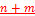
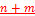

3GPP TS 38.213 V17.9.0 (2024-03)
Technical Specification
3rd Generation Partnership Project;
Technical Specification Group Radio Access Network;
NR;
Physical layer procedures for control
(Release 17)
The present document has been developed within the 3rd Generation
Partnership Project (3GPP TM) and may be further elaborated
for the purposes of 3GPP..
The present document has not been subject to any approval process by the
3GPP Organizational Partners and shall not be implemented.
This Specification is provided for future development work within 3GPP
only. The Organizational Partners accept no liability for any use of
this Specification.
Specifications and Reports for implementation of the 3GPP TM
system should be obtained via the 3GPP Organizational Partners'
Publications Offices.
Keywords
3GPP, New Radio, Layer 1
3GPP
Postal address
3GPP support office address
650 Route des Lucioles - Sophia Antipolis
Valbonne - FRANCE
Tel.: +33 4 92 94 42 00 Fax: +33 4 93 65 47 16
Internet
http://www.3gpp.org
Copyright Notification
No part may be reproduced except as authorized by written
permission.
The copyright and the foregoing restriction extend to reproduction in
all media.
© 2024, 3GPP Organizational Partners (ARIB, ATIS, CCSA, ETSI, TSDSI, TTA, TTC).
All rights reserved.
UMTS™ is a Trade Mark of ETSI registered for the benefit of its members
3GPP™ is a Trade Mark of ETSI registered for the benefit of its
Members and of the 3GPP Organizational Partners
LTE™ is a Trade Mark of ETSI registered for the benefit of its Members
and of the 3GPP Organizational Partners
GSM® and the GSM logo are registered and owned by the GSM Association
Foreword 6
1 Scope 7
2 References 7
3 Definitions, symbols and abbreviations 8
3.1 Definitions 8
3.2 Symbols 8
3.3 Abbreviations 8
4 Synchronization procedures 10
4.1 Cell search 10
4.2 Transmission timing adjustments 13
4.3 Timing for secondary cell activation / deactivation 14
5 Radio link monitoring 15
6 Link recovery procedures 16
7 Uplink Power control 20
7.1 Physical uplink shared channel 21
7.1.1 UE behaviour 22
7.2 Physical uplink control channel 34
7.2.1 UE behaviour 35
7.3 Sounding reference signals 40
7.3.1 UE behaviour 40
7.4 Physical random access channel 43
7.5 Prioritizations for transmission power reductions 44
7.6 Dual connectivity 45
7.6.1 EN-DC 45
7.6.1A NE-DC 45
7.6.2 NR-DC 46
7.7 Power headroom report 48
7.7.1 Type 1 PH report 49
7.7.2 Type 2 PH report 51
7.7.3 Type 3 PH report 51
8 Random access procedure 51
8.1 Random access preamble 52
8.1A PUSCH for Type-2 random access procedure 55
8.2 Random access response - Type-1 random access procedure 57
8.2A Random access response - Type-2 random access procedure 59
8.3 PUSCH scheduled by RAR UL grant 61
8.4 PDSCH with UE contention resolution identity 62
9 UE procedure for reporting control information 63
9.A PUCCH cell switching 72
9.1 HARQ-ACK codebook determination 72
9.1.1 CBG-based HARQ-ACK codebook determination 74
9.1.2 Type-1 HARQ-ACK codebook determination 74
9.1.2.1 Type-1 HARQ-ACK codebook in physical uplink control channel 76
9.1.2.2 Type-1 HARQ-ACK codebook in physical uplink shared channel 88
9.1.3 Type-2 HARQ-ACK codebook determination 90
9.1.3.1 Type-2 HARQ-ACK codebook in physical uplink control channel 91
9.1.3.2 Type-2 HARQ-ACK codebook in physical uplink shared channel 100
9.1.3.3 Type-2 HARQ-ACK codebook grouping and HARQ-ACK retransmission 101
9.1.4 Type-3 HARQ-ACK codebook determination 104
9.1.5 HARQ-ACK codebook retransmission 108
9.2 UCI reporting in physical uplink control channel 109
9.2.1 PUCCH Resource Sets 109
9.2.2 PUCCH Formats for UCI transmission 113
9.2.3 UE procedure for reporting HARQ-ACK 115
9.2.4 UE procedure for reporting SR 118
9.2.5 UE procedure for reporting multiple UCI types 119
9.2.5.0 UE procedure for prioritization between SL HARQ-ACK information in a PUCCH and DL HARQ-ACK or SR or CSI in a PUCCH 124
9.2.5.1 UE procedure for multiplexing HARQ-ACK or CSI and SR in a PUCCH 124
9.2.5.2 UE procedure for multiplexing HARQ-ACK/SR/CSI in a PUCCH 126
9.2.5.3 UE procedure for reporting UCI of different priorities 130
9.2.5.4 UE procedure for deferring HARQ-ACK for SPS PDSCH 131
9.2.6 PUCCH repetition procedure 132
9.3 UCI reporting in physical uplink shared channel 135
10 UE procedure for receiving control information 139
10.1 UE procedure for determining physical downlink control channel assignment 152
10.1.1 Self-carrier and cross-carrier scheduling on the primary cell 172
10.2 PDCCH validation for DL SPS and UL grant Type 2 173
10.2A PDCCH validation for SL configured grant Type 2 175
10.3 PDCCH monitoring indication and dormancy/non-dormancy behaviour for SCells 175
10.4 Search space set group switching and skipping of PDCCH monitoring 178
10.4A PDCCH monitoring for early indication of paging 183
10.4B Indication of TRS resources 183
10.5 HARQ-ACK information for PUSCH transmissions 184
11 UE-group common signalling 184
11.1 Slot configuration 185
11.1.1 UE procedure for determining slot format 190
11.2 Interrupted transmission indication 197
11.2A Cancellation indication 198
11.3 Group TPC commands for PUCCH/PUSCH 199
11.4 SRS switching 200
12 Bandwidth part operation 200
13 UE procedure for monitoring Type0-PDCCH CSS sets 203
14 Integrated access-backhaul operation 216
15 Dual active protocol stack based handover 223
16 UE procedures for sidelink 224
16.1 Synchronization procedures 225
16.2 Power control 227
16.2.0 S-SS/PSBCH blocks 227
16.2.1 PSSCH 227
16.2.2 PSCCH 228
16.2.3 PSFCH 229
16.2.4 Prioritization of transmissions/receptions 230
16.2.4.1 Simultaneous NR and E-UTRA transmission/reception 230
16.2.4.2 Simultaneous PSFCH transmission/reception 231
16.2.4.3 Simultaneous SL and UL transmissions/receptions 232
16.2.4.3.1 Prioritizations for sidelink and uplink transmissions/receptions 232
16.3 UE procedure for reporting and obtaining control information in PSFCH 233
16.3.0 UE procedure for transmitting PSFCH with control information 233
16.3.1 UE procedure for receiving PSFCH with control information 236
16.4 UE procedure for transmitting PSCCH 237
16.5 UE procedure for reporting HARQ-ACK on uplink 238
16.5.1 Type-1 HARQ-ACK codebook determination 240
16.5.1.1 Type-1 HARQ-ACK codebook in physical uplink control channel 241
16.5.1.2 Type-1 HARQ-ACK codebook in physical uplink shared channel 242
16.5.2 Type-2 HARQ-ACK codebook determination 243
16.5.2.1 Type-2 HARQ-ACK codebook in physical uplink control channel 243
16.5.2.2 Type-2 HARQ-ACK codebook in physical uplink shared channel 245
16.6 UE procedure for LTE sidelink transmission 246
16.7 Operation for in-device coexistence 246
17 UE with reduced capabilities 247
17.1 RedCap UE procedures 247
17.2 Half-Duplex UE in paired spectrum 248
18 Multicast Broadcast Services 249
19 PUSCH transmission in RRC_INACTIVE state 254
19.1 Configured-grant based PUSCH transmission 254
19.2 Random-access based PUSCH transmission 256
Annex A: Change history 257
This Technical Specification has been produced by the 3rd Generation Partnership Project (3GPP).
The contents of the present document are subject to continuing work within the TSG and may change following formal TSG approval. Should the TSG modify the contents of the present document, it will be re-released by the TSG with an identifying change of release date and an increase in version number as follows:
Version x.y.z
where:
x the first digit:
1 presented to TSG for information;
2 presented to TSG for approval;
3 or greater indicates TSG approved document under change control.
y the second digit is incremented for all changes of substance, i.e. technical enhancements, corrections, updates, etc.
z the third digit is incremented when editorial only changes have been incorporated in the document.
The present document specifies and establishes the characteristics of the physical layer procedures for control operations in 5G-NR.
The following documents contain provisions which, through reference in this text, constitute provisions of the present document.
[1] 3GPP TR 21.905: "Vocabulary for 3GPP Specifications"
[2] 3GPP TS 38.201: "NR; Physical Layer – General Description"
[3] 3GPP TS 38.202: "NR; Services provided by the physical layer"
[4] 3GPP TS 38.211: "NR; Physical channels and modulation"
[5] 3GPP TS 38.212: "NR; Multiplexing and channel coding"
[6] 3GPP TS 38.214: "NR; Physical layer procedures for data"
[7] 3GPP TS 38.215: "NR; Physical layer measurements"
[8-1] 3GPP TS 38.101-1: "NR; User Equipment (UE) radio transmission and reception; Part 1: Range 1 Standalone"
[8-2] 3GPP TS 38.101-2: "NR; User Equipment (UE) radio transmission and reception; Part 2: Range 2 Standalone"
[8-3] 3GPP TS 38.101-3: "NR; User Equipment (UE) radio transmission and reception; Part 3: Range 1 and Range 2 Interworking operation with other radios"
[8-4] 3GPP TS 38.101-4: "NR; User Equipment (UE) radio transmission and reception; Part 4: Performance requirements"
[9] 3GPP TS 38.104: "NR; Base Station (BS) radio transmission and reception"
[10] 3GPP TS 38.133: "NR; Requirements for support of radio resource management"
[11] 3GPP TS 38.321: "NR; Medium Access Control (MAC) protocol specification"
[12] 3GPP TS 38.331: "NR; Radio Resource Control (RRC); Protocol specification"
[13] 3GPP TS 36.213: "Evolved Universal Terrestrial Radio Access (E-UTRA); Physical layer procedures"
[14] 3GPP TS 36.321: "Evolved Universal Terrestrial Radio Access (E-UTRA); Medium Access Control (MAC) protocol specification"
[15] 3GPP TS 37.213: "Physical layer procedures for shared spectrum channel access"
[16] 3GPP TS 38.473: "F1 application protocol (F1AP)"
[17] 3GPP TS 38.304: "NR; User Equipment (UE) procedures in Idle mode and RRC Inactive state"
[18] 3GPP TS 38.306: "NR; User Equipment (UE) radio access capabilities"
[19] 3GPP TS 38.300: "NR; NR and NG-RAN Overall Description"
For the purposes of the present document, the terms and definitions given in [1, TR 21.905] and the following apply. A term defined in the present document takes precedence over the definition of the same term, if any, in [1, TR 21.905]. A parameter referenced in italics is provided by higher layers.
For the purposes of the present document, the following symbols apply:
For the purposes of the present document, the abbreviations given in TR 21.905 [1] and the following apply. An abbreviation defined in the present document takes precedence over the definition of the same abbreviation, if any, in [1, TR 21.905].
BPRE Bits per resource element
BWP Bandwidth part
CB Code block
CBG Code block group
CBR Channel busy ratio
CCE Control channel element
CORESET Control resource set
CP Cyclic prefix
CRC Cyclic redundancy check
C-RNTI Cell RNTI
CS-RNTI Configured scheduling RNTI
CSI Channel state information
CSS Common search space
DAI Downlink assignment index
DAPS Dual active protocol stack
DC Dual connectivity
DCI Downlink control information
DL Downlink
DL-SCH Downlink shared channel
EPRE Energy per resource element
EN-DC E-UTRA NR dual connectivity with MCG using E-UTRA and SCG using NR
FR1 Frequency range 1
FR2 Frequency range 2
G-CS-RNTI Group configured scheduling RNTI
G-RNTI Group RNTI
GSCN Global synchronization channel number
HARQ-ACK Hybrid automatic repeat request acknowledgement
MBS Multicast broadcast services
MCG Master cell group
MCS Modulation and coding scheme
NDI New Data Indicator
NE-DC E-UTRA NR dual connectivity with MCG using NR and SCG using E-UTRA
NR-DC NR NR dual connectivity
PBCH Physical broadcast channel
PCell Primary cell
PDCCH Physical downlink control channel
PDSCH Physical downlink shared channel
PO Paging occasion
PRACH Physical random access channel
PRB Physical resource block
PRG Physical resource block group
PSCell Primary secondary cell
PSBCH Physical sidelink broadcast channel
PSCCH Physical sidelink control channel
PSFCH Physical sidelink feedback channel
PSS Primary synchronization signal
PSSCH Physical sidelink shared channel
PUCCH Physical uplink control channel
PUCCH-SCell PUCCH SCell
PUCCH-sSCell PUCCH switching SCell
PUSCH Physical uplink shared channel
QCL Quasi co-location
RB Resource block
RE Resource element
RLM Radio link monitoring
RRM Radio resource management
RS Reference signal
RSRP Reference signal received power
SCG Secondary cell group
SCI Sidelink control information
SCS Subcarrier spacing
SFCI Sidelink feedback control information
SFN System frame number
SL Sidelink
SLIV Start and length indicator value
SPS Semi-persistent scheduling
SR Scheduling request
SRI SRS resource indicator
SRS Sounding reference signal
SSS Secondary synchronization signal
SSSG Search space set group
TA Timing advance
TAG Timing advance group
TB Transport block
TBG Transport block group
TCI Transmission Configuration Indicator
UCI Uplink control information
UE User equipment
UL Uplink
UL-SCH Uplink shared channel
USS UE-specific search space
Cell search is the procedure for a UE to acquire time and frequency synchronization with a cell and to detect the physical layer Cell ID of the cell.
A UE receives the following synchronization signals (SS) in order to perform cell search: the primary synchronization signal (PSS) and secondary synchronization signal (SSS) as defined in [4, TS 38.211].
A UE assumes that reception occasions of a physical broadcast channel (PBCH), PSS, and SSS are in consecutive symbols, as defined in [4, TS 38.211], and form a SS/PBCH block. The UE assumes that SSS, PBCH DM-RS, and PBCH data have same EPRE. The UE may assume that the ratio of PSS EPRE to SSS EPRE in a SS/PBCH block is either 0 dB or 3 dB. If the UE has not been provided dedicated higher layer parameters, the UE may assume that the ratio of PDCCH DMRS EPRE to SSS EPRE is within -8 dB and 8 dB when the UE monitors PDCCHs for a DCI format 1_0 with CRC scrambled by SI-RNTI, P-RNTI, or RA-RNTI, or for a DCI format 2_7, or for a DCI format 4_0.
For a half frame with SS/PBCH blocks, the first symbol indexes for candidate SS/PBCH blocks are determined according to the SCS of SS/PBCH blocks as follows, where index 0 corresponds to the first symbol of the first slot in a half-frame.
- Case A - 15 kHz SCS: the first symbols of the candidate SS/PBCH blocks have indexes of \(\left\{ 2,8 \right\} + 14 \cdot n\).
- For operation without shared spectrum channel access:
- For carrier frequencies smaller than or equal to 3 GHz, \(n = 0,1\).
- For carrier frequencies within FR1 larger than 3 GHz, \(n = 0,1,2,3\).
- For operation with shared spectrum channel access, as described in [15, TS 37.213], \(n = 0,\ 1,\ 2,\ 3,\ 4\).
- Case B - 30 kHz SCS: the first symbols of the candidate SS/PBCH blocks have indexes \(\left\{ 4,8,16,20 \right\} + 28 \cdot n\). For carrier frequencies smaller than or equal to 3 GHz, \(n = 0\). For carrier frequencies within FR1 larger than 3 GHz, \(n = 0,1\).
- Case C - 30 kHz SCS: the first symbols of the candidate SS/PBCH blocks have indexes \(\left\{ 2,8 \right\} + 14 \cdot n\).
- For operation without shared spectrum channel access
- For paired spectrum operation
- For carrier frequencies smaller than or equal to 3 GHz, \(n = 0,1\). For carrier frequencies within FR1 larger than 3 GHz, \(n = 0,1,2,3\).
- For unpaired spectrum operation
- For carrier frequencies smaller than 1.88 GHz, \(n = 0,1\). For carrier frequencies within FR1 equal to or larger than 1.88 GHz, \(n = 0,1,2,3\).
- For operation with shared spectrum channel access, \(n = 0,\ 1,\ 2,\ 3,\ 4,\ 5,\ 6,\ 7,\ 8,\ 9\).
- Case D - 120 kHz SCS: the first symbols of the candidate SS/PBCH blocks have indexes \(\left\{ 4,8,16,20 \right\} + 28 \cdot n\). For carrier frequencies within FR2, \(n = 0,\ 1,\ 2,\ 3,\ 5,\ 6,\ 7,\ 8,\ 10,\ 11,\ 12,\ 13,\ 15,\ 16,\ 17,\ 18\).
- Case E - 240 kHz SCS: the first symbols of the candidate SS/PBCH blocks have indexes \(\left\{ 8,12,16,20,32,36,40,44 \right\} + 56 \cdot n\). For carrier frequencies within FR2-1, \(n = 0,\ 1,\ 2,\ 3,\ 5,\ 6,\ 7,\ 8\).
- Case F – 480 kHz SCS: the first symbols of the candidate SS/PBCH blocks have indexes \(\left\{ 2,\ 9 \right\} + 14 \cdot n\). For carrier frequencies within FR2-2, \(n = 0,\ 1,\ 2,\ 3,\ 4,\ 5,\ 6,\ 7,\ 8,\ 9,\ 10,\ 11,\ 12,\ 13,\ 14,\ 15,\ 16,\ 17,\ 18,\ 19,\ 20,\ 21,\ 22,\ 23,\ 24,\ 25,\ 26,\ 27,\ 28,\ 29,\ 30,\ 31.\)
- Case G – 960 kHz SCS: the first symbols of the candidate SS/PBCH blocks have indexes \(\left\{ 2,\ 9 \right\} + 14 \cdot n\). For carrier frequencies within FR2-2, \(n = 0,\ 1,\ 2,\ 3,\ 4,\ 5,\ 6,\ 7,\ 8,\ 9,\ 10,\ 11,\ 12,\ 13,\ 14,\ 15,\ 16,\ 17,\ 18,\ 19,\ 20,\ 21,\ 22,\ 23,\ 24,\ 25,\ 26,\ 27,\ 28,\ 29,\ 30,\ 31.\)
From the above cases, if the SCS of SS/PBCH blocks is not provided by ssbSubcarrierSpacing, the applicable cases for a cell depend on a respective frequency band, as provided in [8-1, TS 38.101-1] and [8-2, TS 38.101-2]. A same case applies for all SS/PBCH blocks on the cell. If a 30 kHz SS/PBCH block SCS is indicated by ssbSubcarrierSpacing, Case B applies for frequency bands with only 15 kHz SS/PBCH block SCS as specified in [8-1, TS 38.101-1], and the case specified for 30 kHz SS/PBCH block SCS in [8-1, TS 38.101-1] applies for frequency bands with 30 kHz SS/PBCH block SCS or both 15 kHz and 30 kHz SS/PBCH block SCS as specified in [8-1, TS 38.101-1]. For a UE configured to operate with carrier aggregation over a set of cells in a frequency band of FR2 or with frequency-contiguous carrier aggregation over a set of cells in a frequency band of FR1, if the UE is provided SCS values by ssbSubcarrierSpacing for receptions of SS/PBCH blocks on any cells from the set of cells, the UE expects the SCS values to be same.
The candidate SS/PBCH blocks in a half frame are indexed in an ascending order in time from 0 to \({\overline{L}}_{\max} - 1\), where \({\overline{L}}_{\max}\) is determined according to SS/PBCH block patterns for Cases A through G. \(L_{\max}\) is a maximum number of SS/PBCH block indexes in a cell, and the maximum number of transmitted SS/PBCH blocks within a half frame is \(L_{\max}\).
- For operation without shared spectrum channel access in FR1 and FR2, and for operation with shared spectrum channel access in FR2-2, \(L_{\max} = {\overline{L}}_{\max}\)
- For operation with shared spectrum channel access in FR1, \(L_{\max} = 8\) for \({\overline{L}}_{\max} = 10\) and 15 kHz SCS of SS/PBCH blocks and for \({\overline{L}}_{\max} = 20\) and 30 kHz SCS of SS/PBCH blocks
For \({\overline{L}}_{\max} = 4\), a UE determines the 2 LSB bits of a candidate SS/PBCH block index per half frame from a one-to-one mapping with an index of the DM-RS sequence transmitted in the PBCH as described in [4, TS 38.211].
For \({\overline{L}}_{\max} > 4\), a UE determines the 3 LSB bits of a candidate SS/PBCH block index per half frame from a one-to-one mapping with an index of the DM-RS sequence transmitted in the PBCH as described in [4, TS 38.211]
- for \({\overline{L}}_{\max} = 10\), the UE determines the 1 MSB bit of the candidate SS/PBCH block index from PBCH payload bit \({\bar{a}}_{\bar{A} + 7}\) as described in [5, TS 38.212]
- for \({\overline{L}}_{\max} = 20\), the UE determines the 2 MSB bits of the candidate SS/PBCH block index from PBCH payload bits \({\bar{a}}_{\bar{A} + 6},{\bar{a}}_{\bar{A} + 7}\) as described in [5, TS 38.212]
- for \({\overline{L}}_{\max} = 64\), the UE determines the 3 MSB bits of the candidate SS/PBCH block index from PBCH payload bits \({\bar{a}}_{\bar{A} + 5},{\bar{a}}_{\bar{A} + 6},{\bar{a}}_{\bar{A} + 7}\) as described in [5, TS 38.212]
A UE can be provided per serving cell by ssb-periodicityServingCell a periodicity of the half frames for reception of the SS/PBCH blocks for the serving cell. If the UE is not configured a periodicity of the half frames for receptions of the SS/PBCH blocks, the UE assumes a periodicity of a half frame. A UE assumes that the periodicity is same for all SS/PBCH blocks in the serving cell.
For initial cell selection, a UE may assume that half frames with SS/PBCH blocks occur with a periodicity of 2 frames.
For operation without shared spectrum channel access, an SS/PBCH block index is same as a candidate SS/PBCH block index.
For operation with shared spectrum channel access, a UE assumes that transmission of SS/PBCH blocks in a half frame is within a discovery burst transmission window that starts from the first symbol of the first slot in a half-frame. The UE can be provided per serving cell by discoveryBurstWindowLength a duration of the discovery burst transmission window. If discoveryBurstWindowLength is not provided, the UE assumes that the duration of the discovery burst transmission window is a half frame. For a serving cell, the UE assumes that a periodicity of the discovery burst transmission window is same as a periodicity of half frames for receptions of SS/PBCH blocks in the serving cell. The UE assumes that one or more SS/PBCH blocks indicated by ssb-PositionsInBurst may be transmitted within the discovery burst transmission window and have candidate SS/PBCH blocks indexes corresponding to SS/PBCH block indexes provided by ssb-PositionsInBurst. If MSB \(k\), \(k \geq 1\), of ssb-PositionsInBurst is set to 1, the UE assumes that SS/PBCH block(s) within the discovery burst transmission window with candidate SS/PBCH block index(es) corresponding to SS/PBCH block index equal to \(k - 1\) may be transmitted; if MSB \(k\) is set to 0, the UE assumes that the SS/PBCH block(s) are not transmitted. If MSB \(k\), \(k \geq 1\), of inOneGroup is set to 1, and MSB \(m\), \(m \geq 1\), of groupPresence is set to 1, the UE assumes that SS/PBCH block(s) within the discovery burst transmission window with candidate SS/PBCH block index(es) corresponding to SS/PBCH block index determined by \(k\) and \(m\) may be transmitted; otherwise, the UE assumes that the SS/PBCH block(s) are not transmitted.
For operation with shared spectrum channel access in FR1, a UE assumes that SS/PBCH blocks in a serving cell that are within a same discovery burst transmission window or across discovery burst transmission windows are quasi co-located with respect to average gain, quasi co-location 'typeA' and 'typeD' properties, when applicable [6, TS 38.214], if a value of \(\left( N_{DM - RS}^{PBCH}{mod}N_{SSB}^{QCL} \right)\) is same among the SS/PBCH blocks. \(N_{DM - RS}^{PBCH}\) is an index of a DM-RS sequence transmitted in a PBCH of a corresponding SS/PBCH block, and \(N_{SSB}^{QCL}\) is either provided by ssb-PositionQCL or, if ssb-PositionQCL is not provided, obtained from a MIB provided by a SS/PBCH block according to Table 4.1-1 with \(k_{SSB} < 24\) [4, TS 38.211]. The UE can determine an SS/PBCH block index according to \(\left( N_{DM - RS}^{PBCH}{mod}N_{SSB}^{QCL} \right)\), or according to \(\left( \overline{i}\ {mod}N_{SSB}^{QCL} \right)\) where \(\overline{i}\) is the candidate SS/PBCH block index. The UE assumes that within a discovery burst transmission window, a number of transmitted SS/PBCH blocks on a serving cell is not larger than \(N_{SSB}^{QCL}\) and a number of transmitted SS/PBCH blocks with a same SS/PBCH block index is not larger than one.
Table 4.1-1: Mapping between the combination of subCarrierSpacingCommon and LSB of ssb-SubcarrierOffset to \(\mathbf{N}_{\mathbf{SSB}}^{\mathbf{QCL}}\) for operation with shared spectrum channel access in FR1
| subCarrierSpacingCommon | LSB of ssb-SubcarrierOffset | \[\mathbf{N}_{\mathbf{SSB}}^{\mathbf{QCL}}\] |
|---|---|---|
| scs15or60 | 0 | 1 |
| scs15or60 | 1 | 2 |
| scs30or120 | 0 | 4 |
| scs30or120 | 1 | 8 |
For operation with shared spectrum channel access in FR2-2, a UE assumes that SS/PBCH blocks in a serving cell that are within a same discovery burst transmission window or across discovery burst transmission windows are quasi co-located with respect to average gain, quasi co-location 'typeA' and 'typeD' properties, when applicable, if a value of \(\left( \overline{i}{mod}N_{SSB}^{QCL} \right)\) is same among the SS/PBCH blocks, where \(\overline{i}\) is the candidate SS/PBCH block index. \(N_{SSB}^{QCL}\) is either provided by ssb-PositionQCL or, if ssb-PositionQCL is not provided, obtained from a MIB provided by a SS/PBCH block according to Table 4.1-2. The UE can determine an SS/PBCH block index according to \(\left( \overline{i}\ {mod}N_{SSB}^{QCL} \right)\). The UE assumes that within a discovery burst transmission window, a number of transmitted SS/PBCH blocks on a serving cell is not larger than \(N_{SSB}^{QCL}\) and a number of transmitted SS/PBCH blocks with a same SS/PBCH block index is not larger than one.
Table 4.1-2: Mapping between subCarrierSpacingCommon to \(\mathbf{N}_{\mathbf{SSB}}^{\mathbf{QCL}}\) for operation with shared spectrum channel access in FR2-2
| subCarrierSpacingCommon | \[\mathbf{N}_{\mathbf{SSB}}^{\mathbf{QCL}}\] |
|---|---|
| scs15or60 | 32 |
| scs30or120 | 64 |
For operation without shared spectrum channel access in FR2-2, a UE expects a MIB in a SS/PBCH block to provide subCarrierSpacingCommon = 'scs30or120'.
Upon detection of a SS/PBCH block, the UE determines from MIB that a CORESET for Type0-PDCCH CSS set, as described in clause 13, is present if \(k_{SSB} < 24\) [4, TS 38.211] for FR1 or if \(k_{SSB} < 12\) for FR2. The UE determines from MIB that a CORESET for Type0-PDCCH CSS set is not present if \(k_{SSB} > 23\) for FR1 or if \(k_{SSB} > 11\) for FR2; the CORESET for Type0-PDCCH CSS set may be provided by PDCCH-ConfigCommon.
For a serving cell without transmission of SS/PBCH blocks, a UE acquires time and frequency synchronization with the serving cell based on receptions of SS/PBCH blocks on the PCell, or on the PSCell, or on an SCell if applicable as described in [10, TS 38.133], of the cell group for the serving cell.
A UE can be provided a value \(N_{TA,offset}\) of a timing advance offset for a serving cell by n-TimingAdvanceOffset for the serving cell. If the UE is not provided n-TimingAdvanceOffset for a serving cell, the UE determines a default value \(N_{TA,offset}\) of the timing advance offset for the serving cell as described in [10, TS 38.133].
If a UE is configured with two UL carriers for a serving cell, a same timing advance offset value \(N_{TA,offset}\) applies to both carriers.
Upon reception of a timing advance command for a TAG, the UE adjusts uplink timing for PUSCH/SRS/PUCCH transmission on all the serving cells in the TAG based on a value \(N_{TA,offset}\) that the UE expects to be same for all the serving cells in the TAG and based on the received timing advance command where the uplink timing for PUSCH/SRS/PUCCH transmissions is the same for all the serving cells in the TAG.
For a band with synchronous contiguous intra-band EN-DC in a band combination with non-applicable maximum transmit timing difference requirements as described in Note 1 of Table 7.5.3-1 of [10, TS 38.133], if the UE indicates ul-TimingAlignmentEUTRA-NR as 'required' and uplink transmission timing based on timing adjustment indication for a TAG from MCG and a TAG from SCG are determined to be different by the UE, the UE adjusts the transmission timing for PUSCH/SRS/PUCCH transmission on all serving cells part of the band with the synchronous contiguous intra-band EN-DC based on timing adjustment indication for a TAG from a serving cell in MCG in the band. The UE is not expected to transmit a PUSCH/SRS/PUCCH in one CG when the PUSCH/SRS/PUCCH is overlapping in time, even partially, with random access preamble transmitted in another CG.
For a SCS of \(2^{\mu} \bullet 15\) kHz, the timing advance command for a TAG indicates the change of the uplink timing relative to the current uplink timing for the TAG in multiples of \(16 \bullet \frac{64 \bullet T_{c}}{2^{\mu}}\). The start timing of the random access preamble is described in [4, TS 38.211].
A timing advance command [11, TS 38.321] in case of random access response or in an absolute timing advance command MAC CE, \(T_{A}\), for a TAG indicates \(N_{TA}\) values by index values of \(T_{A}\) = 0, 1, 2, ..., 3846, where an amount of the time alignment for the TAG with SCS of \(2^{\mu} \bullet 15\) kHz is \(N_{TA} = T_{A} \bullet 16 \bullet \frac{64}{2^{\mu}}\). \(N_{TA}\) is defined in [4, TS 38.211] and is relative to the SCS of the first uplink transmission from the UE after the reception of the random access response or absolute timing advance command MAC CE.
In other cases, a timing advance command [11, TS 38.321], \(T_{A}\), for a TAG indicates adjustment of a current \(N_{TA}\) value, \(N_{TA\_ old}\), to the new \(N_{TA}\) value, \(N_{TA\_ new}\), by index values of \(T_{A}\) = 0, 1, 2,..., 63, where for a SCS of \(2^{\mu} \bullet 15\) kHz, \(N_{TA\_ new} = N_{TA\_ old} + \left( T_{A} - 31 \right) \bullet 16 \bullet \frac{64}{2^{\mu}}\).
If a UE has multiple active UL BWPs, as described in clause 12, in a same TAG, including UL BWPs in two UL carriers of a serving cell, the timing advance command value is relative to the largest SCS of the multiple active UL BWPs. The applicable \(N_{TA\_ new}\) value for an UL BWP with lower SCS may be rounded to align with the timing advance granularity for the UL BWP with the lower SCS while satisfying the timing advance accuracy requirements in [10, TS 38.133].
Adjustment of an \(N_{TA}\) value by a positive or a negative amount indicates advancing or delaying the uplink transmission timing for the TAG by a corresponding amount, respectively.
For a timing advance command received on uplink slot \(n\) and for a transmission other than a PUSCH scheduled by a RAR UL grant or a fallbackRAR UL grant as described in clause 8.2A or 8.3, or a PUCCH with HARQ-ACK information in response to a successRAR as described in clause 8.2A, the corresponding adjustment of the uplink transmission timing applies from the beginning of uplink slot \(n + k + 1{+ 2}^{\mu} \bullet K_{offset}\) where \(k = \left\lceil N_{slot}^{subframe,\ \ \mu} \bullet \frac{\left( N_{T,1} + N_{T,2} + N_{TA,max} + 0.5 \right)}{T_{sf}} \right\rceil\), \(N_{T,1}\) is a time duration in msec of \(N_{1}\) symbols corresponding to a PDSCH processing time for UE processing capability 1 when additional PDSCH DM-RS is configured, \(N_{T,2}\) is a time duration in msec of \(N_{2}\) symbols corresponding to a PUSCH preparation time for UE processing capability 1 [6, TS 38.214], \(N_{TA,max}\) is the maximum timing advance value in msec that can be provided by a TA command field of 12 bits, \(N_{slot}^{subframe,\ \ \mu}\) is the number of slots per subframe, \(T_{sf}\) is the subframe duration of 1 msec, and \(K_{offset} = K_{cell,offset} - K_{UE,offset}\), where \(K_{cell,offset}\) is provided by cellSpecificKoffset and \(K_{UE,offset}\) is provided by a Differential Koffset MAC CE command [11, TS 38.321]; otherwise, if not respectively provided, \(K_{cell,offset} = 0\) or \(K_{UE,offset} = 0\). \(N_{1}\) and \(N_{2}\) are determined with respect to the minimum SCS among the SCSs of all configured UL BWPs for all uplink carriers in the TAG and of all configured DL BWPs for the corresponding downlink carriers. For \(\mu = 0\), the UE assumes \(N_{1,0} = 14\) [6, TS 38.214]. Slot \(n\) and \(N_{slot}^{subframe,\ \ \mu}\) are determined with respect to the minimum SCS among the SCSs of all configured UL BWPs for all uplink carriers in the TAG. \(N_{TA,max}\) is determined with respect to the minimum SCS among the SCSs of all configured UL BWPs for all uplink carriers in the TAG and for all configured initial UL BWPs provided by initialUplinkBWP. The uplink slot \(n\) is the last slot among uplink slot(s) overlapping with the slot(s) of PDSCH reception assuming \(T_{TA} = 0\), where the PDSCH provides the timing advance command and \(T_{TA}\) is defined in [4, TS 38.211].
If a UE changes an active UL BWP between a time of a timing advance command reception and a time of applying a corresponding adjustment for the uplink transmission timing, the UE determines the timing advance command value based on the SCS of the new active UL BWP. If the UE changes an active UL BWP after applying an adjustment for the uplink transmission timing, the UE assumes a same absolute timing advance command value before and after the active UL BWP change.
If the received downlink timing changes and is not compensated or is only partly compensated by the uplink timing adjustment without timing advance command as described in [10, TS 38.133], the UE changes \(N_{TA}\) accordingly.
If two adjacent slots overlap due to a TA command or due to update of \(N_{\text{TA,adj}}^{\text{UE}}\) or \(N_{\text{TA,adj}}^{\text{common}}\), when applicable, the latter slot is reduced in duration relative to the former slot. The UE does not change \(N_{TA}\) during an actual time domain window for a PUSCH or a PUCCH transmission [6, TS 38.214].
Using higher-layer ephemeris parameters for a serving satellite, if provided, a UE pre-compensates the two-way transmission delay on the service link based on \(N_{\text{TA,adj}}^{\text{UE}}\) that the UE determines using the serving satellite position and its own position. To pre-compensate the two-way transmission delay between the uplink time synchronization reference point and the serving satellite, the UE determines \(N_{\text{TA,adj}}^{\text{common}}\ \)[4, TS 38.211] based on one-way propagation delay \({Delay}_{common}(t)\) that the UE determines as:
\[{Delay}_{common}(t) = \ \frac{{TA}_{Common}}{2} + \ \frac{{TA}_{CommonDrift}}{2} \times \left( t - t_{epoch} \right) + \frac{{TA}_{CommonDriftVariant}}{2} \times \left( t - t_{epoch} \right)^{2}\ \]
where \({TA}_{Common}\), \({TA}_{CommonDrift}\), and \({TA}_{CommonDriftVariant}\) are respectively provided by ta-Common, ta-CommonDrift, and ta-CommonDriftVariant and \(t_{epoch}\) is provided by epochTime which is the epoch time of ta-Common, ta-CommonDrift, and ta-CommonDriftVariant [12, TS 38.331]. \({Delay}_{common}(t)\) provides a distance at time \(t\) between the serving satellite and the uplink time synchronization reference point divided by the speed of light. The uplink time synchronization reference point is the point where DL and UL are frame aligned with an offset given by \(N_{TA,offset}\).
With reference to slots for PUCCH transmissions, when a UE receives in a PDSCH an activation command [11, TS 38.321] for a secondary cell ending in slot n, the UE applies the corresponding actions in [11, TS 38.321] no later than the minimum requirement defined in [10, TS 38.133] and no earlier than slot , except for the following:
- the actions related to CSI reporting on a serving cell that is
active in slot 
- the actions related to the sCellDeactivationTimer
associated with the secondary cell [11, TS 38.321] that the UE applies
in slot
- the actions related to CSI reporting on a serving cell which is not
active in slot that the UE applies in the
earliest slot after in which the serving cell is
active.
The value of  is \({m + 3\ N}_{\text{slot}}^{\text{subframe},\mu} +
1\) where slot
n+m is a slot indicated for PUCCH transmission with
HARQ-ACK information for the PDSCH reception as described in clause
9.2.3 and is a number of slots per
subframe for the SCS configuration
is \({m + 3\ N}_{\text{slot}}^{\text{subframe},\mu} +
1\) where slot
n+m is a slot indicated for PUCCH transmission with
HARQ-ACK information for the PDSCH reception as described in clause
9.2.3 and is a number of slots per
subframe for the SCS configuration  of the PUCCH transmission as
defined in [4, TS 38.211].
of the PUCCH transmission as
defined in [4, TS 38.211].
With reference to slots for PUCCH transmissions, if a UE receives a
deactivation command [11, TS 38.321] for a secondary cell ending in slot
 ,
the UE applies the corresponding actions in [11, TS 38.321] no later
than the minimum requirement defined in [10, TS 38.133], except for the
actions related to CSI reporting on an activated serving cell which the
UE applies in slot .
,
the UE applies the corresponding actions in [11, TS 38.321] no later
than the minimum requirement defined in [10, TS 38.133], except for the
actions related to CSI reporting on an activated serving cell which the
UE applies in slot .
If the sCellDeactivationTimer associated with the secondary
cell expires in slot , the UE applies the
corresponding actions in [11, TS 38.321] no later than the minimum
requirement defined in [10, TS 38.133], except for the actions related
to CSI reporting on an activated serving cell which the UE applies in
the first slot that is after slot where is the
SCS configuration for PDSCH reception on the secondary cell.
The downlink radio link quality of the primary cell is monitored by a UE for the purpose of indicating out-of-sync/in-sync status to higher layers. The UE is not required to monitor the downlink radio link quality in DL BWPs other than the active DL BWP, as described in clause 12, on the primary cell. If the active DL BWP is the initial DL BWP and for SS/PBCH block and CORESET multiplexing pattern 2 or 3, as described in clause 13, the UE is expected to perform RLM using the associated SS/PBCH block when the associated SS/PBCH block index is provided by RadioLinkMonitoringRS.
If the UE is configured with a SCG, as described in [12, TS 38.331], and the parameter rlf-TimersAndConstants is provided by higher layers and is not set to release, the downlink radio link quality of the PSCell of the SCG is monitored by the UE for the purpose of indicating out-of-sync/in-sync status to higher layers. The UE is not required to monitor the downlink radio link quality in DL BWPs other than the active DL BWP on the PSCell.
A UE can be configured for each DL BWP of a SpCell [11, TS 38.321] with a set of resource indexes, through a corresponding set of RadioLinkMonitoringRS, for radio link monitoring by failureDetectionResources. The UE is provided either a CSI-RS resource configuration index, by csi-RS-Index, or a SS/PBCH block index, by ssb-Index. The UE can be configured with up to RadioLinkMonitoringRS for link recovery procedures, as described in clause 6, and for radio link monitoring. From the RadioLinkMonitoringRS, up to RadioLinkMonitoringRS can be used for radio link monitoring depending on \(L_{\max}\ \) as described in Table 5-1, wherein \(L_{\max}\) is as defined in clause 4.1, and up to two RadioLinkMonitoringRS can be used for link recovery procedures.
For operation with shared spectrum channel access, when a UE is provided a SS/PBCH block index by ssb-Index, the UE is expected to perform radio link monitoring using SS/PBCH block(s) in the discovery burst transmission window as described in clause 4.1, where the SS/PBCH block(s) have candidate SS/PBCH block index(es) corresponding to SS/PBCH block index provided by ssb-Index.
If the UE is not provided RadioLinkMonitoringRS and the UE is provided for PDCCH receptions TCI states that include one or more of a CSI-RS
- the UE uses for radio link monitoring the RS provided for the active TCI state for PDCCH reception if the active TCI state for PDCCH reception includes only one RS
- if the active TCI state for PDCCH reception includes two RS, the UE expects that one RS is configured with qcl-Type set to 'typeD' [6, TS 38.214] and the UE uses the RS configured with qcl-Type set to 'typeD' for radio link monitoring; the UE does not expect both RS to be configured with qcl-Type set to 'typeD'
- the UE is not required to use for radio link monitoring an aperiodic or semi-persistent RS
- For , the UE selects the RS provided for active TCI states for PDCCH receptions in CORESETs associated with the search space sets in an order from the shortest monitoring periodicity. If more than one CORESETs are associated with search space sets having same monitoring periodicity, the UE determines the order of the CORESET from the highest CORESET index as described in clause 10.1.
A UE does not expect to use more than RadioLinkMonitoringRS for radio link monitoring when the UE is not provided RadioLinkMonitoringRS.
Values of and for different values of are given in Table 5-1.
Table 5-1: and as a function of maximum number of SS/PBCH blocks per half frame
| 4 | 2 | 2 |
| 8 | 6 | 4 |
| 64 | 8 | 8 |
For a CSI-RS resource configuration, powerControlOffsetSS is not applicable and a UE expects to be provided only 'noCDM' from cdm-Type, only 'one' and 'three' from density, and only '1 port' from nrofPorts [6, TS 38.214].
If a UE is configured with multiple DL BWPs for a serving cell, the UE performs RLM using the RS(s) corresponding to resource indexes provided by RadioLinkMonitoringRS for the active DL BWP or, if RadioLinkMonitoringRS is not provided for the active DL BWP, using the RS(s) provided for the active TCI state for PDCCH receptions in CORESETs on the active DL BWP.
In non-DRX mode operation, the physical layer in the UE assesses once per indication period the radio link quality, evaluated over the previous time period defined in [10, TS 38.133] against thresholds (Qout and Qin) configured by rlmInSyncOutOfSyncThreshold. The UE determines the indication period as the maximum between the shortest periodicity for radio link monitoring resources and 10 msec.
In DRX mode operation, the physical layer in the UE assesses once per indication period the radio link quality, evaluated over the previous time period defined in [10, TS 38.133], against thresholds (Qout and Qin) provided by rlmInSyncOutOfSyncThreshold. The UE determines the indication period as the maximum between the shortest periodicity for radio link monitoring resources and the DRX period.
The physical layer in the UE indicates, in frames where the radio link quality is assessed, out-of-sync to higher layers when the radio link quality is worse than the threshold Qout for all resources in the set of resources for radio link monitoring. When the radio link quality is better than the threshold Qin for any resource in the set of resources for radio link monitoring, the physical layer in the UE indicates, in frames where the radio link quality is assessed, in-sync to higher layers.
A UE can be provided, for each BWP of a serving cell, a set \({\overline{q}}_{0}\) of periodic CSI-RS resource configuration indexes by failureDetectionResourcesToAddModList and a set \({\overline{q}}_{1}\) of periodic CSI-RS resource configuration indexes and/or SS/PBCH block indexes by candidateBeamRSList or candidateBeamRSListExt or candidateBeamRSSCellList for radio link quality measurements on the BWP of the serving cell. Instead of the sets \({\overline{q}}_{0}\) and \({\overline{q}}_{1}\), for each BWP of a serving cell, the UE can be provided respective two sets \({\overline{q}}_{0,0}\) and \({\overline{q}}_{0,1}\) of periodic CSI-RS resource configuration indexes by failureDetectionSet1 and failureDetectionSet2 that can be activated by a MAC CE [11 TS 38.321] and corresponding two sets \({\overline{q}}_{1,0}\) and \({\overline{q}}_{1,1}\) of periodic CSI-RS resource configuration indexes and/or SS/PBCH block indexes by candidateBeamRS-List and candidateBeamRS-List2, respectively, for radio link quality measurements on the BWP of the serving cell. The set \({\overline{q}}_{0,0}\) is associated with the set \({\overline{q}}_{1,0}\) and the set \({\overline{q}}_{0,1}\) is associated with the set \({\overline{q}}_{1,1}\).
If the UE is not provided \({\overline{q}}_{0}\) by failureDetectionResourcesToAddModList for a BWP of the serving cell, the UE determines the set \({\overline{q}}_{0}\) to include periodic CSI-RS resource configuration indexes with same values as the RS indexes in the RS sets indicated by TCI-State for respective CORESETs that the UE uses for monitoring PDCCH. If the UE is not provided \({\overline{q}}_{0,0}\) and \(\ {\overline{q}}_{0,1}\) for a BWP of the serving cell, the UE determines the set \({\overline{q}}_{0,0}\) and \(\ {\overline{q}}_{0,1}\) to include periodic CSI-RS resource configuration indexes with same values as the RS indexes in the RS sets indicated by TCI-State for first and second CORESETs that the UE uses for monitoring PDCCH, respectively, where the UE is provided two coresetPoolIndex values 0 and 1 for the first and second CORESETs, or is not provided coresetPoolIndex value for the first CORESETs and is provided coresetPoolIndex value of 1 for the second CORESETs, respectively. If there are two RS indexes in a TCI state, the set \({\overline{q}}_{0}\) or \({\overline{q}}_{0,0}\), or \({\overline{q}}_{0,1}\) includes RS indexes configured with qcl-Type set to 'typeD' for the corresponding TCI states. If a CORESET that the UE uses for monitoring PDCCH includes two TCI states and the UE is provided sfnSchemePdcch set to 'sfnSchemeA' or 'sfnSchemeB', the set \({\overline{q}}_{0}\) includes RS indexes in the RS sets associated with the two TCI states.
The UE expects the set \({\overline{q}}_{0}\) to include up to two RS indexes. If the UE is provided \({\overline{q}}_{0,0}\) or \({\overline{q}}_{0,1}\), the UE expects the set \({\overline{q}}_{0,0}\) or the set \({\overline{q}}_{0,1}\) to include up to a number of \(N_{BFD}\) RS indexes indicated by maxBFD-RS-resourcesPerSetPerBWP. If the UE is not provided \({\overline{q}}_{0,0}\) or \({\overline{q}}_{0,1}\), and if a number of active TCI states for PDCCH receptions in the first or second CORESETs is larger than \(N_{BFD}\), the UE determines the set \({\overline{q}}_{0,0}\) or \({\overline{q}}_{0,1}\) to include periodic CSI-RS resource configuration indexes with same values as the RS indexes in the RS sets associated with the active TCI states for PDCCH receptions in the first or second CORESETs corresponding to search space sets according to an ascending order for PDCCH monitoring periodicity. If more than one first or second CORESETs correspond to search space sets with same monitoring periodicity, the UE determines the order of the first or second CORESETs according to a descending order of a CORESET index.
If a UE
- is not provided coresetPoolIndex or is provided coresetPoolIndex with a value of 0 for first CORESETs on an active DL BWP of a serving cell,
- is provided coresetPoolIndex with a value of 1 for second CORESETs on the active DL BWP of the serving cells, and
- is provided SSB-MTCAdditionalPCI
SS/PBCH block indexes associated with a physical cell identity other than the one provided by physCellId in ServingCellConfigCommon can be provided in \({\overline{q}}_{1,1}\) set and the corresponding \({\overline{q}}_{0,1}\) set is associated with the physical cell identity.
The UE expects single port RS in the set \({\overline{q}}_{0}\), or \({\overline{q}}_{0,0}\), or \({\overline{q}}_{0,1}\). The UE expects single-port or two-port CSI-RS with frequency density equal to 1 or 3 REs per RB in the set \({\overline{q}}_{1}\), or \({\overline{q}}_{1,0}\), or \({\overline{q}}_{1,1}\). The thresholds Qout,LR and Qin,LR correspond to the default value of rlmInSyncOutOfSyncThreshold, as described in [10, TS 38.133] for Qout, and to the value provided by rsrp-ThresholdSSB or rsrp-ThresholdBFR, respectively.
The physical layer in the UE assesses the radio link quality according to the set \({\overline{q}}_{0}\), \({\overline{q}}_{0,0}\), or \({\overline{q}}_{0,1}\), of resource configurations against the threshold Qout,LR. For the set \({\overline{q}}_{0}\), the UE assesses the radio link quality only according to SS/PBCH blocks on the PCell or the PSCell or periodic CSI-RS resource configurations that are quasi co-located, as described in [6, TS 38.214], with the DM-RS of PDCCH receptions by the UE. The UE applies the Qin,LR threshold to the L1-RSRP measurement obtained from a SS/PBCH block. The UE applies the Qin,LR threshold to the L1-RSRP measurement obtained for a CSI-RS resource after scaling a respective CSI-RS reception power with a value provided by powerControlOffsetSS.
In non-DRX mode operation, the physical layer in the UE provides an indication to higher layers when the radio link quality for all corresponding resource configurations in the set \({\overline{q}}_{0}\), or in the set \({\overline{q}}_{0,0}\) or \({\overline{q}}_{0,1}\), that the UE uses to assess the radio link quality is worse than the threshold Qout,LR. The physical layer informs the higher layers when the radio link quality is worse than the threshold Qout,LR with a periodicity determined by the maximum between the shortest periodicity among the SS/PBCH blocks on the PCell or the PSCell and/or the periodic CSI-RS configurations in the set \({\overline{q}}_{0}\), \({\overline{q}}_{0,0}\), or \({\overline{q}}_{0,1}\) that the UE uses to assess the radio link quality and 2 msec. In DRX mode operation, the physical layer provides an indication to higher layers when the radio link quality is worse than the threshold Qout,LR with a periodicity determined as described in [10, TS 38.133].
For the PCell or the PSCell, upon request from higher layers, the UE provides to higher layers the periodic CSI-RS configuration indexes and/or SS/PBCH block indexes from the set \({\overline{q}}_{1}\), or \({\overline{q}}_{1,0}\), or \({\overline{q}}_{1,1}\) and the corresponding L1-RSRP measurements that are larger than or equal to the Qin,LR threshold.
For the SCell, upon request from higher layers, the UE indicates to higher layers whether there is at least one periodic CSI-RS configuration index or SS/PBCH block index from the set \({\overline{q}}_{1}\), or \({\overline{q}}_{1,0}\), or \({\overline{q}}_{1,1}\) with corresponding L1-RSRP measurements that is larger than or equal to the Qin,LR threshold, and provides the periodic CSI-RS configuration indexes and/or SS/PBCH block indexes from the set \({\overline{q}}_{1}\), or \({\overline{q}}_{1,0}\), or \({\overline{q}}_{1,1}\) and the corresponding L1-RSRP measurements that are larger than or equal to the Qin,LR threshold, if any.
For the PCell or the PSCell, a UE can be provided a CORESET through a link to a search space set provided by recoverySearchSpaceId, as described in clause 10.1, for monitoring PDCCH in the CORESET. If the UE is provided recoverySearchSpaceId, the UE does not expect to be provided another search space set for monitoring PDCCH in the CORESET associated with the search space set provided by recoverySearchSpaceId.
For the PCell or the PSCell, the UE can be provided, by PRACH-ResourceDedicatedBFR, a configuration for PRACH transmission as described in clause 8.1. For PRACH transmission in slot \(n\) and according to antenna port quasi co-location parameters associated with periodic CSI-RS resource configuration or with SS/PBCH block associated with index \(q_{new}\) provided by higher layers [11, TS 38.321], the UE monitors PDCCH in a search space set provided by recoverySearchSpaceId for detection of a DCI format with CRC scrambled by C-RNTI or MCS-C-RNTI starting from slot \(n + 4 + {2^{\mu} \bullet k}_{mac}\), where \(\mu\) is the SCS configuration for the PRACH transmission and \(k_{mac}\) is a number of slots provided by kmac [12, TS 38.331] or \(k_{mac} = 0\) if kmac is not provided, within a window configured by BeamFailureRecoveryConfig. For PDCCH monitoring in a search space set provided by recoverySearchSpaceId and for corresponding PDSCH receptions, the UE assumes the same antenna port quasi-collocation parameters as the ones associated with index \(q_{new}\) until the UE receives by higher layers an activation for a TCI state or any of the parameters tci-StatesPDCCH-ToAddList and/or tci-StatesPDCCH-ToReleaseList. After the UE detects a DCI format with CRC scrambled by C-RNTI or MCS-C-RNTI in the search space set provided by recoverySearchSpaceId, the UE continues to monitor PDCCH candidates in the search space set provided by recoverySearchSpaceId until the UE receives a MAC CE activation command for a TCI state or tci-StatesPDCCH-ToAddList and/or tci-StatesPDCCH-ToReleaseList.
For the PCell or the PSCell, after 28 symbols from a last symbol of a first PDCCH reception in a search space set provided by recoverySearchSpaceId for which the UE detects a DCI format with CRC scrambled by C-RNTI or MCS-C-RNTI and until the UE receives an activation command for PUCCH-SpatialRelationInfo [11, TS 38.321] or is provided PUCCH-SpatialRelationInfo for PUCCH resource(s), the UE transmits a PUCCH on a same cell as the PRACH transmission using
- a same spatial filter as for the last PRACH transmission
- a power determined as described in clause 7.2.1 with \(q_{u} = 0\), \({q_{d} = q}_{new}\), and \(l = 0\)
For the PCell or the PSCell and for sets \({\overline{q}}_{0}\) and \({\overline{q}}_{1}\), after 28 symbols from a last symbol of a first PDCCH reception in a search space set provided by recoverySearchSpaceId where a UE detects a DCI format with CRC scrambled by C-RNTI or MCS-C-RNTI, the UE assumes same antenna port quasi-collocation parameters as the ones associated with index \(q_{new}\) for PDCCH monitoring in a CORESET with index 0.
If a UE is provided dl-OrJointTCI-StateList or ul-TCI-StateList indicating a unified TCI state for the PCell or the PSCell [6, TS 38.214], after 28 symbols from a last symbol of a first PDCCH reception in a search space set provided by recoverySearchSpaceId where the UE detects a DCI format with CRC scrambled by C-RNTI or MCS-C-RNTI, the UE
- if SSB-MTC-AdditionalPCI is not provided, monitors PDCCH in all CORESETs, and receives PDSCH and aperiodic CSI-RS resource in a CSI-RS resource set with same indicated TCI state as for the PDCCH and PDSCH, using the same antenna port quasi co-location parameters as the ones associated with the corresponding index \(q_{\text{new}}\), if any
- transmits PUSCH, PUCCH and SRS that uses a same spatial domain filter with same indicated TCI state as for the PUSCH and the PUCCH, using a same spatial domain filter as for the last PRACH transmission using the following parameters for determination of a corresponding power as described in clauses 7.1.1, 7.2.1, and 7.3.1
- the RS index \({q_{d} = q}_{new}\) for obtaining the downlink pathloss estimate
- the values of \(P_{\text{O\_UE\_PUSCH},b,f,c}(j)\), \(\alpha_{b,f,c}(j)\), and the PUSCH power control adjustment state \(l\) provided by p0AlphaSetforPUSCH associated with the smallest value of ul-powercontrolId for the PCell or the PSCell
- the value of \(P_{\text{O\_UE\_PUCCH}}\left( q_{u} \right)\) and the PUCCH power control adjustment state \(l\) provided by p0AlphaSetforPUCCH associated with the smallest value of ul-powercontrolId for the PCell or the PSCell
- the values of \(P_{\text{O\_UE\_SRS},b,f,c}\left( q_{s} \right)\), \(\alpha_{SRS,b,f,c}\left( q_{s} \right)\), and the SRS power control adjustment state \(l\) provided by p0AlphaSetforSRS associated with the smallest value of ul-powercontrolId for the PCell or the PSCell
For the remaining of this clause, if a PDCCH reception includes two PDCCH candidates from two linked search space sets based on searchSpaceLinkingId, as described in clause 10.1, the last symbol of the PDCCH reception is the last symbol of the PDCCH candidate that ends later. The PDCCH reception includes the two PDCCH candidates also when the UE is not required to monitor one of the two PDCCH candidates as described in clauses 10 (except clause 10.4), 11.1, 11.1.1 and 17.2.
For the PCell or the PSCell, if BFR MAC CE [11, TS 38.321] is provided in Msg3 or MsgA of contention based random access procedure, and if a PUCCH resource is provided with PUCCH-SpatialRelationInfo, after 28 symbols from the last symbol of the PDCCH reception that determines the completion of the contention based random access procedure as described in clause 5.1.4a or in clause 5.1.5 of [11, TS 38.321], the UE transmits the PUCCH on a same cell as the PRACH transmission using
- a same spatial filter as for the last PRACH transmission
- a power determined as described in clause 7.2.1 with \(q_{u} = 0\), \({q_{d} = q}_{new}\), and \(l = 0\), where \(q_{new}\) is the SS/PBCH block index selected for the last PRACH transmission.
If a UE is provided dl-OrJointTCI-StateList or ul-TCI-StateList indicating a unified TCI state for the PCell or the PSCell and the UE provides BFR MAC CE in Msg3 or MsgA of contention based random access procedure, after 28 symbols from the last symbol of the PDCCH reception that determines the completion of the contention based random access procedure as described in [11, TS 38.321], the UE
- if SSB-MTC-AdditionalPCI is not provided, monitors PDCCH in all CORESETs, and receives PDSCH and aperiodic CSI-RS resource in a CSI-RS resource set with same indicated TCI state as for the PDCCH and PDSCH using the same antenna port quasi co-location parameters as the ones associated with the corresponding index \(q_{\text{new}}\), if any
- transmits PUSCH, PUCCH and SRS that uses a same spatial domain filter with same indicated TCI state as for the PUSCH and PUCCH, using a same spatial domain filter as for the last PRACH transmission using the following parameters for determination of a corresponding power as described in clauses 7.1.1, 7.2.1, and 7.3.1
- the RS index \({q_{d} = q}_{new}\) for obtaining the downlink pathloss estimate
- the values of \(P_{\text{O\_UE\_PUSCH},b,f,c}(j)\), \(\alpha_{b,f,c}(j)\), and the PUSCH power control adjustment state \(l\) provided by p0AlphaSetforPUSCH associated with the smallest value of ul-powercontrolId for the PCell or the PSCell
- the value of \(P_{\text{O\_UE\_PUCCH}}\left( q_{u} \right)\) and the PUCCH power control adjustment state \(l\) provided by p0AlphaSetforPUCCH associated with the smallest value of ul-powercontrolId for the PCell or the PSCell
- the values of \(P_{\text{O\_UE\_SRS},b,f,c}\left( q_{s} \right)\), \(\alpha_{SRS,b,f,c}\left( q_{s} \right)\), and the SRS power control adjustment state \(l\) provided by p0AlphaSetforSRS associated with the smallest value of ul-powercontrolId for the PCell or the PSCell
A UE can be provided, by schedulingRequestID-BFR-SCell, a configuration for PUCCH transmission with a link recovery request (LRR) as described in clause 9.2.4 for the UE to transmit PUCCH [11, TS 38.321]. If the PCell or the PSCell is associated with sets \({\overline{q}}_{0,0}\) and \({\overline{q}}_{1,0}\), and with sets \({\overline{q}}_{0,1}\) and \({\overline{q}}_{1,1}\), the UE can be provided by schedulingRequestID-BFR a first configuration for PUCCH transmission with a LRR and, if the UE provides twoLRRcapability, the UE can be provided by schedulingRequestID-BFR2 a second configuration for PUCCH transmission with a LRR. If the UE is provided only the first configuration, the UE transmits a PUCCH with LRR for either set \({\overline{q}}_{0,0}\) or \({\overline{q}}_{0,1}\). If the UE is provided both the first and second configurations, the UE uses the first configuration to transmt a PUCCH with LRR associated with set \({\overline{q}}_{0,0}\) and the second configuration to transmit a PUCCH with LRR associated with set \({\overline{q}}_{0,1}\) [11, TS 38.321].
The UE can provide in a first PUSCH MAC CE index(es) for at least corresponding SCell(s) with radio link quality worse than Qout,LR, indication(s) of presence of \(q_{\text{new}}\) for corresponding SCell(s), and index(es) \(q_{\text{new}}\) for a periodic CSI-RS configuration or for a SS/PBCH block provided by higher layers, as described in [11, TS 38.321], if any, for corresponding SCell(s). After 28 symbols from a last symbol of a PDCCH reception with a DCI format scheduling a PUSCH transmission with a same HARQ process number as for the transmission of the first PUSCH and having a toggled NDI field value, the UE
- monitors PDCCH in all CORESETs on the SCell(s) indicated by the MAC CE using the same antenna port quasi co-location parameters as the ones associated with the corresponding index(es) \(q_{\text{new}}\), if any
- transmits PUCCH on a PUCCH-SCell using a same spatial domain filter as the one corresponding to \(q_{\text{new}}\), if any, for periodic CSI-RS or SS/PBCH block reception, as described in clause 9.2.2, and using a power determined as described in clause 7.2.1 with \(q_{\text{u}} = 0\), \({q_{\text{d}} = q}_{\text{new}}\), and \(l = 0\), if
- the UE is provided PUCCH-SpatialRelationInfo for the PUCCH,
- a PUCCH with the LRR was either not transmitted or was transmitted on the PCell or the PSCell, and
- the PUCCH-SCell is included in the SCell(s) indicated by the MAC-CE
where the SCS configuration for the 28 symbols is the smallest of the SCS configurations of the active DL BWP for the PDCCH reception and of the active DL BWP(s) of the at least one SCell.
If a UE is provided dl-OrJointTCI-StateList or ul-TCI-StateList indicating a unified TCI state, after 28 symbols from a last symbol of a PDCCH reception with a DCI format scheduling a PUSCH transmission with a same HARQ process number as for the transmission of the first PUSCH and having a toggled NDI field value, the UE
- if SSB -MTC-AdditionalPCI is not provided, monitors PDCCH in all CORESETs, on the SCell (s) indicated by the MAC CE, and receives PDSCH and aperiodic CSI-RS resource in a CSI-RS resource set using the same antenna port quasi co-location parameters as the ones associated with the corresponding index \(q_{\text{new}}\), if any
- transmits PUSCH, PUCCH and SRS that uses a same spatial domain filter with same indicated TCI state as for the PUSCH and PUCCH, using a same spatial domain filter as the one corresponding to \(q_{\text{new}}\), if any, and using the following parameters for determination of a corresponding power as described in clauses 7.1.1, 7.2.1, and 7.3.1
- the RS index \({q_{d} = q}_{new}\) for obtaining the downlink pathloss estimate
- the values of \(P_{\text{O\_UE\_PUSCH},b,f,c}(j)\), \(\alpha_{b,f,c}(j)\), and the PUSCH power control adjustment state \(l\) provided by p0AlphaSetforPUSCH associated with the smallest value of ul-powercontrolId for the corresponding SCell
- the value of \(P_{\text{O\_UE\_PUCCH}}\left( q_{u} \right)\) and the PUCCH power control adjustment state \(l\) provided by p0AlphaSetforPUCCH associated with the smallest value of ul-powercontrolId for the corresponding SCell
- the values of \(P_{\text{O\_UE\_SRS},b,f,c}\left( q_{s} \right)\), \(\alpha_{SRS,b,f,c}\left( q_{s} \right)\), and the SRS power control adjustment state \(l\) provided by p0AlphaSetforSRS associated with the smallest value of ul-powercontrolId for the corresponding SCell
If there is at least one serving cell associated with sets \({\overline{q}}_{0,0}\) and \({\overline{q}}_{1,0}\), and with sets \({\overline{q}}_{0,1}\) and \({\overline{q}}_{1,1}\), the UE can provide in a second PUSCH MAC CE index(es) for cell(s) with \({\overline{q}}_{0}\) and/or with at least one of \({\overline{q}}_{0,0}\) and \({\overline{q}}_{0,1}\) having radio link quality worse than Qout,LR, the index(es) of those \({\overline{q}}_{0,0}\) and/or \({\overline{q}}_{0,1}\), and indication(s) of presence of \(q_{\text{new}}\) and of index(es) \(q_{\text{new}}\), if any, from \({\overline{q}}_{1}\) and/or corresponding sets \({\overline{q}}_{1,0}\) and/or \({\overline{q}}_{1,1}\) for the serving cells.
For serving cells associated with sets \({\overline{q}}_{0,0}\) and \({\overline{q}}_{1,0}\), and with sets \({\overline{q}}_{0,1}\) and \({\overline{q}}_{1,1}\), and having radio link quality worse than Qout,LR, after 28 symbols from a last symbol of a first PDCCH reception with a DCI format scheduling a PUSCH transmission with a same HARQ process number as for transmission of the second PUSCH and having a toggled NDI field value, the UE assumes antenna port quasi-collocation parameters
- corresponding to \(q_{\text{new}}\) from \({\overline{q}}_{1,0}\), if any, for the first CORESETs,
- corresponding to \(q_{\text{new}}\) from \({\overline{q}}_{1,1}\), if any, for the second CORESETs
where the SCS configuration for the 28 symbols is the smallest of the SCS configurations of the active DL BWP for the PDCCH reception and of the active DL BWP(s) of the serving cells.
Uplink power control determines a power for PUSCH, PUCCH, SRS, and PRACH transmissions.
A UE does not expect to simultaneously maintain more than four pathloss estimates per serving cell for all PUSCH/PUCCH/SRS transmissions as described in clauses 7.1.1, 7.2.1, and 7.3.1, except for SRS transmissions configured by SRS-PosResourceSet as described in clause 7.3.1. If the UE is provided a number of RS resources for pathloss estimation for PUSCH/PUCCH/SRS transmissions that is larger than 4, the UE maintains for pathloss estimation RS resources corresponding to RS resource indexes \(q_{d}\) as described in clauses 7.1.1, 7.2.1, and 7.3.1. If an RS resource updated by MAC CE, as described in clauses 7.1.1, 7.2.1 and 7.3.1, is one from the RS resources the UE maintains for pathloss estimation for PUSCH/PUCCH/SRS transmissions, the UE applies the pathloss estimation based on the RS resources starting from the first slot that is after slot \(k + 3 \bullet N_{slot}^{subframe,\ \ \mu} + {2^{\mu} \bullet k}_{mac}\) where \(k\) is the slot where the UE would transmit a PUCCH or PUSCH with HARQ-ACK information for the PDSCH providing the MAC CE, \(\mu\ \ \)is the SCS configuration for the PUCCH or PUSCH, respectively, that is determined in the slot when the MAC CE command is applied and \(k_{mac}\) is a number of slots for SCS configuration \(\mu = 0\) provided by kmac or \(k_{mac} = 0\) if kmac is not provided.
A PUSCH/PUCCH/SRS/PRACH transmission occasion \(i\) is defined by a slot index \(n_{s,f}^{\mu}\) within a frame with system frame number \(SFN\), a first symbol \(S\) within the slot, and a number of consecutive symbols \(L\). For a PUSCH transmission with repetition Type B, a PUSCH transmission occasion is a nominal repetition [6, TS 38.214].
In the remaining of this clause, if a UE is provided TCI-State in dl-OrJointTCI-StateList or TCI-UL-State and for an indicated TCI-State or TCI-UL-State as described in [6, TS 38.214]
- in clauses 7.1.1, 7.2.1, and 7.3.1, the RS index \(q_{d}\) for obtaining the downlink pathloss estimate for PUSCH, PUCCH, and SRS transmission is provided by pathlossReferenceRS-Id-r17 associated with or included in the indicated TCI-State or TCI-UL-State except for SRS transmission that is not provided followUnifiedTCI-StateSRS
- in clause 7.1.1, if p0AlphaSetforPUSCH is provided, the values of \(P_{\text{O\_UE\_PUSCH},b,f,c}(j)\), \(\alpha_{b,f,c}(j)\), and the PUSCH power control adjustment state \(l\) are provided by p0AlphaSetforPUSCH associated with the indicated TCI-State or TCI-UL-State
- in clause 7.2.1, if p0AlphaSetforPUCCH is provided, the values of \(P_{\text{O\_UE\_PUCCH}}\left( q_{u} \right)\) and the PUCCH power control adjustment state \(l\) are provided by p0AlphaSetforPUCCH associated with the indicated TCI-State or TCI-UL-State
- in clause 7.3.1, if p0AlphaSetforSRS is provided,
- if followUnifiedTCI-StateSRS is provided for a SRS resource set, the values of \(P_{\text{O\_UE\_SRS},b,f,c}\left( q_{s} \right)\), \(\alpha_{SRS,b,f,c}\left( q_{s} \right)\), and SRS power control adjustment state \(l\) are provided by p0AlphaSetforSRS associated with the indicated TCI-State or TCI-UL-State
- else, if followUnifiedTCI-StateSRS is not provided for a SRS resource set and for a SRS resource from the SRS resource set, the values of \(P_{\text{O\_UE\_SRS},b,f,c}\left( q_{s} \right)\), \(\alpha_{SRS,b,f,c}\left( q_{s} \right)\), and SRS power control adjustment state \(l\) are provided by p0AlphaSetforSRS associated with TCI-State or TCI-UL-State of an SRS resource with lowest SRS-ResourceId in the SRS resource set and a RS index \(q_{d}\) for obtaining a pathloss estimate for the SRS transmission is provided by pathlossReferenceRS-Id-r17 associated with or included in the TCI-State or TCI-UL-State of an SRS resource with lowest SRS-ResourceId in the SRS resource set
\(P_{\text{O\_SRS},b,f,c}\left( q_{s} \right)\) is the sum of the component \(P_{\text{O\_UE\_SRS},b,f,c}\left( q_{s} \right)\) and a component p0 provided by SRS-ResourceSet corresponding to the SRS resource set.
In the remaining of this clause, if a PDCCH reception by a UE includes two PDCCH candidates from corresponding search space sets, as described in clause 10.1
- a PDCCH monitoring occasion is the union of the PDCCH monitoring occasions for the two PDCCH candidates
- the end of the PDCCH reception is the end of the PDCCH candidate that ends later
The PDCCH reception includes the two PDCCH candidates also when the UE is not required to monitor one of the two PDCCH candidates as described in clauses 10 (except clause 10.4), 11.1, 11.1.1 and 17.2.
For a PUSCH transmission on active UL BWP \(b\), as described in clause 12, of carrier \(f\) of serving cell \(c\), a UE first calculates a linear value \({\widehat{P}}_{\text{PUSCH},b,f,c}(i,j,q_{d},l)\) of the transmit power \(P_{\text{PUSCH},b,f,c}(i,j,q_{d},l)\), with parameters as defined in clause 7.1.1. For a PUSCH transmission scheduled by a DCI format other than DCI format 0_0, or configured by ConfiguredGrantConfig or semiPersistentOnPUSCH, if txConfig in PUSCH-Config is set to 'codebook',
- if ul-FullPowerTransmission in PUSCH-Config is provided, the UE scales \({\widehat{P}}_{\text{PUSCH},b,f,c}(i,j,q_{d},l)\) by \(s\) where:
- if ul-FullPowerTransmission in PUSCH-Config is set to fullpowerMode1, and each SRS resource in the SRS-ResourceSet with usage set to 'codebook' has more than one SRS port, \(s\) is the ratio of a number of antenna ports with non-zero PUSCH transmission power over the maximum number of SRS ports supported by the UE in one SRS resource
- if ul-FullPowerTransmission in PUSCH-Config is set to fullpowerMode2,
- \(s = 1\) for full power TPMIs reported by the UE [18, TS 38.306], and \(s\) is the ratio of a number of antenna ports with non-zero PUSCH transmission power over a number of SRS ports for remaining TPMIs, where the number of SRS ports is associated with an SRS resource indicated by an SRI field in a DCI format scheduling the PUSCH transmission if more than one SRS resource is configured in the SRS-ResourceSet with usage set to 'codebook', or indicated by Type 1 configured grant, or the number of SRS ports is associated with the SRS resource if only one SRS resource is configured in the SRS-ResourceSet with usage set to 'codebook',
- \(s = 1\), if an SRS resource with a single port is indicated by an SRI field in a DCI format scheduling the PUSCH transmission when more than one SRS resource is provided in the SRS-ResourceSet with usage set to 'codebook', or indicated by Type 1 configured grant, or if only one SRS resource with a single port is provided in the SRS-ResourceSet with usage set to 'codebook', and
- if ul-FullPowerTransmission in PUSCH-Config is set to fullpower, \(s = 1\)
- else, if each SRS resource in the SRS-ResourceSet with usage set to 'codebook' has more than one SRS port, the UE scales the linear value by the ratio of the number of antenna ports with a non-zero PUSCH transmission power to the maximum number of SRS ports supported by the UE in one SRS resource.
The UE splits the power equally across the antenna ports on which the UE transmits the PUSCH with non-zero power.
If a UE transmits a PUSCH on active UL BWP \(b\) of carrier \(f\) of serving cell \(c\) using parameter set configuration with index \(j\) and PUSCH power control adjustment state with index \(l\), the UE determines the PUSCH transmission power \(P_{\text{PUSCH},b,f,c}(i,j,q_{d},l)\) in PUSCH transmission occasion \(i\) as
[dBm]
where,
- \(P_{\text{CMAX},f,c}(i)\)is the UE configured maximum output power defined in [8-1, TS 38.101-1], [8-2, TS 38.101-2] and [8-3, TS 38.101-3] for carrier \(f\) of serving cell \(c\) in PUSCH transmission occasion \(i\).
- \(P_{\text{O\_PUSCH},b,f,c}(j)\) is a parameter composed of the sum of a component \(P_{\text{O\_NOMINAL,PUSCH},f,c}(j)\) and a component \(P_{\text{O\_UE\_PUSCH},b,f,c}(j)\) where \(j \in \left\{ 0,1,\ldots,J - 1 \right\}\).
- If a UE established dedicated RRC connection using a Type-1 random access procedure, as described in clause 8, and is not provided P0-PUSCH-AlphaSet or for a PUSCH (re)transmission corresponding to a RAR UL grant as described in clause 8.3,
\(j = 0\), \(P_{\text{O\_UE\_PUSCH},b,f,c}(0) = 0\), and \(P_{\text{O\_NOMINAL,PUSCH},f,c}(0) = P_{\text{O\_PRE}} + \mathrm{\Delta}_{PREAMBLE,Msg3}\),
where \(P_{\text{O\_PRE}}\) is provided by preambleReceivedTargetPower [11, TS 38.321] and \(\Delta_{PREAMBLE\_ Msg3}\) is provided by msg3-DeltaPreamble or deltaPreamble, or \(\mathrm{\Delta}_{PREAMBLE,Msg3} = 0\) dB if msg3-DeltaPreamble and deltaPreamble are not provided, for carrier \(f\) of serving cell \(c\)
- If a UE established dedicated RRC connection using a Type-2 random access procedure, as described in clause 8, and is not provided P0-PUSCH-AlphaSet, or for a PUSCH transmission for Type-2 random access procedure as described in clause 8.1A,
\(j = 0\), \(P_{\text{O\_UE\_PUSCH,}b,f,c}(0) = 0\), and \(P_{\text{O\_NOMINAL\_PUSCH,}f,c}(0) = P_{\text{O\_PRE}} + \Delta_{MsgA\_ PUSCH}\),
where \(P_{\text{O\_PRE}}\) is provided by msgA-preambleReceivedTargetPower, or by preambleReceivedTargetPower if msgA-preambleReceivedTargetPower is not provided and \(\Delta_{MsgA\_ PUSCH}\) is provided by msgA-DeltaPreamble or deltaPreamble, or \(\Delta_{MsgA\_ PUSCH} = \Delta_{PREAMBLE\_ Msg3}\) dB if msgA-DeltaPreamble and deltaPreamble are not provided, for carrier \(f\) of serving cell \(c\)
- For a PUSCH (re)transmission configured by ConfiguredGrantConfig, \(j = 1\), \(P_{\text{O\_NOMINAL,PUSCH},f,c}(1)\) is provided by p0-NominalWithoutGrant, or \(P_{\text{O\_NOMINAL,PUSCH},f,c}(1) = P_{\text{O\_NOMINAL,PUSCH},f,c}(0)\) if p0-NominalWithoutGrant is not provided.
- If the UE is provided two SRS resource sets in srs-ResourceSetToAddModList or srs-ResourceSetToAddModListDCI-0-2 with usage set to 'codebook' or 'nonCodebook' and is provided p0-PUSCH-Alpha2, for a retransmission of a configured grant Type 1 PUSCH, or for activation or retransmission of a configured grant Type 2 PUSCH, scheduled by a DCI format that includes a SRS resource set indicator field, and for active UL BWP \(b\) of carrier \(f\) of serving cell
- If the SRS resource set indicator value is 00, first \(P_{\text{O\_UE\_PUSCH},b,f,c}(1)\) value is provided by the value of p0-PUSCH-Alpha in ConfiguredGrantConfig.
- If the SRS resource set indicator value is 01, second \(P_{\text{O\_UE\_PUSCH},b,f,c}(1)\) value is provided by the value of p0-PUSCH-Alpha2 in ConfiguredGrantConfig.
- If the SRS resource set indicator value is 10 or 11, first and second \(P_{\text{O\_UE\_PUSCH},b,f,c}(1)\) values that are respectively associated with the first and second SRS resource set are respectively provided by the values of p0-PUSCH-Alpha and by p0-PUSCH-Alpha2 in ConfiguredGrantConfig.
- else if the UE is provided two SRS resource sets in srs-ResourceSetToAddModList or srs-ResourceSetToAddModListDCI-0-2 with usage set to 'codebook' or 'nonCodebook' and is provided p0-PUSCH-Alpha2, for a transmission of a configured grant Type 1 PUSCH and for active UL BWP \(b\) of carrier \(f\) of serving cell
- a first \(P_{\text{O\_UE\_PUSCH},b,f,c}(1)\) value is provided by the value of p0-PUSCH-Alpha in ConfiguredGrantConfig that is associated with the first srs-ResourceIndicator in rrc-ConfiguredUplinkGrant
- a second \(P_{\text{O\_UE\_PUSCH},b,f,c}(1)\) value is provided by the value of p0-PUSCH-Alpha2 in ConfiguredGrantConfig that is associated with the second srs-ResourceIndicator in rrc-ConfiguredUplinkGrant
- else if the UE is provided two SRS resource sets in srs-ResourceSetToAddModList or srs-ResourceSetToAddModListDCI-0-2 with usage set to 'codebook' or 'nonCodebook' and is provided p0-PUSCH-Alpha2, for a retransmission of a configured grant Type 1 PUSCH, or for activation or retransmission of a configured grant Type 2 PUSCH, scheduled by a DCI format 0_0, and for active UL BWP \(b\) of carrier \(f\) of serving cell
- a first \(P_{\text{O\_UE\_PUSCH},b,f,c}(1)\) value is provided by the value of p0-PUSCH-Alpha in ConfiguredGrantConfig
- else, \(P_{\text{O\_UE\_PUSCH},b,f,c}(1)\) is provided by p0 obtained from p0-PUSCH-Alpha in ConfiguredGrantConfig that provides an index P0-PUSCH-AlphaSetId to a set of P0-PUSCH-AlphaSet, or by sdt-P0-PUSCH for a PUSCH (re)transmission as described in clause 19.1, for active UL BWP \(b\) of carrier \(f\) of serving cell \(c\)
- For \(j \in \left\{ 2,\ldots,J - 1 \right\} = S_{J}\), a \(P_{\text{O\_NOMINAL,PUSCH},f,c}(j)\) value, applicable for all \(j \in S_{J}\), is provided by p0-NominalWithGrant, or \(P_{\text{O\_NOMINAL,PUSCH},f,c}(j) = P_{\text{O\_NOMINAL,PUSCH},f,c}(0)\) if p0-NominalWithGrant is not provided, for each carrier \(f\) of serving cell \(c\) and a set of \(P_{\text{O\_UE\_PUSCH},b,f,c}(j)\ \)values are provided by a set of p0 in P0-PUSCH-AlphaSet indicated by a respective set of p0-PUSCH-AlphaSetId for active UL BWP \(b\) of carrier \(f\) of serving cell \(c\)
- If the UE is provided by SRI-PUSCH-PowerControl more than one values of p0-PUSCH-AlphaSetId and if a DCI format scheduling the PUSCH transmission includes an SRI field, the UE obtains a mapping from sri-PUSCH-PowerControlId in SRI-PUSCH-PowerControl between a set of values for the SRI field in the DCI format [5, TS 38.212] and a set of indexes provided by p0-PUSCH-AlphaSetId that map to a set of P0-PUSCH-AlphaSet values and determines the value of \(P_{\text{O\_UE\_PUSCH},b,f,c}(j)\) from the p0-PUSCH-AlphaSetId value that is mapped to the SRI field value. If the UE is provided by SRI-PUSCH-PowerControl more than one values of p0-PUSCH-AlphaSetId
- if the DCI format scheduling the PUSCH transmission includes two SRI fields and the UE is provided two SRS resource sets in srs-ResourceSetToAddModList or srs-ResourceSetToAddModListDCI-0-2 with usage set to 'codebook', the UE obtains a mapping from sri-PUSCH-PowerControlId in SRI-PUSCH-PowerControl between a set of values for the two SRI fields and a set of indexes provided by p0-PUSCH-AlphaSetId that map to a set of P0-PUSCH-AlphaSet values, and determines first and second values of \(P_{\text{O\_UE\_PUSCH},b,f,c}(j)\) from the p0-PUSCH-AlphaSetId values that are mapped to the values of the first and second SRI fields, respectively.
- if the DCI format scheduling the PUSCH transmission includes two SRI fields and the UE is provided two SRS resource sets in srs-ResourceSetToAddModList or srs-ResourceSetToAddModListDCI-0-2 with usage set to 'nonCodebook', the UE obtains a mapping from sri-PUSCH-PowerControlId in SRI-PUSCH-PowerControl between
- a set of values for the first SRI field value and a set of indexes provided by p0-PUSCH-AlphaSetId that map to a set of P0-PUSCH-AlphaSet values, and determines the first value of \(P_{\text{O\_UE\_PUSCH},b,f,c}(j)\) from the p0-PUSCH-AlphaSetId value that is mapped to the first SRI field value, and
- a set of values associated with the second SRI field value for a same number of layers as indicated by the first SRI field [5, TS 38.212], and a set of indexes provided by p0-PUSCH-AlphaSetId that map to a set of P0-PUSCH-AlphaSet values, and determines the second value of \(P_{\text{O\_UE\_PUSCH},b,f,c}(j)\) from the p0-PUSCH-AlphaSetId value that is mapped to the second SRI field value corresponding to Tables 7.3.1.1.2-28/29/30/31 of [5, TS 38.212].
- If the DCI format also includes an open-loop power control parameter set indication field and a value of the open-loop power control parameter set indication field is '1' and if the DCI format scheduling the PUSCH transmission includes an SRI field, the UE determines a value of \(P_{\text{O\_UE\_PUSCH},b,f,c}(j)\) from a first value in P0-PUSCH-Set with a p0-PUSCH-SetId value mapped to the SRI field value.
- If the UE is provided by SRI-PUSCH-PowerControl more than one values of p0-PUSCH-AlphaSetId
- if a DCI format scheduling the PUSCH transmission includes two SRI fields and an open-loop power control parameter set indication field and the UE is provided two SRS resource sets in srs-ResourceSetToAddModList or srs-ResourceSetToAddModListDCI-0-2 with usage set to 'codebook'
- if a value of the open-loop power control parameter set indication field is '0', the UE determines two values of \(P_{\text{O\_UE\_PUSCH},b,f,c}(j)\) from the p0-PUSCH-AlphaSetId values in SRI-PUSCH-PowerControl that are mapped to the two SRI values corresponding to each SRS resource set with usage set to 'codebook'.
- if a value of the open-loop power control parameter set indication field is '1', the UE determines two values of \(P_{\text{O\_UE\_PUSCH},b,f,c}(j)\) from first values in P0-PUSCH-Set in P0-PUSCH-SetList and P0-PUSCH-Set in P0-PUSCH-SetList2 with p0-PUSCH-SetId values mapped to the two SRI values corresponding to each SRS resource set with usage set to 'codebook', respectively.
- if a DCI format scheduling the PUSCH transmission includes two SRI fields and an open-loop power control parameter set indication field and the UE is provided two SRS resource sets in srs-ResourceSetToAddModList or srs-ResourceSetToAddModListDCI-0-2 with usage set to 'nonCodebook',
- if a value of the open-loop power control parameter set indication field is '0', the UE determines two values of \(P_{\text{O\_UE\_PUSCH},b,f,c}(j)\) from the p0-PUSCH-AlphaSetId values in SRI-PUSCH-PowerControl that are mapped to the first SRI field value corresponding to the first SRS resource set with usage set to 'nonCodebook' and to a second value, that is associated with the second SRI field value corresponding to Tables 7.3.1.1.2-28/29/30/31 of [5, TS 38.212] for a same number of layers as indicated by the first SRI field value, corresponding to the second SRS resource set with usage set to 'nonCodebook'.
- if a value of the open-loop power control parameter set indication field is '1', the UE determines two values of \(P_{\text{O\_UE\_PUSCH},b,f,c}(j)\) from first values in P0-PUSCH-Set in P0-PUSCH-SetList and P0-PUSCH-Set in P0-PUSCH-SetList2 with p0-PUSCH-SetId values mapped to the first SRI field value corresponding to the first SRS resource set with usage set to 'nonCodebook, and a second value, that is associated with the second SRS field value corresponding to Tables 7.3.1.1.2-28/29/30/31 of [5, TS 38.212] for a same number of layers as indicated by the first SRI field value, corresponding to the second SRS resource set with usage set to 'nonCodebook', respectively.
- if the UE is not provided two SRS resource sets in srs-ResourceSetToAddModList or srs-ResourceSetToAddModListDCI-0-2 with usage set to 'codebook' or 'nonCodebook' and if the PUSCH transmission, except for the PUSCH retransmission corresponding to a RAR UL grant, is scheduled by a DCI format that does not include an SRI field, or if SRI-PUSCH-PowerControl is not provided to the UE, \(j = 2\),
- if P0-PUSCH-Set is provided to the UE and the DCI format includes an open-loop power control parameter set indication field, the UE determines a value of \(P_{\text{O\_UE\_PUSCH},b,f,c}(j)\) from
- a first P0-PUSCH-AlphaSet in p0-AlphaSets if a value of the open-loop power control parameter set indication field is '0' or '00'
- a first value in P0-PUSCH-Set with the lowest p0-PUSCH-SetID value if a value of the open-loop power control parameter set indication field is '1' or '01'
- a second value in P0-PUSCH-Set with the lowest p0-PUSCH-SetID value if a value of the open-loop power control parameter set indication field is '10'
- else, the UE determines \(P_{\text{O\_UE\_PUSCH},b,f,c}(j)\) from the value of the first P0-PUSCH-AlphaSet in p0-AlphaSets
- if the UE is provided two SRS resource sets in srs-ResourceSetToAddModList or srs-ResourceSetToAddModListDCI-0-2 with usage set to 'codebook' or 'nonCodebook' and the PUSCH transmission is scheduled by a DCI format that does not include an SRI field and includes an SRS resource set indicator field with value 10 or 11
- if P0-PUSCH-Set is provided to the UE and the DCI format includes an open-loop power control parameter set indication field, the UE determines first and second values of \(P_{\text{O\_UE\_PUSCH},b,f,c}(j)\) respectively associated with the first and second SRS resource set as
- first and second P0-PUSCH-AlphaSet in p0-AlphaSets if the open-loop power control parameter set indication value is '0' or '00'
- first value in P0-PUSCH-Set with the lowest p0-PUSCH-SetID value in p0-PUSCH-SetList and first value in P0-PUSCH-Set with the lowest p0-PUSCH-SetID value in p0-PUSCH-SetList2, respectively, if the open-loop power control parameter set indication value is '1' or '01'
- second value in P0-PUSCH-Set with the lowest p0-PUSCH-SetID value in p0-PUSCH-SetList and second value in P0-PUSCH-Set with the lowest p0-PUSCH-SetID in p0-PUSCH-SetList2, respectively, if the open-loop power control parameter set indication value is '10' or '11'
- else, the UE determines first and second values \(P_{\text{O\_UE\_PUSCH},b,f,c}(j)\) respectively associated with the first and second SRS resource set from the values of the first and second P0-PUSCH-AlphaSet in p0-AlphaSets, respectively
- if the UE is provided two SRS resource sets in srs-ResourceSetToAddModList or srs-ResourceSetToAddModListDCI-0-2 with usage set to 'codebook' or 'nonCodebook', and the PUSCH transmission is scheduled by a DCI format that does not include an SRI field and includes an SRS resource set indicator field with value '00'
- if the UE is provided P0-PUSCH-Set and the DCI format includes an open-loop power control parameter set indication field, the UE determines a value of \(P_{\text{O\_UE\_PUSCH},b,f,c}(j)\) as
- first P0-PUSCH-AlphaSet in p0-AlphaSets if the open-loop power control parameter set indication value is '0' or '00'
- first value in P0-PUSCH-Set with the lowest p0-PUSCH-SetID value in p0-PUSCH-SetList, if the open-loop power control parameter set indication value is '1' or '01'
- second value in P0-PUSCH-Set with the lowest p0-PUSCH-SetID value in p0-PUSCH-SetList, if the open-loop power control parameter set indication value is '10' or '11'
- else, the UE determines a value of \(P_{\text{O\_UE\_PUSCH},b,f,c}(j)\) from the value of the first P0-PUSCH-AlphaSet in p0-AlphaSets
- if the UE is provided two SRS resource sets in srs-ResourceSetToAddModList or srs-ResourceSetToAddModListDCI-0-2 with usage set to 'codebook' or 'nonCodebook', and the PUSCH transmission is scheduled by a DCI format that does not include an SRI field and includes an SRS resource set indicator field with value '01'
- if P0-PUSCH-Set is provided to the UE and the DCI format includes an open-loop power control parameter set indication field, the UE determines a value of \(P_{\text{O\_UE\_PUSCH},b,f,c}(j)\) as
- second P0-PUSCH-AlphaSet in p0-AlphaSets if the open-loop power control parameter set indication value is '0' or '00'
- first value in P0-PUSCH-Set with the lowest p0-PUSCH-SetID value in p0-PUSCH-SetList2, if the open-loop power control parameter set indication value is '1' or '01'
- second value in P0-PUSCH-Set with the lowest p0-PUSCH-SetID in p0-PUSCH-SetList2, if the open-loop power control parameter set indication value is '10' or '11'
- else, the UE determines a value of \(P_{\text{O\_UE\_PUSCH},b,f,c}(j)\) from the value of the second P0-PUSCH-AlphaSet in p0-AlphaSets
- For \(\alpha_{b,f,c}(j)\)
- For \(j = 0\),
- if \(P_{\text{O\_NOMINAL\_PUSCH,}f,c}(0) = P_{\text{O\_PRE}} + \Delta_{MsgA\_ PUSCH}\) and msgA-Alpha is provided, \(\alpha_{b,f,c}(0)\) is the value of msgA-Alpha
- elseif \(P_{\text{O\_NOMINAL\_PUSCH,}f,c}(0) = P_{\text{O\_PRE}} + \Delta_{PREAMBLE\_ Msg3}\) or msgA-Alpha is not provided, and msg3-Alpha is provided, \(\alpha_{b,f,c}(0)\) is the value of msg3-Alpha
- else, \(\alpha_{b,f,c}(0) = 1\)
- For \(j = 1\),
- if the UE is provided two SRS resource sets in srs-ResourceSetToAddModList or srs-ResourceSetToAddModListDCI-0-2 with usage set to 'codebook' or 'nonCodebook' and is provided p0-PUSCH-Alpha2, for a retransmission of a configured grant Type 1 PUSCH, or for activation or retransmission of a configured grant Type 2 PUSCH, scheduled by a DCI format that includes an SRS resource set indicator field, and for active UL BWP \(b\) of carrier \(f\) of serving cell
- if the SRS resource set indicator value is '00', first \(\alpha_{b,f,c}(1)\) value is provided by p0-PUSCH-Alpha in ConfiguredGrantConfig
- if the SRS resource set indicator value is '01', first \(\alpha_{b,f,c}(1)\) value is provided by p0-PUSCH-Alpha2 in ConfiguredGrantConfig
- if the SRS resource set indicator value is '10' or '11', first and second \(\alpha_{b,f,c}(1)\) values associated with the first and second SRS resource set are respectively provided by p0-PUSCH-Alpha and p0-PUSCH-Alpha2 in ConfiguredGrantConfig
- else if the UE is provided two SRS resource sets in srs-ResourceSetToAddModList or srs-ResourceSetToAddModListDCI-0-2 with usage set to 'codebook' or 'nonCodebook' and is provided p0-PUSCH-Alpha2, for a transmission of a configured grant Type 1 PUSCH and for active UL BWP \(b\) of carrier \(f\) of serving cell
- a first \(\alpha_{b,f,c}(1)\) value is provided by the value of p0-PUSCH-Alpha in ConfiguredGrantConfig that is associated with the first srs-ResourceIndicator in rrc-ConfiguredUplinkGrant.
- a second \(\alpha_{b,f,c}(1)\) value is provided by the value of p0-PUSCH-Alpha2 in ConfiguredGrantConfig that is associated with the second srs-ResourceIndicator in rrc-ConfiguredUplinkGrant.
- else if the UE is provided two SRS resource sets in srs-ResourceSetToAddModList or srs-ResourceSetToAddModListDCI-0-2 with usage set to 'codebook' or 'nonCodebook' and is provided p0-PUSCH-Alpha2, for a retransmission of a configured grant Type 1 PUSCH, or for activation or retransmission of a configured grant Type 2 PUSCH, scheduled by a DCI format 0_0 and for active UL BWP \(b\) of carrier \(f\) of serving cell
- a first\(P_{\text{O\_UE\_PUSCH},b,f,c}(1)\) \(\alpha_{b,f,c}(1)\) value is provided by the value of p0-PUSCH-Alpha in ConfiguredGrantConfig.
- else \(\alpha_{b,f,c}(1)\) is provided by alpha obtained from p0-PUSCH-Alpha in ConfiguredGrantConfig providing an index P0-PUSCH-AlphaSetId to a set of P0-PUSCH-AlphaSet, or by sdt-Alpha for a PUSCH (re)transmission as described in clause 19.1, for active UL BWP \(b\) of carrier \(f\) of serving cell \(c\)
- For \(j \in S_{J}\), a set of \(\alpha_{b,f,c}(j)\) values are provided by a set of alpha in P0-PUSCH-AlphaSet indicated by a respective set of p0-PUSCH-AlphaSetId for active UL BWP \(b\) of carrier \(f\) of serving cell \(c\)
- If the UE is provided SRI-PUSCH-PowerControl and more than one values of p0-PUSCH-AlphaSetId in p0-AlphaSets,
- if a DCI format scheduling the PUSCH transmission includes two SRI fields and the UE is provided two SRS resource sets in srs-ResourceSetToAddModList or srs-ResourceSetToAddModListDCI-0-2 with usage set to 'codebook', the UE obtains a mapping from sri-PUSCH-PowerControlId in SRI-PUSCH-PowerControl between a set of values for
- the two SRI fields and a set of indexes provided by P0-PUSCH-AlphaSetId that map to P0-PUSCH-AlphaSet values, and determines first and second values of \(\alpha_{b,f,c}(j)\) from the P0-PUSCH-AlphaSetID values that are mapped to the values of the first and second SRI field values, respectively.
- if a DCI format scheduling the PUSCH transmission includes two SRI fields and the UE is provided two SRS resource sets in srs-ResourceSetToAddModList or srs-ResourceSetToAddModListDCI-0-2 with usage set to 'nonCodebook', the UE obtains a mapping from sri-PUSCH-PowerControlId in SRI-PUSCH-PowerControl between a set of values for
- the first SRI field and a set of indexes provided by P0-PUSCH-AlphaSetId that map to P0-PUSCH-AlphaSet values, and determines first value of \(\alpha_{b,f,c}(j)\) from the P0-PUSCH-AlphaSetID value that is mapped to the first SRI field value, and
- the second value, associated with the second SRI field value corresponding to Tables 7.3.1.1.2-28/29/30/31 of [5, TS 38.212] for a same number of layers as indicated by the first SRI field value, and a set of indexes provided by p0-PUSCH-AlphaSetId that map to a set of P0-PUSCH-AlphaSet values, and determines the second value of \(\alpha_{b,f,c}(j)\) from the p0-PUSCH-AlphaSetId value that is mapped to the second SRI field value
- if a DCI format scheduling the PUSCH transmission includes one SRI field, the UE obtains a mapping from sri-PUSCH-PowerControlId in SRI-PUSCH-PowerControl between a set of values for the SRI field in the DCI format [5, TS 38.212] and a set of indexes provided by p0-PUSCH-AlphaSetId that map to a set of P0-PUSCH-AlphaSet values and determines the values of \(\alpha_{b,f,c}(j)\) from the p0-PUSCH-AlphaSetId value that is mapped to the SRI field value
- If the UE is not provided two SRS resource sets in srs-ResourceSetToAddModList or srs-ResourceSetToAddModListDCI-0-2 with usage set to 'codebook' or 'nonCodebook' and if the PUSCH transmission except for the PUSCH retransmission corresponding to a RAR UL grant is scheduled by a DCI format that does not include an SRI field, or if SRI-PUSCH-PowerControl is not provided to the UE, \(j = 2\), and the UE determines \(\alpha_{b,f,c}(j)\) from the value of the first P0-PUSCH-AlphaSet in p0-AlphaSets
- If the UE is provided two SRS resource sets in srs-ResourceSetToAddModList or srs-ResourceSetToAddModListDCI-0-2 with usage set to 'codebook' or 'nonCodebook' and the PUSCH transmission is scheduled by a DCI format that does not include an SRI field and includes an SRS resource set indicator field with value '10' or '11', the UE determines \(\alpha_{b,f,c}(j)\) respectively associated with the first and second SRS resource set from first and second P0-PUSCH-AlphaSet in p0-AlphaSets
- If the UE is provided two SRS resource sets in srs-ResourceSetToAddModList or srs-ResourceSetToAddModListDCI-0-2 with usage set to 'codebook' or 'nonCodebook', and the PUSCH transmission is scheduled by a DCI format that does not include an SRI field and includes an SRS resource set indicator field with value '00' or '01', the UE determines \(\alpha_{b,f,c}(j)\) from first P0-PUSCH-AlphaSet or second P0-PUSCH-AlphaSet in p0-AlphaSets, respectively.
- \(M_{RB,b,f,c}^{PUSCH}(i)\) is the bandwidth of the PUSCH resource assignment expressed in number of resource blocks for PUSCH transmission occasion \(i\) on active UL BWP \(b\) of carrier \(f\) of serving cell \(c\) and \(\mu\) is a SCS configuration defined in [4, TS 38.211]
- \({PL}_{b,f,c}(q_{d})\) is a downlink pathloss estimate in dB calculated by the UE using reference signal (RS) index \(q_{d}\) for the active DL BWP, as described in clause 12, of carrier \(f\) of serving cell \(c\)
- If the UE is not provided PUSCH-PathlossReferenceRS and enableDefaultBeamPL-ForSRS, or before the UE is provided dedicated higher layer parameters, the UE calculates \({PL}_{b,f,c}(q_{d})\) using a RS resource from an SS/PBCH block with same SS/PBCH block index as the one the UE uses to obtain MIB, or using the SS/PBCH block the UE acquired the time and frequency synchronization for a secondary cell.
- If the UE is configured with a number of RS resource indexes, up to the value of maxNrofPUSCH-PathlossReferenceRSs, and a respective set of RS configurations for the number of RS resource indexes by PUSCH-PathlossReferenceRS, the set of RS resource indexes can include one or both of a set of SS/PBCH block indexes, each provided by ssb-Index when a value of a corresponding pusch-PathlossReferenceRS-Id maps to a SS/PBCH block index, and a set of CSI-RS resource indexes, each provided by csi-RS-Index when a value of a corresponding pusch-PathlossReferenceRS-Id maps to a CSI-RS resource index. The UE identifies a RS resource index \(q_{d}\) in the set of RS resource indexes to correspond either to a SS/PBCH block index or to a CSI-RS resource index as provided by pusch-PathlossReferenceRS-Id in PUSCH-PathlossReferenceRS
- If the PUSCH transmission is scheduled by a RAR UL grant as described in clause 8.3, or for a PUSCH transmission for Type-2 random access procedure as described in clause 8.1A, the UE uses the same RS resource index \(q_{d}\) as for a corresponding PRACH transmission
- If the UE is provided SRI-PUSCH-PowerControl and more than one values of PUSCH-PathlossReferenceRS-Id, the UE obtains a mapping from sri-PUSCH-PowerControlId in SRI-PUSCH-PowerControl between a set of values for the SRI field, or for first and second SRI fields if the UE is provided two SRS resource sets in srs-ResourceSetToAddModList or srs-ResourceSetToAddModListDCI-0-2 with usage set to 'codebook', or values for a first SRI field and values associated with a second SRI field value corresponding to Tables 7.3.1.1.2-28/29/30/31 of [5, TS 38.212] for a same number of layers as indicated by the first SRI field value if the UE is provided two SRS resource sets in srs-ResourceSetToAddModList or srs-ResourceSetToAddModListDCI-0-2 with usage set to 'nonCodebook', in a DCI format scheduling the PUSCH transmission and a set of PUSCH-PathlossReferenceRS-Id values and determines the RS resource index \(q_{d}\), or respective first and second RS resource indexes \(q_{d}\), from the value of PUSCH-PathlossReferenceRS-Id that is mapped to the SRI field value, or from the values of PUSCH-PathlossReferenceRS-Id that are mapped to respective first and second SRI field values if the UE is provided two SRS resource sets in srs-ResourceSetToAddModList or srs-ResourceSetToAddModListDCI-0-2 with usage set to 'codebook', or from the values of PUSCH-PathlossReferenceRS-Id that are mapped to respective first SRI field value and a value associated with the second SRI field value corresponding to Tables 7.3.1.1.2-28/29/30/31 of [5, TS 38.212] for a same number of layers as indicated by the first SRI field value if the UE is provided two SRS resource sets in srs-ResourceSetToAddModList or srs-ResourceSetToAddModListDCI-0-2 with usage set to 'nonCodebook',
where the RS resource is either on serving cell \(c\) or, if provided, on a serving cell indicated by a value of pathlossReferenceLinking
- If the PUSCH transmission is scheduled by DCI format 0_0, and
- if two spatial settings from PUCCH-SpatialRelationInfo are activated for a PUCCH resource with a lowest index for active UL BWP \(b\) of each carrier \(f\) and serving cell \(c\), the UE uses the same RS resource index \(q_{d}\) as for a PUCCH transmission with a spatial setting from the two spatial settings with lowest index in the PUCCH resource with the lowest index for active UL BWP \(b\) of each carrier \(f\) and serving cell \(c\)
- else, if the UE is provided a spatial setting by PUCCH-SpatialRelationInfo for a PUCCH resource with a lowest index for active UL BWP \(b\) of each carrier \(f\) and serving cell \(c\), as described in clause 9.2.2, the UE uses the same RS resource index \(q_{d}\) as for a PUCCH transmission in the PUCCH resource with the lowest index
- If the PUSCH transmission is not scheduled by DCI format 0_0, and if the UE is provided enableDefaultBeamPL-ForSRS and is not provided PUSCH-PathlossReferenceRS and PUSCH-PathlossReferenceRS-r16, the UE uses the same RS resource index \(q_{d}\) as for an SRS resource set with an SRS resource associated with the PUSCH transmission
- If
- the UE is not provided enableDefaultBeamPL-ForPUSCH0-0 and the PUSCH transmission is scheduled by DCI format 0_0 and the UE is not provided a spatial setting for a PUCCH transmission, or
- the PUSCH transmission is scheduled by DCI format 0_1 or DCI format 0_2 that does not include an SRI field, or
- SRI-PUSCH-PowerControl is not provided to the UE,
the UE determines a RS resource index \(q_{d}\) with a respective PUSCH-PathlossReferenceRS-Id value being equal to zero where the RS resource is either on serving cell \(c\) or, if provided, on a serving cell indicated by a value of pathlossReferenceLinking
- If
- the PUSCH transmission is scheduled by DCI format 0_0 on serving cell \(c\),
- the UE is not provided PUCCH resources for the active UL BWP of serving cell \(c\), and
- the UE is provided enableDefaultBeamPL-ForPUSCH0-0
the UE determines a RS resource index \(q_{d}\) providing a periodic RS resource configured with qcl-Type set to 'typeD' in the TCI state or the QCL assumption of a CORESET with the lowest index in the active DL BWP of the serving cell \(c\). If the CORESET has two activated TCI states, as described in clause 10.1, the UE determines the RS resource index \(q_{d}\) based on the first TCI state.
- If
- the PUSCH transmission is scheduled by DCI format 0_0 on serving cell \(c\),
- the UE is not provided a spatial setting for PUCCH resources on the active UL BWP of the primary cell [11, TS 38.321], and
- the UE is provided enableDefaultBeamPL-ForPUSCH0-0
the UE determines a RS resource index \(q_{d}\) providing a periodic RS resource configured with qcl-Type set to 'typeD' in the TCI state or the QCL assumption of a CORESET with the lowest index in the active DL BWP of the serving cell \(c\). If the CORESET has two activated TCI states, as described in clause 10.1, the UE determines the RS resource index \(q_{d}\) based on the first TCI state.
- For a PUSCH transmission configured by ConfiguredGrantConfig, if rrc-ConfiguredUplinkGrant is included in ConfiguredGrantConfig, a RS resource index \(q_{d}\) is provided by a value of pathlossReferenceIndex included in rrc-ConfiguredUplinkGrant where the RS resource is either on serving cell \(c\) or, if provided, on a serving cell indicated by a value of pathlossReferenceLinking. If the UE is provided two SRS resource sets in srs-ResourceSetToAddModList or srs-ResourceSetToAddModListDCI-0-2 with usage set to 'codebook' or 'nonCodebook' and for configured grant Type 1 PUSCH, first and second RS resource indexes \(q_{d}\) that are respectively associated with the first and second srs-ResourceIndicator in rrc-ConfiguredUplinkGrant are provided by respective values of pathlossReferenceIndex and pathlossReferenceIndex2 in rrc-ConfiguredUplinkGrant.
- For a PUSCH transmission configured by ConfiguredGrantConfig that does not include rrc-ConfiguredUplinkGrant, the UE determines a RS resource index \(q_{d}\) from a value of PUSCH-PathlossReferenceRS-Id that is mapped to a SRI field value in a DCI format activating the PUSCH transmission.
- If the UE is provided two SRS resource sets in srs-ResourceSetToAddModList or srs-ResourceSetToAddModListDCI-0-2 with usage set to 'codebook' and the DCI format activating the PUSCH transmission includes two SRI fields, the UE determines first and second RS resource indexes \(q_{d}\) from respective first and second values of PUSCH-PathlossReferenceRS-Id that are mapped to the first and second SRI values corresponding to each SRS resource set with usage set to 'codebook', respectively.
- If the UE is provided two SRS resource sets in srs-ResourceSetToAddModList or srs-ResourceSetToAddModListDCI-0-2 with usage set to 'nonCodebook' and the DCI format activating the PUSCH transmission includes two SRI fields, the UE determines first and second RS resource indexes \(q_{d}\) from respective first and second values of PUSCH-PathlossReferenceRS-Id that are mapped to the first SRI value corresponding to the first SRS resource set with usage set to 'nonCodebook', and the value, associated with the second SRI field value corresponding to Tables 7.3.1.1.2-28/29/30/31 of [5, TS 38.212] for a same number of layers as indicated by the first SRI field value, corresponding to the second SRS resource set with usage set to 'nonCodebook'.
- If the UE is provided two SRS resource sets in srs-ResourceSetToAddModList or srs-ResourceSetToAddModListDCI-0-2 with usage set to 'codebook' or 'nonCodebook' and the DCI format activating the PUSCH transmission does not include an SRI field, the UE determines first and second RS resource indexes \(q_{d}\) respectively associated with the first and second SRS resource set with respective first and second PUSCH-PathlossReferenceRS-Id value being equal to zero and one.
- If the DCI format activating the PUSCH transmission does not include an SRI field, the UE determines a RS resource index \(q_{d}\) with a respective PUSCH-PathlossReferenceRS-Id value being equal to zero
where the RS resources are either on serving cell \(c\) or, if provided, on a serving cell indicated by a value of pathlossReferenceLinking
- If the UE is provided enablePL-RS-UpdateForPUSCH-SRS, a mapping between sri-PUSCH-PowerControlId and PUSCH-PathlossReferenceRS-Id values can be updated by a MAC CE as described in [11, TS 38.321]
- For a PUSCH transmission scheduled by a DCI format that does not include an SRI field, or for a PUSCH transmission configured by ConfiguredGrantConfig and activated, as described in clause 10.2, by a DCI format that does not include an SRI field, the UE determines a RS resource index \(q_{d}\) from the PUSCH-PathlossReferenceRS-Id mapped to sri-PUSCH-PowerControlId = 0. If the UE is provided two SRS resource sets in srs-ResourceSetToAddModList or srs-ResourceSetToAddModListDCI-0-2 with usage set to 'codebook' or 'nonCodebook', the UE determines first and second RS resource indexes \(q_{d}\) from respective PUSCH-PathlossReferenceRS-Id mapped to sri-PUSCH-PowerControlId = 0 of sri-PUSCH-MappingToAddModList and sri-PUSCH-PowerControlId = 0 of sri-PUSCH-MappingToAddModList2, respectively.
- If the UE is not provided enablePL-RS-UpdateForPUSCH-SRS
- For a PUSCH transmission scheduled by a DCI format that does not include an SRI field, if the UE is provided two SRS resource sets in srs-ResourceSetToAddModList or srs-ResourceSetToAddModListDCI-0-2 with usage set to 'codebook' or 'nonCodebook', the UE determines first and second RS resource indexes \(q_{d}\) respectively associated with the first and second SRS resource set with respective first and second PUSCH-PathlossReferenceRS-Id values being equal to 0 and 1.
\({PL}_{b,f,c}(q_{d})\) = referenceSignalPower – higher layer filtered RSRP, where referenceSignalPower is provided by higher layers and RSRP is defined in [7, TS 38.215] for the reference serving cell and the higher layer filter configuration provided by QuantityConfig is defined in [12, TS 38.331] for the reference serving cell
If the UE is not configured periodic CSI-RS reception, referenceSignalPower is provided by ss-PBCH-BlockPower. If the UE is configured periodic CSI-RS reception, referenceSignalPower is provided either by ss-PBCH-BlockPower or by powerControlOffsetSS providing an offset of the CSI-RS transmission power relative to the SS/PBCH block transmission power [6, TS 38.214]. If powerControlOffsetSS is not provided to the UE, the UE assumes an offset of 0 dB.
- \(\mathrm{\Delta}_{TF,b,f,c}(i) = 10\log_{10}\left( \left( 2^{BPRE \cdot K_{s}} - 1 \right) \cdot \beta_{offset}^{PUSCH} \right)\) for \(K_{s} = 1.25\) and \(\mathrm{\Delta}_{TF,b,f,c}(i) = 0\) for \(K_{s} = 0\) where \(K_{s}\) is provided by deltaMCS for each UL BWP \(b\) of each carrier \(f\) and serving cell \(c\). If the PUSCH transmission is over more than one layer [6, TS 38.214], \(\mathrm{\Delta}_{TF,b,f,c}(i) = 0\). \(BPRE\) and \(\beta_{offset}^{PUSCH}\), for active UL BWP \(b\) of each carrier \(f\) and each serving cell \(c\), are computed as below
- \(BPRE = \sum_{r = 0}^{C - 1}\frac{K_{r}}{N_{RE}}\) for PUSCH with UL-SCH data and \(BPRE = \frac{Q_{m} \cdot R}{\beta_{offset}^{PUSCH}}\) for CSI transmission in a PUSCH without UL-SCH data, where
- \(C\) is a number of transmitted code blocks, \(K_{r}\) is a size for code block \(r\), and \(N_{RE}\) is a number of resource elements determined as \(N_{RE} = N \cdot M_{RB,b,f,c}^{PUSCH}(i) \cdot \sum_{j = 0}^{N_{symb,b,f,c}^{PUSCH}(i) - 1}{N_{sc,data}^{RB}(i,j)}\), where \(N \geq 1\) is provided by numberOfSlotsTBoMS as described in [6, TS 38.214] and \(N = 1\) if numberOfSlotsTBoMS is not provided, \(N_{symb,b,f,c}^{PUSCH}(i)\) is a number of symbols for PUSCH transmission occasion \(i\) on active UL BWP \(b\) of carrier \(f\) of serving cell \(c\), \(N_{sc,data}^{RB}(i,j)\) is a number of subcarriers excluding DM-RS subcarriers and phase-tracking RS samples [4, TS 38.211] in PUSCH symbol \(j\) and assuming no segmentation for a nominal repetition in case the PUSCH transmission is with repetition Type B, \(0 \leq j < N_{symb,b,f,c}^{PUSCH}(i)\), and \(c\), \(K_{r}\) are defined in [5, TS 38.212]
- \(\beta_{offset}^{PUSCH} = 1\) when the PUSCH includes UL-SCH data and \(\beta_{offset}^{PUSCH} = \beta_{offset}^{CSI,1}\), as described in clause 9.3, when the PUSCH includes CSI and does not include UL-SCH data
- \(Q_{m}\) is the modulation order and \(R\) is the target code rate, as described in [6, TS 38.214], provided by the DCI format scheduling the PUSCH transmission that includes CSI and does not include UL-SCH data
- For the PUSCH power control adjustment state \(f_{b,f,c}(i,l)\) for active UL BWP \(b\) of carrier \(f\) of serving cell \(c\) in PUSCH transmission occasion \(i\)
- \(\delta_{PUSCH,b,f,c}(i,l)\) is a TPC command value included in a DCI format that schedules the PUSCH transmission occasion \(i\) on active UL BWP \(b\) of carrier \(f\) of serving cell \(c\) or jointly coded with other TPC commands in a DCI format 2_2 with CRC scrambled by TPC-PUSCH-RNTI, as described in clause 11.3
- \(l \in \left\{ 0,1 \right\}\) if the UE is configured with twoPUSCH-PC-AdjustmentStates and \(l = 0\) if the UE is not configured with twoPUSCH-PC-AdjustmentStates or if the PUSCH transmission is scheduled by a RAR UL grant as described in clause 8.3
- if the UE is provided two SRS resource sets in srs-ResourceSetToAddModList or srs-ResourceSetToAddModListDCI-0-2 with usage set to 'codebook' or 'nonCodebook', and is provided p0-PUSCH-Alpha2, for a retransmission of a configured grant Type 1 PUSCH, or for activation or retransmission of a configured grant Type 2 PUSCH, scheduled by a DCI format that includes a SRS resource set indicator field, and for active UL BWP \(b\) of carrier \(f\) of serving cell
- if the SRS resource set indicator value is 00, \(l\) is equal to the value of powerControlLoopToUse in ConfiguredGrantConfig
- if the SRS resource set indicator value is 01, \(l\) is equal to the value of powerControlLoopToUse2 in ConfiguredGrantConfig
- if the SRS resource set indicator value is 10 or 11, a first \(l\) and a second \(l\) respectively associated with the first and second SRS resource set are respectively equal to powerControlLoopToUse and powerControlLoopToUse2 in ConfiguredGrantConfig
- else if the UE is provided two SRS resource sets in srs-ResourceSetToAddModList or srs-ResourceSetToAddModListDCI-0-2 with usage set to 'codebook' or 'nonCodebook' and is provided p0-PUSCH-Alpha2, for a transmission of a configured grant Type 1 PUSCH and for active UL BWP \(b\) of carrier \(f\) of serving cell
- a first \(l\) is equal to the value of powerControlLoopToUse in ConfiguredGrantConfig that is associated with the first srs-ResourceIndicator in rrc-ConfiguredUplinkGrant
- a second \(l\) is equal to the value of powerControlLoopToUse2 in ConfiguredGrantConfig that is associated with the second srs-ResourceIndicator in rrc-ConfiguredUplinkGrant
- else if the UE is provided two SRS resource sets in srs-ResourceSetToAddModList or srs-ResourceSetToAddModListDCI-0-2 with usage set to 'codebook' or 'nonCodebook' and is provided p0-PUSCH-Alpha2, for a retransmission of a configured grant Type 1 PUSCH, or for activation or retransmission of a configured grant Type 2 PUSCH, scheduled by a DCI format 0_0 and for active UL BWP \(b\) of carrier \(f\) of serving cell
- \(l\) is equal to the value of powerControlLoopToUse in ConfiguredGrantConfig
- else, for a PUSCH (re)transmission configured by ConfiguredGrantConfig, the value of \(l \in \left\{ 0,1 \right\}\) is provided to the UE by powerControlLoopToUse in ConfiguredGrantConfig.
- If the UE is provided two SRS resource sets in srs-ResourceSetToAddModList or srs-ResourceSetToAddModListDCI-0-2 with usage set to 'codebook', is provided SRI-PUSCH-PowerControl, and a DCI format scheduling the PUSCH transmission includes two SRI fields, the UE obtains a mapping from sri-PUSCH-PowerControlId in SRI-PUSCH-PowerControl between a set of values for the first and second SRI fields and the \(l\) values provided by sri-PUSCH-ClosedLoopIndex, and determines the \(l\) values mapped to the values of the first and second SRI fields corresponding to each SRS resource set with usage set to 'codebook', respectively
- If the UE is provided two SRS resource sets in srs-ResourceSetToAddModList or srs-ResourceSetToAddModListDCI-0-2 with usage set to 'nonCodebook', is provided SRI-PUSCH-PowerControl, and a DCI format scheduling the PUSCH transmission includes two SRI fields, the UE obtains a mapping from sri-PUSCH-PowerControlId in SRI-PUSCH-PowerControl between a set of values for
- the first SRI field value and the \(l\) values provided by sri-PUSCH-ClosedLoopIndex, and determines the \(l\) value that is mapped to the first SRI field value corresponding to the first SRS resource set with usage set to 'nonCodebook', and
- the value, associated with the second SRI field value corresponding to Tables 7.3.1.1.2-28/29/30/31 of [5, TS 38.212] for a same number of layers as indicated by the first SRI field value, and the \(l\) value(s) provided by sri-PUSCH-ClosedLoopIndex, and determines the \(l\) value that is mapped to the value corresponding to the second SRS resource set with usage set to 'nonCodebook'
- If the UE is provided two SRS resource sets in srs-ResourceSetToAddModList or srs-ResourceSetToAddModListDCI-0-2 with usage set to 'codebook' or 'nonCodebook', is provided SRI-PUSCH-PowerControl, and a DCI format scheduling the PUSCH transmission does not include an SRI field
- If the UE is provided twoPUSCH-PC-AdjustmentStates
- the UE determines \(l = 0\) for the PUSCH transmission corresponding to the first SRS resource set with usage set to 'codebook' or 'nonCodebook', and \(l = 1\) for the PUSCH transmission corresponding to the second SRS resource set with usage set to 'codebook' or 'nonCodebook'
- else
- the UE determines \(l = 0\) for the PUSCH transmission
- If the UE is provided two SRS resource sets in srs-ResourceSetToAddModList or srs-ResourceSetToAddModListDCI-0-2 with usage set to 'codebook' or 'nonCodebook', and is provided twoPUSCH-PC-AdjustmentStates
- If the DCI format includes two TPC command values and the PUSCH transmissions are associated with \(l = 0\) and \(l = 1\), the UE applies the first TPC command value for \(l = 0\) and applies the second TPC command value for \(l = 1\)
- If the DCI format includes two TPC command values and the PUSCH transmissions are associated with \(l = 0\), the UE applies the first TPC command value for \(l = 0\) and ignores the second TPC command value
- If the DCI format includes two TPC command values and the PUSCH transmissions are associated with \(l = 1\), the UE applies the second TPC command value for \(l = 1\) and ignores the first TPC command value
- If the DCI format includes one TPC command value, the UE applies the TPC command value for all \(l\) associated with the PUSCH transmission
- If the UE is provided SRI-PUSCH-PowerControl, the UE obtains a mapping between a set of values for the SRI field in a DCI format scheduling the PUSCH transmission and the \(l\) value(s) provided by sri-PUSCH-ClosedLoopIndex and determines the \(l\) value that is mapped to the SRI field value
- If the PUSCH transmission is scheduled by a DCI format that does not include an SRI field, or if an SRI-PUSCH-PowerControl is not provided to the UE, \(l = 0\)
- If the UE obtains one TPC command from a DCI format 2_2 with CRC scrambled by a TPC-PUSCH-RNTI, the \(l\) value is provided by the closed loop indicator field in DCI format 2_2
- \(f_{b,f,c}(i,l) = f_{b,f,c}\left( i - i_{0},l \right) + \sum_{m = 0}^{\text{C}\left( D_{i} \right) - 1}{\delta_{PUSCH,b,f,c}(m,l)}\) is the PUSCH power control adjustment state \(l\) for active UL BWP \(b\) of carrier \(f\) of serving cell \(c\) and PUSCH transmission occasion \(i\) if the UE is not provided tpc-Accumulation, where
- The \(\delta_{PUSCH,b,f,c}\) values are given in Table 7.1.1-1
- \(\sum_{m = 0}^{\text{C}\left( D_{i} \right) - 1}{\delta_{PUSCH,b,f,c}(m,l)}\) is a sum of TPC command values in a set \(D_{i}\) of TPC command values with cardinality \(\text{C}\left( D_{i} \right)\) that the UE receives between \(K_{PUSCH}\left( i - i_{0} \right) - 1\) symbols before PUSCH transmission occasion \(i - i_{0}\) and \(K_{PUSCH}(i)\) symbols before PUSCH transmission occasion \(i\) on active UL BWP \(b\) of carrier \(f\) of serving cell \(c\) for PUSCH power control adjustment state \(l\), where \(i_{0} > 0\) is the smallest integer for which \(K_{PUSCH}(i - i_{0})\) symbols before PUSCH transmission occasion \(i - i_{0}\) is earlier than \(K_{PUSCH}(i)\) symbols before PUSCH transmission occasion \(i\)
- If a PUSCH transmission is scheduled by a DCI format, \(K_{PUSCH}(i)\) is a number of symbols for active UL BWP \(b\) of carrier \(f\) of serving cell \(c\) after a last symbol of a corresponding PDCCH reception and before a first symbol of the PUSCH transmission
- If a PUSCH transmission is configured by ConfiguredGrantConfig, \(K_{PUSCH}(i)\) is a number of \(K_{PUSCH,min}\) symbols equal to the product of a number of symbols per slot, \(N_{symb}^{slot}\), and the minimum of the values provided by k2 in PUSCH-ConfigCommon for active UL BWP \(b\) of carrier \(f\) of serving cell \(c\)
- If the first symbol of the PUSCH transmission occasion occurs within \(T_{proc,2}\) after a last symbol of a PDCCH reception where the UE detects the DCI format providing the TPC command, the UE may postpone the application of the TPC command until the above condition is not valid. \(T_{proc,2}\) is the PUSCH preparation time for the corresponding UE processing capability [6, TS 38.214] assuming \(d_{2,1} = 0\), and \(\mu\) corresponds to the smallest SCS configuration between the SCS configuration of the PDCCH carrying the DCI format and the SCS configuration of the PUSCH.
- If the UE has reached maximum power for active UL BWP \(b\) of carrier \(f\) of serving cell \(c\) at PUSCH transmission occasion \(i - i_{0}\) and \(\sum_{m = 0}^{\text{C}\left( D_{i} \right) - 1}{\delta_{PUSCH,b,f,c}(m,l) \geq 0}\), then \(f_{b,f,c}(i,l) = f_{b,f,c}\left( i - i_{0},l \right)\)
- If UE has reached minimum power for active UL BWP \(b\) of carrier \(f\) of serving cell \(c\) at PUSCH transmission occasion \(i - i_{0}\) and \(\sum_{m = 0}^{\text{C}\left( D_{i} \right) - 1}{\delta_{PUSCH,b,f,c}(m,l) \leq 0}\), then \(f_{b,f,c}(i,l) = f_{b,f,c}\left( i - i_{0},l \right)\)
- A UE resets accumulation of a PUSCH power control adjustment state \(l\) for active UL BWP \(b\) of carrier \(f\) of serving cell \(c\) to \(f_{b,f,c}(k,l) = 0,\ \ k = 0,1,\ldots,i\)
- If a configuration for a corresponding \(P_{O\_ UE\_ PUSCH,b,f,c}(j)\) value is provided by higher layers
- If a configuration for a corresponding \(\alpha_{b,f,c}(j)\) value is provided by higher layers
where \(l\) is determined from the value of \(j\) as
- If \(j > 1\) and the UE is provided higher SRI-PUSCH-PowerControl, \(l\) is the sri-PUSCH-ClosedLoopIndex value(s) configured in any SRI-PUSCH-PowerControl with the sri-P0-PUSCH-AlphaSetId value corresponding to \(j\)
- If \(j > 1\) and the UE is not provided SRI-PUSCH-PowerControl or \(j = 0\), \(l = 1\) if \(P_{O\_ UE\_ PUSCH,b,f,c}(j)\) and \(\ \alpha_{b,f,c}(j)\ \) are provided by the second \(P0 - PUSCH - AlphaSet\ in\ p0 - AlphaSets\); otherwise, \(l = 0\)
- If \(j = 1\),
- \(l\) is provided by the value of powerControlLoopToUse if \(P_{O\_ UE\_ PUSCH,b,f,c}(1)\) and \(\alpha_{b,f,c}(1)\) are provided by p0-PUSCH-Alpha in ConfiguredGrantConfig
- \(l\) is provided by the value of powerControlLoopToUse2 if \(P_{O\_ UE\_ PUSCH,b,f,c}(1)\) and \(\alpha_{b,f,c}(1)\) are provided by p0-PUSCH-Alpha2 in ConfiguredGrantConfig
- \(f_{b,f,c}(i,l) =
\delta_{PUSCH,b,f,c}(i,l)\) is the PUSCH power control adjustment
state for active UL BWP \(b\) of
carrier \(f\) of serving cell \(c\) and PUSCH transmission occasion  if
the UE is provided tpc-Accumulation, where
if
the UE is provided tpc-Accumulation, where
- \(\delta_{PUSCH,b,f,c}\) absolute values are given in Table 7.1.1-1
If the UE transmits a PUSCH associated with the first RS resource index \(q_{d}\), the UE applies the first \(P_{\text{O\_UE\_PUSCH},b,f,c}(j)\) value, the first \(\alpha_{b,f,c}(j)\) value, and \(f_{b,f,c}(i,l)\) for determining \(P_{\text{PUSCH},b,f,c}(i,j,q_{d},l)\). If the UE transmits a PUSCH associated with the second RS resource index \(q_{d}\), the UE applies the second \(P_{\text{O\_UE\_PUSCH},b,f,c}(j)\) value, the second \(\alpha_{b,f,c}(j)\) value, and \(f_{b,f,c}(i,l)\) or \(f_{b,f,c}(i,0)\) if twoPUSCH-PC-AdjustmentStates is provided or not provided, respectively, for determining \(P_{\text{PUSCH},b,f,c}(i,j,q_{d},l)\).
- If the UE receives a random access response message in response to a PRACH transmission or a MsgA transmission on active UL BWP \(b\) of carrier \(f\) of serving cell \(c\) as described in clause 8
- \(f_{b,f,c}(0,l) = {\mathrm{\Delta}P_{rampup,b,f,c} + \delta}_{msg2,b,f,c}\), where \(l = 0\) and
- \(\delta_{msg2,b,f,c}\) is a TPC command value indicated in a random access response grant of the random access response message corresponding to a PRACH transmission according to Type-1 random access procedure, or in a random access response grant of the random access response message corresponding to a MsgA transmission according to Type-2 random access procedure with RAR message(s) for fallbackRAR, on active UL BWP \(b\) of carrier \(f\) of serving cell \(c\), and
- and \(\mathrm{\Delta}P_{rampup\_ requested,b,f,c}\) is provided by higher layers and corresponds to the total power ramp-up requested by higher layers from the first to the last random access preamble for carrier \(f\) in the serving cell \(c\), \(M_{RB,b,f,c}^{PUSCH}(0)\) is the bandwidth of the PUSCH resource assignment expressed in number of resource blocks for the first PUSCH transmission on active UL BWP\(\ b\) of carrier \(f\) of serving cell \(c\), and \(\mathrm{\Delta}_{TF,b,f,c}(0)\) is the power adjustment of first PUSCH transmission on active UL BWP \(b\) of carrier \(f\) of serving cell \(c\).
- If the UE transmits the PUSCH in PUSCH transmission occasion \(i\) on active UL BWP \(b\) of carrier \(f\) of serving cell \(c\) as described in clause 8.1A, \(f_{b,f,c}(0,l) = \Delta P_{rampup,b,f,c}\), where
- \(l = 0\), and
- and \(\Delta P_{rampup\_ requested,b,f,c}\) is provided by higher layers and corresponds to the total power ramp-up requested by higher layers, \(M_{\text{RB,}b,f,c}^{\text{PUSCH}}(i)\) is the bandwidth of the PUSCH resource assignment expressed in number of resource blocks, and \(\Delta_{\text{TF},b,f,c}(i)\) is the power adjustment of the PUSCH transmission in PUSCH transmission occasion \(i\).
Table 7.1.1-1: Mapping of TPC Command Field in a DCI format scheduling a PUSCH transmission, or in DCI format 2_2 with CRC scrambled by TPC-PUSCH-RNTI, or in DCI format 2_3, to absolute and accumulated \(\mathbf{\delta}_{\mathbf{PUSCH}\mathbf{,b}\mathbf{,}\mathbf{f}\mathbf{,}\mathbf{c}}\) values or \(\mathbf{\delta}_{\mathbf{SRS}\mathbf{,b}\mathbf{,}\mathbf{f}\mathbf{,}\mathbf{c}}\) values
| TPC Command Field | Accumulated \(\mathbf{\delta}_{\mathbf{PUSCH}\mathbf{,b}\mathbf{,}\mathbf{f}\mathbf{,}\mathbf{c}}\) or \(\mathbf{\delta}_{\mathbf{SRS}\mathbf{,b}\mathbf{,}\mathbf{f}\mathbf{,}\mathbf{c}}\) [dB] | Absolute \(\mathbf{\delta}_{\mathbf{PUSCH}\mathbf{,b}\mathbf{,}\mathbf{f}\mathbf{,}\mathbf{c}}\) or \(\mathbf{\delta}_{\mathbf{SRS}\mathbf{,b}\mathbf{,}\mathbf{f}\mathbf{,}\mathbf{c}}\) [dB] |
|---|---|---|
| 0 | -1 | -4 |
| 1 | 0 | -1 |
| 2 | 1 | 1 |
| 3 | 3 | 4 |
If the UE is configured with a SCG, the UE shall apply the procedures described in this clause for both MCG and SCG.
- When the procedures are applied for MCG, the term 'serving cell' in this clause refers to serving cell belonging to the MCG.
- When the procedures are applied for SCG, the term 'serving cell' in this clause refers to serving cell belonging to the SCG. The term 'primary cell' in this clause refers to the PSCell of the SCG.
If the UE is configured with a PUCCH-SCell, the UE shall apply the procedures described in this clause for both primary PUCCH group and secondary PUCCH group.
- When the procedures are applied for the primary PUCCH group, the term 'serving cell' in this clause refers to serving cell belonging to the primary PUCCH group.
- When the procedures are applied for the secondary PUCCH group, the term 'serving cell' in this clause refers to serving cell belonging to the secondary PUCCH group. The term 'primary cell' in this clause refers to the PUCCH-SCell of the secondary PUCCH group. If pdsch-HARQ-ACK-Codebook-secondaryPUCCHgroup-r16 is provided, pdsch-HARQ-ACK-Codebook is replaced by pdsch-HARQ-ACK-Codebook-secondaryPUCCHgroup-r16.
For unpaired spectrum operation, if the UE is provided a PUCCH-sSCell by pucch-sSCell as described in clause 9.A, the UE shall apply the procedures described in this clause for both the primary cell and the PUCCH-sSCell.
If a UE transmits a PUCCH on active UL BWP \(b\) of carrier \(f\) in the primary cell \(c\) using PUCCH power control adjustment state with index \(l\), the UE determines the PUCCH transmission power \(P_{\text{PUCCH},b,f,c}(i,q_{u},q_{d},l)\) in PUCCH transmission occasion \(i\) as
[dBm]
where
- \(P_{\text{CMAX},f,c}(i)\) is the UE configured maximum output power defined in [8-1, TS 38.101-1], [8-2, TS 38.101-2] and [8-3, TS 38.101-3] for carrier \(f\) of primary cell \(c\) in PUCCH transmission occasion \(i\)
- \(P_{\text{O\_PUCCH},b,f,c}(q_{u})\) is a parameter composed of the sum of a component \(P_{\text{O\_NOMINAL,PUCCH}}\), provided by p0-nominal, or \(P_{\text{O\_NOMINAL,PUCCH}} = 0\) dBm if p0-nominal is not provided, for carrier \(f\) of primary cell \(c\) and, if provided, a component \(P_{\text{O\_UE\_PUCCH}}(q_{u})\) provided by p0-PUCCH-Value in P0-PUCCH for active UL BWP \(b\) of carrier \(f\) of primary cell \(c\), where \(0 \leq q_{u} < Q_{u}\). \(Q_{u}\) is a size for a set of \(P_{\text{O\_UE\_PUCCH}}\) values provided by maxNrofPUCCH-P0-PerSet. The set of \(P_{\text{O\_UE\_PUCCH}}\) values is provided by p0-Set. If p0-Set is not provided to the UE, \(P_{\text{O\_PUCCH},b,f,c}\left( q_{u} \right) = 0\), \(0 \leq q_{u} < Q_{u}\)
- If the UE is provided PUCCH-SpatialRelationInfo, the UE obtains a mapping, by an index provided by p0-PUCCH-Id, between a set of pucch-SpatialRelationInfoId values and a set of p0-PUCCH-Value values. If the UE is provided more than one values for pucch-SpatialRelationInfoId and the UE receives an activation command [11, TS 38.321] indicating a value of pucch-SpatialRelationInfoId, the UE determines the p0-PUCCH-Value value through the link to a corresponding p0-PUCCH-Id index. The UE applies the activation command in the first slot that is after slot \(k + 3 \cdot N_{slot}^{subframe,\mu}\) where \(k\) is the slot where the UE would transmit a PUCCH with HARQ-ACK information for the PDSCH providing the activation command and \(\mu\) is the SCS configuration for the PUCCH
- If the UE is provided more than one sets of power control parameters for operation in FR1, and the UE receives an activation command [11, TS 38.321] indicating one or two of the more than one sets of power control parameters, the UE determines p0-PUCCH-Value value according to the corresponding one or two sets of power control parameters. The UE applies the activation command in the first slot that is after slot \(k + 3 \cdot N_{slot}^{subframe,\mu}\) where \(k\) is the slot where the UE would transmit a PUCCH with HARQ-ACK information for the PDSCH providing the activation command and \(\mu\) is the SCS configuration for the PUCCH.
- If the UE is not provided PUCCH-SpatialRelationInfo and is not provided more than one sets of power control parameters for operation in FR1, the UE obtains the p0-PUCCH-Value value from the P0-PUCCH with p0-PUCCH-Id value equal to the minimum p0-PUCCH-Id value in p0-Set
- \(M_{RB,b,f,c}^{PUCCH}(i)\) is a bandwidth of the PUCCH resource assignment expressed in number of resource blocks for PUCCH transmission occasion \(i\) on active UL BWP \(b\) of carrier \(f\) of primary cell \(c\) and \(\mu\) is a SCS configuration defined in [4, TS 38.211]
- \({PL}_{b,f,c}(q_{d})\) is a downlink pathloss estimate in dB calculated by the UE using RS resource index \(q_{d}\) as described in clause 7.1.1 for the active DL BWP \(b\) of carrier \(f\) of the primary cell \(c\) as described in clause 12
- If the UE is not provided pathlossReferenceRSs and enableDefaultBeamPL-ForPUCCH, or before the UE is provided dedicated higher layer parameters, the UE calculates \({PL}_{b,f,c}(q_{d})\) using a RS resource obtained from an SS/PBCH block with same SS/PBCH block index as the one the UE uses to obtain MIB, or using the SS/PBCH block the UE acquired the time and frequency synchronization for a secondary cell.
- If the UE is provided a number of RS resource indexes, the UE calculates \({PL}_{b,f,c}(q_{d})\) using RS resource with index \(q_{d}\), where \(0 \leq q_{d} < Q_{d}\). \(Q_{d}\) is a size for a set of RS resources provided by maxNrofPUCCH-PathlossReferenceRSs. The set of RS resources is provided by pathlossReferenceRSs. The set of RS resources can include one or both of a set of SS/PBCH block indexes, each provided by ssb-Index in PUCCH-PathlossReferenceRS when a value of a corresponding pucch-PathlossReferenceRS-Id maps to a SS/PBCH block index, and a set of CSI-RS resource indexes, each provided by csi-RS-Index when a value of a corresponding pucch-PathlossReferenceRS-Id maps to a CSI-RS resource index. The UE identifies a RS resource in the set of RS resources to correspond either to a SS/PBCH block index or to a CSI-RS resource index as provided by pucch-PathlossReferenceRS-Id in PUCCH-PathlossReferenceRS
- If the UE is provided pathlossReferenceRSs and PUCCH-SpatialRelationInfo, the UE obtains a mapping, by indexes provided by corresponding values of pucch-PathlossReferenceRS-Id, between a set of pucch-SpatialRelationInfoId values and a set of referenceSignal values provided by PUCCH-PathlossReferenceRS. If the UE is provided more than one values for pucch-SpatialRelationInfoId and the UE receives an activation command [11, TS 38.321] indicating a value of pucch-SpatialRelationInfoId, the UE determines the referenceSignal value in PUCCH-PathlossReferenceRS through the link to a corresponding pucch-PathlossReferenceRS-Id index. The UE applies the activation command in the first slot that is after slot \(k + 3 \cdot N_{slot}^{subframe,\mu}\) where \(k\) is the slot where the UE would transmit a PUCCH with HARQ-ACK information for the PDSCH providing the activation command and \(\mu\) is the SCS configuration for the PUCCH
- If PUCCH-SpatialRelationInfo includes servingCellId indicating a serving cell, the UE receives the RS for resource index \(q_{d}\) on the active DL BWP of the serving cell
- If the UE is provided pathlossReferenceRSs and more than one sets of power control parameters for operation in FR1, and the UE receives an activation command [11, TS 38.321] indicating one or two of the more than one sets of power control parameters, the UE determines the referenceSignal values in PUCCH-PathlossReferenceRS that are indicated in the one or two sets of power control parameter
- If the UE is provided pathlossReferenceRSs and is not provided PUCCH-SpatialRelationInfo and is not provided more than one sets of power control parameters for operation in FR1, the UE obtains the referenceSignal value in PUCCH-PathlossReferenceRS from the pucch-PathlossReferenceRS-Id with index 0 in PUCCH-PathlossReferenceRS where the RS resource is either on the primary cell or, if provided, on a serving cell indicated by a value of pathlossReferenceLinking
- If the UE
- is not provided pathlossReferenceRSs, and
- is not provided PUCCH-SpatialRelationInfo, and
- is provided enableDefaultBeamPL-ForPUCCH, and
- is not provided coresetPoolIndex value of 1 for any CORESET, or is provided coresetPoolIndex value of 1 for all CORESETs, in ControlResourceSet and no codepoint of a TCI field, if any, in a DCI format of any search space set maps to two TCI states [5, TS 38.212]
the UE determines a RS resource index \(q_{d}\) providing a periodic RS resource configured with qcl-Type set to 'typeD' in the TCI state or the QCL assumption of a CORESET with the lowest index in the active DL BWP of the primary cell. If the CORESET has two activated TCI states, as described in clause 10.1, the UE determines the RS resource index \(q_{d}\) based on the first activated TCI state. For a PUCCH transmission over multiple slots, a same \(q_{d}\) applies to the PUCCH transmission in each of the multiple slots.
- The parameter \(\Delta_{\text{F\_PUCCH}}(F)\) is a value of deltaF-PUCCH-f0 for PUCCH format 0, deltaF-PUCCH-f1 for PUCCH format 1, deltaF-PUCCH-f2 for PUCCH format 2, deltaF-PUCCH-f3 for PUCCH format 3, and deltaF-PUCCH-f4 for PUCCH format 4, if provided; otherwise \(\Delta_{\text{F\_PUCCH}}(F) = 0\).
- \(\mathrm{\Delta}_{TF,b,f,c}(i)\) is a PUCCH transmission power adjustment component on active UL BWP \(b\) of carrier \(f\) of primary cell \(c\)
- For a PUCCH transmission using PUCCH format 0 or PUCCH format 1, \(\mathrm{\Delta}_{TF,b,f,c}(i) = 10\log_{10}\left( \frac{N_{ref}^{PUCCH}}{N_{symb}^{PUCCH}(i)} \right) + \mathrm{\Delta}_{UCI}(i)\) where
- \(N_{symb}^{PUCCH}(i)\) is a number of PUCCH format 0 symbols or PUCCH format 1 symbols for the PUCCH transmission as described in clause 9.2.
- \(N_{ref}^{PUCCH} = 2\) for PUCCH format 0
- \(N_{ref}^{PUCCH} = N_{symb}^{slot}\) for PUCCH format 1
- For PUCCH format 0, \(\mathrm{\Delta}_{UCI}(i) = 0\)
- For PUCCH format 1
- if the PUCCH transmission provides multicast HARQ-ACK information according to the second HARQ-ACK reporting mode as described in clause 18, \(\mathrm{\Delta}_{UCI}(i) = 0\)
- otherwise, \(\mathrm{\Delta}_{UCI}(i) = 10\log_{10}\left( O_{UCI}(i) \right)\), where \(O_{UCI}(i)\) is a number of UCI bits in PUCCH transmission occasion \(i\)
- For a PUCCH transmission using PUCCH format 2 or PUCCH format 3 or PUCCH format 4 and for a number of UCI bits smaller than or equal to 11, \(\mathrm{\Delta}_{TF,b,f,c}(i) = 10\log_{10}\left( K_{1} \cdot \frac{\left( n_{HARQ - ACK}(i) + O_{SR}(i) + O_{CSI}(i) \right)}{N_{RE}(i)} \right)\), where
- \(K_{1} = 6\)
- \(n_{HARQ - ACK}(i)\) is a number of HARQ-ACK information bits that the UE determines as described in clause 9.1.2.1 or 16.5.1.1 for Type-1 HARQ-ACK codebook and as described in clause 9.1.3.1 or 9.1.3.3 or 16.5.2.1 for Type-2 HARQ-ACK codebook, or as described in clause 9.1.5 for HARQ-ACK codebook retransmission, or as described in clause 9.2.5.4 for deferring HARQ-ACK for SPS PDSCH. \(n_{HARQ - ACK}(i)\) is the same as \(O_{ACK}(i)\) as described in clause 9.1.4 for Type-3 HARQ-ACK codebook. If the UE is not provided any of pdsch-HARQ-ACK-Codebook, pdsch-HARQ-ACK-Codebook-r16, or pdsch-HARQ-ACK-OneShotFeedback, \(n_{HARQ - ACK}(i) = 1\) if the UE includes a HARQ-ACK information bit in the PUCCH transmission; otherwise, \(n_{HARQ - ACK}(i) = 0\)
- \(O_{SR}(i)\) is a number of SR information bits that the UE determines as described in clause 9.2.5.1
- \(O_{CSI}(i)\) is a number of CSI information bits that the UE determines as described in clause 9.2.5.2
- \(N_{RE}(i)\) is a number of resource elements determined as \(N_{RE}(i) = M_{RB,b,f,c}^{PUCCH}(i) \cdot N_{sc,ctrl}^{RB}(i){\cdot N}_{symb - UCI,b,f,c}^{PUCCH}(i)\), where \(N_{sc,ctrl}^{RB}(i)\) is a number of subcarriers per resource block excluding subcarriers used for DM-RS transmission, and \(N_{symb - UCI,b,f,c}^{PUCCH}(i)\) is a number of symbols excluding symbols used for DM-RS transmission, as defined in clause 9.2.5.2, for PUCCH transmission occasion \(i\) on active UL BWP \(b\) of carrier \(f\) of primary cell \(c\)
- For a PUCCH transmission using PUCCH format 2 or PUCCH format 3 or PUCCH format 4 and for a number of UCI bits larger than 11, \(\mathrm{\Delta}_{TF,b,f,c}(i) = 10\log_{10}\left( 2^{BPRE \cdot K_{2}} - 1 \right)\), where
- \(K_{2} = 2.4\)
- \(BPRE(i) = \frac{\left( O_{ACK}(i) + O_{SR}(i) + O_{CSI}(i) + O_{CRC}(i) \right)}{N_{RE}}(i)\)
- \(O_{ACK}(i)\) is a number of HARQ-ACK information bits that the UE determines as described in clause 9.1.2.1 or 16.5.1.1 for Type-1 HARQ-ACK codebook and as described in clause 9.1.3.1 or 9.1.3.3 or 16.5.2.1 for Type-2 HARQ-ACK codebook, or as described in clause 9.1.4 for Type-3 HARQ-ACK codebook, or as described in clause 9.1.5 for HARQ-ACK codebook retransmission, or as described in clause 9.2.5.4 for deferring HARQ-ACK for SPS PDSCH. If the UE is not provided any of pdsch-HARQ-ACK-Codebook, pdsch-HARQ-ACK-Codebook-r16, or pdsch-HARQ-ACK-OneShotFeedback, \(O_{ACK} = 1\) if the UE includes a HARQ-ACK information bit in the PUCCH transmission; otherwise, \(O_{ACK} = 0\)
- \(O_{SR}(i)\) is a number of SR information bits that the UE determines as described in clause 9.2.5.1
- \(O_{CSI}(i)\) is a number of CSI information bits that the UE determines as described in clause 9.2.5.2
- \(O_{CRC}(i)\) is a number of CRC bits that the UE determines as described in clause 9.2
- \(N_{RE}(i)\) is a number of resource elements that the UE determines as \(N_{RE}(i) = M_{RB,b,f,c}^{PUCCH}(i) \cdot N_{sc,ctrl}^{RB}(i){\cdot N}_{symb - UCI,b,f,c}^{PUCCH}(i)\), where \(N_{sc,ctrl}^{RB}(i)\) is a number of subcarriers per resource block excluding subcarriers used for DM-RS transmission, and \(N_{symb - UCI,b,f,c}^{PUCCH}(i)\) is a number of symbols excluding symbols used for DM-RS transmission, as defined in clause 9.2.5.2, for PUCCH transmission occasion \(i\) on active UL BWP \(b\) of carrier \(f\) of primary cell \(c\).
- For the PUCCH power control adjustment state \(g_{b,f,c}(i,l)\) for active UL BWP \(b\) of carrier \(f\) of primary cell \(c\) and PUCCH transmission occasion \(i\)
- \(\delta_{PUCCH,b,f,c}(i,l)\) is a TPC command value included in a DCI format associated with the PUCCH transmission for active UL BWP \(b\) of carrier \(f\) of the primary cell \(c\) that the UE detects for PUCCH transmission occasion \(i\), or is jointly coded with other TPC commands in a DCI format 2_2 with CRC scrambled by TPC-PUCCH-RNTI [5, TS 38.212], as described in clause 11.3
- \(l \in \left\{ 0,1 \right\}\) if the UE is provided twoPUCCH-PC-AdjustmentStates and PUCCH-SpatialRelationInfo, or more than one sets of power control parameters for operation in FR1, \(l = 0\) if the UE is not provided twoPUCCH-PC-AdjustmentStates or PUCCH-SpatialRelationInfo and more than one sets of power control parameters, and \(l = 0\) if the PUCCH transmission provides only multicast HARQ-ACK information
- If the UE obtains a TPC command value from a DCI format associated with the PUCCH transmission and if the UE is provided PUCCH-SpatialRelationInfo, the UE obtains a mapping, by an index provided by p0-PUCCH-Id, between a set of pucch-SpatialRelationInfoId values and a set of values for closedLoopIndex that provide the \(l\) value(s). If the UE receives an activation command indicating a value of pucch-SpatialRelationInfoId, the UE determines the value closedLoopIndex that provides the value of \(l\) through the link to a corresponding p0-PUCCH-Id index
- If the UE obtains a TPC command value from a DCI format associated with the PUCCH transmission, and if the UE is provided more than one sets of power control parameters for operation in FR1, and if the UE receives an activation command [11, TS 38.321] indicating one or two sets of the more than one sets of power control parameters, the UE determines the value of \(l\) based on the closedLoopIndex value in the one or two sets of power control parameters
- If the UE obtains a TPC command from a DCI format 2_2 with CRC scrambled by a TPC-PUCCH-RNTI, the \(l\) value is provided by the closed loop indicator field in DCI format 2_2
- If the UE transmits the PUCCH with \(N_{\text{PUCCH}}^{\text{repeat}} > 1\) repetitions, as described in clause 9.2.6, and the UE is provided twoPUCCH-PC-AdjustmentStates by pucch-PowerControl
- If the DCI format includes two TPC command values and the PUCCH resource of the PUCCH transmission is associated with \(l = 0\) and \(l = 1\), the UE applies the first TPC command value for \(l = 0\) and applies the second TPC command value for \(l = 1\)
- If the DCI format includes two TPC command values and the PUCCH resource of the PUCCH transmission is associated with \(l = 0\), the UE applies the first TPC command value for \(l = 0\) and ignores the second TPC command value
- If the DCI format includes two TPC command values and the PUCCH resource of the PUCCH transmission is associated with \(l = 1\), the UE applies the second TPC command value for \(l = 1\) and ignores the first TPC command value
- If the DCI format includes one TPC command value, the UE applies the TPC command value for all \(l\) associated with the PUCCH resource of the PUCCH transmission
- \(g_{b,f,c}(i,l) = g_{b,f,c}\left( i - i_{0},l \right) + \sum_{m = 0}^{\text{C}\left( C_{i} \right) - 1}{\delta_{PUCCH,b,f,c}(m,l)}\) is the current PUCCH power control adjustment state \(l\) for active UL BWP \(b\) of carrier \(f\) of primary cell \(c\) and PUCCH transmission occasion \(i\), where
- The \(\delta_{PUCCH,b,f,c}\) values are given in Table 7.1.2-1
- \(\sum_{m = 0}^{\text{C}\left( C_{i} \right) - 1}{\delta_{PUCCH,b,f,c}(m,l)}\) is a sum of TPC command values in a set \(C_{i}\) of TPC command values with cardinality \(\text{C}\left( C_{i} \right)\) that the UE receives between \(K_{PUCCH}\left( i - i_{0} \right) - 1\) symbols before PUCCH transmission occasion \(i - i_{0}\) and symbols before PUCCH transmission occasion \(i\) on active UL BWP \(b\) of carrier \(f\) of primary cell \(c\) for PUCCH power control adjustment state, where \(i_{0} > 0\) is the smallest integer for which \(K_{PUCCH}\left( i - i_{0} \right)\) symbols before PUCCH transmission occasion \(i - i_{0}\) is earlier than \(K_{PUCCH}(i)\) symbols before PUCCH transmission occasion \(i\)
- If the PUCCH transmission is in response to a detection by the UE of a DCI format, \(K_{PUCCH}(i)\) is a number of symbols for active UL BWP \(b\) of carrier \(f\) of primary cell \(c\) after a last symbol of a corresponding PDCCH reception and before a first symbol of the PUCCH transmission
- If the PUCCH transmission is not in response to a detection by the UE of a DCI format, \(K_{PUCCH}(i)\) is a number of \(K_{PUCCH,min}\) symbols equal to the product of a number of symbols per slot, \(N_{symb}^{slot}\), and the minimum of the values provided by k2 in PUSCH-ConfigCommon for active UL BWP \(b\) of carrier \(f\) of primary cell \(c\)
- If the first symbol of the PUCCH transmission occasion occurs within \(T_{proc,2}\) after a last symbol of a PDCCH reception where the UE detects the DCI format providing the TPC command, the UE may postpone the application of the TPC command until the above condition is not valid. \(T_{proc,2}\) is the PUSCH preparation time for the corresponding UE processing capability [6, TS 38.214] assuming \(d_{2,1} = 0\), and \(\mu\) corresponds to the smallest SCS configuration between the SCS configuration of the PDCCH carrying the DCI format and the SCS configuration of the PUCCH.
- If the UE has reached maximum power for active UL BWP \(b\) of carrier \(f\) of primary cell \(c\) at PUCCH transmission occasion \(i - i_{0}\) and \(\sum_{m = 0}^{\text{C}\left( C_{i} \right) - 1}{\delta_{PUCCH,b,f,c}(m,l)} \geq 0\), then \(g_{b,f,c}(i,l) = g_{b,f,c}\left( i - i_{0},l \right)\)
- If UE has reached minimum power for active UL BWP \(b\) of carrier \(f\) of primary cell \(c\) at PUCCH transmission occasion \(i - i_{0}\) and \(\sum_{m = 0}^{\text{C}\left( C_{i} \right) - 1}{\delta_{PUCCH,b,f,c}(m,l)} \leq 0\), then \(g_{b,f,c}(i,l) = g_{b,f,c}\left( i - i_{0},l \right)\)
- If a configuration of a \(P_{\text{O\_PUCCH},b,f,c}\left( q_{u} \right)\) value for a corresponding PUCCH power control adjustment state \(l\) for active UL BWP \(b\) of carrier \(f\) of primary cell \(c\) is provided by higher layers,
- \(g_{b,f,c}(k,l) = 0,\ \ k = 0,1,\ldots,i\)
- if the UE is provided PUCCH-SpatialRelationInfo, the UE determines the value of \(l\) from the value of \(q_{u}\) based on a pucch-SpatialRelationInfoId value associated with the p0-PUCCH-Id value corresponding to \(q_{u}\) and with the closedLoopIndex value corresponding to \(l\);
- else, if the UE is provided more than one sets of power control parameters for operation in FR1, and if the UE receives an activation command for a PUCCH resource that indicates one or two sets of the more than one sets of power control parameters, the UE determines the value of \(l\) based on the closedLoopIndex value in the one or two sets of power control parameters;
- else, \(l = 0\)
- Else,
- \(g_{b,f,c}(0,l) = {\mathrm{\Delta}P_{rampup,b,f,c} + \delta}_{b,f,c}\), where \(l = 0\), and \(\delta_{b,f,c}\) is
- the TPC command value indicated in a random access response grant corresponding to a PRACH transmission according to Type-1 random access procedure, or in a random access response grant corresponding to MsgA transmissions according to Type-2 random access procedure with RAR message(s) for fallbackRAR, or
- the TPC command value indicated in a successRAR corresponding to MsgA transmissions for Type-2 random access procedure, or
- the TPC command value in a DCI format with CRC scrambled by C-RNTI or MCS-C-RNTI that the UE detects in a first PDCCH reception in a search space set provided by recoverySearchSpaceId if the PUCCH transmission is a first PUCCH transmission after 28 symbols from a last symbol of the first PDCCH reception,
and, if the UE transmits PUCCH on active UL BWP \(b\) of carrier \(f\) of primary cell \(c\),
\(\mathrm{\Delta}P_{rampup,b,f,c} = min\left\lbrack \max\left( 0,P_{CMAX,f,c} - \left( P_{\text{O\_PUCCH},b,f,c} + {PL}_{b,f,c}(q_{d}) + \mathrm{\Delta}_{F\_ PUCCH} + \mathrm{\Delta}_{TF,b,f,c} + \delta_{b,f,c} \right) \right),\mathrm{\Delta}P_{rampup\_ requested,b,f,c} \right\rbrack\);
otherwise,
\(\mathrm{\Delta}P_{rampup,b,f,c} = min\left\lbrack \max\left( 0,P_{CMAX,f,c} - \left( P_{\text{O\_PUCCH},b,f,c} + {PL}_{b,f,c}(q_{d}) \right) \right),\mathrm{\Delta}P_{rampup\_ requested,b,f,c} \right\rbrack\) where \(\mathrm{\Delta}P_{rampup\_ requested,b,f,c}\) is provided by higher layers and corresponds to the total power ramp-up requested by higher layers from the first to the last preamble for active UL BWP \(b\) of carrier \(f\) of primary cell \(c\), and \(\mathrm{\Delta}_{F\_ PUCCH}\) corresponds to PUCCH format 0 or PUCCH format 1
Table 7.2.1-1: Mapping of TPC Command Field in a DCI format to accumulated \(\mathbf{\delta}_{\mathbf{PUCCH}\mathbf{,b}\mathbf{,}\mathbf{f}\mathbf{,}\mathbf{c}}\) values
| TPC Command Field | Accumulated \(\mathbf{\delta}_{\mathbf{PUCCH}\mathbf{,b}\mathbf{,}\mathbf{f}\mathbf{,}\mathbf{c}}\) [dB] |
|---|---|
| 0 | -1 |
| 1 | 0 |
| 2 | 1 |
| 3 | 3 |
For SRS, a UE splits a linear value \({\widehat{P}}_{\text{SRS},b,f,c}(i,q_{s},l)\) of the transmit power \(P_{\text{SRS},b,f,c}(i,q_{s},l)\) on active UL BWP \(b\) of carrier \(f\) of serving cell \(c\) equally across the configured antenna ports for SRS.
If a UE transmits SRS based on a configuration by SRS-ResourceSet on active UL BWP \(b\) of carrier \(f\) of serving cell \(c\) using SRS power control adjustment state with index \(l\), the UE determines the SRS transmission power \(P_{\text{SRS},b,f,c}(i,q_{s},l)\) in SRS transmission occasion \(i\) as
[dBm]
where,
- \(P_{\text{CMAX},f,c}(i)\) is the UE configured maximum output power defined in [8, TS 38.101-1], [8-2, TS 38.101-2] and [TS 38.101-3] for carrier \(f\) of serving cell \(c\) in SRS transmission occasion \(i\)
- \(P_{\text{O\_SRS},b,f,c}(q_{s})\) is provided by p0 for active UL BWP \(b\) of carrier \(f\) of serving cell \(c\) and SRS resource set \(q_{s}\) provided by SRS-ResourceSet and SRS-ResourceSetId
- \(M_{\text{SRS},b,f,c}(i)\) is a SRS bandwidth expressed in number of resource blocks for SRS transmission occasion \(i\) on active UL BWP \(b\) of carrier \(f\) of serving cell \(c\) and \(\mu\) is a SCS configuration defined in [4, TS 38.211]
- \(\alpha_{\text{SRS},b,f,c}(q_{s})\) is provided by alpha for active UL BWP \(b\) of carrier \(f\) of serving cell \(c\) and SRS resource set \(q_{s}\)
- \({PL}_{b,f,c}(q_{d})\) is a downlink pathloss estimate in dB calculated by the UE using RS resource index \(q_{d}\) as described in clause 7.1.1 for the active DL BWP of serving cell \(c\) and SRS resource set \(q_{s}\) [6, TS 38.214]. The RS resource index \(q_{d}\) is provided by pathlossReferenceRS associated with the SRS resource set \(q_{s}\) and is either an ssb-Index providing a SS/PBCH block index or a csi-RS-Index providing a CSI-RS resource index. If the UE is provided enablePL-RS-UpdateForPUSCH-SRS, a MAC CE [11, TS 38.321] can provide by SRS-PathlossReferenceRS-Id a corresponding RS resource index \(q_{d}\) for aperiodic or semi-persistent SRS resource set \(q_{s}\)
- If the UE is not provided pathlossReferenceRS or SRS-PathlossReferenceRS-Id and if the UE is not provided enableDefaultBeamPL-ForSRS, or before the UE is provided dedicated higher layer parameters, the UE calculates \({PL}_{b,f,c}(q_{d})\) using a RS resource obtained from an SS/PBCH block with same SS/PBCH block index as the one the UE uses to obtain MIB, or using the SS/PBCH block the UE acquired the time and frequency synchronization for a secondary cell.
- If the UE is provided pathlossReferenceLinking, the RS resource is on a serving cell indicated by a value of pathlossReferenceLinking
- If the UE
- is not provided pathlossReferenceRS or SRS-PathlossReferenceRS-Id,
- is not provided spatialRelationInfo, and
- is provided enableDefaultBeamPL-ForSRS, and
- is not provided coresetPoolIndex value of 1 for any CORESET, or is provided coresetPoolIndex value of 1 for all CORESETs, in ControlResourceSet and no codepoint of a TCI field, if any, in a DCI format of any search space set maps to two TCI states [5, TS 38.212]
the UE determines a RS resource index \(q_{d}\) providing a periodic RS resource configured with qcl-Type set to 'typeD' in
- the TCI state or the QCL assumption of a CORESET with the lowest index in the active DL BWP, if CORESETs are provided in the active DL BWP of serving cell \(c\). If the CORESET has two activated TCI states, as described in clause 10.1, the UE determines the RS resource index \(q_{d}\) based on the first TCI state.
- the active PDSCH TCI state with lowest ID [6, TS 38.214] in the active DL BWP, if CORESETs are not provided in the active DL BWP of serving cell \(c\)
- For the SRS power control adjustment state for active UL BWP \(b\) of carrier \(f\) of serving cell \(c\) and SRS transmission occasion \(i\)
- \(h_{b,f,c}(i,l) = f_{b,f,c}(i,l)\), where \(f_{b,f,c}(i,l)\) is the current PUSCH power control adjustment state as described in clause 7.1.1, if srs-PowerControlAdjustmentStates indicates a same power control adjustment state for SRS transmissions and PUSCH transmissions; or
- if the UE is not configured for PUSCH transmissions on active UL BWP \(b\) of carrier \(f\) of serving cell \(c\), or if srs-PowerControlAdjustmentStates indicates separate power control adjustment states between SRS transmissions and PUSCH transmissions, and if tpc-Accumulation is not provided, where
- The \(\delta_{SRS,b,f,c}\) values are given in Table 7.1.1-1
- \(\delta_{SRS,b,f,c}(m)\) is jointly coded with other TPC commands in a PDCCH with DCI format 2_3, as described in clause 11.4
- \(\sum_{m = 0}^{\text{C}\left( S_{i} \right) - 1}{\delta_{SRS,b,f,c}(m)}\) is a sum of TPC command values in a set \(S_{i}\) of TPC command values with cardinality \(\text{C}\left( S_{i} \right)\) that the UE receives between \(K_{SRS}\left( i - i_{0} \right) - 1\) symbols before SRS transmission occasion \(i - i_{0}\) and \(K_{SRS}(i)\) symbols before SRS transmission occasion \(i\) on active UL BWP \(b\) of carrier \(f\) of serving cell \(c\) for SRS power control adjustment state, where \(i_{0} > 0\) is the smallest integer for which \(K_{SRS}(i)\) symbols before SRS transmission occasion \(i - i_{0}\) is earlier than \(K_{SRS}(i - i_{0})\) symbols before SRS transmission occasion \(i\)
- if the SRS transmission is aperiodic, \(K_{SRS}(i)\) is a number of symbols for active UL BWP \(b\) of carrier \(f\) of serving cell \(c\) after a last symbol of a corresponding PDCCH triggering the SRS transmission and before a first symbol of the SRS transmission
- if the SRS transmission is semi-persistent or periodic, \(K_{SRS}(i)\) is a number of \(K_{SRS,min}\) symbols equal to the product of a number of symbols per slot, \(N_{symb}^{slot}\), and the minimum of the values provided by k2 in PUSCH-ConfigCommon for active UL BWP \(b\) of carrier \(f\) of serving cell \(c\)
- If the first symbol of the SRS transmission occasion occurs within \(T_{proc,2}\) after a last symbol of a PDCCH reception where the UE detects the DCI format providing the TPC command, the UE may postpone the application of the TPC until the above condition is not valid. \(T_{proc,2}\) is the PUSCH preparation time for the corresponding UE processing capability [6, TS 38.214] assuming \(d_{2,1} = 0\), and \(\mu\) corresponds to the smallest SCS configuration between the SCS configuration of the PDCCH carrying the DCI format and the SCS configuration of the SRS.
- If the UE has reached maximum power for active UL BWP \(b\) of carrier \(f\) of serving cell \(c\) at SRS transmission occasion \(i - i_{0}\) and \(\sum_{m = 0}^{\text{C}\left( S_{i} \right) - 1}{\delta_{SRS,b,f,c}(m)} \geq 0\), then \(h_{b,f,c}(i) = h_{b,f,c}\left( i - i_{0} \right)\)
- If UE has reached minimum power for active UL BWP \(b\) of carrier \(f\) of serving cell \(c\) at SRS transmission occasion \(i - i_{0}\) and \(\sum_{m = 0}^{\text{C}\left( S_{i} \right) - 1}{\delta_{SRS,b,f,c}(m)} \leq 0\), then \(h_{b,f,c}(i) = h_{b,f,c}\left( i - i_{0} \right)\)
- If a configuration for a \(P_{O\_ SRS,b,f,c}(q_{s})\) value or for a \(\alpha_{SRS,b,f,c}(q_{s})\) value for a corresponding SRS power control adjustment state \(l\) for active UL BWP \(b\) of carrier \(f\) of serving cell \(c\) is provided by higher layers
- \(h_{b,f,c}(k) = 0,\ k = 0,1,\ldots,i\)
- else
- \(h_{b,f,c}(0) = \ \Delta P_{rampup,b,f,c} + \delta_{b,f,c}\)
where
\(\delta_{b,f,c}\) is
- the TPC command value indicated in the random access response grant corresponding to a PRACH transmission according to Type-1 random access procedure, or in a random access response grant corresponding to MsgA transmissions according to Type-2 random access procedure with RAR message(s) for fallbackRAR, or
- the TPC command value indicated in a successRAR corresponding to MsgA transmissions for Type-2 random access procedure,
and
\(\mathrm{\Delta}P_{rampup,b,f,c} = min\left\lbrack \max\left( 0,P_{CMAX,f,c} - \left( P_{\text{O\_SRS},b,f,c}\left( q_{s} \right) + 10\log_{10}\left( 2^{\mu} \cdot M_{\text{SRS},b,f,c}(i) \right) + \alpha_{SRS,b,f,c}\left( q_{s} \right) \cdot {PL}_{b,f,c}(q_{d}) \right) \right),\mathrm{\Delta}P_{rampup\_ requested,b,f,c} \right\rbrack\);
where \({\mathrm{\Delta}P}_{rampup\_ requested,b,f,c}\) is provided by higher layers and corresponds to the total power ramp-up requested by higher layers from the first to the last preamble for active UL BWP \(b\) of carrier \(f\) of serving cell \(c\).
- \(h_{b,f,c}(i) = \delta_{SRS,b,f,c}(i)\) if the UE is not configured for PUSCH transmissions on active UL BWP \(b\) of carrier \(f\) of serving cell \(c\), or if srs-PowerControlAdjustmentStates indicates separate power control adjustment states between SRS transmissions and PUSCH transmissions, and tpc-Accumulation is provided, and the UE detects a DCI format 2_3 \(K_{SRS,min}\) symbols before a first symbol of SRS transmission occasion \(i\), where absolute values of \(\delta_{SRS,b,f,c}\) are provided in Table 7.1.1-1
- if srs-PowerControlAdjustmentStates indicates a same power control adjustment state for SRS transmissions and PUSCH transmissions, the update of the power control adjustment state for SRS transmission occasion \(i\) occurs at the beginning of each SRS resource in the SRS resource set \(q_{s}\); otherwise, the update of the power control adjustment state SRS transmission occasion \(i\) occurs at the beginning of the first transmitted SRS resource in the SRS resource set \(q_{s}\).
If a UE transmits SRS based on a configuration by SRS-PosResourceSet on active UL BWP \(b\) of carrier \(f\) of serving cell \(c\), the UE determines the SRS transmission power \(P_{SRS,b,f,c}\left( i,q_{s} \right)\) in SRS transmission occasion \(i\) as
[dBm]
where,
- \(P_{O\_ SRS,b,f,c}\left( q_{s} \right)\) and \(\alpha_{SRS,b,f,c}\left( q_{s} \right)\) are provided by p0-r16 and alpha-r16 respectively, for active UL BWP \(b\) of carrier \(f\) of serving cell \(c\), and SRS resource set \(q_{s}\) is indicated by SRS-PosResourceSetId from SRS-PosResourceSet, and
- \({PL}_{b,f,c}\left( q_{d} \right)\) is a downlink pathloss estimate in dB calculated by the UE, as described in clause 7.1.1 in case of an active DL BWP of a serving cell \(c\), using RS resource indexed \(q_{d}\) in a serving or non-serving cell for SRS resource set \(q_{s}\) [6, TS 38.214]. A configuration for RS resource index \(q_{d}\) associated with SRS resource set \(q_{s}\) is provided by pathlossReferenceRS-Pos
- if a ssb-IndexServing is provided, referenceSignalPower is provided by ss-PBCH-BlockPower
- if a ssb-Ncell is provided, referenceSignalPower is provided by ss-PBCH-BlockPower-r16
- if a dl-PRS is provided, referenceSignalPower is provided by dl-PRS-ResourcePower
If the UE is in the RRC_CONNECTED state and determines that the UE is not able to accurately measure \({PL}_{b,f,c}\left( q_{d} \right)\), or the UE is not provided with pathlossReferenceRS-Pos, the UE calculates \({PL}_{b,f,c}\left( q_{d} \right)\) using a RS resource obtained from the SS/PBCH block of the serving cell that the UE uses to obtain MIB. If the UE is in the RRC_INACTIVE state and determines that the UE is not able to accurately measure \({PL}_{b,f,c}\left( q_{d} \right)\), the UE does not transmit SRS for the SRS resource set.
The UE may indicate a capability for a number of pathloss estimates that the UE can simultaneously maintain for all SRS resource sets provided by SRS-PosResourceSet in addition to the up to four pathloss estimates that the UE maintains per serving cell for PUSCH/PUCCH transmissions and for SRS transmissions configured by SRS-Resource.
If a UE transmits SRS based on a configuration by SRS-PosResourceSet outside initial UL BWP of carrier f of serving cell c in RRC_INACTIVE state, the active UL BWP b refers to the BWP configuration provided by the higher layer parameter bwp-NUL or bwp-SUL contained in SRS-PosRRC-InactiveConfig for the corresponding carrier.
A UE determines a transmission power for a physical random access
channel (PRACH), , on active UL BWP of
carrier of serving cell
based on DL RS for serving cell in transmission occasion
 as
as
[dBm],
where is the UE configured maximum output power defined in [8-1, TS 38.101-1], [8-2, TS 38.101-2] and [8-3, TS 38.101-3] for carrier of serving cell within transmission occasion , is the PRACH target reception power PREAMBLE_RECEIVED_TARGET_POWER provided by higher layers [11, TS 38.321] for the active UL BWP of carrier of serving cell , and is a pathloss for the active UL BWP of carrier based on the DL RS associated with the PRACH transmission on the active DL BWP of serving cell and calculated by the UE in dB as referenceSignalPower – higher layer filtered RSRP in dBm, where RSRP is defined in [7, TS 38.215] and the higher layer filter configuration is defined in [12, TS 38.331]. If the active DL BWP is the initial DL BWP and for SS/PBCH block and CORESET multiplexing pattern 2 or 3, as described in clause 13, the UE determines based on the SS/PBCH block associated with the PRACH transmission.
If a PRACH transmission from a UE is not in response to a detection of a PDCCH order by the UE, or is in response to a detection of a PDCCH order by the UE that triggers a contention based random access procedure, or is associated with a link recovery procedure where a corresponding index is associated with a SS/PBCH block, as described in clause 6, referenceSignalPower is provided by ss-PBCH-BlockPower.
If a PRACH transmission from a UE is in response to a detection of a PDCCH order by the UE that triggers a contention-free random access procedure and depending on the DL RS that the DM-RS of the PDCCH order is quasi-collocated with as described in clause 10.1, referenceSignalPower is provided by ss-PBCH-BlockPower or, if the UE is configured resources for a periodic CSI-RS reception or the PRACH transmission is associated with a link recovery procedure where a corresponding index is associated with a periodic CSI-RS configuration as described in clause 6, referenceSignalPower is obtained by ss-PBCH-BlockPower and powerControlOffsetSS where powerControlOffsetSS provides an offset of CSI-RS transmission power relative to SS/PBCH block transmission power [6, TS 38.214]. If powerControlOffsetSS is not provided to the UE, the UE assumes an offset of 0 dB. If the active TCI state for the PDCCH that provides the PDCCH order includes two RS, the UE expects that one RS is configured with qcl-Type set to 'typeD' and the UE uses the one RS when applying a value provided by powerControlOffsetSS.
If within a random access response window, as described in clause 8.2, the UE does not receive a random access response that contains a preamble identifier corresponding to the preamble sequence transmitted by the UE, the UE determines a transmission power for a subsequent PRACH transmission, if any, as described in [11, TS 38.321].
If prior to a PRACH retransmission, a UE changes the spatial domain transmission filter, Layer 1 notifies higher layers to suspend the power ramping counter as described in [11, TS 38.321].
If due to power allocation to PUSCH/PUCCH/PRACH/SRS transmissions as described in clause 7.5, or due to power allocation in EN-DC or NE-DC or NR-DC operation, or due to slot format determination as described in clause 11.1, or due to the PUSCH/PUCCH/PRACH/SRS transmission occasions are in the same slot or the gap between a PRACH transmission and PUSCH/PUCCH/SRS transmission is small as described in clause 8.1, or due to DAPS operation as described in clause 15, or due to HD-UE operation in paired spectrum as described in clause 17.2, the UE does not transmit a PRACH in a transmission occasion, Layer 1 notifies higher layers to suspend the corresponding power ramping counter. If due to power allocation to PUSCH/PUCCH/PRACH/SRS transmissions as described in clause 7.5, or due to power allocation in EN-DC or NE-DC or NR-DC operation, the UE transmits a PRACH with reduced power in a transmission occasion, Layer 1 may notify higher layers to suspend the corresponding power ramping counter.
For single cell operation with two uplink carriers or for operation with carrier aggregation, if a total UE transmit power for PUSCH or PUCCH or PRACH or SRS transmissions on serving cells in a frequency range in a respective transmission occasion \(i\) would exceed \({\widehat{P}}_{CMAX}(i)\), where \({\widehat{P}}_{CMAX}(i)\) is the linear value of \(P_{CMAX}(i)\) in transmission occasion \(i\) as defined in [8-1, TS 38.101-1] for FR1 and [8-2, TS 38.101-2] for FR2, the UE allocates power to PUSCH/PUCCH/PRACH/SRS transmissions according to the following priority order (in descending order) so that the total UE transmit power for transmissions on serving cells in the frequency range is smaller than or equal to \({\widehat{P}}_{CMAX}(i)\) for that frequency range in every symbol of transmission occasion \(i\). For the purpose of power allocation in this clause, if a UE is provided uci-MuxWithDiffPrio and the UE multiplexes HARQ-ACK information in a PUSCH, a priority index of the PUSCH is the larger of (a) the priority index of the PUSCH according to clause 9 and (b) the larger priority index of the HARQ-ACK information. When determining a total transmit power for serving cells in a frequency range in a symbol of transmission occasion \(i\), the UE does not include power for transmissions starting after the symbol of transmission occasion \(i\). The total UE transmit power in a symbol of a slot is defined as the sum of the linear values of UE transmit powers for PUSCH, PUCCH, PRACH, and SRS in the symbol of the slot.
- PRACH transmission on the PCell
- PUCCH or PUSCH transmissions with larger priority index
- For PUCCH or PUSCH transmissions with same priority index
- PUCCH transmission with HARQ-ACK information, and/or SR, and/or LRR, or PUSCH transmission with HARQ-ACK information of the priority index
- PUCCH transmission with CSI or PUSCH transmission with CSI
- PUSCH transmission without HARQ-ACK information of the priority index or CSI and, for Type-2 random access procedure, PUSCH transmission on the PCell
- If the UE is configured with prioSCellPRACH-OverSP-PeriodicSRS-r17
- Aperiodic SRS transmission or PRACH transmission on a serving cell other than the PCell
- Semi-persistent and/or periodic SRS transmission
- otherwise,
- SRS transmission, with aperiodic SRS having higher priority than semi-persistent and/or periodic SRS, or PRACH transmission on a serving cell other than the PCell
In case of same priority order and for operation with carrier aggregation, the UE prioritizes power allocation for transmissions on the primary cell of the MCG or the SCG over transmissions on a secondary cell. In case of same priority order and for operation with two UL carriers, the UE prioritizes power allocation for transmissions on the carrier where the UE is configured to transmit PUCCH. If PUCCH is not configured for any of the two UL carriers, the UE prioritizes power allocation for transmissions on the non-supplementary UL carrier.
If a UE is configured with a MCG using E-UTRA radio access and with a SCG using NR radio access, the UE is configured a maximum power for transmissions on the MCG by p-MaxEUTRA and a maximum power for transmissions in FR1 on the SCG by p-NR-FR1.
The UE determines a transmission power for the MCG as described in [13, TS 36.213] using as the maximum transmission power. The UE determines transmission power for the SCG in FR1 as described in clauses 7.1 through 7.5 using as the maximum transmission power. The UE determines transmission power for the SCG in FR2 as described in clauses 7.1 through 7.5.
A UE does not expect to be configured for operation with shortened TTI and/or processing time [13, TS 36.213] on a cell that is included in an EN-DC configuration.
If a UE is configured with , where is the linear value of , is the linear value of , and is the linear value of a configured maximum transmission power for EN-DC operation as defined in [8-3, TS 38.101-3] for FR1, the UE determines a transmission power for the SCG as follows.
- If the UE is configured with reference TDD configuration for E-UTRA (by tdm-PatternConfig or by tdm-PatternConfig2 in [13, TS 36.213])
- If the UE does not indicate a capability for dynamic power sharing between E-UTRA and NR for EN-DC, the UE does not transmit in a slot on the SCG in FR1 when a corresponding subframe on the MCG is an UL subframe in the reference TDD configuration.
- If the UE indicates a capability for dynamic power sharing between E-UTRA and NR for EN-DC, and does not indicate a capability tdm-restrictionDualTX-FDD-endc-r16 in [18, TS 38.306], and is configured with tdm-PatternConfig2, the UE does not transmit on the SCG in FR1 when the UE has overlapped transmission on a subframe on the MCG.
- If the UE indicates a capability for dynamic power sharing between E-UTRA and NR for EN-DC and
- if UE transmission(s) in subframe of the MCG overlap in time with UE transmission(s) in slot of the SCG in FR1, and
- if in any portion of slot of the SCG,
the UE reduces transmission power in any portion of slot of the SCG so that in any portion of slot , where and are the linear values of the total UE transmission powers in subframe of the MCG and in slot of the SCG in FR1, respectively. The UE is not required to transmit in any portion of slot of the SCG if would need to be reduced by more than the value provided by XSCALE in order for in any portion of slot of the SCG. The UE is required to transmit in slot of the SCG if would not need to be reduced by more than the value provided by XSCALE in order for in all portions of slot .
- If the UE does not indicate a capability for dynamic power sharing between E-UTRA and NR for EN-DC, the UE expects to be configured with reference TDD configuration for E-UTRA by tdm-PatternConfig in [13, TS 36.213].
If a UE is configured with an MCG using NR radio access and with a SCG using E-UTRA radio access, the UE is configured a maximum power for transmissions in FR1 on the MCG by p-NR-FR1 and a maximum power for transmissions on the SCG by p-MaxEUTRA.
The UE determines transmission power for the MCG in FR1 as described in clauses 7.1 through 7.5 using as the maximum transmission power for . The UE determines transmission power for the MCG in FR2 as described in clauses 7.1 through 7.5.
If the UE is not provided tdd-UL-DL-ConfigurationCommon for the MCG, the UE determines a transmission power for the SCG as described in [13, TS 36.213] using as the maximum transmission power.
If at least one symbol of slot of the MCG that is indicated as uplink or flexible by tdd-UL-DL-ConfigurationCommon or tdd-UL-DL-ConfigurationDedicated overlaps with subframe of the SCG
- for subframe , the UE determines a transmission power for the SCG as described in [13, TS 36.213] using as the maximum transmission power
otherwise
- the UE determines a transmission power for the SCG as described in [13, TS 36.213] without considering as the maximum transmission power
If a UE is configured with , where is the linear value of , is the linear value of , and is the linear value of a configured maximum transmission power for NE-DC operation as defined in [8-3, TS 38.101-3] for FR1, the UE determines a transmission power for the MCG as follows
- If the UE is configured with reference TDD configuration for E-UTRA (by tdm-PatternConfigNE-DC-r15 in [13, TS 36.213])
- If the UE does not indicate a capability for dynamic power sharing between E-UTRA and NR for NE-DC, the UE does not expect to transmit in a slot on the MCG in FR1 when a corresponding subframe on the SCG is an UL subframe in the reference TDD configuration.
- If the UE indicates a capability for dynamic power sharing between E-UTRA and NR for NE-DC and
- if the UE transmission(s) in slot of the MCG in FR1 overlap in time with UE transmission(s) in subframe of the SCG, and
- if in any portion of slot of the MCG,
the UE reduces transmission power in any portion of slot of the MCG so that in all portions of slot , where and are the linear values of the total UE transmission powers in slot of the MCG in FR1 and in subframe of the SCG, respectively.
- If the UE does not indicate a capability for dynamic power sharing between E-UTRA and NR for NE-DC, the UE expects to be configured with reference TDD configuration for E-UTRA (by tdm-PatternConfigNE-DC-r15 in [13, TS 36.213]).
The UE procedures described in this clause are not applicable if the UE is provided scg-State [12, TS 38.331].
If a UE is configured with an MCG using NR radio access in FR1 or in FR2 and with a SCG using NR radio access in FR2 or in FR1, respectively, the UE performs transmission power control independently per cell group as described in clauses 7.1 through 7.5.
If a UE is configured with an MCG and a SCG using NR radio access in FR1 and/or in FR2, the UE is configured a maximum power \(P_{\text{MCG}}\) for transmissions on the MCG by p-NR-FR1 and/or by p-NR-FR2 and a maximum power \(P_{\text{SCG}}\) for transmissions on the SCG by p-NR-FR1 and/or by p-NR-FR2 and with an inter-CG power sharing mode by nrdc-PCmode-FR1 for FR1 and/or by nrdc-PCmode-FR2 for FR2. The UE determines a transmission power on the MCG and a transmission power on the SCG per frequency range.
If a UE is provided semi-static-mode1 for nrdc-PCmode-FR1 or for nrdc-PCmode-FR2, or semi-static-mode2 for nrdc-PCmode-FR1 or for nrdc-PCmode-FR2, the UE does not expect \(P_{\text{MCG}}\) and \(P_{\text{SCG}}\) to be configured such that \({\widehat{P}}_{\text{MCG}} + {\widehat{P}}_{SCG} > {\widehat{P}}_{Total}^{NR - DC}\), where \({\widehat{P}}_{\text{MCG}}\) is the linear value of \(P_{\text{MCG}}\), \({\widehat{P}}_{SCG}\) is the linear value of \(P_{\text{SCG}}\), and \({\widehat{P}}_{Total}^{NR - DC}\) is the linear value of a configured maximum transmission power for NR-DC operation in FR1 or FR2 as defined in [8-3, TS 38.101-3].
If a UE is provided semi-static-mode1 for nrdc-PCmode-FR1 or for nrdc-PCmode-FR2, the UE determines a transmission power for the MCG or for the SCG as described in clauses 7.1 through 7.5 using \(P_{\text{MCG}}\) or \(P_{\text{SCG}}\) as the maximum transmission power, respectively.
If a UE is provided semi-static-mode2 for nrdc-PCmode-FR1 or for nrdc-PCmode-FR2
- if the UE is not provided tdd-UL-DL-ConfigurationCommon for the MCG or SCG, the UE determines a transmission power for the MCG or for the SCG as described in clauses 7.1 through 7.5 using \(P_{\text{MCG}}\) or \(P_{\text{SCG}}\) as the maximum transmission power, respectively
- if at least one symbol of slot \(i_{1}\) of the MCG or of the SCG that is indicated as uplink or flexible to a UE by tdd-UL-DL-ConfigurationCommon and tdd-UL-DL-ConfigurationDedicated, if provided, overlaps with a symbol for any ongoing transmission overlapping with slot \(i_{2}\) of the SCG or of the MCG, respectively, the UE determines a power for the transmission on the SCG or the MCG overlapping with slot \(i_{2}\) as described in clauses 7.1 through 7.5 using \(P_{\text{SCG}}\) or \(P_{\text{MCG}}\), respectively, as the maximum transmission power
- otherwise, the UE determines a power for the transmission on SCG or the MCG overlapping with slot \(i_{2}\), as described in [8-3, TS 38.101-3] and in clauses 7.1 through 7.5 without considering \(P_{\text{SCG}}\) or \(P_{\text{MCG}}\) respectively
The UE expects to be provided semi-static-mode2 for nrdc-PCmode-FR1 or for nrdc-PCmode-FR2 only for synchronous NR-DC operation [10, TS 38.133].
If a UE
- is provided dynamic for nrdc-PCmode-FR1 or for nrdc-PCmode-FR2, and
- indicates a capability to support dynamic power sharing for intra-FR NR DC,
the UE determines a maximum transmission power on the SCG at a first symbol of a transmission occasion on the SCG by determining transmissions on the MCG that
- are scheduled by DCI formats in PDCCH receptions with a last symbol that is earlier by at least \(T_{\text{offset}}\) from the first symbol of the transmission occasion on the SCG, or are configured by higher layers, and
- overlap with the transmission occasion on the SCG
the maximum transmission power on the SCG is determined as
- \(\min\left( {\widehat{P}}_{\text{SCG}},{\widehat{P}}_{\text{Total}}^{\text{NR-DC}} - \ {\widehat{P}}_{\text{MCG}}^{actual} \right)\), if the UE determines transmissions on the MCG with a \({\widehat{P}}_{\text{MCG}}^{actual}\) total power
- \({\widehat{P}}_{\text{Total}}^{\text{NR-DC}}\), if the UE does not determine any transmissions on the MCG
where
- \(T_{\text{offset}} = max\{ T_{proc,MCG}^{\max},T_{proc,SCG}^{\max}\}\),
- \(T_{proc,MCG}^{\max}\) and \(T_{proc,SCG}^{\max}\) is the maximum of \(T_{proc,2}\), \(T_{proc,CSI}\), \(T_{proc,release}^{mux}\), \(T_{proc,2}^{mux}\), and \(T_{proc,CSI}^{mux}\) based on the configurations on the MCG and the SCG, respectively, when the UE indicates the value of 'long' for the capability,
- \(T_{proc,MCG}^{\max}\) and \(T_{proc,SCG}^{\max}\) is the maximum of \(T_{proc,2}\), \(T_{proc,release}^{mux}\), \(T_{proc,2}^{mux}\) based on the configurations on the MCG and the SCG, respectively, when the UE indicates the value of 'short' for the capability, and
- \({\widehat{P}}_{\text{MCG}}^{actual}\) is the total power for the transmissions on the MCG that overlap with the transmission occasion on the SCG where \({\widehat{P}}_{\text{MCG}}^{actual}\) is determined based on transmissions configured by higher layers and on transmissions scheduled by DCI formats in PDCCH receptions with a last symbol that is at least \(T_{\text{offset}}\) before the first symbol of the transmission occasion on the SCG.
The UE does not expect to have PUSCH, PUCCH, PRACH, or SRS transmissions on the MCG that
- are scheduled/triggered by DCI formats in PDCCH receptions with a last symbol that is earlier by less than \(T_{\text{offset}}\) from the first symbol of the transmission occasion on the SCG, and
- overlap with the transmission occasion on the SCG
The UE does not expect to receive a positive TPC command value in a DCI format 2_2 or a DCI format 2_3 in a PDCCH reception with a last symbol that is less than \(T_{\text{offset}}\) before the first symbol of the transmission occasion on the SCG, if the transmission on the MCG overlaps with the transmission occasion on the SCG.
The UE is not required to apply a TPC command the UE receives in a DCI format 2_2 or a DCI format 2_3 in a PDCCH reception with a last symbol that is less than \(T_{\text{offset}}\) before the first symbol of the transmission occasion on the SCG, if the transmission on the MCG overlaps with the transmission occasion on the SCG.
The types of UE power headroom reports are the following. A Type 1 UE
power headroom that is valid for PUSCH
transmission occasion  on active UL BWP of
carrier of serving cell . A
Type 3 UE power headroom that is valid for SRS
transmission occasion on active UL BWP of
carrier of serving cell .
on active UL BWP of
carrier of serving cell . A
Type 3 UE power headroom that is valid for SRS
transmission occasion on active UL BWP of
carrier of serving cell .
A UE determines whether a power headroom report for an activated serving cell [11, TS 38.321] is based on an actual transmission or a reference format based on the higher layer signalling of configured grant and periodic/semi-persistent sounding reference signal transmissions and downlink control information the UE received until and including the PDCCH monitoring occasion where the UE detects the first DCI format scheduling an initial transmission of a transport block since a power headroom report was triggered if the power headroom report is reported on a PUSCH triggered by the first DCI format. Otherwise, a UE determines whether a power headroom report is based on an actual transmission or a reference format based on the higher layer signalling of configured grant and periodic/semi-persistent sounding reference signal transmissions and downlink control information the UE received until the first uplink symbol of a configured PUSCH transmission minus T'proc,2=Tproc,2 where Tproc,2 is determined according to [6, TS 38.214] assuming d2,1 = 1, d2,2=0, and with µDL corresponding to the subcarrier spacing of the active downlink BWP of the scheduling cell for a configured grant if the power headroom report is reported on the PUSCH using the configured grant.
If a UE
- is configured with two UL carriers for a serving cell, and
- determines a Type 1 power headroom report and a Type 3 power headroom report for the serving cell
the UE
- provides the Type 1 power headroom report if both the Type 1 and Type 3 power headroom reports are based on respective actual transmissions or on respective reference transmissions
- provides the power headroom report that is based on a respective actual transmission if either the Type 1 report or the Type 3 report is based on a respective reference transmission
If a UE is configured with a SCG and if phr-ModeOtherCG for a CG indicates 'virtual' then, for power headroom reports transmitted on the CG, the UE computes PH assuming that the UE does not transmit PUSCH/PUCCH on any serving cell of the other CG. For NR-DC when both the MCG and the SCG operate either in FR1 or in FR2 and for a power headroom report transmitted on the MCG or the SCG, the UE computes PH assuming that the UE does not transmit PUSCH/PUCCH on any serving cell of the SCG or the MCG, respectively.
If the UE is configured with a SCG,
- For computing power headroom for cells belonging to MCG, the term 'serving cell' in this clause refers to serving cell belonging to the MCG.
- For computing power headroom for cells belonging to SCG, the term 'serving cell' in this clause refers to serving cell belonging to the SCG. The term 'primary cell' in this clause refers to the PSCell of the SCG.
If the UE is configured with a PUCCH-SCell,
- For computing power headroom for cells belonging to primary PUCCH group, the term 'serving cell' in this clause refers to serving cell belonging to the primary PUCCH group.
- For computing power headroom for cells belonging to secondary PUCCH group, the term 'serving cell' in this clause refers to serving cell belonging to the secondary PUCCH group. The term 'primary cell' in this clause refers to the PUCCH-SCell of the secondary PUCCH group.
For a UE configured with EN-DC/NE-DC and capable of dynamic power sharing, if E-UTRA Dual Connectivity PHR [14, TS 36.321] is triggered and,
- if the duration of NR slot on active UL BWP is different from that of E-UTRA subframe carrying the Dual Connectivity PHR, the UE provides power headroom of the first NR slot that fully overlaps with the E-UTRA subframe;
- if the duration of NR slot on active UL BWP is the same as that of E-UTRA subframe carrying the Dual Connectivity PHR for asynchronous EN-DC/NE-DC [10, TS 38.133], the UE provides power headroom of the first NR slot that overlaps with the E-UTRA subframe.
If a UE determines that a Type 1 power headroom report for an activated serving cell is based on an actual PUSCH transmission then, for PUSCH transmission occasion \(i\) on active UL BWP \(b\) of carrier \(f\) of serving cell \(c\), the UE computes the Type 1 power headroom report as
 [dB]
[dB]
where \(P_{\text{CMAX},f,c}(i)\), \(P_{\text{O\_PUSCH},b,f,c}(j)\), \(M_{RB,b,f,c}^{PUSCH}(i)\), \(\alpha_{b,f,c}(j)\), \({PL}_{b,f,c}(q_{d})\), \(\mathrm{\Delta}_{TF,b,f,c}(i)\) and \(f_{b,f,c}(i,l)\) are defined in clause 7.1.1.
If a UE is configured with multiple cells for PUSCH transmissions, where a SCS configuration \(\mu_{1}\) on active UL BWP \(b_{1}\) of carrier \(f_{1}\) of serving cell \(c_{1}\) is smaller than a SCS configuration \(\mu_{2}\) on active UL BWP \(b_{2}\) of carrier \(f_{2}\) of serving cell \(c_{2}\), and if the UE provides a Type 1 power headroom report in a PUSCH transmission in a slot on active UL BWP \(b_{1}\) that overlaps with multiple slots on active UL BWP \(b_{2}\), the UE provides a Type 1 power headroom report for the first PUSCH, if any, on the first slot of the multiple slots on active UL BWP \(b_{2}\) that fully overlaps with the slot on active UL BWP \(b_{1}\). If a UE is configured with multiple cells for PUSCH transmissions, where a same SCS configuration on active UL BWP \(b_{1}\) of carrier \(f_{1}\) of serving cell \(c_{1}\) and active UL BWP \(b_{2}\) of carrier \(f_{2}\) of serving cell \(c_{2}\), and if the UE provides a Type 1 power headroom report in a PUSCH transmission in a slot on active UL BWP \(b_{1}\), the UE provides a Type 1 power headroom report for the first PUSCH, if any, on the slot on active UL BWP \(b_{2}\) that overlaps with the slot on active UL BWP \(b_{1}\).
If a UE is configured with multiple cells for PUSCH transmissions and provides a Type 1 power headroom report in a PUSCH transmission with PUSCH repetition Type B having a nominal repetition that spans multiple slots on active UL BWP \(b_{1}\) and overlaps with one or more slots on active UL BWP \(b_{2}\), the UE provides a Type 1 power headroom report for the first PUSCH, if any, on the first slot of the one or more slots on active UL BWP \(b_{2}\) that overlaps with the multiple slots of the nominal repetition on active UL BWP \(b_{1}\).
For a UE configured with EN-DC/NE-DC and capable of dynamic power sharing, if E-UTRA Dual Connectivity PHR [14, TS 36.321] is triggered, the UE provides power headroom of the first PUSCH, if any, on the determined NR slot as described in clause 7.7.
If a UE is configured with multiple cells for PUSCH transmissions, the UE does not consider for computation of a Type 1 power headroom report in a first PUSCH transmission that includes an initial transmission of transport block on active UL BWP \(b_{1}\) of carrier \(f_{1}\) of serving cell \(c_{1}\), a second PUSCH transmission on active UL BWP \(b_{2}\) of carrier \(f_{2}\) of serving cell \(c_{2}\) that overlaps with the first PUSCH transmission if
- the second PUSCH transmission is scheduled by a DCI format in a PDCCH received in a second PDCCH monitoring occasion, and
- the second PDCCH monitoring occasion is after a first PDCCH monitoring occasion where the UE detects the earliest DCI format scheduling an initial transmission of a transport block after a power headroom report was triggered
or
- the second PUSCH transmission is after the first uplink symbol of the first PUSCH transmission minus T'proc,2=Tproc,2 where Tproc,2 is determined according to [6, TS 38.214] assuming d2,1 =1, d2,2=0, and with µDL corresponding to the subcarrier spacing of the active downlink BWP of the scheduling cell for a configured grant if the first PUSCH transmission is on a configured grant after a power headroom report was triggered.
If the UE determines that a Type 1 power headroom report for an activated serving cell is based on a reference PUSCH transmission then, for PUSCH transmission occasion \(i\) on active UL BWP \(b\) of carrier \(f\) of serving cell \(c\), the UE computes the Type 1 power headroom report as
[dB]
where \({\widetilde{P}}_{\text{CMAX},f,c}(i)\) is computed assuming MPR=0 dB, A-MPR=0 dB, P-MPR=0 dB. ∆TC = 0 dB. MPR, A-MPR, P-MPR and ∆TC are defined in [8-1, TS 38.101-1], [8-2, TS 38.101-2] and [8-3, TS 38.101-3]. The remaining parameters are defined in clause 7.1.1 and, if ul-powerControl is not provided, \(P_{\text{O\_PUSCH},b,f,c}(j)\) and \(\alpha_{b,f,c}(j)\) are obtained using \(P_{\text{O\_NOMINAL,PUSCH},f,c}(0)\) and p0-PUSCH-AlphaSetId = 0, \({PL}_{b,f,c}(q_{d})\) is obtained using pusch-PathlossReferenceRS-Id = 0, and \(l = 0\). If ul-powerControl is provided, \(P_{\text{O\_PUSCH},b,f,c}(j),\) \(\alpha_{b,f,c}(j)\) and \(l\) are obtained by p0AlphaSetforPUSCH associated with the indicated TCI-State or TCI-UL-State, \({PL}_{b,f,c}(q_{d})\) is obtained by PL-RS associated with the indicated TCI-State or TCI-UL-State. If the activated serving cell is an SCell and parameter preambleReceivedTargetPower is not configured for the cell, then the parameter preambleReceivedTargetPower configured for the primary cell is applied, where the parameter refers to the one configured for the non-supplementary uplink carrier if the primary cell is configured with two uplink carriers.
If a UE is configured with two UL carriers for a serving cell and the UE determines a Type 1 power headroom report for the serving cell based on a reference PUSCH transmission, the UE computes a Type 1 power headroom report for the serving cell assuming a reference PUSCH transmission on the UL carrier provided by pusch-Config. If the UE is provided pusch-Config for both UL carriers, the UE computes a Type 1 power headroom report for the serving cell assuming a reference PUSCH transmission on the UL carrier provided by pucch-Config. If pucch-Config is not provided to the UE for any of the two UL carriers, the UE computes a Type 1 power headroom report for the serving cell assuming a reference PUSCH transmission on the non-supplementary UL carrier.
If a UE is not provided twoPHRMode, and is provided two SRS resource sets in srs-ResourceSetToAddModList or srs-ResourceSetToAddModListDCI-0-2 with usage set to 'codebook' or 'nonCodebook' on active UL BWP \(b\) of carrier \(f\) of serving cell \(c\), the UE provides one Type 1 power headroom report in a slot \(n\). If the Type 1 power headroom report is for an actual PUSCH repetition, the Type 1 power headroom report is for the first PUSCH repetition associated with the first SRS resource set or the second SRS resource set that overlaps with slot \(n\).
If a UE is provided twoPHRMode, and is provided two SRS resource sets in srs-ResourceSetToAddModList or srs-ResourceSetToAddModListDCI-0-2 with usage set to 'codebook' or 'nonCodebook' on active UL BWP \(b\) of carrier \(f\) of serving cell \(c\), the UE provides two Type 1 power headroom reports in a slot \(n\), where
- if the UE provides a first Type 1 power headroom report for an actual PUSCH repetition of a PUSCH transmission starting earliest in slot \(n\) that is associated with one SRS resource set,
- if the UE transmits PUSCH repetitions associated with the other SRS resource set in slot \(n\), the UE provides a second Type 1 power headroom report for a first actual PUSCH repetition associated with the other SRS resource set that overlaps with slot \(n\)
- else, the UE provides a second Type 1 power headroom report for a reference PUSCH transmission associated with the other SRS resource set, where
- if the other SRS resource set is the first SRS resource set, \(P_{\text{O\_PUSCH},b,f,c}(j)\) and \(\alpha_{b,f,c}(j)\) are obtained using \(P_{\text{O\_NOMINAL,PUSCH},f,c}(0)\) and p0-PUSCH-AlphaSetId = 0, \({PL}_{b,f,c}(q_{d})\) is obtained using pusch-PathlossReferenceRS-Id = 0 if the UE is not provided enablePL-RS-UpdateForPUSCH-SRS or is obtained from PUSCH-PathlossReferenceRS-Id mapped to sri-PUSCH-PowerControlId = 0 of sri-PUSCH-MappingToAddModList if the UE is provided enablePL-RS-UpdateForPUSCH-SRS, and \(l = 0\)
- else, \(P_{\text{O\_PUSCH},b,f,c}(j)\) and \(\alpha_{b,f,c}(j)\) are obtained using \(P_{\text{O\_NOMINAL,PUSCH},f,c}(0)\) and p0-PUSCH-AlphaSetId = 1, \({PL}_{b,f,c}(q_{d})\) is obtained using pusch-PathlossReferenceRS-Id = 1 if the UE is not provided enablePL-RS-UpdateForPUSCH-SRS or is obtained from PUSCH-PathlossReferenceRS-Id mapped to sri-PUSCH-PowerControlId = 0 of sri-PUSCH-MappingToAddModList2 if the UE is provided enablePL-RS-UpdateForPUSCH-SRS, and \(l = 1\) if the UE is provided twoPUSCH-PC-AdjustmentStates, or \(l = 0\) if the UE is not provided twoPUSCH-PC-AdjustmentStates
- else, if the UE provides a Type 1 power headroom report for a reference PUSCH transmission associated with the first SRS resource set, the UE provides a Type 1 power headroom report for a reference PUSCH transmission associated with the second SRS resource set, where
- for the first Type 1 power headroom report, \(P_{\text{O\_PUSCH},b,f,c}(j)\) and \(\alpha_{b,f,c}(j)\) are obtained using \(P_{\text{O\_NOMINAL,PUSCH},f,c}(0)\) and p0-PUSCH-AlphaSetId = 0, \({PL}_{b,f,c}(q_{d})\) is obtained using pusch-PathlossReferenceRS-Id = 0 if the UE is not provided enablePL-RS-UpdateForPUSCH-SRS, or is obtained from the PUSCH-PathlossReferenceRS-Id mapped to sri-PUSCH-PowerControlId = 0 of sri-PUSCH-MappingToAddModList if the UE is provided enablePL-RS-UpdateForPUSCH-SRS, and \(l = 0\).
- for the second Type 1 power headroom report, \(P_{\text{O\_PUSCH},b,f,c}(j)\) and \(\alpha_{b,f,c}(j)\) are obtained using \(P_{\text{O\_NOMINAL,PUSCH},f,c}(0)\) and p0-PUSCH-AlphaSetId = 1, \({PL}_{b,f,c}(q_{d})\) is obtained using pusch-PathlossReferenceRS-Id = 1 if the UE is not provided enablePL-RS-UpdateForPUSCH-SRS, or is obtained from the PUSCH-PathlossReferenceRS-Id mapped to sri-PUSCH-PowerControlId = 0 of sri-PUSCH-MappingToAddModList2 if the UE is provided enablePL-RS-UpdateForPUSCH-SRS, and \(l = 1\) if the UE is provided twoPUSCH-PC-AdjustmentStates or \(l = 0\) if the UE is not provided twoPUSCH-PC-AdjustmentStates
This clause is reserved.
If a UE determines that a Type 3 power headroom report for an activated serving cell is based on an actual SRS transmission then, for SRS transmission occasion on active UL BWP of carrier of serving cell \(c\) and if the UE is not configured for PUSCH transmissions on carrier of serving cell \(c\) and the resource for the SRS transmission is provided by SRS-Resource, the UE computes a Type 3 power headroom report as
[dB]
where , , , , and are defined in clause 7.3.1 with corresponding values provided by SRS-ResourceSet.
If the UE determines that a Type 3 power headroom report for an
activated serving cell is based on a reference SRS transmission then,
for SRS transmission occasion  on UL BWP of
carrier of serving cell \(c\), and if the UE is not configured for
PUSCH transmissions on UL BWP of carrier of
serving cell \(c\) and a resource for
the reference SRS transmission is provided by SRS-Resource, the
UE computes a Type 3 power headroom report as
on UL BWP of
carrier of serving cell \(c\), and if the UE is not configured for
PUSCH transmissions on UL BWP of carrier of
serving cell \(c\) and a resource for
the reference SRS transmission is provided by SRS-Resource, the
UE computes a Type 3 power headroom report as
[dB]
where is an SRS resource set corresponding to SRS-ResourceSetId = 0 for UL BWP and , , and are defined in clause 7.3.1 with corresponding values obtained from SRS-ResourceSetId = 0 for UL BWP . is computed assuming MPR=0 dB, A-MPR=0 dB, P-MPR=0 dB and ∆TC =0 dB. MPR, A-MPR, P-MPR and ∆TC are defined in [8-1, TS 38.101-1], [8-2, TS 38.101-2] and [8-3, TS 38.101-3].
If a UE is configured with two UL carriers for a serving cell and the UE determines a Type 3 power headroom report for the serving cell based on a reference SRS transmission and a resource for the reference SRS is provided by SRS-Resource, the UE computes a Type 3 power headroom report for the serving cell assuming a reference SRS transmission on the UL carrier provided by pucch-Config. If pucch-Config is not provided to the UE for any of the two UL carriers, the UE computes a Type 3 power headroom report for the serving cell assuming a reference SRS transmission on the non-supplementary UL carrier.
Prior to initiation of the physical random access procedure, Layer 1 receives from higher layers a set of SS/PBCH block indexes and provides to higher layers a corresponding set of RSRP measurements.
Prior to initiation of the physical random access procedure, Layer 1 may receive from higher layers an indication to perform a Type-1 random access procedure, as described in clauses 8.1 through 8.4, or a Type-2 random access procedure as described in clauses 8.1 through 8.2A.
Prior to initiation of the physical random access procedure, Layer 1 receives the following information from the higher layers:
- Configuration of physical random access channel (PRACH) transmission parameters (PRACH preamble format, time resources, and frequency resources for PRACH transmission).
- Parameters for determining the root sequences and their cyclic shifts in the PRACH preamble sequence set (index to logical root sequence table, cyclic shift (), and set type (unrestricted, restricted set A, or restricted set B)).
From the physical layer perspective, the Type-1 L1 random access procedure includes the transmission of random access preamble (Msg1) in a PRACH, random access response (RAR) message with a PDCCH/PDSCH (Msg2), and when applicable, the transmission of a PUSCH scheduled by a RAR UL grant, and PDSCH for contention resolution.
From the physical layer perspective, the Type-2 L1 random access procedure includes the transmission of random access preamble in a PRACH and of a PUSCH (MsgA) and the reception of a RAR message with a PDCCH/PDSCH (MsgB), and when applicable, the transmission of a PUSCH scheduled by a fallback RAR UL grant, and PDSCH for contention resolution.
If a random access procedure is initiated by a PDCCH order to the UE, a PRACH transmission is with a same SCS as a PRACH transmission initiated by higher layers.
If a UE is configured with two UL carriers for a serving cell and the UE detects a PDCCH order, the UE uses the UL/SUL indicator field value from the detected PDCCH order to determine the UL carrier for the corresponding PRACH transmission.
Physical random access procedure is triggered upon request of a PRACH transmission by higher layers or by a PDCCH order. A configuration by higher layers for a PRACH transmission includes the following:
- A configuration for PRACH transmission [4, TS 38.211].
- A preamble index, a preamble SCS, \(P_{PRACH,target}\), a corresponding RA-RNTI, and a PRACH resource.
A PRACH is transmitted using the selected PRACH format with transmission power \(P_{PRACH,b,f,c}(i)\), as described in clause 7.4, on the indicated PRACH resource.
For Type-1 random access procedure, a UE is provided a number \(N\) of SS/PBCH block indexes associated with one PRACH occasion and a number \(R\) of contention based preambles per SS/PBCH block index per valid PRACH occasion by ssb-perRACH-OccasionAndCB-PreamblesPerSSB.
For Type-2 random access procedure with common configuration of PRACH occasions with Type-1 random access procedure, a UE is provided a number \(N\) of SS/PBCH block indexes associated with one PRACH occasion by ssb-perRACH-OccasionAndCB-PreamblesPerSSB and a number \(Q\) of contention based preambles per SS/PBCH block index per valid PRACH occasion by msgA-CB-PreamblesPerSSB-PerSharedRO. The PRACH transmission can be on a subset of PRACH occasions associated with a same SS/PBCH block index within an SSB-RO mapping cycle for a UE provided with a PRACH mask index by msgA-SSB-SharedRO-MaskIndex according to [11, TS 38.321].
For Type-2 random access procedure with separate configuration of PRACH occasions with Type-1 random access procedure, a UE is provided a number \(N\) of SS/PBCH block indexes associated with one PRACH occasion and a number \(R\) of contention based preambles per SS/PBCH block index per valid PRACH occasion by msgA-SSB-PerRACH-OccasionAndCB-PreamblesPerSSB when provided; otherwise, by ssb-perRACH-OccasionAndCB-PreamblesPerSSB.
For a random access procedure associated with a feature combination indicated by FeatureCombinationPreambles, a UE is provided a number \(N\) of SS/PBCH block indexes associated with one PRACH occasion by ssb-perRACH-OccasionAndCB-PreamblesPerSSB or msgA-SSB-PerRACH-OccasionAndCB-PreamblesPerSSB when provided and a number \(S\) of contention based preambles per SS/PBCH block index per valid PRACH occasion by startPreambleForThisPartition and numberOfPreamblesPerSSB-ForThisPartition. The PRACH transmission can be on a subset of PRACH occasions associated with a same SS/PBCH block index within an SSB-RO mapping cycle for a UE provided with a PRACH mask index by ssb-SharedRO-MaskIndex according to [11, TS 38.321].
For Type-1 random access procedure, or for Type-2 random access procedure with separate configuration of PRACH occasions from Type 1 random access procedure, if \(N < 1\), one SS/PBCH block index is mapped to \(\frac{1}{N}\) consecutive valid PRACH occasions and \(R\) contention based preambles with consecutive indexes associated with the SS/PBCH block index per valid PRACH occasion start from preamble index 0. If \(N \geq 1\), \(R\) contention based preambles with consecutive indexes associated with SS/PBCH block index \(n\), \(0 \leq n \leq N - 1\), per valid PRACH occasion start from preamble index \(n\frac{{\cdot N}_{preamble}^{total}}{N}\) where \(N_{preamble}^{total}\) is provided by totalNumberOfRA-Preambles for Type-1 random access procedure, or by msgA-TotalNumberOfRA-Preambles for Type-2 random access procedure with separate configuration of PRACH occasions from a Type 1 random access procedure, and is an integer multiple of \(N\).
For Type-2 random access procedure with common configuration of PRACH occasions with Type-1 random access procedure, if \(N < 1\), one SS/PBCH block index is mapped to \(\frac{1}{N}\) consecutive valid PRACH occasions and \(Q\) contention based preambles with consecutive indexes associated with the SS/PBCH block index per valid PRACH occasion start from preamble index \(R\). If \(N \geq 1\), \(Q\) contention based preambles with consecutive indexes associated with SS/PBCH block index \(n\), \(0 \leq n \leq N - 1\), per valid PRACH occasion start from preamble index \(n\frac{{\cdot N}_{preamble}^{total}}{N} + R\), where \(N_{preamble}^{total}\) is provided by totalNumberOfRA-Preambles for Type-1 random access procedure.
For link recovery, a UE is provided \(N\) SS/PBCH block indexes associated with one PRACH occasion by ssb-perRACH-Occasion in BeamFailureRecoveryConfig. For a dedicated RACH configuration provided by RACH-ConfigDedicated, if cfra is provided, a UE is provided \(N\) SS/PBCH block indexes associated with one PRACH occasion by ssb-perRACH-Occasion in occasions. If \(N < 1\), one SS/PBCH block index is mapped to \(\frac{1}{N}\) consecutive valid PRACH occasions. If \(N \geq 1\), all consecutive \(N\) SS/PBCH block indexes are associated with one PRACH occasion.
SS/PBCH block indexes provided by ssb-PositionsInBurst in SIB1 or in ServingCellConfigCommon are mapped to valid PRACH occasions in the following order where the parameters are described in [4, TS 38.211].
- First, in increasing order of preamble indexes within a single PRACH occasion
- Second, in increasing order of frequency resource indexes for frequency multiplexed PRACH occasions
- Third, in increasing order of time resource indexes for time multiplexed PRACH occasions within a PRACH slot
- Fourth, in increasing order of indexes for PRACH slots
An association period, starting from frame 0, for mapping SS/PBCH block indexes to PRACH occasions is the smallest value in the set determined by the PRACH configuration period according Table 8.1-1 such that \(N_{Tx}^{SSB}\) SS/PBCH block indexes are mapped at least once to the PRACH occasions within the association period, where a UE obtains \(N_{Tx}^{SSB}\) from the value of ssb-PositionsInBurst in SIB1 or in ServingCellConfigCommon. If after an integer number of SS/PBCH block indexes to PRACH occasions mapping cycles within the association period there is a set of PRACH occasions or PRACH preambles that are not mapped to \(N_{Tx}^{SSB}\) SS/PBCH block indexes, no SS/PBCH block indexes are mapped to the set of PRACH occasions or PRACH preambles. An association pattern period includes one or more association periods and is determined so that a pattern between PRACH occasions and SS/PBCH block indexes repeats at most every 160 msec. PRACH occasions not associated with SS/PBCH block indexes after an integer number of association periods, if any, are not used for PRACH transmissions.
For a PRACH transmission by a UE triggered by a PDCCH order, the PRACH mask index field [5, TS 38.212], if the value of the random access preamble index field is not zero, indicates the PRACH occasion for the PRACH transmission where the PRACH occasions are associated with the SS/PBCH block index indicated by the SS/PBCH block index field of the PDCCH order. If the UE is provided \(K_{cell,offset}\) by cellSpecificKoffset, the PRACH occasion is after slot \(n + {2^{\mu} \bullet K}_{cell,offset}\) where \(n\) is the slot of the UL BWP for the PRACH transmission that overlaps with the end of the PDCCH order reception assuming \(T_{TA} = 0\), and \(\mu\) is the SCS configuration for the PRACH transmission. If the PDCCH reception for the PDCCH order includes two PDCCH candidates from two linked search space sets based on searchSpaceLinkingId, as described in clause 10.1, the last symbol of the PDCCH reception is the last symbol of the PDCCH candidate that ends later. The PDCCH reception includes the two PDCCH candidates also when the UE is not required to monitor one of the two PDCCH candidates as described in clauses 10 (except clause 10.4), 11.1, 11.1.1 and 17.2.
For a PRACH transmission triggered by higher layers, if ssb-ResourceList is provided, the PRACH mask index is indicated by ra-ssb-OccasionMaskIndex which indicates the PRACH occasions for the PRACH transmission where the PRACH occasions are associated with the selected SS/PBCH block index.
The PRACH occasions are mapped consecutively per corresponding SS/PBCH block index. The indexing of the PRACH occasion indicated by the mask index value is reset per mapping cycle of consecutive PRACH occasions per SS/PBCH block index. The UE selects for a PRACH transmission the PRACH occasion indicated by PRACH mask index value for the indicated SS/PBCH block index in the first available mapping cycle.
For the indicated preamble index, the ordering of the PRACH occasions is
- First, in increasing order of frequency resource indexes for frequency multiplexed PRACH occasions
- Second, in increasing order of time resource indexes for time multiplexed PRACH occasions within a PRACH slot
- Third, in increasing order of indexes for PRACH slots
For a PRACH transmission triggered upon request by higher layers, a value of ra-OccasionList [12, TS 38.331], if csirs-ResourceList is provided, indicates a list of PRACH occasions for the PRACH transmission where the PRACH occasions are associated with the selected CSI-RS index indicated by csi-RS. The indexing of the PRACH occasions indicated by ra-OccasionList is reset per association pattern period.
Table 8.1-1: Mapping between PRACH configuration period and SS/PBCH block to PRACH occasion association period
| PRACH configuration period (msec) | Association period (number of PRACH configuration periods) |
|---|---|
| 10 | {1, 2, 4, 8, 16} |
| 20 | {1, 2, 4, 8} |
| 40 | {1, 2, 4} |
| 80 | {1, 2} |
| 160 | {1} |
For paired spectrum or supplementary uplink band all PRACH occasions are valid.
For unpaired spectrum,
- if a UE is not provided tdd-UL-DL-ConfigurationCommon, a PRACH occasion in a PRACH slot is valid if it does not precede a SS/PBCH block in the PRACH slot and starts at least \(N_{gap}\) symbols after a last SS/PBCH block reception symbol, where \(N_{gap}\) is provided in Table 8.1-2 and, if channelAccessMode = "semiStatic" is provided, does not overlap with a set of consecutive symbols before the start of a next channel occupancy time where the UE does not transmit [15, TS 37.213].
- the candidate SS/PBCH block index of the SS/PBCH block corresponds to the SS/PBCH block index provided by ssb-PositionsInBurst in SIB1 or in ServingCellConfigCommon , as described in clause 4.1
- If a UE is provided tdd-UL-DL-ConfigurationCommon, a PRACH occasion in a PRACH slot is valid if
- it is within UL symbols, or
- it does not precede a SS/PBCH block in the PRACH slot and starts at least \(N_{gap}\) symbols after a last downlink symbol and at least \(N_{gap}\) symbols after a last SS/PBCH block symbol, where \(N_{gap}\) is provided in Table 8.1-2, and if channelAccessMode = "semiStatic" is provided, does not overlap with a set of consecutive symbols before the start of a next channel occupancy time where there shall not be any transmissions, as described in [15, TS 37.213]
- the candidate SS/PBCH block index of the SS/PBCH block corresponds to the SS/PBCH block index provided by ssb-PositionsInBurst in SIB1 or in ServingCellConfigCommon, as described in clause 4.1.
For preamble format B4 [4, TS 38.211], \(N_{gap} = 0\).
Table 8.1-2: \(\mathbf{N}_{\mathbf{gap}}\) values for different preamble SCS \(\mathbf{\mu}\)
| Preamble SCS | \[\mathbf{N}_{\mathbf{gap}}\] |
|---|---|
| 1.25 kHz or 5 kHz | 0 |
| 15 kHz or 30 kHz or 60 kHz or 120 kHz | 2 |
| 480 kHz | 8 |
| 960 kHz | 16 |
If a random access procedure is initiated by a PDCCH order, the UE, if requested by higher layers, transmits a PRACH in the selected PRACH occasion, as described in [11, TS 38.321], for which a time between the last symbol of the PDCCH order reception and the first symbol of the PRACH transmission is larger than or equal to \(N_{T,2} + \ \mathrm{\Delta}_{BWPSwitching} + \mathrm{\Delta}_{Delay} + T_{switch}\) msec, where
- \(N_{T,2}\) is a time duration of \(N_{2}\) symbols corresponding to a PUSCH preparation time for UE processing capability 1 [6, TS 38.214] assuming \(\mu\) corresponds to the smallest SCS configuration between the SCS configuration of the PDCCH order and the SCS configuration of the corresponding PRACH transmission
- \(\mathrm{\Delta}_{BWPSwitching} = 0\) if the active UL BWP does not change and \(\mathrm{\Delta}_{BWPSwitching}\) is defined in [10, TS 38.133] otherwise
- \(\mathrm{\Delta}_{Delay} = 0.5\) msec for FR1 and \(\mathrm{\Delta}_{Delay} = 0.25\) msec for FR2
- \(T_{switch}\) is a switching gap duration as defined in [6, TS 38.214]
For a PRACH transmission using 1.25 kHz or 5 kHz SCS, the UE determines \(N_{2}\) assuming SCS configuration \(\mu = 0\).
For single cell operation or for operation with contiguous carrier aggregation in a same frequency band or for operation with non-contiguous carrier aggregation in a same frequency band if the UE is not provided with intraBandNC-PRACH-simulTx-r17, a UE does not transmit PRACH and PUSCH/PUCCH/SRS in a same slot with respect to the smallest SCS configuration between the SCS configuration for the UL BWP with the PRACH and the SCS configuration for the UL BWP with the PUSCH/PUCCH/SRS transmissions or when a gap between the first or last symbol of a PRACH transmission in a first slot is separated by less than \(N\) symbols from the last or first symbol, respectively, of a PUSCH/PUCCH/SRS transmission in a second slot where \(N = 2\) for \(\mu = 0\) or \(\mu =\)1, \(N = 4\) for \(\mu = 2\) or \(\mu = 3\), \(N = 16\) for \(\mu = 5\), \(N = 32\) for \(\mu = 6\), and \(\mu\) is the smallest SCS configuration between the SCS configuration for the UL BWP with the PRACH and the SCS configuration for the UL BWP with the PUSCH/PUCCH/SRS transmissions. For a PUSCH transmission with repetition Type B, this applies to each actual repetition for PUSCH transmission [6, TS 38.214].
For a Type-2 random access procedure, a UE transmits a PUSCH, when applicable, after transmitting a PRACH. The UE encodes a transport block provided for the PUSCH transmission using redundancy version number 0. The PUSCH transmission is after the PRACH transmission by at least \(N\) symbols where \(N = 2\) for \(\mu = 0\) or \(\mu = 1\), \(N = 4\) for \(\mu = 2\) or \(\mu = 3\), \(N = 16\) for \(\mu = 5\), \(N = 32\) for \(\mu = 6\), and \(\mu\) is the SCS configuration for the active UL BWP.
A UE does not transmit a PUSCH in a PUSCH occasion if the PUSCH occasion associated with a DMRS resource is not mapped to a preamble of valid PRACH occasions or if the associated PRACH preamble is not transmitted as described in clause 7.5 or clause 11.1 or clause 15 or clause 17.2. A UE can transmit a PRACH preamble in a valid PRACH occasion if the PRACH preamble is not mapped to a valid PUSCH occasion.
A mapping between one or multiple PRACH preambles and a PUSCH occasion associated with a DMRS resource is per PUSCH configuration provided by MsgA-PUSCH-Resource.
A UE determines time resources and frequency resources for PUSCH occasions in an active UL BWP from msgA-PUSCH-Config or separateMsgA-PUSCH-Config for the active UL BWP. If the active UL BWP is not the initial UL BWP and msgA-PUSCH-Config or separateMsgA-PUSCH-Config is not provided for the active UL BWP, the UE uses the msgA-PUSCH-Config or separateMsgA-PUSCH-Config provided for the initial UL BWP.
A UE determines a first interlace or first RB for a first PUSCH occasion in an active UL BWP respectively from interlaceIndexFirstPO-MsgA-PUSCH or from frequencyStartMsgA-PUSCH that provides an offset, in number of RBs in the active UL BWP, from a first RB of the active UL BWP. A PUSCH occasion includes a number of interlaces or a number of RBs provided by nrofInterlacesPerMsgA-PO or by nrofPRBs-perMsgA-PO, respectively. Consecutive PUSCH occasions in the frequency domain of an UL BWP are separated by a number of RBs provided by guardBandMsgA-PUSCH. A number \(N_{f}\mathbf{\ }\)of PUSCH occasions in the frequency domain of an UL BWP is provided by nrofMsgA-PO-FDM.
For operation with shared spectrum channel access, if the PUSCH occasion is provided by higher layer parameters frequencyStartMsgA-PUSCH and nrofPRBs-perMsgA-PO, the UE expects a PUSCH occasion to be confined within the same RB set as the corresponding PRACH transmission.
For operation with shared spectrum channel access, if the PUSCH occasion is provided by higher layer parameters interlaceIndexFirstPO-MsgA-PUSCH and nrofInterlacesPerMsgA-PO, the RB set for the PUSCH occasion in the active UL BWP is the same RB set as the corresponding PRACH transmission. The UE assumes that the RB set is defined as when the UE is not provided intraCellGuardBandsPerSCS for an UL carrier as described in clause 7 of [6, TS 38.214].
If a UE does not have dedicated RRC configuration, or has an initial UL BWP as an active UL BWP, or is not provided startSymbolAndLengthMsgA-PO, msgA-PUSCH-timeDomainAllocation provides a SLIV and a PUSCH mapping type for a PUSCH transmission by indicating
- one of the first maxNrofUL-Allocations values from PUSCH-TimeDomainResourceAllocationList, if PUSCH-TimeDomainResourceAllocationList is provided in PUSCH-ConfigCommon
- one of the entries from table 6.1.2.1.1-2 or table 6.1.2.1.1-3 in [6, TS 38.214], if PUSCH-TimeDomainResourceAllocationList is not provided in PUSCH-ConfigCommon
else, the UE is provided a SLIV by startSymbolAndLengthMsgA-PO, and a PUSCH mapping type by mappingTypeMsgA-PUSCH for a PUSCH transmission.
For mapping one or multiple preambles of a PRACH slot to a PUSCH occasion associated with a DMRS resource, a UE determines a first slot for a first PUSCH occasion in an active UL BWP from msgA-PUSCH-TimeDomainOffset that provides an offset, in number of slots in the active UL BWP, relative to the start of a PUSCH slot including the start of each PRACH slot. The UE does not expect to have a PRACH preamble transmission and a PUSCH transmission with a msgA in a PRACH slot or in a PUSCH slot, or to have overlapping msgA PUSCH occasions for a MsgA PUSCH configuration. The UE expects that a first PUSCH occasion in each slot has a same SLIV for a PUSCH transmission that is provided by startSymbolAndLengthMsgA-PO or msgA-PUSCH-timeDomainAllocation [6, TS 38.214].
Consecutive PUSCH occasions within each slot are separated by guardPeriodMsgA-PUSCH symbols and have same duration. A number \(N_{t}\) of time domain PUSCH occasions in each slot is provided by nrofMsgA-PO-perSlot and a number \(N_{s}\) of consecutive slots that include PUSCH occasions is provided by nrofSlotsMsgA-PUSCH.
A UE is provided a DMRS configuration for a PUSCH transmission in a PUSCH occasion in an active UL BWP by msgA-DMRS-Config.
A UE is provided an MCS for data information in a PUSCH transmission for a PUSCH occasion by msgA-MCS.
For a PUSCH transmission with frequency hopping in a slot, when indicated by msgA-intraSlotFrequencyHopping for the active UL BWP, the frequency offset for the second hop [6, TS 38.214] is determined as described in clause 8.3, Table 8.3-1 using msgA-HoppingBits instead of \(N_{UL,hop}\). If guardPeriodMsgA-PUSCH is provided, a first symbol of the second hop is separated by guardPeriodMsgA-PUSCH symbols from the end of a last symbol of the first hop; otherwise, there is no time separation of the PUSCH transmission before and after frequency hopping. If a UE is provided with useInterlacePUCCH-PUSCH in BWP-UplinkCommon, the UE shall transmit PUSCH without frequency hopping. A PUSCH transmission uses a same spatial filter as an associated PRACH transmission.
A UE determines whether or not to apply transform precoding for a PUSCH transmission as described in [6, TS 38.214].
A PUSCH occasion for PUSCH transmission is defined by a frequency resource and a time resource, and is associated with a DMRS resource. The DMRS resources are provided by msgA-DMRS-Config.
Each consecutive number of \(N_{\text{preamble}}\) preamble indexes from valid PRACH occasions in a PRACH slot
- first, in increasing order of preamble indexes within a single PRACH occasion
- second, in increasing order of frequency resource indexes for frequency multiplexed PRACH occasions
- third, in increasing order of time resource indexes for time multiplexed PRACH occasions within a PRACH slot
are mapped to a valid PUSCH occasion and the associated DMRS resource
- first, in increasing order of frequency resource indexes \(f_{id}\) for frequency multiplexed PUSCH occasions
- second, in increasing order of DMRS resource indexes within a PUSCH occasion, where a DMRS resource index \(DMRS_{id}\) is determined first in an ascending order of a DMRS port index and second in an ascending order of a DMRS sequence index [4, TS 38.211]
- third, in increasing order of time resource indexes \(t_{id}\) for time multiplexed PUSCH occasions within a PUSCH slot
- fourth, in increasing order of indexes for \(N_{s}\) PUSCH slots
where \(N_{\text{preamble}} = ceil\left( \frac{T_{\text{preamble}}}{T_{\text{PUSCH}}} \right)\), \(T_{\text{preamble}}\) is a total number of valid PRACH occasions per association pattern period multiplied by the number of preambles per valid PRACH occasion provided by rach-ConfigCommonTwoStepRA, and \(T_{\text{PUSCH}}\) is a total number of valid PUSCH occasions per PUSCH configuration per association pattern period multiplied by the number of DMRS resource indexes per valid PUSCH occasion provided by msgA-DMRS-Config.
A PUSCH occasion is valid if it does not overlap in time and frequency with any valid PRACH occasion associated with either a Type-1 random access procedure or a Type-2 random access procedure. Additionally, for unpaired spectrum and for SS/PBCH blocks with indexes provided by ssb-PositionsInBurst in SIB1 or by ServingCellConfigCommon
- if a UE is not provided tdd-UL-DL-ConfigurationCommon, a PUSCH occasion is valid if the PUSCH occasion
- does not precede a SS/PBCH block in the PUSCH slot, and
- starts at least \(N_{\text{gap}}\) symbols after a last SS/PBCH block symbol, where \(N_{\text{gap}}\) is provided in Table 8.1-2 and, if channelAccessMode = "semiStatic" is provided, does not overlap with a set of consecutive symbols before the start of a next channel occupancy time where the UE does not transmit [15, TS 37.213].
- if a UE is provided tdd-UL-DL-ConfigurationCommon, a PUSCH occasion is valid if the PUSCH occasion
- is within UL symbols, or
- does not precede a SS/PBCH block in the PUSCH slot, and
- starts at least \(N_{\text{gap}}\) symbols after a last downlink symbol and at least \(N_{\text{gap}}\) symbols after a last SS/PBCH block symbol, where \(N_{\text{gap}}\) is provided in Table 8.1-2 and, if channelAccessMode = "semiStatic" is provided, does not overlap with a set of consecutive symbols before the start of a next channel occupancy time where the UE does not transmit [15, TS 37.213].
In response to a PRACH transmission, a UE attempts to detect a DCI format 1_0 with CRC scrambled by a corresponding RA-RNTI during a window controlled by higher layers [11, TS 38.321]. The window starts at the first symbol of the earliest CORESET the UE is configured to receive PDCCH for Type1-PDCCH CSS set, as defined in clause 10.1, that is at least one symbol, after the last symbol of the PRACH occasion corresponding to the PRACH transmission, where the symbol duration corresponds to the SCS for Type1-PDCCH CSS set as defined in clause 10.1. If \(N_{\text{TA,adj}}^{\text{UE}}\) or \(N_{\text{TA,adj}}^{\text{common}}\), as defined in [4, TS 38.211], is not zero, the window starts after an additional \(T_{TA} + k_{mac}\) msec where \(T_{TA}\) is defined in [4, TS 38.211] and \(k_{mac}\) is provided by kmac or \(k_{mac} = 0\) if kmac is not provided. The length of the window in number of slots, based on the SCS for Type1-PDCCH CSS set, is provided by ra-ResponseWindow.
If the UE detects the DCI format 1_0 with CRC scrambled by the corresponding RA-RNTI and LSBs of a SFN field in the DCI format 1_0, if included and applicable, are same as corresponding LSBs of the SFN where the UE transmitted PRACH, and the UE receives a transport block in a corresponding PDSCH within the window, the UE passes the transport block to higher layers. The higher layers parse the transport block for a random access preamble identity (RAPID) associated with the PRACH transmission. If the higher layers identify the RAPID in RAR message(s) of the transport block, the higher layers indicate an uplink grant to the physical layer. This is referred to as random access response (RAR) UL grant in the physical layer.
If the UE does not detect the DCI format 1_0 with CRC scrambled by the corresponding RA-RNTI within the window, or if the UE detects the DCI format 1_0 with CRC scrambled by the corresponding RA-RNTI within the window and LSBs of a SFN field in the DCI format 1_0, if included and applicable, are not same as corresponding LSBs of the SFN where the UE transmitted PRACH, or if the UE does not correctly receive the transport block in the corresponding PDSCH within the window, or if the higher layers do not identify the RAPID associated with the PRACH transmission from the UE, the higher layers can indicate to the physical layer to transmit a PRACH. If requested by higher layers, the UE shall be ready to transmit a PRACH no later than \(N_{T,1} + 0.75\) msec after the last symbol of the window, or the last symbol of the PDSCH reception, where \(N_{T,1}\) is a time duration of \(N_{1}\) symbols corresponding to a PDSCH processing time for UE processing capability 1 assuming \(\mu\) corresponds to the smallest SCS configuration among the SCS configurations for the PDCCH carrying the DCI format 1_0, the corresponding PDSCH when additional PDSCH DM-RS is configured, and the corresponding PRACH. For \(\mu = 0\), the UE assumes \(N_{1,0} = 14\) [6, TS 38.214]. For a PRACH transmission using 1.25 kHz or 5 kHz SCS, the UE determines \(N_{1}\) assuming SCS configuration \(\mu = 0\).
If the UE detects a DCI format 1_0 with CRC scrambled by the corresponding RA-RNTI and LSBs of a SFN field in the DCI format 1_0, if included and applicable, are same as corresponding LSBs of the SFN where the UE transmitted the PRACH, and the UE receives a transport block in a corresponding PDSCH, the UE may assume same DM-RS antenna port quasi co-location properties, as described in [6, TS 38.214], as for a SS/PBCH block or a CSI-RS resource the UE used for PRACH association, as described in clause 8.1, regardless of whether or not the UE is provided TCI-State for the CORESET where the UE receives the PDCCH with the DCI format 1_0.
If the UE attempts to detect the DCI format 1_0 with CRC scrambled by the corresponding RA-RNTI in response to a PRACH transmission initiated by a PDCCH order that triggers a contention-free random access procedure for the SpCell [11, TS 38.321], the UE may assume that the PDCCH that includes the DCI format 1_0 and the PDCCH order have same DM-RS antenna port quasi co-location properties. If the UE attempts to detect the DCI format 1_0 with CRC scrambled by the corresponding RA-RNTI in response to a PRACH transmission initiated by a PDCCH order that triggers a contention-free random access procedure for a secondary cell, the UE may assume the DM-RS antenna port quasi co-location properties of the CORESET associated with the Type1-PDCCH CSS set for receiving the PDCCH that includes the DCI format 1_0.
A RAR UL grant schedules a PUSCH transmission from the UE. The contents of the RAR UL grant, starting with the MSB and ending with the LSB, are given in Table 8.2-1.
If the value of the frequency hopping flag is 0, the UE transmits the PUSCH without frequency hopping; otherwise, the UE transmits the PUSCH with frequency hopping.
The UE determines the MCS of the PUSCH transmission from the first sixteen indexes of the applicable MCS index table for PUSCH as described in [6, TS 38.214].
The TPC command value \(\delta_{msg2,b,f,c}\) is used for setting the power of the PUSCH transmission, as described in clause 7.1.1, and is interpreted according to Table 8.2-2.
The CSI request field is reserved.
The ChannelAccess-CPext field indicates a channel access type and CP extension for operation with shared spectrum channel access [15, TS 37.213] in FR1 as defined in Table 7.3.1.1.1-4 in [5, TS 38.212] or Table 7.3.1.1.1-4A in [5, TS 38.212] if channelAccessMode = "semiStatic" is provided. The ChannelAccess-CPext field indicates a channel access type for operation with shared spectrum channel access [15, TS 37.213] in FR2-2 as defined in Table 7.3.1.1.1-4B in [5, TS 38.212] if ChannelAccessMode2-r17 is provided.
Table 8.2-1: Random Access Response Grant Content field size
| RAR grant field | Number of bits |
|---|---|
| Frequency hopping flag | 1 |
| PUSCH frequency resource allocation | 12, for operation with shared spectrum channel access in FR1 or for FR2-2 when ChannelAccessMode2-r17 is provided 14, otherwise |
| PUSCH time resource allocation | 4 |
| MCS | 4 |
| TPC command for PUSCH | 3 |
| CSI request | 1 |
| ChannelAccess-CPext | 2, for operation with shared spectrum channel access in FR1 or for FR2-2 when ChannelAccessMode2-r17 is provided 0, otherwise |
Table 8.2-2: TPC Command \(\mathbf{\delta}_{\mathbf{msg2}\mathbf{,b,f,c}}\) for PUSCH
| TPC Command | Value (in dB) |
|---|---|
| 0 | -6 |
| 1 | -4 |
| 2 | -2 |
| 3 | 0 |
| 4 | 2 |
| 5 | 4 |
| 6 | 6 |
| 7 | 8 |
Unless the UE is configured a SCS, the UE receives subsequent PDSCH using same SCS as for the PDSCH reception providing the RAR message.
If the UE does not detect the DCI format 1_0 with CRC scrambled by the corresponding RA-RNTI within the window, or if the UE detects the DCI format 1_0 with CRC scrambled by the corresponding RA-RNTI within the window and the LSBs of a SFN field in the DCI format 1_0, if included and applicable, are not same as corresponding LSBs of the SFN where the UE transmitted the PRACH, or the UE does not correctly receive a corresponding transport block within the window, the UE procedure is as described in [11, TS 38.321].
In response to a transmission of a PRACH and a PUSCH, or to a transmission of only a PRACH if the PRACH preamble is mapped to a valid PUSCH occasion, a UE attempts to detect a DCI format 1_0 with CRC scrambled by a corresponding MsgB-RNTI during a window controlled by higher layers [11, TS 38.321]. The window starts at the first symbol of the earliest CORESET the UE is configured to receive PDCCH for Type1-PDCCH CSS set, as defined in clause 10.1, that is at least one symbol, after the last symbol of the PUSCH occasion corresponding to the PRACH transmission, where the symbol duration corresponds to the SCS for Type1-PDCCH CSS set. If \(N_{\text{TA,adj}}^{\text{UE}}\) or \(N_{\text{TA,adj}}^{\text{common}}\), as defined in [4, TS 38.211], is not zero, the window starts after an additional \(T_{TA} + k_{mac}\) msec where \(T_{TA}\) is defined in [4, TS 38.211] and \(k_{mac}\) is provided by kmac or \(k_{mac} = 0\) if kmac is not provided. The length of the window in number of slots, based on the SCS for Type1-PDCCH CSS set, is provided by msgB-ResponseWindow.
In response to a transmission of a PRACH, if the PRACH preamble is not mapped to a valid PUSCH occasion, a UE attempts to detect a DCI format 1_0 with CRC scrambled by a corresponding MsgB-RNTI during a window controlled by higher layers [11, TS 38.321]. The window starts at the first symbol of the earliest CORESET the UE is configured to receive PDCCH for Type1-PDCCH CSS set, as defined in clause 10.1, that is at least one symbol, after the last symbol of the PRACH occasion corresponding to the PRACH transmission, where the symbol duration corresponds to the SCS for Type1-PDCCH CSS set. The length of the window in number of slots, based on the SCS for Type1-PDCCH CSS set, is provided by msgB-ResponseWindow.
If the UE detects the DCI format 1_0, with CRC scrambled by the corresponding MsgB-RNTI and LSBs of a SFN field in the DCI format 1_0, if applicable, are same as corresponding LSBs of the SFN where the UE transmitted PRACH, and the UE receives a transport block in a corresponding PDSCH within the window, the UE passes the transport block to higher layers. The higher layers indicate to the physical layer
- an uplink grant if the RAR message(s) is for fallbackRAR and a random access preamble identity (RAPID) associated with the PRACH transmission is identified, and the UE procedure continues as described in clauses 8.2, 8.3, and 8.4 when the UE detects a RAR UL grant, or
- transmission of a PUCCH with HARQ-ACK information having ACK value if the RAR message(s) is for successRAR, where
- a PUCCH resource for the transmission of the PUCCH is indicated by PUCCH resource indicator field of 4 bits in the successRAR from a PUCCH resource set that is provided by pucch-ResourceCommon
- a slot for the PUCCH transmission is indicated by a HARQ Feedback Timing Indicator field of 3 bits in the successRAR having a value \(k\) from {1, 2, 3, 4, 5, 6, 7, 8} for \(\mu \leq 3\), from {7, 8, 12, 16, 20, 24, 28, 32} for \(\mu = 5\), and from {13, 16, 24, 32, 40, 48, 56, 64} for \(\mu = 6\) and, with reference to slots for PUCCH transmission having duration \(T_{slot}\), the slot is determined as \(n + k + \mathrm{\Delta}{+ 2}^{\mu} \bullet K_{cell,offset}\), where \(n\) is the last slot that overlaps with the DL slot for the PDSCH reception, \(\mathrm{\Delta}\) is as defined for PUSCH transmission in Table 6.1.2.1.1-5 of [6, TS 38.214], \(\mu\) is the SCS configuration of the active UL BWP, and \(K_{cell,offset}\) is provided by cellSpecificKoffset; otherwise, if not provided, \(K_{cell,offset} = 0\)
- the UE does not expect the first symbol of the PUCCH transmission to be after the last symbol of the PDSCH reception by a time smaller than \(N_{T,1} + 0.5\) msec where \(N_{T,1}\) is the PDSCH processing time for UE processing capability 1 [6, TS 38.214]
- for operation with shared spectrum channel access in FR1, a channel access type and CP extension [15, TS 37.213] for a PUCCH transmission is indicated by a ChannelAccess-CPext field in the successRAR as defined in Table 7.3.1.1.1-4 in [5, TS 38.212] or Table 7.3.1.1.1-4A in [5, TS 38.212] if channelAccessMode = "semiStatic" is provided
- for operation with shared spectrum channel access in FR2-2, a channel access type [15, TS 37.213] for a PUCCH transmission is indicated by a ChannelAccess-CPext field in the successRAR as defined in Table 7.3.1.1.1-4B in [5, TS 38.212] if ChannelAccessMode2-r17 is provided
- the PUCCH transmission is with a same spatial domain transmission filter and in a same active UL BWP as a last PUSCH transmission
If the UE detects the DCI format 1_0 with CRC scrambled by a C-RNTI and a transport block in a corresponding PDSCH within the window, the UE transmits a PUCCH with HARQ-ACK information having ACK value if the UE correctly detects the transport block or NACK value if the UE incorrectly detects the transport block and the time alignment timer is running [11, TS 38.321].
If the UE detects a DCI format 1_0 with CRC scrambled by the corresponding MsgB-RNTI and receives a transport block within the window in a corresponding PDSCH, the UE may assume same DM-RS antenna port quasi co-location properties, as described in [6, TS 38.214], as for a SS/PBCH block the UE used for PRACH association, as described in clause 8.1, regardless of whether or not the UE is provided TCI-State for the CORESET where the UE receives the PDCCH with the DCI format 1_0.
The UE does not expect to be indicated to transmit the PUCCH with the HARQ-ACK information at a time that is prior to a time when the UE applies a TA command that is provided by the transport block. If the UE does not detect the DCI format 1_0 with CRC scrambled by the corresponding MsgB-RNTI within the window, or if the UE detects the DCI format 1_0 with CRC scrambled by the corresponding MsgB-RNTI within the window and LSBs of a SFN field in the DCI format 1_0, if applicable, are not same as corresponding LSBs of the SFN where the UE transmitted the PRACH, or if the UE does not correctly receive the transport block in the corresponding PDSCH within the window, or if the higher layers do not identify the RAPID associated with the PRACH transmission from the UE, the higher layers can indicate to the physical layer to transmit only PRACH according to Type-1 random access procedure or to transmit both PRACH and PUSCH according to Type-2 random access procedure [11, TS 38.321]. If requested by higher layers, the UE shall be ready to transmit a PRACH no later than \(N_{\text{T,1}} + 0.75\) msec after the last symbol of the window, or the last symbol of the PDSCH reception, where \(N_{\text{T,1}}\) is a time duration of \(N_{1}\) symbols corresponding to a PDSCH processing time for UE processing capability 1 when additional PDSCH DM-RS is configured. For \(\mu = 0\), the UE assumes \(N_{\text{1,0}} = 14\) [6, TS 38.214].
Unless the UE is configured a SCS, the UE receives subsequent PDSCH using same SCS as for the PDSCH reception providing the RAR message.
If the UE does not detect the DCI format 1_0 with CRC scrambled by the corresponding MsgB-RNTI within the window, or if the UE detects the 1_0 with CRC scrambled by the corresponding MsgB-RNTI within the window and LSBs of a SFN field in the DCI format 1_0, if applicable, are not same as corresponding LSBs of the SFN where the UE transmitted the PRACH, or the UE does not correctly receive a corresponding transport block within the window, the UE procedure is as described in [11, TS 38.321].
An active UL BWP with SCS configuration \(\mu\), as described in clause 12 and in [4, TS 38.211], for a PUSCH transmission scheduled by a RAR UL grant is indicated by higher layers.
If useInterlacePUCCH-PUSCH is not provided by BWP-UplinkCommon and BWP-UplinkDedicated, for determining the frequency domain resource allocation for the PUSCH transmission within the active UL BWP
- if the active UL BWP and the initial UL BWP have same SCS and same CP length and the active UL BWP includes all RBs of the initial UL BWP, or the active UL BWP is the initial UL BWP, the initial UL BWP is used
- else, the RB numbering starts from the first RB of the active UL BWP and the maximum number of RBs for frequency domain resource allocation equals the number of RBs in the initial UL BWP
The frequency domain resource allocation is by uplink resource allocation type 1 [6, TS 38.214]. For an initial UL BWP size of \(N_{\text{BWP}}^{\text{size}}\) RBs, a UE processes the frequency domain resource assignment field as follows
- if \(N_{\text{BWP}}^{\text{size}} \leq 180\), or for operation with shared spectrum channel access in FR1 or for FR2-2 when ChannelAccessMode2-r17 is provided if \(N_{\text{BWP}}^{\text{size}} \leq 90\)
- truncate the frequency domain resource assignment field to its \(\left\lceil \text{log}_{2}\left( \frac{N_{\text{BWP}}^{\text{size}} \bullet \left( N_{\text{BWP}}^{\text{size}} + 1 \right)}{2} \right) \right\rceil\) least significant bits and interpret the truncated frequency resource assignment field as for the frequency resource assignment field in DCI format 0_0 as described in [5, TS 38.212]
- else
- insert
- \(\left\lceil \text{log}_{2}\left( \frac{N_{\text{BWP}}^{\text{size}} \bullet \left( N_{\text{BWP}}^{\text{size}} + 1 \right)}{2} \right) \right\rceil - 12\) most significant bits, for operation with shared spectrum channel access in FR1 or for FR2-2 when ChannelAccessMode2-r17 is provided;
- \(\left\lceil \text{log}_{2}\left( \frac{N_{\text{BWP}}^{\text{size}} \bullet \left( N_{\text{BWP}}^{\text{size}} + 1 \right)}{2} \right) \right\rceil - 14\) most significant bits, otherwise;
with value set to '0' after the \(N_{UL,hop}\) bits to the frequency domain resource assignment field, where \(N_{UL,hop} = 0\) if the frequency hopping flag is set to '0' and \(N_{UL,hop}\) is provided in Table 8.3-1 if the hopping flag bit is set to '1', and interpret the expanded frequency resource assignment field as for the frequency resource assignment field in DCI format 0_0 as described in [5, TS 38.212]
- end if
If useInterlacePUCCH-PUSCH is provided by BWP-UplinkCommon or BWP-UplinkDedicated, the frequency domain resource allocation is by uplink resource allocation type 2 [6, TS 38.214]. A UE processes the frequency domain resource assignment field as follows
- truncate the frequency domain resource assignment field to the \(X = 6\) LSBs if \(\mu = 0\), or to the \(X = 5\) LSBs if \(\mu = 1\)
- for interlace allocation of a PUSCH transmission, interpret the \(X\) MSBs of the truncated frequency domain resource assignment field for the active UL BWP as for the \(X\) MSBs of the frequency domain resource assignment field in DCI format 0_0 [6, TS 38.214]
- for RB set allocation of a PUSCH transmission, the RB set of the active UL BWP is the RB set of the PRACH transmission associated with the RAR UL grant. The UE assumes that the RB set is defined as when the UE is not provided intraCellGuardBandsUL-List [6, TS 38.214].
A UE determines whether or not to apply transform precoding as described in [6, TS 38.214].
For a PUSCH transmission with frequency hopping scheduled by RAR UL grant or for a Msg3 PUSCH retransmission, the frequency offset for the second hop [6, TS 38.214] is given in Table 8.3-1.
Table 8.3-1: Frequency offset for second hop of PUSCH transmission with frequency hopping scheduled by RAR UL grant or of Msg3 PUSCH retransmission
| Number of PRBs in initial UL BWP | Value of \(\mathbf{N}_{\mathbf{UL,hop}}\) Hopping Bits | Frequency offset for 2nd hop |
|---|---|---|
| \[N_{\text{BWP}}^{\text{size}} < 50\] | 0 | \[\left\lfloor \frac{N_{\text{BWP}}^{\text{size}}}{2} \right\rfloor\] |
| 1 | \[\left\lfloor \frac{N_{\text{BWP}}^{\text{size}}}{4} \right\rfloor\] | |
| \[N_{\text{BWP}}^{\text{size}} \geq 50\] | 00 | \[\left\lfloor \frac{N_{\text{BWP}}^{\text{size}}}{2} \right\rfloor\] |
| 01 | \[\left\lfloor \frac{N_{\text{BWP}}^{\text{size}}}{4} \right\rfloor\] | |
| 10 | \[- \left\lfloor \frac{N_{\text{BWP}}^{\text{size}}}{4} \right\rfloor\] | |
| 11 | Reserved |
A SCS for the PUSCH transmission is provided by subcarrierSpacing in BWP-UplinkCommon. A UE transmits PRACH and the PUSCH on a same uplink carrier of a same serving cell.
A UE transmits a transport block in a PUSCH scheduled by a RAR UL grant in a corresponding RAR message using redundancy version number 0, if the PUSCH transmission is without repetitions. If a TC-RNTI is provided by higher layers, the scrambling initialization of the PUSCH corresponding to the RAR UL grant in clause 8.2 is by TC-RNTI. Otherwise, the scrambling initialization of the PUSCH corresponding to the RAR UL grant in clause 8.2 is by C-RNTI.
Msg3 PUSCH retransmissions, if any, of the transport block, are scheduled by a DCI format 0_0 with CRC scrambled by a TC-RNTI provided in the corresponding RAR message [11, TS 38.321].
With reference to slots for a PUSCH transmission scheduled by a RAR UL grant, if a UE receives a PDSCH with a RAR message ending in slot \(n\) for a corresponding PRACH transmission from the UE, the UE transmits the PUSCH in slot \(n + k_{2} + \mathrm{\Delta} + 2^{\mu} \bullet K_{cell,offset}\), where \(k_{2}\) and \(\mathrm{\Delta}\) are provided in [6, TS 38.214] and \(K_{cell,offset}\) is provided by cellSpecificKoffset; otherwise, if not provided, \(K_{cell,offset} = 0\).
A UE can be provided in BWP-UplinkCommon a set of numbers of repetitions for a PUSCH transmission with PUSCH repetition Type A that is scheduled by a RAR UL grant or by a DCI format 0_0 with CRC scrambled by a TC-RNTI. If the UE requests repetitions for the PUSCH transmission [11, TS 38.321], the UE transmits the PUSCH over \(N_{\text{PUSCH}}^{\text{repeat}}\) slots, where \(N_{\text{PUSCH}}^{\text{repeat}}\) is indicated by the 2 MSBs of the MCS field in the RAR UL grant or in the DCI format 0_0 from a set of four values provided by numberOfMsg3-RepetitionsList or from {1, 2, 3, 4} if numberOfMsg3-RepetitionsList is not provided. The UE determines an MCS for the PUSCH transmission by the 2 LSBs of the MCS field in the RAR UL grant or by the 3 LSBs of the MCS field in the DCI format 0_0, and determines a redundancy version and RBs for each repetition as described in [6, TS 38.214]. For unpaired spectrum operation, the UE determines the \(N_{\text{PUSCH}}^{\text{repeat}}\) slots as the first \(N_{\text{PUSCH}}^{\text{repeat}}\) slots starting from slot \(n + k_{2} + \mathrm{\Delta}\) where a repetition of the PUSCH transmission does not include a symbol indicated as downlink by tdd-UL-DL-ConfigurationCommon or indicated as a symbol of an SS/PBCH block with index provided by ssb-PositionsInBurst.
The UE may assume a minimum time between the last symbol of a PDSCH reception conveying a RAR message with a RAR UL grant and the first symbol of a corresponding PUSCH transmission scheduled by the RAR UL grant is equal to \(N_{T,1} + N_{T,2} + 0.5\) msec, where \(N_{T,1}\) is a time duration of \(N_{1}\) symbols corresponding to a PDSCH processing time for UE processing capability 1 when additional PDSCH DM-RS is configured, \(N_{T,2}\) is a time duration of \(N_{2}\) symbols corresponding to a PUSCH preparation time for UE processing capability 1 [6, TS 38.214] and, for determining the minimum time, the UE considers that \(N_{1}\) and \(N_{2}\) correspond to the smaller of the SCS configurations for the PDSCH and the PUSCH. For \(\mu = 0\), the UE assumes \(N_{1,0} = 14\) [6, TS 38.214].
In response to a PUSCH transmission scheduled by a RAR UL grant when a UE has not been provided a C-RNTI, the UE attempts to detect a DCI format 1_0 with CRC scrambled by a corresponding TC-RNTI scheduling a PDSCH that includes a UE contention resolution identity [11, TS 38.321]. In response to the PDSCH reception with the UE contention resolution identity, the UE transmits HARQ-ACK information in a PUCCH. The PUCCH transmission is within a same active UL BWP as the PUSCH transmission. A minimum time between the last symbol of the PDSCH reception and the first symbol of the corresponding PUCCH transmission with the HARQ-ACK information is equal to \(N_{T,1} + 0.5\) msec. \(N_{T,1}\) is a time duration of \(N_{1}\) symbols corresponding to a PDSCH processing time for UE processing capability 1 when additional PDSCH DM-RS is configured. For \(\mu = 0\), the UE assumes \(N_{1,0} = 14\) [6, TS 38.214].
When detecting a DCI format in response to a PUSCH transmission scheduled by a RAR UL grant, as described in [11, TS 38.321], or corresponding PUSCH retransmission scheduled by a DCI format 0_0 with CRC scrambled by a TC-RNTI provided in the corresponding RAR message [11, TS 38.321], the UE may assume the PDCCH carrying the DCI format has the same DM-RS antenna port quasi co-location properties, as described in [6, TS 38.214], as for a SS/PBCH block the UE used for PRACH association, as described in clause 8.1, regardless of whether or not the UE is provided TCI-State for the CORESET where the UE receives the PDCCH with the DCI format.
If a UE is configured with a SCG, the UE shall apply the procedures described in this clause for both MCG and SCG.
- When the procedures are applied for MCG, the terms 'secondary cell', 'secondary cells' , 'serving cell', 'serving cells' in this clause refer to secondary cell, secondary cells, serving cell, serving cells belonging to the MCG respectively.
- When the procedures are applied for SCG, the terms 'secondary cell', 'secondary cells', 'serving cell', 'serving cells' in this clause refer to secondary cell, secondary cells (not including PSCell), serving cell, serving cells belonging to the SCG respectively. The term 'primary cell' in this clause refers to the PSCell of the SCG.
If a UE is configured with a PUCCH-SCell, the UE shall apply the procedures described in this clause for both primary PUCCH group and secondary PUCCH group
- When the procedures are applied for the primary PUCCH group, the terms 'secondary cell', 'secondary cells' , 'serving cell', 'serving cells' in this clause refer to secondary cell, secondary cells, serving cell, serving cells belonging to the primary PUCCH group respectively.
- When the procedures are applied for secondary PUCCH group, the terms 'secondary cell', 'secondary cells', 'serving cell', 'serving cells' in this clause refer to secondary cell, secondary cells (not including the PUCCH-SCell), serving cell, serving cells belonging to the secondary PUCCH group respectively. The term 'primary cell' in this clause refers to the PUCCH-SCell of the secondary PUCCH group. If pdsch-HARQ-ACK-Codebook-secondaryPUCCHgroup-r16 is provided, pdsch-HARQ-ACK-Codebook is replaced by pdsch-HARQ-ACK-Codebook-secondaryPUCCHgroup-r16. If harq-ACK-SpatialBundlingPUCCH-secondaryPUCCHgroup is provided, harq-ACK-SpatialBundlingPUCCH is replaced by harq-ACK-SpatialBundlingPUCCH-secondaryPUCCHgroup. If harq-ACK-SpatialBundlingPUSCH-secondaryPUCCHgroup is provided, harq-ACK-SpatialBundlingPUSCH is replaced by harq-ACK-SpatialBundlingPUSCH-secondaryPUCCHgroup. If uci-MuxWithDiffPrioSecondaryPUCCHgroup is provided, uci-MuxWithDiffPrio is replaced by uci-MuxWithDiffPrioSecondaryPUCCHgroup. If simultaneousPUCCH-PUSCH-secondaryPUCCHgroup is provided, simultaneousPUCCH-PUSCH is replaced by simultaneousPUCCH-PUSCH-SecondaryPUCCHgroup. If simultaneousPUCCH-PUSCH-SamePriority-secondaryPUCCHgroup is provided, simultaneousPUCCH-PUSCH-SamePriority is replaced by simultaneousPUCCH-PUSCH- SamePriority-SecondaryPUCCHgroup. If pucch-sSCellSecondaryPUCCHgroup is provided, pucch-sSCell is replaced by pucch-sSCellSecondaryPUCCHgroup. If pucch-sSCellPatternSecondaryPUCCHgroup is provided, pucch-sSCellPattern is replaced by pucch-sSCellPatternSecondaryPUCCHgroup. If pucch-sSCellDynSecondaryPUCCHgroup is provided, pucch-sSCellDyn is replaced by pucch-sSCellDynSecondaryPUCCHgroup. If pdsch-HARQ-ACK-EnhType3SecondaryToAddModList is provided, pdsch-HARQ-ACK-EnhType3ToAddModList is replaced by pdsch-HARQ-ACK-EnhType3SecondaryToAddModList. If pdsch-HARQ-ACK-RetxSecondaryPUCCHgroup is provided, pdsch-HARQ-ACK-Retx is replaced by pdsch-HARQ-ACK-RetxSecondaryPUCCHgroup.
For unpaired spectrum operation, if a UE is provided a PUCCH-sSCell as described in clause 9.A, the UE shall apply the procedures described in this clause for both the primary cell and the PUCCH-sSCell.
If a UE is provided pdsch-HARQ-ACK-CodebookList-r16, pdsch-HARQ-ACK-Codebook is replaced by the relevant entry in pdsch-HARQ-ACK-CodebookList-r16.
In the remaining of this clause, when a PDCCH reception by a UE includes two PDCCH candidates from corresponding search space sets, as described in clause 10.1
- a PDCCH monitoring occasion is the union of the PDCCH monitoring occasions for the two PDCCH candidates
- the start of the PDCCH reception is the start of the earlier PDCCH candidate
- the end of the PDCCH reception is the end of the PDCCH candidate that ends later
The PDCCH reception includes the two PDCCH candidates also when the UE is not required to monitor one of the two PDCCH candidates as described in clauses 10 (except clause 10.4), 11.1, 11.1.1 and 17.2.
In the remaining of this clause, a last DCI format is the DCI format that a UE detects in a last PDCCH monitoring occasion from the PDCCH monitoring occasions for which the UE would provide HARQ-ACK information in a PUCCH in a same slot.
For the purpose of determining timeline conditions in this clause,
- if a UE would transmit a PUCCH with HARQ-ACK information in response to a first SPS PDSCH reception after an activation of SPS PDSCH receptions, the PUCCH is considered as a PUCCH transmission in response to a DCI format detection
- if a UE would transmit a configured grant Type 2 PUSCH in the first transmission occasion after an activation of configured grant Type 2 PUSCH transmissions, the PUSCH is considered as a PUSCH transmission in response to a DCI format detection
If a UE
- is not provided coresetPoolIndex or is provided coresetPoolIndex with a value of 0 for first CORESETs on active DL BWPs of serving cells, and
- is provided coresetPoolIndex with a value of 1 for second CORESETs on active DL BWPs of the serving cells, and
- is provided ackNackFeedbackMode = separate
the UE shall separately apply the procedures described in clauses 9.1 and 9.2.3 for reporting HARQ-ACK information associated with the first CORESETs on active DL BWP of the serving cells and for reporting HARQ-ACK information associated with the second CORESETs on active DL BWP of the serving cells, and the UE does not expect to be provided with subslotLengthForPUCCH or to be indicated by pdsch-HARQ-ACK-CodebookList to generate two HARQ-ACK codebooks on active DL BWP of the serving cells. HARQ-ACK information reporting is associated with a CORESET through a reception of a PDCCH with a DCI format triggering the reporting of the HARQ-ACK information by the UE.
For NR-DC when both the MCG and the SCG operate either in FR1 or in FR2 and for a power headroom report transmitted on the MCG or the SCG, the UE computes PH assuming that the UE does not transmit PUSCH/PUCCH on any serving cell of the SCG or the MCG, respectively.
If a UE is configured for NR-DC operation, the UE does not expect to be configured with a PUCCH-SCell.
A PUSCH or a PUCCH transmission other than PUCCH transmissions with SL HARQ-ACK reports, including repetitions if any, can be of priority index 0 or of priority index 1. For a configured grant PUSCH transmission, a UE determines a priority index from phy-PriorityIndex, if provided. For a PUCCH transmission with HARQ-ACK information corresponding to a SPS PDSCH reception or a SPS PDSCH release, a UE determines a priority index from harq-CodebookID, if provided. For a PUCCH transmission with SR, a UE determines the corresponding priority as described in clause 9.2.4. For a PUSCH transmission with semi-persistent CSI report, a UE determines a priority index from a priority indicator field, if provided, in a DCI format that activates the semi-persistent CSI report. If a priority index is not provided to a UE for a PUSCH or a PUCCH transmission other than PUCCH transmissions with SL HARQ-ACK reports, the priority index is 0.
If a UE is provided one PUCCH-Config
- if the UE is provided subslotLengthForPUCCH in the PUCCH-Config, the PUCCH resource for any SR configuration with priority index 0 or any CSI report configuration in the PUCCH-Config is within the subslotLengthForPUCCH symbols in the PUCCH-Config
If a UE is provided two PUCCH-Config
- if the UE is provided subslotLengthForPUCCH in the first PUCCH-Config, the PUCCH resource for any SR configuration with priority index 0 or any CSI report configuration in any PUCCH-Config is within the subslotLengthForPUCCH symbols in the first PUCCH-Config
- if the UE is provided subslotLengthForPUCCH in the second PUCCH-Config, the PUCCH resource for any SR configuration with priority index 1 in any PUCCH-Config is within the subslotLengthForPUCCH symbols in the second PUCCH-Config
If a UE is provided subslotLengthForPUCCH in a PUCCH-Config of a given priority index, in a slot of \(N_{\text{sym}}^{\text{slot}}\) symbols [4, TS 38.211] with HARQ-ACK, the UE does not expect that HARQ-ACK information in response to SPS PDSCH reception(s) only (if any) or SR (if any) of the given priority index in a slot of subslotLengthForPUCCH symbols is moved to a different slot of subslotLengthForPUCCH symbols after multiplexing overlapping PUCCHs.
If in an active DL BWP a UE monitors PDCCH for detection of DCI format that includes a priority indicator field, a priority index can be provided by the priority indicator field. If a UE indicates a capability to monitor, in an active DL BWP, PDCCH for detection of DCI format that includes a priority indicator field, the DCI format can schedule PUSCH transmissions of any priority, or PDSCH receptions and/or trigger a PUCCH transmission with corresponding HARQ-ACK information of any priority, and DCI format 1_1 or DCI format 1_2 can indicate a TCI state update and trigger a PUCCH transmission with corresponding HARQ-ACK information of any priority.
A DCI format indicating a SPS PDSCH release, or SCell dormancy without scheduling a PDSCH reception, or indicating a TCI state update without scheduling PDSCH reception, is referred to as a DCI format having associated HARQ-ACK information without scheduling a PDSCH reception.
When a UE determines overlapping for PUCCH transmissions with SL HARQ-ACK reports and PUCCH of larger and/or smaller priority index, the UE resolves the overlapping for PUCCH transmissions with SL HARQ-ACK reports and PUCCH of each priority index as described in clause 9.2.5 and 9.2.6 before resolving the overlapping for PUCCH transmissions without SL HARQ-ACK or the overlapping for PUCCH transmissions and PUSCH transmissions.
When a UE determines overlapping for PUCCH and/or PUSCH transmissions of the same priority index other than PUCCH transmissions with SL HARQ-ACK reports before considering limitations for UE transmission as described in clauses 11.1, 11.1.1, 11.2A, 15 and 17.2 including repetitions if any,
- first, the UE resolves the overlapping for PUCCHs with repetitions as described in clause 9.2.6, if any
- second, the UE resolves the overlapping for PUCCHs without repetitions as described in clauses 9.2.5
- third, the UE resolves the overlapping for PUSCHs and PUCCHs with repetitions as described in clause 9.2.6
- fourth, the UE resolves the overlapping for PUSCHs and PUCCHs without repetitions as is subsequently described in this clause.
If a UE
- is provided simultaneousPUCCH-PUSCH and would transmit a PUCCH with a first priority index and PUSCHs with a second priority index that is different than the first priority index, where the PUCCH and the PUSCHs overlap in time on different respective cells
- can simultaneously transmit the PUCCH and the PUSCHs with different priority indexes [18, TS 38.306],
the UE excludes the PUSCHs for resolving the time overlapping between the PUCCH and PUSCHs with different priority indexes, where the timeline conditions for resolving the overlapping PUCCH and PUSCHs are not required for the excluded PUSCHs.
If a UE
- is provided simultaneousPUCCH-PUSCH-SamePriority and would transmit a PUCCH and PUSCHs with same priority index, where the PUCCH and the PUSCHs overlap in time on different respective cells
- can simultaneously transmit the PUCCH and the PUSCHs with same priority index [18, TS 38.306],
the UE excludes the PUSCHs for resolving the time overlapping between the PUCCH and PUSCHs with same priority index, where the timeline conditions for resolving the overlapping PUCCH and PUSCHs are not required for the excluded PUSCHs.
When a UE determines overlapping for PUCCH and/or PUSCH transmissions of different priority indexes, other than PUCCH transmissions with SL HARQ-ACK reports, before considering limitations for transmission as described in clauses 11.1, 11.1.1, 11.2A, 15 and 17.2 including repetitions if any, if the UE is provided uci-MuxWithDiffPrio and the timeline conditions in clause 9.2.5 for multiplexing UCI in a PUCCH or a PUSCH are satisfied
- first, the UE resolves overlapping for PUCCH and/or PUSCH transmissions of a same priority index as described in clauses 9.2.5 and 9.2.6
- second, the UE resolves the overlapping for PUCCH transmissions of different priority indexes, and
- if the UE is provided subslotLengthForPUCCH in the second PUCCH-Config, a PUCCH transmission of smaller priority index is associated with the first overlapping slot with subslotLengthForPUCCH symbols of larger priority index; otherwise, the PUCCH transmission of smaller priority index is associated with the overlapping slot with \(N_{\text{sym}}^{\text{slot}}\) symbols [4, TS 38.211] of larger priority index.
- the UE first resolves the overlapping for PUCCH transmissions, where at least one of the PUCCH transmissions is with \(N_{\text{PUCCH}}^{\text{repeat}} > 1\) repetitions, within a slot of larger priority index as is subsequently described in this clause, if any, and then the UE resolves the overlapping for PUCCH transmissions without repetitions within the slot using the pseudo-code in clause 9.2.5
- if the UE determines that a first PUCCH transmission of the smaller priority index is not dropped and the UCI of the first PUCCH transmission is not multiplexed in a second PUCCH transmission of larger priority index in an overlapping slot with subslotLengthForPUCCH symbols, the first PUCCH transmission is associated with the next overlapping slot with subslotLengthForPUCCH symbols for PUCCH transmissions with the larger priority index
- the UE does not expect a PUCCH transmission that includes UCI of different priority indexes to overlap with a PUCCH transmission with \(N_{\text{PUCCH}}^{\text{repeat}} > 1\) repetitions after resolving the overlapping for PUCCH transmissions without repetitions within a slot
- the UE does not expect a PUCCH transmission with UCI of first and second priority indexes to overlap with a PUCCH transmission with HARQ-ACK information of the first priority index, or with a PUCCH transmission or with a PUSCH transmission of the second priority index when the second priority index is larger than the first priority index
- the UE does not expect a PUCCH transmission with HARQ-ACK information of larger priority index to overlap with more than one PUCCH transmissions with HARQ-ACK information of smaller priority index
- third, the UE resolves the overlapping for PUCCH and PUSCH transmissions of different priority indexes
- the UE drops PUSCH transmissions of smaller priority index that overlap with a PUCCH transmission with positive SR of larger priority index prior to multiplexing UCI in a PUSCH transmission of smaller priority index, if any
- the UE drops PUSCH transmissions of smaller priority index that overlap with a PUCCH transmission with \(N_{\text{PUCCH}}^{\text{repeat}} > 1\) repetitions of larger priority index prior to multiplexing UCI in a PUSCH transmission of smaller priority index, if any
- the UE multiplexes HARQ-ACK information in a PUSCH transmission, as is subsequently described in this clause for multiplexing HARQ-ACK information from a PUCCH transmission in a PUSCH transmission of a same priority index, if a PUCCH transmission with HARQ-ACK information of a first priority index overlaps with one or more PUSCH transmissions of a second priority index that is different than the first priority index
- if // this is for cases the UE supports multiplexing information of different priorities in a PUCCH/PUSCH transmission
- a PUCCH transmission with HARQ-ACK information, without repetitions, with smaller priority index overlaps with a PUCCH transmission only with HARQ-ACK information, without repetitions, with larger priority index, or
- a PUCCH transmission without repetitions that includes HARQ-ACK information of smaller priority index overlaps with a PUCCH transmission without repetitions using a PUCCH resource with PUCCH format 2/3/4 with HARQ-ACK information and SR of larger priority index, or
- a PUCCH transmission with HARQ-ACK information, without repetitions, with smaller or larger priority index overlaps, respectively, with a PUSCH transmission with larger or smaller priority index
the UE
- multiplexes HARQ-ACK information of different priority indexes and SR information of larger priority index, if any, in a same PUCCH transmission of larger priority index, or multiplexes HARQ-ACK information the UE would provide in a PUCCH transmission of smaller or larger priority index in a PUSCH transmission of larger or smaller priority index, respectively, and applies the procedures in clause 9.2.5.3 or 9.3, respectively, and
- drops CSI and/or SR carried in the PUCCH transmission of smaller priority index, if any
- drops negative SR carried in the PUCCH transmission of larger priority index, if any, if the UE would multiplex the HARQ-ACK information of larger priority index in a PUSCH transmission of smaller priority index
- drops HARQ-ACK information of smaller priority index if the UE would multiplex the HARQ-ACK information of smaller priority index in a PUSCH transmission where the UE multiplexes Part 1 CSI reports and Part 2 CSI reports of larger priority index
- drops Part 2 CSI reports of smaller priority index if the UE would multiplex the HARQ-ACK information of smaller and larger priority indexes in a PUSCH transmission where the UE multiplexes Part 1 CSI reports and Part 2 CSI reports of smaller priority index
- drops HARQ-ACK information of smaller priority index if the UE would multiplex the HARQ-ACK information of smaller priority index in a PUCCH transmission of larger priority index using a PUCCH resource provided by n1PUCCH-AN
- drops Part 2 CSI reports of smaller priority index if the UE would multiplex the HARQ-ACK information of larger priority index in a PUSCH transmission where the UE multiplexes CG-UCI, Part 1 CSI reports and Part 2 CSI reports of smaller priority index
- else
- if the UE would transmit the following channels that would overlap in time where, if a channel transmission is with repetitions, the following are applicable per repetition
- a first PUCCH transmission of larger priority index and a second PUCCH transmission of smaller priority index
- a first PUCCH transmission of larger priority index and a second PUSCH transmission of smaller priority index when the UE cannot simultaneously transmit the first PUCCH and second PUSCH
- a first PUCCH transmission of smaller priority index and a second PUSCH transmission of larger priority index when the UE cannot simultaneously transmit the first PUCCH and second PUSCH
the UE
- transmits the PUCCH or the PUSCH of the larger priority index subject to the limitations for UE transmissions described in clauses 11.1, 11.1.1, 11.2A, and 15 and
- does not transmit a PUCCH or a PUSCH of smaller priority index
When a UE determines overlapping for PUCCH and/or PUSCH transmissions of different priority indexes, other than PUCCH transmissions with SL HARQ-ACK reports, before considering limitations for transmissions including with repetitions, if any, as described in clauses 11.1, 11.1.1, 11.2A, 15 and 17.2, if the UE is not provided uci-MuxWithDiffPrio, the UE first resolves overlapping for PUCCH and/or PUSCH transmissions of smaller priority index as described in clauses 9.2.5 and 9.2.6. Then,
- if a transmission of a first PUCCH of larger priority index scheduled by a DCI format in a PDCCH reception would overlap in time with a repetition of a transmission of a second PUSCH or a second PUCCH of smaller priority index, the UE cancels the repetition of a transmission of the second PUSCH or the second PUCCH before the first symbol that would overlap with the first PUCCH transmission
- if a transmission of a first PUSCH of larger priority index scheduled by a DCI format in a PDCCH reception would overlap in time with a repetition of the transmission of a second PUCCH of smaller priority index, the UE cancels the repetition of the transmission of the second PUCCH before the first symbol that would overlap with the first PUSCH transmission
where
- the overlapping is applicable before or after resolving overlapping among channels of larger priority index, if any, as described in clauses 9.2.5 and 9.2.6
- any remaining PUCCH and/or PUSCH transmission after overlapping resolution is subjected to the limitations for UE transmission as described in clauses 11.1, 11.1.1, 11.2A, 15 and 17.2
- the UE expects that the transmission of the first PUCCH or the first PUSCH, respectively, would not start before \(T_{proc,2}\) after a last symbol of the corresponding PDCCH reception
- \(T_{proc,2}\ \)is the PUSCH preparation time for a corresponding UE processing capability assuming \(d_{2,1} = \ d_{1}\) [6, TS 38.214], based on \(\mu\) and \(N_{2}\) as subsequently defined in this clause, and \(d_{1}\) is determined by a reported UE capability
If a UE is scheduled by a DCI format in a first PDCCH reception to transmit a first PUCCH or a first PUSCH of larger priority index that overlaps with a second PUCCH or a second PUSCH transmission of smaller priority index that, if any, is scheduled by a DCI format in a second PDCCH
- \(T_{proc,2}\) is based on a value of \(\mu\) corresponding to the smallest SCS configuration of the first PDCCH, the second PDCCHs, the first PUCCH or the first PUSCH, and the second PUCCHs or the second PUSCHs
- if the overlapping group includes the first PUCCH
- if processingType2Enabled of PDSCH-ServingCellConfig is set to enable for the serving cell where the UE receives the first PDCCH and for all serving cells where the UE receives the PDSCHs corresponding to the second PUCCHs, and if processingType2Enabled of PUSCH-ServingCellConfig is set to enable for the serving cells with the second PUSCHs, \(N_{2}\ \)is 5 for \(\mu = 0\), 5.5 for \(\mu = 1\) and 11 for \(\mu = 2\)
- else, \(N_{2}\ \)is 10 for \(\mu = 0\), 12 for \(\mu = 1\), 23 for \(\mu = 2\), 36 for \(\mu = 3\), 144 for \(\mu = 5\), and 288 for \(\mu = 6\);
- if the overlapping group includes the first PUSCH
- if processingType2Enabled of PUSCH-ServingCellConfig is set to enable for the serving cells with the first PUSCH and the second PUSCHs and if processingType2Enabled of PDSCH-ServingCellConfig is set to enable for all serving cells where the UE receives the PDSCHs corresponding to the second PUCCHs, \(N_{2}\ \)is 5 for \(\mu = 0\), 5.5 for \(\mu = 1\) and 11 for \(\mu = 2\)
- else, \(N_{2}\ \)is 10 for \(\mu = 0\), 12 for \(\mu = 1\), 23 for \(\mu = 2\), 36 for \(\mu = 3\), 144 for \(\mu = 5\), and 288 for \(\mu = 6\);
If a PUSCH of larger priority index scheduled by a DCI format overlaps in time with a PUSCH of smaller priority index with SP-CSI report(s) without a corresponding PDCCH in one or more symbols on the same carrier, and if the earliest symbol of these PUSCH channels starts no earlier than N2+d2,1 symbols after the last symbol of the DCI scheduling the PUSCH of larger priority index where d2,1 is the maximum of the d2,1 associated with PUSCH of larger priority index scheduled by a DCI format and the PUSCH of smaller priority index with SP-CSI report(s) without a corresponding PDCCH, the PUSCH of smaller priority index with SP-CSI report(s) shall not be transmitted by the UE. Otherwise, if the timeline requirement is not satisfied this is an error case.
If a UE would transmit the following channels, including repetitions if any, that would overlap in time
- a first PUCCH of larger priority index with SR and a second PUCCH or PUSCH of smaller priority index, or
- a configured grant PUSCH of larger priority index and a PUCCH of smaller priority index, or
- a first PUCCH of larger priority index with HARQ-ACK information only in response to PDSCH(s) reception without corresponding PDCCH(s) and a second PUCCH of smaller priority index with HARQ-ACK information only in response to PDSCH(s) reception without corresponding PDCCH(s), or a second PUCCH of smaller priority index with SR and/or CSI, or a configured grant PUSCH with smaller priority index, or a PUSCH of smaller priority index with SP-CSI report(s) without a corresponding PDCCH, or
- a PUSCH of larger priority index with SP-CSI report(s) without a corresponding PDCCH and a PUCCH of smaller priority index with SR, or CSI, or HARQ-ACK information only in response to PDSCH(s) reception without corresponding PDCCH(s), or
- a configured grant PUSCH of larger priority index and a configured grant PUSCH of smaller priority index or a PUSCH of smaller priority index with SP-CSI report(s) without a corresponding PDCCH on a same serving cell
- a PUSCH of larger priority index with SP-CSI report(s) without a corresponding PDCCH and a configured grant PUSCH of smaller priority index or a PUSCH of smaller priority index with SP-CSI report(s) without a corresponding PDCCH on a same serving cell
- a PUSCH of smaller priority index scheduled by a DCI format and a configured grant PUSCH of larger priority index on a same serving cell if the UE is provided prioLowDG-HighCG
- a PUSCH of larger priority index scheduled by a DCI format and a configured grant PUSCH of smaller priority index on a same serving cell if the UE is provided prioHighDG-LowCG
the UE is expected to cancel a repetition of the PUCCH/PUSCH transmissions of smaller priority index before the first symbol overlapping with the PUCCH/PUSCH transmission of larger priority index if the repetition of the PUCCH/PUSCH transmissions of smaller priority index overlaps in time with the PUCCH/PUSCH transmissions of larger priority index. In case of a PUSCH of larger priority index scheduled by a DCI format in a PDCCH reception and a configured grant PUSCH of smaller priority index on a same serving cell and the UE is provided prioHighDG-LowCG
- the UE expects that the transmission of the PUSCH of larger priority index would not start before \(T_{proc,2}\) after a last symbol of the corresponding PDCCH reception
- \(T_{proc,2}\ \)is the PUSCH preparation time for a corresponding UE processing capability assuming \(d_{2,1} = \ d_{1} + d_{3}\) [6, TS 38.214], based on \(\mu\) and \(N_{2}\) as subsequently defined in this clause, and \(d_{1}\) and \(d_{3}\) are determined by a reported UE capability
When a UE determines overlapping for PUCCH transmissions with SL HARQ-ACK reports and PUSCH of smaller priority index, including repetitions if any, after resolving the overlapping PUCCH other than PUCCH transmissions with SL HARQ-ACK reports and/or PUSCH transmissions, if the PUSCH includes no UCI, the UE resolves the overlapping for PUCCH transmissions with SL HARQ-ACK reports and PUSCH of smaller priority index as described in clauses 9.2.5 and 9.2.6.
When a UE determines overlapping for PUCCH transmissions with SL HARQ-ACK reports and PUSCH of larger priority index only, including repetitions if any, after resolving the overlapping PUCCH other than PUCCH transmissions with SL HARQ-ACK reports and/or PUSCH transmissions, the UE does not transmit the PUCCH with SL HARQ-ACK reports
where
- the UE expects that the transmission of the PUSCH would not start before \(T_{proc,2} + d_{1}\) after a last symbol of the corresponding PDCCH reception;
- \(T_{proc,2}\ \)is the PUSCH preparation time for a corresponding UE processing capability assuming \(d_{2,1} = 0\) [6, TS 38.214], based on \(\mu\) and \(N_{2}\) as subsequently defined in this clause, and \(d_{1}\) is determined by a reported UE capability.
The UE expects the PUCCH and PUSCH transmissions to fulfill the conditions in clause 9 and clause 9.2.5 for UCI multiplexing replacing the reference time of "end of PDSCH" with "end of the last symbol of a last PSFCH reception occasion" as described in 16.5 and Tproc,1 with Tprep.
A UE does not expect that a PUCCH carrying SL HARQ-ACK reports overlaps with PUSCH with aperiodic or semi-persistent CSI reports.
A UE does not expect to be scheduled to transmit a PUCCH or a PUSCH with smaller priority index that would overlap in time with a PUCCH of larger priority index with HARQ-ACK information only in response to a PDSCH reception without a corresponding PDCCH unless the UE is provided uci-MuxWithDiffPrio. A UE does not expect to be scheduled to transmit a PUCCH of smaller priority index that would overlap in time with a PUSCH of larger priority index with SP-CSI report(s) without a corresponding PDCCH unless the UE is provided uci-MuxWithDiffPrio.
In the remaining of this clause, a UE multiplexes UCIs with same priority index in a PUCCH or a PUSCH before considering limitations for UE transmission as described in clauses 11.1, 11.1.1, 11.2A, 15 and 17.2. A PUCCH or a PUSCH is assumed to have a same priority index as a priority index of UCIs a UE multiplexes in the PUCCH or the PUSCH.
In the remaining of this clause, the multiplexing or prioritization for overlapping channels are for overlapping channels with same priority index or for overlapping channels with a PUCCH carrying SL HARQ-ACK information unless stated otherwise.
In the remaining of this clause, if a UE is provided subslotLengthForPUCCH for a cell for PUCCH transmission, a slot for an associated PUCCH resource of a PUCCH transmission with HARQ-ACK information on the cell includes a number of symbols indicated by subslotLengthForPUCCH, unless stated otherwise.
If a UE would transmit on a serving cell a PUSCH without UL-SCH that overlaps with a PUCCH transmission on a serving cell that includes positive SR information, the UE does not transmit the PUSCH.
If a UE would transmit CSI reports on overlapping physical channels, the UE applies the priority rules described in [6, TS 38.214] for the multiplexing of CSI reports.
If a UE
- would multiplex UCI in a PUCCH transmission that overlaps with a PUSCH transmission, and
- the PUSCH and PUCCH transmissions fulfil the conditions in clause 9.2.5 for UCI multiplexing,
the UE
- multiplexes only HARQ-ACK information, if any, from the UCI in the PUSCH transmission and does not transmit the PUCCH if the UE multiplexes aperiodic or semi-persistent CSI reports in the PUSCH;
- multiplexes only HARQ-ACK information and CSI reports, if any, from the UCI in the PUSCH transmission and does not transmit the PUCCH if the UE does not multiplex aperiodic or semi-persistent CSI reports in the PUSCH.
A UE does not expect to multiplex in a PUSCH transmission in one slot with SCS configuration \(\mu_{1}\) UCI of same type that the UE would transmit in PUCCHs in different slots with SCS configuration \(\mu_{2}\) if \(\mu_{1} < \mu_{2}\).
A UE does not expect to multiplex in a PUSCH transmission or in a PUCCH transmission HARQ-ACK information that the UE would transmit in different PUCCHs of a same priority index.
A UE does not expect a PUCCH resource that results from multiplexing overlapped PUCCH resources, if applicable, to overlap with more than one PUSCHs if each of the more than one PUSCHs includes aperiodic CSI reports.
A UE does not expect to detect a DCI format scheduling a PDSCH reception or having associated HARQ-ACK information report without scheduling a PDSCH reception, and indicating a resource for a PUCCH transmission with corresponding HARQ-ACK information in a slot if the UE previously detects a DCI format scheduling a PUSCH transmission in the slot and if the UE multiplexes HARQ-ACK information in the PUSCH transmission.
If a UE multiplexes aperiodic CSI in a PUSCH and the UE would multiplex UCI that includes HARQ-ACK information in a PUCCH that overlaps with the PUSCH and the timing conditions for overlapping PUCCHs and PUSCHs in clause 9.2.5 are fulfilled, the UE multiplexes only the HARQ-ACK information in the PUSCH and does not transmit the PUCCH.
When a UE transmits multiple PUSCHs on respective serving cells in a slot with reference to slots for PUCCH transmissions and the multiple PUSCHs overlap with a PUCCH carrying UCI in the slot, the UE selects all the PUSCHs overlapping with the PUCCH as the candidate PUSCHs for UCI multiplexing within the slot.
If a UE would transmit a single PUSCH scheduled by a DCI format that includes a DAI field on a serving cell in a slot with reference to slots for PUCCH transmissions without any other PUSCH that would be transmitted on any serving cell in the slot and the UE does not determine any PUCCH carrying HARQ-ACK information in the slot, or if the UE indicates the corresponding capability mux-HARQ-ACK-withoutPUCCH-onPUSCH and the UE transmits multiple PUSCHs on respective serving cells in a slot with reference to slots for PUCCH transmissions and the UE does not determine any PUCCH carrying HARQ-ACK information in the slot and at least one of the multiple PUSCHs is scheduled by a DCI format that includes a DAI field, the UE selects the single PUSCH or all the multiple PUSCHs in the slot as the candidate PUSCHs for HARQ-ACK multiplexing within the slot except for any PUSCH among the multiple PUSCHs that is scheduled by a DCI format that includes a DAI field that is equal to 4 in case the UE is configured with pdsch-HARQ-ACK-Codebook = dynamic or with pdsch-HARQ-ACK-Codebook-r16, or is equal to 0 in case the UE is configured with pdsch-HARQ-ACK-Codebook = semi-static.
The UE determines the PUSCH for UCI multiplexing by applying the following procedure on the candidate PUSCHs as described in this clause:
- If the candidate PUSCHs that include first PUSCHs that are scheduled by DCI formats and second PUSCHs configured by respective ConfiguredGrantConfig or semiPersistentOnPUSCH, and the UE would multiplex UCI in one of the candidate PUSCHs, and the candidate PUSCHs fulfil the conditions in clause 9.2.5 for UCI multiplexing, the UE multiplexes the UCI in a PUSCH from the first PUSCHs.
- If the UE would multiplex UCI in one of the candidate PUSCHs and the UE does not multiplex aperiodic CSI in any of the candidate PUSCHs, the UE multiplexes the UCI in a PUSCH of the serving cell with the smallest ServCellIndex subject to the conditions in clause 9.2.5 for UCI multiplexing being fulfilled. If the UE transmits more than one PUSCHs in the slot on the serving cell with the smallest ServCellIndex that fulfil the conditions in clause 9.2.5 for UCI multiplexing, the UE multiplexes the UCI in the earliest PUSCH that the UE transmits in the slot.
If a UE transmits a PUSCH over one or more slots or multiple PUSCHs over one or more slots that are scheduled by a DCI format, and the UE would transmit a PUCCH with HARQ-ACK and/or CSI information over a single slot that overlaps with the PUSCH transmission in the one or more slots, and the PUSCH transmission in the one or more slots fulfills the conditions in clause 9.2.5 for multiplexing the HARQ-ACK and/or CSI information, the UE multiplexes the HARQ-ACK and/or CSI information in the PUSCH transmission in the one or more slots. The UE does not multiplex HARQ-ACK and/or CSI information in the PUSCH transmission in a slot from the one or more slots if the UE would not transmit a single-slot PUCCH with HARQ-ACK and/or CSI information in the slot in case the PUSCH transmission was absent.
If a UE transmits a PUSCH with repetition Type B and the UE would transmit a PUCCH with HARQ-ACK and/or CSI information over a single slot that overlaps with the PUSCH transmission in one or more slots, the UE expects all actual repetitions of the PUSCH transmission [6, TS 38.214] that would overlap with the PUCCH transmission to fulfill the conditions in clause 9.2.5 for multiplexing the HARQ-ACK and/or CSI information, and the UE multiplexes the HARQ-ACK and/or CSI information in the earliest actual PUSCH repetition of the PUSCH transmission that would overlap with the PUCCH transmission and includes more than one symbol. The UE does not expect that all actual repetitions that would overlap with the PUCCH transmission do not include more than one symbol.
If the PUSCH transmission over the one or more slots is scheduled by a DCI format that includes a DAI field, or if the multiple PUSCH transmissions over the one or more slots are scheduled by a DCI format that includes a DAI field, the value of the DAI field is applicable for multiplexing HARQ-ACK information in any PUSCH transmission in any slot from the one or more slots where the UE multiplexes HARQ-ACK information.
When a UE would multiplex HARQ-ACK information in a PUSCH transmission that is configured by a ConfiguredGrantConfig, and includes CG-UCI [5, TS 38.212], the UE multiplexes the HARQ-ACK information in the PUSCH transmission if the UE is provided cg-UCI-Multiplexing; otherwise, if the HARQ-ACK information and the PUSCH have same priority index, the UE does not transmit the PUSCH and multiplexes the HARQ-ACK information in a PUCCH transmission or in another PUSCH transmission; if the HARQ-ACK information and the PUSCH have different priority indexes, the UE does not transmit the channel with the smaller priority index.
In the following, DCI formats with CRC scrambled by C-RNTI or CS-RNTI or MCS-C-RNTI are also referred to as unicast DCI formats and DCI formats with CRC scrambled by G-RNTI for multicast or G-CS-RNTI are also referred to as multicast DCI formats. Corresponding unicast DCI formats are DCI formats 0_0/0_1/0_2/1_0/1_1/1_2 and multicast DCI formats are DCI formats 4_1/4_2 [4, TS 38.212]. PDSCH receptions scheduled by unicast or multicast DCI formats or HARQ-ACK information associated with unicast or multicast DCI formats are also respectively referred as unicast or multicast PDSCH receptions or unicast or multicast HARQ-ACK information.
For the remaining of this clause, if a UE is provided \(K_{cell,offset}\) by cellSpecificKoffset or \(K_{UE,offset}\) by a MAC CE command, reference to a slot \(n + k\) for a PUCCH transmission or PUSCH transmission corresponds to a slot \(n + k + 2^{\mu - \mu_{K_{offset}}} \bullet K_{offset}\) for the PUSCH or the PUCCH transmission, and reference to a slot \(n_{U} - K_{1,k}\) corresponds to slot \(n_{U} - K_{1,k} - 2^{\mu - \mu_{K_{offset}}} \bullet K_{offset}\), where \(\mu\) is the SCS configuration for the PUCCH transmission or PUSCH transmission, \(K_{offset}\) is defined in clause 4.2, and \(\mu_{K_{offset}} = 0\) in FR1. If cellSpecificKoffset or if the MAC CE command is not provided, \(K_{cell,offset} = 0\) or \(K_{UE,offset} = 0\), respectively. If the PUCCH or PUSCH transmission is scheduled by a DCI format, or if SRS transmission is triggered by a DCI format, the value of \(K_{UE,offset}\) is the one that is applicable at the slot overlapping with the last symbol of the PDCCH reception providing the DCI format. If the PUCCH transmission or the PUSCH transmission is scheduled by a DCI format with CRC scrambled by TC-RNTI, \(K_{UE,offset} = 0\). If the UE is provided a \(K_{UE,offset}\) value by a MAC CE command, the UE applies the MAC CE command in the first slot that is after slot \(k + 3N_{slot}^{subframe,\mu}\) where \(k\) is the slot where the UE would transmit a PUCCH with HARQ-ACK information for the PDSCH providing the MAC CE command, \(\mu\) is the SCS configuration for the PUCCH transmission that is determined in the slot when the MAC CE command is applied.
This clause is applicable when a UE is provided a PUCCH-sSCell by pucch-sSCell and the PUCCH-sSCell is activated and does not have a dormant UL/DL active BWP. This clause is not applicable for slots with \(N_{sym}^{slot}\) symbols [4, TS 38.211] of a reference SCS configuration provided by tdd-UL-DL-ConfigurationCommon for the PCell where the UE would transmit a PUCCH with repetitions of any priority, starting from the slot following the slot indicated to the UE as described in clause 9.2.3 for HARQ-ACK reporting, or following the slot determined as described in clause 9.2.4 for SR reporting, or in clause 5.2.1.4 of [6, TS 38.214] for CSI reporting, until the slot of the last repetition of the PUCCH transmission, as described in clause 9.2.6 if the UE is provided PUCCH-sSCellPattern.
A UE can be provided a periodic cell switching pattern for PUCCH transmissions by pucch-sSCellPattern. Each bit of the pattern corresponds to a slot with \(N_{sym}^{slot}\) symbols [4, TS 38.211] for a reference SCS configuration provided by tdd-UL-DL-ConfigurationCommon for the PCell with a value of '0' or a value of '1' indicating, respectively, the PCell or the PUCCH-sSCell as the cell for PUCCH transmissions during the slot with \(N_{sym}^{slot}\) symbols of the reference SCS configuration. The UE does not transmit a PUCCH in a slot on a cell if the pattern indicates a different cell for PUCCH transmission during the slot. A slot on the active UL BWP of the PUCCH-sSCell does not overlap with more than one slot on the active UL BWP of the PCell. If a slot for the active UL BWP of the PCell overlaps with more than one slot on the active BWP of the PUCCH-sSCell and the UE would transmit a PUCCH on the PUCCH-sSCell, the UE considers the first of the overlapping slots for the PUCCH transmission on the PUCCH-sSCell.
If a UE is provided pucch-sSCellDyn or pucch-sSCellDynDCI-1-2, a corresponding DCI format associated with generation of HARQ-ACK information by the UE can include a PUCCH cell indicator field [5, TS 38.212] with a value of '0' or a value of '1' indicating, respectively, whether a PUCCH transmission with the HARQ-ACK information by the UE is on the PCell or on the PUCCH-sSCell. When the UE transmits a PUCCH with HARQ-ACK information that is associated only with SPS PDSCH receptions, the UE transmits the PUCCH on the PCell. The UE does not expect the PUCCH cell indicator field to indicate the PUCCH-sSCell for a PUCCH transmission in a slot that overlaps with a slot on the PCell where the UE would transmit another PUCCH of same or different priority index.
A UE transmits a PUCCH on a PUCCH-sSCell with a power that the UE determines as described in clause 7.2.1, where the UE applies
- a p0-PUCCH-Value from pucch-PowerControl in PUCCH-Config for the PUCCH-sSCell for the determination of \(P_{O,PUCCH,b,f,c}(q_{u})\)
- a pucch-PathlossReferenceRS-Id from pucch-PowerControl in PUCCH-Config for the PUCCH-sSCell for the determination of \({PL}_{b,f,c}(q_{d})\)
- a PUCCH power control adjustment state \(g_{b,0,c}(i,0)\) for active UL BWP \(b\) of the UL carrier of PUCCH-sSCell \(c\) and PUCCH transmission occasion \(i\) where \(\delta_{PUCCH,b,0,c}(i,0)\) is a TPC command value included in a DCI format associated with generation of HARQ-ACK information for multiplexing in a PUCCH transmission on the PUCCH-sSCell as indicated either by a pucch-sSCellPattern or by a PUCCH cell indicator field in the DCI format, or provided by DCI format 2_2 with CRC scrambled by TPC-PUCCH-RNTI for the PUCCH-sSCell as described in clause 11.3
If a UE is provided pdsch-HARQ-ACK-CodebookList, the UE can be indicated by pdsch-HARQ-ACK-CodebookList to generate one or two HARQ-ACK codebooks. If the UE is indicated to generate one HARQ-ACK codebook, the HARQ-ACK codebook is associated with a PUCCH of priority index 0. If a UE is provided pdsch-HARQ-ACK-CodebookList, the UE multiplexes in a same HARQ-ACK codebook only HARQ-ACK information associated with a same priority index. If the UE is indicated to generate two HARQ-ACK codebooks
- a first HARQ-ACK codebook is associated with a PUCCH of priority index 0 and a second HARQ-ACK codebook is associated with a PUCCH of priority index 1
- the UE is provided first and second for each of {PUCCH-Config, UCI-OnPUSCH, PDSCH-codeBlockGroupTransmission} by {PUCCH-ConfigurationList, UCI-OnPUSCH-ListDCI-0-1, PDSCH-CodeBlockGroupTransmissionList} or {PUCCH-ConfigurationList, UCI-OnPUSCH-ListDCI-0-2, PDSCH-CodeBlockGroupTransmissionList}, respectively, for use with the first and second HARQ-ACK codebooks, respectively
If a UE receives a PDSCH without receiving a corresponding PDCCH, or if the UE receives a PDCCH indicating a SPS PDSCH release, the UE generates one corresponding HARQ-ACK information bit. If the UE generates two HARQ-ACK codebooks, the UE is indicated by harq-CodebookID, per SPS PDSCH configuration, a HARQ-ACK codebook index for multiplexing the corresponding HARQ-ACK information bit.
If a UE is provided pdsch-HARQ-ACK-OneShotFeedback and the UE detects a DCI format in any PDCCH monitoring occasion that includes a One-shot HARQ-ACK request field with value 1
- the UE includes the HARQ-ACK information in a Type-3 HARQ-ACK codebook, as described in clause 9.1.4
- the UE does not expect that the PDSCH-to-HARQ_feedback timing indicator field of the DCI format provides an inapplicable value from dl-DataToUL-ACK-r16 or dl-DataToUL-ACK-r17
In the remaining of this clause, reference is to one HARQ-ACK codebook and to DCI formats that schedule PDSCH reception, or have associated HARQ-ACK information without scheduling a PDSCH reception and are associated with the HARQ-ACK codebook.
If a UE is required to receive SPS PDSCHs in a slot according to Clause 5.1 of [6] and Clause 11.1 for SPS configurations that are indicated to be released by a DCI format, the UE is not expected to receive the DCI format in the slot if the end of the last symbol of the PDCCH reception is after the end of a last symbol of any of the SPS PDSCH receptions. For a SPS configuration subject to pdsch-AggregationFactor or pdsch-AggregationFactor-r16, the UE is not expected to receive the DCI format in a slot containing a SPS PDSCH transmission occasion other than the first transmission occasion required to be received by the UE for a TB.
If a UE is configured to receive SPS PDSCHs in a slot for SPS configurations that are indicated to be released by a DCI format, and if the UE receives the PDCCH providing the DCI format in the slot, and if HARQ-ACK information for the SPS PDSCH release and the SPS PDSCH receptions would be multiplexed in a same PUCCH, the UE does not expect to receive the SPS PDSCHs, does not generate HARQ-ACK information for the SPS PDSCH receptions, and generates a HARQ-ACK information bit for the SPS PDSCH release.
If a UE is configured to receive SPS PDSCH(s) in a slot for SPS configuration(s), the UE does not expect to receive a PDCCH providing a DCI format in the slot to indicate SPS PDSCH release of these SPS configuration(s), if HARQ-ACK information for the SPS PDSCH release and the SPS PDSCH reception(s) would map to different PUCCHs.
If a UE detects a DCI format 1_1 indicating
- SCell dormancy without scheduling a PDSCH reception, as described in clause 10.3, and
- is provided pdsch-HARQ-ACK-Codebook = dynamic or pdsch-HARQ-ACK-Codebook-r16
the UE generates a HARQ-ACK information bit as described in clause 9.1.3 for a DCI format 1_1 indicating SCell dormancy and the HARQ-ACK information bit value is ACK.
If a UE is not provided PDSCH-CodeBlockGroupTransmission, the UE generates one HARQ-ACK information bit per transport block.
For a HARQ-ACK information bit, a UE generates a positive acknowledgement (ACK) if the UE detects a DCI format that provides a SPS PDSCH release or detects a DCI format that does not schedule PDSCH reception and indicates a TCI state update or correctly decodes a transport block, and generates a negative acknowledgement (NACK) if the UE does not correctly decode the transport block. A HARQ-ACK information bit value of 0 represents a NACK while a HARQ-ACK information bit value of 1 represents an ACK.
In the following, the CRC for a DCI format is scrambled with a C-RNTI, an MCS-C-RNTI, or a CS-RNTI, or a G-RNTI for multicast, or a G-CS-RNTI.
In the following, if the value of maxNrofCodeWordsScheduledByDCI is not provided, the value of maxNrofCodeWordsScheduledByDCI equals one.
If a UE is provided PDSCH-CodeBlockGroupTransmission for a serving cell, the UE receives a PDSCH scheduled by DCI format 1_1, that includes code block groups (CBGs) of a transport block. The UE is also provided maxCodeBlockGroupsPerTransportBlock indicating a maximum number \(N_{HARQ - ACK}^{CBG/TB,\max}\) of CBGs for generating respective HARQ-ACK information bits for a transport block reception for the serving cell.
For a number of \(C\) code blocks (CBs) in a transport block, the UE determines a number of CBGs \(M\) according to clause 5.1.7.1 of [6, TS 38.214] and determines a number of HARQ-ACK bits for the transport block as \(N_{HARQ - ACK}^{CBG/TB} = M\).
The UE generates an ACK for the HARQ-ACK information bit of a CBG if the UE correctly received all code blocks of the CBG and generates a NACK for the HARQ-ACK information bit of a CBG if the UE incorrectly received at least one code block of the CBG. If the UE receives two transport blocks, the UE concatenates the HARQ-ACK information bits for CBGs of the second transport block after the HARQ-ACK information bits for CBGs of the first transport block.
The HARQ-ACK codebook includes the \(N_{HARQ - ACK}^{CBG/TB,\max}\) HARQ-ACK information bits in ascending order of CBG index and, if \({N_{HARQ - ACK}^{CBG/TB} < N}_{HARQ - ACK}^{CBG/TB,\max}\) for a transport block, the UE generates a NACK value for the last \(N_{HARQ - ACK}^{CBG/TB,\max} - N_{HARQ - ACK}^{CBG/TB}\) HARQ-ACK information bits for the transport block in the HARQ-ACK codebook.
If the UE generates a HARQ-ACK codebook in response to a retransmission of a transport block, corresponding to a same HARQ process as a previous transmission of the transport block, the UE generates an ACK for each CBG that the UE correctly decoded in a previous transmission of the transport block.
If a UE correctly detects each of the \(N_{HARQ - ACK}^{CBG/TB}\) CBGs and does not correctly detect the transport block for the \(N_{HARQ - ACK}^{CBG/TB}\) CBGs, the UE generates a NACK value for each of the \(N_{HARQ - ACK}^{CBG/TB}\) CBGs.
This clause applies if the UE is configured with pdsch-HARQ-ACK-Codebook = semi-static. In clauses 9.1.2, 9.1.2.1, and 9.1.2.2, if the UE is configured with pdsch-HARQ-ACK-Codebook = semi-static for only one of unicast or multicast HARQ-ACK codebook, the Type-1 HARQ-ACK codebook is generated considering only one of respective unicast or multicast configurations for PDSCH receptions or for PDCCH monitoring for detection of DCI formats.
A UE does not provide a Type-1 HARQ-ACK codebook if the Type-1 HARQ-ACK codebook would include only HARQ-ACK information for transport blocks associated with HARQ processes with disabled HARQ-ACK information.
If a UE is provided downlinkHARQ-FeedbackDisabled indicating disabled HARQ-ACK information for a HARQ process associated with a transport block in PDSCH reception occasion \(m\) on serving cell \(c\), the UE reports a NACK value for a HARQ-ACK information bit corresponding to the transport block in a Type-1 HARQ-ACK codebook and does not consider the transport block as received in the determination of \(N_{m,c}^{received}\) in clause 9.1.2.1. If the UE is also provided PDSCH-CodeBlockGroupTransmission, the UE reports NACK values for HARQ-ACK information bits corresponding to CBGs of the transport block in the Type-1 HARQ-ACK codebook and does not consider the CBGs as received in the determination of \(N_{m,c}^{received,CBG}\) in clause 9.1.2.1. If the UE is also provided harq-feedbackEnablingforSPSactive = 'enabled', the UE considers a HARQ process associated with a transport block in a first SPS PDSCH reception, after an activation of SPS PDSCH receptions, to have enabled HARQ-ACK information and the UE provides a HARQ-ACK information bit according to a decoding outcome for the transport block in the first SPS PDSCH reception.
If a UE reports HARQ-ACK information associated with a G-RNTI for multicast or a G-CS-RNTI with disabled HARQ-ACK information, as described in clause 18, a value of the HARQ-ACK information is a UE implementation choice.
A UE reports HARQ-ACK information for a corresponding PDSCH reception or SPS PDSCH release or TCI state update only in a HARQ-ACK codebook that the UE transmits in a slot indicated by a value of a PDSCH-to-HARQ_feedback timing indicator field in a corresponding DCI format or provided by dl-DataToUL-ACK or dl-DataToUL-ACK-r16 or dl-DataToUL-ACK-DCI-1-2 or dl-DataToUL-ACK-r17 or dl-DataToUL-ACK-v1700 or dl-DataToUL-ACK-DCI-1-2-r17 if the PDSCH-to-HARQ_feedback timing indicator field is not present in the DCI format as described in clause 9.2.3. The UE reports NACK value(s) for HARQ-ACK information bit(s) in a HARQ-ACK codebook that the UE transmits in a slot not indicated by a value of a PDSCH-to-HARQ_feedback timing indicator field in a corresponding DCI format.
If a UE is not provided pdsch-HARQ-ACK-OneShotFeedback, the UE does not expect to receive a PDSCH scheduled by a DCI format that the UE detects in any PDCCH monitoring occasion and includes a PDSCH-to-HARQ_feedback timing indicator field providing an inapplicable value from dl-DataToUL-ACK-r16 or dl-DataToUL-ACK-r17.
If the UE is provided pdsch-AggregationFactor-r16 in SPS-Config, or pdsch-AggregationFactor in PDSCH-Config and no entry in pdsch-TimeDomainAllocationList and pdsch-TimeDomainAllocationListDCI-1-2 includes repetitionNumber in PDSCH-TimeDomainResourceAllocation-r16, \(N_{PDSCH}^{repeat,max}\) is a maximum value of pdsch-AggregationFactor-r16 in SPS-Config, or pdsch-AggregationFactor in PDSCH-Config; otherwise \(N_{PDSCH}^{repeat,max} = 1\). The UE reports HARQ-ACK information for a PDSCH reception
- from DL slot \({n_{D} - N}_{PDSCH}^{repeat} + 1\) to DL slot \(n_{D}\), if \(N_{PDSCH}^{repeat}\) is provided by pdsch-AggregationFactor or pdsch-AggregationFactor-r16 [6, TS 38.214], or
- from DL slot \(\ n_{D} - repetitionNumber + 1\) to DL slot \(n_{D}\), if the time domain resource assignment field in the DCI format scheduling the PDSCH reception indicates an entry containing repetitionNumber, or
- in DL slot \(n_{D}\), otherwise
only in a HARQ-ACK codebook that the UE includes in a PUCCH or PUSCH transmission in slot \(n + k\), where \(n\) is
- an UL slot overlapping with the end of the PDSCH reception in DL slot \(n_{D}\) if the UE is provided subslotLengthForPUCCH for the HARQ-ACK codebook
- the UL slot is on the primary cell if the UE is provided pucch-sSCellPattern; otherwise, the UL slot is on the serving cell of the PUCCH transmission
- the last UL slot for PUCCH transmission overlapping with DL slot \(n_{D}\) if the UE is not provided subslotLengthForPUCCH for the HARQ-ACK codebook
- the last UL slot is on the primary cell if the UE is provided pucch-sSCellPattern; otherwise, the last UL slot is on the serving cell of the PUCCH transmission
and \(k\) is a number of slots indicated by the PDSCH-to-HARQ_feedback timing indicator field in a corresponding DCI format, or provided by dl-DataToUL-ACK or dl-DataToUL-ACK-r16 or dl-DataToUL-ACK-DCI-1-2 or dl-DataToUL-ACK-r17 or dl-DataToUL-ACK-v1700 or dl-DataToUL-ACK-DCI-1-2-r17 if the PDSCH-to-HARQ_feedback timing indicator field is not present in the DCI format. If the UE reports HARQ-ACK information for the PDSCH reception in a slot other than slot \(n + k\), the UE sets a value for each corresponding HARQ-ACK information bit to NACK.
If a UE is provided pdsch-HARQ-ACK-Codebook = 'semi-static' for unicast or multicast HARQ-ACK information, the UE reports HARQ-ACK information in a PUCCH only for one of
- a SPS PDSCH release indicated by DCI format 1_0 or by DCI format 4_1, with counter DAI field value of 1, or
- a PDSCH reception providing a transport block having enabled HARQ-ACK information report and scheduled by DCI format 1_0 or by DCI format 4_1, with counter DAI field value of 1 on the PCell, or
- SPS PDSCH receptions with transport blocks having enabled HARQ-ACK information reports,
in the \(M_{\text{A,c}}\) occasions for candidate PDSCH receptions as determined in clause 9.1.2.1, in which case the UE generates a HARQ-ACK information only for the SPS PDSCH release, or only for the PDSCH reception, or only for SPS PDSCH receptions according to corresponding \(M_{\text{A,c}}\) occasions on respective serving cells, where the value of counter DAI in DCI format 1_0 or in DCI format 4_1 is according to Table 9.1.3-1 and HARQ-ACK information bits in response to more than one SPS PDSCH receptions that the UE is configured to receive are ordered according to the following pseudo-code; otherwise, the procedures in clause 9.1.2.1 and clause 9.1.2.2 for a HARQ-ACK codebook determination apply.
In the following pseudo-code, SPS PDSCH receptions associated with a SPS PDSCH configuration are activated by a DCI format with CRC scrambled by a CS-RNTI or by a DCI format with CRC scrambled by a G-CS-RNTI.
Set \(N_{cells}^{DL}\) to the number of serving cells configured to the UE
Set \(N_{c}^{SPS}\) to the number of SPS PDSCH configurations configured to the UE for serving cell \(c\)
Set \(N_{c}^{DL}\) to the number of DL slots for SPS PDSCH receptions on serving cell \(c\) with HARQ-ACK information multiplexed on the PUCCH
Set \(j = 0\) – HARQ-ACK information bit index
Set \(c = 0\) – serving cell index: lower indexes correspond to lower RRC indexes of corresponding cell
while \(c < N_{cells}^{DL}\)
Set \(s = 0\) – SPS PDSCH configuration index: lower indexes correspond to lower RRC indexes of corresponding SPS configurations
while \(s < N_{c}^{SPS}\)
Set \(n_{D} = 0\) – slot index
while \(n_{D} < N_{c}^{DL}\)
if {
a UE is configured to receive SPS PDSCHs from slot \(n_{D} - N_{PDSCH}^{repeat} + 1\) to slot \(n_{D}\) for SPS PDSCH configuration \(s\) on serving cell \(c\), excluding SPS PDSCHs that are not required to be received in any slot among overlapping SPS PDSCHs, if any according to [6, TS 38.214], or based on a UE capability for a number of PDSCH receptions in a slot according to [6, TS 38.214], or due to overlapping with a set of symbols indicated as uplink by tdd-UL-DL-ConfigurationCommon or by tdd-UL-DL-ConfigurationDedicated where, for unicast SPS PDSCHs, \(N_{PDSCH}^{repeat}\) is provided by pdsch-AggregationFactor-r16 in SPS-Config or, if pdsch-AggregationFactor-r16 is not included in SPS-Config, by pdsch-AggregationFactor in PDSCH-config and, for multicast SPS PDSCHs, \(N_{PDSCH}^{repeat}\) is provided by \(repetitionNumber\) if contained in an entry indicated by the time domain resource assignment field in the DCI format scheduling the PDSCH repetition, or provided by pdsch-AggregationFactor-r16 if included in SPS-Config or, otherwise, \(N_{PDSCH}^{repeat} = 1\), and
HARQ-ACK information for the SPS PDSCH is associated with the PUCCH
}
\({\widetilde{o}}_{j}^{ACK}\) = HARQ-ACK information bit for this SPS PDSCH reception
\(j = j + 1\);
end if
\(n_{D} = n_{D} + 1\);
end while
\(s = s + 1\);
end while
\(c = c + 1\);
end while
For a serving cell \(c\), an active DL BWP, and an active UL BWP, as described in clause 12, the UE determines a set of \(M_{A,c}\) occasions for candidate PDSCH receptions for which the UE can transmit corresponding HARQ-ACK information in a PUCCH in slot \(n_{U}\). If serving cell \(c\) is deactivated, the UE uses as the active DL BWP for determining the set of \(M_{A,c}\) occasions for candidate PDSCH receptions a DL BWP provided by firstActiveDownlinkBWP-Id. The determination is based:
a) on a set of slot timing values \(K_{1}\) associated with the active UL BWP on the primary cell or, if the PUCCH transmission is indicated by a DCI format to be on the PUCCH-sSCell as described in clause 9A, on a set of slot timing values \(K_{1}\) associated with the active UL BWP on the PUCCH-sSCell
- If the UE is configured to monitor PDCCH for DCI format 1_0 and is not configured to monitor PDCCH for either DCI format 1_1 or DCI format 1_2 for serving cell \(c\), or the active DL BWP for serving cell \(c\) is dormant BWP, \(K_{1}\) is provided by the slot timing values {1, 2, 3, 4, 5, 6, 7, 8} for SCS configuration of PUCCH transmission \(\mu \leq 3\), {7, 8, 12, 16, 20, 24, 28, 32} for \(\mu = 5\), and {13, 16, 24, 32, 40, 48, 56, 64} for \(\mu = 6\)
- If the UE is configured to monitor PDCCH for DCI format 1_1 and is not configured to monitor PDCCH for DCI format 1_2 for serving cell \(c\), \(K_{1}\) is provided by dl-DataToUL-ACK or dl-DataToUL-ACK-r16 or dl-DataToUL-ACK-r17 or dl-DataToUL-ACK-v1700
- If the UE is configured to monitor PDCCH for DCI format 1_2 and is not configured to monitor PDCCH for DCI format 1_1 for serving cell \(c\), \(K_{1}\) is provided by dl-DataToUL-ACK-DCI-1-2 or dl-DataToUL-ACK-DCI-1-2-r17
- If the UE is configured to monitor PDCCH for DCI format 1_1 and DCI format 1_2 for serving cell \(c\), \(K_{1}\) is provided by the union of dl-DataToUL-ACK or dl-DataToUL-ACK-r16 or dl-DataToUL-ACK-r17 or dl-DataToUL-ACK-v1700 and dl-DataToUL-ACK-DCI-1-2 or dl-DataToUL-ACK-DCI-1-2-r17
- If an inapplicable value in dl-DataToUL-ACK-r16 or dl-DataToUL-ACK-r17 is provided, the value is excluded from \(K_{1}\)
- If the UE is configured to monitor PDCCH for multicast DCI formats for serving cell \(c\)
- if the UE is provided fdmed-ReceptionMulticast or if the UE is not provided type1CodebookGenerationMode = 'mode1'
- if the UE is configured to monitor PDCCH for DCI format 4_2, dl-DataToUL-ACK or DL-DataToUL-ACK-v1700 is provided by pucch-ConfigMulticast1/pucch-ConfigurationListMulticast1 if provided; otherwise, by pucch-Config/pucch-ConfigurationList
- if UE is configured to monitor PDCCH for DCI format 4_1, \(K_{1}\) for multicast, \(K_{1,M}\), is provided by the union of dl-DataToUL-ACK or DL-DataToUL-ACK-v1700 and dl-DataToUL-ACK-MulticastDCI-Format4-1, if provided; otherwise, by the union of dl-DataToUL-ACK or DL-DataToUL-ACK-v1700 and the slot timing values {1, 2, 3, 4, 5, 6, 7, 8} for SCS configuration of PUCCH transmission \(\mu \leq 3\)
- otherwise, \(K_{1,M}\) is provided by dl-DataToUL-ACK or DL-DataToUL-ACK-v1700
- otherwise, \(K_{1,M}\) is provided by dl-DataToUL-ACK-ForDCI Format4-1 if provided; otherwise, by the slot timing values {1, 2, 3, 4, 5, 6, 7, 8} for SCS configuration of PUCCH transmission \(\mu \leq 3\)
- else, if the UE is provided type1CodebookGenerationMode = 'mode1', the UE
- determines a first \(K_{1,UM}\) set as \(K_{1} \cap K_{1,M}\), a second \(K_{1,U\backslash M}\) set as \(K_{1}\backslash K_{1,UM}\), and a third \(K_{1,M\backslash U}\) set as \(K_{1,M}\backslash K_{1,UM}\)
- if the UE is configured to monitor PDCCH for DCI format 4_2, dl-DataToUL-ACK or DL-DataToUL-ACK-v1700 is provided by pucch-ConfigMulticast1/pucch-ConfigurationListMulticast1 if provided; otherwise, by pucch-Config/pucch-ConfigurationList
- if UE is configured to monitor PDCCH for DCI format 4_1, \(K_{1,M}\) is provided by the union of dl-DataToUL-ACK or DL-DataToUL-ACK-v1700 and dl-DataToUL-ACK-MulticastDCI-Format4-1, if provided; otherwise, by the union of dl-DataToUL-ACK or DL-DataToUL-ACK-v1700 and the slot timing values {1, 2, 3, 4, 5, 6, 7, 8} for SCS configuration of PUCCH transmission \(\mu \leq 3\)
- otherwise, \(K_{1,M}\) is provided by dl-DataToUL-ACK or DL-DataToUL-ACK-v1700
- otherwise, \(K_{1,M}\) is provided by dl-DataToUL-ACK-ForDCI Format4-1 if provided; otherwise, by the slot timing values {1, 2, 3, 4, 5, 6, 7, 8} for SCS configuration of PUCCH transmission \(\mu \leq 3\)
b) on a set of row indexes \(R\) of a table that is associated with the active DL BWP and defining respective sets of slot offsets \(K_{0}\), start and length indicators SLIV, and PDSCH mapping types for PDSCH reception as described in [6, TS 38.214], where the row indexes \(R\) of the table are provided by
- the union of row indexes of time domain resource allocation tables for DCI formats the UE is configured to monitor PDCCH for serving cell \(c\) if the UE is not configured to monitor PDCCH for multicast DCI formats for serving cell \(c\), or is not provided type1CodebookGenerationMode = 'mode1' and is not provided fdmed-ReceptionMulticast, or, if any, for the first \(K_{1,UM}\) set
- the union of row indexes of time domain resource allocation tables for DCI format 1_0 and/or DCI format 1_1 and/or DCI format 1_2 for serving cell \(c\) if UE is provided fdmed-ReceptionMulticast, or for the second \(K_{1,U\backslash M}\) set, if any
- the union of row indexes of time domain resource allocation tables for multicast DCI formats the UE is configured to monitor PDCCH for serving cell \(c\) if UE is provided fdmed-ReceptionMulticast, or for the third \(K_{1,M\backslash U}\) set, if any
- if the UE is provided referenceOfSLIVDCI-1-2, for each row index with slot offset \(K_{0} = 0\) and PDSCH mapping Type B in a set of row indexes of a table for DCI format 1_2 [6, TS 38.214], for any PDCCH monitoring occasion in any slot where the UE monitors PDCCH for DCI format 1_2 and with starting symbol \(S_{0} > 0\), if \({S + S}_{0} + L \leq 14\) for normal cyclic prefix and \({S + S}_{0} + L \leq 12\) for extended cyclic prefix, add a new row index in the set of row indexes of the table by replacing the starting symbol \(S\) of the row index by \({S + S}_{0}\)
c) on the ratio \(2^{\mu_{\text{DL}} - \mu_{\text{UL}}}\) between the downlink SCS configuration \(\mu_{\text{DL}}\) and the uplink SCS configuration \(\mu_{\text{UL}}\) provided by subcarrierSpacing in BWP-Downlink and BWP-Uplink for the active DL BWP and the active UL BWP, respectively
d) if provided, on tdd-UL-DL-ConfigurationCommon and tdd-UL-DL-ConfigurationDedicated as described in clause 11.1
e) if ca-SlotOffset is provided, on \(N_{\text{slot,offset,c}}^{\text{DL}}\ \)and \(\mu_{\text{offset,DL,c}}\) provided by ca-SlotOffset for serving cell \(c\), or on \(N_{\text{slot,offset}}^{\text{UL}}\ \) and \(\mu_{\text{offset,UL}}\) provided by ca-SlotOffset for the primary cell, as described in [4, TS 38.211].
If a UE
- is not provided coresetPoolIndex or is provided coresetPoolIndex with a value of 0 for first CORESETs on active DL BWPs of serving cells, and
- is provided coresetPoolIndex with a value of 1 for second CORESETs on active DL BWPs of the serving cells, and
- is provided ackNackFeedbackMode = joint
where
- a serving cell is placed in a first set \(S_{\text{0}}\) of \(N_{\text{cells}}^{\text{DL,0}}\) serving cells if the serving cell includes a first CORESET, and
- a serving cell is placed in a second set \(S_{\text{1}}\) of \(N_{\text{cells}}^{\text{DL,1}}\) serving cells if the serving cell includes a second CORESET, and
- serving cells are placed in a set according to an ascending order of a serving cell index
the UE generates a Type-1 HARQ-ACK codebook for the set \(S_{\text{0}}\) and the set \(S_{1}\) of serving cells separately by setting \({N_{\text{cells}}^{\text{DL}} = N}_{\text{cells}}^{\text{DL,0}}\) and \({N_{\text{cells}}^{\text{DL}} = N}_{\text{cells}}^{\text{DL,1}}\) in the following pseudo-code. The UE concatenates the HARQ-ACK codebook generated for the set \(S_{\text{0}}\) followed by the HARQ-ACK codebook generated for the set \(S_{1}\) to obtain a total number of \(O_{\text{ACK}}\) HARQ-ACK information bits.
If a UE is provided fdmed-ReceptionMulticast and the UE is configured to monitor PDCCH for detection of unicast DCI formats and to monitor PDCCH for detection of multicast DCI formats
- a serving cell is placed in a first set \(S_{\text{U}}\) of \(N_{\text{cells}}^{\text{DL,U}}\) serving cells if the UE is configured to monitor PDCCH for DCI formats 1_0/1_1/1_2 for scheduling on serving cell \(c\), and
- a serving cell is placed in a second set \(S_{\text{M}}\) of \(N_{\text{cells}}^{\text{DL,M}}\) serving cells if the UE is configured to monitor PDCCH for detection of DCI format 4_1/4_2 for scheduling on serving cell \(c\), and
- serving cells are placed in a set according to an ascending order of a serving cell index
the UE generates a Type-1 HARQ-ACK codebook for the set \(S_{\text{U}}\) and the set \(S_{M}\) of serving cells separately by setting \({N_{\text{cells}}^{\text{DL}} = N}_{\text{cells}}^{\text{DL,U}}\) and using the maxNrofCodeWordsScheduledByDCI provided in PDSCH-config for the set \(S_{\text{U}}\) and setting \({N_{\text{cells}}^{\text{DL}} = N}_{\text{cells}}^{\text{DL,M}}\), maxCodeBlockGroupsPerTransportBlock to 1, and using the maxNrofCodeWordsScheduledByDCI provided in PDSCH-configMulticast for the set \(S_{\text{M}}\) in the following pseudo-code. The UE concatenates the HARQ-ACK codebook generated for the set \(S_{\text{U}}\) followed by the HARQ-ACK codebook generated for the set \(S_{M}\) to obtain a total number of \(O_{\text{ACK}}\) HARQ-ACK information bits.
If the UE is configured to monitor PDCCH for DCI formats with CRC scrambled by G-RNTI for multicast or G-CS-RNTI and is provided type1-Codebook-Generation-Mode = 'mode1', the UE separately applies the following pseudo-code for each of the first \(K_{1,UM}\) set, the second \(K_{1,U\backslash M}\) set, and third \(K_{1,M\backslash U}\) set as the set of slot timing values \(K_{1}\), and for the corresponding sets of row indexes as \(R\) to obtain first, second, and third Type-1 HARQ-ACK sub-codebooks, and concatenates the first, second, and third, Type-1 HARQ-ACK sub-codebooks to obtain the Type-1 HARQ-ACK codebook. The UE sets maxCodeBlockGroupsPerTransportBlock to 1 for determining the third Type-1 HARQ-ACK sub-codebook.
If the UE is configured to monitor PDCCH for DCI formats with CRC scrambled by G-RNTI for multicast or G-CS-RNTI and is not provided fdmed-ReceptionMulticast, the UE generates a Type-1 HARQ-ACK codebook using the maximum value of maxNrofCodeWordsScheduledByDCI in PDSCH-config and PDSCH-configMulticast in the following pseudo-code.
If timeDomainHARQ-BundlingType1 is provided
- set \(R_{T}' = R\)
- set \(R_{T}\) to the set of row indexes that include the last SLIV of each row of set \(R_{T}'\)
If the set of rows \(R\) includes a row with more than one SLIV entry as described in [6, TS 38.214] and timeDomainHARQ-BundlingType1 is not provided, the set of rows \(R\) and the set of slot timing values \(K_{1}\) are updated in this clause according to the following pseudo-code.
set \(R\) to the set of rows
set \(\text{C}(R)\) to the cardinality of \(R\)
set \(r = 0\) – index of row in set \(R\)
set \(R_{\text{T}} = \varnothing\)
set \(K_{1,T} = \varnothing\)
while \(r < \text{C}(R)\)
set \(P_{\text{r}}\) to the set of entries for row \(r\)
set \(K_{\text{0,r}}\) to the set of \(K_{\text{0}}\) values of entries for row \(r\)
set \(\mathrm{\Delta}K_{\text{0,r}} = \max_{K_{\text{0}}}\left( K_{\text{0,r}} \right) - K_{\text{0,r}}\)
set \(\text{C}\left( P_{\text{r}} \right)\) to the cardinality of \(P_{\text{r}}\)
set \(\text{C}\left( \mathrm{\Delta}K_{\text{0,r}} \right)\) to the cardinality of \(\mathrm{\Delta}K_{\text{0,r}}\)
set \(p = 0\) – index of element in \(P_{\text{r}}\)set \(d = 0\) – index of element in \(\mathrm{\Delta}K_{\text{0,r}}\)
while \(p < \text{C}\left( P_{\text{r}} \right)\)
\(R_{\text{T}} = R_{\text{T}} \cup P_{\text{r}}(p)\);
\(p = p + 1\);
end while
while \(d < \text{C}\left( \mathrm{\Delta}K_{\text{0,r}} \right)\)
\(K_{1,T} = K_{1,T} \cup \left( K_{1} + \left\lceil \mathrm{\Delta}K_{\text{0,r}}(d) \cdot 2^{\mu_{UL} - \mu_{DL}} \right\rceil \right) \cup \left( K_{1} + \left\lfloor \mathrm{\Delta}K_{\text{0,r}}(d) \cdot 2^{\mu_{UL} - \mu_{DL}} \right\rfloor \right)\);
\(d = d + 1\);
end while
\(r = r + 1\);
end while
\({K_{1} = K}_{1,T}\);
For the set of slot timing values \(K_{\text{1}}\), the UE determines a set of \(M_{A,c}\) occasions for candidate PDSCH receptions or SPS PDSCH releases or TCI state update according to the following pseudo-code. A location in the Type-1 HARQ-ACK codebook for HARQ-ACK information corresponding to a single SPS PDSCH release is same as for a corresponding SPS PDSCH reception. A location in the Type-1 HARQ-ACK codebook for HARQ-ACK information corresponding to multiple SPS PDSCH releases by a single DCI format is same as for a corresponding SPS PDSCH reception with the lowest SPS configuration index among the multiple SPS PDSCH releases. If a UE provides HARQ-ACK information corresponding to detection of a DCI format that provides TCI state update without scheduling PDSCH reception, as described in [6, TS 38.214], a location in the Type-1 HARQ-ACK codebook for the HARQ-ACK information is same as when the DCI format schedules a PDSCH reception with CBGs or with transport blocks that are correctly decoded.
In the following pseudo-code, the subslotLengthForPUCCH is for the primary cell if the UE is provided pucch-sSCellPattern; otherwise, subslotLengthForPUCCH is for the serving cell of the PUCCH transmission.
Set \(j = 0\) - index of occasion for candidate PDSCH reception or SPS PDSCH release or TCI state update
Set \(B = \varnothing\)
Set \(M_{\text{A,c}} = \varnothing\)
Set \(\text{C}\left( K_{\text{1}} \right)\) to the cardinality of set \(K_{\text{1}}\)
Set \(k = 0\) – index of slot timing values \(K_{\text{1,k}}\), in descending order of the slot timing values, in set \(K_{\text{1}}\) for serving cell \(c\)
If a UE is not provided ca-SlotOffset for any serving cell of PDSCH receptions and for the serving cell of corresponding PUCCH transmission with HARQ-ACK information
while \(k < \text{C}\left( K_{\text{1}} \right)\)
if \(mod\left( n_{\text{U}} - K_{\text{1,k}} + 1,\max\left( 2^{\mu_{UL} - \mu_{DL}},1 \right) \right) = 0\) or subslotLengthForPUCCH is provided for the HARQ-ACK codebook
Set \(n_{\text{D}} = 0\) – index of a DL slot overlapping with an UL slot
Set \(N_{\text{k}}\) to a number of DL slots overlapping with UL slot \(n_{U} - K_{1,k}\) if subslotLengthForPUCCH is provided for the HARQ-ACK codebook; otherwise, \(N_{\text{k}} = \max\left( 2^{\mu_{DL} - \mu_{UL}},1 \right)\)
while \(n_{D} < N_{k}\)
if pdsch-TimeDomainAllocationListForMultiPDSCH and timeDomainHARQ-BundlingType1 are provided for serving cell \(c\)
\(R = R_{\text{T}}\);
\(R' = R_{T}'\);
elseif pdsch-TimeDomainAllocationListForMultiPDSCH is provided and timeDomainHARQ-BundlingType1 is not provided for serving cell \(c\)
\(R = R_{\text{T}}\);
else
Set \(R\) to the set of rows
end if
Set \(\text{C}(R)\) to the cardinality of \(R\)
Set \(r = 0\) – index of row in set \(R\)
if slot \(n_{\text{U}}\) starts at a same time as or after a slot for an active DL BWP change on serving cell \(c\) or an active UL BWP change on the serving cell of PUCCH transmission if the UE is provided pucch-sSCellDyn or pucch-sSCellDynDCI-1-2, or an active UL BWP change on the PCell if the UE is not provided pucch-sSCellDyn and pucch-sSCellDynDCI-1-2, and slot \(n_{0,k} + n_{D}\) is before the slot for the active DL BWP change on serving cell \(c\) or the active UL BWP change on the serving cell of PUCCH transmission, or subslotLengthForPUCCH is provided for the HARQ-ACK codebook and slot \(n_{0,k} + n_{D}\) overlaps with UL slot \(n_{U} - K_{1,k - 1}\), \(k > 0\), where \(n_{0,k}\) is a DL slot with a smallest index among DL slots overlapping with UL slot \(n_{U} - K_{1,k}\),
\(n_{D} = n_{D} + 1\);
else
while \(r < \text{C}(R)\)
if the UE is not provided timeDomainHARQ-BundlingType1 and is provided tdd-UL-DL-ConfigurationCommon, or tdd-UL-DL-ConfigurationDedicated and, for each slot from slot \(n_{0,k} + n_{D} - N_{PDSCH}^{repeat,max} + 1\) to slot \(n_{0,k} + n_{D}\), at least one symbol of the PDSCH time resource derived by row \(r\) is configured as UL by tdd-UL-DL-ConfigurationCommon or tdd-UL-DL-ConfigurationDedicated where \(K_{\text{1,k}}\) is the k-th slot timing value in set \(K_{\text{1}}\), where \(n_{0,k}\) is a DL slot with a smallest index among DL slots overlapping with UL slot \(n_{U} - K_{1,k}\), or subslotLengthForPUCCH is provided for the HARQ-ACK codebook and the end of the PDSCH time resource for row \(r\) is not within any UL slot \(n_{U} - K_{1,l}\), \(0 \leq l < \text{C}\left( K_{1} \right),\ \)or if pdsch-TimeDomainAllocationListForMultiPDSCH is provided and HARQ-ACK information for PDSCH time resource derived by row \(r\) in slot \(n_{0,k} + n_{D}\) cannot be provided in slot \(n_{U}\)
\(R = R\backslash r\);
elseif the UE is provided timeDomainHARQ-BundlingType1 and tdd-UL-DL-ConfigurationCommon, or tdd-UL-DL-ConfigurationDedicated and, for each slot \(n_{0,k} + n_{D} - \ \mathrm{\Delta}K_{\text{0,r}}(d)\), at least one symbol of each PDSCH time resource derived by row \(r\) of set \(R'\) is configured as UL by tdd-UL-DL-ConfigurationCommon or tdd-UL-DL-ConfigurationDedicated, and for each slot from \(n_{0,k} + n_{D} - N_{PDSCH}^{repeat,max} + 1\) to slot \(n_{0,k} + n_{D}\) at least one symbol of the PDSCH time resource derived by row \(r\) of set R is configured as UL by tdd-UL-DL-ConfigurationCommon or tdd-UL-DL-ConfigurationDedicated if the row \(r\) of set R belongs to time domain resource allocation table configured for DCI format 1_2, where \(d\) = 0,1,…,\(\text{C}\left( \mathrm{\Delta}K_{\text{0,r}} \right) - 1\), \(\mathrm{\Delta}K_{\text{0,r}} = \max_{K_{\text{0}}}\left( K_{\text{0,r}} \right) - K_{\text{0,r}}\), and \(\text{C}\left( \mathrm{\Delta}K_{\text{0,r}} \right)\) is the cardinality of \(\mathrm{\Delta}K_{\text{0,r}}\).
\(R = R\backslash r\);
\(R' = R'\backslash r\);
else
\(r = r + 1\);
end if
end while
if the UE is not provided with multiPDSCH-perSlotType1-CB and the UE does not indicate a capability to receive more than one unicast PDSCH or multicast PDSCH per slot and \(R \neq \varnothing\), or if the UE is provided with multiPDSCH-perSlotType1-CB = ‘disabled’ and \(R \neq \varnothing\),
\(M_{\text{A,c}} = M_{\text{A,c}} \cup j\);
\(j = j + 1\);
else
Set \(\text{C}(R)\) to the cardinality of \(R\)
Set \(m\) to the smallest last OFDM symbol index, as determined by the SLIV, among all rows of \(R\)
while \(R \neq \varnothing\)
Set \(r = 0\)
while \(r < \text{C}(R)\)
if \(S \leq m\) for start OFDM symbol index \(S\) for row \(r\)
\(b_{\text{r,k,}n_{D}} = j\); - index of occasion for candidate PDSCH reception, or SPS PDSCH release, or TCI state update associated with row \(r\)
\(R = R\backslash r\);
\({B = B \cup b}_{\text{r,k,}n_{D}}\);
else
\(r = r + 1\);
end if
end while
\(M_{\text{A,c}} = M_{\text{A,c}} \cup j\)
\(j = j + 1\);
Set \(m\) to the smallest last OFDM symbol index among all rows of \(R\);
end while
end if
\(n_{D} = n_{D} + 1\);
end if
end while
end if
\(k = k + 1\);
end while
else
while \(k < \text{C}\left( K_{\text{1}} \right)\)
if \(mod\left( n_{U} - K_{1,k} + \left\lfloor (\frac{N_{slot,offset}^{UL}}{2^{\mu_{offset,UL}}} - \frac{N_{slot,offset,c}^{DL}}{2^{\mu_{offset,DL,c}}}) \bullet 2^{\mu_{UL}} \right\rfloor + 1,max(2^{\mu_{UL} - \mu_{DL}},1) \right) = 0\) or subslotLengthForPUCCH is provided for the HARQ-ACK codebook
Set \(n_{\text{D}} = 0\) – index of a DL slot overlapping with an UL slot
Set \(N_{\text{k}}\) to a number of DL slots overlapping with UL slot \(n_{U} - K_{1,k}\) if subslotLengthForPUCCH is provided for the HARQ-ACK codebook; otherwise, \(N_{\text{k}} = \max\left( 2^{\mu_{DL} - \mu_{UL}},1 \right)\)
while \(n_{D} < N_{k}\)
if pdsch-TimeDomainAllocationListForMultiPDSCH and timeDomainHARQ-BundlingType1 are provided for serving cell \(c\)
\(R = R_{\text{T}}\);
\(R' = R_{T}'\);
elseif pdsch-TimeDomainAllocationListForMultiPDSCH is provided and timeDomainHARQ-BundlingType1 is not provided for serving cell \(c\)
\(R = R_{\text{T}}\);
else
Set \(R\) to the set of rows
end if
Set \(\text{C}(R)\) to the cardinality of \(R\)
Set \(r = 0\) – index of row in set \(R\)
if slot \(n_{U}\) starts at a same time as or after a slot for an active DL BWP change on serving cell \(c\) or an active UL BWP change on the serving cell of PUCCH transmission if the UE is provided pucch-sSCellDyn or pucch-sSCellDynDCI-1-2, or an active UL BWP change on the PCell if the UE is not provided pucch-sSCellDyn and pucch-sSCellDynDCI-1-2, and slot \(\ n_{0,k} + n_{D}\) is before the slot for the active DL BWP change on serving cell \(c\) or the active UL BWP change on the serving cell of PUCCH transmission where \(n_{0,k}\) is a DL slot with a smallest index among DL slots overlapping with UL slot \(n_{U} - K_{1,k}\), or subslotLengthForPUCCH is provided for the HARQ-ACK codebook and slot \(n_{0,k} + n_{D}\) overlaps with UL slot \(n_{U} - K_{1,k - 1}\), \(k > 0\),
\(n_{D} = n_{D} + 1\);
else
while \(r < \text{C}(R)\)
if the UE is not provided timeDomainHARQ-BundlingType1 and is provided tdd-UL-DL-ConfigurationCommon, or tdd-UL-DL-ConfigurationDedicated and, for each slot from slot \(n_{0,k} + n_{D} - N_{PDSCH}^{repeat,max} + 1\) to slot \(n_{0,k} + n_{D}\), at least one symbol of the PDSCH time resource derived by row \(r\) is configured as UL by tdd-UL-DL-ConfigurationCommon or tdd-UL-DL-ConfigurationDedicated where \(K_{1,k}\) is the k-th slot timing value in set \(K_{1}\), where \(n_{0,k}\) is a DL slot with a smallest index among DL slots overlapping with UL slot \(n_{U} - K_{1,k}\), or subslotLengthForPUCCH is provided for the HARQ-ACK codebook and the end of the PDSCH time resource for row \(r\) is not within any UL slot \(n_{U} - K_{1,l}\), \(0 \leq l < \text{C}\left( K_{1} \right)\ \)or if pdsch-TimeDomainAllocationListForMultiPDSCH is provided and HARQ-ACK information for PDSCH time resource derived by row \(r\) in slot \(n_{0,k} + n_{D}\) cannot be provided in slot \(n_{U}\)
\(R = R\backslash r\);
elseif the UE is provided timeDomainHARQ-BundlingType1 and tdd-UL-DL-ConfigurationCommon, or tdd-UL-DL-ConfigurationDedicated and, for each slot \(n_{0,k} + n_{D} - \ \mathrm{\Delta}K_{\text{0,r}}(d)\), at least one symbol of each PDSCH time resource derived by row \(r\) of set \(R'\) is configured as UL by tdd-UL-DL-ConfigurationCommon or tdd-UL-DL-ConfigurationDedicated, and for each slot from \(n_{0,k} + n_{D} - N_{PDSCH}^{repeat,max} + 1\) to slot \(n_{0,k} + n_{D}\) at least one symbol of the PDSCH time resource derived by row \(r\) of set R is configured as UL by tdd-UL-DL-ConfigurationCommon or tdd-UL-DL-ConfigurationDedicated if the row \(r\) of set R belongs to time domain resource allocation table configured for DCI format 1_2, where \(d\) = 0,1,…,\(\text{C}\left( \mathrm{\Delta}K_{\text{0,r}} \right) - 1\).
\(R = R\backslash r\);
\(R' = R'\backslash r\);
else
\(r = r + 1\);
end if
end while
if the UE is not provided with multiPDSCH-perSlotType1-CB and the UE does not indicate a capability to receive more than one unicast PDSCH or multicast PDSCH per slot and \(R \neq \varnothing\), or if the UE is provided with multiPDSCH-perSlotType1-CB = ‘disabled’ and \(R \neq \varnothing\),
\(M_{\text{A,c}} = M_{\text{A,c}} \cup j\);
\(j = j + 1\);
else
Set \(\text{C}(R)\) to the cardinality of \(R\)
Set \(m\) to the smallest last OFDM symbol index, as determined by the SLIV, among all rows of \(R\)
while \(R \neq \varnothing\)
Set \(r = 0\)
while \(r < \text{C}(R)\)
if \(S \leq m\) for start OFDM symbol index \(S\) for row \(r\)
\(b_{\text{r,k,}n_{D}} = j\); - index of occasion for candidate PDSCH reception, or SPS PDSCH release, or TCI state update associated with row \(r\)
\(R = R\backslash r\);
\({B = B \cup b}_{\text{r,k,}n_{D}}\);
else
\(r = r + 1\);
end if
end while
\(M_{\text{A,c}} = M_{\text{A,c}} \cup j\);
\(j = j + 1\);
Set \(m\) to the smallest last OFDM symbol index among all rows of \(R\);
end while
end if
\(n_{D} = n_{D} + 1\);
end if
end while
end if
\(k = k + 1\);
end while
end if
If the UE indicates a capability to receive more than one PDSCH per slot, for occasions of candidate PDSCH receptions corresponding to rows of \(R\) associated with a same value of \(b_{\text{r,k,}n_{D}}\), where \(b_{\text{r,k,}n_{D}} \in B\), the UE does not expect to receive more than one PDSCH in a same DL slot associated with a same coresetPoolIndex value if provided, or if coresetPoolIndex is not provided.
If a UE receives a SPS PDSCH, or a SPS PDSCH release, or TCI state update, or a PDSCH that is scheduled by a DCI format that does not support CBG-based PDSCH receptions and if
- the UE is configured with one serving cell, and
- \(\text{C}\left( M_{\text{A,c}} \right) = 1\), and
- PDSCH-CodeBlockGroupTransmission is provided to the UE
the UE generates HARQ-ACK information only for the transport block in the PDSCH, or only for the SPS PDSCH release, or only for the TCI state update.
If a UE receives a SPS PDSCH, or a SPS PDSCH release, or TCI state update, or a PDSCH that is scheduled by a DCI format that does not support CBG-based PDSCH receptions and if
- the UE is configured with more than one serving cells, or
- \(\text{C}\left( M_{\text{A,c}} \right) > 1\), and
- PDSCH-CodeBlockGroupTransmission is provided to the UE
the UE repeats \(N_{HARQ - ACK}^{CBG/TB,max}\) times the HARQ-ACK information for the transport block in the PDSCH, or for the SPS PDSCH release, or for the TCI state update.
A UE does not expect to detect a DCI format switching a DL BWP within \(N_{3}\) symbols prior to a first symbol of a PUCCH transmission where the UE multiplexes HARQ-ACK information, where \(N_{3}\) is defined in clause 9.2.3.
If a UE is provided dl-DataToUL-ACK or dl-DataToUL-ACK-r16 or dl-DataToUL-ACK-DCI-1-2 or dl-DataToUL-ACK-r17 or dl-DataToUL-ACK-v1700 or dl-DataToUL-ACK-DCI-1-2-r17, the UE does not expect to be indicated by DCI format 1_0 a slot timing value for transmission of HARQ-ACK information that does not belong to the intersection of the set of slot timing values {1, 2, 3, 4, 5, 6, 7, 8} for SCS configuration of PUCCH transmission \(\mu \leq 3\), {7, 8, 12, 16, 20, 24, 28, 32} for \(\mu = 5\), and {13, 16, 24, 32, 40, 48, 56, 64} for \(\mu = 6\), and the set of slot timing values provided by \(K_{1}\) for the active DL BWP of a corresponding serving cell for unicast.
If maxNrofCodeWordsScheduledByDCI indicates reception of two transport blocks, when the UE receives a PDSCH with one transport block or a SPS PDSCH release or a TCI state update, the HARQ-ACK information is associated with the first transport block and the UE generates a NACK for the second transport block if harq-ACK-SpatialBundlingPUCCH is not provided and generates HARQ-ACK information with value of ACK for the second transport block if harq-ACK-SpatialBundlingPUCCH is provided.
A UE determines \({\widetilde{o}}_{0}^{ACK}\text{, }{\widetilde{o}}_{1}^{ACK}\text{,...,}{\widetilde{o}}_{O_{ACK} - 1}^{ACK}\) HARQ-ACK information bits, for a total number of \(O_{ACK}\) HARQ-ACK information bits, of a HARQ-ACK codebook for transmission in a PUCCH according to the following pseudo-code. In the following pseudo-code, if the UE does not receive a transport block or a CBG, due to the UE not detecting a corresponding DCI format, the UE generates a NACK value for the transport block or the CBG. The cardinality of the set \(M_{A,c}\) defines a total number \(M_{c}\) of occasions for PDSCH reception or SPS PDSCH release or TCI state update for serving cell \(c\) corresponding to the HARQ-ACK information bits.
Set \(c = 0\) – serving cell index: lower indexes correspond to lower RRC indexes of corresponding cells including, when applicable, cells in the set \(S_{\text{0}}\) and the set \(S_{1}\)
Set \(j = 0\)- HARQ-ACK information bit index
Set \(N_{cells}^{DL}\) to the number of serving cells configured by higher layers for the UE
while \(c < N_{cells}^{DL}\)
Set \(m = 0\) – index of occasion for candidate PDSCH reception, or SPS PDSCH release, or TCI state update
while \(m < M_{c}\)
if timeDomainHARQ-BundlingType1 is provided for serving cell \(c\ \)and a PDSCH associated with occasion \(m\) is scheduled by a DCI format indicating a TDRA row that includes more than one SLIV entry
if harq-ACK-SpatialBundlingPUCCH is not provided and the UE is configured by maxNrofCodeWordsScheduledByDCI with reception of two transport blocks for the active DL BWP of serving cell \(c\)
if the PDSCH is associated with the last SLIV in the TDRA row
\({\widetilde{o}}_{j}^{ACK}\) = binary AND operation of the HARQ-ACK information bits corresponding to first transport blocks in PDSCH receptions, that do not overlap with an uplink symbol indicated by tdd-UL-DL-ConfigurationCommon or tdd-UL-DL-ConfigurationDedicated, scheduled by the DCI format on serving cell \(c\);
\(j = j + 1\);
\({\widetilde{o}}_{j}^{ACK}\) = binary AND operation of the HARQ-ACK information bits corresponding to second transport blocks in PDSCH receptions, that do not overlap with an uplink symbol indicated by tdd-UL-DL-ConfigurationCommon or tdd-UL-DL-ConfigurationDedicated, scheduled by the DCI format on serving cell \(c\);
else
\({\widetilde{o}}_{j}^{ACK} =\) NACK;
\(j = j + 1\);
\({\widetilde{o}}_{j}^{ACK} =\) NACK;
end if
\(j = j + 1\);
elseif harq-ACK-SpatialBundlingPUCCH is provided and the UE is configured by maxNrofCodeWordsScheduledByDCI with reception of two transport blocks for the active DL BWP of serving cell \(c\)
if the PDSCH is associated with the last SLIV in the TDRA row;
\({\widetilde{o}}_{j}^{ACK}\) = binary AND operation of the HARQ-ACK information bits corresponding to all transport blocks in PDSCHs, that do not overlap with an uplink symbol indicated by tdd-UL-DL-ConfigurationCommon or tdd-UL-DL-ConfigurationDedicated, scheduled by the DCI format of serving cell \(c\)
if the UE receives one transport block, the UE assumes ACK for the second transport block;
else
\({\widetilde{o}}_{j}^{ACK}\) = NACK;
end if
\(j = j + 1\);
else
if the PDSCH is associated with the last SLIV in the TDRA row;
\({\widetilde{o}}_{j}^{ACK}\) =binary AND operation of the HARQ-ACK information bits corresponding to all transport blocks in PDSCHs, that do not overlap with an uplink symbol indicated by tdd-UL-DL-ConfigurationCommon or tdd-UL-DL-ConfigurationDedicated, scheduled by the DCI format of serving cell \(c\)
else
\({\widetilde{o}}_{j}^{ACK}\) = NACK;
end if
\(j = j + 1\);
end if
else
if harq-ACK-SpatialBundlingPUCCH is not provided, PDSCH-CodeBlockGroupTransmission is not provided, and the UE is configured by maxNrofCodeWordsScheduledByDCI with reception of two transport blocks for the active DL BWP of serving cell \(c\),
\({\widetilde{o}}_{j}^{ACK}\)= HARQ-ACK information bit corresponding to a first transport block of this cell;
\(j = j + 1\);
\({\widetilde{o}}_{j}^{ACK}\) = HARQ-ACK information bit corresponding to a second transport block of this cell;
\(j = j + 1\);
elseif harq-ACK-SpatialBundlingPUCCH is provided, and the UE is configured by maxNrofCodeWordsScheduledByDCI with reception of two transport blocks for the active DL BWP of serving cell \(c\),
\({\widetilde{o}}_{j}^{ACK}\) = binary AND operation of the HARQ-ACK information bits corresponding to first and second transport blocks of this cell
if the UE receives one transport block, the UE assumes ACK for the second transport block;
\(j = j + 1\);
elseif PDSCH-CodeBlockGroupTransmission is provided, and \(N_{HARQ - ACK,c}^{CBG/TB,max}\) CBGs are indicated by maxCodeBlockGroupsPerTransportBlock for serving cell \(c\),
Set \(n_{CBG} = 0\)- CBG index
while \(n_{CBG} < N_{HARQ - ACK,c}^{CBG/TB,max}\)
\({\widetilde{o}}_{j + n_{CBG}}^{ACK}\) = HARQ-ACK information bit corresponding to CBG \(n_{CBG}\) of the first transport block;
if the UE is configured by maxNrofCodeWordsScheduledByDCI with reception of two transport blocks for the active DL BWP of serving cell \(c\)
\({\widetilde{o}}_{j + n_{CBG} + N_{HARQ - ACK,c}^{CBG/TB,max}}^{ACK}\) = HARQ-ACK information bit corresponding to CBG \(n_{CBG}\) of the second transport block;
end if
\(n_{CBG} = n_{CBG} + 1\);
end while
\(j = j + N_{TB,c}^{DL} \bullet N_{HARQ - ACK,c}^{CBG/TB,max}\), where \(N_{TB,c}^{DL}\) is the value of maxNrofCodeWordsScheduledByDCI for the active DL BWP of serving cell \(c\);
else
\({\widetilde{o}}_{j}^{ACK}\) = HARQ-ACK information bit of serving cell \(c\);
\(j = j + 1\);
end if
end if
\(m = m + 1\);
end while
\(c = c + 1\);
end while
If \(O_{ACK} + O_{SR} + O_{CSI} \leq 11\), the UE determines a number of HARQ-ACK information bits \(n_{HARQ - ACK}\) for obtaining a transmission power for a PUCCH, as described in clause 7.2.1, as \(n_{HARQ - ACK} = \sum_{c = 0}^{N_{cells}^{DL} - 1}{\sum_{m = 0}^{M_{c} - 1}{N_{m,c}^{received} + \sum_{c = 0}^{N_{cells}^{DL} - 1}{\sum_{m = 0}^{M_{c} - 1}N_{m,c}^{received,CBG}}}}\) where
- \(N_{\text{cells}}^{\text{DL}}\) are all DL cells where the UE is configured to receive unicast or multicast PDSCHs
- \(M_{c}\) is the cardinality for the union of all sets \(M_{A,c}\) of occasions for unicast or multicast PDSCH receptions or SPS PDSCH releases for serving cell \(c\)
- \(N_{m,c}^{received}\) is the number of transport blocks the UE receives in PDSCH reception occasion \(m\) for serving cell \(c\) if harq-ACK-SpatialBundlingPUCCH and PDSCH-CodeBlockGroupTransmission are not provided, or the number of transport blocks the UE receives in PDSCH reception occasion \(m\) for serving cell \(c\) if PDSCH-CodeBlockGroupTransmission is provided and the PDSCH reception is scheduled by a DCI format that does not support CBG-based PDSCH receptions, or the number of PDSCH receptions if harq-ACK-SpatialBundlingPUCCH is provided or SPS PDSCH release or TCI state update in PDSCH reception occasion \(m\) for serving cell \(c\) and the UE reports corresponding HARQ-ACK information in the PUCCH.
- If timeDomainHARQ-BundlingType1 is provided for serving cell \(c\) and for a DCI format indicating a TDRA row that includes more than one SLIV entry on the serving cell \(c\), the UE considers as received only a PDSCH associated with the last SLIV.
- \(N_{m,c}^{received,CBG}\) is the number of CBGs the UE receives in a PDSCH reception occasion \(m\) for serving cell \(c\) if PDSCH-CodeBlockGroupTransmission is provided and the PDSCH reception is scheduled by a DCI format that supports CBG-based PDSCH receptions and the UE reports corresponding HARQ-ACK information in the PUCCH.
If a UE is not provided pdsch-HARQ-ACK-Codebook = 'semi-static' for unicast or multicast HARQ-ACK information, the UE does not multiplex the unicast or multicast HARQ-ACK information in the PUSCH transmission, respectively.
If a UE is provided pdsch-HARQ-ACK-Codebook = 'semi-static' for unicast and/or multicast HARQ-ACK information, and would multiplex HARQ-ACK information in a PUSCH transmission that is not scheduled by a DCI format or is scheduled by a DCI format that does not include a DAI field, then
- if the UE has not received any PDSCH providing a transport block having enabled HARQ-ACK information report or SPS PDSCH release or TCI state update that the UE multiplexes corresponding HARQ-ACK information in the PUSCH, based on a value of a respective PDSCH-to-HARQ_feedback timing indicator field in a DCI format scheduling the PDSCH reception or the SPS PDSCH release or the TCI state update, or on the value of dl-DataToUL-ACK or dl-DataToUL-ACK-r16 or dl-DataToUL-ACK-r17 or dl-DataToUL-ACK-v1700 if the PDSCH-to-HARQ_feedback timing indicator field is not present in DCI format 1_1 or on the value of dl-DataToUL-ACK-DCI-1-2 or dl-DataToUL-ACK-DCI-1-2-r17 if the PDSCH-to-HARQ_feedback timing indicator field is not present in DCI format 1_2, or on the value of dl-DataToUL-ACK if the PDSCH-to-HARQ_feedback timing indicator field is not present in DCI format 4_2, in any of the \(M_{c}\) occasions for candidate PDSCH receptions by a DCI format or SPS PDSCH on any serving cell \(c\), as described in clause 9.1.2.1, the UE does not multiplex HARQ-ACK information in the PUSCH transmission
- else the UE generates the HARQ-ACK codebook as described in clause 9.1.2.1, except that harq-ACK-SpatialBundlingPUCCH is replaced by harq-ACK-SpatialBundlingPUSCH, unless the UE receives only one of
- a SPS PDSCH release indicated by DCI format 1_0 or by DCI format 4_1, with counter DAI field value of 1, or
- SPS PDSCH(s) with transport blocks having enabled HARQ-ACK information report, or
- a PDSCH providing a transport block having enabled HARQ-ACK information report and scheduled by a DCI format 1_0 or by DCI format 4_1 with a counter DAI field value of 1, on the PCell
in the \(M_{c}\) occasions for candidate PDSCH receptions in which case the UE generates HARQ-ACK information only for the SPS PDSCH release or only for the PDSCH reception as described in clause 9.1.2.
A UE sets to NACK value in the HARQ-ACK codebook any HARQ-ACK information corresponding to PDSCH reception or SPS PDSCH release or TCI state update that the UE detects in a PDCCH monitoring occasion that starts after a PDCCH monitoring occasion where the UE detects a DCI format scheduling the PUSCH transmission.
A UE does not expect to detect a DCI format switching a DL BWP within \(N_{2}\) symbols prior to a first symbol of a PUSCH transmission where the UE multiplexes HARQ-ACK information, where \(N_{2}\) is defined in [6, TS 38.214].
If a UE multiplexes HARQ-ACK information in a PUSCH transmission that is scheduled by DCI format that includes a DAI field, and
- is not provided fdmed-ReceptionMulticast and is provided pdsch-HARQ-ACK-Codebook = 'semi-static' for both unicast and multicast HARQ-ACK information, or
- is provided pdsch-HARQ-ACK-Codebook = 'semi-static' only for one of unicast and multicast HARQ-ACK information
the UE generates the HARQ-ACK codebook as described in clause 9.1.2.1 when a value of the DAI field is \(V_{\text{T-DAI}}^{\text{UL}} = 1\) except that harq-ACK-SpatialBundlingPUCCH is replaced by harq-ACK-SpatialBundlingPUSCH. The UE does not generate a HARQ-ACK codebook for multiplexing in the PUSCH transmission when \(V_{\text{T-DAI}}^{\text{UL}} = 0\) unless the UE receives only one of
- a SPS PDSCH release indicated by DCI format 1_0 or by DCI format 4_1, with counter DAI field value of 1, or
- SPS PDSCH(s) with transport blocks having enabled associated HARQ-ACK information reports,
- a PDSCH providing a transport block having enabled HARQ-ACK information report and scheduled by a DCI format 1_0 or by DCI format 4_1, or only a TCI state update, with counter DAI field value of 1 on the PCell,
in the \(M_{c}\) occasions for candidate PDSCH receptions in which case the UE generates HARQ-ACK information only for the SPS PDSCH release or only for the PDSCH reception as described in clause 9.1.2.
\(V_{\text{T-DAI}}^{\text{UL}} = 0\) if the PUSCH is scheduled by a DCI format that includes a DAI field and the DAI field is set to '0'; otherwise, \(V_{\text{T-DAI}}^{\text{UL}} = 1\).
If a UE is provided fdmed-ReceptionMulticast and is provided pdsch-HARQ-ACK-Codebook = 'semi-static' for both unicast and multicast HARQ-ACK information, the UE generates the HARQ-ACK codebook as described in clause 9.1.2.1, except that harq-ACK-SpatialBundlingPUCCH is replaced by harq-ACK-SpatialBundlingPUSCH
- for the first set \(S_{\text{U}}\) of \(N_{\text{cells}}^{\text{DL,U}}\) serving cells if a value \(V_{\text{T-DAI}}^{\text{UL,U}}\) of the DAI field associated with unicast HARQ-ACK information is \(V_{\text{T-DAI}}^{\text{UL,U}} = 1\) [5, TS 38.212]
- for the second set \(S_{\text{M}}\) of \(N_{\text{cells}}^{\text{DL,M}}\) serving cells if a value \(V_{\text{T-DAI}}^{\text{UL,M}}\) of the DAI field associated with multicast HARQ-ACK information is \(V_{\text{T-DAI}}^{\text{UL,M}} = 1\) [5, TS 38.212]
The UE does not generate unicast or multicast HARQ-ACK information for multiplexing in the PUSCH transmission when \(V_{\text{T-DAI}}^{\text{UL,U}} = 0\) and \(V_{\text{T-DAI}}^{\text{UL,M}} = 0\), unless the UE receives only one of
- either a unicast SPS PDSCH release indicated by DCI format 1_0, or a multicast SPS PDSCH release indicated by DCI format 4_1, with counter DAI field value of 1, or
- unicast SPS PDSCH(s) or multicast SPS PDSCH(s) having enabled associated HARQ-ACK information reports, or
- either a PDSCH providing a transport block having enabled HARQ-ACK information report and scheduled by either a DCI format 1_0 or a DCI format 4_1 with counter DAI field value of 1, on the PCell,
in the \(M_{c}\) occasions for candidate PDSCH receptions in which case the UE generates only the corresponding unicast or multicast HARQ-ACK information only for the SPS PDSCH release or only for the PDSCH reception as described in clause 9.1.2.
\(V_{\text{T-DAI}}^{\text{UL,U}} = 0\) if the corresponding value of the DAI field is set to '0'; otherwise, \(V_{\text{T-DAI}}^{\text{UL,U}} = 1\). \(V_{\text{T-DAI}}^{\text{UL,M}} = 0\) if the corresponding value of the DAI field is set to '0'; otherwise, \(V_{\text{T-DAI}}^{\text{UL,M}} = 1\) [5, TS 38.212].
This clause applies if the UE is configured with pdsch-HARQ-ACK-Codebook = dynamic or with pdsch-HARQ-ACK-Codebook-r16. Unless stated otherwise, a PDSCH-to-HARQ_feedback timing indicator field provides an applicable value. In clauses 9.1.3, 9.1.3.1, 9.1.3.2 and 9.1.3.3, if the UE is provided for only one of pdsch-HARQ-ACK-Codebook = dynamic or pdsch-HARQ-ACK-Codebook-r16 for unicast HARQ-ACK-ACK codebook, or pdsch-HARQ-ACK-Codebook = dynamic for multicast HARQ-ACK codebook, the Type-2 HARQ-ACK codebook is generated considering only one of respective unicast or multicast configurations for PDSCH receptions or for PDCCH monitoring for detection of DCI formats.
A UE does not expect to multiplex in a Type-2 HARQ-ACK codebook HARQ-ACK information that is in response to a detection of a DCI format that does not include a counter DAI field.
If a UE is provided downlinkHARQ-FeedbackDisabled indicating disabled HARQ-ACK information for a HARQ process associated with a transport block for PDCCH monitoring occasion \(m\) or for SPS PDSCH receptions on serving cell \(c\), the UE does not multiplex a HARQ-ACK information bit corresponding to the transport block in a Type-2 HARQ-ACK codebook and does not consider the transport block as received in the determination of \(N_{m,c}^{received}\) or of \(N_{\text{SPS,c}}\) in clause 9.1.3.1. If the UE is also provided PDSCH-CodeBlockGroupTransmission, the UE does not multiplex HARQ-ACK information bits corresponding to CBGs of the transport block in the Type-2 HARQ-ACK codebook and does not consider the CBGs as received in the determination of \(N_{m,c}^{received,CBG}\) in clause 9.1.3.1. If the UE is also provided harq-feedbackEnablingforSPSactive = 'enabled', the UE considers a HARQ process associated with a transport block in a first SPS PDSCH reception, after an activation of SPS PDSCH receptions, to have enabled HARQ-ACK information and the UE provides a HARQ-ACK information bit according to a decoding outcome for the transport block in the first SPS PDSCH reception.
If a UE is indicated to not provide multicast HARQ-ACK information, as described in clause 18, associated with PDCCH monitoring occasion \(m\) or for SPS PDSCH receptions on serving cell \(c\), the UE does not multiplex corresponding HARQ-ACK information bits in a Type-2 HARQ-ACK codebook and does not consider any transport blocks as received in the determination of \(N_{m,c}^{received}\) or of \(N_{\text{SPS,c}}\) in clause 9.1.3.1.
If a UE receives a first DCI format that the UE detects in a first PDCCH monitoring occasion and includes a PDSCH-to-HARQ_feedback timing indicator field providing an inapplicable value from dl-DataToUL-ACK-r16 or dl-DataToUL-ACK-r17,
- if the UE detects a second DCI format, the UE multiplexes the corresponding HARQ-ACK information in a PUCCH or PUSCH transmission in a slot that is indicated by a value of a PDSCH-to-HARQ_feedback timing indicator field in the second DCI format, where
- if the UE is not provided pdsch-HARQ-ACK-Codebook-r16, the UE detects the second DCI format in any PDCCH monitoring occasion after the first one, and where the slot indicated by the value of the PDSCH-to-HARQ_feedback timing indicator field in the second DCI format is no later than a slot for HARQ-ACK information in response to a SPS PDSCH reception, if any, received after the PDSCHs scheduled by the first DCI format.
- if the UE is provided pdsch-HARQ-ACK-Codebook-r16, the UE detects the second DCI format in any PDCCH monitoring occasion after the first one, and the second DCI format indicates a HARQ-ACK information report for a same PDSCH group index as indicated by the first DCI format as described in clause 9.1.3.3, and where the slot indicated by the value of the PDSCH-to-HARQ_feedback timing indicator field in the second DCI format is no later than a slot for HARQ-ACK information in response to a SPS PDSCH reception, if any, received after the PDSCHs scheduled by the first DCI format.
- if the UE is provided pdsch-HARQ-ACK-Codebook-r16, the UE receives the second DCI format later than the slot for HARQ-ACK information in response to a SPS PDSCH reception received after the PDSCHs scheduled by the first DCI format, and the second DCI format indicates a HARQ-ACK information report for a same PDSCH group index as indicated by the first DCI format as described in clause 9.1.3.3.
- if the UE is provided pdsch-HARQ-ACK-OneShotFeedback, the first DCI format does not have associated HARQ-ACK information without scheduling a PDSCH reception or TCI state update, the UE detects the second DCI format in any PDCCH monitoring occasion after the first one, and the second DCI format includes a One-shot HARQ-ACK request field with value 1, the UE includes the HARQ-ACK information in a Type-3 HARQ-ACK codebook, as described in clause 9.1.4, and where the slot indicated by the value of the PDSCH-to-HARQ_feedback timing indicator field in the second DCI format is no later than a slot for HARQ-ACK information in response to a SPS PDSCH reception, if any, received after the PDSCHs scheduled by the first DCI format.
- if the UE is provided pdsch-HARQ-ACK-OneShotFeedback-r16, the first DCI format does not have associated HARQ-ACK information without scheduling a PDSCH reception or TCI state update, and the UE receives the second DCI format later than the slot for HARQ-ACK information in response to a SPS PDSCH reception received after the PDSCHs scheduled by the first DCI format, and the second DCI format includes a One-shot HARQ-ACK request field with value 1, the UE includes the HARQ-ACK information in a Type-3 HARQ-ACK codebook, as described in clause 9.1.4.
- otherwise, the UE does not multiplex the corresponding HARQ-ACK information in a PUCCH or PUSCH transmission.
If a UE is configured to monitor PDCCH for multicast DCI formats with CRC scrambled by one or more G-RNTIs for multicast or G-CS-RNTIs that the UE generates a Type-2 HARQ-ACK codebook, the UE separately applies the procedures in this clause per G-RNTI for multicast or per G-CS-RNTI using maxNrofCodeWordsScheduledByDCI in pdsch-ConfigMulticast except the procedures for SPS PDSCHs and applies the procedures in this clause using maxNrofCodeWordsScheduledByDCI provided in pdsch-Config for unicast DCI formats excluding the unicast DCI format activating SPS PDSCH receptions, and determines the Type-2 HARQ-ACK codebook by concatenating the Type-2 HARQ-ACK codebook for unicast DCI formats excluding the unicast DCI format activating SPS PDSCH receptions, followed by the HARQ-ACK codebooks for the multicast DCI formats in ascending order of the corresponding G-RNTI values, followed by the HARQ-ACK codebooks for the multicast DCI formats in ascending order of the corresponding G-CS-RNTI values excluding the multicast DCI format activating SPS PDSCH receptions, followed by the HARQ-ACK codebooks for unicast and multicast SPS PDSCH receptions.
A UE determines monitoring occasions for PDCCH with DCI format scheduling PDSCH receptions, or having associated HARQ-ACK information without scheduling PDSCH reception, on an active DL BWP of a serving cell \(c\), as described in clause 10.1, and for which the UE transmits HARQ-ACK information in a same PUCCH in slot \(n\) based on
- PDSCH-to-HARQ_feedback timing indicator field values, or a dl-DataToUL-ACK, dl-DataToUL-ACK-r16 or dl-DataToUL-ACK-DCI-1-2 or dl-DataToUL-ACK-r17 or dl-DataToUL-ACK-v1700 or dl-DataToUL-ACK-DCI-1-2-r17 value if the PDSCH-to-HARQ_feedback timing indicator field is not present in a DCI format, for PUCCH transmission with HARQ-ACK information in slot \(n\), as described in clause 9.2.3, in response to PDSCH receptions, or in response to a DCI format having associated HARQ-ACK information without scheduling PDSCH reception
- slot offsets \(K_{0}\) [6, TS 38.214] provided by time domain resource assignment field in a DCI format scheduling PDSCH receptions and by pdsch-AggregationFactor, or pdsch-AggregationFactor-r16, or repetitionNumber, when provided.
The set of PDCCH monitoring occasions for DCI formats scheduling PDSCH receptions, or having associated HARQ-ACK information without scheduling PDSCH reception, is defined as the union of PDCCH monitoring occasions across active DL BWPs of configured serving cells. PDCCH monitoring occasions are indexed in an ascending order of their start times. The cardinality of the set of PDCCH monitoring occasions defines a total number \(M\) of PDCCH monitoring occasions.
A value of the counter downlink assignment indicator (DAI) field in DCI formats denotes the accumulative number of {serving cell, PDCCH monitoring occasion}-pairs in which PDSCH receptions that provide transport blocks with enabled HARQ-ACK information report, or HARQ-ACK information bits that are not in response for PDSCH receptions, associated with the DCI formats, excluding the SPS activation DCI, is present up to the current serving cell and current PDCCH monitoring occasion,
- first, if the UE indicates by type2-HARQ-ACK-Codebook support for more than one PDSCH reception on a serving cell that are scheduled from a same PDCCH monitoring occasion, in increasing order of the PDSCH reception starting time for the same {serving cell, PDCCH monitoring occasion} pair,
- second in ascending order of serving cell index, and
- third in ascending order of PDCCH monitoring occasion index \(m\), where \(0 \leq m < M\).
If, for an active DL BWP of a serving cell, the UE is not provided coresetPoolIndex or is provided coresetPoolIndex with value 0 for one or more first CORESETs and is provided coresetPoolIndex with value 1 for one or more second CORESETs, and is provided ackNackFeedbackMode = joint, the value of the counter DAI is in the order of the first CORESETs and then the second CORESETs for a same serving cell index and a same PDCCH monitoring occasion index.
The value of the total DAI, when present [5, TS 38.212], in a DCI format denotes the total number of {serving cell, PDCCH monitoring occasion}-pair(s) in which PDSCH reception(s) that provide transport blocks with enabled HARQ-ACK information report, or HARQ-ACK information that does not correspond to PDSCH receptions, associated with DCI formats, excluding the SPS activation DCI, is present, up to the current PDCCH monitoring occasion \(m\) and is updated from PDCCH monitoring occasion to PDCCH monitoring occasion. If, for an active DL BWP of a serving cell, the UE is not provided coresetPoolIndex or is provided coresetPoolIndex with value 0 for one or more first CORESETs and is provided coresetPoolIndex with value 1 for one or more second CORESETs, and is provided ackNackFeedbackMode = joint, the total DAI value counts the {serving cell, PDCCH monitoring occasion}-pair(s) for both the first CORESETs and the second CORESETs.
Denote by \(N_{C - \text{DAI}}^{\text{DL}}\) the number of bits for the counter DAI and set \(T_{D} = 2^{N_{C - \text{DAI}}^{\text{DL}}}\). Denote by \(V_{C - \text{DAI,c,m}}^{\text{DL}}\) the value of the counter DAI in a DCI format scheduling PDSCH reception, or having associated HARQ-ACK information without scheduling PDSCH reception, on serving cell \(c\) in PDCCH monitoring occasion \(m\) according to Table 9.1.3-1 or Table 9.1.3-1A. Denote by \(V_{T - \text{DAI,m}}^{\text{DL}}\) the value of the total DAI in a DCI format in PDCCH monitoring occasion \(m\) according to Table 9.1.3-1. The UE assumes a same value of total DAI in all DCI formats that include a total DAI field in PDCCH monitoring occasion \(m\). A UE does not expect to multiplex, in a same Type-2 HARQ-ACK codebook, HARQ-ACK information that is in response to detection of DCI formats with different number of bits for the counter DAI field.
If the UE transmits HARQ-ACK information in a PUCCH in slot \(n\) and for any PUCCH format, the UE determines the \({\widetilde{o}}_{0}^{ACK},\ {\widetilde{o}}_{1}^{ACK},\cdots,{\widetilde{o}}_{O_{ACK} - 1}^{ACK}\), for a total number of \(O_{ACK}\) HARQ-ACK information bits, according to the following pseudo-code:
Set \(m = 0\) – PDCCH, with DCI format scheduling PDSCH reception, or having associated HARQ-ACK information without scheduling a PDSCH reception, monitoring occasion index: lower index corresponds to earlier PDCCH monitoring occasion
Set \(j = 0\)
Set \(V_{temp} = 0\)
Set \(V_{temp2} = 0\)
Set \(V_{s} = \varnothing\)
Set \(N_{cells}^{\text{DL}}\) to the number of serving cells configured by higher layers for the UE
- if, for an active DL BWP of a serving cell, the UE is not provided coresetPoolIndex or is provided coresetPoolIndex with value 0 for one or more first CORESETs and is provided coresetPoolIndex with value 1 for one or more second CORESETs, and is provided ackNackFeedbackMode = joint, the serving cell is counted two times where the first time corresponds to the first CORESETs and the second time corresponds to the second CORESETs
- if the UE indicates type2-HARQ-ACK-Codebook and receives a number \(N_{PDSCH,\ c}^{\text{m}} > 1\) of PDSCHs on a serving cell c that are scheduled by DCI formats in PDCCH receptions at a same PDCCH monitoring occasion m, the serving cell c is counted \(N_{PDSCH,\ c}^{\text{m}}\) times for PDCCH monitoring occasion m in increasing order of the PDSCH reception starting time
Set \(M\) to the number of PDCCH monitoring occasion(s)
while \(m < M\)
Set \(c = 0\) – serving cell index: lower indexes correspond to lower RRC indexes of corresponding cell
while \({c < N}_{cells}^{\text{DL}}\)
if PDCCH monitoring occasion \(m\) is before an active DL BWP change on serving cell \(c\) or an active UL BWP change on the serving cell of PUCCH transmission if the UE is provided pucch-sSCellDyn or pucch-sSCellDynDCI-1-2, or an active UL BWP change on the PCell if the UE is not provided pucch-sSCellDyn and pucch-sSCellDynDCI-1-2, and an active DL BWP change is not triggered in PDCCH monitoring occasion \(m\)
\(c = c + 1\);
else
if there is a PDSCH providing a transport block for a HARQ process with enabled HARQ-ACK information on serving cell \(c\) associated with PDCCH in PDCCH monitoring occasion \(m\), or there is a PDCCH providing a DCI format associated with HARQ-ACK information without scheduling PDSCH reception on serving cell \(c\)
if \(V_{C - \text{DAI},c,m}^{\text{DL}} \leq V_{temp}\)
\(j = j + 1\)
end if
\(V_{temp} = V_{C - \text{DAI},c,m}^{\text{DL}}\)
if \(V_{\text{T-DAI},m}^{\text{DL}} = \varnothing\)
\(V_{temp2} = V_{C - \text{DAI},c,m}^{\text{DL}}\)
else
\(V_{temp2} = V_{T - \text{DAI},m}^{\text{DL}}\)
end if
if harq-ACK-SpatialBundlingPUCCH is not provided and the UE is configured by maxNrofCodeWordsScheduledByDCI with reception of two transport blocks for at least one configured DL BWP of at least one serving cell,
\({\widetilde{o}}_{2 \cdot T_{D} \cdot j + 2\left( V_{C - DAI,c,m}^{DL} - 1 \right)}^{ACK}\) = HARQ-ACK information bit corresponding to the first transport block of this cell
\({\widetilde{o}}_{2 \cdot T_{D} \cdot j + 2\left( V_{C - DAI,c,m}^{DL} - 1 \right) + 1}^{ACK}\) = HARQ-ACK information bit corresponding to the second transport block of this cell
\[V_{s} = V_{s} \cup \left\{ 2 \cdot T_{D} \cdot j + 2\left( V_{C - \text{DAI},c,m}^{\text{DL}} - 1 \right),\mspace{6mu} 2 \cdot T_{D} \cdot j + 2\left( V_{C - \text{DAI},c,m}^{\text{DL}} - 1 \right) + 1 \right\}\]
elseif harq-ACK-SpatialBundlingPUCCH is provided to the UE and \(m\) is a monitoring occasion for PDCCH with a DCI format that supports PDSCH reception with two transport blocks and the UE is configured by maxNrofCodeWordsScheduledByDCI with reception of two transport blocks in at least one configured DL BWP of at least one serving cell,
\({\widetilde{o}}_{T_{D} \cdot j + V_{C - \text{DAI},c,m}^{\text{DL}} - 1}^{ACK}\) = binary AND operation of the HARQ-ACK information bits corresponding to the first and second transport blocks of this cell
\(V_{s} = V_{s} \cup \left\{ T_{D} \cdot j + V_{C - \text{DAI},c,m}^{\text{DL}} - 1 \right\}\)
else
\({\widetilde{o}}_{T_{D} \cdot j + V_{C - DAI,c,m}^{DL} - 1}^{ACK}\) = HARQ-ACK information bit of this cell
\(V_{s} = V_{s} \cup \left\{ T_{D} \cdot j + V_{C - \text{DAI},c,m}^{\text{DL}} - 1 \right\}\)
end if
end if
\(c = c + 1\)
end if
end while
\(m = m + 1\)
end while
\(V_{temp} = \left( j\ mod\left( \frac{4}{T_{D}} \right) \right) \times \left( \frac{4}{T_{D}} \right) + V_{temp}\)
if UE does not set \(V_{temp2} = V_{T - DAI}^{UL}\) and \(T_{D} = 2\)
\(V_{temp2} = V_{temp}\)
end if
\(j = \left\lfloor \frac{j \times T_{D}}{4} \right\rfloor\)
if \(V_{temp2} < V_{temp}\)
\(j = j + 1\)
end if
if harq-ACK-SpatialBundlingPUCCH is not provided to the UE and the UE is configured by maxNrofCodeWordsScheduledByDCI with reception of two transport blocks for at least one configured DL BWP of a serving cell,
\(O^{ACK} = 2 \cdot \left( 4 \cdot j + V_{temp2} \right)\)
else
\(O^{ACK} = 4 \cdot j + V_{temp2}\)
end if
\({\widetilde{o}}_{i}^{ACK} = NACK\) for any \(i \in \left\{ 0,1,\cdots,O^{ACK} - 1 \right\}\backslash V_{s}\)
If a UE is configured to receive SPS PDSCH and the UE multiplexes HARQ-ACK information for one activated SPS PDSCH reception that provides transport block with enabled HARQ-ACK information report, including the ones associated with the corresponding activation DCI, in the PUCCH in slot \(n\), the UE generates one HARQ-ACK information bit associated with the SPS PDSCH reception and appends it to the \(O^{ACK}\) HARQ-ACK information bits.
If a UE is configured to receive SPS PDSCH and the UE multiplexes HARQ-ACK information for multiple activated SPS PDSCH receptions, including the ones associated with the corresponding activation DCI and excluding the ones that provide only transport blocks with disabled HARQ-ACK information report, in the PUCCH in slot \(n\), the UE generates the HARQ-ACK information as described in clause 9.1.2 and appends it to the \(O^{ACK}\) HARQ-ACK information bits.
The UE generates HARQ-ACK information with ACK value in response to a detection of a DCI format that does not trigger a Type-3 HARQ-ACK codebook report and has associated HARQ-ACK information without scheduling a PDSCH reception.
For a PDCCH monitoring occasion with DCI format scheduling PDSCH reception, or having associated HARQ-ACK information without scheduling a PDSCH reception, in the active DL BWP of a serving cell, when a UE receives a PDSCH with one transport block, or detects a DCI format having associated HARQ-ACK information without scheduling PDSCH reception, and the value of maxNrofCodeWordsScheduledByDCI is 2 for at least one configured DL BWP of at least one serving cell, the HARQ-ACK information is associated with the first transport block and the UE generates a NACK for the second transport block if harq-ACK-SpatialBundlingPUCCH is not provided and generates HARQ-ACK information with value of ACK for the second transport block if harq-ACK-SpatialBundlingPUCCH is provided.
If a UE is
- not provided PDSCH-CodeBlockGroupTransmission for any serving cell, and
- not provided pdsch-TimeDomainAllocationListForMultiPDSCH for any serving cell, or provided nrofHARQ-BundlingGroups with value of 1 for any serving cell provided pdsch-TimeDomainAllocationListForMultiPDSCH
or
- for PDSCH receptions scheduled by a DCI format that does not support CBG-based PDSCH receptions and does not schedule more than one PDSCH reception, or
- for PDSCH receptions scheduled by a DCI format on a serving cell when the UE is provided nrofHARQ-BundlingGroups with value of 1, or
- for SPS PDSCH reception, or
- for a DCI format having associated HARQ-ACK information without scheduling PDSCH reception, and
if \(O_{\text{ACK}} + O_{\text{SR}} + O_{\text{CSI}} \leq 11\), the UE determines a number of HARQ-ACK information bits \(n_{\text{HARQ-ACK}}\) for obtaining a transmission power for a PUCCH, as described in clause 7.2.1, as
\(n_{\text{HARQ-ACK}} = n_{\text{HARQ-ACK,TB}} = \left( \left( V_{\text{DAI},m_{\text{last}}}^{\text{DL}} - \sum_{c = 0}^{N_{\text{cells}}^{\text{DL}} - 1}U_{\text{DAI,}c} \right){mod}\left( T_{D} \right) \right)N_{\text{TB,}\max}^{\text{DL}} + \sum_{c = 0}^{N_{\text{cells}}^{\text{DL}} - 1}{\left( \sum_{m = 0}^{M - 1}{N_{m,c}^{\text{received}} + N_{\text{SPS},c}} \right) + \sum_{g = 0}^{G - 1}\left( \left( \left( V_{\text{DAI},m_{\text{last}},g}^{\text{DL}} - \sum_{c = 0}^{N_{\text{cells,}g}^{\text{DL}} - 1}U_{\text{DAI},c,g} \right){mod}\left( T_{D,g} \right) \right)N_{\text{TB,}max,g}^{\text{DL}} + \sum_{c = 0}^{N_{\text{cells,}g}^{\text{DL}} - 1}\left( \sum_{m = 0}^{M_{g} - 1}{N_{m,c,g}^{\text{received}} + N_{\text{SPS},c,g}} \right) \right)}\)
where
- \(N_{cells}^{\text{DL}}\) is a number of serving cells where the UE is configured to receive unicast PDSCHs
- \(N_{cells,g}^{\text{DL}}\) is a number of serving cells where the UE is configured to receive multicast PDSCHs for a G-RNTI \(g\) for multicast or a G-CS-RNTI \(g\)
- \(G\) is a total number of G-RNTIs for multicast or G-CS-RNTIs configured to the UE
- \(M\) is the number of PDCCH monitoring occasions for unicast DCI formats
- \(M_{g}\) is the number of PDCCH monitoring occasions for multicast DCI formats with CRC scrambled by G-RNTI \(g\) for multicast or G-CS-RNTI \(g\)
- \(T_{D} = 2^{N_{C - \text{DAI}}^{\text{DL}}}\) where \(N_{C - \text{DAI}}^{\text{DL}}\) the number of bits for the counter DAI field in unicast DCI formats
- \(T_{D,g} = 2^{N_{C - \text{DAI,}g}^{\text{DL}}}\) where \(N_{C - \text{DAI,}g}^{\text{DL}}\) the number of bits for the counter DAI field in multicast DCI formats with CRC scrambled by G-RNTI \(g\) for multicast or G-CS-RNTI \(g\)
- if \(N_{cells}^{\text{DL}} = 1\), \(V_{DAI,m_{last}}^{\text{DL}}\) is the value of the counter DAI in the last DCI format scheduling PDSCH reception or having associated HARQ-ACK information without scheduling PDSCH reception, that the UE detects within the \(M\) PDCCH monitoring occasions.
- if \(N_{cells,g}^{\text{DL}} = 1\), \(V_{DAI,m_{last,g}}^{\text{DL}}\) is the value of the counter DAI in the last multicast DCI format with G-RNTI \(g\) for multicast, or G-CS-RNTI \(g\), scheduling PDSCH reception or having associated HARQ-ACK information without scheduling a PDSCH reception, that the UE detects within the \(M_{g}\) PDCCH monitoring occasions
- if \(N_{cells}^{\text{DL}} > 1\) or if \(N_{cells,g}^{\text{DL}} > 1\)
- if the UE does not detect any DCI format that includes a total DAI field in a last PDCCH monitoring occasion within the \(M\) or \(M_{g}\) PDCCH monitoring occasions where the UE detects at least one DCI format scheduling PDSCH reception, or having associated HARQ-ACK information without scheduling PDSCH reception, for any serving cell \(c\), \(V_{DAI,m_{last}}^{\text{DL}}\) or \(V_{DAI,m_{last,g}}^{\text{DL}}\), respectively, is the value of the counter DAI in a last DCI format the UE detects in the last PDCCH monitoring occasion
- if the UE detects at least one DCI format that includes a total DAI field in a last PDCCH monitoring occasion within the \(M\) or \(M_{g}\), for G-RNTI \(g\) for multicast or G-CS-RNTI \(g\), PDCCH monitoring occasions where the UE detects at least one DCI format scheduling PDSCH reception, or having associated HARQ-ACK information without scheduling PDSCH reception, for any serving cell \(c\), \(V_{DAI,m_{last}}^{\text{DL}}\) or \(V_{DAI,m_{last,g}}^{\text{DL}}\), respectively, is the value of the total DAI in the at least one DCI format that includes a total DAI field
- \(V_{DAI,m_{last}}^{\text{DL}} = 0\) or \(V_{DAI,m_{last,g}}^{\text{DL}} = 0\) if the UE does not detect any DCI format scheduling PDSCH reception, or having associated HARQ-ACK information without scheduling PDSCH reception, for any serving cell \(c\) in any of the \(M\) or \(M_{g}\) PDCCH monitoring occasions, respectively.
- \(U_{\text{DAI,c}}\) or \(U_{\text{DAI},c,g}\), for G-RNTI \(g\) for multicast or G-CS-RNTI \(g\), is the total number of DCI formats scheduling PDSCH receptions providing transport blocks with enabled HARQ-ACK information, or having associated HARQ-ACK information without scheduling a PDSCH reception, that the UE detects within the \(M\) or \(M_{g}\) PDCCH monitoring occasions, respectively, for serving cell \(c\). \(U_{\text{DAI,c}} = 0\) or \(U_{\text{DAI},c,g} = 0\) if the UE does not detect any DCI format scheduling PDSCH reception providing a transport block with enabled HARQ-ACK information, or having associated HARQ-ACK information without scheduling PDSCH reception, for serving cell \(c\) in any of the \(M\) or \(M_{g}\), respectively, PDCCH monitoring occasions.
- \(N_{TB,max}^{\text{DL}} = 2\) if the value of maxNrofCodeWordsScheduledByDCI is 2 for any serving cell \(c\) and harq-ACK-SpatialBundlingPUCCH is not provided; otherwise, \(N_{TB,max}^{\text{DL}} = 1\).
- \(N_{TB,max,g}^{\text{DL}} = 2\) if the value of maxNrofCodeWordsScheduledByDCI is 2 for any serving cell \(c\) and harq-ACK-SpatialBundlingPUCCH is not provided for G-RNTI \(g\) for multicast or G-CS-RNTI \(g\); otherwise, \(N_{TB,max,g}^{\text{DL}} = 1\).
- \(N_{m,c}^{\text{received}}\) or \(N_{m,c,g}^{\text{received}}\), for G-RNTI \(g\) for multicast or G-CS-RNTI \(g\), is
- if harq-ACK-SpatialBundlingPUCCH is not provided, the number of transport blocks the UE receives in a PDSCH, or the number of transport block groups the UE receives in PDSCHs if nrofHARQ-BundlingGroups with \(N_{HARQ - ACK}^{TBG,max} = 1\) is provided, scheduled by a DCI format that the UE detects in PDCCH monitoring occasion \(m\) for serving cell \(c\), or
- if harq-ACK-SpatialBundlingPUCCH is provided, the number of PDSCHs, or the number of PDSCH groups if nrofHARQ-BundlingGroups with \(N_{HARQ - ACK}^{TBG,max} = 1\) is provided, scheduled by a DCI format that the UE detects in PDCCH monitoring occasion \(m\) for serving cell \(c\), or
- the number of DCI formats that the UE detects and have associated a HARQ-ACK information without scheduling PDSCH reception in PDCCH monitoring occasion \(m\) for serving cell \(c\).
- \(N_{\text{SPS,c}}\) or \(N_{\text{SPS},c,g}\), for G-RNTI \(g\) for multicast or G-CS-RNTI \(g\), is the number of SPS PDSCH receptions by the UE on serving cell \(c\) for which the UE transmits corresponding HARQ-ACK information in the same PUCCH as for HARQ-ACK information corresponding to PDSCH receptions within the \(M\) or \(M_{g}\) PDCCH monitoring occasions, respectively.
If a UE
- is provided PDSCH-CodeBlockGroupTransmission for \(N_{cells}^{\text{DL,CBG}}\) serving cells; and
- is not provided PDSCH-CodeBlockGroupTransmission, for \(N_{cells}^{\text{DL,TB}}\) serving cells where \(N_{cells}^{\text{DL,TB}} + N_{cells}^{\text{DL,CBG}} = N_{cells}^{\text{DL}}\)
the UE determines the \({\widetilde{o}}_{0}^{ACK},\ {\widetilde{o}}_{1}^{ACK},\cdots,{\widetilde{o}}_{O_{ACK} - 1}^{ACK}\) according to the previous pseudo-code with the following modifications
- \(N_{cells}^{\text{DL}}\) is used for the determination of a first HARQ-ACK sub-codebook for
- SPS PDSCH reception,
- a DCI format having associated HARQ-ACK information without scheduling PDSCH reception,
- TCI state update, and
- TB-based PDSCH receptions on the \(N_{cells}^{\text{DL,CBG}}\) serving cells and on the \(N_{cells}^{\text{DL,TB}}\) serving cells,
- \(N_{cells}^{\text{DL}}\) is replaced by \(N_{cells}^{\text{DL,CBG}}\) for the determination of a second HARQ-ACK sub-codebook corresponding to the \(N_{cells}^{\text{DL,CBG}}\) serving cells for CBG-based PDSCH receptions, and
- if, for an active DL BWP of a serving cell, the UE is not provided coresetPoolIndex or is provided coresetPoolIndex with value 0 for one or more first CORESETs and is provided coresetPoolIndex with value 1 for one or more second CORESETs, and is provided ackNackFeedbackMode = joint, the serving cell is counted as two times where the first time corresponds to the first CORESETs and the second time corresponds to the second CORESETs, and
- instead of generating one HARQ-ACK information bit per transport block for a serving cell from the \(N_{cells}^{\text{DL,CBG}}\) serving cells, the UE generates \(N_{\text{HARQ} - \text{ACK,max}}^{\text{CBG/TB,max}}\) HARQ-ACK information bits, where \(N_{\text{HARQ} - \text{ACK,max}}^{\text{CBG/TB,max}}\) is the maximum value of \(N_{TB,c}^{\text{DL}} \cdot N_{\text{HARQ} - \text{ACK,c}}^{\text{CBG/TB,max}}\) across all \(N_{cells}^{\text{DL,CBG}}\) serving cells and \(N_{TB,c}^{\text{DL}}\) is the value of maxNrofCodeWordsScheduledByDCI for serving cell \(c\). If for a serving cell \(c\) it is \(N_{TB,c}^{\text{DL}} \cdot N_{HARQ - ACK,c}^{\text{CBG/TB,max}} < N_{HARQ - ACK,max}^{\text{CBG/TB,max}}\), the UE generates NACK for the last \(N_{\text{HARQ} - \text{ACK,max}}^{\text{CBG/TB,max}} - N_{TB,c}^{\text{DL}} \cdot N_{\text{HARQ} - \text{ACK,c}}^{\text{CBG/TB,max}}\) HARQ-ACK information bits for serving cell \(c\)
- the pseudo-code operation when harq-ACK-SpatialBundlingPUCCH is provided is not applicable
- The counter DAI value and the total DAI value apply separately for each HARQ-ACK sub-codebook
- The UE generates the HARQ-ACK codebook by appending the second HARQ-ACK sub-codebook to the first HARQ-ACK sub-codebook
If \(O_{\text{ACK}} + O_{\text{SR}} + O_{\text{CSI}} \leq 11\), the UE also determines \(n_{\text{HARQ-ACK}}{= n_{\text{HARQ-ACK,TB}} + n}_{\text{HARQ-ACK,CBG}}\) for obtaining a PUCCH transmission power, as described in clause 7.2.1, with
\(n_{\text{HARQ-ACK,CBG}} = \left( \left( V_{\text{DAI},m_{\text{last}}}^{\text{DL}} - \sum_{c = 0}^{N_{\text{cells}}^{\text{DL,CBG}} - 1}U_{\text{DAI,}c}^{\text{CBG}} \right){mod}\left( T_{D} \right) \right)N_{\text{HARQ} - \text{ACK,max}}^{\text{CBG/TB,max}} + \sum_{c = 0}^{N_{\text{cells}}^{\text{DL}} - 1}{\sum_{m = 0}^{M - 1}N_{m,c}^{\text{received,CBG}}}\)
where
- if \(N_{cells}^{\text{DL}} = 1\), \(V_{DAI,m_{last}}^{\text{DL}}\) is the value of the counter DAI in the last DCI format scheduling CBG-based PDSCH reception that the UE detects within the \(M\) PDCCH monitoring occasions
- if \(N_{cells}^{\text{DL}} > 1\), \(V_{DAI,m_{last}}^{\text{DL}}\) is the value of the total DAI in the last DCI format scheduling CBG-based PDSCH reception for any serving cell \(c\) that the UE detects within the \(M\) PDCCH monitoring occasions
- \(V_{DAI,m_{last}}^{\text{DL}} = 0\), if the UE does not detect any DCI format scheduling CBG-based PDSCH reception for any serving cell \(c\) in any of the \(M\) PDCCH monitoring occasions
- \(U_{DAI,c}^{\text{CBG}}\) is the total number of DCI formats scheduling CBG-based PDSCH receptions that the UE detects within the \(M\) PDCCH monitoring occasions for serving cell \(c\). \(U_{DAI,c}^{\text{CBG}} = 0\) if the UE does not detect any DCI format scheduling CBG-based PDSCH reception for serving cell \(c\) in any of the \(M\) PDCCH monitoring occasions
- \(N_{m,c}^{\text{received,CBG}}\) is the number of CBGs the UE receives in a PDSCH scheduled by a DCI format that supports CBG-based PDSCH reception that the UE detects in PDCCH monitoring occasion \(m\) for serving cell \(c\) and the UE reports corresponding HARQ-ACK information in the PUCCH
If a UE is provided nrofHARQ-BundlingGroups and is not provided harq-ACK-SpatialBundlingPUCCH for a serving cell \(c\), the UE generates HARQ-ACK information over transport block groups (TBGs) for PDSCH receptions where, for a maximum number of \(N_{PDSCH}^{\text{max}}\) PDSCH receptions scheduled by a DCI format on the serving cell, a maximum number of TBGs \(N_{HARQ - ACK,c}^{TBG,max}\) is provided by nrofHARQ-BundlingGroups. If the UE detects a DCI format scheduling \(N_{PDSCH,c}\) PDSCH receptions on the serving cell \(c\), the UE generates \(N_{HARQ - ACK,c}^{TBG,max}\) HARQ-ACK information bits for the first TBs and, if applicable, generates \(N_{HARQ - ACK,c}^{TBG,max}\) HARQ-ACK information bits for the second TBs as described in clause 9.1.1 by setting \(N_{HARQ - ACK}^{CBG/TB,max} = N_{HARQ - ACK,c}^{TBG,max}\) and \(C = N_{PDSCH,c}\). For a TBG associated with at least one PDSCH that does not overlap with an UL symbol indicated by tdd-UL-DL-ConfigurationCommon, or by tdd-UL-DL-ConfigurationDedicated if provided, the UE assumes that TB(s) provided by a PDSCH that overlaps with an UL symbol indicated by tdd-UL-DL-ConfigurationCommon, or by tdd-UL-DL-ConfigurationDedicated if provided, are correctly received. For a TBG associated only with PDSCHs that overlap with UL symbols indicated by tdd-UL-DL-ConfigurationCommon, or by tdd-UL-DL-ConfigurationDedicated if provided, the UE generates a NACK value for the TBG.
If a UE is provided nrofHARQ-BundlingGroups and harq-ACK-SpatialBundlingPUCCH for a serving cell \(c\), the UE generates HARQ-ACK information over PDSCH reception groups for PDSCH receptions scheduled by a DCI format on the serving cell \(c\) where a maximum number of PDSCH reception groups, \(N_{HARQ - ACK,c}^{TBG,max}\), is provided by nrofHARQ-BundlingGroups. If the UE detects a DCI format scheduling \(N_{PDSCH,c}\) PDSCH receptions on the serving cell \(c\), the UE generates \(N_{HARQ - ACK,c}^{TBG,max}\) HARQ-ACK information bits for the \(N_{PDSCH,c}\) PDSCH receptions as described in clause 9.1.1 by setting \(N_{HARQ - ACK}^{CBG/TB,max} = N_{HARQ - ACK,c}^{TBG,max}\) and \(C = N_{PDSCH,c}\), after binary AND operation of the HARQ-ACK information bits corresponding to the first and second transport blocks of each PDSCH reception. For a PDSCH reception group associated with at least one PDSCH that does not overlap with an UL symbol indicated by tdd-UL-DL-ConfigurationCommon, or by tdd-UL-DL-ConfigurationDedicated if provided, the UE assumes that TBs provided by a PDSCH that overlaps with an UL symbol indicated by tdd-UL-DL-ConfigurationCommon, or by tdd-UL-DL-ConfigurationDedicated if provided, are correctly received. For a PDSCH reception group associated only with PDSCHs that overlap with UL symbols indicated by tdd-UL-DL-ConfigurationCommon, or by tdd-UL-DL-ConfigurationDedicated if provided, the UE generates a NACK value for the PDSCH reception group.
If a UE is provided pdsch-TimeDomainAllocationListForMultiPDSCH and neither provided nrofHARQ-BundlingGroups nor harq-ACK-SpatialBundlingPUCCH for a serving cell \(c\), the UE generates HARQ-ACK information over transport blocks for PDSCH receptions. If the UE detects a DCI format scheduling \(N_{PDSCH,c}\) PDSCH receptions on the serving cell \(c\), the UE generates \(N_{PDSCH,c}\) HARQ-ACK information bits for the first TBs in the ascending order of the starting of PDSCH receptions and, if applicable, generates \(N_{PDSCH,c}\) HARQ-ACK information bits for the second TBs in the ascending order of the starting of PDSCH receptions. For a PDSCH reception that overlaps with an UL symbol indicated by tdd-UL-DL-ConfigurationCommon, or by tdd-UL-DL-ConfigurationDedicated if provided, the UE generates a NACK value for the first TB and, if applicable, generates a NACK value for the second TB in the PDSCH reception. If \(N_{PDSCH,c}\)<\(N_{\text{PDSCH,c}}^{\text{max}}\), the UE generates a NACK value for the last \(N_{TB,c}^{\text{DL}} \bullet N_{\text{PDSCH,c}}^{\text{max}} - N_{TB,c}^{\text{DL}} \bullet N_{PDSCH,c}\) HARQ-ACK information bits where \(N_{TB,c}^{\text{DL}}\) is the value of maxNrofCodeWordsScheduledByDCI for serving cell \(c\) and \(N_{\text{PDSCH,c}}^{\text{max}}\) is determined by the maximum number of SLIVs amongst all rows of the TDRA table configured by pdsch-TimeDomainAllocationListForMultiPDSCH.
If a UE is provided pdsch-TimeDomainAllocationListForMultiPDSCH and harq-ACK-SpatialBundlingPUCCH and not provided nrofHARQ-BundlingGroups for a serving cell \(c\), the UE generates HARQ-ACK information over PDSCH receptions for PDSCH receptions scheduled by a DCI format on the serving cell \(c\). If the UE detects a DCI format scheduling \(N_{PDSCH,c}\) PDSCH receptions on the serving cell \(c\), the UE generates \(N_{PDSCH,c}\) HARQ-ACK information bits for the PDSCH receptions in the ascending order of the starting of PDSCH receptions after binary AND operation of the HARQ-ACK information bits corresponding to the first and second transport blocks of each PDSCH reception. For a PDSCH reception that overlaps with an UL symbol indicated by tdd-UL-DL-ConfigurationCommon, or by tdd-UL-DL-ConfigurationDedicated if provided, the UE generates a NACK value for the PDSCH reception. If \(N_{PDSCH,c}\)<\(N_{\text{PDSCH,c}}^{\text{max}}\), the UE generates a NACK value for the last \(N_{\text{PDSCH,c}}^{\text{max}} - N_{PDSCH,c}\) HARQ-ACK information bits.
If a UE
- is provided pdsch-TimeDomainAllocationListForMultiPDSCH and, if provided, nrofHARQ-BundlingGroups with value \(N_{HARQ - ACK}^{TBG,max} > 1\) for \(N_{cells}^{\text{DL,TBG}}\) serving cells; and
- is not provided pdsch-TimeDomainAllocationListForMultiPDSCH or is provided nrofHARQ-BundlingGroups with value \(N_{HARQ - ACK}^{TBG,max} = 1\), for \(N_{cells}^{\text{DL,TB}}\) serving cells where \(N_{cells}^{\text{DL,TB}} + N_{cells}^{\text{DL,TBG}} = N_{cells}^{\text{DL}}\)
the UE determines the \({\widetilde{o}}_{0}^{ACK},\ {\widetilde{o}}_{1}^{ACK},\cdots,{\widetilde{o}}_{O_{ACK} - 1}^{ACK}\) according to the previous pseudo-code with the following modifications
- \(N_{cells}^{\text{DL}}\) is used for the determination of a first HARQ-ACK sub-codebook for
- SPS PDSCH reception,
- any DCI format having associated HARQ-ACK information without scheduling PDSCH reception, and
- PDSCH reception scheduled by a DCI format scheduling one PDSCH
- PDSCH reception with \(N_{HARQ - ACK}^{TBG,max} = 1\) for TBG-based HARQ-ACK information on the \(N_{cells}^{\text{DL,TB}}\) serving cells,
- \(N_{cells}^{\text{DL}}\) is replaced by \(N_{cells}^{\text{DL,TBG}}\) for the determination of a second HARQ-ACK sub-codebook corresponding to the \(N_{cells}^{\text{DL,TBG}}\) serving cells for TBG-based HARQ-ACK information, or for TB-based HARQ-ACK information corresponding to multiple PDSCH receptions scheduled by a single DCI format, and
- if, for an active DL BWP of a serving cell, the UE is not provided coresetPoolIndex or is provided coresetPoolIndex with value 0 for one or more first CORESETs and is provided coresetPoolIndex with value 1 for one or more second CORESETs, and is provided ackNackFeedbackMode = joint, the serving cell is counted as two times where the first time corresponds to the first CORESETs and the second time corresponds to the second CORESETs, and
- instead of generating one or two HARQ-ACK information bits per PDSCH for a serving cell from the \(N_{cells}^{\text{DL,TBG}}\) serving cells, the UE generates \(N_{\text{HARQ} - \text{ACK,max}}^{\text{TBG,max}}\) HARQ-ACK information bits for the PDSCH receptions scheduled by a DCI format, where \(N_{\text{HARQ} - \text{ACK,max}}^{\text{TBG,max}}\) is the maximum value between \(N_{TB,c}^{\text{DL}} \cdot N_{\text{HARQ} - \text{ACK,c}}^{\text{TBG,max}}\) across all \(N_{cells}^{\text{DL,TBG}}\) serving cells if the UE is provided nrofHARQ-BundlingGroups, and \(N_{TB,c}^{\text{DL}} \cdot N_{\text{PDSCH,c}}^{\text{max}}\) across all \(N_{cells}^{\text{DL,TBG}}\) serving cells where the UE is not provided nrofHARQ-BundlingGroups, and \(N_{TB,c}^{\text{DL}}\) is the value of maxNrofCodeWordsScheduledByDCI for serving cell \(c\) if harq-ACK-SpatialBundlingPUCCH is not provided; else, \(N_{TB,c}^{\text{DL}} = 1\). If for a serving cell \(c\) where the UE is provided nrofHARQ-BundlingGroups, it is \(N_{TB,c}^{\text{DL}} \cdot N_{HARQ - ACK,c}^{\text{TBG,max}} < N_{HARQ - ACK,max}^{\text{TBG,max}}\), the UE generates NACK for the last \(N_{\text{HARQ} - \text{ACK,max}}^{\text{TBG,max}} - N_{TB,c}^{\text{DL}} \cdot N_{\text{HARQ} - \text{ACK,c}}^{\text{TBG,max}}\) HARQ-ACK information bits for serving cell \(c\). If for a serving cell \(c\) where the UE is not provided nrofHARQ-BundlingGroups, it is \(N_{TB,c}^{\text{DL}} \cdot N_{PDSCH,c}^{\max}\ < N_{HARQ - ACK,max}^{\text{TBG,max}}\), the UE generates NACK for the last \(N_{\text{HARQ} - \text{ACK,max}}^{\text{TBG,max}} - N_{TB,c}^{\text{DL}} \cdot N_{\text{PDSCH,c}}^{\text{max}}\) HARQ-ACK information bits for serving cell \(c\).
- The pseudo-code operation when PDSCH-CodeBlockGroupTransmission is provided is not applicable.
- The counter DAI value and the total DAI value apply separately for each HARQ-ACK sub-codebook.
- The UE generates the HARQ-ACK codebook by appending the second HARQ-ACK sub-codebook to the first HARQ-ACK sub-codebook.
If \(O_{\text{ACK}} + O_{\text{SR}} + O_{\text{CSI}} \leq 11\) and \(N_{\text{cells}}^{\text{DL,TBG}} > 0\), the UE also determines \(n_{\text{HARQ-ACK}}{= n_{\text{HARQ-ACK,TB}} + n}_{\text{HARQ-ACK,TBG}}\) for obtaining a PUCCH transmission power, as described in clause 7.2.1, with
\(n_{\text{HARQ-ACK,TBG}} = \left( \left( V_{\text{DAI},m_{\text{last}}}^{\text{DL}} - \sum_{c = 0}^{N_{\text{cells}}^{\text{DL,TBG}} - 1}U_{\text{DAI,}c}^{\text{TBG}} \right){mod}\left( T_{D} \right) \right)N_{\text{HARQ} - \text{ACK,max}}^{\text{TBG,max}} + \sum_{c = 0}^{N_{\text{cells}}^{\text{DL,TBG}} - 1}{\sum_{m = 0}^{M - 1}N_{m,c}^{\text{received,TBG}}}\)
where
- if \(N_{cells}^{\text{DL}} = 1\), \(V_{DAI,m_{last}}^{\text{DL}}\) is the value of the counter DAI in the last DCI format scheduling more than one PDSCH receptions for any serving cell \(c\) from the \(N_{cells}^{\text{DL,TBG}}\) serving cells with TBG-based HARQ-ACK information or with TB-based HARQ-ACK information that the UE detects within the \(M\) PDCCH monitoring occasions
- if \(N_{cells}^{\text{DL}} > 1\), \(V_{DAI,m_{last}}^{\text{DL}}\) is the value of the total DAI in the last DCI format scheduling more than one PDSCH receptions with TBG-based HARQ-ACK information or with TB-based HARQ-ACK information for any serving cell \(c\) from the \(N_{cells}^{\text{DL,TBG}}\) serving cells that the UE detects within the \(M\) PDCCH monitoring occasions
- \(V_{DAI,m_{last}}^{\text{DL}} = 0\), if the UE does not detect any DCI format scheduling more than one PDSCH receptions with TBG-based HARQ-ACK information or with TB-based HARQ-ACK information for any serving cell \(c\) from the \(N_{cells}^{\text{DL,TBG}}\) serving cells in any of the \(M\) PDCCH monitoring occasions
- \(U_{DAI,c}^{\text{TBG}}\) is the total number of DCI formats scheduling more than one PDSCH receptions with TBG-based HARQ-ACK information or with TB-based HARQ-ACK information for any serving cell \(c\) from the \(N_{cells}^{\text{DL,TBG}}\) serving cells that the UE detects within the \(M\) PDCCH monitoring occasions for serving cell \(c\). \(U_{DAI,c}^{\text{TBG}} = 0\) if the UE does not detect any DCI format scheduling more than one PDSCH receptions for serving cell \(c\) in any of the \(M\) PDCCH monitoring occasions
- if harq-ACK-SpatialBundlingPUCCH is provided,
- if nrofHARQ-BundlingGroups is provided, \(N_{m,c}^{\text{received,TBG}}\) is the number of PDSCH groups that include at least one PDSCH not overlapping with a UL symbol indicated by tdd-UL-DL-ConfigurationCommon, or tdd-UL-DL-ConfigurationDedicated if provided, that the UE receives in serving cell \(c\) from the \(N_{cells}^{\text{DL,TBG}}\) serving cells in PDCCH monitoring occasion \(m\) and the UE reports corresponding HARQ-ACK information in the PUCCH
- if nrofHARQ-BundlingGroups is not provided, \(N_{m,c}^{\text{received,TBG}}\) is the number of PDSCHs that the UE receives in serving cell \(c\) from the \(N_{cells}^{\text{DL,TBG}}\) serving cells in PDCCH monitoring occasion \(m\) and the UE reports corresponding HARQ-ACK information in the PUCCH
- if harq-ACK-SpatialBundlingPUCCH is not provided,
- if nrofHARQ-BundlingGroups is provided, \(N_{m,c}^{\text{received,TBG}}\) is the number of TBGs including at least one PDSCH not overlapping with an UL symbol indicated by tdd-UL-DL-ConfigurationCommon, or by tdd-UL-DL-ConfigurationDedicated if provided, that the UE receives in serving cell \(c\) from the \(N_{cells}^{\text{DL,TBG}}\) serving cells in PDCCH monitoring occasion \(m\) and the UE reports corresponding HARQ-ACK information in the PUCCH
- if nrofHARQ-BundlingGroups is not provided, \(N_{m,c}^{\text{received,TBG}}\) is the number of transport blocks in PDSCHs that the UE receives in serving cell \(c\) from the \(N_{cells}^{\text{DL,TBG}}\) serving cells in PDCCH monitoring occasion \(m\) and the UE reports corresponding HARQ-ACK information in the PUCCH.
Table 9.1.3-1: Value of counter DAI for \(\mathbf{N}_{\mathbf{C -}\text{DAI}}^{\text{DL}}\mathbf{= 2}\) and of total DAI
| DAI MSB, LSB |
\(\mathbf{V}_{\text{C-DAI}}^{\text{DL}}\) or \(\mathbf{V}_{\text{T-DAI}}^{\text{DL}}\) | Number of {serving cell, PDCCH monitoring occasion}-pair(s) in which PDSCH transmission(s) associated with PDCCH or PDCCH generating a HARQ-ACK information bit without scheduling a PDSCH reception or providing TCI state update is present, denoted as \(\mathbf{Y}\) and \(\mathbf{Y \geq 1}\) |
|---|---|---|
| 0,0 | 1 | \[(Y - 1){mod}T_{D} + 1 = 1\] |
| 0,1 | 2 | \[(Y - 1){mod}T_{D} + 1 = 2\] |
| 1,0 | 3 | \[(Y - 1){mod}T_{D} + 1 = 3\] |
| 1,1 | 4 | \[(Y - 1){mod}T_{D} + 1 = 4\] |
Table 9.1.3-1A: Value of counter DAI for \(\mathbf{N}_{\mathbf{C -}\text{DAI}}^{\text{DL}}\mathbf{= 1}\)
| DAI |
\(V_{\text{C-DAI}}^{\text{DL}}\) | Number of {serving cell, PDCCH monitoring occasion}-pair(s) in which PDSCH transmission(s) associated with PDCCH or PDCCH generating a HARQ-ACK information bit without scheduling a PDSCH reception or providing TCI state update is present, denoted as \(\mathbf{Y}\) and \(\mathbf{Y \geq 1}\) |
|---|---|---|
| 0 | 1 | \[(Y - 1){mod}T_{D} + 1 = 1\] |
| 1 | 2 | \[(Y - 1){mod}T_{D} + 1 = 2\] |
In this clause, a DAI field is either the one corresponding to unicast HARQ-ACK information and associated PDSCH receptions or DCI formats, or is the one corresponding to multicast HARQ-ACK information and associated PDSCH receptions or DCI formats, as described in [5, TS 38.212].
If a UE would multiplex HARQ-ACK information in a PUSCH transmission that is not scheduled by a DCI format or is scheduled by a DCI format that does not include a DAI field, then
- if the UE has not received any PDCCH within the monitoring occasions for DCI formats scheduling PDSCH receptions, or providing a DCI format having associated HARQ-ACK information without scheduling a PDSCH reception, on any serving cell \(c\) and the UE does not have HARQ-ACK information in response to a SPS PDSCH reception to multiplex in the PUSCH, as described in clause 9.1.3.1, the UE does not multiplex HARQ-ACK information in the PUSCH transmission;
- else, the UE generates the HARQ-ACK codebook as described in clause 9.1.3.1, except that harq-ACK-SpatialBundlingPUCCH is replaced by harq-ACK-SpatialBundlingPUSCH.
If a UE multiplexes HARQ-ACK information in a PUSCH transmission that is scheduled by a DCI format that includes a DAI field, the UE generates the HARQ-ACK codebook as described in clause 9.1.3.1, with the following modifications:
- For the pseudo-code for the HARQ-ACK codebook generation in clause 9.1.3.1, after the completion of the \(c\) and \(m\) loops, the UE sets \({V_{temp2} = V}_{T - \text{DAI}}^{\text{UL}}\) where \(V_{T - \text{DAI}}^{\text{UL}}\) is the value of the DAI field according to Table 9.1.3-2
- if the UE multiplexes HARQ-ACK information associated with more than one G-RNTIs for multicast or G-CS-RNTIs, the value of the DAI field \(V_{T - \text{DAI}}^{\text{UL}}\) is applicable to each of the more than one G-RNTIs for multicast or each of the G-CS-RNTIs.
- For the case of first and second HARQ-ACK sub-codebooks, the DCI format includes a first DAI field corresponding to the first HARQ-ACK sub-codebook and a second DAI field corresponding to the second HARQ-ACK sub-codebook
- harq-ACK-SpatialBundlingPUCCH is replaced by harq-ACK-SpatialBundlingPUSCH.
If a UE is not provided PDSCH-CodeBlockGroupTransmission and the UE is scheduled for a PUSCH transmission by DCI format that includes a DAI field for unicast PDSCH receptions with value \(V_{\text{T-DAI}}^{\text{UL}} = 4\) and the UE has not received any PDCCH within the monitoring occasions for a unicast DCI format scheduling PDSCH receptions providing transport blocks with enabled HARQ-ACK information or having associated HARQ-ACK information without scheduling PDSCH receptions on any serving cell \(c\), and the UE does not have HARQ-ACK information in response to a SPS PDSCH reception to multiplex in the PUSCH as described in clause 9.1.3.1, the UE does not multiplex HARQ-ACK information associated with unicast DCI format and HARQ-ACK information for SPS PDSCH reception in the PUSCH transmission.
If a UE is provided PDSCH-CodeBlockGroupTransmission and the UE is scheduled for a PUSCH transmission by DCI format that includes a DAI field for unicast PDSCH receptions with first value \(V_{\text{T-DAI}}^{\text{UL}} = 4\) or with second value \(V_{\text{T-DAI}}^{\text{UL}} = 4\) and the UE has not received any PDCCH within the monitoring occasions for a unicast DCI format scheduling PDSCH reception providing a transport block with enabled HARQ-ACK information or having associated HARQ-ACK information without scheduling PDSCH reception on any serving cell \(c\), and the UE does not have HARQ-ACK information in response to a SPS PDSCH reception to multiplex in the PUSCH, as described in clause 9.1.3.1, the UE does not multiplex HARQ-ACK information associated with unicast DCI format and HARQ-ACK information for SPS PDSCH reception for the first sub-codebook or for the second sub-codebook, respectively, in the PUSCH transmission.
If a UE is scheduled for a PUSCH transmission by DCI format that includes a DAI field for multicast PDSCH receptions with value \(V_{\text{T-DAI}}^{\text{UL}} = 4\) and the UE has not received any PDCCH within the monitoring occasions for a multicast DCI format scheduling PDSCH reception providing a transport block with enabled HARQ-ACK information or having associated HARQ-ACK information without scheduling PDSCH receptions on any serving cell \(c\), to multiplex in the PUSCH as described in clause 9.1.3.1, the UE does not multiplex multicast HARQ-ACK information associated with a multicast DCI format in the PUSCH transmission.
Table 9.1.3-2: Value of DAI
| DAI MSB, LSB |
\(\mathbf{V}_{\text{T-DAI}}^{\text{UL}}\) | Number of {serving cell, PDCCH monitoring occasion}-pair(s) in which PDSCH transmission(s) associated with PDCCH or PDCCH indicating SPS PDSCH release or providing TCI state update or DCI format 1_1 indicating SCell dormancy is present, denoted as \(\mathbf{X}\) and \(\mathbf{X \geq 1}\) |
|---|---|---|
| 0,0 | 1 | \[(X - 1){mod}4 + 1 = 1\] |
| 0,1 | 2 | \[(X - 1){mod}4 + 1 = 2\] |
| 1,0 | 3 | \[(X - 1){mod}4 + 1 = 3\] |
| 1,1 | 4 | \[(X - 1){mod}4 + 1 = 4\] |
If a UE is provided pdsch-HARQ-ACK-Codebook-r16, the UE determines HARQ-ACK information for multiplexing in a PUCCH transmission occasion according to the following procedure.
Set \(g\) to the value of a PDSCH group index field in a last DCI format that provides a value of \(g\) and indicates a PUCCH transmission occasion.
Set \(i(g)\) to denote a PUCCH transmission occasion for multiplexing HARQ-ACK information
Set \(k\) to the value of a PDSCH-to-HARQ_feedback timing field, if any, in a DCI format providing a value of \(g\)
- If the DCI format does not include a PDSCH-to-HARQ_feedback timing field, set \(k\) to the value provided by dl-DataToUL-ACK or dl-DataToUL-ACK-r16
Set \(h(g)\) to the value of the New feedback indicator field in the last DCI format providing the value of \(g\) if the New feedback indicator field includes 1 bit, or to the MSB of the New feedback indicator field in the last DCI format providing the value of \(g\) if the New feedback indicator field includes 2 bits
Set \(h^{(g + 1)mod2}(g)\) to a value of the LSB of the New feedback indicator field in the last DCI format providing the value of \(g\) if the New feedback indicator field includes 2 bits, or to \(\varnothing\) otherwise
Set \(V_{DAI}^{(g + 1)mod2}\) to the value of a total DAI field for group \((g + 1)mod2\) in the last DCI format providing the value of \(g\)
- If \(g = 1\) and the UE detects a DCI format that does not include a PDSCH group index field in a PDCCH reception that is after the PDCCH reception for the last DCI format detection providing the value of \(g\) and indicating a same slot for a PUCCH transmission occasion, set \(V_{DAI}^{(g + 1)mod2} = \varnothing\)
Set \(q\) to the value of a number of requested PDSCH group(s) field in the last DCI format providing the value of g
A UE does not expect to detect DCI formats with respective
- Number of requested PDSCH group(s) field values of 0, and
- PDSCH-to-HARQ_feedback timing field values that indicate a same PUCCH transmission occasion, and
- PDSCH group index field values that are different
Generate first HARQ-ACK information for PUCCH transmission occasion \(i(g)\) in a slot, as described in clause 9.1.3.1, where
- the first HARQ-ACK information corresponds only to detections of DCI formats each providing a same value of \(g\), of \(h(g)\), and to detections of DCI formats that do not provide a value of \(g\) and \(h(g)\) and are associated with a same value of \(g\), of \(h(g)\), and at least one of the DCI formats providing a value of \(k\) indicating the slot
- at least one of the DCI formats provides a \(h(g)\) value
- \(m = 0\) corresponds to a PDCCH monitoring occasion, where the UE detects a DCI format that provides a value of \(g\) or is associated with a value of \(g\), that is the first PDCCH monitoring occasion after a PDCCH monitoring occasion where the UE detects another DCI format that provides a value different than \(h(g)\)
The generation of the first HARQ-ACK information for PUCCH transmission occasion \(i(g)\) in a slot, as described in clause 9.1.3.1, excludes the generation of HARQ-ACK information for SPS PDSCH receptions.
If \(h^{(g + 1)mod2}(g) = \varnothing\) or \(h^{(g + 1)mod2}(g) = h((g + 1)mod2)\), generate second HARQ-ACK information for PUCCH transmission occasion \(i((g + 1)mod2)\) in a slot, as described in clause 9.1.3.1, where
- the second HARQ-ACK information corresponds to detections of DCI formats each providing a same value of \((g + 1)mod2\), of \(h((g + 1)mod2)\) and to detections of DCI formats that do not provide a value of \((g + 1)mod2\), of \(h((g + 1)mod2)\), but are associated with a same value of \((g + 1)mod2\), of \(h((g + 1)mod2)\)
- at least one of the DCI formats provides a \(h((g + 1)mod2)\) value
- \(m = 0\) corresponds to a PDCCH monitoring occasion, where the UE detects a DCI format that provides a value of \((g + 1)mod2\) or that is associated with a value of \((g + 1)mod2\), that is the first PDCCH monitoring occasion after a PDCCH monitoring occasion where the UE detects another DCI format that provides a value different than \(h((g + 1)mod2)\)
- the PUCCH transmission occasion \(i((g + 1)mod2)\) is a last one for multiplexing second HARQ-ACK information and it is not after PUCCH transmission occasion \(i(g)\)
- if \(V_{DAI}^{(g + 1)mod2} \neq \varnothing\), after the completion of the \(c\) and \(m\) loops for the pseudo-code for the second HARQ-ACK codebook generation in clause 9.1.3.1, set \(V_{temp2} = V_{DAI}^{(g + 1)mod2}\). If the UE is provided PDSCH-CodeBlockGroupTransmission for \(N_{cells}^{DL,CBG}\) serving cells, set \(V_{temp2} = V_{DAI}^{(g + 1)mod2}\) for both sub-codebooks before appending the second sub-codebook to the first sub-codebook.
If \(h^{(g + 1)mod2}(g) \neq \varnothing\) and \(h^{(g + 1)mod2}(g) \neq h((g + 1)mod2)\), generate second HARQ-ACK information as described in clause 9.1.3.1 by setting \(M = 0\) and, after the completion of the \(c\) and \(m\) loops for the pseudo-code for the second HARQ-ACK codebook generation in clause 9.1.3.1, setting \(V_{temp2} = V_{DAI}^{(g + 1)mod2}\).
The generation of the second HARQ-ACK information for PUCCH transmission occasion \(i((g + 1)mod2)\) in a slot, as described in clause 9.1.3.1, excludes the generation of HARQ-ACK information for SPS PDSCH receptions.
If \(q = 0\), the UE
includes only the first HARQ-ACK information for multiplexing in PUCCH transmission occasion \(i(g)\)
elseif \(q = 1\)
if g = 1
appends the first HARQ-ACK information to the second HARQ-ACK information for multiplexing in PUCCH transmission occasion \(i(g)\)
else
append the second HARQ-ACK information to the first HARQ-ACK information for multiplexing in PUCCH transmission occasion \(i(g)\)
end if
end if
The UE appends the HARQ-ACK information corresponding to SPS PDSCH receptions, if any, as described in clause 9.1.3.1, after the first and second, if any, HARQ-ACK information.
If the HARQ-ACK information is multiplexed in a PUSCH transmission, the HARQ-ACK information is determined as
- for multiplexing in PUCCH transmission occasion \(i(g)\), if the PUSCH transmission is not scheduled by a DCI format or is scheduled by a DCI format that does not include a DCI field with value \(V_{DAI}^{UL}\)
- for multiplexing in PUCCH transmission occasion \(i(g)\), if the PUSCH transmission is scheduled by a DCI format without ul-TotalDAI-Included configured except that for PDSCH group \(g\), the DCI field with value \(V_{DAI}^{UL}\) in the DCI format is used after the completion of the \(c\) and \(m\) loops for the pseudo-code for the HARQ-ACK codebook generation in clause 9.1.3.1, and when the HARQ-ACK information multiplexed in the PUCCH transmission occasion \(i(g)\) does not include HARQ-ACK information for PDSCH group \((g + 1)mod2\)
- for multiplexing in PUCCH transmission occasion \(i(g)\), if the PUSCH transmission is scheduled by a DCI format without ul-TotalDAI-Included configured except that for PDSCH group \(g = 0\), the DCI field with value \(V_{DAI}^{UL}\) in the DCI format is used after the completion of the \(c\) and \(m\) loops for the pseudo-code for the HARQ-ACK codebook generation in clause 9.1.3.1, and when the HARQ-ACK information multiplexed in the PUCCH transmission occasion \(i(g)\) includes HARQ-ACK information for PDSCH groups \(g\) and \((g + 1)mod2\)
- for multiplexing in PUCCH transmission occasion \(i(g)\), if the PUSCH transmission is scheduled by a DCI format without ul-TotalDAI-Included configured except that for PDSCH group \(g = 0\), the DCI field with value in the DCI format is used after the completion of the \(c\) and \(m\) loops for the pseudo-code for the HARQ-ACK codebook generation in clause 9.1.3.1, and when the UE has not detected any DCI format scheduling PDSCH receptions, and the UE has not detected any DCI format with a request for HARQ-ACK information for any PDSCH group
- for multiplexing in PUCCH transmission occasion \(i(g)\), if the PUSCH transmission is scheduled by a DCI format with ul-TotalDAI-Included configured except that MSBs of the DCI field with value \(V_{DAI}^{UL}\) in the DCI format are used for PDSCH group \(g = 0\), and LSBs of DCI field with value \(V_{DAI}^{UL}\) in the DCI format are used for PDSCH group \(g = 1\), after the completion of the \(c\) and \(m\) loops for the pseudo-code for the HARQ-ACK codebook generation in clause 9.1.3.1.
If a UE is scheduled a PUSCH transmission by DCI format 0_1 having a DAI field value \(V_{DAI}^{UL} = 4\) for a PDSCH group index, and the UE has not detected any DCI format scheduling PDSCH receptions for the PDSCH group index, and the UE has not detected any DCI format with a request for HARQ-ACK information for the PDSCH group index, the UE does not multiplex HARQ-ACK information in the PUSCH transmission for the PDSCH group index.
If a UE detects DCI formats with respective PDSCH-to-HARQ_feedback timing field values indicating a same PUCCH transmission occasion and none of the DCI formats that the UE detects after a last PUCCH transmission occasion for \(g = 0\) includes a New feedback indicator field for \(g = 0\), and at least one of the DCI formats is DCI format 1_0, the UE generates HARQ-ACK information only for PDSCH receptions scheduled by detections of DCI format 1_0 and SPS PDSCH releases indicated by detections of DCI format 1_0, as described in clause 9.1.3.1 or 9.1.3.2 for multiplexing in the PUCCH transmission occasion.
If a DCI format indicating a slot for a PUCCH transmission occasion does not include a New feedback indicator field, a PDSCH reception scheduled by the DCI format or a SPS PDSCH release indicated by the DCI format is associated with PDSCH group 0 and a value of h(g) associated with the DCI format is set only if h(g) is provided by another DCI format that provides a value of h(g) for PDSCH group 0 and indicates the slot for the PUCCH transmission occasion.
For PUCCH transmission occasion \(i(g)\), the UE determines a PUCCH or a PUSCH transmission to multiplex the HARQ-ACK information according to the procedures in clauses 9.2.3 and 9.2.5.
If \(O_{ACK} + O_{SR} + O_{CSI} \leq 11\), the UE determines a number of HARQ-ACK information bits \(n_{HARQ - ACK,g}\ \)for group \(g\ \)and a number of HARQ-ACK information bits \(n_{HARQ - ACK,(g + 1)mod2}\) for group \((g + 1)mod2\) as described in clause 9.1.3.1 where \(N_{\text{SPS},c}\) is included in \(n_{HARQ - ACK,g}\) and, if \(q = 1\) and \(V_{DAI}^{(g + 1)mod2} \neq \varnothing\), the UE determines \(n_{HARQ - ACK,(g + 1)mod2}\) by setting \({V_{DAI,m_{last}}^{DL} = V}_{DAI}^{(g + 1)mod2}\). For obtaining a PUCCH transmission power, if \(q = 0\), \(n_{HARQ - ACK}\ = \ n_{HARQ - ACK,\ \ g}\); else, \(n_{HARQ - ACK}\ = \ n_{HARQ - ACK,g} + n_{HARQ - ACK,\ \ (g + 1)mod2}\).
If a UE is provided pdsch-HARQ-ACK-OneShotFeedback or pdsch-HARQ-ACK-EnhType3ToAddModList, the UE determines \({\widetilde{o}}_{0}^{ACK},{\widetilde{o}}_{1}^{ACK},\ldots,{\widetilde{o}}_{O_{ACK} - 1}^{ACK}\) HARQ-ACK information bits, for a total number of \(O_{ACK}\) HARQ-ACK information bits, of a Type-3 HARQ-ACK codebook according to the following procedure. If the UE is provided pdsch-HARQ-ACK-EnhType3ToAddModList and a DCI format scheduling PDSCH reception and triggering the Type-3 HARQ-ACK codebook includes an enhanced Type 3 codebook indicator field that provides a value for pdsch-HARQ-ACK-EnhType3Index, the UE determines a size of a set of indicated serving cells \(N_{cells}^{DL,ind}\) and a size of a set of indicated HARQ process numbers \(N_{HARQ,c}^{DL,ind}\) for each indicated serving cell and each indicated HARQ process number from the entry in pdsch-HARQ-ACK-EnhType3ToAddModList corresponding to the pdsch-HARQ-ACK-EnhType3Index value. Each bit from MSB to LSB provided by perCC corresponds to a serving cell in ascending order of serving cell index, where value ‘1’ or value ‘0’ indicate HARQ-ACK for the corresponding serving cell is included or not included in the Type 3 HARQ-ACK codebook, respectively. Each bit string provided by perHARQ corresponds to a serving cell in ascending order of serving cell index, and each bit from MSB to LSB within a bit string corresponds to a HARQ process number on a corresponding serving cell in ascending order of HARQ process number, where value ‘1’ or value ‘0’ indicate HARQ-ACK for the corresponding HARQ process number on the corresponding serving cell is included or not included in the Type 3 HARQ-ACK codebook, respectively. If the DCI format does not include the enhanced Type 3 codebook indicator field, the pdsch-HARQ-ACK-EnhType3Index value is zero.
Set \(N_{cells}^{DL}\) to the number of configured serving cells or, when applicable, to \(N_{cells}^{DL,ind}\).
Set \(N_{HARQ,c}^{DL}\) to the value of nrofHARQ-ProcessesForPDSCH or nrofHARQ-ProcessesForPDSCH-v1700 for serving cell \(c\), if provided; else, set \(N_{HARQ,c}^{DL} = 8\) . When applicable, set \(N_{HARQ,c}^{DL}\) to \(N_{HARQ,c}^{DL,ind}\).
Set \(N_{TB,c}^{DL}\) to the maximum value of maxNrofCodeWordsScheduledByDCI in PDSCH-config and PDSCH-configMulticast for serving cell \(c\) if harq-ACK-SpatialBundlingPUCCH is provided and \({NDI}_{HARQ} = 0\), or if harq-ACK-SpatialBundlingPUCCH is not provided, or if maxCodeBlockGroupsPerTransportBlock is provided for serving cell \(c\); else, set \(N_{TB,c}^{DL} = 1\).
Set \(N_{HARQ - ACK,c}^{CBG/TB,max}\) to the number of HARQ-ACK information bits per TB for PDSCH receptions on serving cell \(c\) as described in clause 9.1.1 if maxCodeBlockGroupsPerTransportBlock is provided for serving cell \(c\) and pdsch-HARQ-ACK-OneShotFeedbackCBG or pdsch-HARQ-ACK-EnhType3CBG corresponding to the pdsch-HARQ-ACK-EnhType3Index value is provided; else, set \(N_{HARQ - ACK,c}^{CBG/TB,max} = 0\). A UE provided with pdsch-HARQ-ACK-OneShotFeedbackCBG or pdsch-HARQ-ACK-EnhType3CBG does not expect to be provided with different values of maxCodeBlockGroupsPerTransportBlock for different priority indexes in pdsch-CodeBlockGroupTransmissionList for serving cell c.
Set \({NDI}_{HARQ} = 0\) if pdsch-HARQ-ACK-OneShotFeedbackNDI or pdsch-HARQ-ACK-EnhType3NDI is provided; else set \({NDI}_{HARQ} = 1\).
Set \(c = 0\) – serving cell index in the set of serving cells
Set \(h = 0\) – HARQ process number index in the set of numbers of HARQ processes
Set \(t = 0\) – TB index
Set \(g = 0\) – CBG index
Set \(j = 0\)
while \({c < N}_{cells}^{DL}\)
while \(h < N_{HARQ,c}^{DL}\)
if downlinkHARQ-FeedbackDisabled is not provided, or is provided and indicates enabled HARQ-ACK information for \(h\), or harq-feedbackEnablingforSPSactive is provided and enabled and \(h\) corresponds to a transport block in a first SPS PDSCH reception after an activation of SPS PDSCH receptions
if \({NDI}_{HARQ} = 0\)
if \(N_{HARQ - ACK,c}^{CBG/TB,max} > 0\)
while \(t < N_{TB,c}^{DL}\)
while \(g < N_{HARQ - ACK,c}^{CBG/TB,max}\)
\({\widetilde{o}}_{j}^{ACK}\)= HARQ-ACK information bit for CBG \(g\) of TB \(t\) for HARQ process number index \(h\) in the set of numbers of HARQ processes of serving cell \(c\), if any; else, \({\widetilde{o}}_{j}^{ACK} = 0\)
\(j = j + 1\)
\(g = g + 1\)
end while
\({\widetilde{o}}_{j}^{ACK}\)= NDI value indicated in the DCI format corresponding to the HARQ-ACK information bit(s) for TB \(t\) for HARQ process number index \(h\) in the set of numbers of HARQ processes on serving cell \(c\), if any; else, \({\widetilde{o}}_{j}^{ACK} = 0\)
\(g = 0\)
\(j = j + 1\)
\(t = t + 1\)
end while
else
while \(t < N_{TB,c}^{DL}\)
\({\widetilde{o}}_{j}^{ACK}\)= HARQ-ACK information bit for TB \(t\) for HARQ process index \(h\) in the set of numbers of HARQ processes of serving cell \(c\), if any; else, \({\widetilde{o}}_{j}^{ACK} = 0\)
\(j = j + 1\)
\({\widetilde{o}}_{j}^{ACK}\)= NDI value indicated in the DCI format corresponding to the HARQ-ACK information bit(s) for TB \(t\) for HARQ process number index \(h\) in the set of numbers of HARQ processes on serving cell \(c\), if any; else, \({\widetilde{o}}_{j}^{ACK} = 0\)
\(j = j + 1\)
\(t = t + 1\)
end while
end if
\(t = 0\)
else
if \(N_{HARQ - ACK,c}^{CBG/TB,max} > 0\)
while \(t < N_{TB,c}^{DL}\)
if UE has obtained HARQ-ACK information for TB \(t\) for HARQ process number index \(h\) in the set of numbers of HARQ processes on serving cell \(c\) corresponding to a PDSCH reception and has not reported the HARQ-ACK information corresponding to the PDSCH reception
while \(g < N_{HARQ - ACK,c}^{CBG/TB,max}\)
\({\widetilde{o}}_{j}^{ACK}\)= HARQ-ACK information bit for CBG \(g\) of TB \(t\) for HARQ process number index \(h\) in the set of numbers of HARQ processes of serving cell \(c\)
\(j = j + 1\)
\(g = g + 1\)
end while
else
while \(g < N_{HARQ - ACK,c}^{CBG/TB,max}\)
\({\widetilde{o}}_{j}^{ACK} = NACK\)
\(j = j + 1\)
\(g = g + 1\)
end while
end if
\(g = 0\)
\(t = t + 1\)
end while
else
while \(t < N_{TB,c}^{DL}\)
if UE has obtained HARQ-ACK information for TB \(t\) for HARQ process number index \(h\) in the set of numbers of HARQ processes on serving cell \(c\) corresponding to a PDSCH reception and has not reported the HARQ-ACK information corresponding to the PDSCH reception
if harq-ACK-SpatialBundlingPUCCH is not provided
\({\widetilde{o}}_{j}^{ACK}\)= HARQ-ACK information bit for TB \(t\) for HARQ process number index \(h\) in the set of numbers of HARQ processes of serving cell \(c\)
else
\({\widetilde{o}}_{j}^{ACK}\)= binary AND operation of the HARQ-ACK information bits corresponding to first and second transport blocks for HARQ process number index \(h\) in the set of numbers of HARQ processes of serving cell \(c\). If the UE receives one transport block, the UE assumes ACK for the second transport block
end if
\(j = j + 1\)
\(t = t + 1\)
else
\({\widetilde{o}}_{j}^{ACK} = NACK\)
\(j = j + 1\)
\(t = t + 1\)
end if
end while
end if
\(t = 0\)
end if
end if
\(h = h + 1\)
end while
\(h = 0\)
\(c = c + 1\)
end while
If \(N_{TB,c}^{DL} > 1\), when a UE receives a PDSCH with one transport block, the HARQ-ACK information is associated with the first transport block.
If a UE receives a SPS PDSCH, or a PDSCH that is scheduled by a DCI format that does not support CBG-based PDSCH receptions for a serving cell \(c\), and if maxCodeBlockGroupsPerTransportBlock is provided for serving cell \(c\), and pdsch-HARQ-ACK-OneShotFeedbackCBG or pdsch-HARQ-ACK-EnhType3CBG corresponding to the pdsch-HARQ-ACK-EnhType3Index value is provided, the UE repeats \(N_{HARQ - ACK,c}^{CBG/TB,max}\) times the HARQ-ACK information for the transport block, if any, in the PDSCH.
If a UE detects a DCI format that includes a One-shot HARQ-ACK request field with value 1, the UE determines a PUCCH or a PUSCH to multiplex a Type-3 HARQ-ACK codebook for transmission in a slot as described in clauses 9.2.3 and 9.2.5. If the UE is provided a periodic cell switching pattern for PUCCH transmissions by pucch-sSCellPattern, the UE determines the slot and a corresponding cell based on the periodic cell switching pattern as described in clause 9.A. The UE multiplexes only the Type-3 HARQ-ACK codebook in the PUCCH or the PUSCH for transmission in the slot. If the UE is provided pdsch-HARQ-ACK-EnhType3ToAddModList, the UE expects that HARQ-ACK information in a Type-1 or Type-2 HARQ-ACK codebook in a slot is associated with HARQ process(es) of the Type-3 HARQ-ACK codebook in the slot.
If
- a UE detects a DCI format that includes a One-shot HARQ-ACK request field with value 1, and
- the CRC of the DCI is scrambled by a C-RNTI or an MCS-C-RNTI, and
- resourceAllocation = resourceAllocationType0 and all bits of the frequency domain resource assignment field in the DCI format are equal to 0, or
- resourceAllocation = resourceAllocationType1 and all bits of the frequency domain resource assignment field in the DCI format are equal to 1, or
- resourceAllocation = dynamicSwitch and all bits of the frequency domain resource assignment field in the DCI format are equal to 0 or 1
the DCI format provides a request for a Type-3 HARQ-ACK codebook report and does not schedule a PDSCH reception. If the UE is provided pdsch-HARQ-ACK-EnhType3ToAddModList and the DCI format includes an enhanced Type 3 codebook indicator field that provides a value for pdsch-HARQ-ACK-EnhType3Index, the UE determines a size of a set of indicated serving cells \(N_{cells}^{DL,ind}\) and a size of a set of indicated HARQ process numbers \(N_{HARQ,c}^{DL,ind}\) for each indicated serving cell \(and\ each\ indicated\ HARQ\ process\ number\) from the entry in pdsch-HARQ-ACK-EnhType3ToAddModList corresponding to the pdsch-HARQ-ACK-EnhType3Index value. If the DCI format does not include the enhanced Type 3 codebook indicator field, the pdsch-HARQ-ACK-EnhType3Index value is provided by the value of the MCS field for transport block 1 in the DCI format 1_1 or the MCS field in the DCI format 1_2. The UE is expected to provide HARQ-ACK information in response to the request for the Type-3 HARQ-ACK codebook after \(N\) symbols from the last symbol of a PDCCH providing the DCI format, where the value of \(N\) is provided in clause 10.2 by replacing "SPS PDSCH release" with "DCI format".
If a UE multiplexes HARQ-ACK information in a PUSCH transmission, the UE generates the HARQ-ACK codebook as described in this clause except that harq-ACK-SpatialBundlingPUCCH is replaced by harq-ACK-SpatialBundlingPUSCH.
With reference to slots of PUCCH transmissions on the primary cell and for Type-1 or Type-2 HARQ-ACK codebooks, a UE that transmitted or would transmit a PUCCH or a PUSCH with a first HARQ-ACK codebook in slot \(m\) can be indicated by a DCI format with CRC scrambled by a C-RNTI or a MCS-C-RNTI that does not schedule a PDSCH reception [4, TS 38.212] and is received in a PDCCH ending in slot \(n\), to transmit a PUCCH with the first HARQ-ACK codebook in slot \(n + k\), where slot \(n + k\) is after slot \(m\). The UE determines \(k\) and a resource for the PUCCH transmission as described in clauses 9.2.3 and 9.2.5. If the UE is provided a periodic cell switching pattern for PUCCH transmissions by pucch-sSCellPattern, the UE further determines a corresponding cell based on the periodic cell switching pattern as described in clause 9.A.
If the HARQ-ACK retransmission indicator field value in the DCI format 1_1 or 1_2 is '1', the UE determines slot \(m\) as \(m = n - l\) where \(l\) is determined by a one-to-one mapping in ascending order among the values of the MCS field for transport block 1 in the DCI format 1_1 or the MCS field in the DCI format 1_2 and the values from -7 to 24.
If the DCI format 1_1 or 1_2 includes a priority indicator field having a value, a priority value of first HARQ-ACK information in the first HARQ-ACK codebook is same as the value of the priority indicator field; otherwise, the priority value of the first HARQ-ACK information is zero.
If a UE
- is not provided coresetPoolIndex or is provided coresetPoolIndex with a value of 0 for first CORESETs on active DL BWPs of serving cells, and
- is provided coresetPoolIndex with a value of 1 for second CORESETs on active DL BWPs of the serving cells, and
- is provided ackNackFeedbackMode = separate
the first HARQ-ACK codebook is associated with the first CORESETs or with the second CORESETs, as described in clause 9, when the UE receives the PDCCH providing the DCI format in a CORESET from the first CORESETs or from the second CORESETs, respectively.
If the UE would also multiplex in the PUCCH transmission in slot \(n + k\) a second HARQ-ACK codebook with second HARQ-ACK information of same priority value as for the first HARQ-ACK information in the first HARQ-ACK codebook, the UE appends the first HARQ-ACK codebook to the second HARQ-ACK codebook. The UE determines to multiplex the second HARQ-ACK information in the PUCCH transmission in slot \(n + k\) as described in clause 9.2.3. \(O_{ACK}\) is the total number of the first HARQ-ACK information bits and the second HARQ-ACK information bits if any.
If the UE performs a procedure for deferring third HARQ-ACK information for SPS PDSCH receptions to slot \(n + k\), as described in clause 9.2.5.4, and the third HARQ-ACK information has same priority value as a priority value indicated by the DCI format triggering the PUCCH transmission in slot \(n + k\), the UE multiplexes in the PUCCH transmission in slot \(n + k\) the first HARQ-ACK information with the priority value that results in slot \(n + k\) according to the procedure in this clause, by appending the third HARQ-ACK information to the first HARQ-ACK information. If the UE would also multiplex in the PUCCH transmission in slot \(n + k\) the second HARQ-ACK information with the priority value, the UE appends the first HARQ-ACK information followed by the third HARQ-ACK information to the second HARQ-ACK information. \(O_{ACK}\) is the total number of the first HARQ-ACK information bits, the second HARQ-ACK information bits if any and the third HARQ-ACK information bits if any.
If in slot \(m\) the UE would transmit a first PUCCH with first HARQ-ACK information over more than one slot and a second PUCCH with second HARQ-ACK information over one or more slots, where the first and second HARQ-ACK information have same priority value, the UE multiplexes in the PUCCH transmission in slot \(n + k\) one of
- the first HARQ-ACK information if the first PUCCH starts at an earlier slot than the second PUCCH, or
- the second HARQ-ACK information if the second PUCCH starts at an earlier slot than the first PUCCH.
If \(O_{ACK} + O_{SR} + O_{CSI} \leq 11\), the UE determines a number of HARQ-ACK information bits for obtaining a transmission power for a PUCCH, as described in clause 7.2.1, as \(n_{HARQ - ACK} = \ n_{HARQ - ACK,0} + n_{HARQ - ACK,1} + n_{HARQ - ACK,2}\) where
- \(n_{HARQ - ACK,0}\) is the number of HARQ-ACK information bits that the UE determines as described in clause 9.1.2.1 or 9.1.3.1 for the first HARQ-ACK information bits
- \(n_{HARQ - ACK,1}\) is the number of HARQ-ACK information bits, if any, that the UE determines as described in clause 9.1.2.1 or 9.1.3.1 for the second HARQ-ACK information bits
- \(n_{HARQ - ACK,2}\) is determined as described in clause 9.1.2.1 or 9.1.3.1 for the third HARQ-ACK information bits for SPS PDSCH receptions deferred to slot \(n + k\), if any
UCI types reported in a PUCCH include HARQ-ACK information, SR, LRR, and CSI. UCI bits include HARQ-ACK information bits, if any, SR information bits, if any, LRR information bit, if any, and CSI bits, if any. The HARQ-ACK information bits correspond to a HARQ-ACK codebook as described in clause 9.1. For the remaining of this clause, any reference to SR is applicable for SR and/or for LRR.
A UE may transmit one or two PUCCHs on a serving cell in different symbols within a slot. When the UE transmits two PUCCHs in a slot and the UE is not provided ackNackFeedbackMode = separate, at least one of the two PUCCHs uses PUCCH format 0 or PUCCH format 2.
If a UE is provided ackNackFeedbackMode = separate, the UE may transmit up to two PUCCHs with HARQ-ACK information in different symbols within a slot.
In clauses 9.2.3, 9.2.5.1, 9.2.5.2 and 9.2.5.3, a UE assumes 11 CRC bits if a number of respective UCI bits is larger than or equal to 360; otherwise, the UE determines a number of CRC bits based on the number of respective UCI bits as described in [5, TS 38.212].
If a UE does not have dedicated PUCCH resource configuration, provided by PUCCH-ResourceSet in PUCCH-Config, a PUCCH resource set is provided by pucch-ResourceCommon through an index to a row of Table 9.2.1-1 for transmission of HARQ-ACK information on PUCCH in an initial UL BWP of \(N_{\text{BWP}}^{\text{size}}\) PRBs. For operation in FR2-2, nrofPRBs provided in PUCCH-ConfigCommon can also provide a number of \(N_{RB}\) RBs for the PUCCH resource set; otherwise \(N_{RB} = 1\).
The PUCCH resource set includes sixteen resources, each corresponding to a PUCCH format, a first symbol, a duration, a PRB offset \({RB}_{\text{BWP}}^{\text{offset}}\), and a cyclic shift index set for a PUCCH transmission.
The UE transmits a PUCCH using frequency hopping if not provided useInterlacePUCCH-PUSCH in BWP-UplinkCommon; otherwise, the UE transmits a PUCCH without frequency hopping.
An orthogonal cover code with index 0 is used for a PUCCH resource with PUCCH format 1 in Table 9.2.1-1 except when index 3, 7, or 11 is indicated by pucch-ResourceCommon and useInterlacePUCCH-PUSCH in BWP-UplinkCommon is provided.
The UE transmits the PUCCH using the same spatial domain transmission filter as for a PUSCH transmission scheduled by a RAR UL grant as described in clause 8.3.
If a UE is not provided any of pdsch-HARQ-ACK-Codebook, pdsch-HARQ-ACK-Codebook-r16, or pdsch-HARQ-ACK-OneShotFeedback, the UE generates at most one HARQ-ACK information bit.
If the UE provides HARQ-ACK information in a PUCCH transmission in response to detecting a DCI format scheduling a PDSCH reception or having associated HARQ-ACK information without scheduling a PDSCH reception, the UE determines a PUCCH resource with index \(r_{PUCCH}\), \(0{\leq r}_{PUCCH} \leq 15\), as \(r_{PUCCH} = \left\lfloor \frac{2{\cdot n}_{CCE,0}}{N_{CCE}} \right\rfloor + 2 \cdot \mathrm{\Delta}_{PRI}\), where \(N_{CCE}\) is a number of CCEs in a CORESET of a PDCCH reception with the DCI format, as described in clause 10.1, \(n_{CCE,0}\) is the index of a first CCE for the PDCCH reception, and \(\mathrm{\Delta}_{PRI}\) is a value of the PUCCH resource indicator field in the DCI format.
When the PDCCH reception by a UE includes first and second PDCCH candidates from respective first and second search space sets, as described in clause 10.1, the CORESET and \(n_{CCE,0}\) are associated with the search space set having the smaller index. If
- the first search space set has larger index than the second search space set and includes the first PDCCH candidate and a third PDCCH candidate that have same first CCE index and CCE aggregation levels 8 and 16, or 16 and 8, respectively,
- the second search space set includes the second PDCCH candidate that has same index and same CCE aggregation level as the first PDCCH candidate, and a fourth PDCCH candidate that has same index and same CCE aggregation level as the third PDCCH candidate,
- the CORESET associated with the first search space set has cce-REG-MappingType = 'nonInterleaved' and has duration of one symbol, and
- the second PDCCH candidate has different first CCE index than the fourth PDCCH candidate
the UE determines \(n_{CCE,0}\) from the PDCCH candidate with CCE aggregation level 16 among the second PDCCH candidate and the fourth PDCCH candidate.
If \(\left\lfloor \frac{r_{\text{PUCCH}}}{8} \right\rfloor = 0\) and a UE is provided a PUCCH resource by pucch-ResourceCommon and is not provided useInterlacePUCCH-PUSCH in BWP-UplinkCommon
- the UE determines the lowest PRB index of the PUCCH transmission in the first hop as \({RB}_{\text{BWP}}^{\text{offset}} \cdot N_{RB} + \left\lfloor \frac{r_{\text{PUCCH}}}{N_{CS}} \right\rfloor \bullet N_{RB}\) and the lowest PRB index of the PUCCH transmission in the second hop as \({N_{\text{BWP}}^{\text{size}} - RB}_{\text{BWP}}^{\text{offset}} \bullet N_{RB} - \left( 1 + \left\lfloor \frac{r_{\text{PUCCH}}}{N_{CS}} \right\rfloor \right) \bullet N_{RB}\), where \(N_{CS}\) is the total number of initial cyclic shift indexes in the set of initial cyclic shift indexes
- the UE determines the initial cyclic shift index in the set of initial cyclic shift indexes as \(r_{\text{PUCCH}}\text{mod}N_{CS}\)
If \(\left\lfloor \frac{r_{\text{PUCCH}}}{8} \right\rfloor = 1\) and a UE is provided a PUCCH resource by pucch-ResourceCommon and is not provided useInterlacePUCCH-PUSCH in BWP-UplinkCommon
- the UE determines the lowest PRB index of the PUCCH transmission in the first hop as \({N_{\text{BWP}}^{\text{size}} - RB}_{\text{BWP}}^{\text{offset}} \bullet N_{RB} - \left( 1 + \left\lfloor \frac{\left( r_{\text{PUCCH}} - 8 \right)}{N_{CS}} \right\rfloor \right) \bullet N_{RB}\) and the lowest PRB index of the PUCCH transmission in the second hop as \({RB}_{\text{BWP}}^{\text{offset}} \bullet N_{RB} + \left\lfloor \frac{\left( r_{\text{PUCCH}} - 8 \right)}{N_{CS}} \right\rfloor \bullet N_{RB}\)
- the UE determines the initial cyclic shift index in the set of initial cyclic shift indexes as
If a UE is provided a PUCCH resource by pucch-ResourceCommon and is provided useInterlacePUCCH-PUSCH in BWP-UplinkCommon
- the UE determines for the PUCCH resource an interlace index \(m\) as \(m = \left( m_{0} + \left\lfloor \frac{r_{\text{PUCCH}}}{N_{\text{CS}}} \right\rfloor \right)\text{mod}M\) where \(M\) is a number of interlaces [4, TS 38.211] and \(m_{0} = {RB}_{\text{BWP}}^{\text{offset}}\) is an interlace index offset and \({RB}_{\text{BWP}}^{\text{offset}}\) is as given in Table 9.2.1-1
- the UE determines an initial cyclic shift index in a set of initial cyclic shift indexes as \(r_{\text{PUCCH}}\text{mod}N_{\text{CS}}\), where \(N_{\text{CS}}\) is the total number of initial cyclic shifts indexes in the set of initial cyclic shift indexes in Table 9.2.1-1
- if pucch-ResourceCommon indicates
- index 0: the first symbol is 9 for a PUCCH resource with PUCCH format 0 if \(r_{\text{PUCCH}} \geq 10\)
- index 1 or 2: the first symbol is 9 for a PUCCH resource with PUCCH format 0 if \(r_{\text{PUCCH}} = 15\)
- index 3, 7, or 11: an orthogonal cover code with index 1 is used for a PUCCH resource with PUCCH format 1 if \(r_{\text{PUCCH}} \geq 10\); otherwise, an orthogonal cover code with index 0 is used for a PUCCH resource with PUCCH format 1
- the UE does not expect pucch-ResourceCommon to indicate index 15
Table 9.2.1-1: PUCCH resource sets before dedicated PUCCH resource configuration
| Index | PUCCH format | First symbol | Number of symbols | PRB offset \({RB}_{\text{BWP}}^{\text{offset}}\) | Set of initial CS indexes |
|---|---|---|---|---|---|
| 0 | 0 | 12 | 2 | 0 | {0, 3} |
| 1 | 0 | 12 | 2 | 0 | {0, 4, 8} |
| 2 | 0 | 12 | 2 | 3 | {0, 4, 8} |
| 3 | 1 | 10 | 4 | 0 | {0, 6} |
| 4 | 1 | 10 | 4 | 0 | {0, 3, 6, 9} |
| 5 | 1 | 10 | 4 | 2 | {0, 3, 6, 9} |
| 6 | 1 | 10 | 4 | 4 | {0, 3, 6, 9} |
| 7 | 1 | 4 | 10 | 0 | {0, 6} |
| 8 | 1 | 4 | 10 | 0 | {0, 3, 6, 9} |
| 9 | 1 | 4 | 10 | 2 | {0, 3, 6, 9} |
| 10 | 1 | 4 | 10 | 4 | {0, 3, 6, 9} |
| 11 | 1 | 0 | 14 | 0 | {0, 6} |
| 12 | 1 | 0 | 14 | 0 | {0, 3, 6, 9} |
| 13 | 1 | 0 | 14 | 2 | {0, 3, 6, 9} |
| 14 | 1 | 0 | 14 | 4 | {0, 3, 6, 9} |
| 15 | 1 | 0 | 14 | \[\left\lfloor \frac{N_{\text{BWP}}^{\text{size}}}{4} \right\rfloor\] | {0, 3, 6, 9} |
If a UE has dedicated PUCCH resource configuration, the UE is provided by higher layers with one or more PUCCH resources.
A PUCCH resource includes the following parameters:
- a PUCCH resource index provided by pucch-ResourceId
- an index of the first PRB prior to frequency hopping or for no frequency hopping by startingPRB, if a UE is not provided useInterlacePUCCH-PUSCH in BWP-UplinkDedicated
- an index of the first PRB after frequency hopping by secondHopPRB, if a UE is not provided useInterlacePUCCH-PUSCH in BWP-UplinkDedicated
- an indication for intra-slot frequency hopping by intraSlotFrequencyHopping, if a UE is not provided useInterlacePUCCH-PUSCH in BWP-UplinkDedicated
- an index of a first interlace by interlace0, if a UE is provided useInterlacePUCCH-PUSCH in BWP-UplinkDedicated
- if provided, an index of a second interlace by interlace1, if a UE is provided useInterlacePUCCH-PUSCH in BWP-UplinkDedicated
- an index of an RB set by rb-SetIndex, if a UE is provided useInterlacePUCCH-PUSCH in BWP-UplinkDedicated
- a configuration for a PUCCH format provided by format
For operation with shared spectrum channel access, the UE does not expect that two hops of a PUCCH transmission are in different RB sets.
The UE expects that useInterlacePUCCH-PUSCH in BWP-UplinkCommon and useInterlacePUCCH-PUSCH in BWP-UplinkDedicated are provided either in all UL BWPs or in none of the UL BWPs for a serving cell.
If a UE is provided useInterlacePUCCH-PUSCH in BWP-UplinkDedicated, the UE determines available RBs for PUCCH transmissions within the active UL BWP as the intersection of RBs corresponding to an interlace index provided by interlace0 and, if provided, interlace1, and RBs of an RB set provided by rb-SetIndex. The intersection results in \(M_{\text{interlace,0}}^{\text{PUCCH}}\) RBs in the first interlace and the UE expects that \(M_{\text{interlace,0}}^{\text{PUCCH}}\) is either 10 or 11. If interlace1 is provided, the intersection results in \(M_{\text{interlace,1}}^{\text{PUCCH}}\) RBs in the second interlace and the UE expects that \(M_{\text{interlace,1}}^{\text{PUCCH}}\) is either 10 or 11.
If the format indicates PUCCH-format0, the PUCCH format configured for a PUCCH resource is PUCCH format 0, where the PUCCH resource also includes an index for an initial cyclic shift provided by initialCyclicShift, a number of symbols for a PUCCH transmission provided by nrofSymbols, a first symbol for the PUCCH transmission provided by startingSymbolIndex. For PUCCH transmission in FR2-2, the PUCCH resource can also include a number of PRBs \(M_{\text{RB}}^{\text{PUCCH,}0}\) provided by nrofPRBs; otherwise, \(M_{\text{RB}}^{\text{PUCCH,}0} = 1\).
If the format indicates PUCCH-format1, the PUCCH format configured for a PUCCH resource is PUCCH format 1, where the PUCCH resource also includes an index for an initial cyclic shift provided by initialCyclicShift, a number of symbols for a PUCCH transmission provided by nrofSymbols, a first symbol for the PUCCH transmission provided by startingSymbolIndex, and an index for an orthogonal cover code by timeDomainOCC. For PUCCH transmission in FR2-2, the PUCCH resource can also include a number of PRBs \(M_{\text{RB}}^{\text{PUCCH,}1}\) provided by nrofPRBs; otherwise, \(M_{\text{RB}}^{\text{PUCCH,}1} = 1\).
If the format indicates PUCCH-format2 or PUCCH-format3, the PUCCH format configured for a PUCCH resource is PUCCH format 2 or PUCCH format 3, respectively, where the PUCCH resource also includes a number of PRBs provided by nrofPRBs, a number of symbols for a PUCCH transmission provided by nrofSymbols, and a first symbol for the PUCCH transmission provided by startingSymbolIndex. If a UE is provided by useInterlacePUCCH-PUSCH in BWP-UplinkDedicated, and the format indicates PUCCH-format2 or PUCCH-format3 and PUCCH-ResourceExt is provided, the PUCCH resource also includes an index of a second interlace by interlace1, if provided; otherwise, if interlace1 is not provided, the PUCCH resource also includes, if provided, an orthogonal cover code length by occ-Length and an orthogonal cover code index by occ-Index. If the format indicates PUCCH-format3 and PUCCH-ResourceExt is provided, the UE assumes that the \(M_{\text{RB}}^{\text{PUCCH,}3}\) [4, TS 38.211] PRBs with the lowest indexes within the first, and if configured, second interlace are used for PUCCH transmission.
If the format indicates PUCCH-format4, the PUCCH format configured for a PUCCH resource is PUCCH format 4, where the PUCCH resource also includes a number of symbols for a PUCCH transmission provided by nrofSymbols, an orthogonal cover code length by occ-Length, an orthogonal cover code index by occ-Index, and a first symbol for the PUCCH transmission provided by startingSymbolIndex. For PUCCH transmission in FR2-2, the PUCCH resource can also include a number of PRBs \(M_{\text{RB}}^{\text{PUCCH,}4}\) provided by nrofPRBs; otherwise, \(M_{\text{RB}}^{\text{PUCCH,}4} = 1\).
If a UE is provided subslotLengthForPUCCH in a PUCCH-Config, the first symbol of a PUCCH resource provided by PUCCH-ResourceSet or SPS-PUCCH-AN-List in PUCCH-Config or by n1PUCCH-AN in SPS-Config for multiplexing HARQ-ACK in a PUCCH transmission is relative to the first symbol of the subslotLengthForPUCCH symbols [12, TS 38.331]. For the remaining cases, the first symbol of a PUCCH resource is relative to the first symbol of a slot with \(N_{\text{sym}}^{\text{slot}}\) symbols [4, TS 38.211].
A UE can be configured up to four sets of PUCCH resources in a PUCCH-Config. A PUCCH resource set is provided by PUCCH-ResourceSet and is associated with a PUCCH resource set index provided by pucch-ResourceSetId, with a set of PUCCH resource indexes provided by resourceList that provides a set of pucch-ResourceId used in the PUCCH resource set, and with a maximum number of UCI information bits the UE can transmit using a PUCCH resource in the PUCCH resource set provided by maxPayloadSize. For the first PUCCH resource set, the maximum number of UCI information bits is 2. A maximum number of PUCCH resource indexes for a set of PUCCH resources is provided by maxNrofPUCCH-ResourcesPerSet. The maximum number of PUCCH resources in the first PUCCH resource set is 32 and the maximum number of PUCCH resources in the other PUCCH resource sets is 8.
If the UE transmits \(O_{\text{UCI}}\) UCI information bits, that include HARQ-ACK information bits, the UE determines a PUCCH resource set to be
- a first set of PUCCH resources with pucch-ResourceSetId = 0 if \(O_{\text{UCI}} \leq 2\) including 1 or 2 HARQ-ACK information bits and a positive or negative SR on one SR transmission occasion if transmission of HARQ-ACK information and SR occurs simultaneously, or
- a second set of PUCCH resources with pucch-ResourceSetId = 1, if provided by higher layers, if \({2 < O}_{\text{UCI}} \leq N_{2}\) where \(N_{2}\) is equal to maxPayloadSize if maxPayloadSize is provided for the PUCCH resource set with pucch-ResourceSetId = 1; otherwise \(N_{2}\) is equal to 1706, or
- a third set of PUCCH resources with pucch-ResourceSetId = 2, if provided by higher layers, if \({N_{2} < O}_{\text{UCI}} \leq N_{3}\) where \(N_{3}\) is equal to maxPayloadSize if maxPayloadSize is provided for the PUCCH resource set with pucch-ResourceSetId = 2; otherwise \(N_{3}\) is equal to 1706, or
- a fourth set of PUCCH resources with pucch-ResourceSetId = 3, if provided by higher layers, if \({N_{3} < O}_{\text{UCI}} \leq 1706\).
If the UE is provided SPS-PUCCH-AN-List and transmits \(O_{\text{UCI}}\) UCI information bits that include only HARQ-ACK information bits in response to one or more SPS PDSCH receptions and SR, if any, the UE determines a PUCCH resource to be
- a PUCCH resource provided by sps-PUCCH-AN-ResourceID obtained from the first entry in sps-PUCCH-AN-List if \(O_{\text{UCI}} \leq 2\) including 1 or 2 HARQ-ACK information bits and a positive or negative SR on one SR transmission occasion if transmission of HARQ-ACK information and SR occurs simultaneously, or
- a PUCCH resource provided by sps-PUCCH-AN-ResourceID obtained from the second entry in sps-PUCCH-AN-List, if provided, if \(2 < O_{\text{UCI}} \leq N_{1,SPS}\) where \(N_{1,SPS}\) is either provided by maxPayloadSize obtained from the second entry in sps-PUCCH-AN-List or is otherwise equal to 1706, or
- a PUCCH resource provided by sps-PUCCH-AN-ResourceID obtained from the third entry in sps-PUCCH-AN-List, if provided, if \(N_{1,SPS} < O_{\text{UCI}} \leq N_{2,SPS}\) where \(N_{2,SPS}\) is either provided by maxPayloadSize obtained from the third entry in sps-PUCCH-AN-List or is otherwise equal to 1706, or
- a PUCCH resource provided by sps-PUCCH-AN-ResourceID obtained from the fourth entry in sps-PUCCH-AN-List, if provided, if \(N_{2,SPS} < O_{\text{UCI}} \leq N_{3,SPS}\) where \(N_{3,SPS}\) is equal to 1706.
If a UE is not transmitting PUSCH, and the UE is transmitting UCI, the UE transmits UCI in a PUCCH using
- PUCCH format 0 if
- the transmission is over 1 symbol or 2 symbols,
- the number of HARQ-ACK information bits with positive or negative SR (HARQ-ACK/SR bits) is 1 or 2
- PUCCH format 1 if
- the transmission is over 4 or more symbols,
- the number of HARQ-ACK/SR bits is 1 or 2
- PUCCH format 2 if
- the transmission is over 1 symbol or 2 symbols,
- the number of UCI bits is more than 2
- PUCCH format 3 if
- the transmission is over 4 or more symbols,
- the number of UCI bits is more than 2,
- the PUCCH resource does not include an orthogonal cover code, or the UE is provided useInterlacePUCCH-PUSCH in BWP-UplinkDedicated
- PUCCH format 4 if
- the transmission is over 4 or more symbols,
- the number of UCI bits is more than 2,
- the PUCCH resource includes an orthogonal cover code and the UE is not provided useInterlacePUCCH-PUSCH in BWP-UplinkDedicated
A spatial setting for a PUCCH transmission by a UE is provided by
- an indicated TCI-State or TCI-UL-State, if provided, as described in [6, TS 38.214];
- PUCCH-SpatialRelationInfo if the UE is configured with a single value for pucch-SpatialRelationInfoId;
- as described in [11, TS 38.321], if the UE is provided multiple values for PUCCH-SpatialRelationInfo. The UE applies corresponding actions in [11, TS 38.321] and a corresponding setting for a spatial domain filter to transmit PUCCH in the first slot that is after slot \(k + 3 \cdot N_{\text{slot}}^{\text{subframe,}\mu}\) where \(k\) is the slot where the UE would transmit a PUCCH with HARQ-ACK information with ACK value corresponding to a PDSCH reception providing the PUCCH-SpatialRelationInfo, each slot consists of \(N_{\text{symb}}^{\text{slot}}\) symbols as defined in [4, TS 38.211], and \(\mu\) is the SCS configuration for the PUCCH
- If PUCCH-SpatialRelationInfo or the indicated TCI-UL-State provides ssb-Index, the UE transmits the PUCCH using a same spatial domain filter as for a reception of a SS/PBCH block with index provided by ssb-Index for a same serving cell or, if servingCellId is provided, for a serving cell indicated by servingCellId
- else if PUCCH-SpatialRelationInfo or the indicated TCI-UL-State provides csi-RS-Index, or the indicated TCI-State provides csi-rs configured with qcl-Type set to 'typeD', the UE transmits the PUCCH using a same spatial domain filter as for a reception of a CSI-RS with resource index provided by csi-RS-Index or csi-rs for a same serving cell or, if servingCellId or cell is provided, for a serving cell indicated by servingCellId or cell
- else PUCCH-SpatialRelationInfo or the indicated TCI-UL-State provides srs, the UE transmits the PUCCH using a same spatial domain filter as for a transmission of a SRS with resource index provided by resource for a same serving cell and/or active UL BWP or, if servingCellId and/or uplinkBWP are provided, for a serving cell indicated by servingCellId and/or for an UL BWP indicated by uplinkBWP
If a UE
- is not provided pathlossReferenceRSs in PUCCH-PowerControl,
- is provided enableDefaultBeamPL-ForPUCCH, and
- is not provided PUCCH-SpatialRelationInfo, and
- is not provided coresetPoolIndex value of 1 for any CORESET, or is provided coresetPoolIndex value of 1 for all CORESETs, in ControlResourceSet and no codepoint of a TCI field, if any, in a DCI format of any search space set maps to two TCI states [5, TS 38.212]
a spatial setting for a PUCCH transmission from the UE is same as a spatial setting for PDCCH receptions by the UE in the CORESET with the lowest ID on the active DL BWP of the PCell and, if the CORESET has two activated TCI states as described in clause 10.1, the UE determines the spatial setting for the PUCCH transmission based on the first TCI state. For a PUCCH transmission over multiple slots, a same spatial setting applies to the PUCCH transmission in each of the multiple slots.
A number of DMRS symbols for a PUCCH transmission using PUCCH format 3 or 4 is provided by additionalDMRS.
Use of π/2-BPSK, instead of QPSK, for a PUCCH transmission using PUCCH format 3 or 4 is indicated by pi2BPSK.
A UE that has indicated a capability beamCorrespondenceWithoutUL-BeamSweeping set to 'supported', as described in [18, TS 38.306], can determine a spatial domain filter to be used while performing the applicable channel access procedures described in [15, TS 37.213] prior to a PUCCH transmission as follows:
- if UE is configured with a single value for pucch-SpatialRelationInfoId for the UL transmission, the UE may use a spatial domain filter that is same as the spatial domain filter associated with referenceSignal in the corresponding pucch-SpatialRelationInfo,
- if UE is configured with more than one value for pucch-SpatialRelationInfoId for the UL transmission, the UE may use a spatial domain filter that is same as the spatial domain filter associated with referenceSignal in the activated pucch-SpatialRelationInfo.
In this clause, for the purpose of determining a PUCCH resource for a PUCCH transmission in a slot using a PUCCH resource indicator field in a DCI format that schedules a PDSCH reception, and for the purpose of determining the slot for the PUCCH transmission
- a UE is assumed to generate HARQ-ACK information regardless of whether or not the PDSCH reception provides a transport block for a HARQ process with disabled HARQ-ACK information as indicated by downlinkHARQ-FeedbackDisabled, if provided
- a UE is assumed to not generate HARQ-ACK information associated with a G-RNTI for multicast or a G-CS-RNTI with disabled HARQ-ACK information as described in clause 18.
The UE determines a number of HARQ-ACK information bits \(O_{\text{ACK}}\) as described in clauses 9.1 through 9.1.5 and a corresponding set of PUCCH resources as described in clause 9.2.1. If \(O_{\text{ACK}} = 0\), the UE does not transmit a PUCCH that only includes HARQ-ACK information bits.
A UE does not expect to transmit more than one PUCCH with HARQ-ACK information in a slot per priority index, if the UE is not provided ackNackFeedbackMode = separate.
For DCI format 1_0, the PDSCH-to-HARQ_feedback timing indicator field values map to {1, 2, 3, 4, 5, 6, 7, 8} for SCS configuration of PUCCH transmission \(\mu \leq 3\), to {7, 8, 12, 16, 20, 24, 28, 32} for \(\mu = 5\), and to {13, 16, 24, 32, 40, 48, 56, 64} for \(\mu = 6\). For a unicast DCI format, other than DCI format 1_0, the PDSCH-to-HARQ_feedback timing indicator field values, if present, map to values for a set of number of slots provided by dl-DataToUL-ACK, dl-DataToUL-ACK-r16, or dl-DataToUL-ACK-DCI-1-2, or dl-DataToUL-ACK-r17, or dl-DataToUL-ACK-DCI-1-2-r17, or dl-DataToUL-ACK-v1700 as defined in Table 9.2.3-1. If the DCI format indicates a cell for the PUCCH transmission, as described in clause 9.A, the PDSCH-to-HARQ_feedback timing indicator field value maps to slots of the active UL BWP of the cell; otherwise, the PDSCH-to-HARQ_feedback timing indicator field value maps to slots of the active UL BWP of the PCell. For DCI format 4_1, the PDSCH-to-HARQ_feedback timing indicator field values are provided by dl-DataToUL-ACK-MulticastDCI-Format4-1 or, if dl-DataToUL-ACK-MulticastDCI-Format4-1 is not provided, by {1, 2, 3, 4, 5, 6, 7, 8}. For DCI format 4_2, the PDSCH-to-HARQ_feedback timing indicator field values are provided by dl-DataToUL-ACK from pucch-ConfigMulticast1/pucch-ConfigurationListMulticast1 or pucch-ConfigMulticast2/pucch-ConfigurationListMulticast2 if provided; otherwise, from pucch-Config/pucch-ConfigurationList.
The following apply to the PCell if the UE is provided pucch-sSCellPattern; otherwise, the following apply to the serving cell of the PUCCH transmission. If the UE is provided subslotLengthForPUCCH, \(n\) is the last UL slot for PUCCH transmission that overlaps with a PDSCH reception or with a PDCCH reception providing a DCI format having associated HARQ-ACK information without scheduling a PDSCH reception; otherwise, \(n\) is the last UL slot for PUCCH transmission that overlaps with the DL slot \(n_{D}\) for the PDSCH reception or with the DL slot \(n_{D}\ \)for the PDCCH reception in case of a DCI format that triggers a HARQ-ACK information report and does not schedule a PDSCH reception.
For a SPS PDSCH reception ending in DL slot \(n_{D}\), the UE transmits the PUCCH in UL slot \(n + k\) where \(k\) is provided by the PDSCH-to-HARQ_feedback timing indicator field, if present, in a DCI format activating the SPS PDSCH reception.
If the UE detects a DCI format that does not include a PDSCH-to-HARQ_feedback timing indicator field and schedules a PDSCH reception or activates a SPS PDSCH reception ending in DL slot \(n_{D}\), the UE provides corresponding HARQ-ACK information in a PUCCH transmission within UL slot \(n + k\) where \(k\) is provided by dl-DataToUL-ACK, or dl-DataToUL-ACK-r16, or dl-DataToUL-ACK-DCI-1-2, or dl-DataToUL-ACK-r17, or dl-DataToUL-ACK-DCI-1-2-r17, or dl-DataToUL-ACK-v1700.
If the UE detects a DCI format scheduling a number of PDSCH receptions ending in DL slot \(n_{D}\) or if the UE detects a DCI format generating a HARQ-ACK information bit and does not schedule a PDSCH reception through a PDCCH reception ending in DL slot \(n_{D}\), the UE provides corresponding HARQ-ACK information in a PUCCH transmission within UL slot \(n + k\), where \(k\) is a number of slots and is indicated by the PDSCH-to-HARQ_feedback timing indicator field in the DCI format, if present, or provided by dl-DataToUL-ACK, dl-DataToUL-ACK-r16, or dl-DataToUL-ACK-DCI-1-2, or dl-DataToUL-ACK-r17, or dl-DataToUL-ACK-DCI-1-2-r17, or dl-DataToUL-ACK-v1700.
A PUCCH transmission with HARQ-ACK information is subject to the limitations for UE transmissions described in clause 11.1, clause 11.1.1 and clause 17.2.
Table 9.2.3-1: Mapping of PDSCH-to-HARQ_feedback timing indicator field values to numbers of slots
| PDSCH-to-HARQ_feedback timing indicator | Number of slots \(\mathbf{k}\) | ||
| 1 bit | 2 bits | 3 bits | |
| '0' | '00' | '000' | 1st value provided by dl-DataToUL-ACK, dl-DataToUL-ACK-r16, dl-DataToUL-ACK-DCI-1-2, dl-DataToUL-ACK-r17, dl-DataToUL-ACK-DCI-1-2-r17, or dl-DataToUL-ACK-v1700, or dl-DataToUL-ACK-MulticastDCI-Format4-1 |
| '1' | '01' | '001' | 2nd value provided by dl-DataToUL-ACK, dl-DataToUL-ACK-r16, dl-DataToUL-ACK-DCI-1-2, dl-DataToUL-ACK-r17, dl-DataToUL-ACK-DCI-1-2-r17, or dl-DataToUL-ACK-v1700, or dl-DataToUL-ACK-MulticastDCI-Format4-1 |
| '10' | '010' | 3rd value provided by dl-DataToUL-ACK, dl-DataToUL-ACK-r16, dl-DataToUL-ACK-DCI-1-2, dl-DataToUL-ACK-r17, dl-DataToUL-ACK-DCI-1-2-r17, or dl-DataToUL-ACK-v1700, or dl-DataToUL-ACK-MulticastDCI-Format4-1 | |
| '11' | '011' | 4th value provided by dl-DataToUL-ACK, dl-DataToUL-ACK-r16, dl-DataToUL-ACK-DCI-1-2, dl-DataToUL-ACK-r17, dl-DataToUL-ACK-DCI-1-2-r17, or dl-DataToUL-ACK-v1700, dl-DataToUL-ACK-MulticastDCI-Format4-1 | |
| '100' | 5th value provided by dl-DataToUL-ACK, dl-DataToUL-ACK-r16, dl-DataToUL-ACK-DCI-1-2, dl-DataToUL-ACK-r17, dl-DataToUL-ACK-DCI-1-2-r17, or dl-DataToUL-ACK-v1700, or dl-DataToUL-ACK-MulticastDCI-Format4-1 | ||
| '101' | 6th value provided by dl-DataToUL-ACK, dl-DataToUL-ACK-r16, dl-DataToUL-ACK-DCI-1-2, dl-DataToUL-ACK-r17, dl-DataToUL-ACK-DCI-1-2-r17, or dl-DataToUL-ACK-v1700, or dl-DataToUL-ACK-MulticastDCI-Format4-1 | ||
| '110' | 7th value provided by dl-DataToUL-ACK, dl-DataToUL-ACK-r16, dl-DataToUL-ACK-DCI-1-2, dl-DataToUL-ACK-r17, dl-DataToUL-ACK-DCI-1-2-r17, or dl-DataToUL-ACK-v1700, or dl-DataToUL-ACK-MulticastDCI-Format4-1 | ||
| '111' | 8th value provided by dl-DataToUL-ACK, dl-DataToUL-ACK-r16, dl-DataToUL-ACK-DCI-1-2, dl-DataToUL-ACK-r17, dl-DataToUL-ACK-DCI-1-2-r17, or dl-DataToUL-ACK-v1700, or dl-DataToUL-ACK-MulticastDCI-Format4-1 | ||
For a PUCCH transmission with HARQ-ACK information, a UE determines a PUCCH resource on the cell of the PUCCH transmission, as described in clause 9.A, after determining a set of PUCCH resources for \(O_{\text{UCI}}\) HARQ-ACK information bits, as described in clause 9.2.1. The PUCCH resource determination is based on a PUCCH resource indicator field [5, TS 38.212], if present, in a last DCI format, excluding the SPS activation DCI, among the DCI formats that have a value of a PDSCH-to-HARQ_feedback timing indicator field, if present, or a value of dl-DataToUL-ACK, or dl-DataToUL-ACK-r16, or dl-DataToUL-ACK-DCI-1-2, or dl-DataToUL-ACK-r17, or dl-DataToUL-ACK-DCI-1-2-r17, or dl-DataToUL-ACK-MulticastDCI-Format4-1, or dl-DataToUL-ACK-v1700, indicating a same slot for the PUCCH transmission, that the UE detects and for which the UE transmits corresponding HARQ-ACK information in the PUCCH. For PUCCH resource determination, detected DCI formats are first indexed in an ascending order across serving cells indexes for a same PDCCH monitoring occasion and are then indexed in an ascending order across PDCCH monitoring occasion indexes. For indexing DCI formats within a serving cell for a same PDCCH monitoring occasion, if the UE is not provided coresetPoolIndex or is provided coresetPoolIndex with value 0 for one or more first CORESETs and is provided coresetPoolIndex with value 1 for one or more second CORESETs on an active DL BWP of a serving cell, and with ackNackFeedbackMode = joint for the active UL BWP, detected DCI formats from PDCCH receptions in the first CORESETs are indexed prior to detected DCI formats from PDCCH receptions in the second CORESETs.
The PUCCH resource indicator field values map to values of a set of PUCCH resource indexes, as defined in Table 9.2.3-2 for a PUCCH resource indicator field of 3 bits, provided by resourceList for PUCCH resources from a set of PUCCH resources provided by PUCCH-ResourceSet with a maximum of eight PUCCH resources. If the PUCCH resource indicator field includes 1 bit or 2 bits, the values map to the first two values or the first four values, respectively, of Table 9.2.3-2. If the last DCI format does not include a PUCCH resource indicator field, the first value of Table 9.2.3-2 is used.
For the first set of PUCCH resources and when the size \(R_{\text{PUCCH}}\) of resourceList is larger than eight, when a UE provides HARQ-ACK information in a PUCCH transmission in response to detecting a last DCI format in a PDCCH reception, excluding the SPS activation DCI, among DCI formats with a value of the PDSCH-to-HARQ_feedback timing indicator field, if present, or a value of dl-DataToUL-ACK, or dl-DataToUL-ACK-r16, or dl-DataToUL-ACK-DCI-1-2, or dl-DataToUL-ACK-r17, or dl-DataToUL-ACK-DCI-1-2-r17, or dl-DataToUL-ACK-MulticastDCI-Format4-1, or dl-DataToUL-ACK-v1700, indicating a same slot for the PUCCH transmission, the UE determines a PUCCH resource with index \(r_{\text{PUCCH}}\), \({0 \leq r}_{\text{PUCCH}} \leq R_{\text{PUCCH}} - 1\), as
where \(N_{\text{CCE,p}}\) is a number of CCEs in CORESET \(p\) of the PDCCH reception for the DCI format as described in clause 10.1, \(n_{\text{CCE,p}}\) is the index of a first CCE for the PDCCH reception, and \(\mathrm{\Delta}_{PRI}\) is a value of the PUCCH resource indicator field in the DCI format. When the PDCCH reception includes first and second PDCCH candidates from respective first and second search space sets, as described in clause 10.1, the CORESET is associated with the search space set having the smaller index. If
- the first search space set has larger index than the second search space set and includes the first PDCCH candidate and a third PDCCH candidate that have same first CCE index and CCE aggregation levels 8 and 16, or 16 and 8, respectively,
- the second search space set includes the second PDCCH candidate that has same index and same CCE aggregation level as the first PDCCH candidate, and a fourth PDCCH candidate that has same index and same CCE aggregation level as the third PDCCH candidate,
- the CORESET associated with the first search space set has cce-REG-MappingType = 'nonInterleaved' and has duration of one symbol, and
- the second PDCCH candidate has different first CCE index than the fourth PDCCH candidate
the UE determines \(n_{CCE,0}\) from the PDCCH candidate with CCE aggregation level 16 among the second PDCCH candidate and the fourth PDCCH candidate.
If the DCI format does not include a PUCCH resource indicator field, \(\mathrm{\Delta}_{PRI} = 0\).
Table 9.2.3-2: Mapping of PUCCH resource indication field values to a PUCCH resource in a PUCCH resource set with maximum 8 PUCCH resources
| PUCCH resource indicator | PUCCH resource | ||
| 1 bit | 2 bits | 3 bits | |
| '0' | '00' | '000' | 1st PUCCH resource provided by pucch-ResourceId obtained from the 1st value of resourceList |
| '1' | '01' | '001' | 2nd PUCCH resource provided by pucch-ResourceId obtained from the 2nd value of resourceList |
| '10' | '010' | 3rd PUCCH resource provided by pucch-ResourceId obtained from the 3rd value of resourceList | |
| '11' | '011' | 4th PUCCH resource provided by pucch-ResourceId obtained from the 4th value of resourceList | |
| '100' | 5th PUCCH resource provided by pucch-ResourceId obtained from the 5th value of resourceList | ||
| '101' | 6th PUCCH resource provided by pucch-ResourceId obtained from the 6th value of resourceList | ||
| '110' | 7th PUCCH resource provided by pucch-ResourceId obtained from the 7th value of resourceList | ||
| '111' | 8th PUCCH resource provided by pucch-ResourceId obtained from the 8th value of resourceList | ||
If a UE determines a first resource for a PUCCH transmission with HARQ-ACK information corresponding only to a PDSCH reception without a corresponding PDCCH or detects a first DCI format indicating a first resource for a PUCCH transmission with corresponding HARQ-ACK information in a slot and also detects at a later time a second DCI format indicating a second resource for a PUCCH transmission with corresponding HARQ-ACK information in the slot, the UE does not expect to multiplex HARQ-ACK information corresponding to the second DCI format in a PUCCH resource in the slot if the PDCCH reception that includes the second DCI format is not earlier than \(N_{3} \bullet (2048 + 144) \bullet \kappa \bullet 2^{- \mu} \bullet T_{c}\) from the beginning of a first symbol of the first resource for PUCCH transmission in the slot where, \(\kappa\) and \(T_{c}\) are defined in clause 4.1 of [4, TS 38.211] and \(\mu\) corresponds to the smallest SCS configuration among the SCS configurations of the PDCCHs providing the DCI formats and the SCS configuration of the PUCCH. If processingType2Enabled of PDSCH-ServingCellConfig is set to enable for the serving cell with the second DCI format and for all serving cells with corresponding HARQ-ACK information multiplexed in the PUCCH transmission in the slot, \(N_{3} = 3\) for \(\mu = 0\), \(N_{3} = 4.5\) for \(\mu = 1\), \(N_{3} = 9\) for \(\mu = 2\); otherwise, \(N_{3} = 8\) for \(\mu = 0\), \(N_{3} = 10\) for \(\mu = 1\), \(N_{3} = 17\) for \(\mu = 2\), \(N_{3} = 20\) for \(\mu = 3\), \(N_{3} = 80\) for \(\mu = 5\), and \(N_{3} = 160\) for \(\mu = 6\).
If a UE is not provided SPS-PUCCH-AN-List and transmits HARQ-ACK information corresponding only to a PDSCH reception without a corresponding PDCCH, which includes the first SPS PDSCH reception associated with the corresponding activation DCI, a PUCCH resource for corresponding PUCCH transmission with HARQ-ACK information is provided by n1PUCCH-AN.
If a UE transmits a PUCCH with HARQ-ACK information using PUCCH format 0, the UE determines values \(m_{0}\) and \(m_{CS}\) for computing a value of cyclic shift \(\alpha\) [4, TS 38.211] where \(m_{0}\) is provided by initialCyclicShift of PUCCH-format0 or, if initialCyclicShift is not provided, by the initial cyclic shift index as described in clause 9.2.1 and \(m_{CS}\) is determined from the value of one HARQ-ACK information bit or from the values of two HARQ-ACK information bits as in Table 9.2.3-3 and Table 9.2.3-4, respectively.
Table 9.2.3-3: Mapping of values for one HARQ-ACK information bit to sequences for PUCCH format 0
| HARQ-ACK Value | 0 | 1 |
| Sequence cyclic shift | \[m_{CS} = 0\] | \[m_{CS} = 6\] |
Table 9.2.3-4: Mapping of values for two HARQ-ACK information bits to sequences for PUCCH format 0
| HARQ-ACK Value | {0, 0} | {0, 1} | {1, 1} | {1, 0} |
| Sequence cyclic shift | \[m_{CS} = 0\] | \[m_{CS} = 3\] | \[m_{CS} = 6\] | \[m_{CS} = 9\] |
If a UE transmits a PUCCH with HARQ-ACK information using PUCCH format 1, the UE is provided a value for by initialCyclicShift of PUCCH-format1 or, if initialCyclicShift is not provided, by the initial cyclic shift index as described in clause 9.2.1.
If a UE transmits a PUCCH with \(O_{ACK}\) HARQ-ACK information bits and \(O_{CRC}\) bits using PUCCH format 2 or PUCCH format 3 in a PUCCH resource that includes \(M_{RB}^{\text{PUCCH}}\) PRBs, the UE determines a number of PRBs \(M_{RB,min}^{\text{PUCCH}}\) for the PUCCH transmission to be the minimum number of PRBs, that is smaller than or equal to a number of PRBs \(M_{RB}^{\text{PUCCH}}\) provided respectively by nrofPRBs of PUCCH-format2 or nrofPRBs of PUCCH-format3 and start from the first PRB from the number of PRBs, that results to \(\left( O_{\text{ACK}} + O_{\text{CRC}} \right) \leq M_{RB,min}^{\text{PUCCH}} \cdot N_{\text{sc,ctrl}}^{\text{RB}} \cdot N_{\text{symb-UCI}}^{\text{PUCCH}} \cdot Q_{m} \cdot r\) and, if \(M_{RB}^{\text{PUCCH}} > 1\), \(\left( O_{\text{ACK}} + O_{\text{CRC}} \right) > \left( M_{RB,min}^{\text{PUCCH}} - 1 \right) \cdot N_{\text{sc,ctrl}}^{\text{RB}} \cdot N_{\text{symb-UCI}}^{\text{PUCCH}} \cdot Q_{m} \cdot r\), where \(N_{\text{sc,ctrl}}^{\text{RB}}\), \(N_{\text{symb-UCI}}^{\text{PUCCH}}\), \(Q_{m}\), and \(r\) are defined in clause 9.2.5.2. For PUCCH format 3, if \(M_{RB,min}^{\text{PUCCH}}\) is not equal \(2^{\alpha_{2}} \cdot 3^{\alpha_{3}} \cdot 5^{\alpha_{5}}\) according to [4, TS 38.211], \(M_{RB,min}^{\text{PUCCH}}\) is increased to the nearest allowed value of nrofPRBs [12, TS 38.331]. If \(\left( O_{\text{ACK}} + O_{\text{CRC}} \right) > \left( M_{RB}^{\text{PUCCH}} - 1 \right) \cdot N_{\text{sc,ctrl}}^{\text{RB}} \cdot N_{\text{symb-UCI}}^{\text{PUCCH}} \cdot Q_{m} \cdot r\), the UE transmits the PUCCH over \(M_{RB}^{\text{PUCCH}}\) PRBs.
If a UE is provided a first interlace of \(M_{\text{Interlace,0}}^{\text{PUCCH}}\) PRBs by interlace0 in InterlaceAllocation and transmits a PUCCH with \(O_{\text{ACK}}\) HARQ-ACK information bits and \(O_{\text{CRC}}\) bits using PUCCH format 2 or PUCCH format 3, the UE transmits the PUCCH over the first interlace if \(\left( O_{\text{ACK}} + O_{\text{CRC}} \right) \leq M_{\text{Interlace,0}}^{\text{PUCCH}} \cdot N_{\text{sc,ctrl}}^{\text{RB}} \cdot N_{\text{symb-UCI}}^{\text{PUCCH}} \cdot Q_{m} \cdot r\); otherwise, if the UE is provided a second interlace by interlace1 in PUCCH-format2 or PUCCH-format3, the UE transmits the PUCCH over the first and second interlaces.
A UE can be provided by SchedulingRequestResourceConfig a set of configurations for SR in a PUCCH transmission using either PUCCH format 0 or PUCCH format 1.
A UE can be provided by schedulingRequestID-BFR-SCell a configuration for LRR in a PUCCH transmission using either PUCCH format 0 or PUCCH format 1.
A UE can be provided by schedulingRequestID-BFR a first configuration for LRR and, if the UE provides twoLRRcapability, the UE can be provided by schedulingRequestID-BFR2 a second configuration for LRR in a PUCCH transmission using either PUCCH format 0 or PUCCH format 1.
A UE can be provided by schedulingRequestID-LBT-SCell a configuration for consistent LBT failure recovery, as described in [11, TS 38.321], in a PUCCH transmission using either PUCCH format 0 or PUCCH format 1. The UE can be provided, by phy-PriorityIndex in SchedulingRequestResourceConfig, a priority index 0 or a priority index 1 for the SR. If the UE is not provided a priority index for SR, the priority index is 0.
The UE is also provided a periodicity \({SR}_{PERIODICITY}\) in symbols or slots and an offset \({SR}_{OFFSET}\) in slots by periodicityAndOffset for a PUCCH transmission conveying SR. If \({SR}_{PERIODICITY}\) is larger than one slot, the UE determines a SR transmission occasion in a PUCCH to be in a slot with number \(n_{s,f}^{\mu}\) [4, TS 38.211] in a frame with number \(n_{f}\) if \(\left( {n_{f} \cdot N_{slot}^{frame,\mu} + n}_{s,f}^{\mu} - {SR}_{OFFSET} \right)mod{SR}_{PERIODICITY} = 0\).
If \({SR}_{PERIODICITY}\) is one slot, the UE expects that \({SR}_{OFFSET} = 0\) and every slot is a SR transmission occasion in a PUCCH.
If \({SR}_{PERIODICITY}\) is smaller than one slot, the UE determines a SR transmission occasion in a PUCCH to start in a symbol with index \(l\) [4, TS 38.211] if \(\left( l - l_{0}mod{SR}_{PERIODICITY} \right)mod{SR}_{PERIODICITY} = 0\) where \(l_{0}\) is the value of startingSymbolIndex.
If the UE determines that, for a SR transmission occasion in a PUCCH, the number of symbols available for the PUCCH transmission in a slot is smaller than the value provided by nrofSymbols, the UE does not transmit the PUCCH in the slot.
SR transmission occasions in a PUCCH are subject to the limitations for UE transmissions described in clause 11.1, clause 11.1.1 and clause 17.2.
The UE transmits a PUCCH in the PUCCH resource for the corresponding SR configuration only when the UE transmits a positive SR. For a positive SR transmission using PUCCH format 0, the UE transmits the PUCCH as described in [4, TS 38.211] by obtaining \(m_{0}\) as described for HARQ-ACK information in clause 9.2.3 and by setting \(m_{cs} = 0\). For a positive SR transmission using PUCCH format 1, the UE transmits the PUCCH as described in [4, TS 38.211] by setting \(b(0) = 0\).
This clause is applicable to the case that a UE has resources for PUCCH transmissions or for PUCCH and PUSCH transmissions that overlap in time and each PUCCH transmission is over a single slot without repetitions. Any case that a PUCCH transmission is with repetitions over multiple slots is described in clause 9.2.6. If a UE is configured with multiple PUCCH resources in a slot to transmit CSI reports
- if the UE is not provided multi-CSI-PUCCH-ResourceList or if PUCCH resources for transmissions of CSI reports do not overlap in the slot, the UE determines a first resource corresponding to a CSI report with the highest priority [6, TS 38.214]
- if the first resource includes PUCCH format 2, and if there are remaining resources in the slot that do not overlap with the first resource, the UE determines a CSI report with the highest priority, among the CSI reports with corresponding resources from the remaining resources, and a corresponding second resource as an additional resource for CSI reporting
- if the first resource includes PUCCH format 3 or PUCCH format 4, and if there are remaining resources in the slot that include PUCCH format 2 and do not overlap with the first resource, the UE determines a CSI report with the highest priority, among the CSI reports with corresponding resources from the remaining resources, and a corresponding second resource as an additional resource for CSI reporting
- if the UE is provided multi-CSI-PUCCH-ResourceList and if any of the multiple PUCCH resources overlap, the UE multiplexes all CSI reports in a resource from the resources provided by multi-CSI-PUCCH-ResourceList, as described in clause 9.2.5.2.
A UE multiplexes DL HARQ-ACK information, with or without SR, and CSI report(s) in a same PUCCH if the UE is provided simultaneousHARQ-ACK-CSI; otherwise, the UE drops the CSI report(s) and includes only DL HARQ-ACK information, with or without SR, in the PUCCH. If the UE would transmit multiple PUCCHs in a slot that include DL HARQ-ACK information and CSI report(s), the UE expects to be provided a same configuration for simultaneousHARQ-ACK-CSI each of PUCCH formats 2, 3, and 4.
If a UE would multiplex CSI reports that include Part 2 CSI reports in a PUCCH resource, the UE determines the PUCCH resource and a number of PRBs for the PUCCH resource or a number of Part 2 CSI reports assuming that each of the CSI reports indicates rank 1, or rank combination of {1, 1} if applicable. If the higher layer parameter csi-ReportMode of CSI reports is set to 'Mode2', the UE determines the PUCCH resource and a number of PRBs for the PUCCH resource or a number of Part 2 CSI reports assuming that each CRI in the CSI report is associated with a resource pair.
If a UE would transmit multiple overlapping PUCCHs in a slot or overlapping PUCCH(s) and PUSCH(s) in a slot and, when applicable as described in clauses 9.2.5.1, 9.2.5.2, 9.2.5.3 and 18, the UE is configured to multiplex different UCI types or UCI of different priority indexes in one PUCCH, and at least one of the multiple overlapping PUCCHs or PUSCHs is in response to a DCI format detection by the UE, the UE multiplexes all corresponding UCI types or UCI of different priority indexes if the following conditions are met. If one of the PUCCH transmissions or PUSCH transmissions is in response to a DCI format detection by the UE, the UE expects that the first symbol \(S_{0}\) of the earliest PUCCH or PUSCH, among a group overlapping PUCCHs and PUSCHs in the slot, satisfies the following timeline conditions
- \(S_{0}\) is not before a symbol with CP starting after \(T_{proc,1}^{mux}\) after a last symbol of any corresponding PDSCH, \(T_{proc,1}^{mux}\) is given by maximum of \(\left\{ T_{proc,1}^{mux,1},\cdots,T_{proc,1}^{mux,i},\cdots \right\}\) where for the i-th PDSCH with corresponding HARQ-ACK transmission on a PUCCH which is in the group of overlapping PUCCHs and PUSCHs, \(T_{proc,1}^{mux,i} = \left( N_{1} + d_{1,1} + 1 \right) \cdot (2048 + 144) \cdot \kappa \cdot 2^{- \mu} \cdot T_{C}\), \(d_{1,1}\) is selected for the i-th PDSCH following [6, TS 38.214], \(N_{1}\) is selected based on the UE PDSCH processing capability of the i-th PDSCH and SCS configuration \(\mu\), where \(\mu\) corresponds to the smallest SCS configuration among the SCS configurations used for the PDCCH scheduling the i-th PDSCH if any, the i-th PDSCH, the PUCCH with corresponding HARQ-ACK transmission for the i-th PDSCH, and all PUSCHs in the group of overlapping PUCCHs and PUSCHs.
- \(S_{0}\) is not before a symbol with CP starting after \(T_{proc,release}^{mux}\) after a last symbol of a PDCCH reception providing a DCI format having associated HARQ-ACK information without scheduling a PDSCH reception. \(T_{proc,release}^{mux}\) is given by maximum of \(\left\{ T_{proc,release}^{mux,1},\cdots,T_{proc,release}^{mux,i},\cdots \right\}\) where for the i-th PDCCH providing the DCI format with corresponding HARQ-ACK transmission on a PUCCH which is in the group of overlapping PUCCHs and PUSCHs, \(T_{proc,release}^{mux,i} = (N + 1) \cdot (2048 + 144) \cdot \kappa \cdot 2^{- \mu} \cdot T_{C}\), \(N\) as described in clause 10.2, where \(\mu\) corresponds to the smallest SCS configuration among the SCS configurations used for the PDCCH, the PUCCH with corresponding HARQ-ACK information, and all PUSCHs in the group of overlapping PUCCHs and PUSCHs.
- if there is no aperiodic CSI report multiplexed in a PUSCH in the group of overlapping PUCCHs and PUSCHs, \(S_{0}\) is not before a symbol with CP starting after \(T_{proc,2}^{mux}\) after a last symbol of
- any PDCCH with the DCI format scheduling an overlapping PUSCH, and
- any PDCCH providing a DCI format with corresponding HARQ-ACK information in an overlapping PUCCH in the slot
If there is at least one PUSCH in the group of overlapping PUCCHs and PUSCHs, \(T_{proc,2}^{mux}\) is given by maximum of \(\left\{ T_{proc,2}^{mux,1},\cdots,T_{proc,2}^{mux,i},\cdots \right\}\) where for the i-th PUSCH which is in the group of overlapping PUCCHs and PUSCHs, \(T_{proc,2}^{mux,i} = \max\left( \left( N_{2} + d_{2,1} + 1 \right) \cdot (2048 + 144) \cdot \kappa \cdot 2^{- \mu} \cdot T_{C} + T_{switch},d_{2,2} \right)\), \(d_{2,1}\), \(d_{2,2}\) and \(T_{switch}\) are selected for the i-th PUSCH following [6, TS 38.214], \(N_{2}\) is selected based on the UE PUSCH processing capability of the i-th PUSCH and SCS configuration \(\mu\), where \(\mu\) corresponds to the smallest SCS configuration among the SCS configurations used for the PDCCH scheduling the i-th PUSCH, the PDCCHs scheduling the PDSCHs, or providing the DCI formats without scheduling PDSCHs, with corresponding HARQ-ACK information on a PUCCH which is in the group of overlapping PUCCHs/PUSCHs, and all PUSCHs in the group of overlapping PUCCHs and PUSCHs.
If there is no PUSCH in the group of overlapping PUCCHs and PUSCHs, \(T_{proc,2}^{mux}\) is given by maximum of \(\left\{ T_{proc,2}^{mux,1},\cdots,T_{proc,2}^{mux,i},\cdots \right\}\) where for the i-th PDSCH, or the i-th PDCCH providing a DCI format without scheduling PDSCH, with corresponding HARQ-ACK information on a PUCCH which is in the group of overlapping PUCCHs, \(T_{proc,2}^{mux,i} = \left( N_{2} + 1 \right) \cdot (2048 + 144) \cdot \kappa \cdot 2^{- \mu} \cdot T_{C}\), \(N_{2}\ \) is selected based on the UE PUSCH processing capability of the PUCCH serving cell if configured. \(N_{2}\) is selected based on the UE PUSCH processing capability 1, if PUSCH processing capability is not configured for the PUCCH serving cell. \(\mu\) is selected based on the smallest SCS configuration between the SCS configuration used for the PDCCH scheduling the i-th PDSCH, or providing the i-th DCI format without scheduling PDSCH, with corresponding HARQ-ACK information on a PUCCH which is in the group of overlapping PUCCHs, and the SCS configuration for the PUCCH serving cell.
- if there is an aperiodic CSI report multiplexed in a PUSCH in the group of overlapping PUCCHs and PUSCHs, \(S_{0}\) is not before a symbol with CP starting after \(T_{proc,CSI}^{mux} = \max\left( (Z + d) \cdot (2048 + 144) \cdot \kappa \cdot 2^{- \mu} \cdot T_{C} + T_{switch},d_{2,2} \right)\) after a last symbol of
- any PDCCH with the DCI format scheduling an overlapping PUSCH, and
- any PDCCH scheduling a PDSCH, or providing a DCI format , with corresponding HARQ-ACK information in an overlapping PUCCH in the slot
where \(\mu\) corresponds to the smallest SCS configuration among the SCS configuration of the PDCCHs, the smallest SCS configuration for the group of the overlapping PUSCHs, and the smallest SCS configuration of CSI-RS associated with the DCI format scheduling the PUSCH with the multiplexed aperiodic CSI report, and \(d = 2\) for \(\mu = 0,1\), \(d = 3\) for \(\mu = 2\), and \(d = 4\) for \(\mu \geq 3\). \(T_{switch}\) is defined in [6, TS 38.214] and it is applied only if \(Z_{1}\) of Table 5.4-1 in [6, TS 38.214] is applied to the determination of \(Z\).
- \(N_{1}\), \(N_{2}\), \(d_{1,1}\), \(d_{2,1}\), \(d_{2,2}\), and \(Z\) \(\ \)are defined in [6, TS 38.214] and \(\kappa\) and \(T_{C}\) are defined in [4, TS 38.211].
If a UE would transmit multiple overlapping PUCCHs in a slot or overlapping PUCCH(s) and PUSCH(s) in a slot, one of the PUCCHs includes HARQ-ACK information in response to an SPS PDSCH reception, and any PUSCH is not in response to a DCI format detection, the UE expects that the first symbol \(S_{0}\) of the earliest PUCCH or PUSCH satisfies the first of the previous timeline conditions with the exception that components associated to a SCS configuration for a PDCCH scheduling a PDSCH or a PUSCH are absent from the timeline conditions.
A UE does not expect a PUCCH or a PUSCH that is in response to a DCI format detection to overlap with any other PUCCH or PUSCH that does not satisfy the above timing conditions.
A UE that
- is not provided coresetPoolIndex or is provided coresetPoolIndex with a value of 0 for first CORESETs on active DL BWPs of serving cells, and
- is provided coresetPoolIndex with a value of 1 for second CORESETs on active DL BWPs of the serving cells, and
- is provided ackNackFeedbackMode = separate
does not expect a PUCCH or a PUSCH transmission triggered by a detection of a DCI format in a PDCCH received in a CORESET from the first CORESETs to overlap in time with a PUCCH or a PUSCH transmission triggered by a detection of a DCI format in a PDCCH received in a CORESET from the second CORESETs.
If there is one or more aperiodic CSI reports multiplexed on a PUSCH in the group of overlapping PUCCHs and PUSCHs and if symbol \(S_{0}\) is before symbol \({Z'}_{ref}^{\ mux}\) that is a next uplink symbol with CP starting after \({Z'}_{proc,CSI}^{\ mux} = (Z' + d) \cdot (2048 + 144) \cdot \kappa \cdot 2^{- \mu} \cdot T_{C}\) after the end of the last symbol of
- the last symbol of aperiodic CSI-RS resource for channel measurements, and
- the last symbol of aperiodic CSI-IM used for interference measurements, and
- the last symbol of aperiodic NZP CSI-RS for interference measurements, when aperiodic CSI-RS is used for channel measurement for triggered CSI report \(n\)
the UE is not required to update the CSI report for the triggered CSI report \(n\). \(Z'\) is defined in [6, TS 38.214] and \(\mu\) corresponds to the smallest SCS configuration among the SCS configurations of the PDCCHs scheduling the PUSCHs, the smallest SCS configuration of aperiodic CSI-RSs associated with DCI formats provided by the PDCCHs triggering the aperiodic CSI reports, and the smallest SCS configuration of the overlapping PUCCHs and PUSCHs and \(d = 2\) for \(\mu = 0,1\), \(d = 3\) for \(\mu = 2,\) and \(d = 4\) for \(\mu \geq 3\).
If a UE would transmit multiple PUCCHs in a slot that include HARQ-ACK information, and/or SR, and/or CSI reports and any PUCCH with HARQ-ACK information in the slot satisfies the above timing conditions and does not overlap with any other PUCCH or PUSCH in the slot that does not satisfy the above timing conditions, the UE multiplexes the HARQ-ACK information, and/or SR, and/or CSI reports and determines corresponding PUCCH(s) for transmission in the slot according to the following pseudo-code. If the multiple PUCCHs do not include HARQ-ACK information and do not overlap with any PUSCH transmission by the UE in response to a DCI format detection by the UE, the timing conditions do not apply.
If
- a UE is not provided multi-CSI-PUCCH-ResourceList, and
- a resource for a PUCCH transmission with HARQ-ACK information in response to SPS PDSCH reception and/or a resource for a PUCCH associated with a SR occasion overlap in time with two resources for respective PUCCH transmissions with two CSI reports, and
- there is no resource for a PUCCH transmission with HARQ-ACK information in response to a DCI format detection that overlaps in time with any of the previous resources, and
- the following pseudo code results to the UE attempting to determine a single PUCCH resource from the HARQ-ACK and/or the SR resource and the two PUCCH resources with CSI reports
the UE
- multiplexes the HARQ-ACK information and/or the SR in the resource for the PUCCH transmission with the CSI report having the higher priority, and
- does not transmit the PUCCH with the CSI report having the lower priority
Set \(Q\) to the set of resources for transmission of corresponding PUCCHs in a single slot without repetitions where
- a resource with earlier first symbol is placed before a resource with later first symbol
- for two resources with same first symbol, the resource with longer duration is placed before the resource with shorter duration
- for two resources with same first symbol and same duration, the placement is arbitrary
- the above three steps for the set \(Q\) are according to a subsequent pseudo-code for a function \(order(Q)\)
- a resource for negative SR transmission that does not overlap with a resource for HARQ-ACK or CSI transmission is excluded from set \(Q\)
- if the UE is not provided simultaneousHARQ-ACK-CSI and resources for transmission of HARQ-ACK information include PUCCH format 0 or PUCCH format 2, resources that include PUCCH format 2, or PUCCH format 3, or PUCCH format 4 for transmission of CSI reports are excluded from the set \(Q\) if they overlap with any resource from the resources for transmission of HARQ-ACK information
- if the UE is not provided simultaneousHARQ-ACK-CSI and at least one of the resources for transmission of HARQ-ACK information includes PUCCH format 1, PUCCH format 3, or PUCCH format 4
- resources that include PUCCH format 3 or PUCCH format 4 for transmission of CSI reports are excluded from the set \(Q\)
- resources that include PUCCH format 2 for transmission of CSI reports are excluded from the set \(Q\) if they overlap with any resource from the resources for transmission of HARQ-ACK information
Set \(\text{C}(Q)\) to the cardinality of \(Q\)
Set \(Q(j,0)\)to be the first symbol of resource \(Q(j)\) in the slot
Set \(L\left( Q(j) \right)\) to be the number of symbols of resource \(Q(j)\) in the slot
Set \(j = 0\) - index of first resource in set \(Q\)
Set \(o = 0\) - counter of overlapped resources
while \(j \leq \text{C}(Q) - 1\)
if
\(j < \text{C}(Q) - 1\) and resource \(Q(j - o)\) overlaps with resource \(Q(j + 1)\) and the resources in set \(Q\) are of same priority index, or
\(j < \text{C}(Q) - 1\) and resource \(Q(j - o)\) overlaps with resource \(Q(j + 1)\), \(o = 0\), the resources in set \(Q\) are of different priority indexes, and the UE is provided uci-MuxWithDiffPrio
then
\(o = o + 1\);
\(j = j + 1\);
else
if \(o > 0\)
determine a single resource for multiplexing UCI associated with resources \(\left\{ Q(j - o),Q(j - o + 1),\ldots,Q(j) \right\}\) as described in clauses 9, 9.2.5.0, 9.2.5.1, 9.2.5.2, 9.2.5.3, and 18
set the index of the single resource to \(j\)
\[Q = Q\backslash\left\{ Q(j - o),Q(j - o + 1),\ldots,Q(j - 1) \right\}\]
\(j = 0\) % start from the beginning after reordering unmerged resources at next step
\(o = 0\);
\(order(Q)\) % function that re-orders resources in current set \(Q\)
Set \(\text{C}(Q)\) to the cardinality of \(Q\)
else
\(j = j + 1\);
end if
end if
end while
The function \(order(Q)\) performs the following pseudo-code
{
\(k = 0\);
while \(k < \text{C}(Q) - 1\) % the next two while loops are to re-order the unmerged resources
\(l = 0\);
while \(k < \text{C}(Q) - 1 - k\)
if \(Q(l,0) > Q(l + 1,0)\) OR \(\left( Q(l,0) = Q(l + 1,0)\& L(Q(l)) < L(Q(l + 1)) \right)\)
\(temp = Q(l)\);
\(Q(l) = Q(l + 1)\);
\(Q(l + 1) = temp\);
end if
\(l = l + 1\);
end while
\(k = k + 1\);
end while
}
For each PUCCH resource in the set \(Q\) that satisfies the aforementioned timing conditions, when applicable,
- the UE transmits a PUCCH using the PUCCH resource if the PUCCH resource does not overlap in time with a PUSCH transmission after multiplexing UCI following the procedures described in clauses 9, 9.2.5.1, 9.2.5.2, 9.2.5.3 and 18
- the UE multiplexes HARQ-ACK information and/or CSI reports in a PUSCH if the PUCCH resource overlaps in time with a PUSCH transmission, as described in clause 9.3, and does not transmit SR. In case the PUCCH resource overlaps in time with multiple PUSCH transmissions, the PUSCH for multiplexing HARQ-ACK information and/or CSI is selected as described in clause 9. If the PUSCH transmission by the UE is not in response to a DCI format detection and the UE multiplexes only CSI reports, the timing conditions are not applicable
- the UE does not expect the resource to overlap with a second resource of a PUCCH transmission over multiple slots if the resource is obtained from a group of resources that do not overlap with the second resource
clauses 9.2.5.0, 9.2.5.1, 9.2.5.2, 9.2.5.3 and 18 assume the following
- resources for transmissions of UCI types, prior to multiplexing or dropping, overlap in a slot
- multiplexing conditions of corresponding UCI types in a single PUCCH are satisfied, and
- the UE does not transmit any PUSCH time-overlapping with PUCCH in the slot.
The priority value of a PUCCH transmission is as described in clause 16.2.4.3.1.
For prioritization between SL HARQ-ACK information in a first PUCCH and DL HARQ-ACK or SR or CSI in a second PUCCH
- if the second PUCCH has priority index 1,
- if sl-PriorityThreshold-UL-URLLC is provided
- the UE transmits the first PUCCH if a smallest priority value of the first PUCCH is smaller than sl-PriorityThreshold-UL-URLLC; otherwise, the UE transmits the second PUCCH
- else
- the UE transmits the second PUCCH
- else
- the UE transmits the first PUCCH if the smallest priority value of the first PUCCH is smaller than sl-PriorityThreshold; otherwise, the UE transmits the second PUCCH
When the UE determines to transmit the second PUCCH, the UE determines a single resource for multiplexing UCI in the second PUCCH as described in clauses 9.2.5.1 and 9.2.5.2.
In the following, a UE is configured to transmit \(K\) PUCCHs for respective \(K\) SRs in a slot, as determined by a set of schedulingRequestResourceId, a schedulingRequestResourceId associated with schedulingRequestID-BFR-SCell, a schedulingRequestResourceId associated with schedulingRequestID-BFR, a schedulingRequestResourceId associated with schedulingRequestID-BFR2 if the UE provides twoLRRcapability, and a schedulingRequestResourceId associated with schedulingRequestID-LBT-SCell, with SR transmission occasions that would overlap with a transmission of a PUCCH with HARQ-ACK information from the UE in the slot or with a transmission of a PUCCH with CSI report(s) from the UE in the slot.
If a UE would transmit a PUCCH with positive SR and at most two HARQ-ACK information bits in a resource using PUCCH format 0, the UE transmits the PUCCH in the resource using PUCCH format 0 in PRB(s) for HARQ-ACK information as described in clause 9.2.3. The UE determines a value of \(m_{0}\) and \(m_{CS}\) for computing a value of cyclic shift \(\alpha\) [4, TS 38.211] where \(m_{0}\) is provided by initialCyclicShift of PUCCH-format0, and \(m_{CS}\) is determined from the value of one HARQ-ACK information bit or from the values of two HARQ-ACK information bits as in Table 9.2.5-1 and Table 9.2.5-2, respectively.
If the UE would transmit negative SR and a PUCCH with at most two HARQ-ACK information bits in a resource using PUCCH format 0, the UE transmits the PUCCH in the resource using PUCCH format 0 for HARQ-ACK information as described in clause 9.2.3.
Table 9.2.5-1: Mapping of values for one HARQ-ACK information bit and positive SR to sequences for PUCCH format 0
| HARQ-ACK Value | 0 | 1 |
| Sequence cyclic shift | \[m_{CS} = 3\] | \[m_{CS} = 9\] |
Table 9.2.5-2: Mapping of values for two HARQ-ACK information bits and positive SR to sequences for PUCCH format 0
| HARQ-ACK Value | {0, 0} | {0, 1} | {1, 1} | {1, 0} |
| Sequence cyclic shift | \[m_{CS} = 1\] | \[m_{CS} = 4\] | \[m_{CS} = 7\] | \[m_{CS} = 10\] |
If a UE would transmit SR in a resource using PUCCH format 0 and HARQ-ACK information bits in a resource using PUCCH format 1 in a slot, the UE transmits only a PUCCH with the HARQ-ACK information bits in the resource using PUCCH format 1.
If the UE would transmit positive SR in a first resource using PUCCH format 1 and at most two HARQ-ACK information bits in a second resource using PUCCH format 1 in a slot, the UE transmits a PUCCH with HARQ-ACK information bits in the first resource using PUCCH format 1 as described in clause 9.2.3. If a UE would not transmit a positive SR in a resource using PUCCH format 1 and would transmit at most two HARQ-ACK information bits in a resource using PUCCH format 1 in a slot, the UE transmits a PUCCH in the resource using PUCCH format 1 for HARQ-ACK information as described in clause 9.2.3.
If a UE would transmit a PUCCH with \(O_{\text{ACK}}\) HARQ-ACK information bits in a resource using PUCCH format 2 or PUCCH format 3 or PUCCH format 4 in a slot, as described in clauses 9.2.1 and 9.2.3, \(\left\lceil \log_{2}(K + 1) \right\rceil\) bits representing a negative or positive SR, in ascending order of the values of schedulingRequestResourceId, a schedulingRequestResourceId associated with schedulingRequestID-BFR-SCell, a schedulingRequestResourceId associated with schedulingRequestID-BFR, a schedulingRequestResourceId associated with schedulingRequestID-BFR2 if the UE provides twoLRRcapability, and a schedulingRequestResourceId associated with schedulingRequestID-LBT-SCell, are appended to the HARQ-ACK information bits and the UE transmits the combined \({O_{\text{UCI}} = O}_{\text{ACK}} + \left\lceil \log_{2}(K + 1) \right\rceil\) UCI bits in a PUCCH using a resource with PUCCH format 2 or PUCCH format 3 or PUCCH format 4 that the UE determines as described in clauses 9.2.1 and 9.2.3. If one of the SRs is a positive LRR, the value of the \(\left\lceil \log_{2}(K + 1) \right\rceil\) bits indicates the positive LRR. An all-zero value for the \(\left\lceil \log_{2}(K + 1) \right\rceil\) bits represents a negative SR value across all \(K\) SRs.
If a UE would transmit a PUCCH with CSI report bits in a resource using PUCCH format 2 or PUCCH format 3 or PUCCH format 4 in a slot, \(\left\lceil \log_{2}(K + 1) \right\rceil\) bits representing corresponding negative or positive SR, in ascending order of the values of schedulingRequestResourceId, a schedulingRequestResourceId associated with schedulingRequestID-BFR-SCell, a schedulingRequestResourceId associated with schedulingRequestID-BFR, a schedulingRequestResourceId associated with schedulingRequestID-BFR2 if the UE provides twoLRRcapability, and a schedulingRequestResourceId associated with schedulingRequestID-LBT-SCell, are prepended to the CSI information bits as described in clause 9.2.5.2 and the UE transmits a PUCCH with the combined \(O_{\text{UCI}} = \left\lceil \log_{2}(K + 1) \right\rceil + O_{\text{CSI}}\) UCI bits in a resource using the PUCCH format 2 or PUCCH format 3 or PUCCH format 4 for CSI reporting. If one of the SRs is a positive LRR, the value of the \(\left\lceil \log_{2}(K + 1) \right\rceil\) bits indicates the positive LRR. An all-zero value for the \(\left\lceil \log_{2}(K + 1) \right\rceil\) bits represents a negative SR value across all \(K\) SRs.
If a UE transmits a PUCCH with \(O_{\text{ACK}}\) HARQ-ACK information bits, \(O_{SR} = \left\lceil \log_{2}(K + 1) \right\rceil\) SR bits, and \(O_{\text{CRC}}\) CRC bits using PUCCH format 2 or PUCCH format 3 in a PUCCH resource that includes \(M_{RB}^{\text{PUCCH}}\) PRBs, the UE determines a number of PRBs \(M_{RB,min}^{\text{PUCCH}}\) for the PUCCH transmission to be the minimum number of PRBs, that is smaller than or equal to a number of PRBs provided by nrofPRBs in PUCCH-format2 or nrofPRBs in PUCCH-format3 and starts from the first PRB from the number of PRBs, that results to \(\left( O_{\text{ACK}} + {O_{SR} + O}_{\text{CRC}} \right) \leq M_{RB,min}^{\text{PUCCH}} \cdot N_{\text{sc,ctrl}}^{\text{RB}} \cdot N_{\text{symb-UCI}}^{\text{PUCCH}} \cdot Q_{m} \cdot r\) and, if \(M_{RB}^{\text{PUCCH}} > 1\), \(\left( O_{\text{ACK}} + {O_{SR} + O}_{\text{CRC}} \right) > \left( M_{RB,min}^{\text{PUCCH}} - 1 \right) \cdot N_{\text{sc,ctrl}}^{\text{RB}} \cdot N_{\text{symb-UCI}}^{\text{PUCCH}} \cdot Q_{m} \cdot r\), where \(N_{\text{sc,ctrl}}^{\text{RB}}\), \(N_{\text{symb-UCI}}^{\text{PUCCH}}\), \(Q_{m}\), and \(r\) are defined in clause 9.2.5.2. For PUCCH format 3, if \(M_{RB,min}^{\text{PUCCH}}\) is not equal \(2^{\alpha_{2}} \cdot 3^{\alpha_{3}} \cdot 5^{\alpha_{5}}\) according to [4, TS 38.211], \(M_{RB,min}^{\text{PUCCH}}\) is increased to the nearest allowed value of nrofPRBs [12, TS 38.331]. If \(\left( O_{\text{ACK}} + {O_{SR} + O}_{\text{CRC}} \right) > \left( M_{RB}^{\text{PUCCH}} - 1 \right) \cdot N_{\text{sc,ctrl}}^{\text{RB}} \cdot N_{\text{symb-UCI}}^{\text{PUCCH}} \cdot Q_{m} \cdot r\), the UE transmits the PUCCH over the \(M_{RB}^{\text{PUCCH}}\) PRBs.
If a UE is provided a first interlace of \(M_{\text{Interlace,0}}^{\text{PUCCH}}\) PRBs by interlace0 in InterlaceAllocation and transmits a PUCCH with \(O_{\text{ACK}}\) HARQ-ACK information bits, \(O_{\text{SR}} = \left\lceil \log_{2}(K + 1) \right\rceil\) SR bits, and \(O_{\text{CRC}}\) CRC bits using PUCCH format 2 or PUCCH format 3, the UE transmits the PUCCH over the first interlace if \(\left( O_{\text{ACK}} + O_{\text{SR}} + O_{\text{CRC}} \right) \leq M_{\text{Interlace,0}}^{\text{PUCCH}} \cdot N_{\text{sc,ctrl}}^{\text{RB}} \cdot N_{\text{symb-UCI}}^{\text{PUCCH}} \cdot Q_{m} \cdot r\); otherwise, if the UE is provided a second interlace by interlace1 in PUCCH-format2 or PUCCH-format3, the UE transmits the PUCCH over the first and second interlaces.
For a transmission occasion of a single CSI report, a PUCCH resource is provided by pucch-CSI-ResourceList. For a transmission occasion of multiple CSI reports, corresponding PUCCH resources can be provided by multi-CSI-PUCCH-ResourceList. If a UE is provided first and second PUCCH-Config, multi-CSI-PUCCH-ResourceList is provided by the first PUCCH-Config, and PUCCH-ResourceId in pucch-CSI-ResourceList or multi-CSI-PUCCH-ResourceList indicates a corresponding PUCCH resource in PUCCH-Resource provided by the first PUCCH-Config.
If a UE is provided only one PUCCH resource set for transmission of HARQ-ACK information in response to PDSCH reception scheduled by a DCI format or in response to a DCI format having associated HARQ-ACK information without scheduling PDSCH reception, the UE does not expect to be provided simultaneousHARQ-ACK-CSI.
A UE is configured by maxCodeRate a code rate for multiplexing HARQ-ACK, SR, and CSI report(s) in a PUCCH transmission using PUCCH format 2, PUCCH format 3, or PUCCH format 4.
If a UE transmits CSI reports using PUCCH format 2, the UE transmits only wideband CSI for each CSI report [6, TS 38.214]. In the following, a Part 1 CSI report refers either to a CSI report with only wideband CSI or to a Part 1 CSI report with wideband CSI and sub-band CSI.
Denote as
- a total number of HARQ-ACK information bits, if any
- a total number of SR bits. if there is no scheduling request bit; otherwise, as described in clause 9.2.5.1
- , where is a number of Part 1 CSI report bits for CSI report with priority value , is a number of Part 2 CSI report bits, if any, for CSI report with priority value [6, TS 38.214], and is a number of CSI reports that include overlapping CSI reports
- , where is a number of CRC bits, if any, for encoding HARQ-ACK, SR and Part 1 CSI report bits and is a number of CRC bits, if any, for encoding Part 2 CSI report bits
In the following
- \(r\) is a code rate given by maxCodeRate as in Table 9.2.5.2-1.
- is a number of PRBs provided by nrofPRBs; otherwise, if nrofPRBs is not provided,
-
for PUCCH format 2 or, if the PUCCH resource with PUCCH format 2
includes an orthogonal cover code with length
provided by occ-Length, , for
PUCCH format 3 or, if the PUCCH resource with PUCCH format 3 includes an
orthogonal cover code with length provided by
occ-Length, , and for
PUCCH format 4, where  is a number of subcarriers
per resource block [4, TS 38.211]
is a number of subcarriers
per resource block [4, TS 38.211]
- is equal to a number of PUCCH symbols for PUCCH format 2 provided by nrofSymbols in PUCCH-format2. For PUCCH format 3 or for PUCCH format 4, is equal to a number of PUCCH symbols for PUCCH format 3 or equal to a number of PUCCH symbols for PUCCH format 4 provided by nrofSymbols in PUCCH-format3 or nrofSymbols in PUCCH-format4, respectively, after excluding a number of symbols used for DM-RS transmission for PUCCH format 3 or for PUCCH format 4, respectively [4, TS 38.211]
- if pi/2-BPSK is the modulation scheme and if QPSK is the modulation scheme as indicated by pi2BPSK for PUCCH format 3 or PUCCH format 4. For PUCCH format 2,
If a UE has one or more CSI reports and zero or more HARQ-ACK/SR information bits to transmit in a PUCCH where the HARQ-ACK, if any, is in response to a PDSCH reception without a corresponding PDCCH
- if any of the CSI reports are overlapping and the UE is provided by multi-CSI-PUCCH-ResourceList with PUCCH resources in a slot, for PUCCH format 2 and/or PUCCH format 3 and/or PUCCH format 4, as described in clause 9.2.1, where the resources are indexed according to an ascending order for the product of a number of corresponding REs, modulation order , and configured code rate ;
- if  , the UE uses PUCCH format 2
resource , or the PUCCH format 3
resource
, the UE uses PUCCH format 2
resource , or the PUCCH format 3
resource  , or the PUCCH format 4
resource
, or the PUCCH format 4
resource 
- else if and , , the UE transmits a PUCCH conveying HARQ-ACK information, SR and CSI report(s) in a respective PUCCH where the UE uses the PUCCH format 2 resource , or the PUCCH format 3 resource , or the PUCCH format 4 resource
- else the UE uses the PUCCH format 2 resource , or the PUCCH format 3 resource , or the PUCCH format 4 resource and the UE selects CSI report(s) for transmission together with HARQ-ACK information and SR, when any, in ascending priority value as described in [6, TS 38.214]
- else, the UE transmits the bits in a PUCCH resource provided by pucch-CSI-ResourceList and determined as described in clause 9.2.5
If a UE has HARQ-ACK, SR and wideband or sub-band CSI reports to transmit and the UE determines a PUCCH resource with PUCCH format 2, or the UE has HARQ-ACK, SR and wideband CSI reports [6, TS 38.214] to transmit and the UE determines a PUCCH resource with PUCCH format 3 or PUCCH format 4, where
- the UE determines the PUCCH resource using the PUCCH resource indicator field [5, TS 38.212] in a last of a number of DCI formats, excluding the SPS activation DCI, with a value of a PDSCH-to-HARQ_feedback timing indicator field, if present, or a value of dl-DataToUL-ACK, or dl-DataToUL-ACK-r16, or dl-DataToUL-ACK-DCI-1-2, or dl-DataToUL-ACK-r17, or dl-DataToUL-ACK-v1700, or dl-DataToUL-ACK-DCI-1-2-r17, indicating a same slot for the PUCCH transmission, from a PUCCH resource set provided to the UE for HARQ-ACK transmission, and
- the UE determines the PUCCH resource set as described in clause 9.2.1 and clause 9.2.3 for UCI bits
and
- if , the UE transmits the HARQ-ACK, SR, and CSI reports bits by selecting the minimum number of the PRBs satisfying as described in clauses 9.2.3 and 9.2.5.1;
- else, the UE selects CSI report(s), from the CSI reports, for transmission together with HARQ-ACK and SR in ascending priority value [6, TS 38.214], where the value of satisfies and , where is a number of CRC bits corresponding to UCI bits, and is a number of CRC bits corresponding to UCI bits.
If a UE is provided a first interlace of \(M_{\text{Interlace,0}}^{\text{PUCCH}}\) PRBs by interlace0 in InterlaceAllocation, the UE has HARQ-ACK, SR and wideband or sub-band CSI reports to transmit, and the UE determines a PUCCH resource with PUCCH format 2, or the UE has HARQ-ACK, SR and wideband CSI reports to transmit and the UE determines a PUCCH resource with PUCCH format 3, where
- the UE determines the PUCCH resource using the PUCCH resource indicator field in a last of a number of DCI formats, excluding the SPS activation DCI, with a value of a PDSCH-to-HARQ_feedback timing indicator field, or a value provided by dl-DataToUL-ACK or dl-DataToUL-ACK-r16 or dl-DataToUL-ACK-DCI-1-2 or dl-DataToUL-ACK-r17 or dl-DataToUL-ACK-DCI-1-2-r17 if the PDSCH-to-HARQ_feedback timing indicator field is not present in a DCI format, indicating a same slot for the PUCCH transmission, from a PUCCH resource set provided to the UE for HARQ-ACK transmission, and
- the UE determines the PUCCH resource set as described in clauses 9.2.1 and 9.2.3 for \(O_{\text{UCI}}\) UCI bits
and
- if \(\left( O_{\text{ACK}} + O_{\text{SR}} + O_{\text{CSI} - \text{part1}} + O_{\text{CRC,CSI-part1}} \right) \leq M_{\text{Interlace,0}}^{\text{PUCCH}} \cdot N_{\text{sc,ctrl}}^{\text{RB}} \cdot N_{\text{symb-UCI}}^{\text{PUCCH}} \cdot Q_{m} \cdot r\), the UE transmits the HARQ-ACK, SR, and CSI reports bits in a PUCCH over the first interlace
- else, if the UE is provided a second interlace of \(M_{\text{Interlace,1}}^{\text{PUCCH}}\) PRBs by interlace1 and if \(\left( O_{\text{ACK}} + O_{\text{SR}} + O_{\text{CSI} - \text{part1}} + O_{\text{CRC,CSI-part1}} \right) \leq \left( M_{\text{Interlace,0}}^{\text{PUCCH}} + M_{\text{Interlace,1}}^{\text{PUCCH}} \right) \cdot N_{\text{sc,ctrl}}^{\text{RB}} \cdot N_{\text{symb-UCI}}^{\text{PUCCH}} \cdot Q_{m} \cdot r\), the UE transmits the HARQ-ACK, SR, and CSI reports bits in a PUCCH over both the first and second interlaces
- else, the procedure is same as the corresponding one when the UE is provided PUCCH-ResourceSet by replacing \(M_{\text{RB}}^{\text{PUCCH}}\) with \(M_{\text{Interlace,0}}^{\text{PUCCH}}\), or, if the UE is provided interlace1, by \(M_{\text{Interlace,0}}^{\text{PUCCH}} + M_{\text{Interlace,1}}^{\text{PUCCH}}\).
If a UE has HARQ-ACK, SR and sub-band CSI reports to transmit and the UE determines a PUCCH resource with PUCCH format 3 or PUCCH format 4, where
- the UE determines the PUCCH resource using the PUCCH resource indicator field [5, TS 38.212] in a last of a number of DCI formats, excluding the SPS activation DCI, with a value of a PDSCH-to-HARQ_feedback timing indicator field indicating a same slot for the PUCCH transmission, or by a value provided by dl-DataToUL-ACK or dl-DataToUL-ACK-r16 or dl-DataToUL-ACK-DCI-1-2 or dl-DataToUL-ACK-r17 or dl-DataToUL-ACK-v1700 or dl-DataToUL-ACK-DCI-1-2-r17 if the PDSCH-to-HARQ_feedback timing indicator field is not present in the last DCI format, from a PUCCH resource set provided to the UE for HARQ-ACK transmission, and
- the UE determines the PUCCH resource set as described in clause 9.2.1 and clause 9.2.3 for UCI bits
and
- if , the UE transmits the HARQ-ACK, SR and the CSI report bits by selecting the minimum number of PRBs from the PRBs satisfying as described in clauses 9.2.3 and 9.2.5.1
- else,
- if for Part 2 CSI report priority value(s), it is
and
,
the UE selects the first Part 2 CSI reports, according to respective priority value(s) [6, TS 38.214], for transmission together with the HARQ-ACK, SR and Part 1 CSI reports , where is the number of Part 1 CSI report bits for the CSI report and is the number of Part 2 CSI report bits for the CSI report priority value, is a number of CRC bits corresponding to , and is a number of CRC bits corresponding to
- else, the UE drops all Part 2 CSI reports and selects Part 1 CSI report(s), from the CSI reports in ascending priority value [6, TS 38.214], for transmission together with the HARQ-ACK and SR information bits where the value of satisfies and , where is a number of CRC bits corresponding to UCI bits, and is a number of CRC bits corresponding to UCI bits.
If a UE is provided a first interlace of \(M_{\text{Interlace,0}}^{\text{PUCCH}}\) PRBs by interlace0 in InterlaceAllocation, the UE has HARQ-ACK, SR and sub-band CSI reports to transmit, and the UE determines a PUCCH resource with PUCCH format 3, where
- the UE determines the PUCCH resource using the PUCCH resource indicator field in a last of a number of DCI formats, excluding the SPS activation DCI, that have a value of a PDSCH-to-HARQ_feedback timing indicator field indicating a same slot for the PUCCH transmission, or a value provided by dl-DataToUL-ACK or dl-DataToUL-ACK-r16 or dl-DataToUL-ACK-DCI-1-2 or dl-DataToUL-ACK-r17 or dl-DataToUL-ACK-DCI-1-2-r17 if the PDSCH-to-HARQ_feedback timing indicator field is not present in the last DCI format, from a PUCCH resource set provided to the UE for HARQ-ACK transmission, and
- the UE determines the PUCCH resource set as described in clauses 9.2.1 and 9.2.3 for \(O_{\text{UCI}}\) UCI bits
and
- if \(\left( O_{\text{ACK}} + O_{\text{SR}} + O_{\text{CSI}} + O_{\text{CRC}} \right) \leq M_{\text{Interlace,0}}^{\text{PUCCH}} \cdot N_{\text{sc,ctrl}}^{\text{RB}} \cdot N_{\text{symb-UCI}}^{\text{PUCCH}} \cdot Q_{m} \cdot r\), the UE transmits the HARQ-ACK, SR and the \(N_{\text{CSI}}^{\text{total}}\) CSI report bits in a PUCCH over the first interlace
- else if the UE is provided a second interlace of \(M_{\text{Interlace,1}}^{\text{PUCCH}}\) PRBs by interlace1 and if \(\left( O_{\text{ACK}} + O_{\text{SR}} + O_{\text{CSI}} + O_{\text{CRC}} \right) \leq \left( M_{\text{Interlace,0}}^{\text{PUCCH}} + M_{\text{Interlace,1}}^{\text{PUCCH}} \right) \cdot N_{\text{sc,ctrl}}^{\text{RB}} \cdot N_{\text{symb-UCI}}^{\text{PUCCH}} \cdot Q_{m} \cdot r\), the UE transmits the HARQ-ACK, SR, and CSI reports bits in a PUCCH over both the first and second interlaces
- else, the procedure is same as the corresponding one when the UE is provided PUCCH-ResourceSet by replacing \(M_{\text{RB}}^{\text{PUCCH}}\) with \(M_{\text{Interlace,0}}^{\text{PUCCH}}\), or, if the UE is provided interlace1, with \(M_{\text{Interlace,0}}^{\text{PUCCH}} + M_{\text{Interlace,1}}^{\text{PUCCH}}\).
Table 9.2.5.2-1: Code rate \(\mathbf{r}\) corresponding to value of maxCodeRate
| maxCodeRate | Code rate \(\mathbf{r}\) |
| 0 | 0.08 |
| 1 | 0.15 |
| 2 | 0.25 |
| 3 | 0.35 |
| 4 | 0.45 |
| 5 | 0.60 |
| 6 | 0.80 |
| 7 | Reserved |
If a UE
- is provided PUCCH-ConfigurationList for PUCCH transmissions with priority 0 and 1,
- is provided uci-MuxWithDiffPrio, and
- would transmit overlapping PUCCHs that include a first PUCCH with \(O_{ACK,0}\) HARQ-ACK information bits of priority 0 and a second PUCCH with \(O_{ACK,1}\) HARQ-ACK information bits of priority 1
- if the PUCCH resource for the second PUCCH includes PUCCH format 2, 3, or 4 and additionally includes \(O_{SR,1}\) SR bits of priority 1, \(O_{ACK,1}\) is replaced by \(O_{ACK,1} + O_{SR,1}\) where \(O_{SR,1}\) is determined according to clause 9.2.5.1
the UE
- determines
- a PUCCH resource set from the second PUCCH-Config using \({O_{UCI} = O}_{ACK,0} + O_{ACK,1}\) as described in clause 9.2.1, and a PUCCH resource from the PUCCH resource set as described in clause 9.2.3 where a DCI format, if any, triggers PUCCH transmission of priority 1, or
- a PUCCH resource from the second sps-PUCCH-AN-List using \({O_{UCI} = O}_{ACK,0} + O_{ACK,1}\) as described in clause 9.2.1, and
- multiplexes the \(O_{ACK,0}\) and \(O_{ACK,1}\) HARQ-ACK information bits in a same PUCCH using the PUCCH resource.
If the PUCCH resource includes PUCCH format 2 or PUCCH format 3 and \(M_{RB}^{\text{PUCCH}}\) PRBs, the UE determines a number of \(M_{RB,min}^{\text{PUCCH}} \leq M_{RB}^{\text{PUCCH}}\) PRBs for the PUCCH transmission to be the minimum number of PRBs that starts from the first PRB from the \(M_{RB}^{\text{PUCCH}}\) PRBs and results to
\[\left( O_{\text{ACK,0}} + O_{\text{CRC,0}} \right) \cdot r_{\text{1}} + \left( O_{\text{ACK,1}} + O_{\text{CRC,1}} \right) \cdot r_{\text{0}} \leq M_{RB,min}^{\text{PUCCH}} \cdot N_{\text{sc,ctrl}}^{\text{RB}} \cdot N_{\text{symb-UCI}}^{\text{PUCCH}} \cdot Q_{m} \cdot r_{\text{0}} \cdot r_{\text{1}}\]
where \(O_{\text{CRC,0}}\) or \(O_{\text{CRC,1}}\) is a number of CRC bits, if any, for encoding the \(O_{\text{ACK,0}}\) or the \(O_{\text{ACK,1}}\) HARQ-ACK information bits, respectively, \(r_{\text{0}}\) is provided by maxCodeRateLP, and the remaining parameters are as defined in clause 9.2.5.2 with \(r_{\text{1}} = r\). For PUCCH format 3, if \(M_{RB,min}^{\text{PUCCH}}\) is not equal to \(2^{\alpha_{2}} \cdot 3^{\alpha_{3}} \cdot 5^{\alpha_{5}}\) [4, TS 38.211], \(M_{RB,min}^{\text{PUCCH}}\) is increased to a nearest value that is equal to \(2^{\alpha_{2}} \cdot 3^{\alpha_{3}} \cdot 5^{\alpha_{5}}\ \)and does not exceed nrofPRBs.
If \(\left( O_{\text{ACK,0}} + O_{\text{CRC,0}} \right) \cdot r_{\text{1}} + \left( O_{\text{ACK,1}} + O_{\text{CRC,1}} \right) \cdot r_{\text{0}} > M_{RB}^{\text{PUCCH}} \cdot N_{\text{sc,ctrl}}^{\text{RB}} \cdot N_{\text{symb-UCI}}^{\text{PUCCH}} \cdot Q_{m} \cdot r_{\text{0}} \cdot r_{\text{1}}\), the UE transmits the PUCCH over the \(M_{RB}^{\text{PUCCH}}\) PRBs.
If a UE transmits a PUCCH that includes HARQ-ACK information bits of priority 0 and 1 using a PUCCH resource that includes PUCCH format 2, 3 or 4, the UE determines a power for the PUCCH transmission as described in clause 7.2.1 assuming that the PUCCH includes only UCI bits of priority 1, where \(N_{RE}(i) = \min\left( M_{RB}^{\text{PUCCH}} \cdot N_{\text{sc,ctrl}}^{\text{RB}} \cdot N_{\text{symb-UCI}}^{\text{PUCCH}},\left\lceil \frac{\left( O_{\text{ACK,1}} + O_{\text{CRC,1}} \right)}{\left( Q_{m} \cdot r_{\text{1}} \right)} \right\rceil \right)\). If \(O_{ACK\text{,1}} \leq 11\ \)bits, \(n_{HARQ - ACK,1} + O_{SR,1}\) replaces \(n_{HARQ - ACK}(i) + O_{SR}(i) + O_{CSI}(i)\) in the \(\mathrm{\Delta}_{TF,b,f,c}(i)\) calculation in clause 7.2.1; otherwise, \(O_{ACK,1} + O_{CRC,1}\) replaces \(O_{ACK}(i) + O_{SR}(i) + O_{CSI}(i) + O_{CRC}(i)\) in the\(\ BPRE(i)\) calculation in clause 7.2.1.
If a UE transmits a PUCCH that includes one HARQ-ACK information bit of priority 0 and one HARQ-ACK information bit of priority 1
- if the PUCCH transmission uses a resource that includes PUCCH format 0, the HARQ-ACK information bits of priority 1 and priority 0 are set as the first and second bits in Table 9.2.3-4, respectively, to derive the \(m_{CS}\) of the PUCCH transmission
- if the PUCCH transmission uses a resource that includes PUCCH format 1, the HARQ-ACK information bits of priority 1 and priority 0 are the first and second bits, respectively, of the QPSK modulated symbol for the PUCCH transmission
If a UE transmits a PUCCH that includes HARQ-ACK information bits of priority 0 and 1 using PUCCH format 1, the UE determines a power for the PUCCH transmission as described in clause 7.2.1 assuming that all HARQ-ACK information bits have priority 1.
If a UE is provided a first interlace of \(M_{\text{Interlace,0}}^{\text{PUCCH}}\) PRBs by interlace0 in InterlaceAllocation
- if the UE is provided a second interlace of \(M_{\text{Interlace,1}}^{\text{PUCCH}}\) PRBs by interlace1 in InterlaceAllocation
- if \(\left( O_{\text{ACK,0}} + O_{\text{CRC,0}} \right) \cdot r_{\text{1}} + \left( O_{\text{ACK,1}} + O_{\text{CRC,1}} \right) \cdot r_{\text{0}} \leq M_{Interlace,0}^{\text{PUCCH}} \cdot N_{\text{sc,ctrl}}^{\text{RB}} \cdot N_{\text{symb-UCI}}^{\text{PUCCH}} \cdot Q_{m} \cdot r_{\text{0}} \cdot r_{\text{1}}\), the UE transmits the PUCCH over the first interlace
- else, the UE transmits the PUCCH over both the first and second interlaces
- else the UE transmits the PUCCH over the first interlace
If the UE transmits a PUCCH that includes HARQ-ACK information bits of priority 0 and 1 over interlaces, the UE determines a power for the PUCCH transmission as described in clause 7.2.1 assuming that the PUCCH includes only UCI bits of priority 1.
If a UE is provided sps-HARQ-Deferral and, after performing the procedures in clauses 9 and 9.2.5 to resolve overlapping among PUCCHs and PUSCHs in a first slot, if any, the UE determines a PUCCH resource for a PUCCH transmission with first HARQ-ACK information bits for SPS PDSCH receptions that the UE would report for a first time, and the PUCCH resource
- is provided by SPS-PUCCH-AN-List as described in clause 9.2.1, or by n1PUCCH-AN if SPS-PUCCH-AN-List is not provided
- is not cancelled by an overlapping PUCCH or PUSCH transmission of larger priority index
- overlaps with a symbol indicated as downlink by tdd-UL-DL-ConfigurationCommon or tdd-UL-DL-ConfigDedicated, or indicated for a SS/PBCH block by ssb-PositionsInBurst, or belonging to a CORESET associated with a Type0-PDCCH CSS set
the UE
- determines an earliest second slot and, after performing the procedures in clauses 9.2.1 and 9.2.3 to determine a PUCCH with third HARQ-ACK information bits including second HARQ-ACK information bits and then performing the procedures in clauses 9 and 9.2.5 to resolve overlapping among PUCCHs and PUSCHs, if any, a PUSCH or a PUCCH in the earliest second slot to multiplex the third HARQ-ACK information bits that include second HARQ-ACK information bits from the first HARQ-ACK information bits , where the second HARQ-ACK information bits correspond to SPS PDSCH configurations with sps-HARQ-Deferral values that are larger than or equal to a time difference, with reference to slots for PUCCH transmissions on the primary cell, between the second slot and the slot of the SPS PDSCH reception, if any
- if the UE detects a DCI format in a PDCCH reception that triggers a PUCCH transmission with a Type-3 HARQ-ACK codebook in a slot as described in clause 9.1.4, the UE stops the procedure to determine the earliest second slot in the slot
- if the UE is provided a periodic cell switching pattern for PUCCH transmissions by pucch-sSCellPattern, the UE determines the earliest second slot and a corresponding cell based on the periodic cell switching pattern as described in clause 9.A
- if the UE multiplexes the second HARQ-ACK information in a PUSCH, or in a PUCCH using a resource that is not from SPS-PUCCH-AN-List, or from n1PUCCH-AN if SPS-PUCCH-AN-List is not provided, the UE stops the procedure to determine the earliest second slot in the slot
- if the UE multiplexes the second HARQ-ACK information in a first PUCCH using a resource provided by SPS-PUCCH-AN-List, or by n1PUCCH-AN if SPS-PUCCH-AN-List is not provided, of smaller priority index and the UE drops the first PUCCH transmission due to an overlapping with a second PUSCH or PUCCH transmission of larger priority index, the UE stops the procedure to determine the earliest second slot in the slot
- if the UE multiplexes the second HARQ-ACK information in a first PUCCH using a resource provided by SPS-PUCCH-AN-List, or by n1PUCCH-AN if SPS-PUCCH-AN-List is not provided, and the PUCCH transmission is not dropped due to an overlapping with a PUSCH or PUCCH transmission of larger priority and does not have any symbol that overlaps with a symbol indicated as downlink by tdd-UL-DL-ConfigurationCommon or tdd-UL-DL-ConfigDedicated, or indicated for a SS/PBCH block by ssb-PositionsInBurst, or belonging to a CORESET associated with a Type0-PDCCH CSS set, the UE stops the procedure to determine the earliest second slot in the slot
- the second HARQ-ACK information bits, generated as described in clause 9.1.2, are appended to fourth HARQ-ACK information bits the UE generates as described in clauses 9.1.2, 9.1.2.1, 9.1.3.1, or 9.1.5
- if the UE would receive a PDSCH providing a TB for a same HARQ process as a HARQ-ACK information bit from the second HARQ-ACK information bits prior to transmitting the PUCCH or the PUSCH, the UE does not include the HARQ-ACK information bit in the second HARQ-ACK information bits.
The UE does not expect to be provided both sps-HARQ-Deferral and nrofSlots or pucch-RepetitionNrofSlots for any PUCCH resource of same priority.
\(O_{ACK}\) is the number of the third HARQ-ACK information bits.
If \(O_{ACK} + O_{SR} + O_{CSI} \leq 11\), the UE determines a number of HARQ-ACK information bits for obtaining a transmission power for a PUCCH transmission in the second slot, as described in clause 7.2.1, as \(n_{HARQ - ACK} = \ n_{HARQ - ACK,0} + n_{HARQ - ACK,1}\) where
- \(n_{HARQ - ACK,0}\) is the number of HARQ-ACK information bits, if any, that the UE determines as described in clause 9.1.2.1, 9.1.3.1 or 9.1.5 for the fourth HARQ-ACK information bits
- \(n_{HARQ - ACK,1}\) is determined as described in clause 9.1.2.1 or 9.1.3.1 for the second HARQ-ACK information bits.
A UE can be indicated to transmit a PUCCH over \(N_{\text{PUCCH}}^{\text{repeat}}\) slots using a PUCCH resource, where
- if the PUCCH resource is indicated by a DCI format and includes pucch-RepetitionNrofSlots, \(N_{\text{PUCCH}}^{\text{repeat}}\) is provided by pucch-RepetitionNrofSlots
- otherwise, \(N_{\text{PUCCH}}^{\text{repeat}}\) is provided by nrofSlots
If the UE is provided subslotLengthForPUCCH, a slot for a PUCCH transmission with repetitions over \(N_{\text{PUCCH}}^{\text{repeat}} > 1\) slots includes a number of symbols indicated by subslotLengthForPUCCH.
For \(N_{\text{PUCCH}}^{\text{repeat}} > 1\),
- the UE repeats the PUCCH transmission with the UCI over \(N_{\text{PUCCH}}^{\text{repeat}}\) slots
- a repetition of the PUCCH transmission in each of the \(N_{\text{PUCCH}}^{\text{repeat}}\) slots has a same number of consecutive symbols, as provided by nrofSymbols
- a repetition of the PUCCH transmission in each of the \(N_{\text{PUCCH}}^{\text{repeat}}\) slots has a same first symbol, as provided by startingSymbolIndex if subslotLengthForPUCCH is not provided; otherwise mod(startingSymbolIndex, subslotLengthForPUCCH)
- the UE is configured by interslotFrequencyHopping whether or not to perform frequency hopping for repetitions of the PUCCH transmission in different slots
- if the UE is configured to perform frequency hopping for repetitions of a PUCCH transmission across slots and the UE is not provided pucch-DMRS-Bundling = 'enabled'
- the UE performs frequency hopping per slot
- the UE transmits the PUCCH starting from a first PRB, provided by startingPRB, in slots with even number and starting from a second PRB, provided by secondHopPRB, in slots with odd number. The slot indicated to the UE for the first repetition of the PUCCH transmission has number 0 and each subsequent slot until the UE transmits the PUCCH in \(N_{\text{PUCCH}}^{\text{repeat}}\) slots is counted regardless of whether or not the UE transmits the PUCCH in the slot
- the UE does not expect to be configured to perform frequency hopping for a repetition of the PUCCH transmission within a slot
- if the UE is configured to perform frequency hopping for repetitions of a PUCCH transmission across slots and the UE is provided pucch-DMRS-Bundling = 'enabled'
- the UE performs frequency hopping per interval of \(N_{\text{PUCCH}}^{\text{interval}}\) consecutive slots, that start from a slot indicated to the UE and where the UE would transmit a first repetition of the PUCCH, where \(N_{\text{PUCCH}}^{\text{interval}}\) is the value of pucch-FrequencyHoppingInterval, if provided; otherwise, \(N_{\text{PUCCH}}^{\text{interval}}\) is the value of pucch-TimeDomainWindowLength
- the UE transmits the PUCCH over intervals until the UE transmits the PUCCH in \(N_{\text{PUCCH}}^{\text{repeat}}\) slots, where the first interval has number 0 and each subsequent interval is counted regardless of whether or not the UE transmits the PUCCH in a slot
- the UE transmits the PUCCH starting from a first PRB, provided by startingPRB, in intervals with even number and starting from a second PRB, provided by secondHopPRB, in intervals of frequency hopping intervals with odd number
- the UE does not expect to be configured to perform frequency hopping for a repetition of the PUCCH transmission within a slot
- if the UE is not configured to perform frequency hopping for repetitions of a PUCCH transmission across slots and the UE is configured to perform frequency hopping for a repetition of the PUCCH transmission within a slot, the frequency hopping pattern between the first PRB and the second PRB is same within each slot
If the UE determines that, for a repetition of a PUCCH transmission in a slot, the number of symbols available for the PUCCH transmission is smaller than the value provided by nrofSymbols for the corresponding PUCCH format, the UE does not transmit the PUCCH repetition in the slot.
A SS/PBCH block symbol is a symbol of an SS/PBCH block with candidate SS/PBCH block index corresponding to the SS/PBCH block index indicated to a UE by ssb-PositionsInBurst in SIB1 or ssb-PositionsInBurst in ServingCellConfigCommon or, if the UE is not provided dl-OrJointTCI-StateList, by ssb-PositionsInBurst in SSB-MTCAdditionalPCI associated to physical cell ID with active TCI states for PDCCH or PDSCH, or for a set of symbols of a slot corresponding to SS/PBCH blocks configured for L1 beam measurement/reporting.
For unpaired spectrum, the UE determines the \(N_{\text{PUCCH}}^{\text{repeat}}\) slots for a PUCCH transmission starting from a slot indicated to the UE as described in clause 9.2.3 for HARQ-ACK reporting, or a slot determined as described in clause 9.2.4 for SR reporting or in clause 5.2.1.4 of [6, TS 38.214] for CSI reporting and having
- an UL symbol, as described in clause 11.1, or flexible symbol that is not SS/PBCH block symbol provided by startingSymbolIndex as a first symbol, and
- consecutive UL symbols, as described in clause 11.1, or flexible symbols that are not SS/PBCH block symbols, starting from the first symbol, equal to or larger than a number of symbols provided by nrofsymbols
For paired spectrum or supplementary uplink band, the UE determines the \(N_{\text{PUCCH}}^{\text{repeat}}\) slots for a PUCCH transmission as the \(N_{\text{PUCCH}}^{\text{repeat}}\) consecutive slots starting from a slot indicated to the UE as described in clause 9.2.3 for HARQ-ACK reporting, or a slot determined as described in clause 9.2.4 for SR reporting or in clause 5.2.1.4 of [6, TS 38.214] for CSI reporting.
If a UE would transmit a PUCCH over a first number \(N_{\text{PUCCH}}^{\text{repeat}} > 1\) of slots and the UE would transmit a PUSCH with repetition Type A or with TB processing over multiple slots over a second number of slots, and the PUCCH transmission would overlap with the PUSCH transmission in one or more slots, and the conditions in clause 9.2.5 for multiplexing the UCI in the PUSCH are satisfied in the overlapping slots, the UE transmits the PUCCH and does not transmit the PUSCH in the overlapping slots.
If a UE would transmit a PUCCH over a first number \(N_{\text{PUCCH}}^{\text{repeat}} > 1\) of slots and the UE would transmit a PUSCH with repetition Type B over a second number of slots, and the PUCCH transmission would overlap with actual PUSCH repetitions in one or more slots, and the conditions in clause 9.2.5 for multiplexing the UCI in the PUSCH are satisfied for the overlapping actual PUSCH repetitions, the UE transmits the PUCCH and does not transmit the overlapping actual PUSCH repetitions.
A UE does not multiplex different UCI types in a PUCCH transmission with repetitions over \(N_{\text{PUCCH}}^{\text{repeat}} > 1\) slots. If a UE would transmit a first PUCCH over more than one slot and at least a second PUCCH over one or more slots, and the transmissions of the first PUCCH and the second PUCCH would overlap in a number of slots then, for each slot of the number of slots and with UCI type priority of HARQ-ACK > SR > CSI with higher priority > CSI with lower priority, the UE determines an earliest first PUCCH in a slot with the order of earliest starting symbol followed by longest duration and the second PUCCHs overlapping with the earliest first PUCCH, and then performs the following
- the UE does not expect more than one PUCCH from the first PUCCH and the second PUCCHs to start at a same slot and include a UCI type with same priority
- if more than one PUCCH from the first PUCCH and the second PUCCHs include a UCI type with the same highest priority, the UE transmits the PUCCH with the highest priority starting at an earliest slot and does not transmit the other PUCCHs, otherwise,
- the UE transmits the PUCCH that includes the UCI type with the highest priority and does not transmit the PUCCHs that include the UCI type with lower priority
The UE repeats the above procedure until there is no PUCCH overlapping with any PUCCH with repetitions in the slot.
When a PUCCH resource used for repetitions of a PUCCH transmission by a UE includes first and second spatial settings, or first and second sets of power control parameters, as described in [11, TS 38.321] and in clause 7.2.1, the UE
- uses the first and second spatial settings, or the first and second sets of power control parameters, for first and second repetitions of the PUCCH transmission, respectively, when \(N_{\text{PUCCH}}^{\text{repeat}} = 2\),
- alternates between the first and second spatial settings, or between the first and second sets of power control parameters, respectively, per \(N_{\text{PUCCH}}^{\text{switch}}\) repetitions of the PUCCH transmission, where \(N_{\text{PUCCH}}^{\text{switch}} = 1\) if mappingPattern = 'cyclicMapping'; else, \(N_{\text{PUCCH}}^{\text{switch}} = 2\).
A UE does not expect a PUCCH that is in response to a DCI format detection to overlap with any other PUCCH that does not satisfy the corresponding timing conditions in clause 9.2.5.
If a UE would transmit a PUCCH over \(N_{\text{PUCCH}}^{\text{repeat}}\) slots and the UE does not transmit the PUCCH in a slot from the \(N_{\text{PUCCH}}^{\text{repeat}}\) slots due to overlapping with another PUCCH transmission in the slot, the UE counts the slot in the number of \(N_{\text{PUCCH}}^{\text{repeat}}\) slots.
For DAPS operation, if a UE would transmit a PUCCH over \(N_{\text{PUCCH}}^{\text{repeat}}\) slots on the source MCG and the UE does not transmit the PUCCH in a slot from the \(N_{PUCCH}^{repeat}\) slots due to overlapping in time with UE transmission on the target MCG in the slot, the UE counts the slot in the number of \(N_{PUCCH}^{repeat}\) slots.
Offset values are defined for a UE to determine a number of resources for multiplexing HARQ-ACK information and for multiplexing CSI reports in a PUSCH. Offset values are also defined for multiplexing CG-UCI [5, TS 38.212] in a CG-PUSCH. The offset values are signalled to a UE either by a DCI format scheduling the PUSCH transmission or by higher layers.
If a DCI format that does not include a beta_offset indicator field schedules the PUSCH transmission from the UE and the UE is provided betaOffsets = 'semiStatic' or betaOffsetsDCI-0-2 = 'semiStaticDCI-0-2', the UE applies the \(\beta_{offset}^{HARQ - ACK}\), \(\beta_{offset}^{CSI - 1}\), and \(\beta_{offset}^{CSI - 2}\) values that are provided by betaOffsets = 'semiStatic' for DCI formats 0_0/0_1 or by betaOffsetsDCI-0-2 = 'semiStaticDCI-0-2' for DCI format 0_2 for the corresponding HARQ-ACK information, Part 1 CSI reports and Part 2 CSI reports. If the PUSCH transmission has priority 0 or priority 1 and the UE is configured by uci-MuxWithDiffPrio to multiplex HARQ-ACK information of priority 1 or priority 0, respectively, and if the UE multiplexes HARQ-ACK information of priority 1 or priority 0, the UE applies corresponding \(\beta_{offset}^{HARQ - ACK,1}\) or \(\beta_{offset}^{HARQ - ACK,0}\) provided by betaOffsetsCrossPri1 = 'semiStatic' for DCI formats 0_0/0_1 and by betaOffsetsCrossPri1DCI-0-2= 'semiStatic' for DCI format 0_2, or by betaOffsetsCrossPri0 = 'semiStatic' for DCI format 0_1 and by betaOffsetsCrossPri0DCI-0-2= 'semiStatic' for DCI format 0_2, respectively.
If the PUSCH transmission is with a configured grant and the UE is provided CG-UCI-OnPUSCH= 'semiStatic', the UE applies the \(\beta_{offset}^{HARQ - ACK}\), \(\beta_{offset}^{CSI - 1}\), and \(\beta_{offset}^{CSI - 2}\) values that are provided by CG-UCI-OnPUSCH = 'semiStatic' for the corresponding HARQ-ACK information, Part 1 CSI reports and Part 2 CSI reports. If the PUSCH transmission has priority 0 or priority 1 and the UE is configured by uci-MuxWithDiffPrio to multiplex HARQ-ACK information of priority 1 or priority 0, respectively, and if the UE multiplexes HARQ-ACK information of priority 1 or priority 0, the UE applies corresponding \(\beta_{offset}^{HARQ - ACK,1}\) or \(\beta_{offset}^{HARQ - ACK,0}\) provided by cg-betaOffsetsCrossPri1 = 'semiStatic' or cg-betaOffsetsCrossPri0 = 'semiStatic', respectively.
If the PUSCH transmission is scheduled by DCI format 0_0 and the UE is provided betaOffsets = 'dynamic', the UE applies the \(\beta_{offset}^{HARQ - ACK}\), \(\beta_{offset}^{CSI - 1}\), and \(\beta_{offset}^{CSI - 2}\) values that are determined from the first value of betaOffsets = 'dynamic'. If the UE is configured by uci-MuxWithDiffPrio to multiplex HARQ-ACK information of priority 1, the UE applies corresponding \(\beta_{offset}^{HARQ - ACK,1}\) provided by the first value of betaOffsetsCrossPri1 = 'dynamic'.
If the PUSCH transmission is a configured grant Type 2 PUSCH and the UE is provided CG-UCI-OnPUSCH ='dynamic', the UE applies the \(\beta_{offset}^{HARQ - ACK}\), \(\beta_{offset}^{CSI - 1}\), and \(\beta_{offset}^{CSI - 2}\) values that are determined from the first value of CG-UCI-OnPUSCH = 'dynamic'. If the PUSCH transmission has priority 0 or priority 1 and the UE is configured by uci-MuxWithDiffPrio to multiplex HARQ-ACK information of priority 1 or priority 0, respectively, and if the UE multiplexes HARQ-ACK information of priority 1 or priority 0, the UE applies corresponding \(\beta_{offset}^{HARQ - ACK,1}\) or \(\beta_{offset}^{HARQ - ACK,0}\) provided by the first value of cg-betaOffsetsCrossPri1 = 'dynamic' or cg-betaOffsetsCrossPri0 = 'dynamic', respectively.
HARQ-ACK information offsets \(\beta_{offset}^{HARQ - ACK}\) are configured to values according to Table 9.3-1. The betaOffsetACK-Index1, betaOffsetACK-Index2, and betaOffsetACK-Index3 respectively provide indexes \(I_{offset,0}^{HARQ - ACK}\), \(I_{offset,1}^{HARQ - ACK}\), and \(I_{offset,2}^{HARQ - ACK}\) for the UE to use if the UE multiplexes up to 2 HARQ-ACK information bits, more than 2 and up to 11 HARQ-ACK information bits, and more than 11 bits in the PUSCH, respectively.
Offsets \(\beta_{offset}^{HARQ - ACK,0}\) for multiplexing HARQ-ACK information with priority 0 in a PUSCH transmission with priority 1 are configured to values according to Table 9.3-1. The first, second and third values provided by any of betaOffsetsCrossPri0, betaOffsetsCrossPri0DCI-0-2, or cg-betaOffsetsCrossPri0 respectively provide indexes \(I_{offset,0}^{HARQ - ACK,0}\), \(I_{offset,1}^{HARQ - ACK,0}\), and \(I_{offset,2}^{HARQ - ACK,0}\) for the UE to use if the UE multiplexes up to 2 bits, more than 2 and up to 11 bits, and more than 11 bits of HARQ-ACK information with priority 0 in the PUSCH transmission with priority 1, respectively.
Offsets \(\beta_{offset}^{HARQ - ACK,1}\) for multiplexing HARQ-ACK information with priority 1 in a PUSCH transmission with priority 0 are configured to values according to Table 9.3-1. The first, second and third values provided by any of betaOffsetsCrossPri1, betaOffsetsCrossPri1DCI-0-2, or cg-betaOffsetsCrossPri1 respectively provide indexes \(I_{offset,0}^{HARQ - ACK,1}\), \(I_{offset,1}^{HARQ - ACK,1}\), and \(I_{offset,2}^{HARQ - ACK,1}\) for the UE to use if the UE multiplexes up to 2 bits, more than 2 and up to 11 bits, and more than 11 bits of HARQ-ACK information with priority 1 in the PUSCH transmission with priority 0, respectively.
Part 1 CSI report and Part 2 CSI report offsets \(\beta_{offset}^{CSI - 1}\) and \(\beta_{offset}^{CSI - 2}\), respectively, are configured to values according to Table 9.3-2. The betaOffsetCSI-Part1-Index1 and betaOffsetCSI-Part2-Index1 respectively provide indexes \(I_{offset,0}^{CSI - 1}\) and \(I_{offset,0}^{CSI - 2}\) for the UE to use if the UE multiplexes up to 11 bits for Part 1 CSI reports or Part 2 CSI reports in the PUSCH. The betaOffsetCSI-Part1-Index2 and betaOffsetCSI-Part2-Index2 respectively provide indexes \(I_{offset,1}^{CSI - 1}\) or \(I_{offset,1}^{CSI - 2}\) for the UE to use if the UE multiplexes more than 11 bits for Part 1 CSI reports or Part 2 CSI reports in the PUSCH.
If a DCI format that includes a beta_offset indicator field with one bit or two bits, as configured by UCI-OnPUSCH for DCI format 0_1 or by UCI-OnPUSCH-DCI-0-2 for DCI format 0_2, schedules the PUSCH transmission from the UE, the UE is provided by each of {betaOffsetACK-Index1, betaOffsetACK-Index2, betaOffsetACK-Index3}, the {first, second, third} values provided by betaOffsetsCrossPri0, or betaOffsetsCrossPri0DCI-0-2, and the {first, second, third} values provided by betaOffsetsCrossPri1, or betaOffsetsCrossPri1DCI-0-2 a set of two or four \(I_{offset}^{HARQ - ACK},\ I_{offset}^{HARQ - ACK,0},\ and\ I_{offset}^{HARQ - ACK,1}\ \) indexes from Table 9.3-1 for multiplexing HARQ-ACK information in the PUSCH transmission and by each of {betaOffsetCSI-Part1-Index1, betaOffsetCSI-Part1-Index2} a set of two or four \(I_{offset}^{CSI - 1}\) indexes, and by each of {betaOffsetCSI-Part2-Index1, betaOffsetCSI-Part2-Index2} a set of two or four \(I_{offset}^{CSI - 2}\) indexes from Table 9.3-2, respectively, for multiplexing Part 1 CSI reports and Part 2 CSI reports, respectively, in the PUSCH transmission. The beta_offset indicator field indicates a \(I_{offset}^{HARQ - ACK}\) value and/or a \(I_{offset}^{HARQ - ACK,0}\) value, and/or a \(I_{offset}^{HARQ - ACK,1}\) value, a \(I_{offset}^{CSI - 1}\) value and a \(I_{offset}^{CSI - 2}\) value from the respective sets of values, with the mapping defined in Table 9.3-3 and in Table 9.3-3A. If the PUSCH transmission has priority 0 or priority 1, and the UE is provided uci-MuxWithDiffPrio, and the UE multiplexes HARQ-ACK information of priority 1 or priority 0 in the PUSCH, the UE applies the {first, second, third} values provided by betaOffsetsCrossPri1 = 'dynamic' for DCI format 0_1, betaOffsetsCrossPri1DCI-0-2= 'dynamic' for DCI format 0_2, or applies the {first, second, third} values provided by betaOffsetsCrossPri0 = 'dynamic' for DCI format 0_1, betaOffsetsCrossPri0DCI-0-2= 'dynamic' for DCI format 0_2.
For a PUSCH transmission that is configured by a ConfiguredGrantConfig and includes CG-UCI, the UE multiplexes CG-UCI in the PUSCH transmission using a \(I_{\text{offset}}^{\text{CG-UCI}}\) value provided by betaOffsetCG-UCI with the mapping defined in Table 9.3-1. The CG-UCI has same priority value as the PUSCH. If the UE is provided cg-UCI-Multiplexing and multiplexes HARQ-ACK information of same priority value as the CG-UCI in the PUSCH transmission, as described in clauses 9 and 9.2.5, the UE jointly encodes the HARQ-ACK information and the CG-UCI [5, TS 38.212] and determines a number of resources for multiplexing the combined information in a PUSCH using \(\beta_{offset}^{HARQ - ACK}\) which provides indexes \(I_{offset,1}^{HARQ - ACK}\) and \(I_{offset,2}^{HARQ - ACK}\) for the UE to use if the UE multiplexes up to 11, and more than 11 combined information bits, respectively.
Table 9.3-1: Mapping of beta_offset values for HARQ-ACK information and/or for CG-UCI and the index signalled by higher layers
\(\mathbf{I}_{\text{offset,0}}^{\text{HARQ-ACK}}\) or \(\mathbf{I}_{\text{offset,1}}^{\text{HARQ-ACK}}\) or \(\mathbf{I}_{\text{offset,2}}^{\text{HARQ-ACK}}\) or \(\mathbf{I}_{\text{offset}}^{\text{CG-UCI}}\) or \(\mathbf{I}_{\text{offset,0}}^{\text{HARQ-ACK,0}}\) or \(\mathbf{I}_{\text{offset,1}}^{\text{HARQ-ACK,0}}\) or \(\mathbf{I}_{\text{offset,2}}^{\text{HARQ-ACK,0}}\) or \(\mathbf{I}_{\text{offset,0}}^{\text{HARQ-ACK,1}}\) or \(\mathbf{I}_{\text{offset,1}}^{\text{HARQ-ACK,1}}\) or \(\mathbf{I}_{\text{offset,2}}^{\text{HARQ-ACK,1}}\) |
\(\mathbf{\beta}_{\mathbf{offset}}^{\mathbf{HARQ - ACK}}\) or \(\mathbf{\beta}_{\mathbf{offset}}^{\mathbf{CG - UCI}}\) or \(\mathbf{\beta}_{\mathbf{offset}}^{\mathbf{HARQ - ACK,0}}\) or \(\mathbf{\beta}_{\mathbf{offset}}^{\mathbf{HARQ - ACK,1}}\) |
|---|---|
| 0 | 1.000 |
| 1 | 2.000 |
| 2 | 2.500 |
| 3 | 3.125 |
| 4 | 4.000 |
| 5 | 5.000 |
| 6 | 6.250 |
| 7 | 8.000 |
| 8 | 10.000 |
| 9 | 12.625 |
| 10 | 15.875 |
| 11 | 20.000 |
| 12 | 31.000 |
| 13 | 50.000 |
| 14 | 80.000 |
| 15 | 126.000 |
| 16 | 0.6 |
| 17 | 0.4 |
| 18 | 0.2 |
| 19 | 0.1 |
| 20 | 0.05 |
| 21 | Reserved |
| 22 | Reserved |
| 23 | Reserved |
| 24 | Reserved |
| 25 | Reserved |
| 26 | Reserved |
| 27 | Reserved |
| 28 | Reserved |
| 29 | Reserved |
| 30 | Reserved |
| 31 | Reserved |
Table 9.3-2: Mapping of beta_offset values for CSI and the index signalled by higher layers
\(\mathbf{I}_{\text{offset,0}}^{\text{CSI-1}}\) or \(\mathbf{I}_{\text{offset,1}}^{\text{CSI-1}}\) \(\mathbf{I}_{\text{offset,0}}^{\text{CSI-2}}\) or \(\mathbf{I}_{\text{offset,1}}^{\text{CSI-2}}\) |
\[\mathbf{\beta}_{\mathbf{offset}}^{\mathbf{CSI - 1}}\] \[\mathbf{\beta}_{\mathbf{offset}}^{\mathbf{CSI - 2}}\] |
|---|---|
| 0 | 1.125 |
| 1 | 1.250 |
| 2 | 1.375 |
| 3 | 1.625 |
| 4 | 1.750 |
| 5 | 2.000 |
| 6 | 2.250 |
| 7 | 2.500 |
| 8 | 2.875 |
| 9 | 3.125 |
| 10 | 3.500 |
| 11 | 4.000 |
| 12 | 5.000 |
| 13 | 6.250 |
| 14 | 8.000 |
| 15 | 10.000 |
| 16 | 12.625 |
| 17 | 15.875 |
| 18 | 20.000 |
| 19 | Reserved |
| 20 | Reserved |
| 21 | Reserved |
| 22 | Reserved |
| 23 | Reserved |
| 24 | Reserved |
| 25 | Reserved |
| 26 | Reserved |
| 27 | Reserved |
| 28 | Reserved |
| 29 | Reserved |
| 30 | Reserved |
| 31 | Reserved |
Table 9.3-3: Mapping of four beta_offset indicator values to offset indexes
| beta_offset indicator | (\(\mathbf{I}_{\text{offset,0}}^{\text{HARQ-ACK}}\) or \(\mathbf{I}_{\text{offset,1}}^{\text{HARQ-ACK}}\) or \(\mathbf{I}_{\text{offset,2}}^{\text{HARQ-ACK}}\)), (\(\mathbf{I}_{\text{offset,0}}^{\text{HARQ-ACK,0}}\) or \(\mathbf{I}_{\text{offset,1}}^{\text{HARQ-ACK,0}}\) or \(\mathbf{I}_{\text{offset,2}}^{\text{HARQ-ACK,0}}\)), (\(\mathbf{I}_{\text{offset,0}}^{\text{HARQ-ACK,1}}\) or \(\mathbf{I}_{\text{offset,1}}^{\text{HARQ-ACK,1}}\) or \(\mathbf{I}_{\text{offset,2}}^{\text{HARQ-ACK,1}}\)), (\(\mathbf{I}_{\text{offset,0}}^{\text{CSI-1}}\) or \(\mathbf{I}_{\text{offset,0}}^{\text{CSI-2}}\)), (\(\mathbf{I}_{\text{offset,1}}^{\text{CSI-1}}\) or \(\mathbf{I}_{\text{offset,1}}^{\text{CSI-2}}\)) |
| '00' | 1st offset index provided by higher layers |
| '01' | 2nd offset index provided by higher layers |
| '10' | 3rd offset index provided by higher layers |
| '11' | 4th offset index provided by higher layers |
Table 9.3-3A: Mapping of two beta_offset indicator values to offset indexes
| beta_offset indicator | (\(\mathbf{I}_{\text{offset,0}}^{\text{HARQ-ACK}}\) or \(\mathbf{I}_{\text{offset,1}}^{\text{HARQ-ACK}}\) or \(\mathbf{I}_{\text{offset,2}}^{\text{HARQ-ACK}}\)), (\(\mathbf{I}_{\text{offset,0}}^{\text{HARQ-ACK,0}}\) or \(\mathbf{I}_{\text{offset,1}}^{\text{HARQ-ACK,0}}\) or \(\mathbf{I}_{\text{offset,2}}^{\text{HARQ-ACK,0}}\)), (\(\mathbf{I}_{\text{offset,0}}^{\text{HARQ-ACK,1}}\) or \(\mathbf{I}_{\text{offset,1}}^{\text{HARQ-ACK,1}}\) or \(\mathbf{I}_{\text{offset,2}}^{\text{HARQ-ACK,1}}\)), (\(\mathbf{I}_{\text{offset,0}}^{\text{CSI-1}}\) or \(\mathbf{I}_{\text{offset,0}}^{\text{CSI-2}}\)), (\(\mathbf{I}_{\text{offset,1}}^{\text{CSI-1}}\) or \(\mathbf{I}_{\text{offset,1}}^{\text{CSI-2}}\)) |
| '0' | 1st offset index provided by higher layers |
| '1' | 2nd offset index provided by higher layers |
If the UE is configured with a SCG, the UE shall apply the procedures described in this clause for both MCG and SCG except for PDCCH monitoring in Type0/0A/0B/2/2A -PDCCH CSS sets where the UE is not required to apply the procedures in this clause for the SCG
- When the procedures are applied for MCG, the terms 'secondary cell', 'secondary cells' , 'serving cell', 'serving cells' in this clause refer to secondary cell, secondary cells, serving cell, serving cells belonging to the MCG respectively.
- When the procedures are applied for SCG, the terms 'secondary cell', 'secondary cells', 'serving cell', 'serving cells' in this clause refer to secondary cell, secondary cells (not including PSCell), serving cell, serving cells belonging to the SCG respectively. The term 'primary cell' in this clause refers to the PSCell of the SCG.
A UE monitors a set of PDCCH candidates in one or more CORESETs on the active DL BWP on each activated serving cell configured with PDCCH monitoring according to corresponding search space sets where monitoring implies receiving each PDCCH candidate and decoding according to the monitored DCI formats.
In the remaining of this clause, when a PDCCH reception by a UE includes two PDCCH candidates from corresponding search space sets, as described in clause 10.1
- a PDCCH monitoring occasion is the union of the PDCCH monitoring occasions for the two PDCCH candidates
- the start of the PDCCH reception is the start of the earlier PDCCH candidate
- the end of the PDCCH reception is the end of the PDCCH candidate that ends later
The PDCCH reception includes the two PDCCH candidates also when the UE is not required to monitor one of the two PDCCH candidates as described in clauses 10 (except clause 10.4), 11.1, 11.1.1 and 17.2.
If a UE is provided monitoringCapabilityConfig for a serving cell, the UE obtains an indication to monitor PDCCH on the active DL BWP of the serving cell for a maximum number of PDCCH candidates and non-overlapping CCEs
- per slot, as in Tables 10.1-2 and 10.1-3, if monitoringCapabilityConfig = r15monitoringcapability, or
- per span, as in Tables 10.1-2A and 10.1-3A, if monitoringCapabilityConfig = r16monitoringcapability, or
- per group of \(X_{s}\) slots according to combination \(\left( X_{s},Y_{s} \right)\), as in Tables 10.1-2B and 10.1-3B, if monitoringCapabilityConfig = r17monitoringcapability
The remaining of this clause, including clause 10.1, considers that a UE is provided monitoringCapabilityConfig for a serving cell. If the UE is not provided monitoringCapabilityConfig for the serving cell, corresponding statements that the UE is provided monitoringCapabilityConfig for the serving cell are substituted as follows
- for SCS configuration \(\mu \in \left\{ 0,\ 1,\ 2,\ 3 \right\}\), the UE monitors PDCCH on the active DL BWP of the serving cell for maximum numbers of PDCCH candidates and non-overlapping CCEs per slot as in Tables 10.1-2 and 10.1-3.
- for SCS configuration \(\mu \in \left\{ 5,\ 6 \right\}\), the UE monitors PDCCH on the active DL BWP of the serving cell for maximum numbers of PDCCH candidates and non-overlapping CCEs per group of \(X_{s}\) slots according to combination \(\left( X_{s},Y_{s} \right) = (4,\ 1)\) for \(\mu = 5\) and \(\left( X_{s},Y_{s} \right) = (8,\ 1)\) for \(\mu = 6\) as in Tables 10.1-2B and 10.1-3B.
The UE does not expect to monitor PDCCH with SCS configuration \(\mu = 6\) before the UE is provided dedicated higher layer parameters.
A UE can indicate a capability to monitor PDCCH according to one or more of the combinations \((X,Y)\) = (2, 2), (4, 3), and (7, 3) per SCS configuration of \(\mu = 0\) and \(\mu = 1\). A span is a number of consecutive symbols in a slot where the UE is configured to monitor PDCCH. Each PDCCH monitoring occasion is within one span. If a UE monitors PDCCH on a cell according to combination \((X,Y)\), the UE supports PDCCH monitoring occasions in any symbol of a slot with minimum time separation of \(X\) symbols between the first symbol of two consecutive spans, including across slots. A span starts at a first symbol where a PDCCH monitoring occasion starts and ends at a last symbol where a PDCCH monitoring occasion ends, where the number of symbols of the span is up to \(Y\).
If a UE indicates a capability to monitor PDCCH according to multiple \((X,Y)\) combinations and a configuration of search space sets to the UE for PDCCH monitoring on a cell results to a separation of every two consecutive PDCCH monitoring spans that is equal to or larger than the value of \(X\) for more than one of the multiple combinations \((X,Y)\), the UE monitors PDCCH on the cell according to the combination \((X,Y)\), from the more than one combinations \((X,Y)\), that is associated with the largest maximum number of \(M_{PDCCH}^{max,(X,Y),\mu}\) and \(C_{PDCCH}^{max,(X,Y),\mu}\) defined in Table 10.1-2A and Table 10.1-3A. The UE expects to monitor PDCCH according to the same combination \((X,Y)\) in every slot on the active DL BWP of a cell.
For SCS configuration \(\mu = 5\) or \(\mu = 6\), a UE can indicate a capability to monitor PDCCH according to one or more combinations \(\left( X_{s},Y_{s} \right)\), where \(X_{s}\) and \(Y_{s}\) are numbers of consecutive slots. Groups of \(X_{s}\) slots are consecutive and non-overlapping and the \(Y_{s}\) slots are within the \(X_{s}\) slots. The first group of \(X_{s}\) slots starts from the beginning of a subframe. The start of two consecutive groups of \(Y_{s}\) slots is separated by \(X_{s}\) slots.
If a UE monitors PDCCH on a cell according to combination \(\left( X_{s},Y_{s} \right)\), the UE can monitor PDCCH for Type1-PDCCH CSS set provided by dedicated higher layer signalling, Type3-PDCCH CSS sets, and USS sets in any slot of the \(Y_{s}\) slots, and the UE can monitor PDCCH for Type0/0A/2-PDCCH CSS set and Type1-PDCCH CSS set provided in SIB1 in any slot of the \(X_{s}\) slots. The UE determines the number of monitored PDCCH candidates and the number of non-overlapped CCEs for combination \(\left( X_{s},Y_{s} \right)\) based on all search space sets within the \(X_{s}\) slots, as applicable according to the search space set configurations, and maximum corresponding values are provided in Table 10.1-2B and Table 10.1-3B, respectively.
For \(\mu = 6\), if the UE indicates a capability to monitor PDCCH according to multiple combinations \(\left( X_{s},Y_{s} \right)\) and a configuration of search space sets to the UE for PDCCH monitoring on a serving cell results to a separation of every two consecutive groups of \(Y_{s}\) slots that is not smaller than \(X_{s}\) for more than one combinations \(\left( X_{s},Y_{s} \right)\), of the multiple combinations \(\left( X_{s},Y_{s} \right)\), the UE monitors PDCCH on the cell according to the combination \(\left( X_{s},Y_{s} \right)\), from the more than one combinations \(\left( X_{s},Y_{s} \right)\), that is associated with the largest maximum number of \(M_{PDCCH}^{max,X_{s},\mu}\) and \(C_{PDCCH}^{max,X_{s},\mu}\) defined in Table 10.1-2B and Table 10.1-3B.
A UE capability for PDCCH monitoring per slot, or per group of \(X_{s}\) slots according to combination \(\left( X_{s},Y_{s} \right)\), or per span on an active DL BWP of a serving cell is defined by a maximum number of PDCCH candidates and non-overlapped CCEs the UE can monitor per slot, or per group of \(X_{s}\) slots according to combination \(\left( X_{s},Y_{s} \right)\), or per span, respectively, on the active DL BWP of the serving cell.
For monitoring of a PDCCH candidate by a UE, if the UE
- has received ssb-PositionsInBurst in SIB1 and has not received ssb-PositionsInBurst in ServingCellConfigCommon for a serving cell, and
- does not monitor PDCCH candidates in a Type0-PDCCH CSS set, and
- at least one RE for a PDCCH candidate overlaps with at least one RE of a candidate SS/PBCH block corresponding to a SS/PBCH block index provided by ssb-PositionsInBurst in SIB1,
the UE is not required to monitor the PDCCH candidate.
For monitoring of a PDCCH candidate by a UE, if the UE
- has received ssb-PositionsInBurst in ServingCellConfigCommon for a serving cell, and
- does not monitor PDCCH candidates in a Type0-PDCCH CSS set, and
- at least one RE for a PDCCH candidate overlaps with at least one RE of a candidate SS/PBCH block corresponding to a SS/PBCH block index provided by ssb-PositionsInBurst in ServingCellConfigCommon,
the UE is not required to monitor the PDCCH candidate.
For monitoring of a PDCCH candidate by a UE, if the UE
- has received ssb-PositionsInBurst in SSB-MTCAdditionalPCI for a serving cell, and
- at least one RE for a PDCCH candidate overlaps with at least one RE of a candidate SS/PBCH block corresponding to a SS/PBCH block index provided by ssb-PositionsInBurst in SSB-MTCAdditionalPCI with same physical cell identity as the one associated with a RS having same quasi-collocation properties as a CORESET for the PDCCH candidate,
the UE is not required to monitor the PDCCH candidate.
A UE is not required to monitor PDCCH candidates for a Type0/0A/0B/1/1A /2/2A -PDCCH CSS set when the active TCI state for a corresponding CORESET is not associated with physCellId in ServingCellConfigCommon.
If a UE monitors the PDCCH candidate for a Type0-PDCCH CSS set on the serving cell according to the procedure described in clause 13, the UE may assume that no SS/PBCH block is transmitted in REs used for monitoring the PDCCH candidate on the serving cell.
If at least one RE of a PDCCH candidate for a UE on the serving cell overlaps with at least one RE of lte-CRS-ToMatchAround, or of LTE-CRS-PatternList, the UE is not required to monitor the PDCCH candidate.
If a UE is provided availableRB-SetsPerCell, the UE is not required to monitor PDCCH candidates that overlap with any RB from RB sets that are indicated as unavailable for receptions by an available RB set indicator field in DCI format 2_0 as described in clause 11.1.1. If the UE does not obtain the available RB set indicator for a symbol, the UE monitors PDCCH candidates on all RB sets in the symbol.
If a UE can support
- a first set of \(N_{\text{cells,0}}^{\text{DL}}\) serving cells where the UE is either not provided coresetPoolIndex or is provided coresetPoolIndex with a single value for all CORESETs on all DL BWPs of each scheduling cell from the first set of serving cells, and
- a second set of \(N_{\text{cells,1}}^{\text{DL}}\) serving cells where the UE is not provided coresetPoolIndex or is provided coresetPoolIndex with a value 0 for a first CORESET, and with a value 1 for a second CORESET on any DL BWP of each scheduling cell from the second set of serving cells
the UE determines, for the purpose of reporting pdcch-BlindDetectionCA, pdcch-BlindDetectionCA1, and pdcch-BlindDetectionCA3, a number of serving cells as \(N_{\text{cells,0}}^{\text{DL}} + R \cdot N_{\text{cells,1}}^{\text{DL}}\) where \(R\) is a value reported by the UE.
If a UE indicates in UE-NR-Capability a carrier aggregation capability larger than 4 serving cells and the UE is not provided monitoringCapabilityConfig for any downlink cell or if the UE is provided monitoringCapabilityConfig = r15monitoringcapability for all downlink cells where the UE monitors PDCCH, the UE includes in UE-NR-Capability an indication for a maximum number of PDCCH candidates and for a maximum number of non-overlapped CCEs the UE can monitor per slot when the UE is configured for carrier aggregation operation over more than 4 cells. When a UE is not configured for NR-DC operation, the UE determines a capability to monitor a maximum number of PDCCH candidates and a maximum number of non-overlapped CCEs per slot that corresponds to \(N_{\text{cells}}^{\text{cap}}\) downlink cells, where
- \(N_{\text{cells}}^{\text{cap}}\) is \(N_{\text{cells,0}}^{\text{DL}} + R \cdot N_{\text{cells,1}}^{\text{DL}}\) if the UE does not provide pdcch-BlindDetectionCA where \(N_{\text{cells,0}}^{\text{DL}} + N_{\text{cells,1}}^{\text{DL}}\) is the number of configured downlink serving cells
- otherwise, \(N_{\text{cells}}^{\text{cap}}\) is the value of pdcch-BlindDetectionCA
When a UE is configured for NR-DC operation, the UE determines a capability to monitor a maximum number of PDCCH candidates and a maximum number of non-overlapped CCEs per slot that corresponds to \(N_{\text{cells}}^{\text{cap}} = N_{\text{cells}}^{\text{MCG}}\) downlink cells for the MCG where \(N_{\text{cells}}^{\text{MCG}}\) is provided by pdcch-BlindDetection for the MCG and determines a capability to monitor a maximum number of PDCCH candidates and a maximum number of non-overlapped CCEs per slot that corresponds to \(N_{\text{cells}}^{\text{cap}} = N_{\text{cells}}^{\text{SCG}}\) downlink cells for the SCG where \(N_{\text{cells}}^{\text{SCG}}\) is provided by pdcch-BlindDetection for the SCG. When the UE is configured for carrier aggregation operation over more than 4 cells, or for a cell group when the UE is configured for NR-DC operation, the UE does not expect to monitor per slot a number of PDCCH candidates or a number of non-overlapped CCEs that is larger than the maximum number as derived from the corresponding value of \(N_{\text{cells}}^{\text{cap}}\).
When a UE is configured for NR-DC operation with a total of \(N_{NR - DC}^{DL,cells}\) downlink cells on both the MCG and the SCG, the UE expects to be provided pdcch-BlindDetection for the MCG and pdcch-BlindDetection for the SCG with values that satisfy
- pdcch-BlindDetection for the MCG + pdcch-BlindDetection for the SCG <= pdcch-BlindDetectionCA, if the UE reports pdcch-BlindDetectionCA, or
- pdcch-BlindDetection for the MCG + pdcch-BlindDetection for the SCG <= \(N_{NR - DC}^{DL,cells}\), if the UE does not report pdcch-BlindDetectionCA.
For NR-DC operation, the UE may indicate, through pdcch-BlindDetectionMCG-UE and pdcch-BlindDetectionSCG-UE, respective maximum values for pdcch-BlindDetection for the MCG and pdcch-BlindDetection for the SCG.
If the UE reports pdcch-BlindDetectionCA,
- the value range of pdcch-BlindDetectionMCG-UE or of pdcch-BlindDetectionSCG-UE is [1, …, pdcch-BlindDetectionCA-1], and
- pdcch-BlindDetectionMCG-UE + pdcch-BlindDetectionSCG-UE >= pdcch-BlindDetectionCA.
Otherwise, if \(N_{NR - DC,max}^{DL,cells}\) is a maximum total number of downlink cells that the UE can be configured on both the MCG and the SCG for NR-DC as indicated in UE-NR-Capability,
- the value range of pdcch-BlindDetectionMCG-UE or of pdcch-BlindDetectionSCG-UE is [1, 2, 3], and
- pdcch-BlindDetectionMCG-UE + pdcch-BlindDetectionSCG-UE >= \(N_{NR - DC,max}^{DL,cells}\).
If a UE indicates in UE-NR-Capability a carrier aggregation capability larger than two downlink cells, the UE includes in UE-NR-Capability an indication for a maximum number of PDCCH candidates and a maximum number of non-overlapped CCEs that the UE can monitor per span when the UE is configured for carrier aggregation operation over more than two downlink cells with monitoringCapabilityConfig = r16monitoringcapability. When a UE is not configured for NR-DC operation and the UE is provided monitoringCapabilityConfig = r16monitoringcapability for all downlink cells where the UE monitors PDCCH, the UE determines a capability to monitor a maximum number of PDCCH candidates and a maximum number of non-overlapped CCEs per span that corresponds to \(N_{cells}^{cap - r16}\) downlink cells, where
- \(N_{cells}^{cap - r16}\) is the number of configured downlink cells if the UE does not provide pdcch-MonitoringCA
- otherwise, \(N_{cells}^{cap - r16}\) is the value of pdcch-MonitoringCA
When a UE is configured for NR-DC operation and the UE is provided monitoringCapabilityConfig = r16monitoringcapability for all downlink cells where the UE monitors PDCCH, the UE determines a capability to monitor a maximum number of PDCCH candidates and a maximum number of non-overlapped CCEs per span that corresponds to
- \(N_{cells}^{cap - r16} = \ N_{cells,\ r16}^{MCG}\) downlink cells for the MCG where \(N_{cells,\ r16}^{MCG}\) is provided by pdcch-BlindDetection2 for the MCG, and
- \(N_{cells}^{cap - r16} = \ N_{cells,\ r16}^{SCG}\) downlink cells for the SCG where \(N_{cells,\ r16}^{SCG}\) is provided by pdcch-BlindDetection2 for the SCG
When the UE is configured for carrier aggregation operation over more than 2 cells, or for a cell group when the UE is configured for NR-DC operation, the UE does not expect to monitor per span a number of PDCCH candidates or a number of non-overlapped CCEs that is larger than the maximum number as derived from the corresponding value of \(N_{cells}^{cap - r16}\).
When a UE is configured for NR-DC operation with a total of \(N_{NR - DC}^{DL,cells}\) downlink cells on both the MCG and the SCG and the UE is provided monitoringCapabilityConfig = r16monitoringcapability for all downlink cells where the UE monitors PDCCH, the UE expects to be provided pdcch-BlindDetection2 for the MCG and pdcch-BlindDetection2 for the SCG with values that satisfy
- pdcch-BlindDetection2 for the MCG + pdcch-BlindDetection2 for the SCG <= pdcch-MonitoringCA, if the UE reports pdcch-MonitoringCA, or
- pdcch-BlindDetection2 for the MCG + pdcch-BlindDetection2 for the SCG <= \(N_{NR - DC}^{DL,cells}\), if the UE does not report pdcch-MonitoringCA
When a UE is configured for NR-DC operation and the UE is provided monitoringCapabilityConfig = r16monitoringcapability for all downlink cells where the UE monitors PDCCH, the UE may indicate, through pdcch-BlindDetectionMCG-UE-r16 and pdcch-BlindDetectionSCG-UE-r16, respective maximum values for pdcch-BlindDetection for the MCG and pdcch-BlindDetection for the SCG.
If the UE reports pdcch-MonitoringCA,
- the value range of pdcch-BlindDetectionMCG-UE-r16 or of pdcch-BlindDetectionSCG-UE-r16 is [1, …, pdcch-MonitoringCA-1], and
- pdcch-BlindDetectionMCG-UE-r16 + pdcch-BlindDetectionSCG-UE-r16 >= pdcch-MonitoringCA.
Otherwise, if \(N_{NR - DC,\ \ max,\ r16}^{DL,cells}\) is a maximum total number of downlink cells for which the UE is provided monitoringCapabilityConfig = r16monitoringcapability and the UE is configured on both the MCG and the SCG for NR-DC as indicated in UE-NR-Capability
- the value of pdcch-BlindDetectionMCG-UE-r16 or of pdcch-BlindDetectionSCG-UE-r16 is 1,
- pdcch-BlindDetectionMCG-UE-r16 + pdcch-BlindDetectionSCG-UE-r16 >= \(N_{NR - DC,\ \ max,\ r16}^{DL,cells}\).
If a UE indicates in UE-NR-Capability a carrier aggregation capability larger than four downlink cells, the UE includes in UE-NR-Capability an indication for a maximum number of PDCCH candidates and a maximum number of non-overlapped CCEs that the UE can monitor per group of \(X_{s}\) slots when the UE is configured for carrier aggregation operation over more than four downlink cells for which the UE is provided monitoringCapabilityConfig = r17monitoringcapability. When a UE is not configured for NR-DC operation for all downlink cells where the UE monitors PDCCH, the UE determines a capability to monitor a maximum number of PDCCH candidates and a maximum number of non-overlapped CCEs per group of \(X_{s}\) slots that corresponds to \(N_{cells}^{cap - r17}\) downlink cells, where
- \(N_{cells}^{cap - r17}\) is \(N_{\text{cells,0}}^{\text{DL}} + R \cdot N_{\text{cells,1}}^{\text{DL}}\)if the UE does not provide pdcch-MonitoringCA-r17 where \(N_{\text{cells,0}}^{\text{DL}} + N_{\text{cells,1}}^{\text{DL}}\) is the number of configured downlink serving cells
- otherwise, \(N_{cells}^{cap - r17}\) is the value of pdcch-MonitoringCA-r17
When the UE is configured for carrier aggregation operation over more than 4 cells, the UE does not expect to monitor per group of \(X_{s}\) slots a number of PDCCH candidates or a number of non-overlapped CCEs that is larger than the maximum number as derived from the corresponding value of \(N_{cells}^{cap - r17}\).
When a UE is configured for NR-DC operation and the UE is provided monitoringCapabilityConfig = r17monitoringcapability for all downlink cells where the UE monitors PDCCH, the UE determines a capability to monitor a maximum number of PDCCH candidates and a maximum number of non-overlapped CCEs per group of \(X_{s}\) slots that corresponds to
- \(N_{cells}^{cap - r17} = \ N_{cells,\ r17}^{MCG}\) downlink cells for the MCG where \(N_{cells,\ r17}^{MCG}\) is provided by pdcch-BlindDetection4 for the MCG, and
- \(N_{cells}^{cap - r17} = \ N_{cells,\ r17}^{SCG}\) downlink cells for the SCG where \(N_{cells,\ r17}^{SCG}\) is provided by pdcch-BlindDetection4 for the SCG
When a UE is configured for NR-DC operation with a total of \(N_{NR - DC}^{DL,cells}\) downlink cells on both the MCG and the SCG and the UE is provided monitoringCapabilityConfig = r17monitoringcapability for all downlink cells where the UE monitors PDCCH, the UE expects to be provided pdcch-BlindDetection4 for the MCG and pdcch-BlindDetection4 for the SCG with values that satisfy
- pdcch-BlindDetection4 for the MCG + pdcch-BlindDetection4 for the SCG <= pdcch-MonitoringCA-r17, if the UE reports pdcch-MonitoringCA-r17, or
- pdcch-BlindDetection4 for the MCG + pdcch-BlindDetection4 for the SCG <= \(N_{NR - DC}^{DL,cells}\), if the UE does not report pdcch-MonitoringCA-r17
When a UE is configured for NR-DC operation and the UE is provided monitoringCapabilityConfig = r17monitoringcapability for all downlink cells where the UE monitors PDCCH, the UE may indicate, through pdcch-BlindDetectionMCG-UE-r17 and pdcch-BlindDetectionSCG-UE-r17, respective maximum values for pdcch-BlindDetection4 for the MCG and pdcch-BlindDetection4 for the SCG.
If the UE reports pdcch-MonitoringCA-r17,
- the value range of pdcch-BlindDetectionMCG-UE-r17 or of pdcch-BlindDetectionSCG-UE-r17 is [1, …, pdcch-MonitoringCA-r17-1], and
- pdcch-BlindDetectionMCG-UE-r17 + pdcch-BlindDetectionSCG-UE-r17 >= pdcch-MonitoringCA-r17.
Otherwise, if \(N_{NR - DC,\ \ max,\ r17}^{DL,cells}\) is a maximum total number of downlink cells for which the UE is provided monitoringCapabilityConfig = r17monitoringcapability and the UE is configured on both the MCG and the SCG for NR-DC as indicated in UE-NR-Capability
- the value range of pdcch-BlindDetectionMCG-UE-r17 or of pdcch-BlindDetectionSCG-UE-r17 is [1, 2, 3], and
- pdcch-BlindDetectionMCG-UE-r17 + pdcch-BlindDetectionSCG-UE-r17 >= \(N_{NR - DC,\ \ max,\ r17}^{DL,cells}\).
If a UE indicates in UE-NR-Capability a carrier aggregation capability larger than one downlink cell with monitoringCapabilityConfig = r15monitoringcapability or larger than one downlink cell with monitoringCapabilityConfig = r16monitoringcapability, the UE includes in UE-NR-Capability an indication for a maximum number of PDCCH candidates and a maximum number of non-overlapped CCEs the UE can monitor for downlink cells with monitoringCapabilityConfig = r15monitoringcapability or for downlink cells with monitoringCapabilityConfig = r16monitoringcapability when the UE is configured for carrier aggregation operation over more than two downlink cells with at least one downlink cell with monitoringCapabilityConfig = r15monitoringcapability and at least one downlink cell with monitoringCapabilityConfig = r16monitoringcapability. When a UE is not configured for NR-DC operation, the UE determines a capability to monitor a maximum number of PDCCH candidates and a maximum number of non-overlapped CCEs per slot or per span that corresponds to \(N_{cells,r15}^{cap - r16}\) downlink cells or to \(N_{cells,r16}^{cap - r16}\) downlink cells, respectively, where
- \(N_{cells,r15}^{cap - r16}\) is the number of configured downlink cells if the UE does not provide pdcch-BlindDetectionCA1
- otherwise,
- if the UE reports only one combination of (pdcch-BlindDetectionCA1, pdcch-BlindDetectionCA2), \(N_{cells,r15}^{cap - r16}\) is the value of pdcch-BlindDetectionCA1
- else, \(N_{cells,r15}^{cap - r16}\) is the value of pdcch-BlindDetectionCA1 from a combination of (pdcch-BlindDetectionCA1, pdcch-BlindDetectionCA2) that is provided by pdcch-BlindDetectionCA-CombIndicator
and
- \(N_{cells,r16}^{cap - r16}\) is the number of configured downlink cells if the UE does not provide pdcch-BlindDetectionCA2
- otherwise,
- if the UE reports only one combination of (pdcch-BlindDetectionCA1, pdcch-BlindDetectionCA2), \(N_{cells,r16}^{cap - r16}\) is the value of pdcch-BlindDetectionCA2
- else, \(N_{cells,r16}^{cap - r16}\) is the value of pdcch-BlindDetectionCA2 from a combination of (pdcch-BlindDetectionCA1, pdcch-BlindDetectionCA2) that is provided by pdcch-BlindDetectionCA-CombIndicator
If a UE indicates in UE-NR-Capability a carrier aggregation capability larger than one downlink cell with monitoringCapabilityConfig = r15monitoringcapability or larger than one downlink cell with monitoringCapabilityConfig = r17monitoringcapability, the UE includes in UE-NR-Capability an indication for a maximum number of PDCCH candidates and a maximum number of non-overlapped CCEs the UE can monitor for downlink cells with monitoringCapabilityConfig = r15monitoringcapability or for downlink cells with monitoringCapabilityConfig = r17monitoringcapability when the UE is configured for carrier aggregation operation over more than two downlink cells with at least one downlink cell with monitoringCapabilityConfig = r15monitoringcapability and at least one downlink cell with monitoringCapabilityConfig = r17monitoringcapability. When a UE is not configured for NR-DC operation, the UE determines a capability to monitor a maximum number of PDCCH candidates and a maximum number of non-overlapped CCEs per slot or per group of \(X_{s}\) slots that corresponds to \(N_{cells,r15/r17}^{cap - r17}\) downlink cells or to \(N_{cells,r17/r15}^{cap - r17}\) downlink cells, respectively, where
- \(N_{cells,r15/r17}^{cap - r17}\) is \(N_{\text{cells,0}}^{\text{DL}} + R \cdot N_{\text{cells,1}}^{\text{DL}}\) if the UE does not provide pdcch-BlindDetectionCA1 in pdcch-BlindDetectionMixedList1, where \(N_{\text{cells,0}}^{\text{DL}} + N_{\text{cells,1}}^{\text{DL}}\) is the number of configured downlink serving cells
- otherwise,
- if the UE reports only one combination of (pdcch-BlindDetectionCA1, pdcch-BlindDetectionCA2) in pdcch-BlindDetectionMixedList1, \(N_{cells,r15/r17}^{cap - r17}\) is the value of pdcch-BlindDetectionCA1
- else, \(N_{cells,r15/r17}^{cap - r17}\) is the value of pdcch-BlindDetectionCA1 from a combination of (pdcch-BlindDetectionCA1, pdcch-BlindDetectionCA3) that is provided by pdcch-BlindDetectionCA-CombIndicator-r17
and
- \(N_{cells,r17/r15}^{cap - r17}\) is \(N_{\text{cells,0}}^{\text{DL}} + R \cdot N_{\text{cells,1}}^{\text{DL}}\) if the UE does not provide pdcch-BlindDetectionCA2 in pdcch-BlindDetectionMixedList1, where \(N_{\text{cells,0}}^{\text{DL}} + N_{\text{cells,1}}^{\text{DL}}\) is the number of configured downlink serving cells
- otherwise,
- if the UE reports only one combination of (pdcch-BlindDetectionCA1, pdcch-BlindDetectionCA2) in pdcch-BlindDetectionMixedList1, \(N_{cells,r17/r15}^{cap - r17}\) is the value of pdcch-BlindDetectionCA2
- else, \(N_{cells,r17/r15}^{cap - r17}\) is the value of pdcch-BlindDetectionCA3 from a combination of (pdcch-BlindDetectionCA1, pdcch-BlindDetectionCA3) that is provided by pdcch-BlindDetectionCA-CombIndicator-r17
If a UE indicates in UE-NR-Capability a carrier aggregation capability larger than one downlink cell with monitoringCapabilityConfig = r16monitoringcapability or larger than one downlink cell with monitoringCapabilityConfig = r17monitoringcapability, the UE includes in UE-NR-Capability an indication for a maximum number of PDCCH candidates and a maximum number of non-overlapped CCEs the UE can monitor for downlink cells with monitoringCapabilityConfig = r16monitoringcapability or for downlink cells with monitoringCapabilityConfig = r17monitoringcapability when the UE is configured for carrier aggregation operation over more than two downlink cells with at least one downlink cell with monitoringCapabilityConfig = r16monitoringcapability and with at least one downlink cell with monitoringCapabilityConfig = r17monitoringcapability. When a UE is not configured for NR-DC operation, the UE determines a capability to monitor a maximum number of PDCCH candidates and a maximum number of non-overlapped CCEs per span or per group of \(X_{s}\) slots that corresponds to \(N_{cells,r16/r17}^{cap - r17}\) downlink cells or to \(N_{cells,r17/r16}^{cap - r17}\) downlink cells, respectively, where
- \(N_{cells,r16/r17}^{cap - r17}\) is the number of configured downlink cells if the UE does not provide pdcch-BlindDetectionCA1 in pdcch-BlindDetectionMixedList2
- otherwise,
- if the UE reports only one combination of (pdcch-BlindDetectionCA1, pdcch-BlindDetectionCA2) in pdcch-BlindDetectionMixedList2, \(N_{cells,r16/r17}^{cap - r17}\) is the value of pdcch-BlindDetectionCA1
- else, \(N_{cells,r16/r17}^{cap - r17}\) is the value of pdcch-BlindDetectionCA2 from a combination of (pdcch-BlindDetectionCA2, pdcch-BlindDetectionCA3) that is provided by pdcch-BlindDetectionCA-CombIndicator-r17
and
- \(N_{cells,r17/r16}^{cap - r17}\) is the number of configured downlink cells if the UE does not provide pdcch-BlindDetectionCA2 in pdcch-BlindDetectionMixedList2
- otherwise,
- if the UE reports only one combination of (pdcch-BlindDetectionCA1, pdcch-BlindDetectionCA2) in pdcch-BlindDetectionMixedList2, \(N_{cells,r17/r16}^{cap - r17}\) is the value of pdcch-BlindDetectionCA2
- else, \(N_{cells,r17/r16}^{cap - r17}\) is the value of pdcch-BlindDetectionCA3 from a combination of (pdcch-BlindDetectionCA2, pdcch-BlindDetectionCA3) that is provided by pdcch-BlindDetectionCA-CombIndicator-r17
If a UE indicates in UE-NR-Capability a carrier aggregation capability larger than one downlink cell with monitoringCapabilityConfig = r15monitoringcapability, or larger than one downlink cell with monitoringCapabilityConfig = r16monitoringcapability, or larger than one downlink cell with monitoringCapabilityConfig = r17monitoringcapability, the UE includes in UE-NR-Capability an indication for a maximum number of PDCCH candidates and a maximum number of non-overlapped CCEs the UE can monitor for downlink cells with monitoringCapabilityConfig = r15monitoringcapability, or for downlink cells with monitoringCapabilityConfig = r16monitoringcapability, or for downlink cells with monitoringCapabilityConfig = r17monitoringcapability when the UE is configured for carrier aggregation operation over more than three downlink cells with at least one downlink cell with monitoringCapabilityConfig = r15monitoringcapability, at least one downlink cell with monitoringCapabilityConfig = r16monitoringcapability and at least one downlink cell with monitoringCapabilityConfig = r17monitoringcapability. When a UE is not configured for NR-DC operation, the UE determines a capability to monitor a maximum number of PDCCH candidates and a maximum number of non-overlapped CCEs per slot or per span or per group of \(X_{s}\) slots that corresponds to \(N_{cells,r15/\{ r16,r17\}}^{cap - r17}\) downlink cells or to \(N_{cells,r16/\{ r15,r17\}}^{cap - r17}\) downlink cells or to \(N_{cells,r17/\{ r15,r16\}}^{cap - r17}\) downlink cells, respectively, where
- \(N_{cells,r15/\{ r16,r17\}}^{cap - r17}\) is the number of configured downlink cells if the UE does not provide pdcch-BlindDetectionCA1 in pdcch-BlindDetectionMixedList3
- otherwise,
- if the UE reports only one combination of (pdcch-BlindDetectionCA1, pdcch-BlindDetectionCA2, pdcch-BlindDetectionCA3) in pdcch-BlindDetectionMixedList3, \(N_{cells,r15/\{ r16,r17\}}^{cap - r17}\) is the value of pdcch-BlindDetectionCA1
- else, \(N_{cells,r15/\{ r16,r17\}}^{cap - r17}\) is the value of pdcch-BlindDetectionCA1 from a combination of (pdcch-BlindDetectionCA1, pdcch-BlindDetectionCA2, pdcch-BlindDetectionCA3) that is provided by pdcch-BlindDetectionCA-CombIndicator-r17
- \(N_{cells,r16/\{ r15,r17\}}^{cap - r17}\) is the number of configured downlink cells if the UE does not provide pdcch-BlindDetectionCA2 in pdcch-BlindDetectionMixedList3
- otherwise,
- if the UE reports only one combination of (pdcch-BlindDetectionCA1, pdcch-BlindDetectionCA2, pdcch-BlindDetectionCA3) in pdcch-BlindDetectionMixedList3, \(N_{cells,r16/\{ r15,r17\}}^{cap - r17}\) is the value of pdcch-BlindDetectionCA2
- else, \(N_{cells,r16/\{ r15,r17\}}^{cap - r17}\) is the value of pdcch-BlindDetectionCA2 from a combination of (pdcch-BlindDetectionCA1, pdcch-BlindDetectionCA2, pdcch-BlindDetectionCA3) that is provided by pdcch-BlindDetectionCA-CombIndicator-r17
and
- \(N_{cells,r17/\{ r15,r16\}}^{cap - r17}\) is the number of configured downlink cells if the UE does not provide pdcch-BlindDetectionCA3 in pdcch-BlindDetectionMixedList3
- otherwise,
- if the UE reports only one combination of (pdcch-BlindDetectionCA1, pdcch-BlindDetectionCA2, pdcch-BlindDetectionCA3) in pdcch-BlindDetectionMixedList3, \(N_{cells,r17/\{ r15,r16\}}^{cap - r17}\) is the value of pdcch-BlindDetectionCA3
- else, \(N_{cells,r17/\{ r15,r16\}}^{cap - r17}\) is the value of pdcch-BlindDetectionCA3 from a combination of (pdcch-BlindDetectionCA1, pdcch-BlindDetectionCA2, pdcch-BlindDetectionCA3) that is provided by pdcch-BlindDetectionCA-CombIndicator-r17
When a UE is configured for NR-DC operation and is provided monitoringCapabilityConfig = r15monitoringcapability for at least one downlink cell and monitoringCapabilityConfig = r16monitoringcapability for at least one downlink cell where the UE monitors PDCCH, the UE determines a capability to monitor a maximum number of PDCCH candidates and a maximum number of non-overlapped CCEs that corresponds to
- \(N_{cells,r15}^{cap - r16} = \ N_{cells,\ r15}^{MCG}\) downlink cells for the MCG where \(N_{cells,\ r15}^{MCG}\) is provided by pdcch-BlindDetection3 for the MCG,
- \(N_{cells,r15}^{cap - r16} = \ N_{cells,\ r15}^{SCG}\) downlink cells for the SCG where \(N_{cells,\ r15}^{SCG}\) is provided by pdcch-BlindDetection3 for the SCG, and
- \(N_{cells,r16}^{cap - r16} = \ N_{cells,\ r16}^{MCG}\) downlink cells for the MCG where \(N_{cells,\ r16}^{MCG}\) is provided by pdcch-BlindDetection2 for the MCG,
- \(N_{cells,r16}^{cap - r16} = \ N_{cells,\ r16}^{SCG}\) downlink cells for the SCG where \(N_{cells,\ r16}^{SCG}\) is provided by pdcch-BlindDetection2 for the SCG
When a UE is configured for carrier aggregation operation over more than two downlink cells with at least one downlink cell with monitoringCapabilityConfig = r15monitoringcapability, at least one downlink cell with monitoringCapabilityConfig = r16monitoringcapability, and no downlink cell has SCS configuration \(\mu \in \left\{ 5,\ 6 \right\}\), or for a cell group when the UE is configured for NR-DC operation, the UE does not expect to
- monitor per slot a number of PDCCH candidates or a number of non-overlapped CCEs that is larger than the maximum number as derived from the corresponding value of \(N_{cells,r15}^{cap - r16}\), and
- monitor per span a number of PDCCH candidates or a number of non-overlapped CCEs that is larger than the maximum number as derived from the corresponding value of \(N_{cells,r16}^{cap - r16}\)
When the UE is configured for carrier aggregation operation over more than two downlink cells with at least one downlink cell with monitoringCapabilityConfig = r15monitoringcapability, at least one downlink cell with monitoringCapabilityConfig = r17monitoringcapability, and no downlink cell with monitoringCapabilityConfig = r16monitoringcapability, the UE does not expect to
- monitor per slot a number of PDCCH candidates or a number of non-overlapped CCEs that is larger than the maximum number as derived from the corresponding value of \(N_{cells,r15/r17}^{cap - r17}\), and
- monitor per group of \(X_{s}\) slots a number of PDCCH candidates or a number of non-overlapped CCEs that is larger than the maximum number as derived from the corresponding value of \(N_{cells,r17/r15}^{cap - r17}\)
When the UE is configured for carrier aggregation operation over more than two downlink cells with at least one downlink cell with monitoringCapabilityConfig = r16monitoringcapability, at least one downlink cell with monitoringCapabilityConfig = r17monitoringcapability, and no downlink cell with monitoringCapabilityConfig = r15monitoringcapability, the UE does not expect to
- monitor per span a number of PDCCH candidates or a number of non-overlapped CCEs that is larger than the maximum number as derived from the corresponding value of \(N_{cells,r16/r17}^{cap - r17}\), and
- monitor per group of \(X_{s}\) slots a number of PDCCH candidates or a number of non-overlapped CCEs that is larger than the maximum number as derived from the corresponding value of \(N_{cells,r17/r16}^{cap - r17}\)
When the UE is configured for carrier aggregation operation over more than three downlink cells with at least one downlink cell with monitoringCapabilityConfig = r15monitoringcapability, at least one downlink cell with monitoringCapabilityConfig = r16monitoringcapability, and at least one downlink cell with monitoringCapabilityConfig = r17monitoringcapability, the UE does not expect to
- monitor per slot a number of PDCCH candidates or a number of non-overlapped CCEs that is larger than the maximum number as derived from the corresponding value of \(N_{cells,r15/\{ r16,r17\}}^{cap - r17}\), and
- monitor per span a number of PDCCH candidates or a number of non-overlapped CCEs that is larger than the maximum number as derived from the corresponding value of \(N_{cells,r16/\{ r15,r17\}}^{cap - r17}\), and
- monitor per group of \(X_{s}\) slots a number of PDCCH candidates or a number of non-overlapped CCEs that is larger than the maximum number as derived from the corresponding value of \(N_{cells,r17/\{ r15,r16\}}^{cap - r17}\)
When a UE is configured for NR-DC operation with a total of \(N_{NR - DC}^{DL,cells}\) downlink cells on both the MCG and the SCG and the UE is provided monitoringCapabilityConfig = r15monitoringcapability for \(N_{NR - DC,r15}^{DL,cells}\) downlink cells and monitoringCapabilityConfig = r16monitoringcapability for \(N_{NR - DC,r16}^{DL,cells}\) downlink cells where the UE monitors PDCCH, the UE expects to be provided pdcch-BlindDetection3 and pdcch-BlindDetection2 for the MCG, and pdcch-BlindDetection3 and pdcch-BlindDetection2 for the SCG with values that satisfy
- pdcch-BlindDetection3 for the MCG + pdcch-BlindDetection3 for the SCG <= pdcch-BlindDetectionCA1, if the UE reports pdcch-BlindDetectionCA1, or
- pdcch-BlindDetection3 for the MCG + pdcch-BlindDetection3 for the SCG <= \(N_{NR - DC,r15}^{DL,cells}\), if the UE does not report pdcch-BlindDetectionCA1
and
- pdcch-BlindDetection2 for the MCG + pdcch-BlindDetection2 for the SCG <= pdcch-BlindDetectionCA2, if the UE reports pdcch-BlindDetectionCA2, or
- pdcch-BlindDetection2 for the MCG + pdcch-BlindDetection2 for the SCG <= \(N_{NR - DC,r16}^{DL,cells}\), if the UE does not report pdcch-BlindDetectionCA2
When a UE is configured for NR-DC operation and is provided monitoringCapabilityConfig = r15monitoringcapability for at least one downlink cell and monitoringCapabilityConfig = r16monitoringcapability for at least one downlink cell where the UE monitors PDCCH, the UE may indicate, through pdcch-BlindDetectionMCG-UE1 and pdcch-BlindDetectionSCG-UE1, respective maximum values for pdcch-BlindDetection3 for the MCG and pdcch-BlindDetection3 for the SCG, and through pdcch-BlindDetectionMCG-UE2 and pdcch-BlindDetectionSCG-UE2 respective maximum values for pdcch-BlindDetection2 for the MCG and pdcch-BlindDetection2 for the SCG.
If the UE reports pdcch-BlindDetectionCA1,
- the value range of pdcch-BlindDetectionMCG-UE1 or of pdcch-BlindDetectionSCG-UE1 is [0, 1, …, pdcch-BlindDetectionCA1], and
- pdcch-BlindDetectionMCG-UE1 + pdcch-BlindDetectionSCG-UE1 >= pdcch-BlindDetectionCA1.
Otherwise, if \(N_{NR - DC,\ \ max,\ r15}^{DL,cells}\) is a maximum total number of downlink cells for which the UE is provided monitoringCapabilityConfig = r15monitoringcapability and the UE is configured on both the MCG and the SCG for NR-DC as indicated in UE-NR-Capability
- the value range of pdcch-BlindDetectionMCG-UE1 or of pdcch-BlindDetectionSCG-UE1 is [0, 1, 2],
- pdcch-BlindDetectionMCG-UE1 + pdcch-BlindDetectionSCG-UE1 >= \(N_{NR - DC,\ \ max,\ r15}^{DL,cells}\).
If the UE reports pdcch-BlindDetectionCA2
- the value range of pdcch-BlindDetectionMCG-UE2 or of pdcch-BlindDetectionSCG-UE2 is [0, 1, …, pdcch-BlindDetectionCA2], and
- pdcch-BlindDetectionMCG-UE2 + pdcch-BlindDetectionSCG-UE2 >= pdcch-BlindDetectionCA2.
Otherwise, if \(N_{NR - DC,\ \ max,\ r16}^{DL,cells}\) is a maximum total number of downlink cells for which the UE is provided monitoringCapabilityConfig = r16monitoringcapability and the UE is configured on both the MCG and the SCG for NR-DC as indicated in UE-NR-Capability
- the value range of pdcch-BlindDetectionMCG-UE2 or of pdcch-BlindDetectionSCG-UE2 is [0, 1],
- pdcch-BlindDetectionMCG-UE2 + pdcch-BlindDetectionSCG-UE2 >= \(N_{NR - DC,\ \ max,\ r16}^{DL,cells}\).
When a UE is configured for NR-DC operation with a total of \(N_{NR - DC}^{DL,cells}\) downlink cells on both the MCG and the SCG and the UE is provided monitoringCapabilityConfig = r15monitoringcapability for \(N_{NR - DC,r15}^{DL,cells}\) downlink cells and monitoringCapabilityConfig = r17monitoringcapability for \(N_{NR - DC,r17}^{DL,cells}\) downlink cells where the UE monitors PDCCH, the UE expects to be provided pdcch-BlindDetection3 and pdcch-BlindDetection4 for the MCG, and pdcch-BlindDetection3 and pdcch-BlindDetection4 for the SCG with values that satisfy
- pdcch-BlindDetection3 for the MCG + pdcch-BlindDetection3 for the SCG <= pdcch-BlindDetectionCA1, if the UE reports pdcch-BlindDetectionCA1 in pdcch-BlindDetectionMixedList1, or
- pdcch-BlindDetection3 for the MCG + pdcch-BlindDetection3 for the SCG <= \(N_{NR - DC,r15}^{DL,cells}\), if the UE does not report pdcch-BlindDetectionCA1 in pdcch-BlindDetectionMixedList1
and
- pdcch-BlindDetection4 for the MCG + pdcch-BlindDetection4 for the SCG <= pdcch-BlindDetectionCA2, if the UE reports pdcch-BlindDetectionCA2 in pdcch-BlindDetectionMixedList1, or
- pdcch-BlindDetection4 for the MCG + pdcch-BlindDetection4 for the SCG <= \(N_{NR - DC,r17}^{DL,cells}\), if the UE does not report pdcch-BlindDetectionCA2 in pdcch-BlindDetectionMixedList1
When a UE is configured for NR-DC operation and is provided monitoringCapabilityConfig = r15monitoringcapability for at least one downlink cell and monitoringCapabilityConfig = r17monitoringcapability for at least one downlink cell where the UE monitors PDCCH, the UE may indicate, through pdcch-BlindDetectionCG-UE1 in pdcch-BlindDetectionMCG-UE-Mixed and pdcch-BlindDetectionCG-UE1 in pdcch-BlindDetectionSCG-UE-Mixed, respective maximum values for pdcch-BlindDetection3 for the MCG and pdcch-BlindDetection3 for the SCG, and through pdcch-BlindDetectionCG-UE2 in pdcch-BlindDetectionMCG-UE-Mixed and pdcch-BlindDetectionCG-UE2 in pdcch-BlindDetectionSCG-UE-Mixed, respective maximum values for pdcch-BlindDetection4 for the MCG and pdcch-BlindDetection4 for the SCG.
If the UE reports pdcch-BlindDetectionCA1 in pdcch-BlindDetectionMixedList1,
- the value range of pdcch-BlindDetectionCG-UE1 for the MCG or of pdcch-BlindDetectionCG-UE1 for the SCG is [0, 1, …, pdcch-BlindDetectionCA1], and
- pdcch-BlindDetectionCG-UE1 for the MCG + pdcch-BlindDetectionCG-UE1 for the SCG >= pdcch-BlindDetectionCA1.
Otherwise, if \(N_{NR - DC,\ \ max,\ r15}^{DL,cells}\) is a maximum total number of downlink cells for which the UE is provided monitoringCapabilityConfig = r15monitoringcapability and the UE is configured on both the MCG and the SCG for NR-DC as indicated in UE-NR-Capability
- the value range of pdcch-BlindDetectionCG-UE1 for the MCG or of pdcch-BlindDetectionCG-UE1 for the SCG is [0, 1, 2],
- pdcch-BlindDetectionCG-UE1 for the MCG + pdcch-BlindDetectionSCG-UE1 for the SCG >= \(N_{NR - DC,\ \ max,\ r15}^{DL,cells}\).
If the UE reports pdcch-BlindDetectionCA2 in pdcch-BlindDetectionMixedList1
- the value range of pdcch-BlindDetectionCG-UE2 for the MCG or of pdcch-BlindDetectionCG-UE2 for the SCG is [0, 1, …, pdcch-BlindDetectionCA3], and
- pdcch-BlindDetectionCG-UE2 for the MCG + pdcch-BlindDetectionCG-UE2 for the SCG >= pdcch-BlindDetectionCA2.
Otherwise, if \(N_{NR - DC,\ \ max,\ r17}^{DL,cells}\) is a maximum total number of downlink cells for which the UE is provided monitoringCapabilityConfig = r17monitoringcapability and the UE is configured on both the MCG and the SCG for NR-DC as indicated in UE-NR-Capability
- the value range of pdcch-BlindDetectionCG-UE2 for the MCG or of pdcch-BlindDetectionCG-UE2 for the SCG is [0, 1, 2],
- pdcch-BlindDetectionCG-UE2 for the MCG + pdcch-BlindDetectionCG-UE2 for the SCG >= \(N_{NR - DC,\ \ max,\ r17}^{DL,cells}\).
When a UE is configured for NR-DC operation with a total of \(N_{NR - DC}^{DL,cells}\) downlink cells on both the MCG and the SCG and the UE is provided monitoringCapabilityConfig = r16monitoringcapability for \(N_{NR - DC,r16}^{DL,cells}\) downlink cells and monitoringCapabilityConfig = r17monitoringcapability for \(N_{NR - DC,r17}^{DL,cells}\) downlink cells where the UE monitors PDCCH, the UE expects to be provided pdcch-BlindDetection2 and pdcch-BlindDetection4 for the MCG, and pdcch-BlindDetection2 and pdcch-BlindDetection4 for the SCG with values that satisfy
- pdcch-BlindDetection2 for the MCG + pdcch-BlindDetection2 for the SCG <= pdcch-BlindDetectionCA1, if the UE reports pdcch-BlindDetectionCA1 in pdcch-BlindDetectionMixedList2, or
- pdcch-BlindDetection2 for the MCG + pdcch-BlindDetection2 for the SCG <= \(N_{NR - DC,r16}^{DL,cells}\), if the UE does not report pdcch-BlindDetectionCA1 in pdcch-BlindDetectionMixedList2
and
- pdcch-BlindDetection4 for the MCG + pdcch-BlindDetection4 for the SCG <= pdcch-BlindDetectionCA2, if the UE reports pdcch-BlindDetectionCA2 in pdcch-BlindDetectionMixedList2, or
- pdcch-BlindDetection4 for the MCG + pdcch-BlindDetection4 for the SCG <= \(N_{NR - DC,r17}^{DL,cells}\), if the UE does not report pdcch-BlindDetectionCA2 in pdcch-BlindDetectionMixedList2
When a UE is configured for NR-DC operation and is provided monitoringCapabilityConfig = r16monitoringcapability for at least one downlink cell and monitoringCapabilityConfig = r17monitoringcapability for at least one downlink cell where the UE monitors PDCCH, the UE may indicate, through pdcch-BlindDetectionCG-UE1 in pdcch-BlindDetectionMCG-UE-Mixed and pdcch-BlindDetectionCG-UE1 in pdcch-BlindDetectionSCG-UE-Mixed, respective maximum values for pdcch-BlindDetection2 for the MCG and pdcch-BlindDetection2 for the SCG, and through pdcch-BlindDetectionCG-UE2 in pdcch-BlindDetectionMCG-UE-Mixed and pdcch-BlindDetectionCG-UE2 in pdcch-BlindDetectionSCG-UE-Mixed, respective maximum values for pdcch-BlindDetection4 for the MCG and pdcch-BlindDetection4 for the SCG.
If the UE reports pdcch-BlindDetectionCA1 in pdcch-BlindDetectionMixedList2,
- the value range of pdcch-BlindDetectionCG-UE1 for the MCG or of pdcch-BlindDetectionCG-UE1 for the SCG is [0, 1, …, pdcch-BlindDetectionCA1], and
- pdcch-BlindDetectionCG-UE1 for the MCG + pdcch-BlindDetectionCG-UE1 for the SCG >= pdcch-BlindDetectionCA1.
Otherwise, if \(N_{NR - DC,\ \ max,\ r16}^{DL,cells}\) is a maximum total number of downlink cells for which the UE is provided monitoringCapabilityConfig = r16monitoringcapability and the UE is configured on both the MCG and the SCG for NR-DC as indicated in UE-NR-Capability
- the value range of pdcch-BlindDetectionCG-UE1 for the MCG or of pdcch-BlindDetectionCG-UE1 for the SCG is [0, 1],
- pdcch-BlindDetectionCG-UE1 for the MCG + pdcch-BlindDetectionCG-UE1 for the SCG >= \(N_{NR - DC,\ \ max,\ r16}^{DL,cells}\).
If the UE reports pdcch-BlindDetectionCA2 in pdcch-BlindDetectionMixedList2
- the value range of pdcch-BlindDetectionCG-UE2 for the MCG or of pdcch-BlindDetectionCG-UE2 for the SCG is [0, 1, …, pdcch-BlindDetectionCA2], and
- pdcch-BlindDetectionCG-UE2 for the MCG + pdcch-BlindDetectionCG-UE2 for the SCG >= pdcch-BlindDetectionCA2.
Otherwise, if \(N_{NR - DC,\ \ max,\ r17}^{DL,cells}\) is a maximum total number of downlink cells for which the UE is provided monitoringCapabilityConfig = r17monitoringcapability and the UE is configured on both the MCG and the SCG for NR-DC as indicated in UE-NR-Capability
- the value range of pdcch-BlindDetectionCG-UE2 for the MCG or of pdcch-BlindDetectionCG-UE2 for the SCG is [0, 1, 2],
- pdcch-BlindDetectionCG-UE2 for the MCG + pdcch-BlindDetectionCG-UE2 for the SCG >= \(N_{NR - DC,\ \ max,\ r17}^{DL,cells}\).
When a UE is configured for NR-DC operation with a total of \(N_{NR - DC}^{DL,cells}\) downlink cells on both the MCG and the SCG and the UE is provided monitoringCapabilityConfig = r15monitoringcapability for \(N_{NR - DC,r15}^{DL,cells}\) downlink cells, monitoringCapabilityConfig = r16monitoringcapability for \(N_{NR - DC,r16}^{DL,cells}\) downlink cells, and monitoringCapabilityConfig = r17monitoringcapability for \(N_{NR - DC,r17}^{DL,cells}\) downlink cells where the UE monitors PDCCH, the UE expects to be provided pdcch-BlindDetection3, pdcch-BlindDetection2, and pdcch-BlindDetection4 for the MCG, and pdcch-BlindDetection3, pdcch-BlindDetection2, and pdcch-BlindDetection4 for the SCG with values that satisfy
- pdcch-BlindDetection3 for the MCG + pdcch-BlindDetection3 for the SCG <= pdcch-BlindDetectionCA1, if the UE reports pdcch-BlindDetectionCA1 in pdcch-BlindDetectionMixedList3, or
- pdcch-BlindDetection3 for the MCG + pdcch-BlindDetection3 for the SCG <= \(N_{NR - DC,r15}^{DL,cells}\), if the UE does not report pdcch-BlindDetectionCA1 in pdcch-BlindDetectionMixedList3
and
- pdcch-BlindDetection2 for the MCG + pdcch-BlindDetection2 for the SCG <= pdcch-BlindDetectionCA2, if the UE reports pdcch-BlindDetectionCA2 in pdcch-BlindDetectionMixedList3, or
- pdcch-BlindDetection2 for the MCG + pdcch-BlindDetection2 for the SCG <= \(N_{NR - DC,r16}^{DL,cells}\), if the UE does not report pdcch-BlindDetectionCA2 in pdcch-BlindDetectionMixedList3
and
- pdcch-BlindDetection4 for the MCG + pdcch-BlindDetection4 for the SCG <= pdcch-BlindDetectionCA3, if the UE reports pdcch-BlindDetectionCA3 in pdcch-BlindDetectionMixedList3, or
- pdcch-BlindDetection4 for the MCG + pdcch-BlindDetection4 for the SCG <= \(N_{NR - DC,r17}^{DL,cells}\), if the UE does not report pdcch-BlindDetectionCA3 in pdcch-BlindDetectionMixedList3
When a UE is configured for NR-DC operation and is provided monitoringCapabilityConfig = r15monitoringcapability for at least one downlink cell, monitoringCapabilityConfig = r16monitoringcapability for at least one downlink cell, and monitoringCapabilityConfig = r17monitoringcapability for at least one downlink cell where the UE monitors PDCCH, the UE may indicate, through pdcch-BlindDetectionCG-UE1 in pdcch-BlindDetectionMCG-UE-Mixed1 and pdcch-BlindDetectionCG-UE1 in pdcch-BlindDetectionSCG-UE-Mixed1 respective maximum values for pdcch-BlindDetection3 for the MCG and pdcch-BlindDetection3 for the SCG, through pdcch-BlindDetectionCG-UE2 in pdcch-BlindDetectionMCG-UE-Mixed1 and pdcch-BlindDetectionCG-UE2 in pdcch-BlindDetectionSCG-UE-Mixed1 respective maximum values for pdcch-BlindDetection2 for the MCG and pdcch-BlindDetection2 for the SCG, and through pdcch-BlindDetectionCG-UE3 in pdcch-BlindDetectionMCG-UE-Mixed1 and pdcch-BlindDetectionCG-UE3 in pdcch-BlindDetectionSCG-UE-Mixed1 respective maximum values for pdcch-BlindDetection4 for the MCG and pdcch-BlindDetection4 for the SCG.
If the UE reports pdcch-BlindDetectionCA1 in pdcch-BlindDetectionMixedList3,
- the value range of pdcch-BlindDetectionCG-UE1 for the MCG or of pdcch-BlindDetectionCG-UE1 for the SCG is [0, 1, …, pdcch-BlindDetectionCA1], and
- pdcch-BlindDetectionCG-UE1 for the MCG + pdcch-BlindDetectionCG-UE1 for the SCG >= pdcch-BlindDetectionCA1.
Otherwise, if \(N_{NR - DC,\ \ max,\ r15}^{DL,cells}\) is a maximum total number of downlink cells for which the UE is provided monitoringCapabilityConfig = r15monitoringcapability and the UE is configured on both the MCG and the SCG for NR-DC as indicated in UE-NR-Capability
- the value range of pdcch-BlindDetectionCG-UE1 for the MCG or of pdcch-BlindDetectionCG-UE1 for the SCG is [0, 1, 2],
- pdcch-BlindDetectionCG-UE1 for the MCG + pdcch-BlindDetectionCG-UE1 for the SCG >= \(N_{NR - DC,\ \ max,\ r15}^{DL,cells}\).
If the UE reports pdcch-BlindDetectionCA2 in pdcch-BlindDetectionMixedList3,
- the value range of pdcch-BlindDetectionCG-UE2 for the MCG or of pdcch-BlindDetectionCG-UE2 for the SCG is [0, 1, …, pdcch-BlindDetectionCA2], and
- pdcch-BlindDetectionCG-UE2 for the MCG + pdcch-BlindDetectionCG-UE2 for the SCG >= pdcch-BlindDetectionCA2.
Otherwise, if \(N_{NR - DC,\ \ max,\ r16}^{DL,cells}\) is a maximum total number of downlink cells for which the UE is provided monitoringCapabilityConfig = r16monitoringcapability and the UE is configured on both the MCG and the SCG for NR-DC as indicated in UE-NR-Capability
- the value range of pdcch-BlindDetectionCG-UE2 for the MCG or of pdcch-BlindDetectionCG-UE2 for the SCG is [0, 1],
- pdcch-BlindDetectionCG-UE2 for the MCG + pdcch-BlindDetectionCG-UE2 for the SCG >= \(N_{NR - DC,\ \ max,\ r16}^{DL,cells}\).
If the UE reports pdcch-BlindDetectionCA3 in pdcch-BlindDetectionMixedList3
- the value range of pdcch-BlindDetectionCG-UE3 for the MCG or of pdcch-BlindDetectionCG-UE3 for the SCG is [0, 1, …, pdcch-BlindDetectionCA3], and
- pdcch-BlindDetectionCG-UE3 for the MCG + pdcch-BlindDetectionCG-UE3 for the SCG >= pdcch-BlindDetectionCA3.
Otherwise, if \(N_{NR - DC,\ \ max,\ r17}^{DL,cells}\) is a maximum total number of downlink cells for which the UE is provided monitoringCapabilityConfig = r17monitoringcapability and the UE is configured on both the MCG and the SCG for NR-DC as indicated in UE-NR-Capability
- the value range of pdcch-BlindDetectionCG-UE3 for the MCG or of pdcch-BlindDetectionCG-UE3 for the SCG is [0, 1, 2],
- pdcch-BlindDetectionCG-UE3 for the MCG + pdcch-BlindDetectionCG-UE3 for the SCG >= \(N_{NR - DC,\ \ max,\ r17}^{DL,cells}\).
A set of PDCCH candidates for a UE to monitor is defined in terms of PDCCH search space sets. A search space set can be a CSS set or a USS set. A UE monitors PDCCH candidates in one or more of the following search spaces sets
- a Type0-PDCCH CSS set on the primary cell of the MCG configured by
- pdcch-ConfigSIB1 in MIB or by searchSpaceSIB1 in PDCCH-ConfigCommon or by searchSpaceZero in PDCCH-ConfigCommon for a DCI format 1_0 with CRC scrambled by a SI-RNTI, or
- searchSpaceZero by providing searchSpaceID=0 for searchSpaceMCCH or searchSpaceMTCH for a DCI format 4_0 with CRC scrambled by a MCCH-RNTI or a G-RNTI for broadcast
- a Type0A-PDCCH CSS set configured by searchSpaceOtherSystemInformation in PDCCH-ConfigCommon for a DCI format 1_0 with CRC scrambled by a SI-RNTI on the primary cell of the MCG
- a Type0B-PDCCH CSS set configured by searchSpaceMCCH and searchSpaceMTCH for a DCI format 4_0 with CRC scrambled by a MCCH-RNTI or a G-RNTI for broadcast, on the primary cell of the MCG
- a Type1-PDCCH CSS set configured by ra-SearchSpace in PDCCH-ConfigCommon for a DCI format with CRC scrambled by a RA-RNTI, a MsgB-RNTI, or a TC-RNTI on the primary cell
- a Type1A-PDCCH CSS set configured by sdt-SearchSpace in PDCCH-ConfigCommon for a DCI format with CRC scrambled by a C-RNTI or a CS-RNTI on the primary cell as described in clause 19.1
- a Type2-PDCCH CSS set configured by pagingSearchSpace in PDCCH-ConfigCommon for a DCI format 1_0 with CRC scrambled by a P-RNTI on the primary cell of the MCG
- a Type2A-PDCCH CSS set configured by pei-SearchSpace in pei-ConfigBWP for a DCI format 2_7 with CRC scrambled by a PEI-RNTI on the primary cell of the MCG
- a Type3-PDCCH CSS set configured by
- SearchSpace in PDCCH-Config with searchSpaceType = common for DCI formats with CRC scrambled by INT-RNTI, SFI-RNTI, TPC-PUSCH-RNTI, TPC-PUCCH-RNTI, TPC-SRS-RNTI, or CI-RNTI and, only for the primary cell, C-RNTI, MCS-C-RNTI, CS-RNTI(s), or PS-RNTI, or
- SearchSpace in pdcch-ConfigMulticast for DCI formats with CRC scrambled by G-RNTI, or G-CS-RNTI, or
- searchSpaceMCCH and searchSpaceMTCH on a secondary cell for a DCI format 4_0 with CRC scrambled by a MCCH-RNTI or a G-RNTI for broadcast, and
- a USS set configured by
- SearchSpace in PDCCH-Config with searchSpaceType = ue-Specific for DCI formats with CRC scrambled by C-RNTI, MCS-C-RNTI, SP-CSI-RNTI, CS-RNTI(s), SL-RNTI, SL-CS-RNTI, or SL Semi-Persistent Scheduling V-RNTI
In the following, DCI formats with CRC scrambled by C-RNTI or CS-RNTI or MCS-C-RNTI are also referred to as unicast DCI formats, DCI formats with CRC scrambled by G-RNTI for multicast or G-CS-RNTI are also referred to as multicast DCI formats, and DCI formats with CRC scrambled by MCCH-RNTI or G-RNTI for broadcast scheduling PDSCH receptions are also referred to as broadcast DCI formats.
For a DL BWP, if a UE is not provided searchSpaceSIB1 for Type0-PDCCH CSS set by PDCCH-ConfigCommon, the UE does not monitor PDCCH candidates for a Type0-PDCCH CSS set on the DL BWP. The Type0-PDCCH CSS set is defined by the CCE aggregation levels and the number of PDCCH candidates per CCE aggregation level given in Table 10.1-1.
If the active DL BWP and the initial DL BWP for a UE have same SCS and same CP length and the active DL BWP includes all RBs of the CORESET with index 0, or the active DL BWP is the initial DL BWP, or the active DL BWP includes all RBs of an MBS frequency resource provided by cfr-ConfigMCCH-MTCH as described in clause 18, the CORESET configured for Type0-PDCCH CSS set has CORESET index 0 and the Type0-PDCCH CSS set has search space set index 0.
If the active DL BWP and an MBS frequency resource provided by cfr-ConfigMCCH-MTCH or determined by CORESET with index 0 when cfr-ConfigMCCH-MTCH is not provided for a UE have same SCS and same CP length and the active DL BWP includes all RBs of the MBS frequency resource, and if the UE is provided searchSpaceMCCH or searchSpaceMTCH for Type0B-PDCCH CSS set on the primary cell or for Type3-PDCCH CSS set on a secondary cell, the UE monitors PDCCH for detection of broadcast DCI formats, as described in clause 18, on the active DL BWP.
For a DL BWP, if a UE is not provided searchSpaceOtherSystemInformation for Type0A-PDCCH CSS set, the UE does not monitor PDCCH for Type0A-PDCCH CSS set on the DL BWP. The CCE aggregation levels and the number of PDCCH candidates per CCE aggregation level for Type0A-PDCCH CSS set are given in Table 10.1-1.
For a DL BWP, if a UE is not provided ra-SearchSpace for Type1-PDCCH CSS set, the UE does not monitor PDCCH for Type1-PDCCH CSS set on the DL BWP. If the UE has not been provided a Type3-PDCCH CSS set, or a Type1A-PDCCH CSS set, or a USS set and the UE has received a C-RNTI and has been provided a Type1-PDCCH CSS set, the UE monitors PDCCH candidates for DCI format 0_0 and DCI format 1_0 with CRC scrambled by the C-RNTI in the Type1-PDCCH CSS set.
If a UE is not provided pagingSearchSpace for Type2-PDCCH CSS set, the UE does not monitor PDCCH for Type2-PDCCH CSS set on the DL BWP. The CCE aggregation levels and the number of PDCCH candidates per CCE aggregation level for Type2-PDCCH CSS set are given in Table 10.1-1.
If a UE is not provided pei-SearchSpace for Type2A-PDCCH CSS set, the UE does not monitor PDCCH for Type2A-PDCCH CSS set on the DL BWP. The CCE aggregation levels and the maximum number of PDCCH candidates per CCE aggregation level for Type2A-PDCCH CSS set are given in Table 10.1-1. If the UE is provided pei-SearchSpace with zero value for the Type2A-PDCCH CSS set index, and for the SS/PBCH block and CORESET multiplexing patterns 2 and 3, the UE determines PDCCH monitoring occasions as described in clause 13 and the CCE aggregation levels and the number of PDCCH candidates per CCE aggregation level for Type2A-PDCCH CSS set are given in Table 10.1-1.
If a UE is provided a zero value for searchSpaceID in PDCCH-ConfigCommon for a Type0/0A/1A/2-PDCCH CSS set, the UE determines monitoring occasions for PDCCH candidates of the Type0/0A/1A/2-PDCCH CSS set as described in clause 13, and the UE is provided a C-RNTI, the UE monitors PDCCH candidates only at monitoring occasions associated with a SS/PBCH block, where the SS/PBCH block is determined by the most recent of
- a MAC CE activation command indicating a TCI state of the active BWP that includes a CORESET with index 0, as described in [6, TS 38.214], where the TCI-state includes a CSI-RS which is quasi-co-located with the SS/PBCH block, or
- a random access procedure that is not initiated by a PDCCH order that triggers a contention-free random access procedure, or
- configured-grant based PUSCH transmission in RRC_INACTIVE state as described in clause 19.1.
If a UE monitors PDCCH candidates for DCI formats with CRC scrambled by a C-RNTI and the UE is provided a non-zero value for searchSpaceID in PDCCH-ConfigCommon for a Type0/0A/1A/2-PDCCH CSS set, or monitors PDCCH candidates for DCI formats with CRC scrambled by a MCCH-RNTI or a G-RNTI for broadcast and the UE is provided a non-zero value for searchSpaceMCCH and searchSpaceMTCH in PDCCH-ConfigCommon for a Type0/0B-PDCCH CSS set, the UE determines monitoring occasions for PDCCH candidates of the Type0A/1A/2-PDCCH CSS set, or of the Type0B-PDCCH set, respectively, based on the search space set associated with the value of searchSpaceID.
The UE may assume that the DM-RS antenna port associated with PDCCH receptions in the CORESET configured by pdcch-ConfigSIB1 in MIB, the DM-RS antenna port associated with corresponding PDSCH receptions, and the corresponding SS/PBCH block are quasi co-located with respect to average gain, quasi co-location 'typeA' and 'typeD' properties, when applicable [6, TS 38.214], if the UE is not provided a TCI state indicating quasi co-location information of the DM-RS antenna port for PDCCH reception in the CORESET. The value for the DM-RS scrambling sequence initialization is the cell ID. For operation without shared spectrum channel access in FR1 and FR2-1, a SCS is provided by subCarrierSpacingCommon in MIB. For operation with shared spectrum channel access in FR1 and for operation in FR2-2, a SCS is same as the SCS of a corresponding SS/PBCH block.
For single cell operation or for operation with carrier aggregation in a same frequency band, a UE does not expect to monitor a PDCCH in a Type0/0A/0B/2/3-PDCCH CSS set or in a USS set if a DM-RS for monitoring a PDCCH in a Type1-PDCCH CSS set is not configured with same qcl-Type set to 'typeD' properties [6, TS 38.214] with a DM-RS for monitoring the PDCCH in the Type0/0A/0B/2/3-PDCCH CSS set or in the USS set, and if the PDCCH or an associated PDSCH overlaps in at least one symbol with a PDCCH the UE monitors in a Type1-PDCCH CSS set or with an associated PDSCH.
If a UE is provided
- one or more search space sets by corresponding one or more of searchSpaceZero, searchSpaceSIB1, searchSpaceOtherSystemInformation, pagingSearchSpace, ra-SearchSpace, and
- a C-RNTI, an MCS-C-RNTI, or a CS-RNTI
the UE monitors PDCCH candidates for DCI format 0_0 and DCI format 1_0 with CRC scrambled by the C-RNTI, the MCS-C-RNTI, or the CS-RNTI in the one or more search space sets in a slot where the UE monitors PDCCH candidates for at least a DCI format 0_0 or a DCI format 1_0 with CRC scrambled by SI-RNTI, RA-RNTI, MsgB-RNTI, or P-RNTI.
If a UE is provided
- one or more search space sets by corresponding one or more of searchSpaceZero, searchSpaceSIB1, searchSpaceOtherSystemInformation, pagingSearchSpace, pei-SearchSpace, ra-SearchSpace, or a CSS set by PDCCH-Config, and
- a SI-RNTI, a P-RNTI, a PEI-RNTI, a RA-RNTI, a MsgB-RNTI, a SFI-RNTI, an INT-RNTI, a TPC-PUSCH-RNTI, a TPC-PUCCH-RNTI, or a TPC-SRS-RNTI
then, for a RNTI from any of these RNTIs, the UE does not expect to process information from more than one DCI format with CRC scrambled with the RNTI per slot.
Table 10.1-1: CCE aggregation levels and maximum number of PDCCH candidates per CCE aggregation level for CSS sets configured by searchSpaceSIB1
| CCE Aggregation Level | Number of Candidates |
| 4 | 4 |
| 8 | 2 |
| 16 | 1 |
For each DL BWP configured to a UE in a serving cell, the UE can be provided by higher layer signalling with
- \(P \leq 3\) CORESETs if coresetPoolIndex is not provided, or if a value of coresetPoolIndex is same for all CORESETs if coresetPoolIndex is provided
- \(P \leq 5\) CORESETs if coresetPoolIndex is not provided for a first CORESET, or is provided and has a value 0 for a first CORESET, and is provided and has a value 1 for a second CORESET
For each CORESET, the UE is provided the following by ControlResourceSet:
- a CORESET index \(p\), by controlResourceSetId or by controlResourceSetId-v1610, where
- \(0 < p < 12\) if coresetPoolIndex is not provided, or if a value of coresetPoolIndex is same for all CORESETs if coresetPoolIndex is provided;
- \(0 < p < 16\) if coresetPoolIndex is not provided for a first CORESET, or is provided and has a value 0 for a first CORESET, and is provided and has a value 1 for a second CORESET;
- a DM-RS scrambling sequence initialization value by pdcch-DMRS-ScramblingID;
- a precoder granularity for a number of REGs in the frequency domain where the UE can assume use of a same DM-RS precoder by precoderGranularity;
- a number of consecutive symbols provided by duration;
- a set of resource blocks provided by frequencyDomainResources;
- CCE-to-REG mapping parameters provided by cce-REG-MappingType;
- an antenna port quasi co-location, from a set of antenna port quasi co-locations provided by TCI-State, indicating quasi co-location information of the DM-RS antenna port for PDCCH reception;
- an indication for a presence or absence of a transmission configuration indication (TCI) field for a DCI format, other than DCI format 1_0, that schedules PDSCH receptions or has associated HARQ-ACK information without scheduling PDSCH and is provided by a PDCCH in CORESET \(p\), by tci-PresentInDCI or tci-PresentDCI-1-2.
When precoderGranularity = allContiguousRBs, a UE does not expect
- to be configured a set of resource blocks of a CORESET that includes more than four sub-sets of resource blocks that are not contiguous in frequency
- any RE of a CORESET to overlap with any RE determined from lte-CRS-ToMatchAround, or from LTE-CRS-PatternList, or with any RE of a SS/PBCH block.
If a UE is provided two TCI states indicating quasi co-location information of the DM-RS antenna port for PDCCH reception in a CORESET associated with a Type3-PDCCH CSS set, the UE may assume the quasi co-location information indicated in both of the two TCI states for the PDCCH reception in the CORESET.
For each CORESET in a DL BWP of a serving cell, a respective frequencyDomainResources provides a bitmap
- if a CORESET is not associated with any search space set configured with freqMonitorLocations, the bits of the bitmap have a one-to-one mapping with non-overlapping groups of 6 consecutive PRBs, in ascending order of the PRB index in the DL BWP bandwidth of \(N_{RB}^{BWP}\) PRBs with starting common RB position \(N_{BWP}^{start}\), where the first common RB of the first group of 6 PRBs has common RB index \(6 \cdot \left\lceil N_{BWP}^{start}/6 \right\rceil\) if rb-Offset is not provided, or the first common RB of the first group of 6 PRBs has common RB index \(N_{BWP}^{start} + N_{RB}^{offset}\) where \(N_{RB}^{offset}\) is provided by rb-Offset.
- if a CORESET is associated with at least one search space set configured with freqMonitorLocations, the first \(N_{RBG,set0}^{size}\) bits of the bitmap have a one-to-one mapping with non-overlapping groups of 6 consecutive PRBs, in ascending order of the PRB index in each RB set \(k\) in the DL BWP bandwidth of \(N_{RB}^{BWP}\) PRBs with starting common RB position \({RB}_{s0 + k,DL}^{start,\mu}\ \) [6, TS 38.214], where the first common RB of the first group of 6 PRBs has common RB index \({RB}_{s0 + k,DL}^{start,\mu} + N_{RB}^{offset}\) and k is indicated by freqMonitorLocations if provided for a search space set; otherwise, \(k = 0\). \(N_{RBG,set0}^{size} = \left\lfloor {(N}_{RB,set0}^{size} - N_{RB}^{offset})/6 \right\rfloor\), \(N_{RB,set0}^{size}\) is a number of available PRBs in the RB set 0 for the DL BWP, and \(N_{RB}^{offset}\) is provided by rb-Offset or \(N_{RB}^{offset} = 0\) if rb-Offset is not provided. If a UE is provided RB sets in the DL BWP, the UE expects that the RBs of the CORESET are within the union of the PRBs in the RB sets of the DL BWP.
For each CORESET provided by cfr-ConfigMCCH-MTCH or cfr-ConfigMulticast in a CFR of a serving cell, the quantities \(N_{RB}^{BWP}\) and \(N_{BWP}^{start}\) in this clause are replaced by the size of CFR \(N_{RB}^{CFR}\) and starting common RB position of CFR \(N_{CFR}^{start}\), respectively.
For a CORESET other than a CORESET with index 0,
- if a UE has not been provided a configuration of TCI state(s) by tci-StatesPDCCH-ToAddList and tci-StatesPDCCH-ToReleaseList for the CORESET, or has been provided initial configuration of more than one TCI states for the CORESET by tci-StatesPDCCH-ToAddList and tci-StatesPDCCH-ToReleaseList but has not received a MAC CE activation command for one of the TCI states as described in [11, TS 38.321], the UE assumes that the DM-RS antenna port associated with PDCCH receptions is quasi co-located with the SS/PBCH block the UE identified during the initial access procedure, or for a most recent configured grant PUSCH transmission as described in clause 19 for a same HARQ process;
- if a UE has been provided a configuration of more than one TCI states by tci-StatesPDCCH-ToAddList and tci-StatesPDCCH-ToReleaseList for the CORESET as part of Reconfiguration with sync procedure as described in [12, TS 38.331] but has not received a MAC CE activation command for one of the TCI states as described in [11, TS 38.321], the UE assumes that the DM-RS antenna port associated with PDCCH receptions is quasi co-located with the SS/PBCH block or the CSI-RS resource the UE identified during the random access procedure initiated by the Reconfiguration with sync procedure as described in [12, TS 38.331].
For a CORESET with index 0,
- if the UE is provided TCI-State and if followUnifiedTCI-State = 'enabled' for the CORESET, the UE assumes that a DM-RS antenna port for PDCCH receptions in the CORESET and a DM-RS antenna port for PDSCH receptions scheduled by DCI formats provided by PDCCH receptions in the CORESET are quasi co-located with the reference signals provided by the indicated TCI-State [6, TS 38.214]
- else, the UE assumes that a DM-RS antenna port for PDCCH receptions in the CORESET is quasi co-located with
- the one or more DL RS configured by a TCI state, where the TCI state is indicated by a MAC CE activation command for the CORESET, if any, or
- a SS/PBCH block the UE identified during a most recent random access procedure not initiated by a PDCCH order that triggers a contention-free random access procedure, if no MAC CE activation command indicating a TCI state for the CORESET is received after the most recent random access procedure, or a SS/PBCH block the UE identified during a most recent configured grant PUSCH transmission as described in clause 19.
For a CORESET other than a CORESET with index 0, if a UE is provided a single TCI state for a CORESET, or if the UE receives a MAC CE activation command for one or two of the provided TCI states for a CORESET, the UE assumes that the DM-RS antenna port associated with PDCCH receptions in the CORESET is quasi co-located with the one or more DL RS configured by the TCI states. For a CORESET with index 0, the UE expects that a CSI-RS configured with qcl-Type set to 'typeD' in a TCI state indicated by a MAC CE activation command for the CORESET is provided by a SS/PBCH block
- if the UE receives a MAC CE activation command for one of the TCI states, the UE applies the activation command in the first slot that is after slot \(k + 3N_{slot}^{subframe,\mu} + {2^{\mu} \bullet k}_{mac}\) where \(k\) is the slot where the UE would transmit a PUCCH with HARQ-ACK information for the PDSCH providing the activation command, \(\mu\) is the SCS configuration for the PUCCH in the slot when the activation command is applied, and \(k_{mac}\) is a number of slots for SCS configuration \(\mu = 0\) provided by kmac or \(k_{mac} = 0\) if kmac is not provided.
If a UE is provided TCI-State in dl-OrJointTCI-StateList, a DM-RS antenna port for PDCCH receptions in a CORESET, other than a CORESET with index 0, associated only with USS sets and/or Type3-PDCCH CSS sets, and a DM-RS antenna port for PDSCH receptions scheduled by DCI formats provided by PDCCH receptions in the CORESET are quasi co-located with reference signals provided by the indicated TCI-State [6, TS 38.214].
If a UE is provided followUnifiedTCI-State for a CORESET, other than a CORESET with index 0, associated at least with CSS sets other than Type3-PDCCH CSS sets, and if followUnifiedTCI-State is set as enabled, a DM-RS antenna port for PDCCH receptions in the CORESET and a DM-RS antenna port for PDSCH receptions scheduled by DCI formats provided by PDCCH receptions in the CORESET are quasi co-located with reference signals provided by the indicated TCI-State.
If the UE is provided by simultaneousTCI-UpdateList1 or simultaneousTCI-UpdateList2 up to two lists of cells for simultaneous TCI state activation, the UE applies the antenna port quasi co-location provided by one or two TCI-State each with same activated tci-StateID value, to CORESETs with a same index in all configured DL BWPs of all configured cells in a list determined from a serving cell index, where one or two tci-StateID, the CORESET index, and the serving cell index are provided by a MAC CE command.
For each DL BWP configured to a UE in a serving cell, the UE is provided by higher layers with \(S \leq 10\) search space sets where, for each search space set from the \(S\) search space sets, the UE is provided the following by SearchSpace:
- a search space set index \(s\), \(0 < s < 40\) , by searchSpaceId
- an association between the search space set \(\ s\) and a CORESET \(p\) by controlResourceSetId or by controlResourceSetId-v1610
- a PDCCH monitoring periodicity of \(k_{s}\) slots and a PDCCH monitoring offset of \(o_{s}\) slots, by monitoringSlotPeriodicityAndOffset or by monitoringSlotPeriodicityAndOffset-r17
- a PDCCH monitoring pattern within a slot, indicating first symbol(s) of the CORESET for PDCCH monitoring within each slot where the UE monitors PDCCH, by monitoringSymbolsWithinSlot
- a duration of \(T_{s} < k_{s}\) indicating a number of slots that the search space set \(s\) exists by duration, or a number of slots in consecutive groups of slots where the search space set \(s\) can exist by duration-r17
- a bitmap, by monitoringSlotsWithinSlotGroup, that applies per group of slots and provides a PDCCH monitoring pattern indicating slots in a group of slots for PDCCH monitoring
- a size of the group of slots is same as a size of monitoringSlotsWithinSlotGroup
- for a Type1-PDCCH CSS set provided by ra-SearchSpace in dedicated RRC signaling, or for a Type3-PDCCH CSS set, or for a USS set, the PDCCH monitoring pattern indicates only consecutive slots in the group of slots for PDCCH monitoring and, at least for one combination \(\left( X_{s},Y_{s} \right)\) indicated by the UE as a capability, a number of the consecutive slots is not larger than \(Y_{s}\)
- for a Type1-PDCCH CSS set provided by ra-SearchSpace in SIB1, the PDCCH monitoring pattern indicates only up to 1 slot in the group of slots for PDCCH monitoring
- for a Type0-PDCCH CSS set or for a Type0A-PDCCH CSS set, or for a Type2-PDCCH CSS set, the PDCCH monitoring pattern indicates slots in the group of slots for PDCCH monitoring, and the slots are not restricted to be consecutive, and the number of those slots is not larger than the size of monitoringSlotsWithinSlotGroup
- a number of PDCCH candidates \(M_{s}^{(L)}\) per CCE aggregation level \(L\) by aggregationLevel1, aggregationLevel2, aggregationLevel4, aggregationLevel8, and aggregationLevel16, for CCE aggregation level 1, CCE aggregation level 2, CCE aggregation level 4, CCE aggregation level 8, and CCE aggregation level 16, respectively
- an indication that search space set \(s\) is either a CSS set or a USS set by searchSpaceType
- if search space set \(s\) is a CSS set
- an indication by dci-Format0-0-AndFormat1-0 to monitor PDCCH candidates for DCI format 0_0 and DCI format 1_0
- an indication by dci-Format2-0 to monitor one or two PDCCH candidates, or to monitor one PDCCH candidate per RB set if the UE is provided freqMonitorLocations for the search space set, for DCI format 2_0 and a corresponding CCE aggregation level
- an indication by dci-Format2-1 to monitor PDCCH candidates for DCI format 2_1
- an indication by dci-Format2-2 to monitor PDCCH candidates for DCI format 2_2
- an indication by dci-Format2-3 to monitor PDCCH candidates for DCI format 2_3
- an indication by dci-Format2-4 to monitor PDCCH candidates for DCI format 2_4
- an indication by dci-Format2-6 to monitor PDCCH candidates for DCI format 2_6
- an indication by dci-Format4-0 to monitor PDCCH candidates for DCI format 4_0
- an indication by dci-Format4-1, or dci-Format4-2, or dci-Format4-1-AndFormat4-2 to monitor PDCCH candidates for DCI format 4_1, or DCI format 4_2, or for both DCI format 4_1 and DCI format 4_2, respectively
- an indication by searchSpaceLinkingId that search space set \(s\) is linked to another search space set for which is provided a same value for searchSpaceLinkingId
- if search space set \(s\) is a USS set, an indication by dci-Formats to monitor PDCCH candidates either for DCI format 0_0 and DCI format 1_0, or for DCI format 0_1 and DCI format 1_1, or an indication by dci-FormatsExt to monitor PDCCH candidates for DCI format 0_2 and DCI format 1_2, or for DCI format 0_1, DCI format 1_1, DCI format 0_2, and DCI format 1_2, or an indication by dci-FormatsSL to monitor PDCCH candidates for DCI format 0_0 and DCI format 1_0, or for DCI format 0_1 and DCI format 1_1, or for DCI format 3_0, or for DCI format 3_1, or for DCI format 3_0 and DCI format 3_1
- a bitmap by freqMonitorLocations, if provided, to indicate an index of one or more RB sets for the search space set \(s\), where the MSB \(k\) in the bitmap corresponds to RB set \(k - 1\) in the DL BWP. For RB set \(k\) indicated in the bitmap, the first PRB of the frequency domain monitoring location confined within the RB set is given by \({RB}_{s0 + k,DL}^{start,\mu} + N_{RB}^{offset}\), where \({RB}_{s0 + k,DL}^{start,\mu}\) is the index of first common RB of the RB set \(k\) [6, TS 38.214], and \(N_{RB}^{offset}\) is provided by rb-Offset or \(N_{RB}^{offset} = 0\) if rb-Offset is not provided. For each RB set with a corresponding value of 1 in the bitmap, the frequency domain resource allocation pattern for the monitoring location is determined based on the first \(N_{RBG,\ set\ 0}^{size}\) bits in frequencyDomainResources provided by the associated CORESET configuration.
If the monitoringSymbolsWithinSlot indicates to a UE to monitor PDCCH in a subset of up to three consecutive symbols that are same in every slot where the UE monitors PDCCH for all search space sets, the UE does not expect to be configured with a PDCCH SCS other than 15 kHz if the subset includes at least one symbol after the third symbol.
A UE does not expect to be provided a first symbol and a number of consecutive symbols for a CORESET that results to a PDCCH candidate mapping to symbols of different slots.
A UE does not expect any two PDCCH monitoring occasions on an active DL BWP, for a same search space set or for different search space sets, in a same CORESET to be separated by a non-zero number of symbols that is smaller than the CORESET duration.
A UE determines a PDCCH monitoring occasion on an active DL BWP from the PDCCH monitoring periodicity, the PDCCH monitoring offset, and the PDCCH monitoring pattern within a slot. If monitoringSlotsWithinSlotGroup is not provided, the UE determines that PDCCH monitoring occasions exist in a slot with number \(n_{s,f}^{\mu}\) [4, TS 38.211] in a frame with number \(n_{f}\) if (\(n_{f}\) \(N_{slot\ }^{frame,\ \mu}\)+\(\ n_{s,f\ }^{\mu}\)-\(\ o_{s}\))\(\ modk_{s} = 0\)\(\left( n_{f}N_{slot}^{frame,\mu} + n_{s,f}^{\mu} - o_{p,s} \right)mod\ k_{p,s} = 0\). The UE monitors PDCCH candidates for search space set \(s\) for \(T_{s}\) consecutive slots, starting from slot \(n_{s,f}^{\mu}\), and does not monitor PDCCH candidates for search space set \(s\) for the next \(k_{s} - T_{s}\) consecutive slots. If monitoringSlotsWithinSlotGroup is provided, for search space set \(s\), the UE determines that the slot with number \(n_{s,f}^{\mu}\) [4, TS 38.211] in a frame with number \(n_{f}\) satisfying (\(n_{f}\) \(N_{slot\ }^{frame,\ \mu}\)+\(\ n_{s,f\ }^{\mu}\)-\(\ o_{s}\))\(\ modk_{s} = 0\) is the first slot in a first group of \(L_{s}\) slots and that PDCCH monitoring occasions exist in \(T_{s}/L_{s}\) consecutive groups of slots starting from the first group, where \(L_{s}\) is the size of monitoringSlotsWithinSlotGroup. The UE monitors PDCCH candidates for search space set \(s\) within \(each\ of\ the\ T_{s}/L_{s}\ \) consecutive groups of slots according to monitoringSlotsWithinSlotGroup, starting from slot \(n_{s,f}^{\mu}\), and does not monitor PDCCH candidates for search space set \(s\) for the next \(k_{s} - T_{s}\) consecutive slots.
A USS at CCE aggregation level \(L \in \left\{ 1,\ 2,\ 4,\ 8,\ 16 \right\}\) is defined by a set of PDCCH candidates for CCE aggregation level \(L\).
If a UE is configured with CrossCarrierSchedulingConfig for a serving cell the carrier indicator field value corresponds to the value indicated by CrossCarrierSchedulingConfig.
For an active DL BWP of a serving cell on which a UE monitors PDCCH candidates in a USS, if the UE is not configured with a carrier indicator field, the UE monitors the PDCCH candidates without carrier indicator field. For an active DL BWP of a serving cell on which a UE monitors PDCCH candidates in a USS, if a UE is configured with a carrier indicator field, the UE monitors the PDCCH candidates with carrier indicator field.
A UE does not expect to monitor PDCCH candidates on an active DL BWP of a secondary cell if the UE is configured to monitor PDCCH candidates with carrier indicator field corresponding to that secondary cell in another serving cell. For the active DL BWP of a serving cell on which the UE monitors PDCCH candidates, the UE monitors PDCCH candidates at least for the same serving cell.
For a search space set \(s\) associated with CORESET \(p\), the CCE indexes for aggregation level \(L\) corresponding to PDCCH candidate \(m_{{s,n}_{CI}}^{(L)}\ \) of the search space set in slot \(n_{s,f}^{\mu}\) for an active DL BWP of a serving cell corresponding to carrier indicator field value \(n_{CI}\) are given by
\[L \cdot \left\{ \left( Y_{p,n_{s,f}^{\mu}} + \left\lfloor \frac{m_{{s,n}_{CI}}^{(L)} \cdot N_{CCE,p}}{L \cdot M_{s,\max}^{(L)}} \right\rfloor + n_{CI} \right)mod\left\lfloor \frac{N_{CCE,p}}{L} \right\rfloor \right\} + i\]
where
for any CSS, \(Y_{p,n_{s,f}^{\mu}} = 0\);
for a USS, \(Y_{p,n_{s,f}^{\mu}} = \left( {A_{p} \cdot Y}_{p,n_{s,f}^{\mu} - 1} \right)modD\), \(Y_{p, - 1} = n_{RNTI} \neq 0\), \(A_{p} = 39827\) for \(pmod3 = 0\), \(A_{p} = 39829\) for \(pmod3 = 1\), \(A_{p} = 39839\) for \(pmod3 = 2\), and \(D = 65537\);
\(i = 0,\cdots,L - 1\);
\(N_{CCE,p}\) is the number of CCEs, numbered from 0 to \(N_{CCE,p} - 1\), in CORESET \(p\) and, if any, per RB set;
\(n_{CI}\) is the carrier indicator field value if the UE is configured with a carrier indicator field by CrossCarrierSchedulingConfig for the serving cell on which PDCCH is monitored, except for scheduling of the serving cell from the same serving cell in which case \(n_{CI} = 0\); otherwise, including for any CSS, \(n_{CI} = 0\);
\(m_{{s,n}_{CI}}^{(L)} = 0,\cdots,M_{s,n_{CI}}^{(L)} - 1\), where \(M_{s,n_{CI}}^{(L)}\) is the number of PDCCH candidates the UE is configured to monitor for aggregation level \(L\) of a search space set \(s\) for a serving cell corresponding to \(n_{CI}\);
for any CSS, \(M_{s,\max}^{(L)} = M_{s,0}^{(L)}\);
for a USS, \(M_{s,\max}^{(L)}\) is the maximum of \(M_{s,n_{CI}}^{(L)}\) over all configured \(n_{CI}\) values for a CCE aggregation level \(L\) of search space set \(s\) ;
the RNTI value used for \(n_{RNTI}\) is the C-RNTI.
For search space sets \(s_{i}\) and \(s_{j}\) that include searchSpaceLinkingId with same value, a UE monitors, in monitoring occasions with same index according to each of search space sets \(s_{i}\) and \(s_{j}\) in a slot, PDCCH candidates \(m_{s_{i},n_{CI}}^{(L)}\) and \(m_{s_{j},n_{CI}}^{(L)}\), with \(m_{s_{i},n_{CI}}^{(L)} = m_{s_{j},n_{CI}}^{(L)}\), for detection of a DCI format with same information. The UE expects \(k_{s_{i}} = k_{s_{j}}\), \(o_{s_{i}} = o_{s_{j}},\ T_{s_{i}} = T_{s_{j}}\), \(M_{s_{i}}^{(L)} = M_{s_{j}}^{(L)}\), and a same number of non-overlapping PDCCH monitoring occasions per slot based on corresponding monitoringSymbolsWithinSlot, for search space sets \(s_{i}\) and \(s_{j}\). For CORESET \(p_{i}\) associated with the search space set \(s_{i}\) and for CORESET \(p_{j}\) associated with the search space set \(s_{j}\), the UE is provided tci-PresentInDCI or tci-PresentDCI-1-2 for either none or both of CORESETs \(p_{i}\) and \(p_{j}\). For CORESET \(p_{i}\) associated with the search space set \(s_{i}\) and for CORESET \(p_{j}\) associated with the search space set \(s_{j}\), the UE is either not provided coresetPoolIndex value of 1 for any of the two CORESETs, or is provided coresetPoolIndex value of 1 for both CORESETs.
A UE can indicate by numBD-twoPDCCH-r17 a capability for counting PDCCH candidates \(m_{s_{i},n_{CI}}^{(L)}\) and \(m_{s_{j},n_{CI}}^{(L)}\) either as 2 PDCCH candidates or as 3 PDCCH candidates.
For search space sets \(s_{i}\) and \(s_{j}\) that include searchSpaceLinkingId with same value, and for search space sets \(s_{k}\) and \(s_{l}\) that include searchSpaceLinkingId with same value, a UE expects to simultaneously monitor PDCCH candidates \(m_{s_{i},n_{CI,1}}^{(8)} = m_{s_{j},n_{CI,1}}^{(8)}\), and \(m_{s_{k},n_{CI,2}}^{(16)}\)= \(m_{s_{l},n_{CI,2}}^{(16)}\) only if a first CCE of \(m_{s_{i},n_{CI,1}}^{(8)}\) or \(m_{s_{j},n_{CI,1}}^{(8)}\) has different index than a first CCE of \(m_{s_{k},n_{CI,2}}^{(16)}\) or \(m_{s_{l},n_{CI,2}}^{(16)}\) in a CORESET configured with cce-REG-MappingType = 'nonInterleaved' and with duration of one symbol.
If a UE
- is provided monitoringCapabilityConfig = r16monitoringcapability for a downlink cell,
- is provided, by searchSpaceLinkingId a same value for search space sets \(s_{i}\) and \(s_{j}\) on the downlink cell, and
- indicates numBD-twoPDCCH-r17 with value of 3
the UE counts each PDCCH candidate for the one of the search space sets \(s_{i}\) and \(s_{j}\) that the UE monitors PDCCH in the later span, as two PDCCH candidates. The UE does not expect a first PDCCH candidate from search space set \(s_{i}\) or \(s_{j}\) and a second PDCCH candidate from a search space set \(s_{k}\) that does not include searchSpaceLinkingId to use a same set of CCEs and same scrambling in a same CORESET, and provide respective first and second DCI formats with same size, in any span other than the first span in a slot.
A UE does not expect to be provided freqMonitorLocations for a search space set \(s\) in a serving cell if intraCellGuardBandsDL-List indicates that no intra-cell guard-bands are configured for the serving cell.
A UE that
- is configured for operation with carrier aggregation, and
- indicates support of search space sharing through searchSpaceSharingCA-UL or through searchSpaceSharingCA-DL, and
- has a PDCCH candidate with CCE aggregation level \(L\) in CORESET \(p\) associated with search space set \(s_{i}\) of a scheduling cell for detection of a first DCI format, other than DCI format 0_0 or DCI format 1_0, having a first size and scheduling
- PUSCH transmission or configured grant Type 2 PUSCH release on serving cell \(n_{CI,2}\), or
- PDSCH reception or having associated HARQ-ACK information without scheduling PDSCH reception on serving cell \(n_{CI,2}\)
can receive a corresponding PDCCH through a PDCCH candidate with CCE aggregation level \(L\) in CORESET \(p\) associated with search space set \(s_{j}\) of the scheduling cell for detection of a second DCI format having a second size and associated with scheduling on serving cell \(n_{CI,1}\) if the first size and the second size are same and if neither of search space sets \(s_{i}\) and \(s_{j}\) includes searchSpaceLinkingId.
A UE expects to monitor PDCCH candidates for up to 4 sizes of DCI formats that include up to 3 sizes of DCI formats with CRC scrambled by C-RNTI per serving cell. The UE counts a number of sizes for DCI formats per serving cell based on a number of configured PDCCH candidates in respective search space sets for the corresponding active DL BWP.
A UE does not expect to detect, in a same PDCCH monitoring occasion, a DCI format with CRC scrambled by a SI-RNTI, RA-RNTI, MsgB-RNTI, TC-RNTI, P-RNTI, C-RNTI, CS-RNTI, MCS-RNTI, MCCH-RNTI, G-RNTI, or G-CS-RNTI and a DCI format with CRC scrambled by a SL-RNTI or a SL-CS-RNTI for scheduling respective PDSCH reception and PSSCH transmission on a same serving cell.
A PDCCH candidate with index \(m_{{s_{j},n}_{CI}}^{(L)}\) for a search space set \(s_{j}\) using a set of \(L\) CCEs in a CORESET \(p\) on the active DL BWP for serving cell \(n_{CI}\) is not counted for monitoring if there is a PDCCH candidate with index \(m_{{s_{i},n}_{CI}}^{(L)}\) for a search space set \(s_{i}{< s}_{j}\), or if there is a PDCCH candidate with index \(n_{{s_{j},n}_{CI}}^{(L)}\) and \(n_{{s_{j},n}_{CI}}^{(L)} < m_{{s_{j},n}_{CI}}^{(L)}\), in the CORESET \(p\) on the active DL BWP for serving cell \(n_{CI}\) using a same set of \(L\) CCEs, the PDCCH candidates have identical scrambling, and the corresponding DCI formats for the PDCCH candidates have a same size; otherwise, the PDCCH candidate with index \(m_{{s_{j},n}_{CI}}^{(L)}\) is counted for monitoring.
For search space sets \(s_{i}\) and \(s_{j}\) that include searchSpaceLinkingId with same value, and for search space set \(s_{k}\) that does not include searchSpaceLinkingId, when a UE
- monitors PDCCH candidates \(m_{s_{i},n_{CI,1}}^{(L)} = m_{s_{j},n_{CI,1}}^{(L)}\) for detection of a first DCI format,
- monitors PDCCH candidate \(m_{s_{k},n_{CI,2}}^{(L)}\) for detection of a second DCI format having a same size as the first DCI format,
- the PDCCH candidate \(m_{s_{i},n_{CI,1}}^{(L)}\), or the PDCCH candidate \(m_{s_{j},n_{CI,1}}^{(L)}\), and the PDCCH candidate \(m_{s_{k},n_{CI,2}}^{(L)}\) have identical scrambling and use a same set of CCEs over same symbols in a slot in a CORESET \(p\),
the PDCCH candidate \(m_{s_{k},n_{CI,2}}^{(L)}\) is not counted for monitoring and the UE assumes that a detected DCI format is the first DCI format. A UE may monitor PDCCH candidate \(m_{s_{k},n_{CI,2}}^{(L)}\) depending on a corresponding capability [18, TS 38.306].
For search space sets \(s_{i}\) and \(s_{j}\) that include searchSpaceLinkingId with same value, and for search space set \(s_{k}\) that does not include searchSpaceLinkingId, when a UE
- monitors PDCCH candidates \(m_{s_{i},n_{CI,1}}^{(8)} =\) \(m_{s_{j},n_{CI,1}}^{(8)}\) for detection of a first DCI format and monitors PDCCH candidate \(m_{s_{k},n_{CI,2}}^{(16)}\) for detection of a second DCI format, or monitors PDCCH candidates \(m_{s_{i},n_{CI,1}}^{(16)} = m_{s_{j},n_{CI,1}}^{(16)}\) for detection of the first DCI format and monitors PDCCH candidate \(m_{s_{k},n_{CI,2}}^{(8)}\) for detection of the second DCI format, and
- one of the PDCCH candidates \(m_{s_{i},n_{CI,1}}^{(8)}\) and \(m_{s_{j},n_{CI,1}}^{(8)}\), and the PDCCH candidate \(m_{s_{k},n_{CI,2}}^{(16)}\), or one of the PDCCH candidates \(m_{s_{i},n_{CI,1}}^{(16)}\) and \(m_{s_{j},n_{CI,1}}^{(16)}\), and the PDCCH candidate \(m_{s_{k},n_{CI,2}}^{(8)}\), have a first CCE with same index and are simultaneously monitored in a CORESET \(p\) with cce-REG-MappingType = 'nonInterleaved' and duration of one symbol,
the UE assumes that a detected DCI format is the first DCI format.
For search space sets \(s_{i}\) and \(s_{j}\), that include searchSpaceLinkingId with same value, and for search space sets \(s_{k}\) and \(s_{l}\) that include searchSpaceLinkingId with same value, and for detection of DCI formats with same size, a UE expects different CCEs or different scrambling in a CORESET \(p\) for any of first PDCCH candidates \(m_{s_{i},n_{CI,1}}^{(L)}\) and \(m_{s_{j},n_{CI,1}}^{(L)}\), with \(m_{s_{i},n_{CI,1}}^{(L)} = m_{s_{j},n_{CI,1}}^{(L)}\), and any of second PDCCH candidates \(m_{s_{k},n_{CI,2}}^{(L)}\) and \(m_{s_{l},n_{CI,2}}^{(L)}\), with \(m_{s_{k},n_{CI,2}}^{(L)} = m_{s_{l},n_{CI,2}}^{(L)}\) that the UE would simultaneously monitor.
Table 10.1-2 provides the maximum number of monitored PDCCH candidates, \(M_{PDCCH}^{max,slot,\mu}\), per slot for a UE in a DL BWP with SCS configuration \(\mu\) for operation with a single serving cell.
Table 10.1-2: Maximum number \(\mathbf{M}_{\mathbf{PDCCH}}^{\mathbf{max,slot,\mu}}\) of monitored PDCCH candidates per slot for a DL BWP with SCS configuration \(\mathbf{\mu \in}\left\{ \mathbf{0,\ 1,2,3} \right\}\) for a single serving cell
| \[\mathbf{\mu}\] | Maximum number of monitored PDCCH candidates per slot and per serving cell \(\mathbf{M}_{\mathbf{PDCCH}}^{\mathbf{max,slot,\mu}}\) |
| 0 | 44 |
| 1 | 36 |
| 2 | 22 |
| 3 | 20 |
Table 10.1-2A provides the maximum number of monitored PDCCH candidates, \(M_{PDCCH}^{max,(X,Y),\mu}\), per span for a UE in a DL BWP with SCS configuration \(\mu\) for operation with a single serving cell.
Table 10.1-2A: Maximum number \(\mathbf{M}_{\mathbf{PDCCH}}^{\mathbf{max,}\left( \mathbf{X,Y} \right)\mathbf{,\mu}}\) of monitored PDCCH candidates in a span for combination \(\mathbf{(X,Y)}\) for a DL BWP with SCS configuration \(\mathbf{\mu \in}\left\{ \mathbf{0,\ 1} \right\}\) for a single serving cell
| Maximum number \(\mathbf{M}_{\mathbf{PDCCH}}^{\mathbf{max,}\left( \mathbf{X,Y} \right)\mathbf{,\mu}}\) of monitored PDCCH candidates per span for combination \(\left( \mathbf{X,Y} \right)\) and per serving cell | |||
| \[\mathbf{\mu}\] | (2, 2) | (4, 3) | (7, 3) |
| 0 | 14 | 28 | 44 |
| 1 | 12 | 24 | 36 |
Table 10.1-2B provides the maximum number of monitored PDCCH candidates, \(M_{PDCCH}^{max,X_{s},\mu}\), per group of \(X_{s}\) slots for combination \((X_{s},Y_{s})\) for a UE in a DL BWP with SCS configuration \(\mu\) for operation with a single serving cell.
Table 10.1-2B: Maximum number \(\mathbf{M}_{\mathbf{PDCCH}}^{\mathbf{max,}\mathbf{X}_{\mathbf{s}}\mathbf{,\mu}}\) of monitored PDCCH candidates per group of \(\mathbf{X}_{\mathbf{s}}\) slots for combination \(\left( \mathbf{X}_{\mathbf{s}}\mathbf{,}\mathbf{Y}_{\mathbf{s}} \right)\) for a DL BWP with SCS configuration \(\mathbf{\mu \in}\left\{ \mathbf{5,\ 6} \right\}\) for a single serving cell
| Maximum number \(\mathbf{M}_{\mathbf{PDCCH}}^{\mathbf{max,}\mathbf{X}_{\mathbf{s}}\mathbf{,\mu}}\) of monitored PDCCH candidates in a group of \(\mathbf{X}_{\mathbf{s}}\) slots per combination \(\left( \mathbf{X}_{\mathbf{s}}\mathbf{,}\mathbf{Y}_{\mathbf{s}} \right)\) and per serving cell | ||||
| \[\mathbf{\mu}\] | (4, 1) | (4, 2) | (8, 1) | (8, 4) |
| 5 | 20 | 20 | - | - |
| 6 | 10 | 10 | 20 | 20 |
Table 10.1-3 provides the maximum number of non-overlapped CCEs, \(C_{PDCCH}^{max,slot,\mu}\), for a DL BWP with SCS configuration \(\mu\) that a UE is expected to monitor corresponding PDCCH candidates per slot for operation with a single serving cell.
CCEs for PDCCH candidates are non-overlapped if they correspond to
- different CORESET indexes, or
- different first symbols for the reception of the respective PDCCH candidates.
Table 10.1-3: Maximum number \(\mathbf{C}_{\mathbf{PDCCH}}^{\mathbf{max,slot,\mu}}\) of non-overlapped CCEs per slot for a DL BWP with SCS configuration \(\mathbf{\mu \in}\left\{ \mathbf{0,\ 1,2,3} \right\}\) for a single serving cell
| \[\mathbf{\mu}\] | Maximum number of non-overlapped CCEs per slot and per serving cell \(\mathbf{C}_{\mathbf{PDCCH}}^{\mathbf{max,slot,\mu}}\) |
| 0 | 56 |
| 1 | 56 |
| 2 | 48 |
| 3 | 32 |
Table 10.1-3A provides the maximum number of non-overlapped CCEs, \(C_{PDCCH}^{max,(X,Y),\mu}\), for a DL BWP with SCS configuration \(\mu\) that a UE is expected to monitor corresponding PDCCH candidates per span for operation with a single serving cell.
Table 10.1-3A: Maximum number \(\mathbf{C}_{\mathbf{PDCCH}}^{\mathbf{max,}\left( \mathbf{X,Y} \right)\mathbf{,\mu}}\) of non-overlapped CCEs in a span for combination \(\left( \mathbf{X,Y} \right)\) for a DL BWP with SCS configuration \(\mathbf{\mu \in}\left\{ \mathbf{0,\ 1} \right\}\) for a single serving cell
| Maximum number \(\mathbf{C}_{\mathbf{PDCCH}}^{\mathbf{max,}\left( \mathbf{X,Y} \right)\mathbf{,\mu}}\) of non-overlapped CCEs per span for combination \(\left( \mathbf{X,Y} \right)\) and per serving cell | |||
| \[\mu\] | (2, 2) | (4, 3) | (7, 3) |
| 0 | 18 | 36 | 56 |
| 1 | 18 | 36 | 56 |
Table 10.1-3B provides the maximum number of non-overlapped CCEs, \(C_{PDCCH}^{max,X_{s},\mu}\), for a DL BWP with SCS configuration \(\mu\) that a UE is expected to monitor corresponding PDCCH candidates per group of \(X_{s}\) slots for combination \(\left( X_{s},Y_{s} \right)\) for operation with a single serving cell.
Table 10.1-3B: Maximum number \(\mathbf{C}_{\mathbf{PDCCH}}^{\mathbf{max,}\mathbf{X}_{\mathbf{s}}\mathbf{,\mu}}\) of non-overlapped CCEs in a group of \(\mathbf{X}_{\mathbf{s}}\) slots for any combination \(\left( \mathbf{X}_{\mathbf{s}}\mathbf{,}\mathbf{Y}_{\mathbf{s}} \right)\) for a DL BWP with SCS configuration \(\mathbf{\mu \in}\left\{ \mathbf{5,\ 6} \right\}\) for a single serving cell
| Maximum number of non-overlapped CCEs in a group of \(\mathbf{X}_{\mathbf{s}}\) slots per combination \(\left( \mathbf{X}_{\mathbf{s}}\mathbf{,}\mathbf{Y}_{\mathbf{s}} \right)\) and per serving cell \(\mathbf{C}_{\mathbf{PDCCH}}^{\mathbf{max,}\mathbf{X}_{\mathbf{s}}\mathbf{,\mu}}\) | ||||
| \[\mathbf{\mu}\] | (4, 1) | (4, 2) | (8, 1) | (8, 4) |
| 5 | 32 | 32 | - | - |
| 6 | 16 | 16 | 32 | 32 |
If a UE
- does not report pdcch-BlindDetectionCA, pdcch-BlindDetectionCA1, pdcch-BlindDetectionCA2, or pdcch-BlindDetectionCA3, or is not provided BDFactorR, \(\gamma = R\)
- reports pdcch-BlindDetectionCA, pdcch-BlindDetectionCA1, pdcch-BlindDetectionCA2, or pdcch-BlindDetectionCA3, the UE can be indicated by BDFactorR either \(\gamma = 1\) or \(\gamma = R\)
If a UE is configured with \(N_{\text{cells,0}}^{\text{DL,}\mu} + N_{\text{cells,1}}^{\text{DL,}\mu}\) downlink cells for which the UE is not provided monitoringCapabilityConfig, or is provided monitoringCapabilityConfig = r15monitoringcapability and is not provided CORESETPoolIndex, with associated PDCCH candidates monitored in the active DL BWPs of the scheduling cells using SCS configuration \(\mu\) where \(\sum_{\mu = 0}^{3}\left( N_{\text{cells,0}}^{\text{DL,}\mu} + \gamma \bullet N_{\text{cells,1}}^{\text{DL,}\mu} \right) \leq N_{\text{cells}}^{\text{cap}}\), the UE is not required to monitor, on the active DL BWPs of the scheduling cells,
- more than \(M_{\text{PDCCH}}^{\text{total,slot,}\mu} = M_{\text{PDCCH}}^{\text{max,slot,}\mu}\) PDCCH candidates or more than \(C_{\text{PDCCH}}^{\text{total,slot,}\mu} = C_{\text{PDCCH}}^{\text{max,slot,}\mu}\) non-overlapped CCEs per slot for each scheduled cell when the scheduling cell is from the \(N_{\text{cells,0}}^{\text{DL,}\mu}\) downlink cells, or
- more than \(M_{\text{PDCCH}}^{\text{total,slot,}\mu} = \gamma \bullet M_{\text{PDCCH}}^{\text{max,slot,}\mu}\) PDCCH candidates or more than \(C_{\text{PDCCH}}^{\text{total,slot,}\mu} = \gamma \bullet C_{\text{PDCCH}}^{\text{max,slot,}\mu}\) non-overlapped CCEs per slot for each scheduled cell when the scheduling cell is from the \(N_{\text{cells,1}}^{\text{DL,}\mu}\) downlink cells
- more than \(M_{\text{PDCCH}}^{\text{max,slot,}\mu}\) PDCCH candidates or more than \(C_{\text{PDCCH}}^{\text{max,slot,}\mu}\) non-overlapped CCEs per slot for CORESETs with same coresetPoolIndex value for each scheduled cell when the scheduling cell is from the \(N_{\text{cells,1}}^{\text{DL,}\mu}\) downlink cells
\(N_{\text{cells}}^{\text{cap}}\) is replaced by \(N_{\text{cells,r15}}^{\text{cap-r16}}\), if a UE is configured with downlink cells for which the UE is provided both monitoringCapabilityConfig = r15monitoringcapability and monitoringCapabilityConfig = r16monitoringcapability. \(N_{\text{cells}}^{\text{cap}}\) is replaced by \(N_{\text{cells, r15/r17}}^{\text{cap-r17}}\), if a UE is configured with downlink cells for which the UE is provided both monitoringCapabilityConfig = r15monitoringcapability and monitoringCapabilityConfig = r17monitoringcapability.\(\ N_{\text{cells}}^{\text{cap}}\) is replaced by \(N_{\text{cells, r15/ \{r16, r17\} }}^{\text{cap-r17}}\), if a UE is configured with downlink cells for which the UE is provided both monitoringCapabilityConfig = r15monitoringcapability and monitoringCapabilityConfig = r16monitoringcapability and monitoringCapabilityConfig = r17monitoringcapability.
If a UE
- is configured with \(N_{\text{cells,0}}^{\text{DL,}\mu} + N_{\text{cells,1}}^{\text{DL,}\mu}\) downlink cells for which the UE is not provided monitoringCapabilityConfig, or is provided monitoringCapabilityConfig = r15monitoringcapability and is not provided coresetPoolIndex,
- with associated PDCCH candidates monitored in the active DL BWPs of the scheduling cell(s) using SCS configuration \(\mu\), where \(\sum_{\mu = 0}^{3}\left( N_{\text{cells,0}}^{\text{DL,}\mu} + \gamma \bullet N_{\text{cells,1}}^{\text{DL,}\mu} \right) > N_{\text{cells}}^{\text{cap}}\), and
- a DL BWP of an activated cell is the active DL BWP of the activated cell, and a DL BWP of a deactivated cell is the DL BWP with index provided by firstActiveDownlinkBWP-Id for the deactivated cell,
the UE is not required to monitor more than \(M_{\text{PDCCH}}^{\text{total,slot,}\mu} = \left\lfloor N_{\text{cells}}^{\text{cap}} \cdot M_{\text{PDCCH}}^{\text{max,slot,}\mu} \cdot \frac{\left( N_{\text{cells,0}}^{\text{DL,}\mu} + \gamma \bullet N_{\text{cells,1}}^{\text{DL,}\mu} \right)}{\sum_{j = 0}^{3}\left( N_{\text{cells,0}}^{\text{DL,}j} + \gamma \bullet N_{\text{cells,1}}^{\text{DL,}j} \right)} \right\rfloor\) PDCCH candidates or more than \(C_{\text{PDCCH}}^{\text{total,slot,}\mu} = \left\lfloor N_{\text{cells}}^{\text{cap}} \cdot C_{\text{PDCCH}}^{\text{max,slot,}\mu} \cdot \frac{\left( N_{\text{cells,0}}^{\text{DL,}\mu} + \gamma \bullet N_{\text{cells,1}}^{\text{DL,}\mu} \right)}{\sum_{j = 0}^{3}\left( N_{\text{cells,0}}^{\text{DL,}j} + \gamma \bullet N_{\text{cells,1}}^{\text{DL,}j} \right)} \right\rfloor\) non-overlapped CCEs per slot on the active DL BWP(s) of scheduling cell(s) from the \(N_{\text{cells,0}}^{\text{DL,}\mu} + N_{\text{cells,1}}^{\text{DL,}\mu}\) downlink cells. \(N_{\text{cells}}^{\text{cap}}\) is replaced by \(N_{\text{cells,r15}}^{\text{cap-r16}}\ \)if a UE is configured with downlink cells for which the UE is provided both monitoringCapabilityConfig = r15monitoringcapability and monitoringCapabilityConfig = r16monitoringcapability. \(N_{\text{cells}}^{\text{cap}}\) is replaced by \(N_{\text{cells, r15/r17}}^{\text{cap-r17}}\), if a UE is configured with downlink cells for which the UE is provided both monitoringCapabilityConfig = r15monitoringcapability and monitoringCapabilityConfig = r17monitoringcapability.\(\ N_{\text{cells}}^{\text{cap}}\) is replaced by \(N_{\text{cells, r15/ \{r16, r17\} }}^{\text{cap-r17}}\).If a UE is configured with downlink cells for which the UE is provided monitoringCapabilityConfig = r15monitoringcapability and monitoringCapabilityConfig = r16monitoringcapability and monitoringCapabilityConfig = r17monitoringcapability.
For each scheduled cell from the \(N_{\text{cells,0}}^{\text{DL,}\mu}\) downlink cells, the UE is not required to monitor on the active DL BWP with SCS configuration \(\mu\) of the scheduling cell more than \(\min\left( M_{\text{PDCCH}}^{\text{max,slot,}\mu},M_{\text{PDCCH}}^{\text{total,slot,}\mu} \right)\) PDCCH candidates or more than \(\min\left( C_{\text{PDCCH}}^{\text{max,slot,}\mu},C_{\text{PDCCH}}^{\text{total,slot,}\mu} \right)\) non-overlapped CCEs per slot.
For each scheduled cell from the \(N_{\text{cells,1}}^{\text{DL,}\mu}\) downlink cells, the UE is not required to monitor on the active DL BWP with SCS configuration \(\mu\) of the scheduling cell
- more than \(\min\left( {\gamma \bullet M}_{\text{PDCCH}}^{\text{max,slot,}\mu},M_{\text{PDCCH}}^{\text{total,slot,}\mu} \right)\) PDCCH candidates or more than \(\min\left( {\gamma \bullet C}_{\text{PDCCH}}^{\text{max,slot,}\mu},C_{\text{PDCCH}}^{\text{total,slot,}\mu} \right)\) non-overlapped CCEs per slot
- more than \(\min\left( M_{\text{PDCCH}}^{\text{max,slot,}\mu},M_{\text{PDCCH}}^{\text{total,slot,}\mu} \right)\) PDCCH candidates or more than \(\min\left( C_{\text{PDCCH}}^{\text{max,slot,}\mu},C_{\text{PDCCH}}^{\text{total,slot,}\mu} \right)\) non-overlapped CCEs per slot for CORESETs with same coresetPoolIndex value
If a UE is configured with \(N_{cells,r16}^{DL,\mu}\) downlink cells for which the UE is provided monitoringCapabilityConfig = r16monitoringcapability and with associated PDCCH candidates monitored in the active DL BWPs of the scheduling cells using SCS configuration \(\mu\), and with \(N_{cells,r16}^{DL,(X,Y),\mu}\) of the \(N_{cells,r16}^{DL,\mu}\) downlink cells using combination \((X,Y)\) for PDCCH monitoring, where \(\sum_{\mu = 0}^{1}N_{cells,r16}^{DL,\mu} \leq N_{\text{cells}}^{\text{cap-r16}}\), the UE is not required to monitor, on the active DL BWP of the scheduling cell, more than \(M_{\text{PDCCH}}^{\text{total,(X,Y),}\mu} = M_{\text{PDCCH}}^{\text{max,(X,Y),}\mu}\) PDCCH candidates or more than \(C_{\text{PDCCH}}^{\text{total,(X,Y),}\mu} = C_{\text{PDCCH}}^{\text{max,(X,Y),}\mu}\) non-overlapped CCEs per span for each scheduled cell when the scheduling cell is from the \(N_{cells,r16}^{DL,(X,Y),\mu}\) downlink cells. If a UE is configured with downlink cells for which the UE is provided both monitoringCapabilityConfig = r15monitoringcapability and monitoringCapabilityConfig = r16monitoringcapability, \(N_{\text{cells}}^{\text{cap-r16}}\) is replaced by \(N_{\text{cells,r16}}^{\text{cap-r16}}\). If a UE is configured with downlink cells for which the UE is provided both monitoringCapabilityConfig = r16monitoringcapability and monitoringCapabilityConfig = r17monitoringcapability, \(\ N_{\text{cells}}^{\text{cap}}\) is replaced by \(N_{\text{cells, r16/r17}}^{\text{cap-r17}}\).\(\ \)If a UE is configured with downlink cells for which the UE is provided monitoringCapabilityConfig = r15monitoringcapability and monitoringCapabilityConfig = r16monitoringcapability and monitoringCapabilityConfig = r17monitoringcapability, \(\ N_{\text{cells}}^{\text{cap}}\) is replaced by \(N_{\text{cells, r16/ \{r15, r17\} }}^{\text{cap-r17}}\).
If a UE is configured only with \(N_{cells,r16}^{DL,\mu}\) downlink cells for which the UE is provided monitoringCapabilityConfig = r16monitoringcapability and with associated PDCCH candidates monitored in the active DL BWPs of the scheduling cells using SCS configuration \(\mu\), and with \(N_{cells,r16}^{DL,(X,Y),\mu}\) of the \(N_{cells,r16}^{DL,\mu}\) downlink cells using combination \((X,Y)\) for PDCCH monitoring, where \(\sum_{\mu = 0}^{1}N_{cells,r16}^{DL,\mu} > N_{\text{cells}}^{\text{cap-r16}}\), a DL BWP of an activated cell is the active DL BWP of the activated cell, and a DL BWP of a deactivated cell is the DL BWP with index provided by firstActiveDownlinkBWP-Id for the deactivated cell, the UE is not required to monitor more than \(M_{\text{PDCCH}}^{\text{total,(X,Y),}\mu} = \left\lfloor N_{\text{cells}}^{\text{cap-r16}} \cdot M_{\text{PDCCH}}^{\text{max,(X,Y),}\mu} \cdot \frac{N_{cells,r16}^{DL,(X,Y),\mu}}{\sum_{j = 0}^{1}N_{cells,r16}^{DL,j}} \right\rfloor\) PDCCH candidates or more than \(C_{\text{PDCCH}}^{\text{total,(X,Y),}\mu} = \left\lfloor N_{\text{cells}}^{\text{cap-r16}} \cdot C_{\text{PDCCH}}^{\text{max,(X,Y),}\mu} \cdot \frac{N_{cells,r16}^{DL,(X,Y),\mu}}{\sum_{j = 0}^{1}N_{cells,r16}^{DL,j}} \right\rfloor\) non-overlapped CCEs
- per set of spans on the active DL BWP(s) of all scheduling cell(s) from the \(N_{cells,r16}^{DL,(X,Y),\mu}\) downlink cells within every \(X\) symbols, if the union of PDCCH monitoring occasions on all scheduling cells from the \(N_{cells,r16}^{DL,(X,Y),\mu}\) downlink cells results to PDCCH monitoring according to the combination \((X,Y)\) and any pair of spans in the set is within \(Y\) symbols, where first \(X\) symbols start at a first symbol with a PDCCH monitoring occasion and next \(X\) symbols start at a first symbol with a PDCCH monitoring occasion that is not included in the first \(X\) symbols
- per set of spans across the active DL BWP(s) of all scheduling cells from the \(N_{cells,r16}^{DL,(X,Y),\mu}\) downlink cells, with at most one span per scheduling cell for each set of spans, otherwise
where \(N_{cells,r16}^{DL,j}\) is a number of configured cells with associated PDCCH candidates monitored in the active DL BWPs of the scheduling cells using SCS configuration \(j\). If a UE is configured with downlink cells for which the UE is provided both monitoringCapabilityConfig = r15monitoringcapability and monitoringCapabilityConfig = r16monitoringcapability, \(N_{\text{cells}}^{\text{cap-r16}}\) is replaced by \(N_{\text{cells,r16}}^{\text{cap-r16}}\). If a UE is configured with downlink cells for which the UE is provided both monitoringCapabilityConfig = r16monitoringcapability and monitoringCapabilityConfig = r17monitoringcapability, \(\ N_{\text{cells}}^{\text{cap}}\) is replaced by \(N_{\text{cells, r16/r17}}^{\text{cap-r17}}\).\(\ \)If a UE is configured with downlink cells for which the UE is provided monitoringCapabilityConfig = r15monitoringcapability and monitoringCapabilityConfig = r16monitoringcapability and monitoringCapabilityConfig = r17monitoringcapability, \(\ N_{\text{cells}}^{\text{cap}}\) is replaced by \(N_{\text{cells, r16/ \{r15, r17\} }}^{\text{cap-r17}}\).
For each scheduled cell from the \(N_{cells,r16}^{DL,(X,Y),\mu}\) downlink cells using combination \((X,Y)\), the UE is not required to monitor on the active DL BWP with SCS configuration \(\mu\) of the scheduling cell, more than \(\min\left( M_{PDCCH}^{max,(X,Y),\mu},M_{PDCCH}^{total,(X,Y),\mu} \right)\) PDCCH candidates or more than \(\min\left( C_{PDCCH}^{max,(X,Y),\mu},C_{PDCCH}^{total,(X,Y),\mu} \right)\) non-overlapped CCEs per span.
A UE does not expect to be configured CSS sets, except for CSS sets provided by searchSpaceMCCH, searchSpaceMTCH or by SearchSpace in pdcch-ConfigMulticast for DCI formats with CRC scrambled by G-RNTI or G-CS-RNTI, that result to corresponding total, or per scheduled cell, numbers of monitored PDCCH candidates and non-overlapped CCEs per slot, per group of \(X_{s}\) slots for a corresponding combination \(\left( X_{s},Y_{s} \right)\), or per span that exceed the corresponding maximum numbers per slot, or per group of \(X_{s}\) slots for a corresponding combination \(\left( X_{s},Y_{s} \right)\), or per span, respectively.
For same cell scheduling or for cross-carrier scheduling, a UE does not expect a number of PDCCH candidates, and a number of corresponding non-overlapped CCEs per slot, or per group of \(X_{s}\) slots for a corresponding combination \(\left( X_{s},Y_{s} \right)\), or per span, on a secondary cell to be larger than the corresponding numbers that the UE is capable of monitoring on the secondary cell per slot, or per group of \(X_{s}\) slots for a corresponding combination \(\left( X_{s},Y_{s} \right)\), or per span, respectively. If a UE is provided monitoringCapabilityConfig = r16monitoringcapability for the primary cell, except the first span of each slot, the UE does not expect a number of PDCCH candidates and a number of corresponding non-overlapped CCEs per span on the primary cell to be larger than the corresponding numbers that the UE is capable of monitoring on the primary cell per span.
If a UE is configured with \(N_{\text{cells,r17,0}}^{\text{DL,}\mu} + N_{\text{cells,r17,1}}^{\text{DL,}\mu}\) downlink cells for which the UE is provided monitoringCapabilityConfig = r17monitoringcapability and with associated PDCCH candidates monitored in the active DL BWPs of the scheduling cells using SCS configuration \(\mu\), and with \(N_{\text{cells,r17,0}}^{\text{DL,}X_{s},\mu} + N_{\text{cells,r17,1}}^{\text{DL,}X_{s},\mu}\) of the \(N_{\text{cells,r17,0}}^{\text{DL,}\mu} + N_{\text{cells,r17,1}}^{\text{DL,}\mu}\) downlink cells using any combination \(\left( X_{s},Y_{s} \right)\) for a group of \(X_{s}\) slots for PDCCH monitoring, where \(\sum_{\mu = 5}^{6}\left( N_{\text{cells,r17,0}}^{\text{DL},\mu} + {\gamma \bullet N}_{\text{cells,r17,1}}^{\text{DL},\mu} \right) \leq N_{\text{cells}}^{\text{cap-r17}}\), the UE is not required to monitor, on the active DL BWP of the scheduling cell,
- more than \(M_{\text{PDCCH}}^{\text{total,}X_{s}\text{,}\mu} = M_{\text{PDCCH}}^{\text{max,}X_{s}\text{,}\mu}\) PDCCH candidates or more than \(C_{\text{PDCCH}}^{\text{total,}X_{s}\text{,}\mu} = C_{\text{PDCCH}}^{\text{max,}X_{s}\text{,}\mu}\) non-overlapped CCEs per group of \(X_{s}\) slots for each scheduled cell when the scheduling cell is from the \(N_{cells,r17,0}^{DL,X_{s},\mu}\) downlink cells, or
- more than \(M_{\text{PDCCH}}^{\text{total,}X_{s}\text{,}\mu} = {\gamma \bullet M}_{\text{PDCCH}}^{\text{max,}X_{s}\text{,}\mu}\) PDCCH candidates or more than \(C_{\text{PDCCH}}^{\text{total,}X_{s}\text{,}\mu} = {\gamma \bullet C}_{\text{PDCCH}}^{\text{max,}X_{s}\text{,}\mu}\) non-overlapped CCEs per group of \(X_{s}\) slots for each scheduled cell when the scheduling cell is from the \(N_{cells,r17,1}^{DL,X_{s},\mu}\) downlink cells, or
- more than \(M_{\text{PDCCH}}^{\text{max,}X_{s}\text{,}\mu}\) PDCCH candidates or more than \(C_{\text{PDCCH}}^{\text{max,}X_{s}\text{,}\mu}\) non-overlapped CCEs per group of \(X_{s}\) slots for CORESETs with same coresetPoolIndex for each scheduled cell when the scheduling cell is from the \(N_{cells,r17,1}^{DL,X_{s},\mu}\) downlink cells
If the UE is configured with downlink cells for which the UE is provided monitoringCapabilityConfig = r15monitoringcapability and downlink cells for which the UE is provided monitoringCapabilityConfig = r17monitoringcapability for the active DL BWPs, \(N_{\text{cells}}^{\text{cap-r17}}\) is replaced by \(N_{\text{cells,r17/r15}}^{\text{cap-r17}}\). If the UE is configured with downlink cells for which the UE is provided monitoringCapabilityConfig = r16monitoringcapability and downlink cells for which the UE is provided monitoringCapabilityConfig = r17monitoringcapability for the active DL BWPs, \(N_{\text{cells}}^{\text{cap-r17}}\) is replaced by \(N_{\text{cells,r17/r16}}^{\text{cap-r17}}\). If the UE is configured with downlink cells for which the UE is provided monitoringCapabilityConfig = r15monitoringcapability and downlink cells for which the UE is provided monitoringCapabilityConfig = r16monitoringcapability and downlink cells for which the UE is provided monitoringCapabilityConfig = r17monitoringcapability for the active DL BWPs, \(N_{\text{cells}}^{\text{cap-r17}}\) is replaced by \(N_{\text{cells,r17/\{r15,r16\}}}^{\text{cap-r17}}\). If, for one or more of the cells, the UE is provided with monitoringCapabilityConfig = r16monitoringcapability, \(\gamma = 1\).
If a UE is configured \(N_{\text{cells,r17,0}}^{\text{DL,}\mu} + N_{\text{cells,r17,1}}^{\text{DL,}\mu}\) downlink cells for which the UE is provided monitoringCapabilityConfig = r17monitoringcapability and with associated PDCCH candidates monitored in the active DL BWPs of the scheduling cells using SCS configuration \(\mu\), and with \(N_{\text{cells,r17,0}}^{\text{DL,}X_{s},\mu} + N_{\text{cells,r17,1}}^{\text{DL,}X_{s},\mu}\) of the \(N_{\text{cells,r17,0}}^{\text{DL,}\mu} + N_{\text{cells,r17,1}}^{\text{DL,}\mu}\) downlink cells using any combination \(\left( X_{s},Y_{s} \right)\) for a group of \(X_{s}\) slots for PDCCH monitoring, where \(\sum_{\mu = 5}^{6}\left( N_{\text{cells,r17,0}}^{\text{DL},\mu} + {\gamma \bullet N}_{\text{cells,r17,1}}^{\text{DL},\mu} \right) > N_{\text{cells}}^{\text{cap-r17}}\), a DL BWP of an activated cell is the active DL BWP of the activated cell, and a DL BWP of a deactivated cell is the DL BWP with index provided by firstActiveDownlinkBWP-Id for the deactivated cell, the UE is not required to monitor more than \(M_{PDCCH}^{total,X_{s},\mu} = \left\lfloor N_{\text{cells}}^{\text{cap-r17}} \cdot M_{PDCCH}^{max,X_{s},\mu} \cdot \frac{\left( N_{\text{cells,r17,0}}^{\text{DL,}X_{s},\mu} + {\gamma \bullet N}_{\text{cells,r17,1}}^{\text{DL,}X_{s},\mu} \right)}{\sum_{j = 5}^{6}\left( N_{\text{cells,r17,0}}^{\text{DL},j} + {\gamma \bullet N}_{\text{cells,r17,1}}^{\text{DL},j} \right)} \right\rfloor\) PDCCH candidates, or more than \(C_{PDCCH}^{total,X_{s},\mu} = \left\lfloor N_{\text{cells}}^{\text{cap-r17}} \cdot C_{PDCCH}^{max,X_{s},\mu} \cdot \frac{\left( N_{\text{cells,r17,0}}^{\text{DL,}X_{s},\mu} + {\gamma \bullet N}_{\text{cells,r17,1}}^{\text{DL,}X_{s},\mu} \right)}{\sum_{j = 5}^{6}\left( N_{\text{cells,r17,0}}^{\text{DL},j} + {\gamma \bullet N}_{\text{cells,r17,1}}^{\text{DL},j} \right)} \right\rfloor\) non-overlapped CCEs, per group of \(X_{s}\) slots on the active DL BWP(s) of scheduling cell(s) from the \(N_{\text{cells,r17,0}}^{\text{DL,}X_{s},\mu} + N_{\text{cells,r17,1}}^{\text{DL,}X_{s},\mu}\) downlink cells where \(N_{\text{cells,r17,0}}^{\text{DL},j} + N_{\text{cells,r17,1}}^{\text{DL},j}\) is a number of configured cells with associated PDCCH candidates monitored in the active DL BWPs of the scheduling cells using SCS configuration \(j\).
If the UE is configured with downlink cells for which the UE is provided monitoringCapabilityConfig = r15monitoringcapability and downlink cells for which the UE is provided monitoringCapabilityConfig = r17monitoringcapability for the active DL BWPs, \(N_{\text{cells}}^{\text{cap-r17}}\) is replaced by \(N_{\text{cells,r17/r15}}^{\text{cap-r17}}\). If the UE is configured with downlink cells for which the UE is provided monitoringCapabilityConfig = r16monitoringcapability and downlink cells for which the UE is provided monitoringCapabilityConfig = r17monitoringcapability for the active DL BWPs, \(N_{\text{cells}}^{\text{cap-r17}}\) is replaced by \(N_{\text{cells,r17/r16}}^{\text{cap-r17}}\). If the UE is configured with downlink cells for which the UE is provided monitoringCapabilityConfig = r15monitoringcapability and downlink cells for which the UE is provided monitoringCapabilityConfig = r16monitoringcapability and downlink cells for which the UE is provided monitoringCapabilityConfig = r17monitoringcapability for the active DL BWPs, \(N_{\text{cells}}^{\text{cap-r17}}\) is replaced by \(N_{\text{cells,r17/\{r15,r16\}}}^{\text{cap-r17}}\). If, for one or more of the cells, the UE is provided with monitoringCapabilityConfig = r16monitoringcapability, \(\gamma = 1\).
For each scheduled cell from the \(N_{cells,r17,0}^{DL,X_{s},\mu}\) downlink cells using any combination \(\left( X_{s},Y_{s} \right)\) for a group of \(X_{s}\) slots, the UE is not required to monitor on the active DL BWP with SCS configuration \(\mu\) of the scheduling cell, more than \(\min\left( M_{PDCCH}^{max,X_{s},\mu},M_{PDCCH}^{total,X_{s},\mu} \right)\) PDCCH candidates or more than \(\min\left( C_{PDCCH}^{max,X_{s},\mu},C_{PDCCH}^{total,X_{s},\mu} \right)\) non-overlapped CCEs per group of \(X_{s}\) slots.
For each scheduled cell from the \(N_{cells,r17,1}^{DL,X_{s},\mu}\) downlink cells using any combination \(\left( X_{s},Y_{s} \right)\) for a group of \(X_{s}\) slots, the UE is not required to monitor on the active DL BWP with SCS configuration \(\mu\) of the scheduling cell,
- more than \(\min\left( {\gamma \bullet M}_{PDCCH}^{max,X_{s},\mu},M_{PDCCH}^{total,X_{s},\mu} \right)\) PDCCH candidates or more than \(\min\left( {\gamma \bullet C}_{PDCCH}^{max,X_{s},\mu},C_{PDCCH}^{total,X_{s},\mu} \right)\) non-overlapped CCEs per group of \(X_{s}\) slots
- more than \(\min\left( M_{PDCCH}^{max,X_{s},\mu},M_{PDCCH}^{total,X_{s},\mu} \right)\) PDCCH candidates or more than \(\min\left( C_{PDCCH}^{max,X_{s},\mu},C_{PDCCH}^{total,X_{s},\mu} \right)\) non-overlapped CCEs per group of \(X_{s}\) slots for CORESETs with the same coresetPoolIndex value.
For cross-carrier scheduling, the number of PDCCH candidates for monitoring and the number of non-overlapped CCEs per span or per slot or per group of \(X_{s}\) slots are separately counted for each scheduled cell.
The UE allocates PDCCH candidates for monitoring to USS sets for the primary cell having an active DL BWP with SCS configuration \(\mu\) in a slot if the UE is not provided monitoringCapabilityConfig for the primary cell or if the UE is provided monitoringCapabilityConfig = r15monitoringcapability for the primary cell, or in the first span of each slot if the UE is provided monitoringCapabilityConfig = r16monitoringcapability for the primary cell, or in a group of \(X_{s}\) slots for a corresponding combination \(\left( X_{s},Y_{s} \right)\) if the UE is provided monitoringCapabilityConfig = r17monitoringcapability for the primary cell, according to the following pseudocode.
If for the USS sets for scheduling on the primary cell the UE is not provided coresetPoolIndex for first CORESETs, or is provided coresetPoolIndex with value 0 for first CORESETs, and is provided coresetPoolIndex with value 1 for second CORESETs, and if \(\min\left( {\gamma \bullet M}_{\text{PDCCH}}^{\text{max,slot,}\mu},M_{\text{PDCCH}}^{\text{total,slot,}\mu} \right) > \min\left( M_{\text{PDCCH}}^{\text{max,slot,}\mu},M_{\text{PDCCH}}^{\text{total,slot,}\mu} \right)\) or \(\min\left( {\gamma \bullet C}_{\text{PDCCH}}^{\text{max,slot,}\mu},C_{\text{PDCCH}}^{\text{total,slot,}\mu} \right) > \min\left( C_{\text{PDCCH}}^{\text{max,slot,}\mu},C_{\text{PDCCH}}^{\text{total,slot,}\mu} \right)\), the following pseudocode applies only to USS sets associated with the first CORESETs. A UE does not expect to monitor PDCCH in a USS set without allocated PDCCH candidates for monitoring.
In the following pseudocode, if the UE is provided monitoringCapabilityConfig = r16monitoringcapability for the primary cell,\(\ M_{\text{PDCCH}}^{\text{max,slot,}\mu}\ \)and \(C_{\text{PDCCH}}^{\text{max,slot,}\mu}\ \)are replaced by \(M_{\text{PDCCH}}^{\text{max,(X,Y),}\mu}\ \)and \(C_{\text{PDCCH}}^{\text{max,(X,Y),}\mu}\) respectively, and \(M_{\text{PDCCH}}^{\text{total,slot,}\mu}\ \)and \(C_{\text{PDCCH}}^{\text{total,slot,}\mu}\ \)are replaced by \(M_{\text{PDCCH}}^{\text{total,(X,Y),}\mu}\ \)and \(C_{\text{PDCCH}}^{\text{total,(X,Y),}\mu}\) respectively.
In the following pseudocode, if the UE is provided monitoringCapabilityConfig = r17monitoringcapability for the primary cell,\(\ M_{\text{PDCCH}}^{\text{max,slot,}\mu}\ \)and \(C_{\text{PDCCH}}^{\text{max,slot,}\mu}\ \)are replaced by \(M_{\text{PDCCH}}^{\text{max,}X_{s}\text{,}\mu}\ \)and \(C_{\text{PDCCH}}^{\text{max,}X_{s}\text{,}\mu}\) respectively, and \(M_{\text{PDCCH}}^{\text{total,slot,}\mu}\ \)and \(C_{\text{PDCCH}}^{\text{total,slot,}\mu}\ \)are replaced by \(M_{\text{PDCCH}}^{\text{total,}X_{s}\text{,}\mu}\ \)and \(C_{\text{PDCCH}}^{\text{total,}X_{s}\text{,}\mu}\) respectively.
For all search space sets that a UE monitors PDCCH on the primary cell within a slot \(n\), or within a group of \(X_{s}\) slots for a corresponding combination \(\left( X_{s},Y_{s} \right)\), or within a span in slot \(n\), denote by \(S_{css}\) a set of CSS sets, except for CSS sets provided by searchSpaceMCCH, searchSpaceMTCH or by SearchSpace in pdcch-ConfigMulticast for DCI formats with CRC scrambled by G-RNTI or G-CS-RNTI, with cardinality of \(I_{css}\) and by \(S_{uss}\) a set of USS sets and CSS sets provided by searchSpaceMCCH, searchSpaceMTCH or by SearchSpace in pdcch-ConfigMulticast for DCI formats with CRC scrambled by G-RNTI or G-CS-RNTI with cardinality of \(J_{uss}\) for scheduling on the primary cell. The location of search space sets \(s_{j}\), \(0 \leq j < J_{uss}\), in \(S_{uss}\) is according to an ascending order of the search space set index.
Denote by \(M_{S_{css}(i)}^{(L)}\), \(0 \leq i < I_{css}\), the number of counted PDCCH candidates for monitoring for CSS set \(S_{css}(i)\) and by \(M_{S_{uss}(j)}^{(L)}\), \(0 \leq j < J_{uss}\), the number of counted PDCCH candidates for monitoring for search space set \(S_{uss}(j)\). If a UE indicates numBD-twoPDCCH-r17 with value of 3 and is provided searchSpaceLinkingId with same value for search space sets \(s_{j}\) and \(s_{i}\), with \(s_{i} < s_{j}\), set \(M_{S_{css}(j)}^{(L)} = 2{\bullet M}_{S_{css}(j)}^{(L)}\) if \(s_{i}\) and \(s_{j}\) are CSS sets or set \(M_{S_{uss}(j)}^{(L)} = 2 \bullet M_{S_{uss}(j)}^{(L)}\) if \(s_{i}\) and \(s_{j}\) are USS sets.
For the CSS sets in \(S_{css}\), a UE monitors \(M_{PDCCH}^{css} = \sum_{i = 0}^{I_{css} - 1}{\sum_{L}^{}M_{S_{css}(i)}^{(L)}}\) PDCCH candidates requiring a total of \(C_{PDCCH}^{css}\) non-overlapping CCEs in a slot, of in group of \(X_{s}\) slots for a corresponding combination \(\left( X_{s},Y_{s} \right)\), or in a span.
Denote by \(V_{CCE}\left( S_{uss}(j) \right)\) the set of non-overlapping CCEs for search space set \(S_{uss}(j)\) and by \(\text{C}\left( V_{CCE}\left( S_{uss}(j) \right) \right)\); the cardinality of \(V_{CCE}\left( S_{uss}(j) \right)\) where a UE determines the non-overlapping CCEs for search space set \(S_{uss}(j)\) considering the allocated PDCCH candidates for monitoring for the CSS sets in \(S_{css}\) and the allocated PDCCH candidates for monitoring for all search space sets \(S_{uss}(k)\), \(0 \leq k \leq j\).
Set \(M_{PDCCH}^{uss} = \min\left( M_{\text{PDCCH}}^{\text{max,slot,}\mu},M_{\text{PDCCH}}^{\text{total,slot,}\mu} \right) - M_{PDCCH}^{css}\)
Set \(C_{PDCCH}^{uss} = \min\left( C_{\text{PDCCH}}^{\text{max,slot,}\mu},C_{\text{PDCCH}}^{\text{total,slot,}\mu} \right) - C_{PDCCH}^{css}\)
Set \(j = 0\)
while \(\sum_{L}^{}M_{S_{uss}(j)}^{(L)} \leq M_{PDCCH}^{uss}\) AND \(\text{C}\left( V_{CCE}\left( S_{uss}(j) \right) \right) \leq C_{PDCCH}^{uss}\)
allocate \(\sum_{L}^{}M_{S_{uss}(j)}^{(L)}\) PDCCH candidates for monitoring to search space set \(S_{uss}(j)\)
\(M_{PDCCH}^{uss} = M_{PDCCH}^{uss} - \sum_{L}^{}M_{S_{uss}(j)}^{(L)}\);
\(C_{PDCCH}^{uss} = C_{PDCCH}^{uss} - \text{C}\left( V_{CCE}\left( S_{uss}(j) \right) \right)\);
\(j = j + 1\);
end while
If a UE
- is configured for single cell operation or for operation with carrier aggregation in a same frequency band, and
- monitors PDCCH candidates in overlapping PDCCH monitoring occasions in multiple CORESETs that have been configured with same or different qcl-Type set to 'typeD' properties on active DL BWP(s) of one or more cells
the UE monitors PDCCHs only in a CORESET, and in any other CORESET from the multiple CORESETs that have been configured with qcl-Type set to same 'typeD' properties as the CORESET, on the active DL BWP of a cell from the one or more cells
- the CORESET corresponds to the CSS set with the lowest index in the cell with the lowest index containing CSS, if any; otherwise, to the USS set with the lowest index in the cell with lowest index
- the lowest USS set index is determined over all USS sets with at least one PDCCH candidate in overlapping PDCCH monitoring occasions
If a UE
- is configured for single cell operation or for operation with carrier aggregation in a same frequency band,
- monitors PDCCH candidates in overlapping PDCCH monitoring occasions in multiple CORESETs that have been configured with same or different qcl-Type set to 'typeD' properties on active DL BWP(s) of one or more cells, and
- is provided twoQCLTypeDforPDCCHRepetition
the UE monitors PDCCHs only in a first CORESET with qcl-Type set to first 'typeD' properties and, if any, in a second CORESET with qcl-Type set to second 'typeD' properties that are different than the first 'typeD' properties, and in any other CORESET from the multiple CORESETs with corresponding qcl-Type set to either the first 'typeD' properties or to the second 'typeD' properties
- the first CORESET corresponds to the CSS set with the lowest index in the cell with the lowest index containing CSS sets, if any; otherwise, to the USS set with the lowest index in the cell with lowest index
- excluding CSS sets and USS sets associated with CORESETs with qcl-Type set to first 'typeD' properties, the second CORESET corresponds to the CSS set with the lowest index in the cell with the lowest index containing CSS sets, if any; otherwise, to the USS set with the lowest index in the cell with lowest index, where the CSS set or the USS set includes searchSpaceLinkingId with same value as any CSS set or any USS set associated with CORESETs with qcl-Type set to first 'typeD' properties
- the lowest USS set index is determined over all USS sets with at least one PDCCH candidate in overlapping PDCCH monitoring occasions
If a UE
- is configured for single cell operation or for operation with carrier aggregation in a same frequency band,
- monitors PDCCH candidates in overlapping PDCCH monitoring occasions in multiple CORESETs that have been configured with same or different qcl-Type set to 'typeD' properties on active DL BWP(s) of one or more cells,
- one or more CORESETs have two activated TCI states, and
- reports sfn-QCL-TypeD-Collision-twoTCI
the UE monitors PDCCHs only in a CORESET with a first qcl-Type set to first 'typeD' properties and, if any, a second qcl-Type set to second 'typeD' properties that are different than the first 'typeD' properties, and in any other CORESET from the multiple CORESETs with corresponding qcl-Type set to the first 'typeD' properties and/or to the second 'typeD' properties
- the CORESET corresponds to the CSS set with the lowest index in the cell with the lowest index containing CSS, if any; otherwise, to the USS set with the lowest index in the cell with lowest index
- the lowest USS set index is determined over all USS sets with at least one PDCCH candidate in overlapping PDCCH monitoring occasions
For the purpose of determining the CORESET, a SS/PBCH block is considered to have different QCL 'typeD' properties than a CSI-RS.
For the purpose of determining the CORESET, a first CSI-RS associated with a SS/PBCH block in a first cell and a second CSI-RS in a second cell that is also associated with the SS/PBCH block are assumed to have same QCL 'typeD' properties.
The allocation of non-overlapping CCEs and of PDCCH candidates for PDCCH monitoring is according to all search space sets associated with the multiple CORESETs on the active DL BWP(s) of the one or more cells.
The number of active TCI states is determined from the multiple CORESETs.
If a UE
- is configured for single cell operation or for operation with carrier aggregation in a same frequency band, and
- monitors PDCCH candidates in overlapping PDCCH monitoring occasions in multiple CORESETs where none of the CORESETs has TCI-states configured with qcl-Type set to 'typeD',
the UE is required to monitor PDCCH candidates in overlapping PDCCH monitoring occasions for search space sets associated with different CORESETs.
For a scheduled cell and at any time, if a UE is provided a C-RNTI, the UE expects to have received at most 16 PDCCHs for DCI formats with CRC scrambled by C-RNTI, CS-RNTI, MCS-C-RNTI, G-RNTI for multicast, or G-CS-RNTI scheduling 16 PDSCH receptions for which the UE has not received any corresponding PDSCH symbol and at most 16 PDCCHs for DCI formats with CRC scrambled by C-RNTI, CS-RNTI, or MCS-C-RNTI scheduling 16 PUSCH transmissions for which the UE has not transmitted any corresponding PUSCH symbol.
If a UE is not provided monitoringCapabilityConfig = r16monitoringcapability for any serving cell, and
- is not configured for NR-DC operation and indicates through pdcch-BlindDetectionCA a capability to monitor PDCCH candidates for \(N_{cells}^{cap} \geq 4\) downlink cells and the UE is configured with \(N_{cells}^{DL} > 4\) downlink cells or \(N_{cells}^{UL} > 4\) uplink cells, or
- is configured with NR-DC operation and for a cell group with \(N_{cells}^{DL}\) downlink cells or \(N_{cells}^{UL}\) uplink cells
the UE expects to have respectively received at most \({16 \bullet N}_{cells}^{cap}\) PDCCHs for
- DCI formats with CRC scrambled by a C-RNTI, or a CS-RNTI, or a MCS-C-RNTI, or a G-RNTI for multicast, or a G-CS-RNTI scheduling \({16 \bullet N}_{cells}^{cap}\) PDSCH receptions for which the UE has not received any corresponding PDSCH symbol over all \(N_{cells}^{DL}\) downlink cells
- DCI formats with CRC scrambled by a C-RNTI, or a CS-RNTI, or a MCS-C-RNTI scheduling \({16 \bullet N}_{cells}^{cap}\) PUSCH transmissions for which the UE has not transmitted any corresponding PUSCH symbol over all \(N_{cells}^{UL}\) uplink cells
If a UE is provided monitoringCapabilityConfig = r16monitoringcapability for all serving cells, and
- is not configured for NR-DC operation and indicates through pdcch-MonitoringCA a capability to monitor PDCCH candidates for \(N_{cells}^{cap - r16} \geq 2\) downlink cells and the UE is configured with \(N_{cells}^{DL} > 2\) downlink cells or \(N_{cells}^{UL} > 2\) uplink cells, or
- is configured with NR-DC operation and for a cell group with \(N_{cells}^{DL}\) downlink cells or \(N_{cells}^{UL}\) uplink cells
the UE expects to have respectively received at most \({16 \bullet N}_{cells}^{cap - r16}\) PDCCHs for
- DCI formats with CRC scrambled by a C-RNTI, or a CS-RNTI, or a MCS-C-RNTI, or a G-RNTI for multicast, or a G-CS-RNTI scheduling \({16 \bullet N}_{cells}^{cap - r16}\) PDSCH receptions for which the UE has not received any corresponding PDSCH symbol over all \(N_{cells}^{DL}\) downlink cells
- DCI formats with CRC scrambled by a C-RNTI, or a CS-RNTI, or a MCS-C-RNTI scheduling \({16 \bullet N}_{cells}^{cap - r16}\) PUSCH transmissions for which the UE has not transmitted any corresponding PUSCH symbol over all \(N_{cells}^{UL}\) uplink cells.
If a UE is provided monitoringCapabilityConfig = r16monitoringcapability for at least one serving cell and is not provided monitoringCapabilityConfig = r16monitoringcapability for at least one serving cell, and
- is not configured for NR-DC operation, and indicates a capability to monitor PDCCH candidates for \(N_{cells,r15}^{cap - r16} \geq 1\) downlink cells and \(N_{cells,r16}^{cap - r16} \geq 1\) downlink cells, and the UE is configured with \(N_{cells}^{DL} > 1\) downlink cells or \(N_{cells}^{UL} > 1\) uplink cells, or
- is configured with NR-DC operation and for a cell group with \(N_{cells}^{DL}\) downlink cells or \(N_{cells}^{UL}\) uplink cells
the UE expects to have respectively received
- at most \({16 \bullet N}_{cells,r15}^{cap - r16}\) PDCCHs for DCI formats with CRC scrambled by a C-RNTI, or a CS-RNTI, or a MCS-C-RNTI, or a G-RNTI for multicast, or a G-CS-RNTI scheduling \({16 \bullet N}_{cells,r15}^{cap - r16}\) PDSCH receptions for which the UE has not received any corresponding PDSCH symbol over all serving cells that are not provided monitoringCapabilityConfig = r16monitoringcapability
- at most \({16 \bullet N}_{cells,r15}^{cap - r16}\) PDCCHs for DCI formats with CRC scrambled by a C-RNTI, or a CS-RNTI, or a MCS-C-RNTI scheduling \({16 \bullet N}_{cells,r15}^{cap - r16}\) PUSCH transmissions for which the UE has not transmitted any corresponding PUSCH symbol over all serving cells that are not provided monitoringCapabilityConfig = r16monitoringcapability
- at most \({16 \bullet N}_{cells,r16}^{cap - r16}\) PDCCHs for DCI formats with CRC scrambled by a C-RNTI, or a CS-RNTI, or a MCS-C-RNTI, or a G-RNTI for multicast, or a G-CS-RNTI scheduling \({16 \bullet N}_{cells,r16}^{cap - r16}\) PDSCH receptions for which the UE has not received any corresponding PDSCH symbol over all serving cells that are provided monitoringCapabilityConfig = r16monitoringcapability
- at most \({16 \bullet N}_{cells,r16}^{cap - r16}\) PDCCHs for DCI formats with CRC scrambled by a C-RNTI, or a CS-RNTI, or a MCS-C-RNTI scheduling \({16 \bullet N}_{cells,r16}^{cap - r16}\) PUSCH transmissions for which the UE has not transmitted any corresponding PUSCH symbol over all serving cells that are provided monitoringCapabilityConfig = r16monitoringcapability
If a UE is provided serving cells with SCS configuration \(\mu \in \left\{ 5,\ 6 \right\}\) for the active DL BWP, is not configured for NR-DC operation and indicates through pdcch-MonitoringCA a capability to monitor PDCCH candidates for \(N_{cells}^{cap - r17} \geq 4\) downlink cells and the UE is configured with \(N_{cells}^{DL} > 4\) downlink cells or \(N_{cells}^{UL} > 4\) uplink cells, the UE expects to have respectively received at most \({16 \bullet N}_{cells}^{cap - r17}\) PDCCHs for
- DCI formats with CRC scrambled by a C-RNTI, or a CS-RNTI, or a MCS-C-RNTI, or a G-RNTI for multicast, or a G-CS-RNTI scheduling \({16 \bullet N}_{cells}^{cap - r17}\) PDSCH receptions for which the UE has not received any corresponding PDSCH symbol over all \(N_{cells}^{DL}\) downlink cells
- DCI formats with CRC scrambled by a C-RNTI, or a CS-RNTI, or a MCS-C-RNTI scheduling \({16 \bullet N}_{cells}^{cap - r17}\) PUSCH transmissions for which the UE has not transmitted any corresponding PUSCH symbol over all \(N_{cells}^{UL}\) uplink cells.
If a UE is provided monitoringCapabilityConfig = r17monitoringcapability for at least one serving cell, is provided monitoringCapabilityConfig = r15monitoringcapability for at least one serving cell, is not provided monitoringCapabilityConfig = r16monitoringcapability for any serving cell, is not configured for NR-DC operation, indicates a capability to monitor PDCCH candidates for \(N_{cells,r15/r17}^{cap - r17} \geq 1\) downlink cells and \(N_{cells,r17/r15}^{cap - r17} \geq 1\) downlink cells, and UE is configured with \(N_{cells}^{DL} > 1\) downlink cell or \(N_{cells}^{UL} > 1\) uplink cells, the UE expects to have respectively received
- at most \({16 \bullet N}_{cells,r15/r17}^{cap - r17}\) PDCCHs for DCI formats with CRC scrambled by a C-RNTI, or a CS-RNTI, or a MCS-C-RNTI, or a G-RNTI for multicast, or a G-CS-RNTI scheduling \({16 \bullet N}_{cells,r15/r17}^{cap - r17}\) PDSCH receptions for which the UE has not received any corresponding PDSCH symbol over all serving cells that are provided monitoringCapabilityConfig = r15monitoringcapability
- at most \({16 \bullet N}_{cells,r15/r17}^{cap - r17}\) PDCCHs for DCI formats with CRC scrambled by a C-RNTI, or a CS-RNTI, or a MCS-C-RNTI scheduling \({16 \bullet N}_{cells,r15/r17}^{cap - r17}\) PUSCH transmissions for which the UE has not transmitted any corresponding PUSCH symbol over all serving cells that are provided monitoringCapabilityConfig = r15monitoringcapability
- at most \({16 \bullet N}_{cells,r17/r15}^{cap - r17}\) PDCCHs for DCI formats with CRC scrambled by a C-RNTI, or a CS-RNTI, or a MCS-C-RNTI, or a G-RNTI for multicast, or a G-CS-RNTI scheduling \({16 \bullet N}_{cells,r17/r15}^{cap - r17}\) PDSCH receptions for which the UE has not received any corresponding PDSCH symbol over all serving cells with monitoringCapabilityConfig = r17monitoringcapability
- at most \({16 \bullet N}_{cells,r17/r15}^{cap - r17}\) PDCCHs for DCI formats with CRC scrambled by a C-RNTI, or a CS-RNTI, or a MCS-C-RNTI scheduling \({16 \bullet N}_{cells,r17/r15}^{cap - r17}\) PUSCH transmissions for which the UE has not transmitted any corresponding PUSCH symbol over all serving cells with monitoringCapabilityConfig = r17monitoringcapability
If a UE is provided monitoringCapabilityConfig = r17monitoringcapability for at least one serving cell, is provided monitoringCapabilityConfig = r16monitoringcapability for at least one serving cell, is not provided monitoringCapabilityConfig = r15monitoringcapability for any serving cell, is not configured for NR-DC operation, indicates a capability to monitor PDCCH candidates for \(N_{cells,r16/r17}^{cap - r17} \geq 1\) downlink cells and \(N_{cells,r17/r16}^{cap - r17} \geq 1\) downlink cells, and the UE is configured with \(N_{cells}^{DL} > 1\) downlink cells or \(N_{cells}^{UL} > 1\) uplink cells
the UE expects to have respectively received
- at most \({16 \bullet N}_{cells,r16/r17}^{cap - r17}\) PDCCHs for DCI formats with CRC scrambled by a C-RNTI, or a CS-RNTI, or a MCS-C-RNTI, or a G-RNTI for multicast, or a G-CS-RNTI scheduling \({16 \bullet N}_{cells,r16/r17}^{cap - r17}\) PDSCH receptions for which the UE has not received any corresponding PDSCH symbol over all serving cells that are provided monitoringCapabilityConfig = r16monitoringcapability
- at most \({16 \bullet N}_{cells,r16/r17}^{cap - r17}\) PDCCHs for DCI formats with CRC scrambled by a C-RNTI, or a CS-RNTI, or a MCS-C-RNTI scheduling \({16 \bullet N}_{cells,r16/r17}^{cap - r17}\) PUSCH transmissions for which the UE has not transmitted any corresponding PUSCH symbol over all serving cells that are provided monitoringCapabilityConfig = r16monitoringcapability
- at most \({16 \bullet N}_{cells,r17/r16}^{cap - r17}\) PDCCHs for DCI formats with CRC scrambled by a C-RNTI, or a CS-RNTI, or a MCS-C-RNTI, or a G-RNTI for multicast, or a G-CS-RNTI scheduling \({16 \bullet N}_{cells,r17/r16}^{cap - r17}\) PDSCH receptions for which the UE has not received any corresponding PDSCH symbol over all serving cells with monitoringCapabilityConfig = r17monitoringcapability
- at most \({16 \bullet N}_{cells,r17/r16}^{cap - r17}\) PDCCHs for DCI formats with CRC scrambled by a C-RNTI, or a CS-RNTI, or a MCS-C-RNTI scheduling \({16 \bullet N}_{cells,r17/r16}^{cap - r17}\) PUSCH transmissions for which the UE has not transmitted any corresponding PUSCH symbol over all serving cells with monitoringCapabilityConfig = r17monitoringcapability
If a UE is provided monitoringCapabilityConfig = r17monitoringcapability for at least one serving cell, is provided monitoringCapabilityConfig = r16monitoringcapability for at least one serving cell, and monitoringCapabilityConfig = r15monitoringcapability for at least one serving cell, is not configured for NR-DC operation, indicates a capability to monitor PDCCH candidates for \(N_{cells,r15/\{ r16,r17\}}^{cap - r17} \geq 1\) downlink cells, \(N_{cells,r16/\{ r15,r17\}}^{cap - r17} \geq 1\), and \(N_{cells,r17/\{ r15,r16\}}^{cap - r17} \geq 1\) downlink cells, and is configured with \(N_{cells}^{DL} > 1\) downlink cells or \(N_{cells}^{UL} > 1\) uplink cells
the UE expects to have respectively received
- at most \({16 \bullet N}_{cells,r15/\{ r16,r17\}}^{cap - r17}\) PDCCHs for DCI formats with CRC scrambled by a C-RNTI, or a CS-RNTI, or a MCS-C-RNTI, or a G-RNTI for multicast, or a G-CS-RNTI scheduling \({16 \bullet N}_{cells,r15/\{ r16,r17\}}^{cap - r17}\) PDSCH receptions for which the UE has not received any corresponding PDSCH symbol over all serving cells that are provided monitoringCapabilityConfig = r15monitoringcapability
- at most \({16 \bullet N}_{cells,r15/\{ r16,r17\}}^{cap - r17}\) PDCCHs for DCI formats with CRC scrambled by a C-RNTI, or a CS-RNTI, or a MCS-C-RNTI scheduling \({16 \bullet N}_{cells,r15/\{ r16,r17\}}^{cap - r17}\) PUSCH transmissions for which the UE has not transmitted any corresponding PUSCH symbol over all serving cells that are provided monitoringCapabilityConfig = r15monitoringcapability
- at most \({16 \bullet N}_{cells,r16/\{ r15,r17\}}^{cap - r17}\) PDCCHs for DCI formats with CRC scrambled by a C-RNTI, or a CS-RNTI, or a MCS-C-RNTI, or a G-RNTI for multicast, or a G-CS-RNTI scheduling \({16 \bullet N}_{cells,r16/\{ r15,r17\}}^{cap - r17}\) PDSCH receptions for which the UE has not received any corresponding PDSCH symbol over all serving cells that are provided monitoringCapabilityConfig = r16monitoringcapability
- at most \({16 \bullet N}_{cells,r16/\{ r15,r17\}}^{cap - r17}\) PDCCHs for DCI formats with CRC scrambled by a C-RNTI, or a CS-RNTI, or a MCS-C-RNTI scheduling \({16 \bullet N}_{cells,r16/\{ r15,r17\}}^{cap - r17}\) PUSCH transmissions for which the UE has not transmitted any corresponding PUSCH symbol over all serving cells that are provided monitoringCapabilityConfig = r16monitoringcapability
- at most \({16 \bullet N}_{cells,r17/\{ r16,r17\}}^{cap - r17}\) PDCCHs for DCI formats with CRC scrambled by a C-RNTI, or a CS-RNTI, or a MCS-C-RNTI, or a G-RNTI for multicast, or a G-CS-RNTI scheduling \({16 \bullet N}_{cells,r17/\{ r16,r17\}}^{cap - r17}\) PDSCH receptions for which the UE has not received any corresponding PDSCH symbol over all serving cells with monitoringCapabilityConfig = r17monitoringcapability
- at most \({16 \bullet N}_{cells,r17/\{ r16,r17\}}^{cap - r17}\) PDCCHs for DCI formats with CRC scrambled by a C-RNTI, or a CS-RNTI, or a MCS-C-RNTI scheduling \({16 \bullet N}_{cells,r17/\{ r16,r17\}}^{cap - r17}\) PUSCH transmissions for which the UE has not transmitted any corresponding PUSCH symbol over all serving cells with monitoringCapabilityConfig = r17monitoringcapability
If a UE
- is configured to monitor a first PDCCH candidate for a DCI format 0_0 and a DCI format 1_0 from a CSS set and a second PDCCH candidate for a DCI format 0_0 and a DCI format 1_0 from a USS set, where the CSS set and the USS set do not include searchSpaceLinkingId, in a CORESET with index zero on an active DL BWP, and
- the DCI formats 0_0/1_0 associated with the first PDCCH candidate and the DCI formats 0_0/1_0 associated with the second PDCCH candidate have same size, and
- the UE receives the first PDCCH candidate and the second PDCCH candidate over a same set of CCEs, and
- the first PDCCH candidate and the second PDCCH candidate have identical scrambling, and
- the DCI formats 0_0/1_0 for the first PDCCH candidate and the DCI formats 0_0/1_0 for the second PDCCH candidate have CRC scrambled by either C-RNTI, or MCS-C-RNTI, or CS-RNTI
the UE decodes only the DCI formats 0_0/1_0 associated with the first PDCCH candidate.
If a UE detects a DCI format with inconsistent information, the UE discards all the information in the DCI format.
A UE configured with a bandwidth part indicator in a DCI format determines, in case of an active DL BWP or of an active UL BWP change, that the information in the DCI format is applicable to the new active DL BWP or UL BWP, respectively, as described in clause 12.
For unpaired spectrum operation, if a UE is not configured for PUSCH/PUCCH transmission on serving cell \(c_{2}\), the UE does not expect to monitor PDCCH on serving cell \(c_{1}\) if the PDCCH overlaps in time with SRS transmission (including any interruption due to uplink or downlink RF retuning time [10, TS 38.133]) on serving cell \(c_{2}\) and if the UE is not capable of simultaneous reception and transmission on serving cell \(c_{1}\)and serving cell \(c_{2}\).
If a UE is provided resourceBlocks and symbolsInResourceBlock in RateMatchPattern, or if the UE is additionally provided periodicityAndPattern in RateMatchPattern, the UE can determine a set of RBs in symbols of a slot that are not available for PDSCH reception scheduled by a DCI format as described in [6, TS 38.214]. If a PDCCH candidate that provides a DCI format is mapped to one or more REs that overlap with REs of any RB in the set of RBs in symbols of the slot, the UE does not expect to monitor the PDCCH candidate.
A UE does not expect to be configured with dci-FormatsSL and dci-FormatsExt in a same USS.
A UE can be configured for scheduling on the primary cell from the primary cell and from a secondary cell [12, TS 38.331]. The UE is either not provided monitoringCapabilityConfig for the primary cell or for the secondary cell, or the UE is provided only monitoringCapabilityConfig = r15monitoringcapability for the primary cell and for the secondary cell. The UE is not provided coresetPoolIndex on the primary cell or on the secondary cell.
The SCS configuration \(\mu_{P}\) for the active DL BWP on the primary cell is smaller than or equal to the SCS configuration \(\mu_{S}\) for the active DL BWP on the secondary cell.
If a UE indicates capability disablingScalingFactorDeactSCell [18, TS 38.306] and the secondary cell is deactivated, or if the UE indicates capability disablingScalingFactorDormantSCell [18, TS 38.306] and the active DL BWP of the secondary cell is a dormant DL BWP for the UE, \(\alpha = 1\) applies for the procedures described in the remaining of this clause. If \(\mu_{P} < \mu_{S}\), the UE determines \(M_{\text{PDCCH}}^{\text{total,slot,}\mu_{P}}\) and \(C_{\text{PDCCH}}^{\text{total,slot,}\mu_{P}}\), and determines \(M_{\text{PDCCH}}^{\text{total,slot,}\mu_{S}}\) and \(C_{\text{PDCCH}}^{\text{total,slot,}\mu_{S}}\), by including the primary cell only in the \(N_{\text{cells,0}}^{\text{DL,}\mu_{P}}\) downlink cells in \(\sum_{j = 0}^{3}\left( N_{\text{cells,0}}^{\text{DL,}j} + \gamma \bullet N_{\text{cells,1}}^{\text{DL,}j} \right)\), as described in clause 10.1. If \(\mu_{P} = \mu_{S} = \mu\), the UE determines \(M_{\text{PDCCH}}^{\text{total,slot,}\mu}\) and \(C_{\text{PDCCH}}^{\text{total,slot,}\mu}\) by including the primary cell once in the \(N_{\text{cells,0}}^{\text{DL,}\mu}\) downlink cells in \(\sum_{j = 0}^{3}\left( N_{\text{cells,0}}^{\text{DL,}j} + \gamma \bullet N_{\text{cells,1}}^{\text{DL,}j} \right)\), as described in clause 10.1.
For scheduling on the primary cell from the primary cell, the UE is not required to monitor more than \(\left\lfloor \alpha \bullet \min\left( M_{\text{PDCCH}}^{\text{max,slot,}\mu_{P}},M_{\text{PDCCH}}^{\text{total,slot,}\mu_{P}} \right) \right\rfloor\ \) PDCCH candidates per slot or more than \(\left\lfloor \alpha \bullet \min\left( C_{\text{PDCCH}}^{\text{max,slot,}\mu_{P}},C_{\text{PDCCH}}^{\text{total,slot,}\mu_{P}} \right) \right\rfloor\) non-overlapping CCEs per slot on the active DL BWP of the primary cell, where \(\alpha\) is provided by ccs-BlindDetectionSplit.
For scheduling on the primary cell from the secondary cell, the UE is not required to monitor on the active DL BWP of the secondary cell more than
- \(M_{\text{PDCCH}}^{\text{max,slot,}\mu_{S}}\) PDCCH candidates per slot or more than \(C_{\text{PDCCH}}^{\text{max,slot,}\mu_{S}}\) non-overlapping CCEs per slot of the active DL BWP of the secondary cell
- \(\min\left( M_{\text{PDCCH}}^{\text{max,slot,}\mu_{P}},M_{\text{PDCCH}}^{\text{total,slot,}\mu_{P}} \right) - \left\lfloor {\alpha \bullet \min}\left( M_{\text{PDCCH}}^{\text{max,slot,}\mu_{P}},M_{\text{PDCCH}}^{\text{total,slot,}\mu_{P}} \right) \right\rfloor\) PDCCH candidates per slot or more than \(\min{\left( C_{\text{PDCCH}}^{\text{max,slot,}\mu_{P}},C_{\text{PDCCH}}^{\text{total,slot,}\mu_{P}} \right) -}\left\lfloor {\alpha \bullet \min}\left( C_{\text{PDCCH}}^{\text{max,slot,}\mu_{P}},C_{\text{PDCCH}}^{\text{total,slot,}\mu_{P}} \right) \right\rfloor\) non-overlapping CCEs per slot of the active DL BWP of the primary cell
If \(\mu_{P} < \mu_{S}\), the UE does not count PDCCH candidates and non-overlapping CCEs that the UE monitors for scheduling on the primary cell from the secondary cell towards \(M_{\text{PDCCH}}^{\text{total,slot,}\mu_{S}}\) and \(C_{\text{PDCCH}}^{\text{total,slot,}\mu_{S}}\), respectively.
If \(\mu_{P} < \mu_{S}\), the UE counts PDCCH candidates and non-overlapping CCEs that the UE monitors for scheduling on the primary cell from the secondary cell towards \(M_{\text{PDCCH}}^{\text{total,slot,}\mu_{P}}\) and \(C_{\text{PDCCH}}^{\text{total,slot,}\mu_{P}}\), respectively.
For allocation of PDCCH candidates and non-overlapping CCEs to search space sets for scheduling on the primary cell from the primary cell, the UE applies the procedure in clause 10.1 using \(\left\lfloor \alpha \bullet \min\left( M_{\text{PDCCH}}^{\text{max,slot,}\mu},M_{\text{PDCCH}}^{\text{total,slot,}\mu} \right) \right\rfloor\) instead of \(\min\left( M_{\text{PDCCH}}^{\text{max,slot,}\mu},M_{\text{PDCCH}}^{\text{total,slot,}\mu} \right)\), and using \(\left\lfloor \alpha \bullet \min\left( C_{\text{PDCCH}}^{\text{max,slot,}\mu},C_{\text{PDCCH}}^{\text{total,slot,}\mu} \right) \right\rfloor\) instead of \(\min\left( C_{\text{PDCCH}}^{\text{max,slot,}\mu},C_{\text{PDCCH}}^{\text{total,slot,}\mu} \right)\) for the primary cell.
A UE validates, for scheduling activation or scheduling release, a DL SPS assignment PDCCH or a configured UL grant Type 2 PDCCH if
- the CRC of a corresponding DCI format is scrambled with a CS-RNTI provided by cs-RNTI or a G-CS-RNTI provided by g-cs-RNTI, and
- the new data indicator field in the DCI format for the enabled transport block is set to '0', and
- the DFI flag field, if present, in the DCI format is set to '0', and
- the time domain resource assignment field in the DCI format indicates a row with single SLIV, and
- if validation is for scheduling activation and if the PDSCH-to-HARQ_feedback timing indicator field in the DCI format is present, the PDSCH-to-HARQ_feedback timing indicator field does not provide an inapplicable value from dl-DataToUL-ACK-r16 or dl-DataToUL-ACK-r17.
If a UE is provided a single configuration for UL grant Type 2 PUSCH or for SPS PDSCH, validation of the DCI format is achieved if all fields for the DCI format are set according to Table 10.2-1 or Table 10.2-2.
If a UE is provided more than one configuration for UL grant Type 2 PUSCH or for SPS PDSCH, a value of the HARQ process number field in a DCI format indicates an activation for a corresponding UL grant Type 2 PUSCH or for a SPS PDSCH configuration with a same value as provided by ConfiguredGrantConfigIndex or by sps-ConfigIndex, respectively. Validation of the DCI format is achieved if the RV field for the DCI format is set as in Table 10.2-3.
If a UE is provided more than one configuration for UL grant Type 2 PUSCH or for SPS PDSCH
- if the UE is provided ConfiguredGrantConfigType2DeactivationStateList or sps-ConfigDeactivationStateList, a value of the HARQ process number field in a DCI format indicates a corresponding entry for scheduling release of one or more UL grant Type 2 PUSCH or SPS PDSCH configurations
- if the UE is not provided ConfiguredGrantConfigType2DeactivationStateList or sps-ConfigDeactivationStateList, a value of the HARQ process number field in a DCI format indicates a release for a corresponding UL grant Type 2 PUSCH or for a SPS PDSCH configuration with a same value as provided by ConfiguredGrantConfigIndex or by sps-ConfigIndex, respectively
The UE does not expect to receive a multicast DCI format that releases either a unicast SPS PDSCH configuration or more than one SPS PDSCH configurations.
Validation of the DCI format is achieved if all fields for the DCI format are set according to Table 10.2-4.
If validation is achieved, the UE considers the information in the DCI format as a valid activation or valid release of DL SPS or configured UL grant Type 2. If validation is not achieved, the UE discards all the information in the DCI format.
Table 10.2-1: Special fields for single DL SPS or single UL grant Type 2 scheduling activation PDCCH validation when a UE is provided a single SPS PDSCH or UL grant Type 2 configuration in the active DL/UL BWP of the scheduled cell
| DCI format 0_0/0_1/0_2 | DCI format 1_0/1_2/4_1 | DCI format 1_1/4_2 | |
HARQ process number (if present) |
set to all '0's | set to all '0's | set to all '0's |
Redundancy version (if present) |
set to all '0's | set to all '0's | For the enabled transport block: set to all '0's |
Table 10.2-2: Special fields for single DL SPS or single UL grant Type 2 scheduling release PDCCH validation when a UE is provided a single SPS PDSCH or UL grant Type 2 configuration in the active DL/UL BWP of the scheduled cell
| DCI format 0_0/0_1/0_2 | DCI format 1_0/1_1/1_2/4_1/4_2 | |
HARQ process number (if present) |
set to all '0's | set to all '0's |
Redundancy version (if present) |
set to all '0's | set to all '0's |
| Modulation and coding scheme | set to all '1's | set to all '1's |
| Frequency domain resource assignment | set to all '0's for FDRA Type 2 with \(\mu = 1\) set to all '1's, otherwise |
set to all '0's for FDRA Type 0 or for dynamicSwitch set to all '1's for FDRA Type 1 |
Table 10.2-3: Special fields for a single DL SPS or single UL grant Type 2 scheduling activation PDCCH validation when a UE is provided multiple DL SPS or UL grant Type 2 configurations in the active DL/UL BWP of the scheduled cell
| DCI format 0_0/0_1/0_2 | DCI format 1_0/1_2/4_1 | DCI format 1_1/4_2 | |
Redundancy version (if present) |
set to all '0's | set to all '0's | For the enabled transport block: set to all '0's |
Table 10.2-4: Special fields for a single or multiple DL SPS and UL grant Type 2 scheduling release PDCCH validation when a UE is provided multiple DL SPS or UL grant Type 2 configurations in the active DL/UL BWP of the scheduled cell
| DCI format 0_0/0_1/0_2 | DCI format 1_0/1_1/1_2/4_1/4_2 | |
Redundancy version (if present) |
set to all '0's | set to all '0's |
| Modulation and coding scheme | set to all '1's | set to all '1's |
| Frequency domain resource assignment | set to all '0's for FDRA Type 2 with \(\mu = 1\) set to all '1's, otherwise |
set to all '0's for FDRA Type 0 or for dynamicSwitch set to all '1's for FDRA Type 1 |
A UE is expected to provide HARQ-ACK information in response to a SPS PDSCH release after \(N\) symbols from the last symbol of a PDCCH providing the SPS PDSCH release. If processingType2Enabled of PDSCH-ServingCellConfig is set to enable for the serving cell with the PDCCH providing the SPS PDSCH release, \(N = 5\) for \(\mu = 0\), \(N = 5.5\) for \(\mu = 1\), and \(N = 11\) for \(\mu = 2\), otherwise, \(N = 10\) for \(\mu = 0\), \(N = 12\) for \(\mu = 1\), \(N = 22\) for \(\mu = 2\), \(N = 25\) for \(\mu = 3\), \(N = 100\) for \(\mu = 5\), and \(N = 200\) for \(\mu = 6\), wherein \(\mu\) corresponds to the smallest SCS configuration between the SCS configuration of the PDCCH providing the SPS PDSCH release and the SCS configuration of a PUCCH carrying the HARQ-ACK information in response to a SPS PDSCH release.
A UE validates, for scheduling activation or scheduling release, a SL configured grant Type 2 PDCCH if
- the CRC of a corresponding DCI format 3_0 is scrambled with a SL-CS-RNTI provided by sl-CS-RNTI, and
- the new data indicator field in the DCI format 3_0 for the enabled transport block is set to '0'
Validation of the DCI format 3_0 is achieved if all fields for the DCI format 3_0 are set according to Table 10.2A-1 or Table 10.2A-2.
If validation is achieved, the UE considers the information in the DCI format 3_0 as a valid activation or valid release of SL configured grant Type 2. If validation is not achieved, the UE discards all the information in the DCI format 3_0.
Table 10.2A-1: Special fields for SL configured grant Type 2 scheduling activation PDCCH validation
| DCI format 3_0 | |
| HARQ process number | set to all '0's |
Table 10.2A-2: Special fields for SL configured grant Type 2 scheduling release PDCCH validation
| DCI format 3_0 | |
| HARQ process number | set to all '1's |
| Frequency resource assignment (if present) | set to all '1's |
A UE configured with DRX mode operation [11, TS 38.321] can be provided the following for detection of a DCI format 2_6 in a PDCCH reception on the PCell or on the SpCell [12, TS 38.331]
- a PS-RNTI for DCI format 2_6 by ps-RNTI
- a number of search space sets, by dci-Format2-6, to monitor PDCCH for detection of DCI format 2_6 on the active DL BWP of the PCell or of the SpCell according to a common search space as described in clause 10.1
- a payload size for DCI format 2_6 by sizeDCI-2-6
- a location in DCI format 2_6 of a Wake-up indication bit by ps-PositionDCI-2-6
- a '0' value for the Wake-up indication bit, when reported to higher layers, indicates to not start the drx-onDurationTimer for the next long DRX cycle [11, TS 38.321]
- a '1' value for the Wake-up indication bit, when reported to higher layers, indicates to start the drx-onDurationTimer for the next long DRX cycle [11, TS 38.321]
- a bitmap, when the UE is provided a number of groups of configured SCells by dormancyGroupOutsideActiveTime, where
- the bitmap location is immediately after the Wake-up indication bit location
- the bitmap size is equal to the number of groups of configured SCells where each bit of the bitmap corresponds to a group of configured SCells from the number of groups of configured SCells
- a '0' value for a bit of the bitmap indicates an active DL BWP, provided by dormantBWP-Id, for the UE [11, TS 38.321] for each activated SCell in the corresponding group of configured SCells
- a '1' value for a bit of the bitmap indicates
- an active DL BWP, provided by firstOutsideActiveTimeBWP-Id, for the UE for each activated SCell in the corresponding group of configured SCells, if a current active DL BWP is the dormant DL BWP
- a current active DL BWP, for the UE for each activated SCell in the corresponding group of configured SCells, if the current active DL BWP is not the dormant DL BWP
- the UE sets the active DL BWP to the indicated active DL BWP
- an offset by ps-Offset indicating a time, where the UE starts monitoring PDCCH for detection of DCI format 2_6 according to the number of search space sets, prior to a slot where the drx-onDurationTimer would start on the PCell or on the SpCell [11, TS 38.321]
- for each search space set, the PDCCH monitoring occasions are the ones in the first \(T_{\text{s}}\) slots indicated by duration, or \(T_{\text{s}} = 1\) slot if duration is not provided, starting from the first slot of the first \(T_{\text{s}}\) slots and ending prior to the start of drx-onDurationTimer.
On PDCCH monitoring occasions associated with a same long DRX Cycle, a UE does not expect to detect more than one DCI format 2_6 with different values of the Wake-up indication bit for the UE or with different values of the bitmap for the UE.
The UE does not monitor PDCCH for detecting DCI format 2_6 during Active Time [11, TS 38.321].
If a UE reports for an active DL BWP a MinTimeGap or MinTimeGapFR2-2 value that is X slots prior to the beginning of a slot where the UE would start the drx-onDurationTimer, the UE is not required to monitor PDCCH for detection of DCI format 2_6 during the X slots, where X corresponds to the MinTimeGap or MinTimeGapFR2-2 value of the SCS of the active DL BWP in Table 10.3-1.
Table 10.3-1 Minimum time gap value X
| SCS (kHz) | Minimum Time Gap X (slots) | |
|---|---|---|
| Value 1 | Value 2 | |
| 15 | 1 | 3 |
| 30 | 1 | 6 |
| 60 | 1 | 12 |
| 120 | 2 | 24 |
| 480 | 8 | 96 |
| 960 | 16 | 192 |
If a UE is provided search space sets to monitor PDCCH for detection of DCI format 2_6 in the active DL BWP of the PCell or of the SpCell and the UE detects DCI format 2_6, the physical layer of a UE reports the value of the Wake-up indication bit for the UE to higher layers [11, TS 38.321] for the next long DRX cycle.
If a UE is provided search space sets to monitor PDCCH for detection of DCI format 2_6 in the active DL BWP of the PCell or of the SpCell and the UE does not detect DCI format 2_6, the physical layer of the UE does not report a value of the Wake-up indication bit to higher layers for the next long DRX cycle.
If a UE is provided search space sets to monitor PDCCH for detection of DCI format 2_6 in the active DL BWP of the PCell or of the SpCell and the UE
- is not required to monitor PDCCH for detection of DCI format 2_6, as described in clauses 10, 11.1, 12, and in clause 5.7 of [11, TS 38.321] for all corresponding PDCCH monitoring occasions outside Active Time prior to a next long DRX cycle, or
- does not have any PDCCH monitoring occasions for detection of DCI format 2_6 outside Active Time of a next long DRX cycle
the physical layer of the UE reports a value of 1 for the Wake-up indication bit to higher layers for the next long DRX cycle.
If a UE is provided search space sets to monitor PDCCH for detection of DCI format 0_1 and DCI format 1_1 and if one or both of DCI format 0_1 and DCI format 1_1 include a SCell dormancy indication field,
- the SCell dormancy indication field is a bitmap with size equal to a number of groups of configured SCells, provided by dormancyGroupWithinActiveTime,
- each bit of the bitmap corresponds to a group of configured SCells from the number of groups of configured Scells
- if the UE detects a DCI format 0_1 or a DCI format 1_1 that does not include a carrier indicator field, or detects a DCI format 0_1 or DCI format 1_1 that includes a carrier indicator field with value equal to 0, and if the DCI format 0_1 does not indicate UL grant Type 2 release nor deactivate semi-persistent CSI report(s) on PUSCH, or if the DCI format 1_1 does not indicate SPS PDSCH release, or if the DCI format 1_1 does not indicate a TCI state update without scheduling PDSCH reception
- a '0' value for a bit of the bitmap indicates an active DL BWP, provided by dormantBWP-Id, for the UE for each activated SCell in the corresponding group of configured SCells
- a '1' value for a bit of the bitmap indicates
- an active DL BWP, provided by firstWithinActiveTimeBWP-Id, for the UE for each activated SCell in the corresponding group of configured SCells, if a current active DL BWP is the dormant DL BWP
- a current active DL BWP, for the UE for each activated SCell in the corresponding group of configured SCells, if the current active DL BWP is not the dormant DL BWP
- the UE sets the active DL BWP to the indicated active DL BWP
If a UE is provided search space sets to monitor PDCCH for detection of DCI format 1_1, and if
- the CRC of DCI format 1_1 is scrambled by a C-RNTI or a MCS-C-RNTI, and if
- a one-shot HARQ-ACK request field is not present or has a '0' value, and if
- the UE detects a DCI format 1_1 on the primary cell that does not include a carrier indicator field, or detects a DCI format 1_1 on the primary cell that includes a carrier indicator field with value equal to 0, and if
- resourceAllocation = resourceAllocationType0 and all bits of the frequency domain resource assignment field in DCI format 1_1 are equal to 0, or
- resourceAllocation = resourceAllocationType1 and all bits of the frequency domain resource assignment field in DCI format 1_1 are equal to 1, or
- resourceAllocation = dynamicSwitch and all bits of the frequency domain resource assignment field in DCI format 1_1 are equal to 0 or 1
the UE considers the DCI format 1_1 as indicating SCell dormancy, not scheduling a PDSCH reception, and for transport block 1 interprets the sequence of fields of
- modulation and coding scheme
- new data indicator
- redundancy version
and of
- HARQ process number
- antenna port(s)
- DMRS sequence initialization
as providing a bitmap to each configured SCell, in an ascending order of the SCell index, where
- a '0' value for a bit of the bitmap indicates an active DL BWP, provided by dormantBWP-Id, for the UE for a corresponding activated SCell
- a '1' value for a bit of the bitmap indicates
- an active DL BWP, provided by firstWithinActiveTimeBWP-Id, for the UE for a corresponding activated SCell, if a current active DL BWP is the dormant DL BWP
- a current active DL BWP, for the UE for a corresponding activated SCell, if the current active DL BWP is not the dormant DL BWP
- the UE sets the active DL BWP to the indicated active DL BWP
If an active DL BWP provided by dormantBWP-Id for a UE on an activated SCell is not a default DL BWP for the UE on the activated SCell, as described in clause 12, the BWP inactivity timer is not used for transitioning from the active DL BWP provided by dormantBWP-Id to the default DL BWP on the activated SCell.
A UE is expected to provide HARQ-ACK information in response to a detection of a DCI format 1_1 indicating SCell dormancy after \(N\) symbols from the last symbol of a PDCCH providing the DCI format 1_1. If processingType2Enabled of PDSCH-ServingCellConfig is set to enable for the serving cell with the PDCCH providing the DCI format 1_1, \(N = 7\) for \(\mu = 0\), \(N = 7.5\) for \(\mu = 1\), and \(N = 15\) for \(\mu = 2\); otherwise, \(N = 14\) for \(\mu = 0\), \(N = 16\) for \(\mu = 1\), \(N = 27\) for \(\mu = 2\), \(N = 31\) for \(\mu = 3\), \(N = 124\) for \(\mu = 5\), and \(= 248\) for \(\mu = 6\), where \(\mu\) is the smallest SCS configuration between the SCS configuration of the PDCCH providing the DCI format 1_1 and the SCS configuration of a PUCCH with the HARQ-ACK information in response to the detection of the DCI format 1_1.
A UE can be provided
- a group index for a respective Type3-PDCCH CSS set or USS set by searchSpaceGroupIdList for PDCCH monitoring on a serving cell,
- a group index for a respective Type3-PDCCH CSS set or USS set by searchSpaceGroupIdList-r17 for PDCCH monitoring on an active DL BWP of a serving cell.
If the UE is not provided searchSpaceGroupIdList or searchSpaceGroupIdList-r17 for a search space set, the following procedures that are based on search space set group switching are not applicable for PDCCH monitoring according to the search space set.
A UE can be provided a set of durations by pdcch-SkippingDurationList for Type3-PDCCH CSS set or USS set for PDCCH monitoring on an active DL BWP of a serving cell. If the UE is not provided pdcch-SkippingDurationList, the following procedures related to skipping of PDCCH monitoring are not applicable.
If a UE is provided cellGroupsForSwitchList, indicating one or more groups of serving cells, the following procedures apply to all serving cells within each group; otherwise, the following procedures apply only to a serving cell for which the UE is provided searchSpaceGroupIdList.
When a UE is provided searchSpaceGroupIdList or searchSpaceGroupIdList-r17, the UE resets PDCCH monitoring according to search space sets with group index 0, if provided by searchSpaceGroupIdList or searchSpaceGroupIdList-r17.
A UE can be provided by searchSpaceSwitchDelay or searchSpaceSwitchDelay-r17 a number of symbols \(P_{switch}\) where a minimum value of \(P_{switch}\) is provided in Table 10.4-1 for UE processing capability 1 and UE processing capability 2 and SCS configuration \(\mu\). UE processing capability 1 for SCS configuration \(\mu\) applies unless the UE indicates support for UE processing capability 2.
Table 10.4-1: Minimum value of \(\mathbf{P}_{\mathbf{switch}}\) [symbols]
| \[\mathbf{\mu}\] | Minimum \(\mathbf{P}_{\mathbf{switch}}\) value for UE processing capability 1 [symbols] |
Minimum \(\mathbf{P}_{\mathbf{switch}}\) value for UE processing capability 2 [symbols] |
| 0 | 25 | 10 |
| 1 | 25 | 12 |
| 2 | 25 | 22 |
| 3 | 40 | - |
| 5 | 160 | - |
| 6 | 320 | - |
A UE can be provided, by searchSpaceSwitchTimer, a timer value for a serving cell that the UE is provided searchSpaceGroupIdList or, if provided, for a set of serving cells provided by cellGroupsForSwitchList. The UE decrements the timer value by one after each slot based on a reference SCS configuration that is the smallest SCS configuration \(\mu\) among all configured DL BWPs in the serving cell, or in the set of serving cells. The UE maintains the reference SCS configuration during the timer decrement procedure.
If a UE is provided by SearchSpaceSwitchTrigger a location of a search space set group switching flag field in a DCI format 2_0, as described in clause 11.1.1, for a serving cell where the UE has active DL BWP with SCS configuration \(\mu\)
- if the UE detects a DCI format 2_0 and a value of the search space set group switching flag field in the DCI format 2_0 is 0, the UE starts monitoring PDCCH according to search space sets with group index 0, and stops monitoring PDCCH according to search space sets with group index 1, for the serving cell
- at the beginning of the first slot that is at least \(P_{switch}\) symbols after the last symbol of the PDCCH with the DCI format 2_0 when \(\mu \in \left\{ 0,\ 1,\ 2,\ 3 \right\}\)
- at the beginning of the first slot, of a group of \(X_{s}\) slots, that is at least \(P_{switch}\) symbols after the last symbol of the PDCCH with the DCI format 2_0 when \(\mu \in \left\{ 5,\ 6 \right\}\)
- if the UE detects a DCI format 2_0 and a value of the search space set group switching flag field in the DCI format 2_0 is 1, the UE starts monitoring PDCCH according to search space sets with group index 1, and stops monitoring PDCCH according to search space sets with group index 0, for the serving cell
- at the beginning of the first slot that is at least \(P_{switch}\) symbols after the last symbol of the PDCCH with the DCI format 2_0, when \(\mu \in \left\{ 0,\ 1,\ 2,\ 3 \right\}\)
- at the beginning of the first slot, of a group of \(X_{s}\) slots, that is at least \(P_{switch}\) symbols after the last symbol of the PDCCH with the DCI format 2_0 when \(\mu \in \left\{ 5,\ 6 \right\}\)
and the UE sets the timer value to the value provided by searchSpaceSwitchTimer
- if the UE monitors PDCCH for a serving cell according to search space sets with group index 1, the UE starts monitoring PDCCH for the serving cell according to search space sets with group index 0, and stops monitoring PDCCH according to search space sets with group index 1, for the serving cell
- at the beginning of the first slot that is at least \(P_{switch}\) symbols after a slot where the timer expires or after a last symbol of a remaining channel occupancy duration for the serving cell if indicated by DCI format 2_0 when \(\mu \in \left\{ 0,\ 1,\ 2,\ 3 \right\}\)
- at the beginning of the first slot, of a group of \(X_{s}\) slots, that is at least \(P_{switch}\) symbols after a slot where the timer expires or after a last symbol of a remaining channel occupancy duration for the serving cell if indicated by DCI format 2_0 when \(\mu \in \left\{ 5,\ 6 \right\}\)
If a UE is provided searchSpaceGroupIdList and is not provided SearchSpaceSwitchTrigger for a serving cell,
- if the UE detects a DCI format by monitoring PDCCH according to a search space set with group index 0, the UE starts monitoring PDCCH according to search space sets with group index 1, and stops monitoring PDCCH according to search space sets with group index 0, for the serving cell
- at the beginning of the first slot that is at least \(P_{switch}\) symbols after the last symbol of the PDCCH with the DCI format when \(\mu \in \left\{ 0,\ 1,\ 2,\ 3 \right\}\),
- at the beginning of the first slot, of a group of \(X_{s}\) slots, that is at least \(P_{switch}\) symbols after the last symbol of the PDCCH with the DCI format when \(\mu \in \left\{ 5,\ 6 \right\}\)
the UE sets the timer value to the value provided by searchSpaceSwitchTimer if the UE detects a DCI format by monitoring PDCCH in any search space set
- if the UE monitors PDCCH for a serving cell according to search space sets with group index 1, the UE starts monitoring PDCCH for the serving cell according to search space sets with group index 0, and stops monitoring PDCCH according to search space sets with group index 1, for the serving cell
- at the beginning of the first slot that is at least \(P_{switch}\) symbols after a slot where the timer expires or, if the UE is provided a search space set to monitor PDCCH for detecting a DCI format 2_0, after a last symbol of a remaining channel occupancy duration for the serving cell if indicated by DCI format 2_0 when \(\mu \in \left\{ 0,\ 1,\ 2,\ 3 \right\}\)
- at the beginning of the first slot, of a group of \(X_{s}\) slots, that is at least \(P_{switch}\) symbols after a slot where the timer expires or, if the UE is provided a search space set to monitor PDCCH for detecting a DCI format 2_0, after a last symbol of a remaining channel occupancy duration for the serving cell if indicated by DCI format 2_0 when \(\mu \in \left\{ 5,\ 6 \right\}\)
A UE determines a slot and a symbol in the slot to start or stop PDCCH monitoring according to search space sets for a serving cell that the UE is provided searchSpaceGroupIdList or, if cellGroupsForSwitchList is provided, for a set of serving cells, based on the largest \(X_{s}\) if the SCS configuration \(\mu\) among all configured DL BWPs in the set of serving cells equals to 6, otherwise, based on the smallest SCS configuration \(\mu\) among all configured DL BWPs in the serving cell or in the set of serving cells and, if any, in the serving cell where the UE receives a PDCCH and detects a corresponding DCI format 2_0 triggering the start or stop of PDCCH monitoring according to search space sets.
A UE can be provided a set of durations by pdcch-SkippingDurationList for PDCCH monitoring on an active DL BWP of a serving cell and, if the UE is not provided searchSpaceGroupIdList-r17 on the active DL BWP of the serving cell, a DCI format 0_1 and a DCI format 0_2 that schedule PUSCH transmission, and a DCI format 1_1 and a DCI format 1_2 that schedule PDSCH receptions can include a PDCCH monitoring adaptation field of 1 bit or of 2 bits.
If the field has 1 bit and for PDCCH monitoring by the UE according to Type3-PDCCH CSS sets or USS sets on the active DL BWP of the serving cell
- a '0' value for the bit indicates no skipping in PDCCH monitoring
- a '1' value for the bit indicates skipping PDCCH monitoring for a duration provided by the first value in the set of durations
If the field has 2 bits and for PDCCH monitoring by the UE according to Type3-PDCCH CSS sets or USS sets on the active DL BWP of the serving cell
- a '00' value for the bits indicates no skipping in PDCCH monitoring
- a '01' value for the bits indicates skipping PDCCH monitoring for a duration provided by the first value in the set of durations
- a '10' value for the bits indicates skipping PDCCH monitoring for a duration provided by the second value in the set of durations
- a '11' value for the bits indicates skipping PDCCH monitoring for a duration provided by the third value in the set of durations, if any; otherwise, if the set of durations includes two values, a use of the '11' value is reserved
A UE can be provided group indexes for a Type3-PDCCH CSS set or USS set by searchSpaceGroupIdList-r17 for PDCCH monitoring on an active DL BWP of a serving cell and, if the UE is not provided pdcch-SkippingDurationList for the active DL BWP of the serving cell, a DCI format 0_1 and a DCI format 0_2 that schedule PUSCH transmissions and a DCI format 1_1 and a DCI format 1_2 that schedule PDSCH receptions can include a PDCCH monitoring adaptation field of 1 bit or of 2 bits for the serving cell.
If the field has 1 bit and for PDCCH monitoring by the UE according to Type3-PDCCH CSS sets or USS sets on the active DL BWP of the serving cell
- a '0' value for the bit indicates start of PDCCH monitoring according to search space sets with group index 0 and stop of PDCCH monitoring according to search space sets with other group indexes, if any
- a '1' value for the bit indicates start of PDCCH monitoring according to search space sets with group index 1 and stop of PDCCH monitoring according to search space sets with other group indexes, if any, and the UE sets the timer value to the one provided by searchSpaceSwitchTimer-r17, if provided
If the field has 2 bits and for PDCCH monitoring by the UE according to Type3-PDCCH CSS sets or USS sets on the active DL BWP of the serving cell
- a '00' value for the bit indicates start of PDCCH monitoring according to search space sets with group index 0 and stop of PDCCH monitoring according to search space sets with other group indexes, if any
- a '01' value for the bit indicates start of PDCCH monitoring according to search space sets with group index 1 and stop of PDCCH monitoring according to search space sets with other group indexes, if any, and the UE sets the timer value to the one provided by searchSpaceSwitchTimer-r17, if provided
- a '10' value for the bit indicates start of PDCCH monitoring according to search space sets with group index 2 and stop of PDCCH monitoring according to search space sets with other group indexes, if any, and the UE sets the timer value to the one provided by searchSpaceSwitchTimer-r17, if provided
- a '11' value is reserved
A UE can be provided a set of durations by pdcch-SkippingDurationList and group indexes for a Type3-PDCCH CSS set or USS set by searchSpaceGroupIdList-r17 for PDCCH monitoring on an active DL BWP of a serving cell and, a DCI format 0_1 and a DCI format 0_2 that schedule PUSCH transmissions, and a DCI format 1_1 and a DCI format 1_2 that schedule PDSCH receptions can include a PDCCH monitoring adaptation field of 2 bits.
If the set of durations includes one value and for PDCCH monitoring by the UE according to Type3-PDCCH CSS sets or USS sets on the active DL BWP of the serving cell
- a '00' value for the bits indicates start of PDCCH monitoring according to search space sets with group index 0 and stop of PDCCH monitoring according to search space sets with group index 1, if any
- a '01' value for the bits indicates start of PDCCH monitoring according to search space sets with group index 1 and stop of PDCCH monitoring according to search space sets with group index 0, if any, and the UE sets the timer value to the one provided by searchSpaceSwitchTimer-r17, if provided
- a '10' value for the bits indicates skipping PDCCH monitoring for a duration provided by the value in the set of durations
- a '11' value is reserved
If the set of durations includes two values and for PDCCH monitoring by the UE according to Type3-PDCCH CSS sets or USS sets on active DL BWP of the serving cell
- a '00' value for the bits indicates start of PDCCH monitoring according to search space sets with group index 0 and stop of PDCCH monitoring according to search space sets with group index 1, if any
- a '01' value for the bits indicates start of PDCCH monitoring according to search space sets with group index 1 and stop of PDCCH monitoring according to search space sets with group index 0, if any, and the UE sets the timer value to the one provided by searchSpaceSwitchTimer-r17, if provided
- a '10' value for the bits indicates skipping PDCCH monitoring for a duration provided by the first value in the set of durations
- a '11' value for the bits indicates skipping PDCCH monitoring for a duration provided by the second value in the set of durations
When the PDCCH monitoring adaptation field indicates to a UE to start PDCCH monitoring according to search space sets with a first group index and stop PDCCH monitoring according to search space sets with a second group index, the UE applies the indication
- at the beginning of a first slot that is at least \(P_{switch}\) symbols after the last symbol of the PDCCH reception providing the DCI format with the PDCCH monitoring adaptation field when \(\mu \in \left\{ 0,\ 1,\ 2,\ 3 \right\}\),
- at the beginning of a first slot, of a slot group of \(X_{s}\) slots, that is at least \(P_{switch}\) symbols after the last symbol of the PDCCH reception providing the DCI format with the PDCCH monitoring adaptation field when \(\mu \in \left\{ 5,\ 6 \right\}\)
When the PDCCH monitoring adaptation field indicates to a UE to skip PDCCH monitoring for a duration on the active DL BWP of a serving cell, the UE starts skipping of PDCCH monitoring at the beginning of a first slot that is after the last symbol of the PDCCH reception providing the DCI format with the PDCCH monitoring adaptation field. If the UE transmits a PUCCH providing a positive SR before the UE detects a DCI format providing the PDCCH monitoring adaptation field indicating to the UE to skip PDCCH monitoring for the duration on the active DL BWP of the serving cell, the UE shall monitor PDCCH regardless of PDCCH skipping indication on all serving cells of the corresponding Cell Group when the SR is pending [11, TS 38.321]. If the UE transmits a PUCCH providing a positive SR after the UE detects a DCI format providing the PDCCH monitoring adaptation field indicating to the UE to skip PDCCH monitoring for the duration on the active DL BWP of the serving cell, the UE resumes PDCCH monitoring starting at the beginning of a first slot that is after a last symbol of the PUCCH transmission in all serving cells of the corresponding Cell Group. During the time of ra-ResponseWindow or msgB-ResponseWindow or the duration where ra-ContentionResolutionTimer is running, the UE shall not skip PDCCH monitoring on SpCell. After the UE detects a DCI format providing the PDCCH monitoring adaptation field indicating to the UE to skip PDCCH monitoring for the duration on the active DL BWP of a SpCell, when contention resolution is successful [11, TS 38.321], the UE resumes PDCCH monitoring on the SpCell. After the UE detects a DCI format providing the PDCCH monitoring adaptation field indicating to the UE to skip PDCCH monitoring for the duration on the active DL BWP of a serving cell, when a pending SR is cancelled [11, TS 38.321], the UE resumes PDCCH monitoring in all serving cells of the corresponding Cell Group. If UE transmits a RACH due to positive SR, the UE shall not skip PDCCH monitoring on any serving cell of the corresponding Cell Group during the time of ra-ResponseWindow or msgB-ResponseWindow or the duration where ra-ContentionResolutionTimer is running. If DRX is configured and the DRX group of the serving cell enters outside Active Time, the UE terminates PDCCH skipping for the serving cell.
If the UE changes to a new active DL BWP of the serving cell by the expiration of bwp-InactivityTimer or by RRC configuration, the UE
- resumes PDCCH monitoring according to the search space sets on the new active BWP of the serving cell when UE is in a PDCCH skipping duration, if the UE is not provided searchSpaceGroupIdList-r17 on the new active DL BWP
- monitors PDCCH according to search space sets with group index 0 on the new active BWP of the serving cell, if the UE is provided searchSpaceGroupIdList-r17.
If a UE is provided group indexes for a Type3-PDCCH CSS set or a USS set by searchSpaceGroupIdList-r17 and a timer value by searchSpaceSwitchTimer-r17 for PDCCH monitoring an active DL BWP of on a serving cell and the timer is running, the UE
- resets the timer after a slot of the active DL BWP of the serving cell if the UE detects a DCI format in a PDCCH reception in the slot for with CRC scrambled by C-RNTI/CS-RNTI/MCS-C-RNTI/G-RNTI for multicast/G-CS-RNTI
- otherwise, decrements the timer value by one after a slot of the active DL BWP of the serving cell
When the timer expires in a first slot, the UE monitors PDCCH on the serving cell according to search space sets with group index 0 starting in a second slot that
- is not earlier than \(P_{switch}\) symbols after the first slot when \(\mu \in \left\{ 0,\ 1,\ 2,\ 3 \right\}\),
- is a first slot in a slot group of \(X_{s}\) slots that is not earlier than \(P_{switch}\) symbols after the first slot when \(\mu \in \left\{ 5,\ 6 \right\}\),
- is not earlier than a slot where a PDCCH skipping duration expires, if applicable
When a UE receives
- a first PDCCH in a first slot that provides a DCI format with a PDCCH monitoring adaptation field having a first value indicating skipping PDCCH monitoring, or indicating start of PDCCH monitoring according to a search space sets with a first group index and stop of PDCCH monitoring according to search space sets with a second group index, for an active DL BWP and
- a second PDCCH that provides a DCI format with a PDCCH monitoring adaptation field having a second value indicating skipping PDCCH monitoring, or indicating start of PDCCH monitoring according to search space sets with a first group index and stop of PDCCH monitoring according to search space sets with a second group index different than the first group index, for the active DL BWP where the second PDCCH is received
- in the first slot if the first value indicates skipping PDCCH monitoring
- before a slot that is at least \(P_{switch}\) symbols after the first slot if the first value indicates start of PDCCH monitoring according to search space sets with a first group index
the UE does not expect the second value to be different than the first value.
A UE does not expect to receive in a second slot a PDCCH on an active DL BWP that provides a DCI format indicating skipping PDCCH monitoring, or start of PDCCH monitoring according to search space sets with group index 1 or 2 for the active DL BWP, if the second slot is not at least \(P_{switch}\) symbols after a first slot where the timer expires.
A UE can be provided the following for detection of a DCI format 2_7 in RRC_IDLE state or in RRC_INACTIVE state [12, TS 38.331]
- a search space set, by pei-SearchSpace, to monitor PDCCH for detection of DCI format 2_7 according to a Type2A-PDCCH CSS set as described in clause 10.1
- a number of frames, by pei-FrameOffset, from the start of a frame to the start of a first paging frame of paging frames associated with a number of PDCCH monitoring occasions for DCI format 2_7 [17, TS 38.304]
- a number of symbols, by firstPDCCH-MonitoringOccasionOfPEI-O, from the start of the frame to the start of the first PDCCH monitoring occasion for DCI format 2_7
- a size, by payloadSizeDCI-2-7
- a number of subgroups per paging occasion, \(N_{SG}^{PO}\), by subgroupsNumPerPO
- a number of paging occasions associated with the number of PDCCH monitoring occasions for DCI format 2_7, \(N_{PO}^{PEI}\), by po-NumPerPEI
A paging indication field of DCI format 2_7 includes \(N_{PO}^{PEI}\) segments of \(K\) bits, where \({K = N}_{SG}^{PO}\). For a subgroup index \(i_{SG}\), \(0 \leq i_{SG} < K\), a UE determines a value for the \(\left( i_{PO} \cdot K + i_{SG} \right)\) bit in the paging indication field, where \(i_{PO} = \left( (UE\_ IDmodN) \cdot N_{S} + i\_ s \right)modN_{PO}^{PEI}\) is a paging occasion index, and \(UE\_ ID\), \(N\), \(N_{S}\), \(i_{SG}\), and \(i\_ s\) are defined in [17, TS 38.304]. When the value is '1', the UE monitors a paging occasion determined according to [17, TS 38.304]; otherwise, the UE is not required to monitor the paging occasion.
If \(N_{PO}^{PEI} < N_{S}\), the number of symbols from the start of the frame to the start of the first PDCCH monitoring occasion for DCI format 2_7 that is associated with paging occasion index \(i_{PO}\) is the \(\left( \left\lfloor \frac{i\_ s}{N_{PO}^{PEI}} \right\rfloor_{} + 1 \right)\)-th value from the \(\frac{N_{S}}{N_{PO}^{PEI}}\) values provided by firstPDCCH-MonitoringOccasionOfPEI-O.
A UE in RRC_IDLE state or RRC_INACTIVE state can be provided by trs-ResourceSetConfig a set of TRS occasions [6, TS 38.214]. If trs-ResourceSetConfig is provided, a DCI format 2_7, if pei-SearchSpace is provided, and a DCI format 1_0 with CRC scrambled by P-RNTI includes a TRS availability indication field [4, TS 38.212] that provides a bitmap to groups of TRS resource sets where the configuration of each TRS resource set includes an association to a bit of the bitmap. The UE can be additionally provided a multiple, by validityDuration, for a number of frames provided by defaultPagingCycle for TRS resource sets with indicated presence; if validityDuration is not provided, the multiple is equal to 2.
A value of '1' for a bit of the bitmap indicates presence of associated TRS resource sets for the multiple of the number of frames, starting from a SFN determined from \((SFN + PF\_ offset)modT = 0\) [17, TS 38.304] that corresponds to the frame within the DRX cycle that includes the PDCCH providing the DCI format 2_7, or the DCI format 1_0 with CRC scrambled by P-RNTI, with the TRS availability indication field indicating the TRS resource sets, where \(T\) is provided by defaultPagingCycle. A value of '0' for a bit of the bitmap indicates no change to a current assumption for the availability or unavailability of associated TRS resource sets.
A UE can receive first and second PDCCHs that provide DCI format 2_7 or DCI format 1_0 with CRC scrambled by P-RNTI that indicate presence of TRS resource sets for the multiple of the number of frames, where the second PDCCH reception after the first PDCCH reception by a time that is smaller than the multiple of the number of frames.
A UE can be configured a number of search space sets to monitor PDCCH for detecting a DCI format 0_1 with a DFI flag field and CRC scrambled with a CS-RNTI provided by cs-RNTI. The UE determines that the DCI format provides HARQ-ACK information for PUSCH transmissions based on when a DFI flag field value is set to '1', if a PUSCH transmission is configured by ConfiguredGrantConfig.
The HARQ-ACK information corresponds to transport blocks in PUSCH transmissions for all HARQ processes for a serving cell of a PDCCH reception that provides DCI format 0_1 or, if DCI format 0_1 includes a carrier indicator field, for a serving cell indicated by a value of the carrier indicator field.
For a PUSCH transmission configured by ConfiguredGrantConfig, HARQ-ACK information for a transport block of a corresponding HARQ process number is valid if a first symbol of the PDCCH reception is after a last symbol of the PUSCH transmission, or of any repetition of the PUSCH transmission, by a number of symbols provided by cg-minDFI-Delay.
For an initial transmission by a UE of a transport block in a PUSCH configured by ConfiguredGrantConfig, if the UE receives a CG-DFI that provides HARQ-ACK information for the transport block, the UE assumes that the transport block was correctly decoded if the HARQ-ACK information value is ACK; otherwise, the UE assumes that the transport block was not correctly decoded.
For a PUSCH transmission scheduled by a DCI format, if the UE receives a CG-DFI that provides HARQ-ACK information for the transport block, the UE assumes that the transport block was correctly decoded if the HARQ-ACK information value is ACK; otherwise, the UE assumes that the transport block was not correctly decoded.
For a PUSCH transmission scheduled by a DCI format, HARQ-ACK information for a transport block of a corresponding HARQ process number is valid if a first symbol of the PDCCH reception is after a last symbol of the PUSCH transmission by a number of symbols provided by cg-minDFI-Delay or, if the PUSCH transmission is over multiple slots,
- after a last symbol of the PUSCH transmission in a first slot from the multiple slots by a number of symbols provided by cg-minDFI-Delay, if a value of the HARQ-ACK information is ACK.
- after a last symbol of the PUSCH transmission in a last slot from the multiple slots by a number of symbols provided by cg-minDFI-Delay, if a value of the HARQ-ACK information is NACK.
UE does not expect to be configured with different cg-minDFI-Delay among multiple ConfiguredGrantConfig in one BWP.
If the UE is configured with a SCG, the UE shall apply the procedures described in this clause for both MCG and SCG
- When the procedures are applied for MCG, the terms 'secondary cell', 'secondary cells' , 'serving cell', 'serving cells' in this clause refer to secondary cell, secondary cells, serving cell, serving cells belonging to the MCG respectively.
- When the procedures are applied for SCG, the terms 'secondary cell', 'secondary cells', 'serving cell', 'serving cells' in this clause refer to secondary cell, secondary cells (not including PSCell), serving cell, serving cells belonging to the SCG respectively. The term 'primary cell' in this clause refers to the PSCell of the SCG.
In the remaining of this clause, unless stated otherwise, when a PDCCH reception by a UE includes two PDCCH candidates from corresponding search space sets, as described in clause 10.1
- a PDCCH monitoring occasion is the union of the PDCCH monitoring occasions for the two PDCCH candidates
- the start of the PDCCH reception is the start of the earlier PDCCH candidate
- the end of the PDCCH reception in the end of the PDCCH candidate that ends later
The PDCCH reception includes the two PDCCH candidates also when the UE is not required to monitor one of the two PDCCH candidates as described in clauses 10 (except clause 10.4), 11.1, 11.1.1 and 17.2.
A slot format includes downlink symbols, uplink symbols, and flexible symbols.
The following are applicable for each serving cell.
If a UE is provided tdd-UL-DL-ConfigurationCommon, the UE sets the slot format per slot over a number of slots as indicated by tdd-UL-DL-ConfigurationCommon.
The tdd-UL-DL-ConfigurationCommon provides
- a reference SCS configuration by referenceSubcarrierSpacing
- a pattern1.
The pattern1 provides
- a slot configuration period of msec by dl-UL-TransmissionPeriodicity
- a number of slots with only downlink symbols by nrofDownlinkSlots
- a number of downlink symbols by nrofDownlinkSymbols
- a number of slots with only uplink symbols by nrofUplinkSlots
- a number of uplink symbols by nrofUplinkSymbols
A value P =0.625 msec is valid only for \({\ \mu}_{ref} = 3\), \({\ \mu}_{ref} = 5\ {or\ \mu}_{ref} = 6\). A value P =1.25 msec is valid only for \({\ \mu}_{ref} = 2,\ {\ \mu}_{ref} = 3\), \({\ \mu}_{ref} = 5\ {or\ \mu}_{ref} = 6\). A value P =2.5 msec is valid only for\({\ \mu}_{ref} = 1,\ {\ \mu}_{ref} = 2,\ {\ \mu}_{ref} = 3\),\({\ \mu}_{ref} = 5\ {or\ \mu}_{ref} = 6\). A value P =10 msec is valid only for \({\ \mu}_{ref} = 0\), \({\ \mu}_{ref} = 1,\ {\ \mu}_{ref} = 2,\ {\ \mu}_{ref} = 3\) or \({\ \mu}_{ref} = 5\ \).
A slot configuration period of msec includes slots with SCS configuration . From the slots, a first slots include only downlink symbols and a last slots include only uplink symbols. The symbols after the first slots are downlink symbols. The symbols before the last slots are uplink symbols. The remaining are flexible symbols.
The first symbol every periods is a first symbol in an even frame.
If tdd-UL-DL-ConfigurationCommon provides both pattern1 and pattern2, the UE sets the slot format per slot over a first number of slots as indicated by pattern1 and the UE sets the slot format per slot over a second number of slots as indicated by pattern2.
The pattern2 provides
- a slot configuration period of msec by dl-UL-TransmissionPeriodicity
- a number of slots with only downlink symbols by nrofDownlinkSlots
- a number of downlink symbols by nrofDownlinkSymbols
- a number of slots with only uplink symbols by nrofUplinkSlots
- a number of uplink symbols by nrofUplinkSymbols
The applicable values of are same as the applicable values for .
A slot configuration period of msec includes first
slots and second  slots.
slots.
From the slots, a first slots include only downlink symbols and a last include only uplink symbols. The symbols after the first slots are downlink symbols. The symbols before the last slots are uplink symbols. The remaining are flexible symbols.
A UE expects that divides 20 msec.
The first symbol every periods is a first symbol in an even frame.
A UE expects that the reference SCS configuration is
smaller than or equal to a SCS configuration  for
any configured DL BWP or UL BWP. Each slot provided by pattern1
or pattern2 is applicable to consecutive slots in the
active DL BWP or the active UL BWP where the first slot starts at a same
time as a first slot for the reference SCS configuration and
each downlink or flexible or uplink symbol for the reference SCS
configuration corresponds to
consecutive downlink or flexible or uplink symbols for the SCS
configuration .
for
any configured DL BWP or UL BWP. Each slot provided by pattern1
or pattern2 is applicable to consecutive slots in the
active DL BWP or the active UL BWP where the first slot starts at a same
time as a first slot for the reference SCS configuration and
each downlink or flexible or uplink symbol for the reference SCS
configuration corresponds to
consecutive downlink or flexible or uplink symbols for the SCS
configuration .
If the UE is additionally provided tdd-UL-DL-ConfigurationDedicated, the parameter tdd-UL-DL-ConfigurationDedicated overrides only flexible symbols per slot over the number of slots as provided by tdd-UL-DL-ConfigurationCommon.
The tdd-UL-DL-ConfigurationDedicated provides
- a set of slot configurations by slotSpecificConfigurationsToAddModList
- for each slot configuration from the set of slot configurations
- a slot index for a slot provided by slotIndex
- a set of symbols for a slot by symbols where
- if symbols = allDownlink, all symbols in the slot are downlink
- if symbols = allUplink, all symbols in the slot are uplink
- if symbols = explicit, nrofDownlinkSymbols provides a number of downlink first symbols in the slot and nrofUplinkSymbols provides a number of uplink last symbols in the slot. If nrofDownlinkSymbols is not provided, there are no downlink first symbols in the slot and if nrofUplinkSymbols is not provided, there are no uplink last symbols in the slot. The remaining symbols in the slot are flexible
For each slot having a corresponding index provided by slotIndex, the UE applies a format provided by a corresponding symbols. The UE does not expect tdd-UL-DL-ConfigurationDedicated to indicate as uplink or as downlink a symbol that tdd-UL-DL-ConfigurationCommon indicates as a downlink or as an uplink symbol, respectively.
For each slot configuration provided by tdd-UL-DL-ConfigurationDedicated, a reference SCS configuration is the reference SCS configuration provided by tdd-UL-DL-ConfigurationCommon.
A slot configuration period and a number of downlink symbols, uplink symbols, and flexible symbols in each slot of the slot configuration period are determined from tdd-UL-DL-ConfigurationCommon and tdd-UL-DL-ConfigurationDedicated and are common to each configured BWP.
A UE considers symbols in a slot indicated as downlink by tdd-UL-DL-ConfigurationCommon, or tdd-UL-DL-ConfigurationDedicated to be available for receptions and considers symbols in a slot indicated as uplink by tdd-UL-DL-ConfigurationCommon, or by tdd-UL-DL-ConfigurationDedicated to be available for transmissions.
If a UE is not configured to monitor PDCCH for DCI format 2_0, for a set of symbols of a slot that are indicated as flexible by tdd-UL-DL-ConfigurationCommon and tdd-UL-DL-ConfigurationDedicated if provided, or when tdd-UL-DL-ConfigurationCommon and tdd-UL-DL-ConfigurationDedicated are not provided to the UE
- the UE receives PDSCH or CSI-RS in the set of symbols of the slot if the UE receives a corresponding indication by a DCI format
- the UE transmits PUSCH, PUCCH, PRACH, or SRS in the set of symbols of the slot if the UE receives a corresponding indication by a DCI format, a RAR UL grant, fallbackRAR UL grant, or successRAR
For operation on a single carrier in unpaired spectrum, if a UE is configured by higher layers to receive a PDCCH, or a PDSCH, or a CSI-RS, or a DL PRS in a set of symbols of a slot, the UE receives the PDCCH, the PDSCH, the CSI-RS, or the DL PRS if the UE does not detect a DCI format that indicates to the UE to transmit a PUSCH, a PUCCH, a PRACH, or a SRS in at least one symbol of the set of symbols of the slot; otherwise, the UE does not receive the PDCCH, or the PDSCH, or the CSI-RS, or the DL PRS in the set of symbols of the slot.
For a UE operation with shared spectrum channel access in FR1, or in FR2-2 when the UE is provided ChannelAccessMode2 = 'enabled', if the UE is provided csi-RS-ValidationWithDCI, is not provided CO-DurationsPerCell, and is not provided SlotFormatCombinationsPerCell, and if the UE is configured by higher layers to receive a CSI-RS in a set of symbols of a slot, the UE cancels the CSI-RS reception in the set of symbols of the slot if the UE does not detect a DCI format indicating an aperiodic CSI-RS reception or scheduling a PDSCH reception in the set of symbols of the slot.
If a UE is provided channelAccessMode ='dynamic' and is provided availableRB-SetsToAddModList and availableRB-SetsToReleaseList, the UE expects to be provided co-DurationsPerCellToAddModList and co-DurationsPerCellToReleaseList and/or slotFormatCombToAddModList and slotFormatCombToReleaseList.
For operation on a single carrier in unpaired spectrum, if a UE is configured by higher layers to transmit SRS, or PUCCH, or PUSCH, or PRACH in a set of symbols of a slot and the UE detects a DCI format indicating to the UE to receive CSI-RS or PDSCH in a subset of symbols from the set of symbols, then
- If the UE does not indicate the capability of [partialCancellation], the UE does not expect to cancel the transmission of the PUCCH or PUSCH or PRACH in the set of symbols if the first symbol in the set occurs within \(T_{proc,2\ }\) relative to a last symbol of a PDCCH reception where the UE detects the DCI format; otherwise, the UE cancels the PUCCH, or the PUSCH, or an actual repetition of the PUSCH [6, TS 38.214], determined from clauses 9, 9.2.5 and 9.2.6 or clause 6.1 of [6, TS 38.214], or the PRACH transmission in the set of symbols.
- If the UE indicates the capability of [partialCancellation], the UE does not expect to cancel the transmission of the PUCCH or PUSCH or PRACH in symbols from the set of symbols that occur within \(T_{proc,2}\) relative to a last symbol of a PDCCH reception where the UE detects the DCI format. The UE cancels the PUCCH, or the PUSCH, or an actual repetition of the PUSCH [6, TS 38.214], determined from clauses 9, 9.2.5 and 9.2.6 or clause 6.1 of [6, TS 38.214], or the PRACH transmission in remaining symbols from the set of symbols.
- The UE does not expect to cancel the transmission of SRS in symbols from the subset of symbols that occur within \(T_{proc,2}\) relative to a last symbol of a PDCCH reception where the UE detects the DCI format. The UE cancels the SRS transmission in remaining symbols from the subset of symbols.
\(T_{proc,2}\) is the PUSCH preparation time for the corresponding UE processing capability [6, TS 38.214] assuming \(d_{2,1} = 1\) and \(\mu\) corresponds to the smallest SCS configuration between the SCS configuration of the PDCCH carrying the DCI format and the SCS configuration of the SRS, PUCCH, PUSCH or \(\mu_{r}\), where \(\mu_{r}\) corresponds to the SCS configuration of the PRACH if it is 15kHz or higher; otherwise \(\mu_{r} = 0\).
For a set of symbols of a slot that are indicated to a UE as uplink by tdd-UL-DL-ConfigurationCommon, or tdd-UL-DL-ConfigurationDedicated, the UE does not receive PDCCH, PDSCH, or CSI-RS when the PDCCH, PDSCH, or CSI-RS overlaps, even partially, with the set of symbols of the slot.
For a set of symbols of a slot that are indicated to a UE as uplink by tdd-UL-DL-ConfigurationCommon, or tdd-UL-DL-ConfigurationDedicated, the UE does not receive DL PRS in the set of symbols of the slot, if the UE is not provided with a measurement gap.
For a set of symbols of a slot that are indicated to a UE as downlink by tdd-UL-DL-ConfigurationCommon, or tdd-UL-DL-ConfigurationDedicated, the UE does not transmit PUSCH, PUCCH, PRACH, or SRS when the PUSCH, PUCCH, PRACH, or SRS overlaps, even partially, with the set of symbols of the slot.
For a set of symbols of a slot that are indicated to a UE as flexible by tdd-UL-DL-ConfigurationCommon, and tdd-UL-DL-ConfigurationDedicated if provided, the UE does not expect to receive both dedicated higher layer parameters configuring transmission from the UE in the set of symbols of the slot and dedicated higher layer parameters configuring reception by the UE in the set of symbols of the slot.
For operation on a single carrier in unpaired spectrum, for a set of symbols of a slot indicated to a UE for reception of SS/PBCH blocks by ssb-PositionsInBurst in SIB1 or by ssb-PositionsInBurst in ServingCellConfigCommon or, if the UE is not provided dl-OrJointTCI-StateList, by ssb-PositionsInBurst in SSB-MTCAdditionalPCI associated to physical cell ID with active TCI states for PDCCH or PDSCH, or for a set of symbols of a slot corresponding to SS/PBCH blocks configured for L1 beam measurement/reporting, the UE does not transmit PUSCH, PUCCH, PRACH in the slot if a transmission would overlap with any symbol from the set of symbols and the UE does not transmit SRS in the set of symbols of the slot. The UE does not expect the set of symbols of the slot to be indicated as uplink by tdd-UL-DL-ConfigurationCommon, or tdd-UL-DL-ConfigurationDedicated, when provided to the UE.
If a UE
- is configured with multiple serving cells and is provided with directionalCollisionHandling-r16 = 'enabled' for a set of serving cell(s) among the multiple serving cells, and
- indicates support of half-DuplexTDD-CA-SameSCS-r16 capability, and
- is not configured to monitor PDCCH for detection of DCI format 2_0 on any of the multiple serving cells,
for a set of symbols of a slot that are indicated to the UE for reception of SS/PBCH blocks in a first cell of the multiple serving cells by ssb-PositionsInBurst in SystemInformationBlockType1 or by ssb-PositionsInBurst in ServingCellConfigCommon or, if the UE is not provided dl-OrJointTCI-StateList, by ssb-PositionsInBurst in SSB-MTCAdditionalPCI associated to physical cell ID with active TCI states for PDCCH or PDSCH, or for a set of symbols of a slot corresponding to SS/PBCH blocks configured for L1 beam measurement/reporting, the UE does not transmit PUSCH, PUCCH, or PRACH in the slot if a transmission would overlap with any symbol from the set of symbols, and the UE does not transmit SRS in the set of symbols of the slot in
- any of the multiple serving cells if the UE is not capable of simultaneous transmission and reception as indicated by simultaneousRxTxInterBandCA among the multiple serving cells, and
- any one of the cells corresponding to the same band as the first cell, irrespective of any capability indicated by simultaneousRxTxInterBandCA.
For a set of symbols of a slot corresponding to a valid PRACH occasion and symbols before the valid PRACH occasion, as described in clause 8.1, the UE does not receive PDCCH, PDSCH, or CSI-RS in the slot if a reception would overlap with any symbol from the set of symbols. The UE does not expect the set of symbols of the slot to be indicated as downlink by tdd-UL-DL-ConfigurationCommon or tdd-UL-DL-ConfigurationDedicated.
For a set of symbols of a slot indicated to a UE by pdcch-ConfigSIB1 in MIB for a CORESET for Type0-PDCCH CSS set, the UE does not expect the set of symbols to be indicated as uplink by tdd-UL-DL-ConfigurationCommon, or tdd-UL-DL-ConfigurationDedicated.
If a UE is scheduled by a DCI format to receive PDSCH over multiple slots, and if tdd-UL-DL-ConfigurationCommon, or tdd-UL-DL-ConfigurationDedicated, indicate that, for a slot from the multiple slots, at least one symbol from a set of symbols where the UE is scheduled PDSCH reception in the slot is an uplink symbol, the UE does not receive the PDSCH in the slot.
If a UE is scheduled by a DCI format to transmit PUSCH over multiple slots, and if tdd-UL-DL-ConfigurationCommon, or tdd-UL-DL-ConfigurationDedicated, indicates that, for a slot from the multiple slots, at least one symbol from a set of symbols where the UE is scheduled PUSCH transmission in the slot is a downlink symbol, the UE does not transmit the PUSCH in the slot.
If a UE
- is configured with multiple serving cells and is provided with directionalCollisionHandling-r16 = 'enabled' for a set of serving cell(s) among the configured multiple serving cells, and
- indicates support of half-DuplexTDD-CA-SameSCS-r16 capability, and
- is not configured to monitor PDCCH for detection of DCI format 2_0 on any of the multiple serving cells,
the UE determines a reference cell for a symbol as an active cell with the smallest cell index among
- the configured multiple serving cells if the UE is not capable of simultaneous transmission and reception as indicated by simultaneousRxTxInterBandCA among the multiple serving cells, and
- the cells of each band respectively if the UE is capable of simultaneous transmission and reception by simultaneousRxTxInterBandCA for the configured multiple serving cells,
where the symbol is configured as
- downlink, or uplink, as indicated by tdd-UL-DL-ConfigurationCommon or tdd-UL-DL-ConfigurationDedicated
- uplink, if the symbol is flexible and the UE is configured to transmit SRS, PUCCH, PUSCH, or PRACH on the symbol
- downlink, if the symbol is flexible and the UE is configured to receive PDCCH, PDSCH or CSI-RS on the symbol.
And if another cell among the cells configured with directionalCollisionHandling-r16 operates in the same frequency band as the reference cell, the UE does not expect
- a symbol to be indicated as downlink or uplink on the reference cell and as uplink or downlink on another cell, respectively, by tdd-UL-DL-ConfigurationCommon or by tdd-UL-DL-ConfigurationDedicated,
- tdd-UL-DL-ConfigurationCommon or tdd-UL-DL-ConfigurationDedicated to indicate a symbol as downlink on the reference cell and to detect a DCI format scheduling a transmission on the symbol on another cell, and
- to be configured by higher layers to receive PDCCH, PDSCH, or CSI-RS on a flexible symbol on the reference cell and to detect a DCI format scheduling a transmission on the symbol on another cell,
if the reference cell and another cell among the cells configured with directionalCollisionHandling-r16 operate in different frequency bands,
the UE
- assumes symbol as flexible, is not required to receive higher layer configured PDCCH, PDSCH, or CSI-RS and not expected to transmit higher layer configured SRS, PUCCH, PUSCH, or PRACH, when tdd-UL-DL-ConfigurationCommon or tdd-UL-DL-ConfigurationDedicated indicates symbol as downlink or uplink on another cell and as uplink or downlink for the reference cell, respectively,
- transmits a signal/channel scheduled by a DCI format on a symbol of another cell when the symbol is indicated as downlink by tdd-UL-DL-ConfigurationCommon or tdd-UL-DL-ConfigurationDedicated for the reference cell,
- is not required to receive a higher layer configured PDCCH, PDSCH, or CSI-RS on flexible symbols on the reference cell in a set of symbols, if the UE detects a DCI format scheduling a transmission on one or more symbols in the set of symbols on another cell,
and regardless of whether the reference cell and another cell operate in same or different frequency bands,
the UE
- does not expect tdd-UL-DL-ConfigurationCommon or tdd-UL-DL-ConfigurationDedicated for the reference cell to indicate a symbol as uplink and to detect a DCI format scheduling a reception on the symbol on another cell
- does not expect to be configured by higher layers to transmit SRS, PUCCH, PUSCH, or PRACH on a flexible symbol on the reference cell and to detect a DCI format scheduling a reception on the symbol on another cell
- does not transmit a PUCCH, PUSCH or PRACH that is configured by higher layers on a set of symbols on another cell if at least one symbol from the set of symbols is indicated as downlink by tdd-UL-DL-ConfigurationCommon or tdd-UL-DL-ConfigurationDedicated or is a symbol corresponding to a PDCCH, PDSCH, or CSI-RS reception that is configured by higher layers on the reference cell
- does not transmit a SRS that is configured by higher layers on a set of symbols on another cell if the set of symbols is indicated as downlink by tdd-UL-DL-ConfigurationCommon or tdd-UL-DL-ConfigurationDedicated or corresponds to a PDCCH, PDSCH or CSI-RS reception that is configured by higher layers on the reference cell
- does not receive a PDCCH, PDSCH or CSI-RS that is configured by higher layers on a set of symbols on another cell if at least one symbol from the set of symbols is indicated as uplink by tdd-UL-DL-ConfigurationCommon or tdd-UL-DL-ConfigurationDedicated or is a symbol corresponding to a SRS, PUCCH, PUSCH, or PRACH transmission that is configured by higher layers on the reference cell
- assumes a symbol indicated as downlink or uplink by tdd-UL-DL-ConfigurationCommon or tdd-UL-DL-ConfigurationDedicated on another cell to be flexible, if the UE is respectively configured by higher layers to transmit SRS, PUCCH, PUSCH, or PRACH or to receive PDCCH, PDSCH, or CSI-RS on the reference cell
- does not expect to detect a first DCI format scheduling a transmission or reception on a symbol on a first cell and a second DCI format scheduling a reception or transmission on the symbol on a second cell, respectively.
After the UE applies the procedures described above for directional collision handling within the set of cells that have been configured with directionalCollisionHandling-r16, the UE does not expect any directional collision among the serving cells that the UE is not capable of simultaneous transmission and reception.
This clause applies for a serving cell that is included in a set of serving cells configured to a UE by slotFormatCombToAddModList and slotFormatCombToReleaseList, availableRB-SetsToAddModList and availableRB-SetsToReleaseList, switchTriggerToAddModList and switchTriggerToReleaseList, or co-DurationsPerCellToAddModList and co-DurationsPerCellToReleaseList.
If a UE is configured by higher layers with parameter SlotFormatIndicator, the UE is provided an SFI-RNTI by sfi-RNTI and with a payload size of DCI format 2_0 by dci-PayloadSize.
The UE is also provided in one or more serving cells with a configuration for a search space set and a corresponding CORESET \(p\) for monitoring \(M_{p,s}^{\left( L_{SFI} \right)}\) PDCCH candidates for DCI format 2_0 with a CCE aggregation level of \(L_{SFI}\) CCEs as described in clause 10.1. The \(M_{p,s}^{\left( L_{SFI} \right)}\) PDCCH candidates are the first \(M_{p,s}^{\left( L_{SFI} \right)}\) PDCCH candidates for CCE aggregation level \(L_{SFI}\) for search space set \(s\) in CORESET \(p\).
For each serving cell in the set of serving cells, the UE can be provided:
- an identity of the serving cell by servingCellId
- a location of a SFI-index field in DCI format 2_0 by positionInDCI
- a set of slot format combinations by slotFormatCombinations, where each slot format combination in the set of slot format combinations includes
- one or more slot formats indicated by a respective slotFormats for the slot format combination, and
- a mapping for the slot format combination provided by slotFormats to a corresponding SFI-index field value in DCI format 2_0 provided by slotFormatCombinationId
- for unpaired spectrum operation, a reference SCS configuration \(\mu_{SFI}\) by subcarrierSpacing and, when a supplementary UL carrier is configured for the serving cell, a reference SCS configuration \(\mu_{SFI,SUL}\) by subcarrierSpacing2 for the supplementary UL carrier
- for paired spectrum operation, a reference SCS configuration \(\mu_{SFI,DL}\) for a DL BWP by subcarrierSpacing and a reference SCS configuration \(\mu_{SFI,UL}\) for an UL BWP by subcarrierSpacing2
- a location of an available RB set indicator field in DCI format 2_0, by availableRB-SetsPerCell, where the field is
- one bit, if intraCellGuardBandsDL-List for the serving cell indicates no intra-cell guard-bands are configured, where a value of '1' indicates that the serving cell is available for receptions, a value of '0' indicates that the serving cell is not available for receptions, and the serving cell remains available or unavailable for reception until the end of the remaining channel occupancy duration; or,
- a bitmap having a one-to-one mapping with the RB sets [6, TS 38.214] of the serving cell, if intraCellGuardBandsDL-List for the serving cell indicates intra-cell guard-bands are configured or if intraCellGuardBandsDL-List is not provided for the serving cell, where the bitmap includes \(N_{RB,set,DL}\) bits and \(N_{RB,set,DL}\) is the number of RB sets in the serving cell, a value of '1' indicates that an RB set is available for receptions, a value of '0' indicates that an RB set is not available for receptions, and a RB set remains available or unavailable for receptions until the end of the remaining channel occupancy duration
- a location of a channel occupancy duration field in DCI format 2_0, by CO-DurationsPerCell, where the field indicates a remaining channel occupancy duration for the serving cell starting from a first symbol of a slot where the UE detects the DCI format 2_0 by providing a value from co-DurationList. The channel occupancy duration field includes \(\max\left\{ \left\lceil \log_{2}(COdurationListSize) \right\rceil,1 \right\}\) bits, where \(COdurationListSize\) is the number of values provided by co-DurationList. If CO-DurationsPerCell is not provided, the remaining channel occupancy duration for the serving cell is a number of slots, starting from the slot where the UE detects the DCI format 2_0, that the SFI-index field value provides corresponding slot formats
- a reference SCS configuration for co-DurationList, by subcarrierSpacing
- a location of a search space set group switching flag field in DCI format 2_0, by SearchSpaceSwitchTrigger, where the field indicates a group from two groups of search space sets for PDCCH monitoring for scheduling for the serving cell or the set of serving cells, provided by CellGroupsForSwitching, as described in clause 10.4.
If neither CO-DurationsPerCell nor SlotFormatCombinationsPerCell are provided and if channelAccessMode = "semiStatic" is provided, the procedures in this clause apply with assuming a channel occupancy time defined in clause 4.3 of [15, TS 37.213] is the remaining channel occupancy duration if a DL transmission burst(s) is detected within the channel occupancy time.
A SFI-index field value in a DCI format 2_0 indicates to a UE a slot format for each slot in a number of slots for each DL BWP or each UL BWP starting from a slot where the UE detects the DCI format 2_0. The number of slots is equal to or larger than a PDCCH monitoring periodicity for DCI format 2_0. The SFI-index field includes bits where maxSFIindex is the maximum value of the values provided by corresponding slotFormatCombinationId. A slot format is identified by a corresponding format index as provided in Table 11.1.1-1 where 'D' denotes a downlink symbol, 'U' denotes an uplink symbol, and 'F' denotes a flexible symbol.
If a PDCCH monitoring periodicity for DCI format 2_0, provided to a UE for the search space set by monitoringSlotPeriodicityAndOffset, is smaller than a duration of a slot format combination the UE obtains at a PDCCH monitoring occasion for DCI format 2_0 by a corresponding SFI-index field value, and the UE detects more than one DCI formats 2_0 indicating a slot format for a slot, the UE expects each of the more than one DCI formats 2_0 to indicate a same format for the slot.
A UE does not expect to be configured to monitor PDCCH for DCI format 2_0 on a second serving cell that uses larger SCS than the serving cell.
Table 11.1.1-1: Slot formats for normal cyclic prefix
| Format | Symbol number in a slot | |||||||||||||
|---|---|---|---|---|---|---|---|---|---|---|---|---|---|---|
| 0 | 1 | 2 | 3 | 4 | 5 | 6 | 7 | 8 | 9 | 10 | 11 | 12 | 13 | |
| 0 | D | D | D | D | D | D | D | D | D | D | D | D | D | D |
| 1 | U | U | U | U | U | U | U | U | U | U | U | U | U | U |
| 2 | F | F | F | F | F | F | F | F | F | F | F | F | F | F |
| 3 | D | D | D | D | D | D | D | D | D | D | D | D | D | F |
| 4 | D | D | D | D | D | D | D | D | D | D | D | D | F | F |
| 5 | D | D | D | D | D | D | D | D | D | D | D | F | F | F |
| 6 | D | D | D | D | D | D | D | D | D | D | F | F | F | F |
| 7 | D | D | D | D | D | D | D | D | D | F | F | F | F | F |
| 8 | F | F | F | F | F | F | F | F | F | F | F | F | F | U |
| 9 | F | F | F | F | F | F | F | F | F | F | F | F | U | U |
| 10 | F | U | U | U | U | U | U | U | U | U | U | U | U | U |
| 11 | F | F | U | U | U | U | U | U | U | U | U | U | U | U |
| 12 | F | F | F | U | U | U | U | U | U | U | U | U | U | U |
| 13 | F | F | F | F | U | U | U | U | U | U | U | U | U | U |
| 14 | F | F | F | F | F | U | U | U | U | U | U | U | U | U |
| 15 | F | F | F | F | F | F | U | U | U | U | U | U | U | U |
| 16 | D | F | F | F | F | F | F | F | F | F | F | F | F | F |
| 17 | D | D | F | F | F | F | F | F | F | F | F | F | F | F |
| 18 | D | D | D | F | F | F | F | F | F | F | F | F | F | F |
| 19 | D | F | F | F | F | F | F | F | F | F | F | F | F | U |
| 20 | D | D | F | F | F | F | F | F | F | F | F | F | F | U |
| 21 | D | D | D | F | F | F | F | F | F | F | F | F | F | U |
| 22 | D | F | F | F | F | F | F | F | F | F | F | F | U | U |
| 23 | D | D | F | F | F | F | F | F | F | F | F | F | U | U |
| 24 | D | D | D | F | F | F | F | F | F | F | F | F | U | U |
| 25 | D | F | F | F | F | F | F | F | F | F | F | U | U | U |
| 26 | D | D | F | F | F | F | F | F | F | F | F | U | U | U |
| 27 | D | D | D | F | F | F | F | F | F | F | F | U | U | U |
| 28 | D | D | D | D | D | D | D | D | D | D | D | D | F | U |
| 29 | D | D | D | D | D | D | D | D | D | D | D | F | F | U |
| 30 | D | D | D | D | D | D | D | D | D | D | F | F | F | U |
| 31 | D | D | D | D | D | D | D | D | D | D | D | F | U | U |
| 32 | D | D | D | D | D | D | D | D | D | D | F | F | U | U |
| 33 | D | D | D | D | D | D | D | D | D | F | F | F | U | U |
| 34 | D | F | U | U | U | U | U | U | U | U | U | U | U | U |
| 35 | D | D | F | U | U | U | U | U | U | U | U | U | U | U |
| 36 | D | D | D | F | U | U | U | U | U | U | U | U | U | U |
| 37 | D | F | F | U | U | U | U | U | U | U | U | U | U | U |
| 38 | D | D | F | F | U | U | U | U | U | U | U | U | U | U |
| 39 | D | D | D | F | F | U | U | U | U | U | U | U | U | U |
| 40 | D | F | F | F | U | U | U | U | U | U | U | U | U | U |
| 41 | D | D | F | F | F | U | U | U | U | U | U | U | U | U |
| 42 | D | D | D | F | F | F | U | U | U | U | U | U | U | U |
| 43 | D | D | D | D | D | D | D | D | D | F | F | F | F | U |
| 44 | D | D | D | D | D | D | F | F | F | F | F | F | U | U |
| 45 | D | D | D | D | D | D | F | F | U | U | U | U | U | U |
| 46 | D | D | D | D | D | F | U | D | D | D | D | D | F | U |
| 47 | D | D | F | U | U | U | U | D | D | F | U | U | U | U |
| 48 | D | F | U | U | U | U | U | D | F | U | U | U | U | U |
| 49 | D | D | D | D | F | F | U | D | D | D | D | F | F | U |
| 50 | D | D | F | F | U | U | U | D | D | F | F | U | U | U |
| 51 | D | F | F | U | U | U | U | D | F | F | U | U | U | U |
| 52 | D | F | F | F | F | F | U | D | F | F | F | F | F | U |
| 53 | D | D | F | F | F | F | U | D | D | F | F | F | F | U |
| 54 | F | F | F | F | F | F | F | D | D | D | D | D | D | D |
| 55 | D | D | F | F | F | U | U | U | D | D | D | D | D | D |
| 56 – 254 | Reserved | |||||||||||||
| 255 | UE determines the slot format for the slot based on tdd-UL-DL-ConfigurationCommon, or tdd-UL-DL-ConfigurationDedicated and, if any, on detected DCI formats | |||||||||||||
For unpaired spectrum operation for a UE on a serving cell, the UE is provided by subcarrierSpacing a reference SCS configuration \(\mu_{SFI}\) for each slot format in a combination of slot formats indicated by an SFI-index field value in DCI format 2_0. The UE expects that for a reference SCS configuration \(\mu_{SFI}\) and for an active DL BWP or an active UL BWP with SCS configuration \(\mu\), it is \(\mu \geq \mu_{SFI}\). Each slot format in the combination of slot formats indicated by the SFI-index field value in DCI format 2_0 is applicable to \(2^{\left( \mu - \mu_{SFI} \right)}\) consecutive slots in the active DL BWP or the active UL BWP where the first slot starts at a same time as a first slot for the reference SCS configuration \(\mu_{SFI}\) and each downlink or flexible or uplink symbol for the reference SCS configuration \(\mu_{SFI}\) corresponds to consecutive downlink or flexible or uplink symbols for the SCS configuration \(\mu\).
For paired spectrum operation for a UE on a serving cell, the SFI-index field in DCI format 2_0 indicates a combination of slot formats that includes a combination of slot formats for a reference DL BWP and a combination of slot formats for a reference UL BWP of the serving cell. The UE is provided by subcarrierSpacing a reference SCS configuration \(\mu_{SFI,DL}\) for the combination of slot formats indicated by the SFI-index field value in DCI format 2_0 for the reference DL BWP of the serving cell. The UE is provided by subcarrierSpacing2 a reference SCS configuration \(\mu_{SFI,UL}\) for the combination of slot formats indicated by the SFI-index field value in DCI format 2_0 for the reference UL BWP of the serving cell. If \(\mu_{SFI,DL} \geq \mu_{SFI,UL}\) and for each \(2^{\left( \mu_{SFI,DL} - \mu_{SFI,UL} \right)} + 1\) values provided by a value of slotFormats, where the value of slotFormats is determined by a value of slotFormatCombinationId in slotFormatCombination and the value of slotFormatCombinationId is set by the value of the SFI-index field value in DCI format 2_0, the first \(2^{\left( \mu_{SFI,DL} - \mu_{SFI,UL} \right)}\) values for the combination of slot formats are applicable to the reference DL BWP and the next value is applicable to the reference UL BWP. If \(\mu_{SFI,DL} < \mu_{SFI,UL}\) and for each \(2^{\left( \mu_{SFI,UL} - \mu_{SFI,DL} \right)} + 1\) values provided by slotFormats, the first value for the combination of slot formats is applicable to the reference DL BWP and the next \(2^{\left( \mu_{SFI,UL} - \mu_{SFI,DL} \right)}\) values are applicable to the reference UL BWP.
The UE is provided a reference SCS configuration \(\mu_{SFI,DL}\) so that for an active DL BWP with SCS configuration \(\mu_{DL}\), it is \(\mu_{DL} \geq \mu_{SFI,DL}\). The UE is provided a reference SCS configuration \(\mu_{SFI,UL}\) so that for an active UL BWP with SCS configuration \(\mu_{UL}\), it is \(\mu_{UL} \geq \mu_{SFI,UL}\). Each slot format for a combination of slot formats indicated by the SFI-index field value in DCI format 2_0 for the reference DL BWP, by indicating a value for slotFormatCombinationId that is mapped to a value of slotFormats in slotFormatCombination, is applicable to \(2^{\left( \mu_{DL} - \mu_{SFI,DL} \right)}\) consecutive slots for the active DL BWP where the first slot starts at a same time as a first slot in the reference DL BWP and each downlink or flexible symbol for the reference SCS configuration \(\mu_{SFI,DL}\) corresponds to \(2^{\left( \mu_{DL} - \mu_{SFI,DL} \right)}\) consecutive downlink or flexible symbols for the SCS configuration \(\mu_{DL}\). Each slot format for the combination of slot formats for the reference UL BWP is applicable to \(2^{\left( \mu_{UL} - \mu_{SFI,UL} \right)}\) consecutive slots for the active UL BWP where the first slot starts at a same time as a first slot in the reference UL BWP and each uplink or flexible symbol for the reference SCS configuration \(\mu_{SFI,UL}\) corresponds to \(2^{\left( \mu_{UL} - \mu_{SFI,UL} \right)}\) consecutive uplink or flexible symbols for the SCS configuration \(\mu_{UL}\).
For unpaired spectrum operation with a second UL carrier for a UE on a serving cell, the SFI-index field value in DCI format 2_0 indicates a combination of slot formats that includes a combination of slot formats for a reference first UL carrier of the serving cell and a combination of slot formats for a reference second UL carrier of the serving cell. The UE is provided by subcarrierSpacing a reference SCS configuration \(\mu_{SFI}\) for the combination of slot formats indicated by the SFI-index field in DCI format 2_0 for the reference first UL carrier of the serving cell. The UE is provided by subcarrierSpacing2 a reference SCS configuration \(\mu_{SFI,SUL}\) for the combination of slot formats indicated by the SFI-index field value in DCI format 2_0 for the reference second UL carrier of the serving cell. For each \(2^{\left( \mu_{SFI} - \mu_{SFI,SUL} \right)} + 1\) values of slotFormats, the first \(2^{\left( \mu_{SFI} - \mu_{SFI,SUL} \right)}\) values for the combination of slot formats are applicable to the reference first UL carrier and the next value is applicable to the reference second UL carrier.
The UE expects to be provided a reference SCS configuration \(\mu_{SFI,SUL}\) so that for an active UL BWP in the second UL carrier with SCS configuration \(\mu_{SUL}\), it is \(\mu_{SUL} \geq \mu_{SFI,SUL}\). Each slot format for a combination of slot formats indicated by the SFI-index field in DCI format 2_0 for the reference first UL carrier is applicable to \(2^{\left( \mu - \mu_{SFI} \right)}\) consecutive slots for the active DL BWP and the active UL BWP in the first UL carrier where the first slot starts at a same time as a first slot in the reference first UL carrier. Each slot format for the combination of slot formats for the reference second UL carrier is applicable to \(2^{\left( \mu_{SUL} - \mu_{SFI,SUL} \right)}\) consecutive slots for the active UL BWP in the second UL carrier where the first slot starts at a same time as a first slot in the reference second UL carrier.
If a BWP in the serving cell is configured with \(\mu = 2\) and with extended CP, the UE expects \(\mu_{SFI} = 0\), \(\mu_{SFI} = 1\), or \(\mu_{SFI} = 2\). A format for a slot with extended CP is determined from a format for a slot with normal CP. A UE determines an extended CP symbol to be a downlink/uplink/flexible symbol if the overlapping normal CP symbols that are downlink/uplink/flexible symbols, respectively. A UE determines an extended CP symbol to be a flexible symbol if one of the overlapping normal CP symbols is flexible. A UE determines an extended CP symbol to be a flexible symbol if the pair of the overlapping normal CP symbols includes a downlink and an uplink symbol.
A reference SCS configuration \(\mu_{SFI}\), or \(\mu_{SFI,DL}\), or \(\mu_{SFI,UL}\), or \(\mu_{SFI,SUL}\) is either 0, or 1, or 2 for FR1 and is either 2 or 3 for FR2.
For a set of symbols of a slot, a UE does not expect to detect a DCI format 2_0 with an SFI-index field value indicating the set of symbols of the slot as uplink and to detect a DCI format indicating to the UE to receive PDSCH or CSI-RS in the set of symbols of the slot.
For a set of symbols of a slot, a UE does not expect to detect a DCI format 2_0 with an SFI-index field value indicating the set of symbols in the slot as downlink and to detect a DCI format, a RAR UL grant, fallbackRAR UL grant, or successRAR indicating to the UE to transmit PUSCH, PUCCH, PRACH, or SRS in the set of symbols of the slot.
For a set of symbols of a slot that are indicated by a DCI format 2_0 as being within a remaining channel occupancy duration either by a channel occupancy duration field or by an SFI-index field, a UE does not expect to detect at a later time a DCI format 2_0 indicating, either by a channel occupancy duration field or by an SFI-index field, that any symbol from the set of symbols is not within a remaining channel occupancy duration.
For a set of symbols of a slot that are indicated as downlink/uplink by tdd-UL-DL-ConfigurationCommon, or tdd-UL-DL-ConfigurationDedicated, the UE does not expect to detect a DCI format 2_0 with an SFI-index field value indicating the set of symbols of the slot as uplink/downlink, respectively, or as flexible.
For a set of symbols of a slot corresponding to SS/PBCH blocks with candidate SS/PBCH block indices corresponding to the SS/PBCH block indexes indicated to a UE by ssb-PositionsInBurst in SIB1, or by ssb-PositionsInBurst in ServingCellConfigCommon, as described in clause 4.1 or, if the UE is not provided dl-OrJointTCI-StateList, by ssb-PositionsInBurst in SSB-MTCAdditionalPCI associated to physical cell ID with active TCI states for PDCCH or PDSCH, or for a set of symbols of a slot corresponding to SS/PBCH blocks configured for L1 beam measurement/reporting, the UE does not expect to detect a DCI format 2_0 with an SFI-index field value indicating the set of symbols of the slot as uplink.
For a set of symbols of a slot corresponding to a valid PRACH occasion and \(N_{gap}\) symbols before the valid PRACH occasion, as described in clause 8.1, the UE does not expect to detect a DCI format 2_0 with an SFI-index field value indicating the set of symbols of the slot as downlink.
For a set of symbols of a slot indicated to a UE by pdcch-ConfigSIB1 in MIB for a CORESET for Type0-PDCCH CSS set, the UE does not expect to detect a DCI format 2_0 with an SFI-index field value indicating the set of symbols of the slot as uplink.
For a set of symbols of a slot indicated to a UE as flexible by tdd-UL-DL-ConfigurationCommon and tdd-UL-DL-ConfigurationDedicated if provided, or when tdd-UL-DL-ConfigurationCommon and tdd-UL-DL-ConfigurationDedicated are not provided to the UE, and if the UE detects a DCI format 2_0 providing a format for the slot using a slot format value other than 255
- if one or more symbols from the set of symbols are symbols in a CORESET configured to the UE for PDCCH monitoring, the UE receives PDCCH in the CORESET only if an SFI-index field value in DCI format 2_0 indicates that the one or more symbols are downlink symbols
- if an SFI-index field value in DCI format 2_0 indicates the set of symbols of the slot as flexible and the UE detects a DCI format indicating to the UE to receive PDSCH or CSI-RS in the set of symbols of the slot, the UE receives PDSCH or CSI-RS in the set of symbols of the slot
- if an SFI-index field value in DCI format 2_0 indicates the set of symbols of the slot as flexible and the UE detects a DCI format, a RAR UL grant, fallbackRAR UL grant, or successRAR indicating to the UE to transmit PUSCH, PUCCH, PRACH, or SRS in the set of symbols of the slot the UE transmits the PUSCH, PUCCH, PRACH, or SRS in the set of symbols of the slot
- if an SFI-index field value in DCI format 2_0 indicates the set of symbols of the slot as flexible, and the UE does not detect a DCI format indicating to the UE to receive PDSCH or CSI-RS, or the UE does not detect a DCI format, a RAR UL grant, fallbackRAR UL grant, or successRAR indicating to the UE to transmit PUSCH, PUCCH, PRACH, or SRS in the set of symbols of the slot, the UE does not transmit or receive in the set of symbols of the slot
- if the UE is configured by higher layers to receive PDSCH or CSI-RS in the set of symbols of the slot, the UE receives the PDSCH or the CSI-RS in the set of symbols of the slot only if an SFI-index field value in DCI format 2_0 indicates the set of symbols of the slot as downlink and, if applicable, the set of symbols is within remaining channel occupancy duration
- if the UE is configured by higher layers to receive DL PRS in the set of symbols of the slot, the UE receives the DL PRS in the set of symbols of the slot only if an SFI-index field value in DCI format 2_0 indicates the set of symbols of the slot as downlink or flexible.
- if the UE is configured by higher layers to transmit PUCCH, or PUSCH, or PRACH in the set of symbols of the slot, the UE transmits the PUCCH, or the PUSCH, or the PRACH in the slot only if an SFI-index field value in DCI format 2_0 indicates the set of symbols of the slot as uplink
- if the UE is configured by higher layers to transmit SRS in the set of symbols of the slot, the UE transmits the SRS only in a subset of symbols from the set of symbols of the slot indicated as uplink symbols by an SFI-index field value in DCI format 2_0
- a UE does not expect to detect an SFI-index field value in DCI format 2_0 indicating the set of symbols of the slot as downlink and also detect a DCI format, a RAR UL grant, fallbackRAR UL grant, or successRAR indicating to the UE to transmit SRS, PUSCH, PUCCH, or PRACH, in one or more symbols from the set of symbols of the slot
- a UE does not expect to detect an SFI-index field value in DCI format 2_0 indicating the set of symbols of the slot as downlink or flexible if the set of symbols of the slot includes symbols corresponding to any repetition of a PUSCH transmission activated by an UL Type 2 grant PDCCH as described in clause 10.2
- a UE does not expect to detect an SFI-index field value in DCI format 2_0 indicating the set of symbols of the slot as uplink and also detect a DCI format indicating to the UE to receive PDSCH or CSI-RS in one or more symbols from the set of symbols of the slot
If a UE is configured by higher layers to receive a CSI-RS or a PDSCH in a set of symbols of a slot and the UE detects a DCI format 2_0 with a slot format value other than 255 that indicates a slot format with a subset of symbols from the set of symbols as uplink or flexible, or the UE detects a DCI format indicating to the UE to transmit PUSCH, PUCCH, SRS, or PRACH in at least one symbol in the set of the symbols, the UE cancels the CSI-RS reception in the set of symbols of the slot or cancels the PDSCH reception in the slot.
For a UE operation with shared spectrum channel access in FR1, or in FR2-2 when the UE is provided ChannelAccessMode2 = 'enabled', if a UE is configured by higher layers to receive a CSI-RS and the UE is provided CO-DurationsPerCell, for a set of symbols of a slot that are indicated as downlink or flexible by tdd-UL-DL-ConfigurationCommon or tdd-UL-DL-ConfigurationDedicated, or when tdd-UL-DL-ConfigurationCommon and tdd-UL-DL-ConfigurationDedicated are not provided, the UE cancels the CSI-RS reception in the set of symbols of the slot that are not within the remaining channel occupancy duration.
If a UE is configured by higher layers to receive a DL PRS in a set of symbols of a slot and the UE detects a DCI format 2_0 with a slot format value other than 255 that indicates a slot format with a subset of symbols from the set of symbols as uplink, or the UE detects a DCI format indicating to the UE to transmit PUSCH, PUCCH, SRS, or PRACH in at least one symbol in the set of the symbols, the UE cancels the DL PRS reception in the set of symbols of the slot.
If a UE is configured by higher layers to transmit SRS, or PUCCH, or PUSCH, or PRACH in a set of symbols of a slot and the UE detects a DCI format 2_0 with a slot format value other than 255 that indicates a slot format with a subset of symbols from the set of symbols as downlink or flexible, or the UE detects a DCI format indicating to the UE to receive CSI-RS or PDSCH in a subset of symbols from the set of symbols, then
- If the UE does not indicate the capability of [partialCancellation], the UE does not expect to cancel the transmission of the PUCCH or PUSCH or PRACH in the set of symbols if the first symbol in the set occurs within \(T_{proc,2}\) relative to a last symbol of a PDCCH reception where the UE detects the DCI format; otherwise, the UE cancels the PUCCH, or the PUSCH, or an actual repetition of the PUSCH [6, TS 38.214], determined from clauses 9, 9.2.5 and 9.2.6 or clause 6.1 of [6, TS 38.214], or the PRACH transmission in the set of symbols.
- If the UE indicates the capability of [partialCancellation], the UE does not expect to cancel the transmission of the PUCCH or PUSCH or PRACH in symbols from the set of symbols that occur within \(T_{proc,2}\) relative to a last symbol of a PDCCH reception where the UE detects the DCI format. The UE cancels the PUCCH, or the PUSCH, or an actual repetition of the PUSCH [6, TS 38.214], determined from clauses 9, 9.2.5 and 9.2.6 or clause 6.1 of [6, TS 38.214], or the PRACH transmission in remaining symbols from the set of symbols.
- The UE does not expect to cancel the transmission of SRS in symbols from the subset of symbols that occur within \(T_{proc,2}\) relative to a last symbol of a PDCCH reception where the UE detects the DCI format. The UE cancels the SRS transmission in remaining symbols from the subset of symbols.
\(T_{proc,2}\) is the PUSCH preparation time for the corresponding UE processing capability [6, TS 38.214] assuming \(d_{2,1} = 1\) and \(\mu\) corresponds to the smallest SCS configuration between the SCS configuration of the PDCCH carrying the DCI format and the SCS configuration of the SRS, PUCCH, PUSCH or \(\mu_{r}\), where \(\mu_{r}\) corresponds to the SCS configuration of the PRACH if it is 15kHz or higher; otherwise \(\mu_{r} = 0\).
If a UE is configured by higher layers to receive a CSI-RS or detects a DCI format 0_1 indicating to the UE to receive a CSI-RS in one or more RB sets and a set of symbols of a slot, and the UE detects a DCI format 2_0 with bitmap indicating that any RB set from the one or more RB sets is not available for reception, the UE cancels the CSI-RS reception in the set of symbols of the slot.
A UE assumes that flexible symbols in a CORESET configured to the UE for PDCCH monitoring are downlink symbols if the UE does not detect an SFI-index field value in DCI format 2_0 indicating the set of symbols of the slot as flexible or uplink and the UE does not detect a DCI format indicating to the UE to transmit SRS, PUSCH, PUCCH, or PRACH in the set of symbols.
For a set of symbols of a slot that are indicated as flexible by tdd-UL-DL-ConfigurationCommon, and tdd-UL-DL-ConfigurationDedicated if provided, or when tdd-UL-DL-ConfigurationCommon, and tdd-UL-DL-ConfigurationDedicated are not provided to the UE, and if the UE does not detect a DCI format 2_0 providing a slot format for the slot
- the UE receives PDSCH or CSI-RS in the set of symbols of the slot if the UE receives a corresponding indication by a DCI format
- the UE transmits PUSCH, PUCCH, PRACH, or SRS in the set of symbols of the slot if the UE receives a corresponding indication by a DCI format, a RAR UL grant, fallbackRAR UL grant, or successRAR
- the UE receives PDCCH as described in clause 10.1
- if the UE is configured by higher layers to receive PDSCH in the set of symbols of the slot, the UE does not receive the PDSCH in the set of symbols of the slot
- if the UE is configured by higher layers to receive CSI-RS in the set of symbols of the slot, the UE does not receive the CSI-RS in the set of symbols of the slot, except when UE is provided CO-DurationsPerCell and the set of symbols of the slot are within the remaining channel occupancy duration.
- if the UE is configured by higher layers to receive DL PRS in the set of symbols of the slot, the UE receives the DL PRS
- if the UE is configured by higher layers to transmit SRS, or PUCCH, or PUSCH, or PRACH in the set of symbols of the slot and the UE is not provided enableConfiguredUL, then
- if the UE does not indicate the capability of [partialCancellation], the UE does not expect to cancel the transmission of the PUCCH, or the PUSCH, or an actual repetition of the PUSCH [6, TS 38.214], as determined in clauses 9, 9.2.5 and 9.2.6 or in clause 6.1 of [6. TS 38.214], or the PRACH in the slot if the first symbol of the PUCCH or the PUSCH or actual repetition of the PUSCH or the PRACH in the slot occurs within \(T_{proc,2}\) relative to a last symbol of a PDCCH reception where the UE is configured to monitor PDCCH for DCI format 2_0; otherwise, the UE cancels the PUCCH, or the PUSCH, or an actual repetition of the PUSCH [6, TS 38.214], as determined in clauses 9, 9.2.5 and 9.2.6 or in clause 6.1 of [6. TS 38.214], or the PRACH in the slot;
- if the UE indicates the capability of [partialCancellation], the UE does not expect to cancel the transmission of the PUCCH, or the PUSCH, or an actual repetition of the PUSCH [6, TS 38.214], as determined in clauses 9, 9.2.5 and 9.2.6 or in clause 6.1 of [6. TS 38.214], or the PRACH in symbols from the set of symbols that occur within \(T_{proc,2}\) relative to a last symbol of a PDCCH reception where the UE is configured to monitor PDCCH for DCI format 2_0. The UE cancels the PUCCH, or the PUSCH, or an actual repetition of the PUSCH [6, TS 38.214], as determined in clauses 9, 9.2.5 and 9.2.6 or in clause 6.1 of [6. TS 38.214], or the PRACH transmission in remaining symbols from the set of symbols;
- the UE does not expect to cancel the transmission of SRS in symbols from the set of symbols that occur within \(T_{proc,2}\ \)relative to a last symbol of a PDCCH reception where the UE is configured to monitor PDCCH for DCI format 2_0. The UE cancels the SRS transmission in remaining symbols from the set of symbols;
- \(T_{proc,2}\) is the PUSCH preparation time for the corresponding UE processing capability [6, TS 38.214] assuming \(d_{2,1} = 1\) and \(\mu\) corresponds to the smallest SCS configuration between the SCS configuration of the PDCCH carrying the DCI format 2_0 and the SCS configuration of the SRS, PUCCH, PUSCH or \(\mu_{r}\), where \(\mu_{r}\) corresponds to the SCS configuration of the PRACH if it is 15kHz or higher; otherwise \(\mu_{r} = 0\);
- if the UE is configured by higher layers to transmit SRS, or PUCCH, or PUSCH, or PRACH in the set of symbols of the slot and the UE is provided enableConfiguredUL, the UE can transmit the SRS, or PUCCH, or PUSCH, or PRACH, respectively.
For unpaired spectrum operation for a UE on a cell in a frequency band of FR1, and when the scheduling restrictions due to RRM measurements [10, TS 38.133] are not applicable, if the UE detects a DCI format indicating to the UE to transmit in a set of symbols, the UE is not required to perform RRM measurements [10, TS 38.133] based on a SS/PBCH block or CSI-RS reception on a different cell in the frequency band if the SS/PBCH block or CSI-RS reception includes at least one symbol from the set of symbols.
If a UE is provided DownlinkPreemption, the UE is configured with an INT-RNTI provided by int-RNTI for monitoring PDCCH conveying DCI format 2_1 [5, TS 38.212]. The UE is additionally configured with
- a set of serving cells by int-ConfigurationPerServingCell that includes a set of serving cell indexes provided by corresponding servingCellId and a corresponding set of locations for fields in DCI format 2_1 by positionInDCI
- an information payload size for DCI format 2_1 by dci-PayloadSize
- an indication granularity for time-frequency resources by timeFrequencySet
If a UE detects a DCI format 2_1 for a serving cell from the configured set of serving cells, the UE may assume that no transmission to the UE is present in PRBs and in symbols that are indicated by the DCI format 2_1, from a set of PRBs and a set of symbols of the last monitoring period. The indication by the DCI format 2_1 is not applicable to receptions of SS/PBCH blocks.
The set of PRBs is equal to the active DL BWP as defined in clause 12 and includes PRBs.
If a UE detects a DCI format 2_1 in a PDCCH reception in a slot, the
set of symbols is the last symbols prior to the first
symbol of the PDCCH reception in the slot where is
the PDCCH monitoring periodicity provided by the value of
monitoringSlotPeriodicityAndOffset, as described in clause
10.1, is the number of symbols per
slot,  is the SCS configuration for a
serving cell with mapping to a respective field in the DCI format 2_1,
is the SCS configuration of
the DL BWP where the UE receives the PDCCH with the DCI format 2_1. If
the UE is provided tdd-UL-DL-ConfigurationCommon, symbols
indicated as uplink by tdd-UL-DL-ConfigurationCommon are
excluded from the last symbols prior to the first
symbol of the PDCCH reception in the slot. The resulting set of symbols
includes a number of symbols that is denoted as .
is the SCS configuration for a
serving cell with mapping to a respective field in the DCI format 2_1,
is the SCS configuration of
the DL BWP where the UE receives the PDCCH with the DCI format 2_1. If
the UE is provided tdd-UL-DL-ConfigurationCommon, symbols
indicated as uplink by tdd-UL-DL-ConfigurationCommon are
excluded from the last symbols prior to the first
symbol of the PDCCH reception in the slot. The resulting set of symbols
includes a number of symbols that is denoted as .
The UE does not expect to be provided values of , ,
and resulting to a value of  that is not an integer. The UE does not expect to be configured by
monitoringSymbolsWithinSlot with more than one PDCCH monitoring
occasion for DCI format 2_1 in a slot.
that is not an integer. The UE does not expect to be configured by
monitoringSymbolsWithinSlot with more than one PDCCH monitoring
occasion for DCI format 2_1 in a slot.
A UE is provided the indication granularity for the set of PRBs and for the set of symbols by timeFrequencySet.
If the value of timeFrequencySet is 'set0', 14 bits from MSB of a field in DCI format 2_1 have a one-to-one mapping with 14 groups of consecutive symbols from the set of symbols where each of the first symbol groups includes symbols, each of the last symbol groups includes symbols, a bit value of 0 indicates transmission to the UE in the corresponding symbol group and a bit value of 1 indicates no transmission to the UE in the corresponding symbol group.
If the value of timeFrequencySet is 'set1', 7 pairs of bits from MSB of a field in the DCI format 2_1 have a one-to-one mapping with 7 groups of consecutive symbols where each of the first symbol groups includes symbols, each of the last symbol groups includes symbols, a first bit in a pair of bits for a symbol group is applicable to the subset of first PRBs from the set of PRBs, a second bit in the pair of bits for the symbol group is applicable to the subset of last PRBs from the set of PRBs, a bit value of 0 indicates transmission to the UE in the corresponding symbol group and subset of PRBs, and a bit value of 1 indicates no transmission to the UE in the corresponding symbol group and subset of PRBs.
If a UE is provided UplinkCancellation, the UE is provided, in one or more serving cells, search space sets for monitoring the first PDCCH candidate with a CCE aggregation level of \(L_{CI}\) CCEs of each search space set for detection of a DCI format 2_4 [5, TS 38.212] with a CI-RNTI provided by ci-RNTI as described in clause 10.1. UplinkCancellation additionally provides to the UE
- a set of serving cells, by ci-ConfigurationPerServingCell, that includes a set of serving cell indexes and a corresponding set of locations for fields in DCI format 2_4 by positionInDCI
- a number of fields in DCI format 2_4, by positionInDCI-forSUL, for each serving cell for a SUL carrier, if the serving cell is configured with a SUL carrier
- an information payload size for DCI format 2_4 by dci-PayloadSize-ForCI
- an indication for time-frequency resources by timeFrequencyRegion
For a serving cell having an associated field in a DCI format 2_4, for the field denote by
- \(N_{\text{CI}}\) a number of bits provided by ci-PayloadSize
- \(B_{\text{CI}}\) a number of PRBs provided by frequencyRegionforCI in timeFrequencyRegion
- \(T_{\text{CI}}\) a number of symbols, excluding symbols for reception of SS/PBCH blocks and DL symbols indicated by tdd-UL-DL-ConfigurationCommon, from a number of symbols that
- is provided by timeDurationforCI in timeFrequencyRegion, if the PDCCH monitoring periodicity for the search space set with the DCI format 2_4 is one slot and there are more than one PDCCH monitoring occasions in a slot, or
- is equal to the PDCCH monitoring periodicity, otherwise.
- \(G_{\text{CI}}\) a number of partitions for the \(T_{\text{CI}}\) symbols provided by timeGranularityforCI in timeFrequencyRegion
\(G_{\text{CI}}\) sets of bits from the MSB of the \(N_{\text{CI}}\) bits have a one-to-one mapping with \(G_{\text{CI}}\) groups of symbols where each of the first \(G_{\text{CI}} - T_{\text{CI}} + \left\lfloor \frac{T_{\text{CI}}}{G_{\text{CI}}} \right\rfloor \cdot G_{\text{CI}}\) groups includes \(\left\lfloor \frac{T_{CI}}{G_{\text{CI}}} \right\rfloor\) symbols and each of the remaining \(T_{\text{CI}} - \left\lfloor \frac{T_{\text{CI}}}{G_{\text{CI}}} \right\rfloor \cdot G_{\text{CI}}\) groups includes \(\left\lceil \frac{T_{\text{CI}}}{G_{\text{CI}}} \right\rceil\) symbols. A UE determines a symbol duration with respect to a SCS configuration of an active DL BWP where the UE monitors PDCCH for DCI format 2_4 detection.
For a group of symbols, \(N_{BI} = \frac{N_{CI}}{G_{CI}}\) bits from MSB of each set of bits have a one-to-one mapping with \(N_{\text{BI}}\) groups of PRBs where each of the first \(N_{\text{BI}} - B_{\text{CI}} + \left\lfloor \frac{B_{\text{CI}}}{N_{\text{BI}}} \right\rfloor \cdot N_{\text{BI}}\) groups includes \(\left\lfloor \frac{B_{\text{CI}}}{N_{\text{BI}}} \right\rfloor\) PRBs and each of the remaining \(B_{\text{CI}} - \left\lfloor \frac{B_{\text{CI}}}{N_{\text{BI}}} \right\rfloor \cdot N_{\text{BI}}\) groups includes \(\left\lceil \frac{B_{\text{CI}}}{N_{\text{BI}}} \right\rceil\) PRBs. A UE determines a first PRB index as \({N_{RFR}^{start} = O}_{\text{carrier}} + {RB}_{start}\) and a number of contiguous RBs as \({B_{CI} = L}_{RB}\ \) from frequencyRegionforCI that indicates an offset \({RB}_{start}\) and a length \(L_{\text{RB}}\) as RIV according to [6, TS 38.214], and from offsetToCarrier in FrequencyInfoUL-SIB or FrequencyInfoUL that indicates \(O_{\text{carrier}}\) for a SCS configuration of an active DL BWP where the UE monitors PDCCH for DCI format 2_4 detection.
An indication by a DCI format 2_4 for a serving cell is applicable to a PUSCH transmission or an SRS transmission on the serving cell. If the PUSCH transmission or the SRS transmission is scheduled by a DCI format, the indication by the DCI format 2_4 is applicable to the PUSCH transmission or SRS transmission only if the last symbol of the PDCCH reception providing the DCI format is earlier than the first symbol of the PDCCH reception providing the DCI format 2_4.
For the serving cell, the UE determines the first symbol of the \(T_{CI}\) symbols to be the first symbol that is after \({T'}_{proc,2}\) from the end of a PDCCH reception where the UE detects the DCI format 2_4, where \({T'}_{proc,2}\) is obtained from \(T_{proc,2}\) for PUSCH processing capability 2 [6, TS 38.214] assuming \(d_{2,1} = d_{offset} \cdot \frac{2^{- \mu_{UL}}}{2^{- \mu}}\) where \(d_{offset}\) is provided by delta_Offset, \(\mu\) being the smallest SCS configuration between the SCS configuration of the PDCCH and the smallest SCS configuration \(\mu_{UL}\) provided in scs-SpecificCarrierList of FrequencyInfoUL or FrequencyInfoUL-SIB. The UE does not expect to cancel the PUSCH transmission or the SRS transmission before a corresponding symbol that is \(T_{proc,2}\) assuming that \(d_{2,1} = 0\) after a last symbol of the PDCCH reception where the UE detects the DCI format 2_4.
A UE that detects a DCI format 2_4 for a serving cell cancels a PUSCH transmission or an actual repetition of a PUSCH transmission [6, TS 38.214] if the PUSCH transmission is with repetition Type B, as determined in clauses 9 and 9.2.5 or in clause 6.1 of [6, TS 38.214], or an SRS transmission on the serving cell if, respectively,
- the transmission is PUSCH with priority 0, if the UE is provided uplinkCancellationPriority,
- a group of symbols, from the \(T_{\text{CI}}\) symbols, has at least one bit value of '1' in the corresponding set of \(N_{BI}\) bits in the DCI format 2_4 and includes a symbol of the (repetition of the) PUSCH transmission or of the SRS transmission, and
- a group of PRBs, from the \(B_{\text{CI}}\) PRBs, has a corresponding bit value of '1' in the set of bits corresponding to the group of symbols in the DCI format 2_4 and includes a PRB of the (repetition of the) PUSCH transmission or of the SRS transmission,
where
- the cancellation of the (repetition of the) PUSCH transmission includes all symbols from the earliest symbol of the (repetition of the) PUSCH transmission that is in a group of symbols having corresponding bit values of '1' in the DCI format 2_4;
- the cancellation of the SRS transmission includes only symbols that are in one or more groups of symbols having corresponding bit values of '1' in the DCI format 2_4.
If, based on an indication by a DCI format 2_4, a UE cancels a PUSCH transmission or an SRS transmission, the UE does not expect to be scheduled by a second DCI format to transmit a PUSCH or an SRS over symbols that include symbols of the cancelled PUSCH transmission or SRS transmission, where the last symbol of the PDCCH reception providing the second DCI format is no earlier than the first symbol of the PDCCH reception providing the DCI format 2_4.
For PUCCH transmission on a serving cell, a UE can be provided
- a TPC-PUCCH-RNTI for a DCI format 2_2 by tpc-PUCCH-RNTI
- a field in DCI format 2_2 is a TPC command of 2 bits mapping to \(\delta_{PUCCH,b,f,c}\) values as described in clause 7.2.1
- an index for a location in DCI format 2_2 of a first bit for a TPC command field for the PCell, or for a carrier of the PCell by tpc-IndexPCell
- an index for a location in DCI format 2_2 of a first bit for a TPC command field for a PUCCH-sSCell in the primary PUCCH cell group, by tpc-IndexPUCCH-sScell
- an index for a location in DCI format 2_2 of a first bit for a TPC command field for the PUCCH-SCell or for a carrier for the PUCCH-SCell by tpc-IndexPUCCH-Scell
- an index for a location in DCI format 2_2 of a first bit for a TPC command field for a PUCCH-sSCell in the secondary PUCCH cell group, by tpc-IndexPUCCH-sScellSecondaryPUCCHgroup
- a mapping for the PUCCH power control adjustment state \(l \in \left\{ 0,1 \right\}\), by a corresponding {0, 1} value of a closed loop index field that is appended to the TPC command field in DCI format 2_2 if the UE indicates a capability to support two PUCCH power control adjustment states by twoDifferentTPC-Loop-PUCCH, and if the UE is configured for two PUCCH power control adjustment states by twoPUCCH-PC-AdjustmentStates
The UE is also provided on a serving cell with a configuration for a search space set \(s\) and a corresponding CORESET \(p\) for monitoring PDCCH candidates for DCI format 2_2 with CRC scrambled by a TPC-PUCCH-RNTI as described in clause 10.1.
For PUSCH transmission on a serving cell, a UE can be provided
- a TPC-PUSCH-RNTI for a DCI format 2_2 by tpc-PUSCH-RNTI
- a field in DCI format 2_2 is a TPC command of 2 bits mapping to \(\delta_{PUSCH,b,f,c}\) values as described in clause 7.1.1
- an index for a location in DCI format 2_2 of a first bit for a TPC command field for an uplink carrier of the serving cell by tpc-Index
- an index for a location in DCI format 2_2 of a first bit for a TPC command field for a supplementary uplink carrier of the serving cell by tpc-IndexSUL
- an index of the serving cell by targetCell. If targetCell is not provided, the serving cell is the cell of the PDCCH reception for DCI format 2_2
- a mapping for the PUSCH power control adjustment state \(l \in \left\{ 0,1 \right\}\), by a corresponding {0, 1} value of a closed loop index field that is appended to the TPC command field for the uplink carrier or for the supplementary uplink carrier of the serving cell in DCI format 2_2 if the UE indicates a capability to support two PUSCH power control adjustment states, by twoDifferentTPC-Loop-PUSCH, and if the UE is configured for two PUSCH power control adjustment states by twoPUSCH-PC-AdjustmentStates
The UE is also provided for the serving cell of the PDCCH reception for DCI format 2_2 with a configuration for a search space set \(s\) and a corresponding CORESET \(p\) for monitoring PDCCH candidates for DCI format 2_2 with CRC scrambled by a TPC-PUSCH-RNTI as described in clause 10.1.
DCI format 2_3 is applicable for uplink carrier(s) of serving cells where a UE is not configured for PUSCH/PUCCH transmission or for uplink carrier(s) of a serving cell where srs-PowerControlAdjustmentStates indicates a separate power control adjustment state between SRS transmissions and PUSCH transmissions.
A UE configured by higher layers with parameter carrierSwitching can be provided
- a TPC-SRS-RNTI for a DCI format 2_3 by tpc-SRS-RNTI
- an index of a serving cell where the UE interrupts transmission in order to transmit SRS on one or more other serving cells by srs-SwitchFromServCellIndex
- an indication of an uplink carrier where the UE interrupts transmission in order to transmit SRS on one or more other serving cells by srs-SwitchFromCarrier
- a DCI format 2_3 field configuration type by typeA or typeB
- for typeA, an index for a set of serving cells is provided by cc-SetIndex, indexes of serving cells in the set of serving cells are provided by cc-IndexInOneCC-Set, and a DCI format 2_3 field includes a TPC command for each serving cell from the set of serving cells and can also include a SRS request for SRS transmission on the set of serving cells
- for typeB, DCI format 2_3 field includes a TPC command for a serving cell index and can also include a SRS request for SRS transmission on the serving cell
- an indication for a serving cell for whether or not a field in DCI format 2_3 includes a SRS request by fieldTypeFormat2-3 where a value of 0/1 indicates absence/presence of the SRS request – a mapping for a 2 bit SRS request to SRS resource sets is as provided in [6, TS 38.214]
- an index for a location in DCI format 2_3 of a first bit for a field for a non-supplementary uplink carrier of the serving cell by startingBitOfFormat2-3
- an index for a location in DCI format 2_3 of a first bit for a field for a supplementary uplink carrier of the serving cell by startingBitOfFormat2-3SUL-v1530
If the UE is configured with a SCG, the UE shall apply the procedures described in this clause for both MCG and SCG
- When the procedures are applied for MCG, the terms 'secondary cell', 'secondary cells' , 'serving cell', 'serving cells' in this clause refer to secondary cell, secondary cells, serving cell, serving cells belonging to the MCG respectively.
- When the procedures are applied for SCG, the terms 'secondary cell', 'secondary cells', 'serving cell', 'serving cells' in this clause refer to secondary cell, secondary cells (not including PSCell), serving cell, serving cells belonging to the SCG respectively. The term 'primary cell' in this clause refers to the PSCell of the SCG.
A UE configured for operation in bandwidth parts (BWPs) of a serving cell, is configured by higher layers for the serving cell a set of at most four bandwidth parts (BWPs) for receptions by the UE (DL BWP set) in a DL bandwidth by parameter BWP-Downlink or by parameter initialDownlinkBWP with a set of parameters configured by BWP-DownlinkCommon and BWP-DownlinkDedicated, and a set of at most four BWPs for transmissions by the UE (UL BWP set) in an UL bandwidth by parameter BWP-Uplink or by parameter initialUplinkBWP with a set of parameters configured by BWP-UplinkCommon and BWP-UplinkDedicated.
For operation with shared spectrum channel access, a UE expects that the BWP configured by the parameter initialUplinkBWP provided in UplinkConfigCommonSIB is mapped to only a single RB set.
If a UE is not provided initialDownlinkBWP, an initial DL BWP is defined by a location and number of contiguous PRBs, starting from a PRB with the lowest index and ending at a PRB with the highest index among PRBs of a CORESET for Type0-PDCCH CSS set, and a SCS and a cyclic prefix for PDCCH reception in the CORESET for Type0-PDCCH CSS set; otherwise, the initial DL BWP is provided by initialDownlinkBWP. For operation on the primary cell or on a secondary cell, a UE is provided an initial UL BWP by initialUplinkBWP. If the UE is configured with a supplementary UL carrier, the UE can be provided an initial UL BWP on the supplementary UL carrier by initialUplinkBWP.
If a UE has dedicated BWP configuration, the UE can be provided by firstActiveDownlinkBWP-Id a first active DL BWP for receptions and by firstActiveUplinkBWP-Id a first active UL BWP for transmissions on a carrier of the primary cell.
For each DL BWP or UL BWP in a set of DL BWPs or UL BWPs, respectively, the UE is provided the following parameters for the serving cell as defined in [4, TS 38.211] or [6, TS 38.214]:
- a SCS by subcarrierSpacing
- a cyclic prefix by cyclicPrefix
- a common RB \(N_{BWP}^{start} = O_{carrier} + {RB}_{start}\) and a number of contiguous RBs \(N_{BWP}^{size} = L_{RB}\) provided by locationAndBandwidth that indicates an offset \({RB}_{start}\) and a length \(L_{RB}\) as RIV according to [6, TS 38.214], setting \(N_{BWP}^{size} = 275\), and a value \(O_{carrier}\) provided by offsetToCarrier for the subcarrierSpacing
- an index in the set of DL BWPs or UL BWPs by respective BWP-Id
- a set of BWP-common and a set of BWP-dedicated parameters by BWP-DownlinkCommon and BWP-DownlinkDedicated for the DL BWP, or BWP-UplinkCommon and BWP-UplinkDedicated for the UL BWP [12, TS 38.331]
For unpaired spectrum operation, a DL BWP from the set of configured DL BWPs with index provided by BWP-Id is linked with an UL BWP from the set of configured UL BWPs with index provided by BWP-Id when the DL BWP index and the UL BWP index are same. For unpaired spectrum operation, a UE does not expect to receive a configuration where the center frequency for a DL BWP is different than the center frequency for an UL BWP when the BWP-Id of the DL BWP is same as the BWP-Id of the UL BWP.
For each DL BWP in a set of DL BWPs of the PCell, a UE can be configured CORESETs for every type of CSS sets and for USS as described in clause 10.1. The UE does not expect to be configured without a CSS set on the PCell in the active DL BWP.
If a UE is provided controlResourceSetZero and searchSpaceZero in PDCCH-ConfigSIB1 or PDCCH-ConfigCommon, the UE determines a CORESET for a search space set from controlResourcesetZero as described in clause 13 and for Tables 13-1 through 13-10, and determines corresponding PDCCH monitoring occasions as described in clause 13 and for Tables 13-11 through 13-15. If the active DL BWP is not the initial DL BWP, the UE determines PDCCH monitoring occasions for the search space set only if the CORESET bandwidth is within the active DL BWP and the active DL BWP has same SCS configuration and same cyclic prefix as the initial DL BWP.
For each UL BWP in a set of UL BWPs of the PCell, or of the PUCCH-SCell, or of the PUCCH-sSCell the UE is configured resource sets for PUCCH transmissions as described in clause 9.2.1.
A UE receives PDCCH and PDSCH in a DL BWP according to a configured SCS and CP length for the DL BWP. A UE transmits PUCCH and PUSCH in an UL BWP according to a configured SCS and CP length for the UL BWP.
If a bandwidth part indicator field is configured in a DCI format, the bandwidth part indicator field value indicates the active DL BWP, from the configured DL BWP set, for DL receptions as described in [5, TS 38.212]. If a bandwidth part indicator field is configured in a DCI format, the bandwidth part indicator field value indicates the active UL BWP, from the configured UL BWP set, for UL transmissions as described in [5, TS 38.212]. If a bandwidth part indicator field is configured in a DCI format and indicates an UL BWP or a DL BWP different from the active UL BWP or DL BWP, respectively, the UE shall
- for each information field in the DCI format
- if the size of the information field is smaller than the one required for the DCI format interpretation for the UL BWP or DL BWP that is indicated by the bandwidth part indicator, the UE prepends zeros to the information field until its size is the one required for the interpretation of the information field for the UL BWP or DL BWP prior to interpreting the DCI format information fields, respectively
- if the size of the information field is larger than the one required for the DCI format interpretation for the UL BWP or DL BWP that is indicated by the bandwidth part indicator, the UE uses a number of least significant bits of the DCI format equal to the one required for the UL BWP or DL BWP indicated by bandwidth part indicator prior to interpreting the DCI format information fields, respectively
- set the active UL BWP or DL BWP to the UL BWP or DL BWP indicated by the bandwidth part indicator in the DCI format
If a bandwidth part indicator field is configured in a DCI format 0_1 and indicates an active UL BWP with different SCS configuration \(\mu\), or with different number \(N_{RB - set,UL}^{BWP}\) of RB sets, than a current active UL BWP, the UE determines an uplink frequency domain resource allocation Type 2 based on \(X'\) bits and \(Y'\) bits that are generated by independently truncating or padding the \(X\) MSBs and the \(Y\) LSBs [6, TS 38.214] of the frequency domain resource assignment field of DCI format 0_1, where truncation starts from the MSBs of the X bits or the Y bits, zero-padding prepends zeros to the X bits or the Y bits, and
- if the indicated active UL BWP has SCS configuration \(\mu = 1\) and the current active BWP has SCS configuration \(\mu = 0\), the \(X\) MSBs are truncated to \(X' = X - 1\) bits, or
- if the indicated active UL BWP has SCS configuration \(\mu = 0\) and the current active BWP has SCS configuration \(\mu = 1\), the \(X\) MSBs are zero-padded to \(X' = X + 1\) bits
- otherwise, the \(X\) MSBs are unchanged
and
- the \(Y\) LSBs are truncated or zero-padded to \(Y' = \left\lceil \text{log}_{2}\left( \frac{N_{RB - set,UL}^{BWP}\left( N_{RB - set,UL}^{BWP} + 1 \right)}{2} \right) \right\rceil\) bits where \(N_{RB - set,UL}^{BWP}\) is a number of RB sets configured for the indicated active UL BWP
A UE does not expect to detect a DCI format with a BWP indicator field that indicates an active DL BWP or an active UL BWP change with the corresponding time domain resource assignment field providing a slot offset value for a PDSCH reception or PUSCH transmission that is smaller than a delay required by the UE for an active DL BWP change or UL BWP change, respectively [10, TS 38.133].
If a UE detects a DCI format with a BWP indicator field that indicates an active DL BWP change for a cell, the UE is not required to receive or transmit in the cell during a time duration from the end of the third symbol of a slot where the UE receives the PDCCH that includes the DCI format in a scheduling cell until the beginning of a slot indicated by the slot offset value of the time domain resource assignment field in the DCI format.
If a UE detects a DCI format with SCell dormancy indication that indicates an active DL BWP change for an Scell in slot n of primary cell, the UE is not required to receive or transmit in the SCell during a time duration specified in [10, TS 38.133].
If a UE detects a DCI format indicating an active UL BWP change for a cell, the UE is not required to receive or transmit in the cell during a time duration from the end of the third symbol of a slot where the UE receives the PDCCH that includes the DCI format in the scheduling cell until the beginning of a slot indicated by the slot offset value of the time domain resource assignment field in the DCI format.
A UE does not expect to detect a DCI format indicating an active DL BWP change or an active UL BWP change for a scheduled cell within FR1 (or FR2) in a slot other than the first slot of a set of slots for the DL SCS of the scheduling cell that overlaps with a time duration where the UE is not required to receive or transmit, respectively, for an active BWP change in a different cell from the scheduled cell within FR1 (or FR2).
A UE expects to detect a DCI format with a BWP indicator field that indicates an active UL BWP change or an active DL BWP change only if a corresponding PDCCH is received within the first 3 symbols of a slot. If the UE detects the DCI format from two PDCCH receptions in search space sets \(s_{i}\) and \(s_{j}\) that include searchSpaceLinkingId with same value, as described in clause 10.1, the UE considers the PDCCH reception where the UE detects the DCI format to be the one from the two PDCCH receptions that ends later.
For a serving cell, a UE can be provided by defaultDownlinkBWP-Id a default DL BWP among the configured DL BWPs. If a UE is not provided a default DL BWP by defaultDownlinkBWP-Id, the default DL BWP is the initial DL BWP.
If a UE is provided by bwp-InactivityTimer a timer value for the serving cell [11, TS 38.321] and the timer is running, the UE decrements the timer at the end of a subframe for FR1 or at the end of a half subframe for FR2 if the restarting conditions in [11, TS 38.321] are not met during the interval of the subframe for FR1 or of the half subframe for FR2.
For a cell where a UE changes an active DL BWP due to a BWP inactivity timer expiration and for accommodating a delay in the active DL BWP change or the active UL BWP change required by the UE [10, TS 38.133], the UE is not required to receive or transmit in the cell during a time duration from the beginning of a subframe for FR1, or of half of a subframe for FR2, that is immediately after the BWP inactivity timer expires until the beginning of a slot where the UE can receive or transmit.
When a UE's BWP inactivity timer for a cell within FR1 (or FR2) expires within a time duration where the UE is not required to receive or transmit for an active UL/DL BWP change in the cell or in a different cell within FR1 (or FR2), the UE delays the active UL/DL BWP change triggered by the BWP inactivity timer expiration until a subframe for FR1 or half a subframe for FR2 that is immediately after the UE completes the active UL/DL BWP change in the cell or in the different cell within FR1 (or FR2).
If a UE is provided by firstActiveDownlinkBWP-Id a first active DL BWP and by firstActiveUplinkBWP-Id a first active UL BWP on a carrier of a secondary cell, the UE uses the indicated DL BWP and the indicated UL BWP as the respective first active DL BWP on the secondary cell and first active UL BWP on the carrier of the secondary cell.
A UE does not expect to monitor PDCCH when the UE performs RRM measurements [10, TS 38.133] over a bandwidth that is not within the active DL BWP for the UE.
If during cell search a UE determines from MIB that a CORESET for Type0-PDCCH CSS set is present, as described in clause 4.1, the UE determines a number of consecutive resource blocks and a number of consecutive symbols for the CORESET of the Type0-PDCCH CSS set from controlResourceSetZero in pdcch-ConfigSIB1, as described in Tables 13-1 through 13-10, for operation without shared spectrum channel access in FR1 and FR2-1, or as described in Tables 13-1A and 13-4A for operation with shared spectrum channel access in FR1, or as described in Table 13-10A for FR2-2, and determines PDCCH monitoring occasions from searchSpaceZero in pdcch-ConfigSIB1, included in MIB, as described in Tables 13-11 through 13-15A. \({SFN}_{c}\) and \(n_{c}\) are the SFN and slot index within a frame of the CORESET based on SCS of the CORESET and \({SFN}_{SSB,i}\) and \(n_{SSB,i}\) are the SFN and slot index based on SCS of the CORESET, respectively, where the SS/PBCH block with index \(i\) overlaps in time with system frame \({SFN}_{SSB,i}\) and slot \(n_{SSB,i}\). The symbols of the CORESET associated with pdcch-ConfigSIB1 in MIB or with searchSpaceSIB1 in PDCCH-ConfigCommon have normal cyclic prefix.
For operation with shared spectrum channel access in FR2-2 and for operation without shared spectrum channel access, a UE assumes that the offset in Tables 13-1 through 13-10A is defined with respect to the SCS of the CORESET for Type0-PDCCH CSS set from the smallest RB index of the CORESET for Type0-PDCCH CSS set to the smallest RB index of the common RB overlapping with the first RB of the corresponding SS/PBCH block. The SCS of the CORESET for Type0-PDCCH CSS set is provided by subCarrierSpacingCommon for FR1 and FR2-1 and same as the SCS of the corresponding SS/PBCH block for FR2-2. In Tables 13-7, 13-8, and 13-10, \(k_{SSB}\) is defined in [4, TS 38.211].
For operation with shared spectrum channel access in FR1, a UE determines an offset from a smallest RB index of the CORESET for Type0-PDCCH CSS set to a smallest RB index of the common RB overlapping with a first RB of the corresponding SS/PBCH block
- according to the offset in Table 13-1A or Table 13-4A, if the frequency position of the SS/PBCH block corresponds to the GSCN of a synchronization raster entry as defined in [8-1, TS 38.101-1], and
- according to a sum of a first offset and a second offset if the frequency position of the SS/PBCH block is provided by ssbFrequency in a measurement configuration associated with a reporting configuration providing reportCGI and does not correspond to the GSCN of a synchronization raster entry as defined in [8-1, TS 38.101-1], where
- the first offset is provided in Table 13-1A or Table 13-4A, and
- the second offset is determined as the offset from a smallest RB index of the common RB overlapping with the first RB of the SS/PBCH block indicated in the measurement configuration to a smallest RB index of the common RB overlapping with the first RB of a SS/PBCH block hypothetically located at the GSCN of a synchronization raster entry, where the single synchronization raster entry is located in the same channel as the SS/PBCH block used for the shared spectrum channel access procedure, as described in [15, TS 37.213]
where the offsets are defined with respect to the SCS of the CORESET for Type0-PDCCH CSS set that is same as the SCS of the corresponding SS/PBCH block.
For operation without shared spectrum channel access and for the SS/PBCH block and CORESET multiplexing pattern 1, a UE monitors PDCCH in the Type0-PDCCH CSS set over two slots. For SS/PBCH block with index \(i\), the UE determines an index of slot \(n_{0}\) as \(n_{0} = \left( O \bullet 2^{\mu} + \left\lfloor i \bullet M \right\rfloor \right)modN_{slot}^{frame,\mu}\ \) that is in a frame with system frame number (SFN) \({SFN}_{C}\) satisfying \({SFN}_{c}mod2 = 0\) if \(\left\lfloor \frac{\left( O \bullet 2^{\mu} + \left\lfloor i \bullet M \right\rfloor \right)}{N_{slot}^{frame,\mu}} \right\rfloor mod2 = 0\), or in a frame with SFN satisfying \({SFN}_{c}mod2 = 1\) if \(\left\lfloor \frac{\left( O \bullet 2^{\mu} + \left\lfloor i \bullet M \right\rfloor \right)}{N_{slot}^{frame,\mu}} \right\rfloor mod2 = 1\) where \(\mu \in \left\{ 0,1,2,3,5,6 \right\}\) based on the SCS for PDCCH receptions in the CORESET [4, TS 38.211].
- For \(\mu \in \{ 0,\ 1,\ 2,\ 3\}\) and for a SS/PBCH block index \(i\), the two slots including the associated Type0-PDCCH monitoring occasions are slots \(n_{0}\) and \(n_{0} + 1\). \(M\), \(O\), and the index of the first symbol of the CORESET in slots \(n_{0}\) and \(n_{0} + 1\) are provided by Table 13-11 and Table 13-12.
- For \(\mu = 5\) and for a SS/PBCH block index \(i\), the two slots including the associated Type0-PDCCH monitoring occasions are slots \(n_{0}\) and \(n_{0} + 4\). \(M\), \(O\), and the index of the first symbol of the CORESET in slots \(n_{0}\) and \(n_{0} + 4\) are provided by Table 13-12A, where \(X = 1.25\).
- For \(\mu = 6\) and for a SS/PBCH block index \(i\), the two slots including the associated Type0-PDCCH monitoring occasions are slots \(n_{0}\) and \(n_{0} + 8\). \(M\), \(O\), and the index of the first symbol of the CORESET in slots \(n_{0}\) and \(n_{0} + 8\) are provided by Table 13-12A, where \(X = 0.625\).
For operation with shared spectrum channel access and for the SS/PBCH block and CORESET multiplexing pattern 1, a UE monitors PDCCH in the Type0-PDCCH CSS set over slots that include Type0-PDCCH monitoring occasions associated with SS/PBCH blocks that are quasi co-located with the SS/PBCH block that provides a CORESET for Type0-PDCCH CSS set with respect to average gain, quasi co-location 'typeA' and 'typeD' properties, when applicable [6, TS 38.214]. For a candidate SS/PBCH block index \(\overline{i}\), where \(0 \leq \overline{i} \leq {\overline{L}}_{\max} - 1\), two slots include the associated Type0-PDCCH monitoring occasions. The UE determines an index of slot \(n_{0}\) as \(n_{0} = \left( O \cdot 2^{\mu} + \left\lfloor \overline{i} \cdot M \right\rfloor \right)\ mod\ N_{slot}^{frame,\ \mu}\) that is in a frame with system frame number (SFN) \({SFN}_{C}\) satisfying \({SFN}_{C}\ mod\ 2 = 0\) if \(\left\lfloor \left( O \cdot 2^{\mu} + \left\lfloor \overline{i} \cdot M \right\rfloor \right)/N_{slot}^{frame,\ \mu} \right\rfloor\ mod\ 2 = 0\), or in a frame with SFN satisfying \({SFN}_{C}\ mod\ 2 = 1\) if \(\left\lfloor \left( O \cdot 2^{\mu} + \left\lfloor \overline{i} \cdot M \right\rfloor \right)/N_{slot}^{frame,\ \mu} \right\rfloor\ mod\ 2 = 1\) where \(\mu \in \{ 0,\ 1,3,5,6\}\) based on the SCS for PDCCH receptions in the CORESET [4, TS 38.211].
- For \(\mu \in \{ 0,\ 1\}\) and for a candidate SS/PBCH block index \(\overline{i}\), the two slots including the associated Type0-PDCCH monitoring occasions are slots \(n_{0}\) and \(n_{0} + 1\). \(M\), \(O\), and the index of the first symbol of the CORESET in slots \(n_{0}\) and \(n_{0} + 1\) are provided by Table 13-11. The UE does not expect to be configured with \(M = 1/2\), or with \(M = 2\), when \(N_{SSB}^{QCL} = 1\).
- For \(\mu = 3\) and for a candidate SS/PBCH block index \(\overline{i}\), the two slots including the associated Type0-PDCCH monitoring occasions are slots \(n_{0}\) and \(n_{0} + 1\). \(M\), \(O\), and the index of the first symbol of the CORESET in slots \(n_{0}\) and \(n_{0} + 1\) are provided by Table 13-12.
- For \(\mu = 5\) and for a candidate SS/PBCH block index \(\overline{i}\), the two slots including the associated Type0-PDCCH monitoring occasions are slots \(n_{0}\) and \(n_{0} + 4\). \(M\), \(O\), and the index of the first symbol of the CORESET in slots \(n_{0}\) and \(n_{0} + 4\) are provided by Table 13-12A, where \(X = 1.25\).
- For \(\mu = 6\) and for a candidate SS/PBCH block index \(\overline{i}\), the two slots including the associated Type0-PDCCH monitoring occasions are slots \(n_{0}\) and \(n_{0} + 8\). \(M\), \(O\), and the index of the first symbol of the CORESET in slots \(n_{0}\) and \(n_{0} + 8\) are provided by Table 13-12A, where \(X = 0.625\).
For operation without shared spectrum channel access and for the SS/PBCH block and CORESET multiplexing patterns 2 and 3, a UE monitors PDCCH in the Type0-PDCCH CSS set over one slot with Type0-PDCCH CSS set periodicity equal to the periodicity of SS/PBCH block. For a SS/PBCH block with index \(i\), the UE determines the slot index \(n_{c}\) and \({SFN}_{c}\) based on parameters provided by Tables 13-13 through 13-15A.
For operation with shared spectrum channel access and for SS/PBCH block and CORESET multiplexing pattern 3, a UE monitors PDCCH in the Type0-PDCCH CSS set over slots that include Type0-PDCCH monitoring occasions associated with SS/PBCH blocks that are quasi co-located with the SS/PBCH block that provides a CORESET for Type0-PDCCH CSS set with respect to average gain, quasi co-location 'typeA' and 'typeD' properties, when applicable. For a candidate SS/PBCH block index \(\overline{i}\), where \(0 \leq \overline{i} \leq {\overline{L}}_{\max} - 1\), the periodicity of the slot including the associated Type0-PDCCH monitoring occasion is same as the periodicity of the candidate SS/PBCH block, and the UE determines the slot index \(n_{c}\) and \({SFN}_{c}\) based on parameters provided by Tables 13-15 and 13-15A, where \(i\) is replaced by \(\overline{i}\) for operation with shared spectrum channel access in FR2-2.
For the SS/PBCH block and CORESET multiplexing patterns 2 and 3, if the active DL BWP is the initial DL BWP, the UE is expected to be able to perform radio link monitoring, as described in clause 5, and measurements for radio resource management [10, TS 38.133] using a SS/PBCH block that provides a CORESET for Type0-PDCCH CSS set.
Table 13-1: Set of resource blocks and slot symbols of CORESET for Type0-PDCCH search space set when {SS/PBCH block, PDCCH} SCS is {15, 15} kHz for frequency bands with minimum channel bandwidth 5 MHz or 10 MHz
| Index | SS/PBCH block and CORESET multiplexing pattern | Number of RBs \(\mathbf{N}_{\mathbf{RB}}^{\mathbf{CORESET}}\) | Number of Symbols \(\mathbf{N}_{\mathbf{symb}}^{\mathbf{CORESET}}\) | Offset (RBs) |
|---|---|---|---|---|
| 0 | 1 | 24 | 2 | 0 |
| 1 | 1 | 24 | 2 | 2 |
| 2 | 1 | 24 | 2 | 4 |
| 3 | 1 | 24 | 3 | 0 |
| 4 | 1 | 24 | 3 | 2 |
| 5 | 1 | 24 | 3 | 4 |
| 6 | 1 | 48 | 1 | 12 |
| 7 | 1 | 48 | 1 | 16 |
| 8 | 1 | 48 | 2 | 12 |
| 9 | 1 | 48 | 2 | 16 |
| 10 | 1 | 48 | 3 | 12 |
| 11 | 1 | 48 | 3 | 16 |
| 12 | 1 | 96 | 1 | 38 |
| 13 | 1 | 96 | 2 | 38 |
| 14 | 1 | 96 | 3 | 38 |
| 15 | Reserved | |||
Table 13-1A: Set of resource blocks and slot symbols of CORESET for Type0-PDCCH search space set when {SS/PBCH block, PDCCH} SCS is {15, 15} kHz for frequency bands operated with shared spectrum channel access
| Index | SS/PBCH block and CORESET multiplexing pattern | Number of RBs \(\mathbf{N}_{\text{RB}}^{\text{CORESET}}\) | Number of Symbols \(\mathbf{N}_{\text{symb}}^{\text{CORESET}}\) | Offset (RBs) |
|---|---|---|---|---|
| 0 | 1 | 96 | 1 | 10 |
| 1 | 1 | 96 | 1 | 12 |
| 2 | 1 | 96 | 1 | 14 |
| 3 | 1 | 96 | 1 | 16 |
| 4 | 1 | 96 | 2 | 10 |
| 5 | 1 | 96 | 2 | 12 |
| 6 | 1 | 96 | 2 | 14 |
| 7 | 1 | 96 | 2 | 16 |
| 8 | Reserved | |||
| 9 | Reserved | |||
| 10 | Reserved | |||
| 11 | Reserved | |||
| 12 | Reserved | |||
| 13 | Reserved | |||
| 14 | Reserved | |||
| 15 | Reserved | |||
Table 13-2: Set of resource blocks and slot symbols of CORESET for Type0-PDCCH search space set when {SS/PBCH block, PDCCH} SCS is {15, 30} kHz for frequency bands with minimum channel bandwidth 5 MHz or 10 MHz
| Index | SS/PBCH block and CORESET multiplexing pattern | Number of RBs \(\mathbf{N}_{\text{RB}}^{\text{CORESET}}\) | Number of Symbols \(\mathbf{N}_{\text{symb}}^{\text{CORESET}}\) | Offset (RBs) |
|---|---|---|---|---|
| 0 | 1 | 24 | 2 | 5 |
| 1 | 1 | 24 | 2 | 6 |
| 2 | 1 | 24 | 2 | 7 |
| 3 | 1 | 24 | 2 | 8 |
| 4 | 1 | 24 | 3 | 5 |
| 5 | 1 | 24 | 3 | 6 |
| 6 | 1 | 24 | 3 | 7 |
| 7 | 1 | 24 | 3 | 8 |
| 8 | 1 | 48 | 1 | 18 |
| 9 | 1 | 48 | 1 | 20 |
| 10 | 1 | 48 | 2 | 18 |
| 11 | 1 | 48 | 2 | 20 |
| 12 | 1 | 48 | 3 | 18 |
| 13 | 1 | 48 | 3 | 20 |
| 14 | Reserved | |||
| 15 | Reserved | |||
Table 13-3: Set of resource blocks and slot symbols of CORESET for Type0-PDCCH search space set when {SS/PBCH block, PDCCH} SCS is {30, 15} kHz for frequency bands with minimum channel bandwidth 5 MHz or 10 MHz except for the frequency bands defined by note 17 of Table 5.2-1 in [8-1, TS 38.101-1]
| Index | SS/PBCH block and CORESET multiplexing pattern | Number of RBs \(\mathbf{N}_{\text{RB}}^{\text{CORESET}}\) | Number of Symbols \(\mathbf{N}_{\text{symb}}^{\text{CORESET}}\) | Offset (RBs) |
|---|---|---|---|---|
| 0 | 1 | 48 | 1 | 2 |
| 1 | 1 | 48 | 1 | 6 |
| 2 | 1 | 48 | 2 | 2 |
| 3 | 1 | 48 | 2 | 6 |
| 4 | 1 | 48 | 3 | 2 |
| 5 | 1 | 48 | 3 | 6 |
| 6 | 1 | 96 | 1 | 28 |
| 7 | 1 | 96 | 2 | 28 |
| 8 | 1 | 96 | 3 | 28 |
| 9 | Reserved | |||
| 10 | Reserved | |||
| 11 | Reserved | |||
| 12 | Reserved | |||
| 13 | Reserved | |||
| 14 | Reserved | |||
| 15 | Reserved | |||
Table 13-4: Set of resource blocks and slot symbols of CORESET for Type0-PDCCH search space set when {SS/PBCH block, PDCCH} SCS is {30, 30} kHz for frequency bands with minimum channel bandwidth 5 MHz or 10 MHz except for the frequency bands defined by note 17 of Table 5.2-1 in [8-1, TS 38.101-1]
| Index | SS/PBCH block and CORESET multiplexing pattern | Number of RBs \(\mathbf{N}_{\text{RB}}^{\text{CORESET}}\) | Number of Symbols \(\mathbf{N}_{\text{symb}}^{\text{CORESET}}\) | Offset (RBs) |
|---|---|---|---|---|
| 0 | 1 | 24 | 2 | 0 |
| 1 | 1 | 24 | 2 | 1 |
| 2 | 1 | 24 | 2 | 2 |
| 3 | 1 | 24 | 2 | 3 |
| 4 | 1 | 24 | 2 | 4 |
| 5 | 1 | 24 | 3 | 0 |
| 6 | 1 | 24 | 3 | 1 |
| 7 | 1 | 24 | 3 | 2 |
| 8 | 1 | 24 | 3 | 3 |
| 9 | 1 | 24 | 3 | 4 |
| 10 | 1 | 48 | 1 | 12 |
| 11 | 1 | 48 | 1 | 14 |
| 12 | 1 | 48 | 1 | 16 |
| 13 | 1 | 48 | 2 | 12 |
| 14 | 1 | 48 | 2 | 14 |
| 15 | 1 | 48 | 2 | 16 |
Table 13-4A: Set of resource blocks and slot symbols of CORESET for Type0-PDCCH search space set when {SS/PBCH block, PDCCH} SCS is {30, 30} kHz for frequency bands operated with shared spectrum channel access
| Index | SS/PBCH block and CORESET multiplexing pattern | Number of RBs \(\mathbf{N}_{\text{RB}}^{\text{CORESET}}\) | Number of Symbols \(\mathbf{N}_{\text{symb}}^{\text{CORESET}}\) | Offset (RBs) |
|---|---|---|---|---|
| 0 | 1 | 48 | 1 | 0 |
| 1 | 1 | 48 | 1 | 1 |
| 2 | 1 | 48 | 1 | 2 |
| 3 | 1 | 48 | 1 | 3 |
| 4 | 1 | 48 | 2 | 0 |
| 5 | 1 | 48 | 2 | 1 |
| 6 | 1 | 48 | 2 | 2 |
| 7 | 1 | 48 | 2 | 3 |
| 8 | Reserved | |||
| 9 | Reserved | |||
| 10 | Reserved | |||
| 11 | Reserved | |||
| 12 | Reserved | |||
| 13 | Reserved | |||
| 14 | Reserved | |||
| 15 | Reserved | |||
Table 13-5: Set of resource blocks and slot symbols of CORESET for Type0-PDCCH search space set when {SS/PBCH block, PDCCH} SCS is {30, 15} kHz for frequency bands with minimum channel bandwidth 40MHz or for the frequency bands defined by note 17 of Table 5.2-1 in [8-1, TS 38.101-1]
| Index | SS/PBCH block and CORESET multiplexing pattern | Number of RBs \(\mathbf{N}_{\text{RB}}^{\text{CORESET}}\) | Number of Symbols \(\mathbf{N}_{\text{symb}}^{\text{CORESET}}\) | Offset (RBs) |
|---|---|---|---|---|
| 0 | 1 | 48 | 1 | 4 |
| 1 | 1 | 48 | 2 | 4 |
| 2 | 1 | 48 | 3 | 4 |
| 3 | 1 | 96 | 1 | 0 |
| 4 | 1 | 96 | 1 | 56 |
| 5 | 1 | 96 | 2 | 0 |
| 6 | 1 | 96 | 2 | 56 |
| 7 | 1 | 96 | 3 | 0 |
| 8 | 1 | 96 | 3 | 56 |
| 9 | Reserved | |||
| 10 | Reserved | |||
| 11 | Reserved | |||
| 12 | Reserved | |||
| 13 | Reserved | |||
| 14 | Reserved | |||
| 15 | Reserved | |||
Table 13-6: Set of resource blocks and slot symbols of CORESET for Type0-PDCCH search space set when {SS/PBCH block, PDCCH} SCS is {30, 30} kHz for frequency bands with minimum channel bandwidth 40MHz or for the frequency bands defined by note 17 of Table 5.2-1 in [8-1, TS 38.101-1]
| Index | SS/PBCH block and CORESET multiplexing pattern | Number of RBs \(\mathbf{N}_{\text{RB}}^{\text{CORESET}}\) | Number of Symbols \(\mathbf{N}_{\text{symb}}^{\text{CORESET}}\) | Offset (RBs) |
|---|---|---|---|---|
| 0 | 1 | 24 | 2 | 0 |
| 1 | 1 | 24 | 2 | 4 |
| 2 | 1 | 24 | 3 | 0 |
| 3 | 1 | 24 | 3 | 4 |
| 4 | 1 | 48 | 1 | 0 |
| 5 | 1 | 48 | 1 | 28 |
| 6 | 1 | 48 | 2 | 0 |
| 7 | 1 | 48 | 2 | 28 |
| 8 | 1 | 48 | 3 | 0 |
| 9 | 1 | 48 | 3 | 28 |
| 10 | Reserved | |||
| 11 | Reserved | |||
| 12 | Reserved | |||
| 13 | Reserved | |||
| 14 | Reserved | |||
| 15 | Reserved | |||
Table 13-7: Set of resource blocks and slot symbols of CORESET for Type0-PDCCH search space set when {SS/PBCH block, PDCCH} SCS is {120, 60} kHz
| Index | SS/PBCH block and CORESET multiplexing pattern | Number of RBs \(\mathbf{N}_{\text{RB}}^{\text{CORESET}}\) | Number of Symbols \(\mathbf{N}_{\text{symb}}^{\text{CORESET}}\) | Offset (RBs) |
|---|---|---|---|---|
| 0 | 1 | 48 | 1 | 0 |
| 1 | 1 | 48 | 1 | 8 |
| 2 | 1 | 48 | 2 | 0 |
| 3 | 1 | 48 | 2 | 8 |
| 4 | 1 | 48 | 3 | 0 |
| 5 | 1 | 48 | 3 | 8 |
| 6 | 1 | 96 | 1 | 28 |
| 7 | 1 | 96 | 2 | 28 |
| 8 | 2 | 48 | 1 | -41 if \(k_{SSB} = 0\) -42 if \(k_{SSB} > 0\) |
| 9 | 2 | 48 | 1 | 49 |
| 10 | 2 | 96 | 1 | -41 if \(k_{SSB} = 0\) -42 if \(k_{SSB} > 0\) |
| 11 | 2 | 96 | 1 | 97 |
| 12 | Reserved | |||
| 13 | Reserved | |||
| 14 | Reserved | |||
| 15 | Reserved | |||
Table 13-8: Set of resource blocks and slot symbols of CORESET for Type0-PDCCH search space set when {SS/PBCH block, PDCCH} SCS is {120, 120} kHz for FR2-1
| Index | SS/PBCH block and CORESET multiplexing pattern | Number of RBs \(\mathbf{N}_{\text{RB}}^{\text{CORESET}}\) | Number of Symbols \(\mathbf{N}_{\text{symb}}^{\text{CORESET}}\) | Offset (RBs) |
|---|---|---|---|---|
| 0 | 1 | 24 | 2 | 0 |
| 1 | 1 | 24 | 2 | 4 |
| 2 | 1 | 48 | 1 | 14 |
| 3 | 1 | 48 | 2 | 14 |
| 4 | 3 | 24 | 2 | -20 if \(k_{SSB} = 0\) -21 if \(k_{SSB} > 0\) |
| 5 | 3 | 24 | 2 | 24 |
| 6 | 3 | 48 | 2 | -20 if \(k_{SSB} = 0\) -21 if \(k_{SSB} > 0\) |
| 7 | 3 | 48 | 2 | 48 |
| 8 | Reserved | |||
| 9 | Reserved | |||
| 10 | Reserved | |||
| 11 | Reserved | |||
| 12 | Reserved | |||
| 13 | Reserved | |||
| 14 | Reserved | |||
| 15 | Reserved | |||
Table 13-9: Set of resource blocks and slot symbols of CORESET for Type0-PDCCH search space set when {SS/PBCH block, PDCCH} SCS is {240, 60} kHz
| Index | SS/PBCH block and CORESET multiplexing pattern | Number of RBs \(\mathbf{N}_{\text{RB}}^{\text{CORESET}}\) | Number of Symbols \(\mathbf{N}_{\text{symb}}^{\text{CORESET}}\) | Offset (RBs) |
|---|---|---|---|---|
| 0 | 1 | 96 | 1 | 0 |
| 1 | 1 | 96 | 1 | 16 |
| 2 | 1 | 96 | 2 | 0 |
| 3 | 1 | 96 | 2 | 16 |
| 4 | Reserved | |||
| 5 | Reserved | |||
| 6 | Reserved | |||
| 7 | Reserved | |||
| 8 | Reserved | |||
| 9 | Reserved | |||
| 10 | Reserved | |||
| 11 | Reserved | |||
| 12 | Reserved | |||
| 13 | Reserved | |||
| 14 | Reserved | |||
| 15 | Reserved | |||
Table 13-10: Set of resource blocks and slot symbols of CORESET for Type0-PDCCH search space set when {SS/PBCH block, PDCCH} SCS is {240, 120} kHz
| Index | SS/PBCH block and CORESET multiplexing pattern | Number of RBs \(\mathbf{N}_{\text{RB}}^{\text{CORESET}}\) | Number of Symbols \(\mathbf{N}_{\text{symb}}^{\text{CORESET}}\) | Offset (RBs) |
|---|---|---|---|---|
| 0 | 1 | 48 | 1 | 0 |
| 1 | 1 | 48 | 1 | 8 |
| 2 | 1 | 48 | 2 | 0 |
| 3 | 1 | 48 | 2 | 8 |
| 4 | 2 | 24 | 1 | -41 if \(k_{SSB} = 0\) -42 if \(k_{SSB} > 0\) |
| 5 | 2 | 24 | 1 | 25 |
| 6 | 2 | 48 | 1 | -41 if \(k_{SSB} = 0\) -42 if \(k_{SSB} > 0\) |
| 7 | 2 | 48 | 1 | 49 |
| 8 | Reserved | |||
| 9 | Reserved | |||
| 10 | Reserved | |||
| 11 | Reserved | |||
| 12 | Reserved | |||
| 13 | Reserved | |||
| 14 | Reserved | |||
| 15 | Reserved | |||
Table 13-10A: Set of resource blocks and slot symbols of CORESET for Type0-PDCCH search space set when {SS/PBCH block, PDCCH} SCS is {120, 120} kHz, {480, 480} kHz, or {960, 960} kHz for FR2-2
| Index | SS/PBCH block and CORESET multiplexing pattern | Number of RBs \(\mathbf{N}_{\text{RB}}^{\text{CORESET}}\) | Number of Symbols \(\mathbf{N}_{\text{symb}}^{\text{CORESET}}\) | Offset (RBs) |
|---|---|---|---|---|
| 0 | 1 | 24 | 2 | 0 |
| 1 | 1 | 24 | 2 | 4 |
| 2 | 1 | 48 | 1 | 0 |
| 3 | 1 | 48 | 1 | 14 |
| 4 | 1 | 48 | 1 | 28 |
| 5 | 1 | 48 | 2 | 0 |
| 6 | 1 | 48 | 2 | 14 |
| 7 | 1 | 48 | 2 | 28 |
| 8 | 1 | 96 | 1 | 0 |
| 9 | 1 | 96 | 1 | 76 |
| 10 | 1 | 96 | 2 | 0 |
| 11 | 1 | 96 | 2 | 76 |
| 12 | 3 | 24 | 2 | -20 if \(k_{SSB} = 0\) -21 if \(k_{SSB} > 0\) |
| 13 | 3 | 24 | 2 | 24 |
| 14 | 3 | 48 | 2 | -20 if \(k_{SSB} = 0\) -21 if \(k_{SSB} > 0\) |
| 15 | 3 | 48 | 2 | 48 |
Table 13-11: Parameters for PDCCH monitoring occasions for Type0-PDCCH CSS set - SS/PBCH block and CORESET multiplexing pattern 1 and FR1
| Index | \[\mathbf{O}\] | Number of search space sets per slot | \[\mathbf{M}\] | First symbol index |
|---|---|---|---|---|
| 0 | 0 | 1 | 1 | 0 |
| 1 | 0 | 2 | 1/2 | {0, if \(i\) is even}, {\(N_{\text{symb}}^{\text{CORESET}}\), if \(i\) is odd} |
| 2 | 2 | 1 | 1 | 0 |
| 3 | 2 | 2 | 1/2 | {0, if \(i\) is even}, {\(N_{\text{symb}}^{\text{CORESET}}\), if \(i\) is odd} |
| 4 | 5 | 1 | 1 | 0 |
| 5 | 5 | 2 | 1/2 | {0, if \(i\) is even}, {\(N_{\text{symb}}^{\text{CORESET}}\), if \(i\) is odd} |
| 6 | 7 | 1 | 1 | 0 |
| 7 | 7 | 2 | 1/2 | {0, if \(i\) is even}, {\(N_{\text{symb}}^{\text{CORESET}}\), if \(i\) is odd} |
| 8 | 0 | 1 | 2 | 0 |
| 9 | 5 | 1 | 2 | 0 |
| 10 | 0 | 1 | 1 | 1 |
| 11 | 0 | 1 | 1 | 2 |
| 12 | 2 | 1 | 1 | 1 |
| 13 | 2 | 1 | 1 | 2 |
| 14 | 5 | 1 | 1 | 1 |
| 15 | 5 | 1 | 1 | 2 |
Table 13-12: Parameters for PDCCH monitoring occasions for Type0-PDCCH CSS set - SS/PBCH block and CORESET multiplexing pattern 1 and FR2-1, or SS/PBCH block and CORESET multiplexing pattern 1 and {SS/PBCH block, PDCCH} SCS {120, 120} kHz in FR2-2
| Index | \[\mathbf{O}\] | Number of search space sets per slot | \[\mathbf{M}\] | First symbol index |
|---|---|---|---|---|
| 0 | 0 | 1 | 1 | 0 |
| 1 | 0 | 2 | 1/2 | {0, if \(i\) is even}, {7, if \(i\) is odd} |
| 2 | 2.5 | 1 | 1 | 0 |
| 3 | 2.5 | 2 | 1/2 | {0, if \(i\) is even}, {7, if \(i\) is odd} |
| 4 | 5 | 1 | 1 | 0 |
| 5 | 5 | 2 | 1/2 | {0, if \(i\) is even}, {7, if \(i\) is odd} |
| 6 | 0 | 2 | 1/2 | {0, if \(i\) is even}, {\(N_{\text{symb}}^{\text{CORESET}}\), if \(i\) is odd} |
| 7 | 2.5 | 2 | 1/2 | {0, if \(i\) is even}, {\(N_{\text{symb}}^{\text{CORESET}}\), if \(i\) is odd} |
| 8 | 5 | 2 | 1/2 | {0, if \(i\) is even}, {\(N_{\text{symb}}^{\text{CORESET}}\), if \(i\) is odd} |
| 9 | 7.5 | 1 | 1 | 0 |
| 10 | 7.5 | 2 | 1/2 | {0, if \(i\) is even}, {7, if \(i\) is odd} |
| 11 | 7.5 | 2 | 1/2 | {0, if \(i\) is even}, {\(N_{\text{symb}}^{\text{CORESET}}\), if \(i\) is odd} |
| 12 | 0 | 1 | 2 | 0 |
| 13 | 5 | 1 | 2 | 0 |
| 14 | Reserved | |||
| 15 | Reserved | |||
Table 13-12A: Parameters for PDCCH monitoring occasions for Type0-PDCCH CSS set - SS/PBCH block and CORESET multiplexing pattern 1 and {SS/PBCH block, PDCCH} SCS {480, 480} kHz or {960, 960} kHz in FR2-2
| Index | \[\mathbf{O}\] | Number of search space sets per slot | \[\mathbf{M}\] | First symbol index |
|---|---|---|---|---|
| 0 | 0 | 1 | 1 | 0 |
| 1 | 0 | 2 | 1/2 | {0, if \(i\) is even}, {7, if \(i\) is odd} |
| 2 | X | 1 | 1 | 0 |
| 3 | X | 2 | 1/2 | {0, if \(i\) is even}, {7, if \(i\) is odd} |
| 4 | 5 | 1 | 1 | 0 |
| 5 | 5 | 2 | 1/2 | {0, if \(i\) is even}, {7, if \(i\) is odd} |
| 6 | 0 | 2 | 1/2 | {0, if \(i\) is even}, {\(N_{\text{symb}}^{\text{CORESET}}\), if \(i\) is odd} |
| 7 | X | 2 | 1/2 | {0, if \(i\) is even}, {\(N_{\text{symb}}^{\text{CORESET}}\), if \(i\) is odd} |
| 8 | 5 | 2 | 1/2 | {0, if \(i\) is even}, {\(N_{\text{symb}}^{\text{CORESET}}\), if \(i\) is odd} |
| 9 | 5+X | 1 | 1 | 0 |
| 10 | 5+X | 2 | 1/2 | {0, if \(i\) is even}, {7, if \(i\) is odd} |
| 11 | 5+X | 2 | 1/2 | {0, if \(i\) is even}, {\(N_{\text{symb}}^{\text{CORESET}}\), if \(i\) is odd} |
| 12 | 0 | 1 | 2 | 0 |
| 13 | 5 | 1 | 2 | 0 |
| 14 | Reserved | |||
| 15 | Reserved | |||
Table 13-13: PDCCH monitoring occasions for Type0-PDCCH CSS set - SS/PBCH block and CORESET multiplexing pattern 2 and {SS/PBCH block, PDCCH} SCS {120, 60} kHz
| Index | PDCCH monitoring occasions (SFN and slot number) | First symbol index (k = 0, 1, … 15) |
|---|---|---|
| 0 | \[{SFN}_{c} = {SFN}_{SSB,i}\] \(n_{c} = n_{SSB,i}\) |
0, 1, 6, 7 for \(i = 4k\), \(i = 4k + 1\), \(i = 4k + 2\), \(i = 4k + 3\) |
| 1 | Reserved | |
| 2 | Reserved | |
| 3 | Reserved | |
| 4 | Reserved | |
| 5 | Reserved | |
| 6 | Reserved | |
| 7 | Reserved | |
| 8 | Reserved | |
| 9 | Reserved | |
| 10 | Reserved | |
| 11 | Reserved | |
| 12 | Reserved | |
| 13 | Reserved | |
| 14 | Reserved | |
| 15 | Reserved | |
Table 13-14: PDCCH monitoring occasions for Type0-PDCCH CSS set - SS/PBCH block and CORESET multiplexing pattern 2 and {SS/PBCH block, PDCCH} SCS {240, 120} kHz
| Index | PDCCH monitoring occasions (SFN and slot number) | First symbol index (k = 0, 1, …, 7) |
|---|---|---|
| 0 | \[{SFN}_{c} = {SFN}_{SSB,i}\] \(n_{c} = n_{SSB,i}\) or \(n_{c} = n_{SSB,i} - 1\) |
0, 1, 2, 3, 0, 1 in \(i = 8k\), \(i = 8k + 1\), \(i = 8k + 2\), \(i = 8k + 3\), \(i = 8k + 6\), \(i = 8k + 7\) (\(n_{c} = n_{SSB,i}\)) 12, 13 in \(i = 8k + 4\), \(i = 8k + 5\) (\(n_{c} = n_{SSB,i} - 1\)) |
| 1 | Reserved | |
| 2 | Reserved | |
| 3 | Reserved | |
| 4 | Reserved | |
| 5 | Reserved | |
| 6 | Reserved | |
| 7 | Reserved | |
| 8 | Reserved | |
| 9 | Reserved | |
| 10 | Reserved | |
| 11 | Reserved | |
| 12 | Reserved | |
| 13 | Reserved | |
| 14 | Reserved | |
| 15 | Reserved | |
Table 13-15: PDCCH monitoring occasions for Type0-PDCCH CSS set - SS/PBCH block and CORESET multiplexing pattern 3 and {SS/PBCH block, PDCCH} SCS {120, 120} kHz
| Index | PDCCH monitoring occasions (SFN and slot number) | First symbol index (k = 0, 1, … 15) |
|---|---|---|
| 0 | \[{SFN}_{c} = {SFN}_{SSB,i}\] \(n_{c} = n_{SSB,i}\) |
4, 8, 2, 6 in \(i = 4k\), \(i = 4k + 1\), \(i = 4k + 2\), \(i = 4k + 3\) |
| 1 | Reserved | |
| 2 | Reserved | |
| 3 | Reserved | |
| 4 | Reserved | |
| 5 | Reserved | |
| 6 | Reserved | |
| 7 | Reserved | |
| 8 | Reserved | |
| 9 | Reserved | |
| 10 | Reserved | |
| 11 | Reserved | |
| 12 | Reserved | |
| 13 | Reserved | |
| 14 | Reserved | |
| 15 | Reserved | |
Table 13-15A: PDCCH monitoring occasions for Type0-PDCCH CSS set - SS/PBCH block and CORESET multiplexing pattern 3 and {SS/PBCH block, PDCCH} SCS {480, 480} kHz or {960, 960} kHz
| Index | PDCCH monitoring occasions (SFN and slot number) | First symbol index (k = 0, 1, … 31) |
|---|---|---|
| 0 | \[{SFN}_{c} = {SFN}_{SSB,i}\] \[n_{c} = n_{SSB,i}\] |
2, 9 in \(i = 2k\), \(i = 2k + 1\) |
| 1 | Reserved | |
| 2 | Reserved | |
| 3 | Reserved | |
| 4 | Reserved | |
| 5 | Reserved | |
| 6 | Reserved | |
| 7 | Reserved | |
| 8 | Reserved | |
| 9 | Reserved | |
| 10 | Reserved | |
| 11 | Reserved | |
| 12 | Reserved | |
| 13 | Reserved | |
| 14 | Reserved | |
| 15 | Reserved | |
If a UE detects a first SS/PBCH block and determines that a CORESET for Type0-PDCCH CSS set is not present, and for \(24 \leq k_{SSB} \leq 29\) for FR1 or for \(12 \leq k_{SSB} \leq 13\) for FR2, the UE may determine the nearest (in the corresponding frequency direction) global synchronization channel number (GSCN) of a second SS/PBCH block having a CORESET for an associated Type0-PDCCH CSS set as \(N_{GSCN}^{Reference} + N_{GSCN}^{Size} \cdot N_{GSCN}^{Offset}\). \(N_{GSCN}^{Reference}\) is the GSCN of the first SS/PBCH block, \(N_{GSCN}^{Size} = 1\) in FR1 and FR2-1, \(N_{GSCN}^{Size} =\) 3 in FR2-2, and \(N_{GSCN}^{Offset}\) is a GSCN offset provided by Table 13-16 for FR1 and Table 13-17 for FR2. If the UE detects the second SS/PBCH block and the second SS/PBCH block does not provide a CORESET for Type0-PDCCH CSS set, as described in clause 4.1, the UE may ignore the information related to GSCN of SS/PBCH block locations for performing cell search.
If a UE detects a SS/PBCH block and determines that a CORESET for Type0-PDCCH CSS set is not present, and for \(k_{SSB} = 31\) for FR1 or for \(k_{SSB} = 15\) for FR2, the UE determines that there is no SS/PBCH block having an associated Type0-PDCCH CSS set within a GSCN range \(\left\lbrack {N_{GSCN}^{Reference} - N_{GSCN}^{Start},\ N}_{GSCN}^{Reference} + N_{GSCN}^{End} \right\rbrack\). \(N_{GSCN}^{Start}\)and \(N_{GSCN}^{End}\) are respectively determined by controlResourceSetZero and searchSpaceZero in pdcch-ConfigSIB1. If the GSCN range is \(\left\lbrack {N_{GSCN}^{Reference},\ N}_{GSCN}^{Reference} \right\rbrack\), the UE determines that there is no information for a second SS/PBCH block with a CORESET for an associated Type0-PDCCH CSS set on the detected SS/PBCH block.
If a UE does not detect any SS/PBCH block providing a CORESET for Type0-PDCCH CSS set, as described in clause 4.1, within a time period determined by the UE, the UE may ignore the information related to GSCN of SS/PBCH locations in performing cell search.
Table 13-16: Mapping between the combination of \(\mathbf{k}_{\mathbf{SSB}}\) and controlResourceSetZero and searchSpaceZero in pdcch-ConfigSIB1 to \(\mathbf{N}_{\mathbf{GSCN}}^{\mathbf{Offset}}\) for FR1
| \[k_{SSB}\] | 16×controlResourceSetZero +searchSpaceZero | \[N_{GSCN}^{Offset}\] |
|---|---|---|
| 24 | 0, 1, …, 255 | 1, 2, …, 256 |
| 25 | 0, 1, …, 255 | 257, 258, …, 512 |
| 26 | 0, 1, …, 255 | 513, 514, …., 768 |
| 27 | 0, 1, …, 255 | -1, -2, …, -256 |
| 28 | 0, 1, …, 255 | -257, -258, …, -512 |
| 29 | 0, 1, …, 255 | -513, -514, …., -768 |
| 30 | 0, 1, …, 255 | Reserved, Reserved, …, Reserved |
Table 13-17: Mapping between the combination of \(\mathbf{k}_{\mathbf{SSB}}\) and controlResourceSetZero and searchSpaceZero in pdcch-ConfigSIB1 to \(\mathbf{N}_{\mathbf{GSCN}}^{\mathbf{Offset}}\) for FR2
| \[k_{SSB}\] | 16×controlResourceSetZero +searchSpaceZero | \[N_{GSCN}^{Offset}\] |
|---|---|---|
| 12 | 0, 1, …, 255 | 1, 2, …, 256 |
| 13 | 0, 1, …, 255 | -1, -2, …, -256 |
| 14 | 0, 1, …, 255 | Reserved, Reserved, …, Reserved |
Throughout this specification, unless otherwise noted, statements using the term "UE" in clauses 4 through 13 are equally applicable to the IAB-MT of an IAB node.
A procedure for an IAB-MT to perform cell search, system information acquisition, or random access procedure is same as a corresponding one for a UE except for the following.
For initial cell selection, an IAB-MT may assume that half frames with SS/PBCH blocks occur with a periodicity of 16 frames.
For PRACH transmission, an IAB-MT determines frames and subframes/slots within the frames containing PRACH occasions as described in [4, TS 38.211].
The IAB-MT determines an association period for mapping SS/PBCH blocks to PRACH occasions based on a PRACH configuration period as described in clause 8.1 and according to Table 14-1 instead of Table 8.1-1. An association pattern period includes one or more association periods and is determined so that a pattern between PRACH occasions and SS/PBCH blocks repeats at most every 640 msec. A PRACH occasion in a PRACH slot is valid according to the conditions in clause 8.1.
Table 14-1: Mapping between PRACH configuration period and SS/PBCH block to PRACH occasion association period for an IAB-MT
| PRACH configuration period (msec) | Association period (number of PRACH configuration periods) |
|---|---|
| 10 | {1, 2, 4, 8, 16, 32, 64} |
| 20 | {1, 2, 4, 8, 16, 32} |
| 40 | {1, 2, 4, 8, 16} |
| 80 | {1, 2, 4, 8} |
| 160 | {1, 2, 4} |
| 320 | {1, 2} |
| 640 | {1} |
If an IAB-node is provided an index \(T_{\text{delta}}\) in a Timing Delta MAC CE [11, TS 38.321] from a serving cell, the IAB-node may assume that \(T_{\text{TA}}/2 + \left( N_{\text{delta}} + T_{\text{delta}} \cdot G_{\text{step}}{- N}_{\text{TA,Offset}}/2 \right) \cdot T_{\text{c}}\) is a time difference between a DU transmission of a signal from the serving cell and a reception of the signal by the IAB-MT when \(T_{\text{TA}}/2 + \left( N_{\text{delta}} + T_{\text{delta}} \cdot G_{\text{step}}{- N}_{\text{TA,Offset}}/2 \right) \cdot T_{\text{c}} > 0\), where
- \(T_{\text{TA}}\) is the difference between the IAB-MT reception time and the IAB-MT transmission time for IAB-MT transmission timing mode 'Case-6', and is defined in clause 4.3.1 of [4, TS 38.211] for IAB-MT transmission timing mode 'Case-1' and parent node reception mode 'Case-7'
- \(N_{\text{delta}}\) and \(G_{\text{step}}\) are determined as
- \(N_{\text{delta}} = - 70528\) and \(G_{step} = 64\), if the serving cell providing the Timing Delta MAC CE operates in FR1
- \(N_{\text{delta}} = - 17664\) and \(G_{step} = 32\), if the serving cell providing the Timing Delta MAC CE operates in FR2
The IAB node may assume that a same value of index \(T_{\text{delta}}\) is provided from a serving cell for the IAB-MT transmission timing modes 'Case-7' and 'Case-1'
The IAB-node may use the time difference to determine a DU transmission time.
For a serving cell of an IAB-MT, the IAB-MT can be provided by Timing Case Indication MAC CE [11, TS 38.321] an indication of the IAB-MT transmission timing mode in a slot. Upon reception of the Timing Case Indication for a serving cell in a TAG, the IAB-MT applies a same IAB-MT transmission timing mode in a slot on all serving cells in the TAG.
If the indicated IAB-MT transmission timing mode in a slot is set to 'Case-1' or the IAB-MT transmission timing mode indication in a slot is not provided, the IAB-MT transmission time is determined as for a "UE" in clause 4.2.
If the indicated IAB-MT transmission timing mode in a slot is set to 'Case-6', the IAB-node sets the IAB-MT transmission time to the transmission time of the IAB-DU.
If the indicated IAB-MT transmission timing mode in a slot is set to 'Case-7', the IAB-MT is provided a timing advance offset value \(N_{TA,offset,2}\) for a serving cell by Case-7 Timing advance offset MAC CE [11, TS 38.321]. The IAB-MT determines its uplink transmission timing as TTA + NTA,offset,2 ·Tc where \(T_{\text{TA}}\) is defined in clause 4.3.1 of [4, TS 38.211] and \(N_{TA,offset,2} = T_{offset,2} \cdot 16 \cdot \frac{64}{2^{\mu}}\) where \(T_{offset,2}\) is provided by the Case-7 Timing advance offset MAC CE [11, TS 38.321].
A slot format for an IAB-DU or an IAB-MT includes downlink symbols, uplink symbols, and flexible symbols.
For each cell of an IAB-DU, the IAB-DU can be provided an indication for a slot format over a number of slots by gNB-DU Cell Resource Configuration [16, TS 38.473].
For each serving cell, an IAB-MT can be provided an indication for a slot format over a number of slots by tdd-UL-DL-ConfigurationDedicated-IAB-MT. If the IAB-MT is provided tdd-UL-DL-ConfigurationDedicated-IAB-MT, the statements in clause 11.1 that include "tdd-UL-DL-ConfigurationDedicated" apply to the IAB-MT of an IAB node by replacing "tdd-UL-DL-ConfigurationDedicated" with "tdd-UL-DL-ConfigurationDedicated-IAB-MT" for the IAB-MT, except that the tdd-UL-DL-ConfigurationDedicated-IAB-MT provides
- a set of slot configurations by slotSpecificConfigurationsToAddModList-IAB-MT
- for each slot configuration from the set of slot configurations
- a slot index for a slot provided by slotIndex
- a set of symbols for a slot by symbols-IAB-MT where
- if symbols-IAB-MT = allDownlink, all symbols in the slot are downlink
- if symbols-IAB-MT = allUplink, all symbols in the slot are uplink
- if symbols-IAB-MT = explicit, nrofDownlinkSymbols provides a number of downlink first symbols in the slot and nrofUplinkSymbols provides a number of uplink last symbols in the slot. If nrofDownlinkSymbols is not provided, there are no downlink first symbols in the slot and if nrofUplinkSymbols is not provided, there are no uplink last symbols in the slot. The remaining symbols in the slot are flexible.
- if symbols-IAB-MT = explicit-IAB-MT, nrofUplinkSymbols provides a number of uplink first symbols in the slot and nrofDownlinkSymbols provides a number of downlink last symbols in the slot. If nrofUplinkSymbols is not provided, there are no uplink first symbols in the slot and if nrofDownlinkSymbols is not provided, there are no downlink last symbols in the slot. The remaining symbols in the slot are flexible.
If an IAB-MT is configured with an MCG and an SCG, is not capable of simultaneous transmission and reception, and would simultaneously transmit and receive on the MCG and the SCG,
- if flexible symbols are configured by both parent nodes for operation with inter-donor NR-DC, the IAB-MT operates according to the scheduling from the MCG
- otherwise, if the IAB-MT is configured with multiple serving cells, is provided directionalCollisionHandling-r17 = 'enabled' for a set of serving cell(s) from the multiple serving cells, and indicates half-DuplexTDD-CA-SameSCS capability across MCG and SCG for NR-DC operation, the IAB-MT applies the procedures for resolving directional collisions as described in clause 11.1 for resolving directional collisions across serving cells.
An IAB-MT can be provided, by SlotFormatCombinationsPerCell, a list of slot format combinations applicable for one serving cell and, by SlotFormatIndicator, a configuration for monitor a DCI format 2_0 indicating a slot format combination, from the list of slot format combinations, over a number of slots as described in clause 11.1.1. In addition to the slot formats in Table 11.1.1-1, an SFI field for an IAB-MT in DCI format 2_0 can indicate to the IAB-MT a slot format from the slot formats in Table 14-2.
Table 14-2: Slot formats for normal cyclic prefix
Slot Format |
Symbol number in a slot | |||||||||||||
|---|---|---|---|---|---|---|---|---|---|---|---|---|---|---|
| 0 | 1 | 2 | 3 | 4 | 5 | 6 | 7 | 8 | 9 | 10 | 11 | 12 | 13 | |
| 56 | U | U | U | U | U | U | U | U | U | U | U | U | U | F |
| 57 | U | U | U | U | U | U | U | U | U | U | U | U | F | F |
| 58 | U | U | U | U | U | U | U | U | U | U | U | F | F | F |
| 59 | U | U | U | U | U | U | U | U | U | U | F | F | F | F |
| 60 | U | U | U | U | U | U | U | U | U | F | F | F | F | F |
| 61 | U | U | U | U | U | U | U | U | F | F | F | F | F | F |
| 62 | U | U | U | U | U | U | U | F | F | F | F | F | F | F |
| 63 | U | U | U | U | U | U | F | F | F | F | F | F | F | F |
| 64 | U | U | U | U | U | F | F | F | F | F | F | F | F | F |
| 65 | U | U | U | U | F | F | F | F | F | F | F | F | F | F |
| 66 | U | U | U | F | F | F | F | F | F | F | F | F | F | F |
| 67 | U | U | F | F | F | F | F | F | F | F | F | F | F | F |
| 68 | U | F | F | F | F | F | F | F | F | F | F | F | F | F |
| 69 | U | F | F | F | F | F | F | F | F | F | F | F | F | D |
| 70 | U | U | F | F | F | F | F | F | F | F | F | F | F | D |
| 71 | U | U | U | F | F | F | F | F | F | F | F | F | F | D |
| 72 | U | F | F | F | F | F | F | F | F | F | F | F | D | D |
| 73 | U | U | F | F | F | F | F | F | F | F | F | F | D | D |
| 74 | U | U | U | F | F | F | F | F | F | F | F | F | D | D |
| 75 | U | F | F | F | F | F | F | F | F | F | F | D | D | D |
| 76 | U | U | F | F | F | F | F | F | F | F | F | D | D | D |
| 77 | U | U | U | F | F | F | F | F | F | F | F | D | D | D |
| 78 | U | U | U | U | U | U | U | U | U | U | U | U | F | D |
| 79 | U | U | U | U | U | U | U | U | U | U | U | F | F | D |
| 80 | U | U | U | U | U | U | U | U | U | U | F | F | F | D |
| 81 | U | U | U | U | U | U | U | U | U | U | U | F | D | D |
| 82 | U | U | U | U | U | U | U | U | U | U | F | F | D | D |
| 83 | U | U | U | U | U | U | U | U | U | F | F | F | D | D |
| 84 | U | F | D | D | D | D | D | D | D | D | D | D | D | D |
| 85 | U | U | F | D | D | D | D | D | D | D | D | D | D | D |
| 86 | U | U | U | F | D | D | D | D | D | D | D | D | D | D |
| 87 | U | F | F | D | D | D | D | D | D | D | D | D | D | D |
| 88 | U | U | F | F | D | D | D | D | D | D | D | D | D | D |
| 89 | U | U | U | F | F | D | D | D | D | D | D | D | D | D |
| 90 | U | F | F | F | D | D | D | D | D | D | D | D | D | D |
| 91 | U | U | F | F | F | D | D | D | D | D | D | D | D | D |
| 92 | U | U | U | F | F | F | D | D | D | D | D | D | D | D |
| 93 | U | U | U | U | U | U | U | U | U | F | F | F | F | D |
| 94 | U | U | U | U | U | U | F | F | F | F | F | F | D | D |
| 95 | U | U | U | U | U | U | F | F | D | D | D | D | D | D |
| 96 | U | U | U | U | U | U | U | D | D | D | D | D | D | D |
For a serving cell of an IAB-MT, the IAB-MT can be provided by Provided Guard Symbols MAC CE, for Case-1, Case-6 and Case-7 timing modes, respectively, a number of symbols that will not be used for the IAB-MT in slots where the IAB-node transitions between IAB-MT and IAB-node DU and a SCS configuration for the number of symbols [11, TS 38.321].
With reference to slots of an IAB-DU cell, a symbol in a slot of an IAB-DU cell can be configured to be of hard, soft, or unavailable type by HSNA Slot Configuration List in gNB-DU Cell Resource Configuration [16, TS 38.473].
When a downlink, uplink, or flexible symbol is configured as hard, the IAB-DU cell can respectively transmit, receive, or either transmit or receive in the symbol. A symbol of a slot is equivalent to being configured as hard if an IAB-DU would transmit a SS/PBCH block, PDCCH for Type0-PDCCH CSS sets configured by pdcchConfigSIB1, or a periodic CSI-RS in the symbol of the slot, or would receive a PRACH or a SR in the symbol of the slot.
When a downlink, uplink, or flexible symbol is configured as soft, the IAB-DU cell can respectively transmit, receive or either transmit or receive in the symbol only if
- the IAB-MT does not transmit or receive during the symbol of the IAB-DU cell, or
- with respect to all serving cells, the IAB-MT would transmit or receive during the symbol of the IAB-DU cell, and the transmission or reception during the symbol of the IAB-DU cell is not changed due to a use of the symbol by the IAB-DU, or
- the IAB-MT detects a DCI format 2_5 with an AI index field value indicating the soft symbol as available if the IAB-MT is not configured with an SCG, or
- the IAB-MT detects two DCI formats 2_5 with an AI index field indicating the soft symbol as available from the MCG and SCG, respectively, or
- the IAB-MT detects a DCI format 2_5 with an AI index field value indicating the soft symbol as available from one cell group and with respect to all serving cells of the other cell group
- the IAB-MT does not transmit or receive during the symbol of the IAB-DU cell, or
- the IAB-MT would transmit or receive during the symbol of the IAB-DU cell, and the transmission or reception during the symbol of the IAB-DU cell does not change due to a use of the symbol by the IAB-DU.
When the IAB-MT receives a DCI format 2_5 from a serving cell in a cell group, the IAB-MT applies the information of the DCI format 2_5 to all serving cells of the cell group.
When a symbol is configured as unavailable, the IAB-DU neither transmits nor receives in the symbol.
With reference to slots of an IAB-DU cell, the IAB-DU can be provided an indication of hard, soft or unavailable type per RB set for symbols configured as downlink, uplink or flexible in a slot by Frequency-Domain HSNA Configuration List [16, TS 38.473]. The RB set size and the number of RB sets are configured by RB Set Configuration [16, TS 38.473]. The IAB-node can assume the RB set size for the IAB-DU cell is larger than or equal to the IAB-MT’s smallest RBG size of the configured BWPs of the FDM required IAB-MT’s serving cell(s) as indicated in Multiplexing Info [16, TS 38.473] of the DU cell. If an indication of hard, soft or unavailable type is not provided for an RB set of a symbol in a slot, the IAB-DU applies the configuration of hard, soft or unavailable type provided by HSNA Slot Configuration List in gNB-DU Cell Resource Configuration [16, TS 38.473] for the RB set of the symbol in the slot. If an indication of hard, soft, or unavailable type is provided for an RB set in a symbol of a slot, the IAB-DU applies the configuration of hard, soft, or unavailable type provided by Frequency-Domain HSNA Configuration List [16, TS 38.473] unless the symbol is configured as soft type in HSNA Slot Configuration List in gNB-DU Cell Resource Configuration [16, TS 38.473] and the IAB-DU cell can transmit or receive in the symbol.
When an RB set of a downlink, uplink, or flexible symbol is configured as hard, the IAB-DU cell can respectively transmit, receive, or either transmit or receive on the RB set in the symbol. An RB set of a symbol is equivalent to being configured as hard if an IAB-DU would transmit a SS/PBCH block, PDCCH for Type0-PDCCH CSS sets configured by pdcchConfigSIB1, or a periodic CSI-RS in the RB set of the symbol, or would receive a PRACH or a SR in the RB set of the symbol.
When an RB set of a downlink, uplink, or flexible symbol is configured as soft, the IAB-DU cell can respectively transmit, receive or either transmit or receive on the RB set in the symbol only if
- the IAB-MT does not transmit or receive on the RB set during the symbol of the IAB-DU cell, or
- with respect to all serving cells, the IAB-MT would transmit or receive on the RB set during the symbol of the IAB-DU cell, and the transmission or reception on the RB set or any RB set that is configured as unavailable or configured as soft and not indicated as available during the symbol of the IAB-DU cell is not changed due to a use of the RB set in the symbol by the IAB-DU, or
- the IAB-MT detects a DCI format 2_5 with an AI index field value indicating the soft RB set as available if the IAB-MT is not configured with an SCG, or
- the IAB-MT detects two DCI formats 2_5 with an AI index field value indicating the soft RB set as available from the MCG and SCG, respectively, or
- the IAB-MT detects a DCI format 2_5 with an AI index field value indicating the soft RB set as available from one cell group and with respect to all serving cells of the other cell group, the IAB-MT would transmit or receive on the RB set during the symbol of the IAB-DU cell, and the transmission or reception on the RB set during the symbol of the IAB-DU cell does not change due to a use of the RB set in the symbol by the IAB-DU.
When an RB set of a downlink, uplink, or flexible symbol is configured as unavailable, the IAB-DU neither transmits nor receives in the RB set in the symbol.
If an IAB-node is provided an AvailabilityIndicator, the IAB-node is provided an AI-RNTI by ai-RNTI and a payload size of a DCI format 2_5 by dci-PayloadSizeAI. The IAB-node is also provided a search space set configuration, by SearchSpace, for monitoring PDCCH.
For each cell of an IAB-DU in a set of cells of the IAB-DU, the IAB-DU can be provided:
- an identity of the IAB-DU cell by iab-DU-CellIdentity
- a location of an availability indicator (AI) index field in DCI format 2_5 by positionInDCI-AI-r16 and/or by positionInDCI-AI-RBGroups-v1720
- a set of availability combinations by availabilityCombinations-r16 or by availabilityCombinationsRB-Groups-r17, where each availability combination in the set of availability combinations includes
- resourceAvailability-r16 indicating availability of soft symbols in one or more slots for the IAB-DU cell, or one resourceAvailability-r17 indicating availability of soft resources in all RB sets in one or more slots for the IAB-DU cell, or one or multiple RB set groups by rb-SetGroups-r17 with each RB set groups by RB-SetGroup-r17 indicating resourceAvailability-r17 for soft resources in one or more slots for the associated rb-Sets-r17, and
- a mapping for the soft symbol, and/or for soft resources, availability combinations provided by resourceAvailability-r16 or resourceAvailability-r17 to a corresponding AI index field value in DCI format 2_5 provided by availabilityCombinationId-r16 or availabilityCombinationId-r17, respectively
With reference to a slot of an IAB-DU cell, if the IAB-DU is not provided an indication of hard, soft or unavailable type per RB set by Frequency-Domain HSNA Configuration List [16, TS 38.473], the indication of availability for the slot is based solely on availabilityCombinations-r16.
The IAB-DU can assume a same SCS configuration for availabilityCombinations-r16 or availabilityCombinationsRB-Groups-r17 for slots of a cell as an SCS configuration provided by gNB-DU Cell Resource Configuration for the cell.
The IAB-DU can assume a same SCS configuration for availabilityCombinationsRB-Groups-r17 for RB sets of a cell as a SCS configuration provided by RB Set Configuration for the cell.
An AI index field value in a DCI format 2_5 indicates to an IAB-DU a soft symbol and/or a soft RB set in an RB set group availability in each slot for a number of slots starting from the earliest slot of the IAB-DU which overlaps in time with the slot of the IAB-MT where the IAB-MT detects the DCI format 2_5. The number of slots is equal to or larger than a PDCCH monitoring periodicity for DCI format 2_5 as provided by SearchSpace. The AI index field includes \(\max\left\{ \left\lceil \log_{2}(maxAIindex + 1) \right\rceil,1 \right\}\) bits where maxAIindex is the maximum of the values provided by corresponding availabilityCombinationId. An availability for a soft symbol or a soft RB set in an RB set group in a slot is identified by a corresponding value resourceAvailability as provided in Table 14-3.
Table 14-3: Mapping between values of resourceAvailability elements and types of soft symbol or soft RB set availability in a slot
| Value | Indication |
|---|---|
| 0 | No indication of availability for soft symbols or soft RB sets in an RB set group |
| 1 | DL soft symbols or soft RB sets in an RB set group are indicated available No indication of availability for UL and Flexible soft symbols or soft RB sets in an RB set group |
| 2 | UL soft symbols or soft RB sets in an RB set group are indicated available No indication of availability for DL and Flexible soft symbols or soft RB sets in an RB set group |
| 3 | DL and UL soft symbols or soft RB sets in an RB set group are indicated available No indication of availability for Flexible soft symbols or soft RB sets in an RB set group |
| 4 | Flexible soft symbols or soft RB sets in an RB set group are indicated available No indication of availability for DL and UL soft symbols or soft RB sets in an RB set group |
| 5 | DL and Flexible soft symbols or soft RB sets in an RB set group are indicated available No indication of availability for UL soft symbols or soft RB sets in an RB set group |
| 6 | UL and Flexible soft symbols or soft RB sets in an RB set group are indicated available No indication of availability for DL soft symbols or soft RB sets in an RB set group |
| 7 | DL, UL, and Flexible soft symbols or soft RB sets in an RB set group are indicated available |
If a PDCCH monitoring periodicity for DCI format 2_5 is smaller than a duration of an availability combination of soft symbols over a number of slots that the IAB-MT obtains at a PDCCH monitoring occasion for DCI format 2_5 by a corresponding AI index field value, and the IAB-MT detects more than one DCI formats 2_5 indicating an availability combination of soft symbols or of soft RB sets in RB set groups in a slot, the IAB-MT expects that each of the more than one DCI formats 2_5 indicates a same value for the availability combination of the soft symbols or of soft RB sets in an RB set group in the slot. An IAB-MT monitors PDCCH candidates for a DCI format 2_5 with CRC scrambled by AI-RNTI in one or both of the following search space sets:
- a Type3-PDCCH CSS set configured by SearchSpace in PDCCH-Config with searchSpaceType = common;
- a USS set configured by SearchSpace in PDCCH-Config with searchSpaceType = ue-Specific.
The IAB-node can be provided by the parent node a set of RS resource indexes that indicate quasi co-location properties of an IAB-DU cell where simultaneous transmission/reception from the IAB-MT and transmission from the IAB-DU cells is restricted by Child IAB-DU Restricted Beam Indication MAC CE as described in [11, TS 38.321]. The IAB-DU does not transmit on a cell if the IAB node is operating in a non-TDM multiplexing mode using an indicated RS resource index on a symbol or RB set configured as soft in an IAB-DU cell
- when it is not indicated as available by resourceAvailability
- when the IAB-MT is operating on an associated carrier, if that indication is provided
- when the current IAB-DU transmission mode corresponds to an associated multiplexing mode, if that indication is provided
- when one of the associated TCI states, RS resource indexes, or SRI of the IAB-MT, if provided, is simultaneously used for reception or transmission of the IAB-MT
- when simultaneous transmission/reception by the IAB-MT and transmission from the IAB-DU cell occur in non-overlapping frequency resources, if such indication is provided, or when simultaneous transmission/reception by the IAB-MT and transmission from the IAB-DU cell occur in overlapping frequency resources
- in a given slot, if that indication is provided
For a serving cell of an IAB-MT, the IAB-MT can be provided a set of TCI states or a set of RS resource indexes corresponding to a SS/PBCH block or to a CSI-RS resource index for a slot where a PDSCH EPRE adjustment is indicated by DL Tx Power Adjustment MAC CE as described in [11, TS 38.321]. The PDSCH EPRE can be derived from a downlink CSI-RS EPRE as described in [6, TS 38.214] and a power offset provided by the DL Tx Power adjustment field in DL TX Power Adjustment MAC CE as described in [11, TS 38.321]. The downlink CSI-RS EPRE refers to the CSI-RS indicated by Reference CSI-RS ID in DL Tx Power Adjustment MAC CE as described in [11, TS 38.321]. The DL TX Power Adjustment provides the offset between PDSCH EPRE and CSI-RS EPRE. For a downlink DM-RS and/or PT-RS associated with a PDSCH, the IAB-MT may assume that the ratio of PDSCH EPRE to DM-RS EPRE, and/or PT-RS EPRE to PDSCH EPRE, is obtained as for a "UE" in [6, TS 38.214]. If no TCI state or RS resource index is provided to the IAB-MT, the IAB-MT may assume that a same PDSCH EPRE adjustment applies to all TCI states or RS resource indexes configured for the IAB-MT. A PDSCH EPRE adjustment provided by DL Tx Power Adjustment MAC CE may be associated with
- multiplexing mode of the IAB-node, if provided, and/or
- when simultaneous reception by the IAB-MT and transmission/reception by an IAB-DU cell occur in non-overlapping frequency resources, if provided, or when simultaneous reception by the IAB-MT and transmission/reception by an IAB-DU cell occur in overlapping frequency resources, if provided, and/or
- slots indicated by slot indexes, if provided.
If a UE indicates a capability for dual active protocol stack based handover (DAPS HO), the UE can be provided with a source MCG and a target MCG.
If a UE is configured with a target MCG using NR radio access in FR1 or in FR2 and with a source MCG using NR radio access in FR2 or in FR1, respectively, the UE performs transmission power control independently per cell group as described in clauses 7.1 through 7.5.
When a PDCCH reception by a UE includes two PDCCH candidates from corresponding search space sets, as described in clause 10.1, the end of the PDCCH reception is the end of the PDCCH candidate that ends later.
If a UE is configured with a target MCG using NR radio access in FR1 and a source MCG using NR radio access in FR1, the UE is configured a maximum power \(P_{MCG}\) for transmissions on the target MCG by p-DAPS-Target and a maximum power \(P_{SCG}\) for transmissions on the source MCG by p-DAPS-Source and with an inter-CG power sharing mode by uplinkPowerSharingDAPS-Mode. The UE determines a transmission power on the target MCG and a transmission power on the source MCG per frequency range.
If the UE indicates support for semi-static power sharing mode1 and is provided uplinkPowerSharingDAPS-Mode = Semi-static-mode1, the UE determines a transmission power for the target MCG or for the source MCG as described in clause 7.6.2 for nrdc-PCmode-FR1 = Semi-static-mode1 by considering the target MCG as the MCG and the source MCG as the SCG.
If the UE indicates support for semi-static power sharing mode2 and is provided uplinkPowerSharingDAPS-Mode = Semi-static-mode2, the UE determines a transmission power for the target MCG or for the source SCG as described in clause 7.6.2 for nrdc-PCmode-FR1 = Semi-static-mode2 by considering the target MCG as the MCG and the source MCG as the SCG. The UE expects to be provided uplinkPowerSharingDAPS-Mode = Semi-static-mode2 only for synchronous DAPS HO operation [10, TS 38.133].
If the UE indicates support for dynamic power sharing and is provided uplinkPowerSharingDAPS-Mode = Dynamic, the UE determines a transmission power for the target MCG or for the source MCG as described in clause 7.6.2 for nrdc-PCmode-FR1 = Dynamic by considering the target MCG as the MCG and the source MCG as the SCG.
Intra-frequency DAPS handover is described in clause 6.1.3.2 of [10, TS 38.133].
For DAPS handover that is not intra-frequency, if
- the UE does not indicate support of interFreqUL-TransCancellationDAPS-r16, and
- UE does not indicate a capability for power sharing between source and target MCG in DAPS handover or the UE is not provided with uplinkPowerSharingDAPS-Mode,
the UE does not expect transmissions on the target and source cell in overlapping time resources.
For DAPS handover that is not intra-frequency, if
- the UE indicates support of interFreqUL-TransCancellationDAPS-r16, and
- UE does not indicate a capability for power sharing between source and target MCG in DAPS handover or the UE is not provided with uplinkPowerSharingDAPS-Mode, and
- UE transmissions on the target cell and the source cell are in overlapping time resources,
the UE transmits only on the target cell, and cancels the transmission to source cell.
For intra-frequency DAPS handover, if
- UE transmissions on the target cell and the source cell are in overlapping time resources,
the UE transmits only on the target cell and cancels the transmission on the source cell.
The UE does not expect to cancel a transmission on the source cell if a first symbol of the transmission on the source cell is less than \(T_{\text{proc,2}} + d\) after a last symbol of a PDCCH reception where the UE receives a PDCCH providing a DCI format scheduling a transmission on the target cell. \(T_{\text{proc,2}}\) is the PUSCH preparation time for the corresponding PUSCH processing capability [6, TS 38.214] assuming \(d_{\text{2,1}} = 1\), \(d\) is a time duration corresponding to 2 symbols for SCS configuration \(\mu\), and \(\mu\) is the smallest SCS configuration between the SCS configuration of the PDCCH providing the DCI format and the SCS configuration for the transmission on the source cell. If the UE transmits PRACH using 1.25 kHz or 5 kHz SCS on the source cell, the UE determines \(T_{\text{proc,2}}\) assuming SCS configuration \(\mu = 0\).
A UE does not expect to cancel a transmission on the source cell if the first symbol of the source cell transmission occurs, relative to a last symbol of a PDSCH reception conveying a RAR message with a RAR UL grant on the target cell, after a number of symbols that is smaller than \(N_{\text{T,1}} + N_{\text{T,2}} + 0.5\) msec, where \(N_{\text{T,1}}\) is a time duration of \(N_{\text{1}}\) symbols corresponding to a PDSCH processing time for UE processing capability 1 when additional PDSCH DM-RS is configured, \(N_{\text{T,2}}\) is a time duration of \(N_{\text{2}}\) symbols corresponding to a PUSCH preparation time for UE processing capability 1 [6, TS 38.214] and the UE considers that \(N_{\text{1}}\) and \(N_{2}\) correspond to the smaller of the SCS configurations for the PDSCH on the target cell and the transmission on the source cell. For \(\mu = 0\), the UE assumes \(N_{\text{1,0}} = 14\) [6, TS 38.214].
For intra-frequency DAPS handover operation, the UE expects that an active DL BWP and an active UL BWP on the target cell are within an active DL BWP and an active UL BWP on the source cell, respectively.
If a UE is provided search space sets on both the target MCG and the source MCG, in any slot the UE does not expect to have USS sets on both the target MCG and the source MCG that result in the number of monitored PDCCH candidates and the total number of non-overlapped CCEs in both cells that each exceed the corresponding maximum numbers per slot defined in Table 10.1-2 and Table 10.1-3.
For DAPS operation in a same frequency band, a UE does not transmit PUSCH/PUCCH/SRS to the source MCG in a slot overlapping in time with a PRACH transmission to the target MCG or when a gap between a first or last symbol of a PRACH transmission to the target MCG in a first slot would be separated by less than \(N\) symbols from a last or first symbol, respectively, of the PUSCH/PUCCH/SRS transmission to the source MCG in a second slot. For DAPS operation in a same frequency band, a UE does not transmit PRACH on the source MCG in a slot overlapping in time with a PUSCH/PUCCH/SRS transmission on the target MCG or when a gap between the first or last symbol of a PUSCH/PUCCH/SRS transmission on the target MCG is separated by less than \(N\) symbols from a last or a first symbol, respectively, of a PRACH transmission on the source MCG. \(N = 2\) for \(\mu = 0\) or \(\mu = 1\), \(N = 4\) for \(\mu = 2\) or \(\mu = 3\), and \(\mu\) is the SCS configuration of the active UL BWP for the PUSCH/PUCCH/SRS transmission. The PUSCH processing capability is the processing capability of source cell.
A UE is provided by SL-BWP-Config or SL-BWP-ConfigCommon a BWP for SL transmissions (SL BWP) with numerology and resource grid determined as described in [4, TS 38.211]. For a resource pool within the SL BWP, the UE is provided by sl-NumSubchannel a number of sub-channels where each sub-channel includes a number of contiguous RBs provided by sl-SubchannelSize. The first RB of the first sub-channel in the SL BWP is indicated by sl-StartRB-Subchannel. Available slots for a resource pool are provided by sl-TimeResource and occur with a periodicity of 10240 ms. For an available slot without S-SS/PSBCH blocks, SL transmissions can start from a first symbol indicated by sl-StartSymbol and be within a number of consecutive symbols indicated by sl-LengthSymbols. For an available slot with S-SS/PSBCH blocks, the first symbol and the number of consecutive symbols is predetermined.
The UE expects to use a same numerology in the SL BWP and in an active UL BWP in a same carrier of a same cell. If the active UL BWP numerology is different than the SL BWP numerology, the SL BWP is deactivated.
A priority of a PSSCH according to NR radio access or according to E-UTRA radio access is indicated by a priority field in a respective scheduling SCI format. A priority of a PSSS/SSSS/PSBCH according to E-UTRA radio access is provided by sl-SSB-PriorityEUTRA [13, TS 36.213]. A priority of an S-SS/PSBCH block is provided by sl-SSB-PriorityNR. A priority of a PSFCH is determined as described in clause 16.2.4.2.
A UE does not expect to be provided search space sets associated with CORESETs on more than one cell to monitor PDCCH for detection of DCI format 3_0 or DCI format 3_1.
A UE receives the following SL synchronization signals in order to perform synchronization procedures based on S-SS/PSBCH blocks: SL primary synchronization signals (S-PSS) and SL secondary synchronization signals (S-SSS) [4, TS 38.211].
A UE assumes that reception occasions of a physical sidelink broadcast channel (PSBCH), S-PSS, and S-SSS are in consecutive symbols [4, TS 38.211] and form a S-SS/PSBCH block.
For reception of a S-SS/PSBCH block, a UE assumes a frequency location corresponding to the subcarrier with index 66 in the S-SS/PSBCH block [4, TS 38.211], is provided by sl-AbsoluteFrequencySSB. The UE assumes that a S-PSS symbol, a S-SSS symbol, and a PSBCH symbol have a same transmission power. The UE assumes a same numerology of the S-SS/PSBCH as for a SL BWP of the S-SS/PSBCH block reception, and that a bandwidth of the S-SS/PSBCH is within a bandwidth of the SL BWP. The UE assumes the subcarrier with index 0 in the S-SS/PSBCH block is aligned with a subcarrier with index 0 in an RB of the SL BWP.
A UE is provided, by sl-NumSSB-WithinPeriod, a number \(N_{period}^{S - SSB}\) of S-SS/PSBCH blocks in a period of 16 frames. The UE assumes that a transmission of the S-SS/PSBCH blocks in the period is with a periodicity of 16 frames. The UE determines indexes of slots that include S-SS/PSBCH block as \(N_{offset}^{S - SSB}\)+\(\left( N_{interval}^{S - SSB} + 1 \right) \cdot i_{S - SSB}\), where
- index 0 corresponds to a first slot in a frame with SFN of the serving cell satisfying \((SFN\ mod\ 16) = 0\) or DFN satisfying (DFN mod 16) = 0
- \(i_{S - SSB}\) is a S-SS/PSBCH block index within the number of S-SS/PSBCH blocks in the period, with \(0 \leq i_{S - SSB} \leq N_{period}^{S - SSB} - 1\)
- \(N_{offset}^{S - SSB}\) is a slot offset from a start of the period to the first slot including S-SS/PSBCH block, provided by sl-TimeOffsetSSB
- \(N_{interval}^{S - SSB}\) is a slot interval between S-SS/PSBCH blocks, provided by sl-TimeInterval
For paired spectrum, an S-SS/PSBCH block can be transmitted/received only in a slot of an UL carrier. For unpaired spectrum, an S-SS/PSBCH block can be transmitted/received only in a slot of which all OFDM symbols are configured as UL by tdd-UL-DL-ConfigurationCommon of the serving cell if provided or sl-TDD-Configuration if provided or sl-TDD-Config of the received PSBCH if provided. Or if tdd-UL-DL-ConfigurationCommon and sl-TDD-Configuration are not provided for a spectrum indicated with only PC5 interface in Table 5.2E.1-1 in [TS 38.101-1], an S-SS/PSBCH block can be transmitted/received in any slot of the spectrum.
For transmission of an S-SS/PSBCH block, a UE includes a bit sequence \(a_{0},\ a_{1},\ a_{2},\ a_{3},\ \ldots,\ a_{11}\) in the PSBCH payload to indicate sl-TDD-Config and provide a slot format over a number of slots.
For paired spectrum, or if tdd-UL-DL-ConfigurationCommon and sl-TDD-Configuration are not provided for a spectrum indicated with only PC5 interface in Table 5.2E.1-1 in [TS 38.101-1],
- \(a_{0},\ a_{1},\ a_{2},\ a_{3},a_{4}{,\ a}_{5},\ a_{6},\ a_{7},a_{8},\ a_{9},\ a_{10},\ a_{11}\) are set to '1';
else
- \(a_{0} = 0\) if pattern1 is provided by sl-TDD-Configuration or tdd-UL-DL-ConfigurationCommon; \(a_{0} = 1\) if both pattern1 and pattern2 are provided by sl-TDD-Configuration or tdd-UL-DL-ConfigurationCommon as described in clause 11.1
- \(a_{1},\ a_{2},\ a_{3},a_{4}\) are determined based on
- \(P\) in pattern1 as described in Table 16.1-1 for \(a_{0} = 0\)
- \(P\) in pattern1 and \(P_{2}\) in pattern2 as described in Table 16.1-2 for \(a_{0} = 1\)
where \(P\) and \(P_{2}\) are as described in clause 11.1
- \(a_{5},\ a_{6},\ a_{7},a_{8},\ a_{9},\ a_{10},\ a_{11}\) are the 7th to 1st LSBs of \(u_{slots}^{SL}\), respectively
- for \(a_{0} = 0\), \(u_{slots}^{SL} = u_{slots}*2^{\mu - \mu_{ref}} + \left\lfloor \frac{u_{sym}*2^{\mu - \mu_{ref}}}{L} \right\rfloor + I_{1}\)
- for \(a_{0} = 1\), \(u_{slots}^{SL} = \left\lfloor \frac{u_{slots,2}*2^{\mu - \mu_{ref}} + \left\lfloor \frac{u_{sym,2}*2^{\mu - \mu_{ref}}}{L} \right\rfloor + I_{2}}{w} \right\rfloor*\left\lceil \frac{{P*2}^{\mu} + 1}{w} \right\rceil + \left\lfloor \frac{u_{slots}*2^{\mu - \mu_{ref}} + \left\lfloor \frac{u_{sym}*2^{\mu - \mu_{ref}}}{L} \right\rfloor + I_{1}}{w} \right\rfloor\)
where
- \(L\) is the number of symbols in a slot: \(L = 12\) if cyclicPrefix = "ECP"; else, \(L = 14\)
- \(I_{1}\) is 1 if \(u_{sym}*2^{\mu - \mu_{ref}}\ mod\ L \geq \ L - Y\), else \(I_{1}\) is 0
- \(I_{2}\) is 1 if \(u_{sym,2}*2^{\mu - \mu_{ref}}\ mod\ L \geq L - Y\), else \(I_{2}\) is 0
- \(Y\) is the sidelink starting symbol index provided by sl-StartSymbol
- \(w\) is the granularity of slots indication as described in Table 16.1-2
- \(\mu_{ref}\), \(u_{slots}\), \(u_{sym}\), \(u_{slots,2}\), \(u_{sym,2}\) are the parameters of tdd-UL-DL-ConfigurationCommon as described in clause 11.1, or the parameters of sl-TDD-Configuration as defined in [12, TS 38.331]
- \(\mu = 0,\ 1,\ 2,\ 3\) corresponds to SL SCS as defined in [4, TS 38.211]
Table 16.1-1: Slot configuration period when one pattern is indicated
| \[\mathbf{a}_{\mathbf{1}}\mathbf{,\ }\mathbf{a}_{\mathbf{2}}\mathbf{,\ }\mathbf{a}_{\mathbf{3}}\mathbf{,}\mathbf{a}_{\mathbf{4}}\] | Slot configuration period of pattern1 \(\mathbf{P}\) (msec) |
|---|---|
| 0, 0, 0, 0 | 0.5 |
| 0, 0, 0, 1 | 0.625 |
| 0, 0, 1, 0 | 1 |
| 0, 0, 1, 1 | 1.25 |
| 0, 1, 0, 0 | 2 |
| 0, 1, 0, 1 | 2.5 |
| 0, 1, 1, 0 | 4 |
| 0, 1, 1, 1 | 5 |
| 1, 0, 0, 0 | 10 |
| Reserved | Reserved |
Table 16.1-2: Slot configuration period and granularity when two patterns are indicated
| \[\mathbf{a}_{\mathbf{1}}\mathbf{,\ }\mathbf{a}_{\mathbf{2}}\mathbf{,\ }\mathbf{a}_{\mathbf{3}}\mathbf{,}\mathbf{a}_{\mathbf{4}}\] | Slot configuration period of pattern1 \(\mathbf{P}\) (msec) |
Slot configuration period of pattern2 \(\mathbf{P}_{\mathbf{2}}\) (msec) |
Granularity \(\mathbf{w}\) in slots with different SCS | |||
|---|---|---|---|---|---|---|
| 15kHz | 30 kHz | 60 kHz | 120 kHz | |||
| 0, 0, 0, 0 | 0.5 | 0.5 | 1 | |||
| 0, 0, 0, 1 | 0.625 | 0.625 | ||||
| 0, 0, 1, 0 | 1 | 1 | ||||
| 0, 0, 1, 1 | 0.5 | 2 | ||||
| 0, 1, 0, 0 | 1.25 | 1.25 | ||||
| 0, 1, 0, 1 | 2 | 0.5 | ||||
| 0, 1, 1, 0 | 1 | 3 | 1 | 2 | ||
| 0, 1, 1, 1 | 2 | 2 | ||||
| 1, 0, 0, 0 | 3 | 1 | ||||
| 1, 0, 0, 1 | 1 | 4 | ||||
| 1, 0, 1, 0 | 2 | 3 | ||||
| 1, 0, 1, 1 | 2.5 | 2.5 | ||||
| 1, 1, 0, 0 | 3 | 2 | ||||
| 1, 1, 0, 1 | 4 | 1 | ||||
| 1, 1, 1, 0 | 5 | 5 | 1 | 2 | 4 | |
| 1, 1, 1, 1 | 10 | 10 | 1 | 2 | 4 | 8 |
If a UE would transmit or receive an S-SS/PSBCH block, and the transmission or reception would overlap in time with transmissions or receptions on the sidelink using E-UTRA radio access, the UE transmits or receives the signal/channel with the higher priority.
If a UE would transmit or receive sidelink synchronization signals for E-UTRA radio access, and the transmission or reception would overlap in time with sidelink transmissions or receptions using NR radio access, the UE transmits or receives the signal/channel with the higher priority.
A UE determines a power \(P_{\text{S-SSB}}(i)\) for an S-SS/PSBCH block transmission occasion in slot \(i\) on active SL BWP \(b\) of carrier \(f\) as
\(P_{\text{S-SSB}}(i) = \min\left( P_{\text{CMAX}},P_{\text{O},S - SSB} + 10\log_{10}\left( 2^{\mu} \bullet M_{RB}^{S - SSB} \right) + \alpha_{S - SSB} \cdot PL \right)\) [dBm]
where
- \(P_{\text{CMAX}}\) is defined in [8-1, TS 38.101-1]
- \(P_{\text{O},S - SSB}\) is a value of dl-P0-PSBCH-r17 if using the parameter is supported by the UE and the parameter is provided; else dl-P0-PSBCH-r16 if provided; otherwise, \(P_{\text{S-SSB}}(i) = P_{\text{CMAX}}\)
- \(\alpha_{S - SSB}\) is a value of dl-Alpha-PSBCH, if provided; else, \(\alpha_{S - SSB} = 1\)
- \(PL = PL_{b,f,c}(q_{d})\) when the active SL BWP is on a serving cell \(c\), as described in clause 7.1.1 except that
- the RS resource is the one the UE uses for determining a power of a PUSCH transmission scheduled by a DCI format 0_0 in serving cell \(c\) when the UE is configured to monitor PDCCH for detection of DCI format 0_0 in serving cell \(c\)
- the RS resource is the one corresponding to the SS/PBCH block the UE uses to obtain MIB when the UE is not configured to monitor PDCCH for detection of DCI format 0_0 in serving cell \(c\)
- \(M_{RB}^{S - SSB} = 11\) is a number of resource blocks for a S-SS/PSBCH block transmission with SCS configuration \(\mu\)
A UE determines a power \(P_{\text{PSSCH}}(i)\) for a PSSCH transmission on a resource pool in symbols where a corresponding PSCCH is not transmitted in PSCCH-PSSCH transmission occasion \(i\) on active SL BWP \(b\) of carrier \(f\) as:
\(P_{\text{PSSCH}}(i) = \min\left( P_{\text{CMAX}},P_{\text{MAX},CBR},\min\left( P_{\text{PSSCH},D}(i),P_{\text{PSSCH},SL}(i) \right) \right)\) [dBm]
where
- \(P_{\text{CMAX}}\) is defined in [8-1, TS 38.101-1]
- \(P_{\text{MAX},CBR}\) is determined by a value of sl-MaxTxPower based on a priority level of the PSSCH transmission and a CBR range that includes a CBR measured in slot \(i - N\) [6, TS 38.214]; if sl-MaxTxPower is not provided, then \(P_{\text{MAX},CBR} = P_{\text{CMAX}}\);
- if dl-P0-PSSCH-PSCCH is provided
- \(P_{\text{PSSCH},D}(i) = P_{\text{O},D} + 10\log_{10}\left( 2^{\mu} \cdot M_{\text{RB}}^{\text{PSSCH}}(i) \right) + \alpha_{D} \cdot PL_{D}\) [dBm]
- else
- \(P_{\text{PSSCH},D}(i) = \min\left( P_{\text{CMAX}},P_{\text{MAX},CBR} \right)\) [dBm]
where
- \(P_{\text{O},D}\) is a value of dl-P0-PSSCH-PSCCH-r17 if using the parameter is supported by the UE and the parameter is provided; else dl-P0-PSSCH-PSCCH-r16 if provided
- \(\alpha_{D}\) is a value of dl-Alpha-PSSCH-PSCCH, if provided; else, \(\alpha_{D} = 1\)
- \(PL_{D} = PL_{b,f,c}(q_{d})\) when the active SL BWP is on a serving cell \(c\), as described in clause 7.1.1 except that
- the RS resource is the one the UE uses for determining a power of a PUSCH transmission scheduled by a DCI format 0_0 in serving cell \(c\) when the UE is configured to monitor PDCCH for detection of DCI format 0_0 in serving cell \(c\)
- the RS resource is the one corresponding to the SS/PBCH block the UE uses to obtain MIB when the UE is not configured to monitor PDCCH for detection of DCI format 0_0 in serving cell \(c\)
- \(M_{\text{RB}}^{\text{PSSCH}}(i)\) is a number of resource blocks for the PSSCH transmission occasion \(i\) and \(\mu\) is a SCS configuration
- if sl-P0-PSSCH-PSCCH is provided, if a SCI format scheduling the PSSCH transmission includes a cast type indicator field indicating unicast or is SCI format 2-C, and if a \(higher\ layer\ filtered\ RSRP\) is reported to the UE transmitting the PSSCH from the UE intended to receive the PSCCH-PSSCH transmission
- \(P_{\text{PSSCH},SL}(i) = P_{\text{O},SL} + 10\log_{10}\left( 2^{\mu} \cdot M_{\text{RB}}^{\text{PSSCH}}(i) \right) + \alpha_{SL} \cdot PL_{SL}\) [dBm]
- else
- \(P_{\text{PSSCH,SL}}(i) = \min\left( P_{\text{CMAX}},P_{\text{PSSCH},D}(i) \right)\) [dBm]
where
- \(P_{\text{O},SL}\) is a value of sl-P0-PSSCH-PSCCH-r17, if using the parameter is supported by the UE and the parameter is provided; else sl-P0-PSSCH-PSCCH-r16 if provided
- \(\alpha_{SL}\) is a value of sl-Alpha-PSSCH-PSCCH, if provided; else, \(\alpha_{SL} = 1\)
- \(PL_{SL} = \ referenceSignalPower\ –\ higher\ layer\ filtered\ RSRP\), where
- \(referenceSignalPower\) is obtained from a PSSCH transmit power per RE summed over the antenna ports of the UE, higher layer filtered across PSSCH transmission occasions using a filter configuration provided by sl-FilterCoefficient, and
- \(higher\ layer\ filtered\ RSRP\) is a RSRP, as defined in [7, TS 38.215], that is reported to the UE from a UE receiving the PSCCH-PSSCH transmission and is obtained from a PSSCH DM-RS using a filter configuration provided by sl-FilterCoefficient
- \(M_{\text{RB}}^{\text{PSSCH}}(i)\) is a number of resource blocks for PSCCH-PSSCH transmission occasion \(i\) and \(\mu\) is a SCS configuration
The UE splits the power \(P_{\text{PSSCH}}(i)\) equally across the antenna ports on which the UE transmits the PSSCH with non-zero power.
A UE determines a power \(P_{\text{PSSCH2}}(i)\) for a PSSCH transmission on a resource pool in the symbols where a corresponding PSCCH is transmitted in PSCCH-PSSCH transmission occasion \(i\) on active SL BWP \(b\) of carrier \(f\) as
\(P_{PSSCH2}(i) = 10\log_{10}\left( \frac{M_{RB}^{PSSCH}(i) - M_{RB}^{PSCCH}(i)}{M_{RB}^{PSSCH}(i)} \right) + P_{PSSCH}(i)\) [dBm]
where \(M_{\text{RB}}^{\text{PSCCH}}(i)\) is a number of resource blocks for the corresponding PSCCH transmission in PSCCH-PSSCH transmission occasion \(i\).
The UE splits the power \(P_{PSSCH2}(i)\) equally across the antenna ports on which the UE transmits the PSSCH with non-zero power.
A UE determines a power \(P_{PSCCH}(i)\) for a PSCCH transmission on a resource pool in PSCCH-PSSCH transmission occasion \(i\) as
\(P_{PSCCH}(i) = 10\log_{10}\left( \frac{M_{RB}^{PSCCH}(i)}{M_{RB}^{PSSCH}(i)} \right) + P_{PSSCH}(i)\) [dBm]
where
- \(P_{PSSCH}(i)\) is specified in clause 16.2.1
- \(M_{\text{RB}}^{\text{PSCCH}}(i)\) is a number of resource blocks for the PSCCH transmission in PSCCH-PSSCH transmission occasion \(i\)
- \(M_{RB}^{PSSCH}(i)\) is a number of resource blocks for PSCCH-PSSCH transmission occasion i
A UE with \(N_{sch,Tx,PSFCH}\) scheduled PSFCH transmissions for HARQ-ACK information and conflict information, and capable of transmitting a maximum of \(N_{max,PSFCH}\) PSFCHs, determines a number \(N_{Tx,PSFCH}\) of simultaneous PSFCH transmissions and a power \(P_{\text{PSFCH,k}}(i)\) for a PSFCH transmission \(k\), \(1 \leq k \leq N_{Tx,PSFCH}\), on all the resource pools in PSFCH transmission occasion \(i\) on active SL BWP \(b\) of carrier \(f\) as
- if dl-P0-PSFCH is provided,
\(P_{\text{PSFCH,one}} = P_{\text{O},PSFCH} + 10\log_{10}\left( 2^{\mu} \right) + \alpha_{PSFCH} \cdot PL\) [dBm]
where
- \(P_{\text{O},PSFCH}\) is a value of dl-P0-PSFCH-r17, if using the parameter is supported by the UE and the parameter is provided;else dl-P0-PSFCH-r16 if provided
- \(\alpha_{PSFCH}\) is a value of dl-Alpha-PSFCH, if provided; else, \(\alpha_{PFSCH} = 1\)
- \(PL = PL_{b,f,c}(q_{d})\) when the active SL BWP is on a serving cell \(c\), as described in clause 7.1.1 except that
- the RS resource is the one the UE uses for determining a power of a PUSCH transmission scheduled by a DCI format 0_0 in serving cell \(c\) when the UE is configured to monitor PDCCH for detection of DCI format 0_0 in serving cell \(c\)
- the RS resource is the one corresponding to the SS/PBCH block the UE uses to obtain MIB when the UE is not configured to monitor PDCCH for detection of DCI format 0_0 in serving cell \(c\)
- if \(N_{sch,Tx,PSFCH} \leq N_{max,PSFCH}\)
- if \(P_{\text{PSFCH,one}} + 10log_{10}\left( N_{sch,Tx,PSFCH} \right) \leq P_{\text{CMAX}}\), where \(P_{\text{CMAX}}\) is determined for \(N_{sch,Tx,PSFCH}\) PSFCH transmissions according to [8-1, TS 38.101-1]
- \(N_{Tx,PSFCH} = N_{sch,Tx,PSFCH}\) and \(P_{\text{PSFCH,k}}(i) = P_{\text{PSFCH,one}}\) [dBm]
- else
- UE autonomously determines \(N_{Tx,PSFCH}\) PSFCH transmissions first with ascending order of corresponding priority field values as described in clause 16.2.4.2 over the PSFCH transmissions with HARQ-ACK information, if any, and then with ascending order of priority value over the PSFCH transmissions with conflict information, if any, such that \(N_{Tx,PSFCH} \geq \max\left( 1,\sum_{i = 1}^{K}M_{i} \right)\) where \(M_{i}\), for \(1 \leq i \leq \ 8\), is a number of PSFCHs with priority value \(i\) for PSFCH with HARQ-ACK information and \(M_{i}\), for \(i > 8\), is a number of PSFCHs with priority value \(i - 8\) for PSFCH with conflict information and \(K\) is defined as
- the largest value satisfying \(P_{\text{PSFCH,one}} + 10log_{10}\left( \max\left( 1,\sum_{i = 1}^{K}M_{i} \right) \right) \leq P_{\text{CMAX}}\) where \(P_{\text{CMAX}}\) is determined according to [8-1, TS 38.101-1] for transmission of all PSFCHs in \(\sum_{i = 1}^{K}M_{i}\), if any
- zero, otherwise
and
\(P_{\text{PSFCH,k}}(i) = \min\left( P_{\text{CMAX}} - 10log_{10}(N_{Tx,PSFCH}),P_{\text{PSFCH,one}} \right)\) [dBm]
where \(P_{\text{CMAX}}\) is defined in [8-1, TS 38.101-1] and is determined for the \(N_{Tx,PSFCH}\) PSFCH transmissions
- else
- the UE autonomously selects \(N_{max,PSFCH}\) PSFCH transmissions with ascending order of corresponding priority field values as described in clause 16.2.4.2
- if \(P_{\text{PSFCH,one}} + 10log_{10}\left( N_{max,PSFCH} \right) \leq P_{\text{CMAX}}\), where \(P_{\text{CMAX}}\) is determined for the \(N_{max,PSFCH}\) PSFCH transmissions according to [8-1, TS 38.101-1]
- \(N_{Tx,PSFCH} = N_{max,PSFCH}\) and \(P_{\text{PSFCH,k}}(i) = P_{\text{PSFCH,one}}\) [dBm]
- else
- the UE autonomously selects \(N_{Tx,PSFCH}\) PSFCH transmissions in ascending order of corresponding priority field values as described in clause 16.2.4.2 over the PSFCH transmissions with HARQ-ACK information, if any, and then with ascending order of priority value over the PSFCH transmissions with conflict information, if any, such that \(N_{Tx,PSFCH} \geq \max\left( 1,\sum_{i = 1}^{K}M_{i} \right)\) where \(M_{i}\), \(1 \leq i \leq 8\), is a number of PSFCHs with priority value \(i\) for PSFCH with HARQ-ACK information and \(M_{i}\), \(i > 8,\) is a number of PSFCHs with priority value \(i - 8\) for PSFCH with conflict information and \(K\) is defined as
- the largest value satisfying \(P_{\text{PSFCH,one}} + 10log_{10}\left( \max\left( 1,\sum_{i = 1}^{K}M_{i} \right) \right) \leq P_{\text{CMAX}}\) where \(P_{\text{CMAX}}\) is determined according to [8-1, TS 38.101-1] for transmission of all PSFCHs in \(\sum_{i = 1}^{K}M_{i}\), if any
- zero, otherwise
and
\(P_{\text{PSFCH,k}}(i) = \min\left( P_{\text{CMAX}} - 10log_{10}(N_{Tx,PSFCH}),P_{\text{PSFCH,one}} \right)\) [dBm]
where \(P_{\text{CMAX}}\) is determined for the \(\ N_{Tx,PSFCH}\) simultaneous PSFCH transmissions according to [8-1, TS 38.101-1]
- else
\(P_{\text{PSFCH,k}}(i) = P_{\text{CMAX}} - 10log_{10}(N_{Tx,PSFCH})\) [dBm]
where the UE autonomously determines \(N_{Tx,PSFCH}\) PSFCH transmissions with ascending order of corresponding priority field values as described in clause 16.2.4.2 over the PSFCH transmissions with HARQ-ACK information, if any, and then with ascending order of priority value over the PSFCH transmissions with conflict information, if any, such that \(N_{Tx,PSFCH} \geq 1\) and where \(P_{\text{CMAX}}\) is determined for the \(N_{Tx,PSFCH}\) PSFCH transmissions according to [8-1, TS 38.101-1].
For resource pools configured with PSFCH resources overlapping in time, the UE either expects not to be provided with dl-P0-PSFCH or dl-Alpha-PSFCH in any of the resource pools, or expects to be provided with the same values of dl-P0-PSFCH and the same values of dl-Alpha-PSFCH for all the resource pools.
If a UE
- would transmit a first channel/signal using E-UTRA radio access and second channels/signals using NR radio access, and
- a transmission of the first channel/signal would overlap in time with a transmission of the second channels/signals, and
- the priorities of the channels/signals are known to both E-UTRA radio access and NR radio access at the UE \(T\) msec prior to the start of the earliest of the two transmissions, where \(T \leq 4\) and is based on UE implementation,
the UE transmits only the channels/signals of the radio access technology with the highest priority
- as determined by the SCI formats scheduling the transmissions, or
- as indicated by higher layers in case of a S-SS/PSBCH block or a sidelink synchronization signal using E-UTRA radio access, or
- as determined in clause 16.2.4.2 in case of PSFCH transmissions.
If a UE
- would respectively transmit or receive a first channel/signal using E-UTRA radio access and receive a second channel/signal or transmit second channels/signals using NR radio access, and
- a transmission or reception of the first channel/signal would respectively overlap in time with a reception of the second channel/signal or transmission of the second channels/signals, and
- the priorities of the channels/signals are known to both E-UTRA radio access and NR radio access at the UE \(T\) msec prior to the start of the earliest transmission or reception, where \(T \leq 4\) and is based on UE implementation,
the UE transmits or receives the channels/signals of the radio access technology with the highest priority
- as determined by the SCI formats scheduling the transmissions, or
- as indicated by higher layers in case of a S-SS/PSBCH block or a sidelink synchronization signal using E-UTRA radio access, or
- as determined in clause 16.2.4.2 among PSFCH transmissions/receptions.
For a PSFCH transmission or reception with HARQ-ACK information, a priority value for the PSFCH is equal to the priority value indicated by an SCI format 1-A associated with the PSFCH.
For PSFCH transmission with conflict information, a priority value for the PSFCH is equal to the smallest priority value determined by the corresponding SCI format(s) 1-A for the conflicting resource(s).
For PSFCH reception with conflict information, a priority value for the PSFCH is equal to the priority value determined by the corresponding SCI format 1-A for the conflicting resource.
If a UE
- would transmit \(N_{sch,Tx,PSFCH}\) PSFCHs and receive \(N_{sch,Rx,PSFCH}\) PSFCHs, and
- transmissions of the \(N_{sch,Tx,PSFCH}\) PSFCHs would overlap in time with receptions of the \(N_{sch,Rx,PSFCH}\) PSFCHs
the UE transmits or receives only a set of PSFCHs corresponding to the smallest priority field value, as determined by a first set of SCI format 1-A and/or a second set of SCI format 1-A [5, TS 38.212] that are respectively associated with PSFCHs with HARQ-ACK information from the \(N_{sch,Tx,PSFCH}\) PSFCHs and PSFCHs with HARQ-ACK information from the \(N_{sch,Rx,PSFCH}\) PSFCHs when one or more of the PSFCHs provide HARQ-ACK information. If none of the \(N_{sch,Tx,PSFCH}\) PSFCHs and none of the \(N_{sch,Rx,PSFCH}\) PSFCHs provide HARQ-ACK information, the UE transmits or receives only a set of PSFCHs corresponding to the smallest priority value of the first set of PSFCHs and the second set of PSFCHs that are respectively associated with the \(N_{sch,Tx,PSFCH}\) PSFCHs and the \(N_{sch,Rx,PSFCH}\) PSFCHs when the PSFCHs provide conflict information.
If a UE would transmit \(N_{sch,Tx,PSFCH}\) PSFCHs in a PSFCH transmission occasion, the UE first transmits PSFCHs with HARQ-ACK information from \(N_{Tx,PSFCH}\) PSFCHs corresponding to the smallest priority field values from the \(N_{Tx,PSFCH}\) priority field values, if any. Subsequently, the UE transmits remaining PSFCHs with conflict information corresponding to the smallest remaining priority field values from the \(N_{Tx,PSFCH}\) priority field values, if any.
If a UE indicates a capability to receive \(N_{Rx,PSFCH}\) PSFCHs in a PSFCH reception occasion [18, TS 38.306], the UE first receives PSFCHs with HARQ-ACK information, if any, and subsequently receives PSFCHs with conflict information, if any.
If a UE
- would simultaneously transmit on the UL and on the SL in a carrier or in two respective carriers, and
- the UE is not capable of simultaneous transmissions on the UL and on the SL in the carrier or in the two respective carriers
the UE transmits only on the link, UL or SL, with the higher priority.
If a UE
- would simultaneously transmit on the UL and receive on the SL in a carrier, or
- would simultaneously transmit on the UL and receive on the SL in two respective carriers and the UE is not capable of simultaneous transmission on the UL and reception on the SL in the two respective carriers
the UE transmits on UL or receives on SL, with the higher priority.
If a UE
- is capable of simultaneous transmissions on the UL and on the SL in two respective carriers,
- would transmit on the UL and on the SL in the two respective carriers,
- the transmission on the UL would overlap with the transmission on the SL over a time period, and
- the total UE transmission power over the time period would exceed \(P_{\text{CMAX}}\)
the UE
- reduces the power for the UL transmission prior to the start of the UL transmission, if the SL transmission has higher priority than the UL transmission as determined in clause 16.2.4.3.1, so that the total UE transmission power would not exceed \(P_{\text{CMAX}}\)
- reduces the power for the SL transmission prior to the start of the SL transmission, if the UL transmission has higher priority than the SL transmission as determined in clause 16.2.4.3.1, so that the total UE transmission power would not exceed \(P_{\text{CMAX}}\)
A UE performs prioritization between SL transmissions/receptions and UL transmissions after performing the procedures described in clause 9, clause 9.2.5, and clause 9.2.6, and in clause 6.1 of [6, TS 38.214].
PSFCH transmissions in a slot, as determined in clause 16.2.4.2, have a same priority value as the smallest priority value among PSSCH receptions with corresponding HARQ-ACK information provided by the PSFCH transmissions in the slot, if any, and among PSFCH transmissions with conflict information in the slot, if any, where each priority value is equal to the smallest priority value determined by corresponding SCI formats 1-A as described in clause 16.3.
PSFCH receptions in a slot, as determined in clause 16.2.4.2, have a same priority value as the smallest priority value among PSSCH transmissions with corresponding HARQ-ACK information provided by the PSFCH receptions in the slot, if any, and among PSFCH receptions with conflict information in the slot, if any, where each priority value is equal to the priority value determined by corresponding SCI format 1-A as described in clause 16.3.
A priority of S-SS/PSBCH block transmission or reception is provided by sl-SSB-PriorityNR.
For prioritization between SL transmission or PSFCH/S-SS/PSBCH block reception and UL transmission other than a PRACH, or a PUSCH scheduled by an UL grant in a RAR and its retransmission, or a PUSCH corresponding to Type-2 random access procedure and its retransmission, or a PUCCH with sidelink HARQ-ACK information report
- if the UL transmission is for a PUSCH or for a PUCCH with priority index 1,
- if sl-PriorityThreshold-UL-URLLC is provided
- the SL transmission or reception has higher priority than the UL transmission if the priority value of the SL transmission or reception is smaller than sl-PriorityThreshold-UL-URLLC; otherwise, the UL transmission has higher priority than the SL transmission or reception
- else
- the UL transmission has higher priority than the SL transmission or reception
- else
- the SL transmission or reception has higher priority than the UL transmission if the priority value of the SL transmission(s) or reception is smaller than sl-PriorityThreshold; otherwise, the UL transmission has higher priority than the SL transmission or reception
A PRACH transmission, or a PUSCH scheduled by an UL grant in a RAR and its retransmission, or a PUSCH for Type-2 random access procedure and its retransmission, or a PUCCH with HARQ-ACK information in response to successRAR, or a PUCCH indicated by a DCI format 1_0 with CRC scrambled by a corresponding TC-RNTI has higher priority than a SL transmission or reception.
A PUCCH transmission with a sidelink HARQ-ACK information report has higher priority than a SL transmission if a priority value of the PUCCH is smaller than a priority value of the SL transmission. The priority value of the PUCCH transmission is as described in clause 16.5. If the priority value of the PUCCH transmission is larger than the priority value of the SL transmission, the SL transmission has higher priority.
A PUCCH transmission with a sidelink HARQ-ACK information report has higher priority than a PSFCH/S-SS/PSBCH block reception if a priority value of the PUCCH is smaller than a priority value of the SL reception. If the priority value of the PUCCH transmission is larger than the priority value of the PSFCH/S-SS/PSBCH block reception, the SL reception has higher priority.
When one or more SL transmissions from a UE overlap in time with multiple non-overlapping UL transmissions from the UE, the UE performs the SL transmissions if at least one SL transmission is prioritized over all UL transmissions subject to the UE processing timeline with respect to the first SL transmission and the first UL transmission.
When one or more UL transmissions from a UE overlap in time with multiple non-overlapping SL transmissions, the UE performs the UL transmissions if at least one UL transmission is prioritized over all SL transmissions subject to the UE processing timeline with respect to the first SL transmission and the first UL transmission.
When one SL transmission overlaps in time with one or more overlapping UL transmissions, the UE performs the SL transmission if the SL transmission is prioritized over all UL transmissions subject to both the UE multiplexing and processing timelines with respect to the first SL transmission and the first UL transmission, where the UE processing timeline with respect to the first SL transmission and the first UL transmission is same as when one or more SL transmissions overlap in time with multiple non-overlapping UL transmissions.
When one SL transmission overlaps in time with one or more overlapping UL transmissions, the UE performs the UL transmission if at least one UL transmission is prioritized over the SL transmission subject to both the UE multiplexing and processing timelines with respect to the first SL transmission and the first UL transmission, where the UE processing timeline with respect to the first SL transmission and the first UL transmission is same as when one or more SL transmissions overlap in time with multiple non-overlapping UL transmissions.
Control information provided by a PSFCH transmission includes HARQ-ACK information or conflict information.
A UE can be indicated by an SCI format scheduling a PSSCH reception to transmit a PSFCH with HARQ-ACK information in response to the PSSCH reception. The UE provides HARQ-ACK information that includes ACK or NACK, or only NACK.
A UE can be provided, by sl-PSFCH-Period, a number of slots in a resource pool for a period of PSFCH transmission occasion resources. If the number is zero, PSFCH transmissions from the UE in the resource pool are disabled.
A UE can be enabled, by sl-InterUE-CoordinationScheme2, to transmit a PSFCH with conflict information in a resource pool. The UE can determine, based on an indication by a SCI format 1-A, a set of resources that includes one or more slots and resource blocks that are reserved for PSSCH transmission. If the UE determines a conflict for a reserved resource for PSSCH transmission, the UE provides conflict information in a PSFCH.
A UE expects that a slot \({t'}_{k}^{SL}\) \((0 \leq k < {T'}_{\max}\)) has a PSFCH transmission occasion resource if \(k\ mod\ N_{\text{PSSCH}}^{\text{PSFCH}} = 0\), where \({t'}_{k}^{SL}\) is defined in [6, TS 38.214], and \({T'}_{\max}\) is a number of slots that belong to the resource pool within 10240 msec according to [6, TS 38.214], and \(N_{\text{PSSCH}}^{\text{PSFCH}}\) is provided by sl-PSFCH-Period.
A UE may be indicated by higher layers to not transmit a PSFCH that includes HARQ-ACK information in response to a PSSCH reception [11, TS 38.321].
If a UE receives a PSSCH in a resource pool and the HARQ feedback enabled/disabled indicator field in an associated SCI format 2-A/2-B/2-C has value 1 [5, TS 38.212], the UE provides the HARQ-ACK information in a PSFCH transmission in the resource pool. The UE transmits the PSFCH in a first slot that includes PSFCH resources and is at least a number of slots, provided by sl-MinTimeGapPSFCH, of the resource pool after a last slot of the PSSCH reception.
A UE is provided by sl-PSFCH-RB-Set a set of \(M_{\text{PRB, }set}^{\text{PSFCH}}\) PRBs in a resource pool for PSFCH transmission with HARQ-ACK information in a PRB of the resource pool. A UE can be provided by sl-RB-SetPSFCH a set of \(M_{\text{PRB, }set}^{\text{PSFCH}}\) PRBs in a resource pool for PSFCH transmission with conflict information in a PRB of the resource pool. A UE expects that different PRBs are (pre)configured for conflict information and HARQ-ACK information. For a number of \(N_{\text{subch}}\) sub-channels for the resource pool, provided by sl-NumSubchannel, and a number of PSSCH slots associated with a PSFCH slot that is less than or equal to \(N_{\text{PSSCH}}^{\text{PSFCH}}\), the UE allocates the \(\left\lbrack \left( i + j \cdot N_{\text{PSSCH}}^{\text{PSFCH}} \right) \cdot M_{\text{subch, }slot}^{\text{PSFCH}},\ \left( i + 1 + j \cdot N_{\text{PSSCH}}^{\text{PSFCH}} \right) \cdot M_{\text{subch, }slot}^{\text{PSFCH}} - 1 \right\rbrack\) PRBs from the \(M_{\text{PRB, }set}^{\text{PSFCH}}\) PRBs to slot \(i\) among the PSSCH slots associated with the PSFCH slot and sub-channel \(j\), where \(M_{\text{subch, }slot}^{\text{PSFCH}} = \frac{M_{\text{PRB, }set}^{\text{PSFCH}}}{\left( N_{\text{subch}} \cdot N_{\text{PSSCH}}^{\text{PSFCH}} \right)}\), \(0 \leq i < N_{\text{PSSCH}}^{\text{PSFCH}}\), \(0 \leq j < N_{\text{subch}}\), and the allocation starts in an ascending order of \(i\) and continues in an ascending order of \(j\). The UE expects that \(M_{\text{PRB, }set}^{\text{PSFCH}}\) is a multiple of \(N_{\text{subch}} \bullet N_{\text{PSSCH}}^{\text{PSFCH}}\).
The second OFDM symbol \(l'\) of PSFCH transmission in a slot is defined as \(l' = slStartSymbol + slLengthSymbols - 2\).
A UE determines a number of PSFCH resources available for multiplexing HARQ-ACK or conflict information in a PSFCH transmission as \(R_{\text{PRB, }CS}^{\text{PSFCH}} = {N_{\text{type }}^{\text{PSFCH}} \cdot M}_{\text{subch, }slot}^{\text{PSFCH}} \cdot N_{\text{CS}}^{\text{PSFCH}}\) where \(N_{\text{CS}}^{\text{PSFCH}}\) is a number of cyclic shift pairs for the resource pool provided by sl-NumMuxCS-Pair and, based on an indication by sl-PSFCH-CandidateResourceType,
- if sl-PSFCH-CandidateResourceType is configured as startSubCH, \(N_{\text{type }}^{\text{PSFCH}} = 1\) and the \(M_{\text{subch, }slot}^{\text{PSFCH}}\) PRBs are associated with the starting sub-channel of the corresponding PSSCH
- if sl-PSFCH-CandidateResourceType is configured as allocSubCH, \(N_{\text{type }}^{\text{PSFCH}} = N_{\text{subch }}^{\text{PSSCH}}\) and the \({N_{\text{subch }}^{\text{PSSCH}} \cdot M}_{\text{subch, }slot}^{\text{PSFCH}}\) PRBs are associated with the \(N_{\text{subch }}^{\text{PSSCH}}\) sub-channels of the corresponding PSSCH
- for conflict information, the corresponding PSSCH is determined based on sl-PSFCH-Occasion
The PSFCH resources are first indexed according to an ascending order of the PRB index, from the \({N_{\text{type }}^{\text{PSFCH}} \cdot M}_{\text{subch, }slot}^{\text{PSFCH}}\) PRBs, and then according to an ascending order of the cyclic shift pair index from the \(N_{\text{CS}}^{\text{PSFCH}}\) cyclic shift pairs.
A UE determines an index of a PSFCH resource for a PSFCH transmission with HARQ-ACK information in response to a PSSCH reception or with conflict information corresponding to a reserved resource as \(\left( P_{\text{ID}} + M_{ID} \right)modR_{\text{PRB, }CS}^{\text{PSFCH}}\) where \(P_{\text{ID}}\) is a physical layer source ID provided by SCI format 2-A/2-B/2-C [5, TS 38.212] scheduling the PSSCH reception, or by SCI format 2-A/2-B/2-C with corresponding SCI format 1-A reserving the resource from another UE to be provided with the conflict information. For HARQ-ACK information, \(M_{\text{ID}}\) is the identity of the UE receiving the PSSCH as indicated by higher layers if the UE detects a SCI format 2-A with Cast type indicator field value of "01"; otherwise, \(M_{\text{ID}}\) is zero. For conflict information, \(M_{\text{ID}}\) is zero.
For a PSFCH transmission with HARQ-ACK information or conflict information, a UE determines a \(m_{\text{0}}\) value, for computing a value of cyclic shift \(\alpha\) [4, TS 38.211], from a cyclic shift pair index corresponding to a PSFCH resource index and from \(N_{\text{CS}}^{\text{PSFCH}}\) using Table 16.3-1.
Table 16.3-1: Set of cyclic shift pairs
| \[\mathbf{N}_{\text{CS}}^{\text{PSFCH}}\] | \[\mathbf{m}_{\text{0}}\] | |||||
|---|---|---|---|---|---|---|
| Cyclic Shift Pair Index 0 | Cyclic Shift Pair Index 1 | Cyclic Shift Pair Index 2 | Cyclic Shift Pair Index 3 | Cyclic Shift Pair Index 4 | Cyclic Shift Pair Index 5 | |
| 1 | 0 | - | - | - | - | - |
| 2 | 0 | 3 | - | - | - | - |
| 3 | 0 | 2 | 4 | - | - | - |
| 6 | 0 | 1 | 2 | 3 | 4 | 5 |
For a PSFCH transmission with HARQ-ACK information, a UE determines a \(m_{\text{cs}}\) value, for computing a value of cyclic shift \(\alpha\) [4, TS 38.211], as in Table 16.3-2 if the UE detects a SCI format 2-A with Cast type indicator field value of "01" or "10" or a SCI format 2-C, or as in Table 16.3-3 if the UE detects a SCI format 2-B or a SCI format 2-A with Cast type indicator field value of "11". For a PSFCH transmission with conflict information, a UE determines a \(m_{\text{cs}}\) value for computing a value of cyclic shift \(\alpha\) [4, TS 38.211] as in Table 16.3-4. The UE applies one cyclic shift from a cyclic shift pair to a sequence used for the PSFCH transmission [4, TS 38.211].
Table 16.3-2: Mapping of HARQ-ACK information bit values to a cyclic shift, from a cyclic shift pair, of a sequence for a PSFCH transmission when HARQ-ACK information includes ACK or NACK
| HARQ-ACK Value | 0 (NACK) | 1 (ACK) |
| Sequence cyclic shift | 0 | 6 |
Table 16.3-3: Mapping of HARQ-ACK information bit values to a cyclic shift, from a cyclic shift pair, of a sequence for a PSFCH transmission when HARQ-ACK information includes only NACK
| HARQ-ACK Value | 0 (NACK) | 1 (ACK) |
| Sequence cyclic shift | 0 | N/A |
Table 16.3-4: Mapping of conflict information bit values to a cyclic shift, from a cyclic shift pair, of a sequence for a PSFCH transmission
| Conflict information | Conflict information for a next in time reserved resource indicated in SCI |
| Sequence cyclic shift | 0 |
A first UE determines a second UE for providing the conflict information to in a PSFCH as follows
- if the first UE is an intended receiver of the second UE for a reserved resource of a PSSCH transmission in a slot,
- does not expect to perform reception on the sidelink due to half-duplex operation in the slot,
- the PSFCH occasion for resource conflict information of the second UE is not passed,
- the conflict information receiver flag in SCI format 1-A from the second UE is set to 1, if sl-IndicationUE-B = 'enabled', and
- determines to transmit to the second UE the PSFCH with the conflict information.
A first UE determines a UE for providing the conflict information to in a PSFCH as follows
- if, for a resource pool, sl-TypeUE-A is not provided, the first UE has been indicated a first reserved resource and a second reserved resource as resources for PSSCH reception or, if for a resource pool sl-TypeUE-A is provided, has been indicated at least the first reserved resource or the second reserved resource for PSSCH reception,
- detects a first SCI format 1-A that includes a first priority value, \(p_{1}\), and the first reserved resource for PSSCH transmission from a second UE,
- detects a second SCI format 1-A that includes a second priority value, \(p_{2} < p_{1}\), and the second reserved resource for PSSCH transmission from a third UE, and
- determines that the first and second resources overlap in time and frequency
- the PSFCH occasions for resource conflict information of the second UE and the third UE are not passed
- the conflict information receiver flag in SCI Format 1-A from the second UE and the third UE is set to 1, if sl-IndicationUE-B = 'enabled'
- determines the first SCI format 1-A and the second SCI format 1-A are not received later than sl-MinTimeGapPSFCH before the PSFCH occasion for conflict information
- determines to transmit to the second UE the PSFCH with the conflict information
- determines to transmit to either the second UE or the third UE the PSFCH with the conflict information, if \(p_{2} = p_{1}\)
The first UE can be provided conditions by sl-OptionForCondition2-A-1 to determine conflict of reserved resources in a resource pool
- if sl-OptionForCondition2-A-1 = '0', the first UE can be provided by, sl-Thres-RSRP-List \(Th\left( p_{i},p_{j} \right)\), a list of RSRP thresholds for each priority combination \(\left( p_{i},p_{j} \right)\) [6, TS 38.214]
- if the first UE is an intended receiver for PSSCH in a reserved resource of the second UE, the first UE determines a resource conflict if the RSRP [6, TS 38.214] of the third UE is above a threshold\(\ Th\left( p_{2},p_{1} \right)\)
- if the first UE is an intended receiver for PSSCH in a reserved resource of the third UE, the first UE determines a resource conflict if the RSRP of the second UE is above a threshold\(\ Th\left( p_{1},p_{2} \right)\)
- if sl-OptionForCondition2-A-1 = '1', the first UE can be provided a value \(deltaRSRPThresh\) by sl-DeltaRSRP-Thresh
- if the first UE is an intended receiver for PSSCH in a reserved resource of the second UE, the first UE determines a resource conflict if \(RSRP_{2} > RSRP_{1} + deltaRSRPThresh\), where \(RSRP_{1}\) and \(RSRP_{2}\) are the RSRP measurements from the first UE for the second UE and the third UE, respectively
- if the first UE is an intended receiver for PSSCH in a reserved resource of the third UE, the first UE determines a resource conflict if \(RSRP_{1} > RSRP_{2} + deltaRSRPThresh\)
If a UE transmits a PSFCH with conflict information corresponding to a reserved resource indicated in an SCI format 1-A, the UE transmits the PSFCH in the resource pool in a slot determined based on sl-PSFCH-Occasion
- If sl-PSFCH-Occasion = '0', the UE transmits the PSFCH in a first slot that includes PSFCH resources and is at least a number of slots, provided by sl-MinTimeGapPSFCH, of the resource pool after a slot of a PSCCH reception that provides the SCI format 1-A. The PSFCH resource is in a slot that is at least \(T_{3}\) slots [6, TS 38.214] before the resource associated with the conflict information; otherwise, the UE does not transmit the PSFCH with conflict information.
- If sl-PSFCH-Occasion = '1', the UE transmits the PSFCH in a latest slot that includes PSFCH resources and is at least \(T_{3}\) slots of the resource pool before a slot of the resource associated with conflict information. The PSFCH resource is in a slot that is at least sl-MinTimeGapPSFCH slots after a slot of a PSCCH reception that provides the SCI format 1-A; otherwise, the UE does not transmit the PSFCH with conflict information.
A UE that transmitted a PSSCH scheduled by a SCI format 2-A/2-B/2-C that indicates HARQ feedback enabled, attempts to receive associated PSFCHs with HARQ-ACK information according to PSFCH resources determined as described in clause 16.3.0. The UE determines an ACK or a NACK value for HARQ-ACK information provided in each PSFCH resource as described in [8-4, TS 38.101-4]. The UE does not determine both an ACK value and a NACK value at a same time for a PSFCH resource.
For each PSFCH reception occasion, from a number of PSFCH reception occasions, the UE generates HARQ-ACK information to report to higher layers. For generating the HARQ-ACK information, the UE can be indicated by a SCI format to perform one of the following
- if the UE receives a PSFCH associated with a SCI format 2-A with Cast type indicator field value of "10" or a SCI format 2-C
- report to higher layers HARQ-ACK information with same value as a value of HARQ-ACK information that the UE determines from the PSFCH reception
- if the UE receives a PSFCH associated with a SCI format 2-A with Cast type indicator field value of "01"
- report an ACK value to higher layers if the UE determines an ACK value from at least one PSFCH reception occasion from the number of PSFCH reception occasions in PSFCH resources corresponding to every identity \(M_{\text{ID}}\) of UEs that the UE expects to receive corresponding PSSCHs as described in clause 16.3; otherwise, report a NACK value to higher layers
- if the PSFCH reception occasion is associated with a SCI format 2-B or a SCI format 2-A with Cast type indicator field value of "11"
- report to higher layers an ACK value if the UE determines absence of PSFCH reception for the PSFCH reception occasion; otherwise, report a NACK value to higher layers
A UE that transmitted SCI format 1-A, indicating one or more reserved resources in a resource pool enabled by sl-InterUE-CoordinationScheme2, attempts to receive associated PSFCH with conflict information in the resource pool with PSFCH resources that the UE determines as described in clause 16.3.0. If the UE determines presence of a resource conflict based on conflict information in a PSFCH reception, the UE reports the resource conflict to higher layers
- if sl-SlotLevelResourceExclusion is not provided, the UE reports resources overlapping with a next in time reserved resource indicated by the SCI format 1-A
- if sl-SlotLevelResourceExclusion is provided, the UE reports resources in a slot of a next in time reserved resource indicated by the SCI format 1-A
If a UE receives a PSFCH with conflict information corresponding to a reserved resource indicated in an SCI format 1-A, the UE receives the PSFCH in the resource pool in a slot determined based on sl-PSFCH-Occasion
- If sl-PSFCH-Occasion = '0', the UE receives the PSFCH in a first slot that includes PSFCH resources and is at least a number of slots, provided by sl-MinTimeGapPSFCH, of the resource pool after a slot of a PSCCH transmission that provides the SCI format 1-A. The PSFCH resource is in a slot that is at least \(T_{3}\) slots [6, TS 38.214] before the resource associated with the conflict information; otherwise, the UE does not receive the PSFCH with conflict information
- If sl-PSFCH-Occasion = '1', the UE receives the PSFCH in a latest slot that includes PSFCH resources and is at least \(T_{3}\) slots of the resource pool before a slot of the resource associated with conflict information. The PSFCH resource is in a slot that is at least sl-MinTimeGapPSFCH slots after a slot of a PSCCH transmission that provides the SCI format 1-A; otherwise, the UE does not receive the PSFCH with conflict information
A UE can be provided a number of symbols in a resource pool, by sl-TimeResourcePSCCH, starting from a second symbol that is available for SL transmissions in a slot, and a number of PRBs in the resource pool, by sl-FreqResourcePSCCH, starting from the lowest PRB of the lowest sub-channel of the associated PSSCH, for a PSCCH transmission with a SCI format 1-A.
A UE that transmits a PSCCH with SCI format 1-A using sidelink resource allocation mode 2 [6, TS 38.214] sets
- "Resource reservation period" as an index in sl-ResourceReservePeriodList corresponding to a reservation period provided by higher layers [11, TS 38.321], if the UE is provided sl-MultiReserveResource
- the values of the frequency resource assignment field and the time resource assignment field as described in [6, TS 38.214] to indicate \(N\) resources from a set \(\left\{ R_{\text{y}} \right\}\) of resources selected by higher layers as described in [11, TS 38.321] with \(N\) smallest slot indices \(y_{i}\) for \(0 \leq i \leq N - 1\) such that \(y_{0} < y_{1} < \ldots < y_{N - 1} \leq y_{0} + 31\), where:
- \(N = \min\left( N_{selected},\ N_{max\_ reserve} \right)\), where \(N_{selected}\) is a number of resources in the set \(\left\{ R_{\text{y}} \right\}\) with slot indices \(y_{j}\), \(0 \leq j \leq N_{selected} - 1\), such that \(y_{0} < y_{1} < \ldots < y_{N_{selected} - 1} \leq y_{0} + 31\), and \(N_{max\_ reserve}\) is provided by sl-MaxNumPerReserve
- each resource, from the set of \(\left\{ R_{\text{y}} \right\}\) resources, corresponds to \(L_{\text{subCH}}\) contiguous sub-channels and a slot in a set of slots \(\{{t'}_{y}^{SL}\}\), where \(L_{\text{subCH}}\) is the number of sub-channels available for PSSCH/PSCCH transmission in a slot
- \(\left( {t'}_{0}^{SL},{t'}_{1}^{SL},{t'}_{2}^{SL},... \right)\) is a set of slots in a sidelink resource pool [6, TS 38.214]
- \(y_{0}\) is an index of a slot where the PSCCH with SCI format 1-A is transmitted.
A UE that transmits a PSCCH with SCI format 1-A using sidelink resource allocation mode 1 [6, TS 38.214] sets
- the values of the frequency resource assignment field and the time resource assignment field for the SCI format 1-A transmitted in the \(m\)-th resource for PSCCH/PSSCH transmission provided by a dynamic grant or by a SL configured grant, where \(m = \ \left\{ 1,\ldots,M \right\}\) and M is the total number of resources for PSCCH/PSSCH transmission provided by a dynamic grant or the number of resources for PSCCH/PSSCH transmission in a period provided by a SL configured grant type 1 or SL configured grant type 2, as follows:
- the frequency resource assignment field and time resource assignment field indicate the \(m\)-th to \(M\)-th resources as described in [6, TS 38.214].
For decoding of a SCI format 1-A, a UE may assume that a number of bits provided by sl-NumReservedBits can have any value as described in [4, TS 38.212].
A UE can be provided PUCCH resources or PUSCH resources [12, TS 38.331] to report HARQ-ACK information that the UE generates based on HARQ-ACK information that the UE obtains from PSFCH receptions, or from absence of PSFCH receptions. The UE reports HARQ-ACK information on the primary cell of the PUCCH group, as described in clause 9, of the cell where the UE monitors PDCCH for detection of DCI format 3_0.
For SL configured grant Type 1 or Type 2 PSSCH transmissions by a UE within a time period provided by sl-PeriodCG, the UE generates one HARQ-ACK information bit in response to the PSFCH receptions to multiplex in a PUCCH transmission occasion that is after a last time resource, in a set of time resources.
For PSSCH transmissions scheduled by a DCI format 3_0, a UE generates HARQ-ACK information in response to PSFCH receptions to multiplex in a PUCCH transmission occasion that is after a last time resource in a set of time resources provided by the DCI format 3_0.
From a number of PSFCH reception occasions, the UE generates HARQ-ACK information to report in a PUCCH or PUSCH transmission. The UE can be indicated by a SCI format to perform one of the following and the UE constructs a HARQ-ACK codeword with HARQ-ACK information, when applicable
- for one or more PSFCH reception occasions associated with SCI format 2-A with Cast type indicator field value of "10"
- generate HARQ-ACK information with same value as a value of HARQ-ACK information the UE determines from the last PSFCH reception from the number of PSFCH reception occasions corresponding to PSSCH transmissions or, if the UE determines that a PSFCH is not received at the last PSFCH reception occasion and ACK is not received in any of previous PSFCH reception occasions, generate NACK
- for one or more PSFCH reception occasions associated with SCI format 2-A with Cast type indicator field value of "01"
- generate ACK if the UE determines ACK from at least one PSFCH reception occasion, from the number of PSFCH reception occasions corresponding to PSSCH transmissions, in PSFCH resources corresponding to every identity \(M_{\text{ID}}\) of the UEs that the UE expects to receive the PSSCH, as described in clause 16.3; otherwise, generate NACK
- for one or more PSFCH reception occasions associated with SCI format 2-B or SCI format 2-A with Cast type indicator field value of "11"
- generate ACK when the UE determines absence of PSFCH reception for the last PSFCH reception occasion from the number of PSFCH reception occasions corresponding to PSSCH transmissions; otherwise, generate NACK
After a UE transmits PSSCHs and receives PSFCHs in corresponding PSFCH resource occasions, the priority value of HARQ-ACK information is same as the priority value of the PSSCH transmissions that is associated with the PSFCH reception occasions providing the HARQ-ACK information.
The UE generates a NACK when, due to prioritization, as described in clause 16.2.4, the UE does not receive PSFCH in any PSFCH reception occasion associated with a PSSCH transmission in a resource provided by a DCI format 3_0 and the UE transmitted PSSCH in the resource or, for a configured grant, in a resource provided in a single period and for which the UE is provided a PUCCH resource to report HARQ-ACK information and the UE transmitted PSSCH in the resource. The priority value of the NACK is same as the priority value of the PSSCH transmission.
The UE generates a NACK when, due to prioritization as described in clause 16.2.4, the UE does not transmit a PSSCH in any of the resources provided by a DCI format 3_0 or, for a configured grant, in any of the resources provided in a single period and for which the UE is provided a PUCCH resource to report HARQ-ACK information. The priority value of the NACK is same as the priority value of the PSSCH that was not transmitted due to prioritization.
The UE generates an ACK if the UE does not transmit a PSCCH with a SCI format 1-A scheduling a PSSCH in any of the resources provided by a configured grant in a single period and for which the UE is provided a PUCCH resource to report HARQ-ACK information. The priority value of the ACK is same as the largest priority value among the possible priority values for the configured grant.
The UE generates an ACK if the UE does not transmit a PSCCH with a SCI format 1-A scheduling a PSSCH in any of the resources provided by a DCI format 3_0 and for which the UE is provided a PUCCH resource to report HARQ-ACK information. The priority value of the ACK is same as the largest priority value among the possible priority values for the dynamic grant.
For reporting HARQ-ACK information on uplink corresponding to one or multiple PSSCH transmissions with a corresponding SCI format with the field 'HARQ feedback enabled/disabled indicator' set to disabled, the UE generates HARQ-ACK information with the contents instructed by higher layer. The priority value of the HARQ-ACK information is same as the priority value of the PSSCH transmission.
A UE does not expect to be provided PUCCH resources or PUSCH resources to report HARQ-ACK information that start earlier than \(T_{prep} =\) \((N + 1) \bullet (2048 + 144) \bullet \kappa \bullet 2^{- \mu} \bullet T_{c}\) after the end of a last symbol of a last PSFCH reception occasion, from a number of PSFCH reception occasions that the UE generates HARQ-ACK information to report in a PUCCH or PUSCH transmission, where
- \(\kappa\) and \(T_{c}\) are defined in [4, TS 38.211]
- \(\mu = min(\mu_{SL},\mu_{UL})\), where \(\mu_{SL}\) is the SCS configuration of the SL BWP and \(\mu_{UL}\) is the SCS configuration of the active UL BWP on the primary cell
- \(N\) is determined from \(\mu\) according to Table 16.5-1
Table 16.5-1: Values of \(\mathbf{N}\)
| \[\mathbf{\mu}\] | \[\mathbf{N}\] |
|---|---|
| 0 | 14 |
| 1 | 18 |
| 2 | 28 |
| 3 | 32 |
For DCI format 3_0, if present, the PSFCH-to-HARQ feedback timing indicator field values map to values for a set of number of slots provided by sl-PSFCH-ToPUCCH as defined in Table 16.5-2.
Table 16.5-2: Mapping of PSFCH-to-HARQ feedback timing indicator field values to numbers of slots
| PSFCH-to-HARQ feedback timing indicator | Number of slots  |
||
| 1 bit | 2 bits | 3 bits | |
| '0' | '00' | '000' | 1st value provided by sl-PSFCH-ToPUCCH |
| '1' | '01' | '001' | 2nd value provided by sl-PSFCH-ToPUCCH |
| '10' | '010' | 3rd value provided by sl-PSFCH-ToPUCCH | |
| '11' | '011' | 4th value provided by sl-PSFCH-ToPUCCH | |
| '100' | 5th value provided by sl-PSFCH-ToPUCCH | ||
| '101' | 6th value provided by sl-PSFCH-ToPUCCH | ||
| '110' | 7th value provided by sl-PSFCH-ToPUCCH | ||
| '111' | 8th value provided by sl-PSFCH-ToPUCCH | ||
With reference to slots for PUCCH transmissions and for a number of PSFCH reception occasions ending in slot \(n\), the UE provides the generated HARQ-ACK information in a PUCCH transmission within slot \(n + k\), subject to the overlapping conditions in clause 9.2.5, where \(k\) is a number of slots indicated by a PSFCH-to-HARQ feedback timing indicator field, if present, in a DCI format indicating a slot for PUCCH transmission to report the HARQ-ACK information, or \(k\) is provided by sl-PSFCH-ToPUCCH for a transmission scheduled by a DCI format or for a SL configured grant type 2, or by sl-PSFCH-ToPUCCH-CG-Type1 for a SL configured grant type 1. \(k = 0\) corresponds to a last slot for a PUCCH transmission that would overlap with the last PSFCH reception occasion assuming that the start of the sidelink frame is same as the start of the downlink frame [4, TS 38.211].
For a PSSCH transmission by a UE that is scheduled by a DCI format, or for a SL configured grant Type 2 PSSCH transmission activated by a DCI format, the DCI format indicates to the UE that a PUCCH resource is not provided when a value of the PUCCH resource indicator field is zero and a value of PSFCH-to-HARQ feedback timing indicator field, if present, is zero. For a SL configured grant Type 2 PSSCH transmission without a corresponding PDCCH, the DCI format activating the SL configured grant Type 2 indicates to the UE that a PUCCH resource is not provided when a value of the PUCCH resource indicator field is zero and a value of PSFCH-to-HARQ feedback timing indicator field, if present, is zero. For a SL configured grant Type 1 PSSCH transmission, a PUCCH resource can be provided by sl-N1PUCCH-AN and sl-PSFCH-ToPUCCH-CG-Type1. For transmission of HARQ-ACK information corresponding only to a SL configured grant Type 2 PSSCH transmission, including the PSSCH transmission(s) associated with the corresponding activation DCI format 3_0, a UE can be provided a PUCCH resource by sl-N1PUCCH-AN-Type2. If a PUCCH resource is not provided, the UE does not transmit a PUCCH with generated HARQ-ACK information from PSFCH reception occasions.
For a PUCCH transmission with HARQ-ACK information, a UE determines a PUCCH resource after determining a set of PUCCH resources from up to four PUCCH resource sets provided by sl-PUCCH-Config, for \(O_{UCI}\) HARQ-ACK information bits, as described in clause 9.2.1. The PUCCH resource determination is based on a PUCCH resource indicator field [5, TS 38.212] in a last DCI format 3_0, excluding DCI format 3_0 for the SL configured grant Type 2 activation, among the DCI formats 3_0 that have a value of a PSFCH-to-HARQ feedback timing indicator field indicating a same slot for the PUCCH transmission, that the UE detects and for which the UE transmits corresponding HARQ-ACK information in the PUCCH where, for PUCCH resource determination, detected DCI formats are indexed in an ascending order across PDCCH monitoring occasion indexes.
The PUCCH resource indicator field values map to values of a set of PUCCH resource indexes, as described in clause 9.2.3.
A UE transmits a PUCCH with HARQ-ACK information using PUCCH format 0 or PUCCH format 1 or PUCCH format 2 or PUCCH format 3 or PUCCH format 4 as described in clause 9.2.3.
A UE does not expect to multiplex HARQ-ACK information for more than one SL configured grants in a same PUCCH.
A priority value of a PUCCH transmission with one or more sidelink HARQ-ACK information bits is the smallest priority value for the one or more HARQ-ACK information bits.
In the following, the CRC for DCI format 3_0 is scrambled with a SL-RNTI or a SL-CS-RNTI.
This clause applies if the UE is configured with pdsch-HARQ-ACK-Codebook = semi-static.
If a UE is configured a SL configured grant Type 1, and the UE is configured a SL configured grant Type 2 or to monitor PDCCH for detection of DCI format 3_0 with CRC scrambled by SL-RNTI or SL-CS-RNTI, and the UE is provided a set of slot timing values \(K_{1}\) associated with a SL BWP by sl-PSFCH-ToPUCCH and sl-PSFCH-ToPUCCH-CG-Type1, the sl-PSFCH-ToPUCCH-CG-Type1 is one of sl-PSFCH-ToPUCCH.
A UE reports HARQ-ACK information for PSSCH transmissions with corresponding PSFCH reception occasions in slot \(n\) only in a HARQ-ACK codebook that the UE includes in a PUCCH or PUSCH transmission in slot \(n + k\), where \(k\) is a number of slots indicated by the PSFCH-to-HARQ feedback timing indicator field in a DCI format 3_0 scheduling the PSSCH transmissions, or by a value of PSFCH-to-HARQ feedback timing indicator field in a DCI format 3_0 activating a SL configured grant Type-2 transmission, or by a value of sl-PSFCH-ToPUCCH-CG-Type1 for a SL configured grant Type-1. If the UE reports HARQ-ACK information for the PSSCH transmissions with corresponding PSFCH reception occasions in a slot other than slot \(n + k\), the UE sets a value for each corresponding HARQ-ACK information bit to NACK.
If a UE reports HARQ-ACK information in a PUCCH only for
- PSFCH reception occasions associated with PSSCH transmissions scheduled by a DCI format 3_0 with counter SAI field value of 1, or
- PSFCH reception occasions associated with PSSCH transmissions corresponding to a SL configured grant
within a set \(M_{A}\) of occasions for candidate PSSCH transmissions with corresponding PSFCH reception occasions as determined in clause 16.5.1.1, the UE determines a HARQ-ACK codebook only for the PSFCH reception occasion associated with PSSCH transmissions scheduled by DCI format 3_0 or only for the PSFCH reception occasion associated with PSSCH transmissions corresponding to a SL configured grant according to corresponding set \(M_{A}\) of occasions, where a value of a counter SAI in DCI format 3_0 is according to Table 16.5.2.1-1. Otherwise, the procedures in clause 16.5.1.1 and in clause 16.5.1.2 for a HARQ-ACK codebook determination apply.
For a SL BWP on a carrier, and an active UL BWP on the primary cell, as described in clause 12, a UE determines a set \(M_{A}\) of occasions for candidate PSSCH transmissions with corresponding PSFCH reception occasions for which the UE can multiplex corresponding HARQ-ACK information in a PUCCH transmission in slot \(n_{U}\). The determination is based on:
a) a set of slot timing values \(K_{1}\) associated with the SL BWP where \(K_{1}\) is provided by sl-PSFCH-ToPUCCH for DCI format 3_0 or by sl-PSFCH-ToPUCCH-CG-Type1
b) the ratio \(2^{\mu_{\text{SL}} - \mu_{\text{UL}}}\) between the sidelink SCS configuration \(\mu_{\text{SL}}\) and the uplink SCS configuration \(\mu_{UL}\) provided by subcarrierSpacing in SL-BWP-Config or SL-BWP-ConfigCommon and BWP-Uplink for the SL BWP and the active UL BWP, respectively
c) a configured sidelink resource pool bitmap
d) a value of a period of PSFCH transmission occasion resources for a sidelink resource pool provided by a respective sl-PSFCH-Period
For the set of slot timing values \(K_{1}\), the UE determines a set \(M_{A}\) of occasions for candidate PSSCH transmissions with corresponding PSFCH reception occasions according to the following pseudo-code.
Set \(j = 0\) - index of occasion for candidate PSSCH transmissions with corresponding PSFCH reception occasions
Set \(M_{A} = \varnothing\)
Set C\(\left( K_{1} \right)\) to the cardinality of set \(K_{1}\)
Set \(k = 0\) – index of slot timing values \(K_{1,k}\), in descending order of the slot timing values, in set \(K_{1}\)
Set \(N_{PSFCH}\) to the value of the period of PSFCH transmission occasion resources for the sidelink resource pool
while \(k <\) C\(\left( K_{1} \right)\)
if \({mod}\mspace{6mu}\left( n_{U} - K_{1,k} + 1,\max\left( 2^{\mu_{\text{UL}} - \mu_{\text{SL}}},1 \right) \right) = 0\)
Set \(n_{S} = 0\) – index of a SL slot within an UL slot
while \(n_{S} < \max\left( 2^{\mu_{\text{SL}} - \mu_{\text{UL}}},1 \right)\)
if slot \(n_{U}\) starts at a same time as or after a slot for an active UL BWP change on the serving cell of PUCCH transmission and slot \(\left\lfloor \left( n_{U} - K_{1,k} \right) \cdot 2^{\mu_{\text{SL}} - \mu_{\text{UL}}} \right\rfloor + n_{S}\) is before the slot for the active UL BWP change on the serving cell of PUCCH transmission
\(n_{S} = n_{S} + 1\);
else
if slot \(\left\lfloor \left( n_{U} - K_{1,k} \right) \cdot 2^{\mu_{\text{SL}} - \mu_{\text{UL}}} \right\rfloor + n_{S}\) belongs to the sidelink resource pool and includes PSFCH resources as indicated by a sidelink resource pool bitmap and sl-PSFCH-Period, where \(K_{1,k}\) is the k-th slot timing value in set \(K_{1}\)
Set \(n_{F} = 0\) – index of a SL slot within an PSFCH period
while \(n_{F} < N_{PSFCH}\)
\(M_{A} = M_{A} \cup j\);
\(j = j + 1\);
\(n_{F} = n_{F} + 1\);
end while
end if
\(n_{S} = n_{S} + 1\);
end if
end while
end if
\(k = k + 1\);
end while
The cardinality of the set \(M_{A}\) defines a total number \(M\) of occasions for candidate PSSCH transmissions with corresponding PSFCH reception occasions corresponding to the HARQ-ACK information bits. A UE determines \({\widetilde{o}}_{0}^{ACK},{\widetilde{o}}_{1}^{ACK},\ldots,{\widetilde{o}}_{O_{ACK} - 1}^{ACK}\) HARQ-ACK information bits, for a total number of \(O_{\text{ACK}}\) HARQ-ACK information bits as \({\widetilde{o}}_{j}^{ACK}\) = HARQ-ACK information bit for candidate PSSCH transmission with index \(j\) with corresponding PSFCH reception, for \(0\ \leq j < M\), as described in clause 16.5. If the UE does not transmit a PSSCH in an occasion for candidate PSSCH transmission with corresponding PSFCH reception occasion, due to the UE not detecting a corresponding DCI format 3_0, the UE generates a NACK value for the occasion for candidate PSSCH transmission with corresponding PSFCH reception occasion.
If \(O_{\text{ACK}} \leq 11\), the UE determines a number of HARQ-ACK information bits \(n_{HARQ - ACK}\) for obtaining a transmission power for a PUCCH, as described in clause 7.2.1, as \(n_{\text{HARQ-ACK}} = \sum_{m = 0}^{M - 1}N_{m}^{received}\) where \(N_{m}^{\text{received}}\) is a number of HARQ-ACK information bits determined for corresponding PSSCH transmissions with corresponding PSFCH reception occasions in PSFCH reception occasion \(m\).
If a UE would multiplex HARQ-ACK information in a PUSCH transmission that is not scheduled by a DCI format or is scheduled by a DCI format without an SAI field, then
- if the UE
- has not received any PDCCH with a DCI format 3_0 scheduling PSSCH transmissions with corresponding PSFCH reception occasions that the UE transmits corresponding HARQ-ACK information in the PUSCH, based on a value of a respective PSFCH-to-HARQ feedback timing indicator field in a DCI format scheduling the PSSCH transmissions or on the value of PSFCH-to-HARQ feedback timing indicator field in a DCI format 3_0 activating a SL configured grant Type 2 transmission, or
- has not been provided PSSCH resources with corresponding PSFCH reception occasions that the UE transmits corresponding HARQ-ACK information based on the value of sl-PSFCH-ToPUCCH-CG-Type1 for a SL configured grant Type 1,
then in any of the set \(M_{A}\) of occasions for candidate PSSCH transmissions with corresponding PSFCH reception occasions, as described in clause 16.5.1.1, the UE does not multiplex HARQ-ACK information in the PUSCH transmission;
- else the UE generates the HARQ-ACK codebook as described in clause 16.5.1.1, unless the UE generates HARQ-ACK information only for
- PSFCH reception occasions associated with PSSCH transmissions corresponding to a SL configured grant, or
- PSFCH reception occasions associated with PSSCH transmissions that are scheduled by DCI format 3_0 with a counter SAI field value of 1
in the set \(M_{A}\) of occasions for candidate PSSCH transmissions with corresponding PSFCH reception occasions, in which case the UE generates HARQ-ACK information only for the PSFCH reception occasions as described in clause 16.5.1.
A UE sets to NACK value in the HARQ-ACK codebook any HARQ-ACK information corresponding to PSFCH reception occasions associated with PSSCH transmissions scheduled by a DCI format 3_0 that the UE detects in a PDCCH monitoring occasion that starts after a PDCCH monitoring occasion where the UE detects a DCI format scheduling the PUSCH transmission.
If a UE multiplexes HARQ-ACK information in a PUSCH transmission that is scheduled by a DCI format that includes a SAI field, the UE generates the HARQ-ACK codebook as described in clause 16.5.1.1 when a value of the SAI field in the DCI format is \(V_{T - \text{SAI}}^{\text{UL}} = 1\). The UE does not generate a HARQ-ACK codebook for multiplexing in the PUSCH transmission when \(V_{T - \text{SAI}}^{\text{UL}} = 0\) unless the UE generates HARQ-ACK information only for
- PSFCH reception occasions associated with PSSCH transmissions corresponding to a SL configured grant, or
- PSFCH reception occasions associated with PSSCH transmissions that are scheduled by a DCI format 3_0 with a counter SAI field value of 1,
in the set \(M_{A}\) of occasions for candidate PSSCH transmissions with corresponding PSFCH reception occasions as described in clause 16.5.1.
\(V_{T - \text{SAI}}^{\text{UL}} = 0\) if the SAI field in the DCI format is set to '0'; otherwise, \(V_{T - \text{SAI}}^{\text{UL}} = 1\).
This clause applies if the UE is configured with pdsch-HARQ-ACK-Codebook = dynamic.
A UE determines monitoring occasions for PDCCH with DCI format 3_0 for scheduling PSSCH transmissions with associated PSFCH reception occasions on an active DL BWP of a serving cell \(c\), as described in clause 10.1, and for which the UE transmits HARQ-ACK information in a same PUCCH in slot \(n\) based on
- PSFCH-to-HARQ feedback timing indicator field values, or a value provided by sl-PSFCH-ToPUCCH-CG-Type1, for PUCCH transmission with HARQ-ACK information in slot \(n\) in response to PSFCH receptions;
- time gap field in DCI format 3_0 for scheduling PSSCH transmissions with associated PSFCH receptions;
- time resource assignment in DCI format 3_0 for scheduling PSSCH transmissions with associated PSFCH receptions;
- a configured sidelink resource pool bitmap;
- a value of a period of PSFCH resources provided in sl-PSFCH-Period;
- a value of a minimum time gap provided in sl-MinTimeGapPSFCH.
The set of PDCCH monitoring occasions for DCI format 3_0 for scheduling PSSCH transmissions with associated PSFCH reception occasions is defined as the PDCCH monitoring occasions in the active DL BWP of the configured serving cell, indexed in ascending order of start time of the associated search space sets. The cardinality of the set of PDCCH monitoring occasions defines a total number \(M\) of PDCCH monitoring occasions. A UE is not expected to receive a DCI format 3_0 with CRC scrambled by SL-RNTI and a DCI format 3_0 with CRC scrambled by SL-CS-RNTI for scheduling retransmission corresponding to a SL configured grant Type 1 or a sidelink configured grant Type 2 simultaneously in a same monitoring occasion.
A value of a counter sidelink assignment indicator (SAI) field in DCI format 3_0, excluding DCI format 3_0 for the SL configured grant Type 2 activation, denotes an accumulative number of PDCCH monitoring occasions where PSSCH transmissions with associated PSFCH receptions are scheduled, up to a current PDCCH monitoring occasion, in ascending order of PDCCH monitoring occasion index \(m\), where \(0 \leq m < M\).
Denote by \(V_{C - \text{SAI},m}^{\text{SL}}\) the value of the counter SAI in DCI format 3_0 in PDCCH monitoring occasion \(m\) according to Table 16.5.2.1-1.
If the UE transmits HARQ-ACK information in a PUCCH in slot \(n\), the UE determines the \({\widetilde{o}}_{0}^{ACK},{\widetilde{o}}_{1}^{ACK},\ldots,{\widetilde{o}}_{O_{ACK} - 1}^{ACK}\), for a total number of \(O_{ACK}\) HARQ-ACK information bits, according to the following pseudo-code:
Set \(m = 0\) – PDCCH with DCI format 3_0 monitoring occasion index: lower index corresponds to earlier PDCCH with DCI format 3_0 monitoring occasion
Set \(j = 0\)
Set \(V_{temp} = 0\)
Set \(V_{s} = \varnothing\)
Set \(M\) to the number of PDCCH monitoring occasions
while \(m < M\)
if PDCCH monitoring occasion \(m\) is before an active UL BWP change on the serving cell of PUCCH transmission
\(m = M\);
else
if there is a PSFCH reception occasion associated with a PSSCH transmission scheduled by a DCI format in PDCCH monitoring occasion \(m\)
if \(V_{C - \text{SAI},m}^{\text{SL}} \leq V_{temp}\)
\(j = j + 1\);
end if
\(V_{temp} = V_{C - \text{SAI},m}^{\text{SL}}\)
\({\widetilde{o}}_{4j + V_{C - SAI,m}^{SL} - 1}^{ACK}\) = HARQ-ACK information bit
\(V_{s} = V_{s} \cup \left\{ 4j + V_{C - \text{SAI},m}^{\text{SL}} - 1 \right\}\)
end if
end if
\(m = m + 1\);
end while
\(O_{ACK} = 4 \cdot j + V_{temp}\)
\({\widetilde{o}}_{i}^{ACK} = NACK\) for any \(i\ \in \left\{ 0,1,\ldots,O_{ACK} - 1 \right\}\backslash V_{s}\ \)
if a SL configured grant Type 1 is configured for a UE, or a SL configured grant Type 2 is configured and activated for a UE, and the SL configured grant provides a grant for PSSCH transmissions, including the PSSCH transmission(s) associated with the corresponding activation DCI format 3_0, with PSFCH reception occasions in a slot \(n - K_{1}\), where \(K_{1}\) is the \(k\) value for the SL configured grant as described in clause 16.5
\(O_{ACK} = O_{ACK} + 1\);
\({\widetilde{o}}_{O_{ACK} - 1}^{ACK}\)= HARQ-ACK information bit associated with the PSFCH reception occasions associated with the PSSCH transmissions scheduled by the SL configured grant
end if
If \(O_{\text{ACK}} \leq 11\), the UE determines a number of HARQ-ACK information bits \(n_{HARQ - ACK}\) for obtaining a transmission power for a PUCCH, as described in clause 7.2.1, as
\[n_{\text{HARQ-ACK}} = \left( V_{\text{SAI},m_{\text{last}}}^{\text{SL}} - U_{\text{SAI}} \right){mod}4 + \sum_{m = 0}^{M - 1}N_{m}^{received} + N_{CG}\]
where
- \(V_{\text{SAI},m_{\text{last}}}^{\text{SL}}\) is a value of a counter SAI field in a last DCI format 3_0, excluding the DCI format 3_0 activating a SL configured grant, scheduling PSSCH transmissions associated with PSFCH reception occasions that the UE detects within the \(M\) PDCCH monitoring occasions
- \(V_{\text{SAI},m_{\text{last}}}^{\text{SL}} = 0\) if the UE does not detect any DCI format 3_0, excluding the DCI format 3_0 activating a SL configured grant, scheduling PSSCH transmissions associated with PSFCH reception occasions in any of the \(M\) PDCCH monitoring occasions
- \(U_{\text{SAI}}\) is a total number of DCI format 3_0, excluding the DCI format 3_0 activating a SL configured grant, scheduling PSSCH transmissions associated with PSFCH reception occasions, that the UE detects within the \(M\) PDCCH monitoring occasions. \(U_{\text{SAI}} = 0\) if the UE does not detect any DCI format 3_0, excluding the DCI format 3_0 activating a SL configured grant, scheduling PSSCH transmissions with associated PSFCH reception occasions in any of the \(M\) PDCCH monitoring occasions
- \(N_{m}^{\text{received}}\) is a number of DCI format 3_0, excluding the DCI format 3_0 activating a SL configured grant, scheduling PSSCH transmissions with associated PSFCH reception occasions that the UE detects in PDCCH monitoring occasion \(m\)
- \(N_{\text{CG}}\) is a number of SL configured grants for which the UE transmits corresponding HARQ-ACK information in a same PUCCH as for HARQ-ACK information corresponding to PSFCH reception occasions associated with PSSCH transmissions scheduled by a dynamic grant within the \(M\) PDCCH monitoring occasions
Table 16.5.2.1-1: Value of counter SAI in DCI format 3_0
| SAI MSB, LSB |
\(\mathbf{V}_{\mathbf{C - S}\text{AI}}^{\text{SL}}\) | Number of PDCCH monitoring occasions in which DCI format 3_0 scheduling PSSCH transmissions with corresponding PSFCH reception occasions is present, denoted as \(\mathbf{Y}\) and \(\mathbf{Y \geq 1}\) |
|---|---|---|
| 0,0 | 1 | \[(Y - 1)mod4 + 1 = 1\] |
| 0,1 | 2 | \[(Y - 1)mod4 + 1 = 2\] |
| 1,0 | 3 | \[(Y - 1)mod4 + 1 = 3\] |
| 1,1 | 4 | \[(Y - 1)mod4 + 1 = 4\] |
If a UE would multiplex HARQ-ACK information in a PUSCH transmission that is not scheduled by a DCI format or is scheduled by a DCI format without an SAI field, then
- if the UE
- has not received any PDCCH within the monitoring occasions for DCI format 3_0 for scheduling PSSCH with corresponding PSFCH reception occasions on any serving cell, and
- does not have HARQ-ACK information in response to a PSSCH transmission with corresponding PSFCH reception occasions associated with a SL configured grant to multiplex in the PUSCH, as described in clause 16.5.2.1,
the UE does not multiplex HARQ-ACK information in the PUSCH transmission;
- else, the UE generates and multiplexes in the PUSCH transmission the HARQ-ACK codebook as described in clause 16.5.2.1.
If a UE multiplexes HARQ-ACK information in a PUSCH transmission that is scheduled by a DCI format that includes a SAI field, the UE generates the HARQ-ACK codebook as described in clause 16.5.2.1, with the following modifications:
- For the pseudo-code for the HARQ-ACK codebook generation in clause 16.5.2.1, after the completion of the \(m\) loop, the UE sets \(V_{temp} = V_{\text{T-SAI}}^{\text{UL}}\) where \(V_{\text{T-SAI}}^{\text{UL}}\) is the value of the SAI field in the DCI format according to Table 16.5.2.2-1.
If a UE
- is scheduled for a PUSCH transmission by a DCI format that includes a SAI field with value \(V_{\text{T-SAI}}^{\text{UL}} = 4\), and
- has not received any PDCCH within the monitoring occasions for PDCCH with DCI format 3_0 for scheduling PSSCH with corresponding PSFCH reception occasions on a serving cell, and
- does not have HARQ-ACK information in response to PSFCH reception occasions associated with a SL configured grant to multiplex in the PUSCH, as described in clause 16.5.2.1,
the UE does not multiplex HARQ-ACK information in the PUSCH transmission.
Table 16.5.2.2-1: Value of SAI
| SAI MSB, LSB |
\(\mathbf{V}_{\text{T-SAI}}^{\text{UL}}\) | Number of PDCCH monitoring occasions in which DCI format 3_0 scheduling PSSCH transmissions with corresponding PSFCH reception occasions is present, denoted as \(\mathbf{X}\) and \(\mathbf{X \geq 1}\) |
|---|---|---|
| 0,0 | 1 | \[(X - 1)mod4 + 1 = 1\] |
| 0,1 | 2 | \[(X - 1)mod4 + 1 = 2\] |
| 1,0 | 3 | \[(X - 1)mod4 + 1 = 3\] |
| 1,1 | 4 | \[(X - 1)mod4 + 1 = 4\] |
If the UE detects a DCI format 3_1 with CRC scrambled by SL Semi-Persistent Scheduling V-RNTI in slot \(n\), the DCI format 3_1 activates or releases an LTE sidelink SPS configuration that is indicated by a SL SPS configuration index field [5, TS 38.212]. If the DCI format 3_1 activates an SL SPS configuration, the UE procedure for transmitting a PSCCH and a PSSCH is as described in [13, TS 36.213] except that a transmission starts no earlier than \(T_{DCI} - \frac{N_{TA}}{2} \times T_{C} \times 10^{3} + X + (4 + m)\) ms, where \(T_{DCI}\) is a start time of slot \(n\), \(N_{TA}\) and \(T_{C}\) are defined in [4, TS 38.211], \(X\) is a value indicated by a Timing offset field in DCI format 3_1, and \(m\) is a value indicated by SL index field in DCI format 3_1 if the SL index field is present; otherwise, \(m = 0\).
If a UE would transmit or receive a first channel/signal using E-UTRA radio access and a second channel/signal using NR radio access, when
- the first channel/signal and the second channel/signal are time-division multiplexed, and
- the UE knows the frame indexes of the first channel/signal and the frame indexes of the second channel/signal,
the UE transmits or receives each channel/signal so that the subframe boundary of the second channel/signal is aligned with the subframe boundary of the first channel/signal where the subframe boundary alignment is achieved by UE implementation means.
A UE with reduced capabilities (RedCap UE) supports all Layer-1 UE features that are mandatory without capability signalling, unless stated otherwise.
Procedures for a RedCap UE are same as described for a UE in all other clauses of this document unless stated otherwise. In this clause, the term 'UE' refers to a RedCap UE.
A UE expects the initial DL BWP and the active DL BWP after the UE (re)establishes dedicated RRC connection to be smaller than or equal to the maximum DL bandwidth that the UE supports. A UE can be provided a DL BWP by initialDownlinkBWP-RedCap in DownlinkConfigCommonSIB, and an UL BWP by initialUplinkBWP-RedCap in UplinkConfigCommonSIB. If initialUplinkBWP in UplinkConfigCommonSIB indicates an UL BWP that is larger than a maximum UL BWP that a UE supports, the UE expects to be provided an UL BWP by initialUplinkBWP-RedCap in UplinkConfigCommonSIB that is smaller than or equal to the maximum UL bandwidth that the UE supports.
For unpaired spectrum operation, a RedCap UE does not expect to receive a configuration where the center frequency for an initial DL BWP in which the UE is configured to monitor Type1-PDCCH CSS set, or a CSS set provided by sdt-SearchSpace for random-access based PUSCH transmission as described in clause 19.2, is different than the center frequency for an initial UL BWP in which the RedCap UE may transmit Msg1/Msg3 or MsgA.
A UE can be provided by BWP-DownlinkDedicated a DL BWP, other than the initial DL BWP. A UE can be provided by BWP-UplinkDedicated an UL BWP, other than the initial UL BWP, that is smaller than or equal to the maximum UL bandwidth that the UE supports.
If a UE is provided an UL BWP by initialUplinkBWP-RedCap in UplinkConfigCommonSIB and is provided rach-ConfigCommon or msgA-ConfigCommon in BWP-UplinkCommon for the UL BWP, the UE uses corresponding parameters to perform the procedures in clauses 8.1, 8.1A, and 8.3; otherwise, the UE uses corresponding parameters from rach-ConfigCommon or msgA-ConfigCommon in BWP-UplinkCommon for the UL BWP provided by initialUplinkBWP.
If a UE is provided initialUplinkBWP-RedCap in UplinkConfigCommonSIB and does not have dedicated PUCCH resource configuration, the UE transmits PUCCH with HARQ-ACK information as described in clause 9.2.1 using a PUCCH resource set provided by pucch-ResourceCommonRedCap, except that frequency hopping for the PUCCH transmission is disabled if intra-SlotFH is present in PUCCH-ConfigCommon. If frequency hopping of the PUCCH transmission is disabled then, for the PUCCH transmission, the UE determines the initial cyclic shift index in the set of initial cyclic shift indexes as \(r_{\text{PUCCH}}\text{mod}N_{CS}\) and determines the PRB index as
- \({RB}_{\text{BWP}}^{\text{offset}} + {RB}_{\text{BWP}}^{\text{offset-add}} + \left\lfloor \frac{r_{\text{PUCCH}}}{N_{CS}} \right\rfloor\), if intra-SlotFH = 'fromLowerEdge'
- \({N_{\text{BWP}}^{\text{size}} - RB}_{\text{BWP}}^{\text{offset}} - {RB}_{\text{BWP}}^{\text{offset-add}} - 1 - \left\lfloor \frac{r_{\text{PUCCH}}}{N_{CS}} \right\rfloor\), otherwise
where \({RB}_{\text{BWP}}^{\text{offset-add}}\) is provided by additionalPRBOffset, if provided; otherwise, \({RB}_{\text{BWP}}^{\text{offset-add}} = 0.\)
If a UE is not provided initialUplinkBWP-RedCap in UplinkConfigCommonSIB and does not have dedicated PUCCH resource configuration, the UE transmits PUCCH with HARQ-ACK information as described in clause 9.2.1 using a PUCCH resource set provided by pucch-ResourceCommonRedCap if pucch-ResourceCommonRedCap is present or by pucch-ResourceCommon if pucch-ResourceCommonRedCap is absent. For an initial DL BWP provided by initialDownlinkBWP-RedCap in DownlinkConfigCommonSIB, if a UE in RRC_IDLE state or in RRC_INACTIVE state monitors PDCCH according to Type1-PDCCH CSS set and does not monitor PDCCH according to Type2-PDCCH CSS set, the UE does not expect the initial DL BWP to include SS/PBCH blocks and the CORESET with index 0.
For an active DL BWP not provided by BWP-DownlinkDedicated, if a UE does not indicate a capability to operate in the active DL BWP without receiving an SS/PBCH block, the UE in RRC_CONNECTED state assumes that the active DL BWP includes the SS/PBCH blocks that the UE used to obtain SIB1 and, for SS/PBCH block and CORESET multiplexing pattern 1, the CORESET with index 0.
For an active DL BWP provided by BWP-DownlinkDedicated, unless a UE indicates a capability to operate in the active DL BWP without receiving an SS/PBCH block, the UE in RRC_CONNECTED state assumes that the active DL BWP includes the SS/PBCH blocks that the UE used to obtain SIB1 or the SS/PBCH blocks provided by NonCellDefiningSSB. If the active DL BWP includes the SS/PBCH blocks that the UE used to obtain SIB1, for SS/PBCH block and CORESET multiplexing pattern 1, the UE expects the active DL BWP to include the CORESET with index 0.
For a RedCap UE indicating a capability to use an initial DL BWP that includes the SS/PBCH blocks provided by NonCellDefiningSSB for PUSCH transmission in RRC_INACTIVE state, if the UE is provided NonCellDefiningSSB in ncd-SSB-RedCapInitialBWP-SDT, then during procedure of PUSCH transmission in RRC_INACTIVE state (as described in clause 19) the UE uses the SS/PBCH blocks provided by NonCellDefiningSSB for the purposes for which the UE would otherwise have used the SS/PBCH blocks that the UE used to obtain SIB1.
If the active DL BWP provided by BWP-DownlinkDedicated, or the initial DL BWP during procedure of PUSCH transmission in RRC_INACTIVE state (as described in clause 19), includes the SS/PBCH blocks provided by NonCellDefiningSSB, these SS/PBCH blocks and the SS/PBCH blocks that the UE used to obtain SIB1 have the same QCL properties, if they have the same index.
For a RedCap UE indicated presence of SS/PBCH blocks within an active DL BWP by NonCellDefiningSSB, collision handling between downlink receptions or uplink transmissions and the SS/PBCH blocks are same as described for a UE indicated presence of SS/PBCH blocks by ssb-PositionsInBurst in SIB1 or in ServingCellConfigCommon described in all other clauses, unless otherwise stated.
For monitoring of a PDCCH candidate by a UE configured with NonCellDefiningSSB, if the UE
- does not monitor PDCCH candidates in a Type0-PDCCH CSS set, and
- at least one RE for a PDCCH candidate overlaps with at least one RE of a candidate SS/PBCH block corresponding to a SS/PBCH block index provided by NonCellDefiningSSB,
the UE is not required to monitor the PDCCH candidate.
The SS/PBCH blocks in clause 8.1 for determining valid PRACH occasions in unpaired spectrum correspond to the SS/PBCH blocks that the UE used to obtain SIB1.
The SS/PBCH blocks in clause 8.1A for determining valid PUSCH occasions in unpaired spectrum correspond to the SS/PBCH blocks that the UE used to obtain SIB1.
The SS/PBCH blocks in clause 6.1.2.1 in [6, TS 38.214] and clause 8.3 for determining the \(N_{\text{PUSCH}}^{\text{repeat}}\) slots for a PUSCH transmission in unpaired spectrum correspond to the SS/PBCH blocks that the UE used to obtain SIB1.
The SS/PBCH blocks in clause 19.1 for determining valid PUSCH occasions in unpaired spectrum correspond to the SS/PBCH blocks that the UE used to obtain SIB1.
A half-duplex UE (HD-UE) in paired spectrum is not capable of simultaneous transmissions and receptions on a serving cell with paired spectrum. This clause is applicable for communication of a HD-UE on a serving cell with paired spectrum. Procedures for a HD-UE are same as described for a UE in all other clauses of this document unless stated otherwise.
A HD-UE does not expect to detect a DCI format scheduling a reception in a set of symbols and detect a DCI format scheduling a transmission in any symbol from the set of symbols.
When a PDCCH reception by a UE includes two PDCCH candidates from corresponding search space sets, as described in clause 10.1, the end of the PDCCH reception is the end of the PDCCH candidate that ends later.
If a HD-UE is configured by higher layers to receive a PDCCH, or PDSCH, or CSI-RS, or DL PRS in a set of symbols, the HD-UE receives the PDCCH, or PDSCH, or CSI-RS, or DL PRS if the HD-UE does not detect a DCI format that indicates to the HD-UE to transmit a PUSCH, or PUCCH, or PRACH, or SRS in at least one symbol of the set of symbols; otherwise, the HD-UE does not receive the PDCCH, or PDSCH, or CSI-RS, or DL PRS in the set of symbols.
If a HD-UE is configured by higher layers to transmit SRS, or PUCCH, or PUSCH in a set of symbols and the UE detects a DCI format indicating to the HD-UE to receive CSI-RS or PDSCH in a subset of symbols from the set of symbols, then
- the HD-UE does not expect to cancel the transmission of the PUCCH or PUSCH in the set of symbols if the first symbol in the set occurs within \(T_{proc,2\ }\) relative to a last symbol of a PDCCH reception where the HD-UE detects the DCI format; otherwise, the HD-UE cancels the PUCCH, or the PUSCH, or an actual repetition of the PUSCH [6, TS 38.214], determined from clauses 9 and 9.2.5 or clause 6.1 of [6, TS 38.214].
- the HD-UE does not expect to cancel the transmission of SRS in symbols from the subset of symbols that occur within \(T_{proc,2}\) relative to a last symbol of a PDCCH reception where the HD-UE detects the DCI format. The HD-UE cancels the SRS transmission in remaining symbols from the subset of symbols.
\(T_{proc,2}\) is the PUSCH preparation time for UE processing capability 1 [6, TS 38.214] assuming \(d_{2,1} = 1\) and \(\mu\) corresponds to the smallest SCS configuration between the SCS configuration of the PDCCH carrying the DCI format and the SCS configuration of the SRS, PUCCH, PUSCH.
A HD-UE does not expect to receive both dedicated higher layer parameters configuring transmission in a set of symbols and dedicated higher layer parameters configuring reception in the set of symbols. A HD-UE does not expect to receive both a Type-0/0A/0B/1/2-PDCCH CSS set configuration for PDCCH reception in a set of symbols and dedicated higher layer parameters configuring transmission in the set of symbols, except a Type-2-PDCCH CSS set configuration for PDCCH reception in a set of symbols and dedicated higher layer parameters configuring configured-grant based PUSCH transmission as described in clause 19.1 in the set of symbols for which case the UE follows the procedure as in clause 5.1B.2.6 in [10, TS 38.133]. The UE expects to be configured with a Type-2-PDCCH CSS set configuration for PDCCH reception such that there is at least one paging occasion that does not overlap with configured-grant based PUSCH transmission as described in clause 19.1 per SI modification period.
If a HD-UE would transmit a PUSCH, or PUCCH, or SRS based on a configuration by higher layers and the HD-UE is indicated presence of SS/PBCH blocks within the active DL BWP by ssb-PositionsInBurst in SIB1 or in ServingCellConfigCommon or by NonCellDefiningSSB, the HD-UE does not transmit
- PUSCH or PUCCH if a last symbol of the PUSCH or PUCCH transmission would not be at least \(N_{\text{Tx-Rx}} \cdot T_{\text{c}}\) [4, TS 38.211] prior to a first symbol of the next earliest SS/PBCH block
- PUSCH or PUCCH if a first symbol of the PUSCH or PUCCH transmission would not be at least \(N_{\text{Rx-Tx}} \cdot T_{\text{c}}\) [4, TS 38.211] after a last symbol of the previous latest SS/PBCH block
- SRS in symbols that would not be at least \(N_{\text{Tx-Rx}} \cdot T_{\text{c}}\) prior to a first symbol of the next earliest SS/PBCH block
- SRS in symbols that would not be at least \(N_{\text{Rx-Tx}} \cdot T_{\text{c}}\) after a last symbol of the previous latest SS/PBCH block
If a HD-UE would transmit a PRACH based on a detected DCI format, or PUSCH, or PUCCH, or SRS and the HD-UE is indicated presence of SS/PBCH blocks within the active DL BWP by ssb-PositionsInBurst in SIB1 or in ServingCellConfigCommon or by NonCellDefiningSSB in a set of symbols, the HD-UE does not transmit PUSCH or PUCCH or PRACH if a transmission would overlap with any symbol from the set of symbols and the HD-UE does not transmit SRS in the set of symbols.
If a HD-UE would transmit a PRACH or MsgA PUSCH triggered by higher layers in a set of symbols and would receive a PDCCH, or a PDSCH, or a CSI-RS, or a DL PRS, or is indicated presence of SS/PBCH blocks within the active DL BWP by ssb-PositionsInBurst in SIB1 or in ServingCellConfigCommon or by NonCellDefiningSSB in symbols that include any symbol from the set of symbols, the HD-UE can select based on its implementation whether to either transmit the PRACH or the MsgA PUSCH or receive the PDSCH, or the CSI-RS, or the PL RS, or the PDCCH, or the SS/PBCH blocks.
If a HD-UE would receive a PDCCH, or a PDSCH, or a CSI-RS, or a DL PRS based on a configuration by higher layers or is indicated presence of SS/PBCH blocks within the active DL BWP by ssb-PositionsInBurst in SIB1 or in ServingCellConfigCommon or by NonCellDefiningSSB in a set of symbols, and the HD-UE would transmit PRACH or MsgA PUSCH triggered by higher layers starting or ending at a symbol that is earlier or later than \(N_{\text{Rx-Tx}} \cdot T_{\text{c}}\) or \(N_{\text{Tx-Rx}} \cdot T_{\text{c}}\), respectively, from the last or first symbol in the set of symbols, the HD-UE can select based on its implementation whether to either transmit the PRACH or the MsgA PUSCH or receive the PDSCH, or the CSI-RS, or the DL PRS, or the PDCCH, or the SS/PBCH blocks.
This clause is applicable only for PDCCH receptions, PDSCH receptions, and PUCCH transmissions for MBS on a serving cell. DCI formats with CRC scrambled by G-RNTI for multicast or G-CS-RNTI scheduling PDSCH receptions are referred to as multicast DCI formats and the PDSCH receptions are referred to as multicast PDSCH receptions. DCI formats with CRC scrambled by MCCH-RNTI or G-RNTI for broadcast scheduling PDSCH receptions are referred to as broadcast DCI formats and the PDSCH receptions are referred to as broadcast PDSCH receptions. HARQ-ACK information associated with multicast DCI formats or multicast PDSCH receptions is referred to as multicast HARQ-ACK information.
A UE can be provided one or more G-RNTIs for multicast per serving cell for scrambling the CRC of multicast DCI formats for scheduling PDSCH receptions. The UE can be provided one or more G-CS-RNTI per serving cell for scrambling the CRC of multicast DCI formats providing activation/release/scheduling retransmission for SPS PDSCH receptions.
A UE can be configured by cfr-ConfigMCCH-MTCH an MBS frequency resource for PDCCH and PDSCH receptions providing MCCH and broadcast MTCH [12, TS 38.331]; otherwise, the MBS frequency resource is same as for the CORESET with index 0 that is associated with the Type0-PDCCH CSS set for PDCCH and PDSCH receptions providing MCCH and broadcast MTCH. The SCS and CP of MBS frequency resource for broadcast are same as the initial DL BWP. A UE monitors PDCCH for scheduling PDSCH receptions for MCCH or broadcast MTCH as described in clause 10.1.
In clauses referring to a higher layer parameter value provided by PDCCH-ConfigCommon or PDSCH-ConfigMCCH/PDSCH-ConfigMTCH, when applicable a corresponding higher layer parameter value for MCCH/broadcast MTCH PDCCH receptions or PDSCH receptions, respectively, is provided as described in [12, TS 38.331].
A UE can be configured, per DL BWP by cfr-ConfigMulticast, an MBS frequency resource within the DL BWP for PDCCH and PDSCH receptions [4, TS 38.211]. If cfr-ConfigMulticast does not include locationAndBandwidthMulticast, the MBS frequency resource is the DL BWP. The SCS and CP of MBS frequency resource provided by CFR-ConfigMulticast are same as the associated DL BWP. In clauses referring to a higher layer parameter value provided by PDCCH-Config or PDSCH-Config or SPS-Config for a DL BWP, when applicable a corresponding higher layer parameter value for multicast PDCCH, PDSCH, or SPS PDSCH receptions is provided as described in [12, TS 38.331].
In clauses referring to a higher layer parameter value provided by a first or second PUCCH-Config, when applicable a corresponding higher layer parameter value for PUCCH transmissions associated with multicast PDCCH or PDSCH receptions is provided as described in [12, TS 38.331]. In clauses referring to a higher layer parameter value provided by n1-PUCCH-AN or SPS-PUCCH-AN-List, when applicable a corresponding higher layer parameter value for PUCCH transmissions associated with multicast SPS PDSCH receptions is provided as described in [12, TS 38.331]. In clauses referring to a higher layer parameter value provided by pdsch-HARQ-ACK-Codebook or pdsch-HARQ-ACK-CodebookList, when applicable a corresponding higher layer parameter value for HARQ-ACK codebooks associated with multicast HARQ-ACK information is provided as described in [12, TS 38.331].
A UE monitors PDCCH for scheduling PDSCH receptions or for activation/release of SPS PDSCH receptions for a corresponding SPS PDSCH configuration as described in clause 10.1.
A UE can be configured by harq-FeedbackOptionMulticast, for a G-RNTI for multicast or for a G-CS-RNTI, to provide HARQ-ACK information for a transport block reception associated with the G-RNTI for multicast or with the G-CS-RNTI, according to the first HARQ-ACK reporting mode if harq-FeedbackOptionMulticast is set to 'ack-nack' or according to the second HARQ-ACK reporting mode if harq-FeedbackOptionMulticast is set to 'nack-only '. The UE determines a priority for a PUCCH transmission with multicast HARQ-ACK information according to any HARQ-ACK reporting mode as described in clause 9 for a PUCCH transmission with unicast HARQ-ACK information.
For the first HARQ-ACK reporting mode, the UE generates HARQ-ACK information with ACK value when a UE correctly decodes a transport block; otherwise, the UE generates HARQ-ACK information with NACK value, as described in clauses 9 and 9.1 through 9.3. The UE determines a PUCCH or a PUSCH to provide the HARQ-ACK information as described in clause 9.2.
For the second HARQ-ACK reporting mode, the UE does not transmit a PUCCH that would include only HARQ-ACK information with ACK values. The second HARQ-ACK reporting mode is not applicable for the first SPS PDSCH reception after activation of SPS PDSCH receptions for a SPS configuration.
For the second HARQ-ACK reporting mode, when a number of HARQ-ACK information bits is one, a UE transmits a PUCCH only when the HARQ-ACK information bit has NACK value. The UE determines a PUCCH to provide the HARQ-ACK information as described in clause 9.2.1 or 9.2.3 when UE is not provided moreThanOneNackOnlyMode, or as the first PUCCH in Table 18-1 when UE is provided moreThanOneNackOnlyMode. For a PUCCH resource associated with PUCCH format 0, the UE transmits the PUCCH as described in [4, TS 38.211] by obtaining \(m_{0}\) as described for HARQ-ACK information in clause 9.2.3 and by setting \(m_{cs} = 0\). For a PUCCH resource associated with PUCCH format 1, the UE transmits the PUCCH as described in [4, TS 38.211] by setting \(b(0) = 0\).
A UE that is indicated 'nack-only' by harq-FeedbackOptionMulticast, and for the case when the UE reports more than one HARQ-ACK information bits, the UE can be indicated to provide the HARQ-ACK information bits in a PUCCH either according to the first HARQ-ACK reporting mode when the UE is not provided moreThanOneNackOnlyMode or, for only one G-RNTI or only one G-CS-RNTI, according to the second HARQ-ACK reporting mode by selecting a PUCCH resource from a set of PUCCH resources for the PUCCH transmission based on the values of the HARQ-ACK information bits as described in Table 18-1 when the UE is provided moreThanOneNackOnlyMode. The UE generates HARQ-ACK information bits for the second HARQ-ACK reporting mode according to a Type-2 HARQ-ACK codebook as described in clause 9.1.3.1. For a PUCCH resource associated with PUCCH format 0, the UE transmits the PUCCH as described in [4, TS 38.211] by obtaining \(m_{0}\) as described for HARQ-ACK information in clause 9.2.3 and by setting \(m_{cs} = 0\). For a PUCCH resource associated with PUCCH format 1, the UE transmits the PUCCH as described in [4, TS 38.211] by setting \(b(0) = 0\).
For a UE that is indicated the second HARQ-ACK reporting mode, the UE does not expect to be provided pdsch-HARQ-ACK-Codebook = semi-static for multicast HARQ-ACK information.
For a UE that is indicated the second HARQ-ACK reporting mode and moreThanOneNackOnlyMode, all PUCCH resources associated with the second HARQ-ACK reporting mode have same starting symbol and same number of symbols and, when PUCCH resources in Table 18-1 are located in more than one PRBs, the more than one PRBs are adjacent and are associated with a same MPR value [8-1, TS 38.101-1].
Table 18-1: Mapping of values of HARQ-ACK information bits to PUCCH resources for the second HARQ-ACK reporting mode
| Value of HARQ-ACK information bits | PUCCH resource | |||
| {0} | {0,0} | {0,0,0} | {0,0,0,0} | 1st PUCCH resource from resourceList/n1PUCCH-AN/sps-PUCCH-AN-ListMulticast |
| {1,0} | {1,0,0} | {1,0,0,0} | 2nd PUCCH resource from resourceList/sps-PUCCH-AN-ListMulticast | |
| {0,1} | {0,1,0} | {0,1,0,0} | 3rd PUCCH resource from resourceList/sps-PUCCH-AN-ListMulticast | |
| {1,1,0} | {1,1,0,0} | 4th PUCCH resource from resourceList | ||
| {0,0,1} | {0,0,1,0} | 5th PUCCH resource from resourceList | ||
| {1,0,1} | {1,0,1,0} | 6th PUCCH resource from resourceList | ||
| {0,1,1} | {0,1,1,0} | 7th PUCCH resource from resourceList | ||
| {1,1,1,0} | 8th PUCCH resource from resourceList | |||
| {0,0,0,1} | 9th PUCCH resource from resourceList | |||
| {1,0,0,1} | 10th PUCCH resource from resourceList | |||
| {0,1,0,1} | 11th PUCCH resource from resourceList | |||
| {1,1,0,1} | 12th PUCCH resource from resourceList | |||
| {0,0,1,1} | 13th PUCCH resource from resourceList | |||
| {1,0,1,1} | 14th PUCCH resource from resourceList | |||
| {0,1,1,1} | 15th PUCCH resource from resourceList | |||
If a UE is provided pucch-ConfigurationListMulticast1 or pucch-ConfigurationListMulticast2 for PUCCH transmissions with a priority value, the UE transmits a PUCCH with the priority value according to pucch-ConfigurationListMulticast1 or pucch-ConfigurationListMulticast2 for each G-RNTI for multicast or G-CS-RNTI that the UE provides associated HARQ-ACK information according to the first HARQ-ACK reporting mode or the second HARQ-ACK reporting mode, respectively. For HARQ-ACK information associated only with the second HARQ-ACK reporting mode and for more than one HARQ-ACK information bit, when the UE is not provided moreThanOneNackOnlyMode and the UE provides the HARQ-ACK information according to the first HARQ-ACK reporting mode, the UE determines a PUCCH resource from pucch-ConfigMulticast1/pucch-ConfigurationListMulticast1, if provided; otherwise, the UE determines a PUCCH resource from pucch-Config/pucch-ConfigurationList as described in clause 9.2.3.
A PDSCH reception providing an initial transmission of a transport block is scheduled only by a multicast DCI format. For the first HARQ-ACK reporting mode, a PDSCH reception providing a retransmission of the transport block can be scheduled either by a multicast DCI format using a same G-RNTI for multicast as the G-RNTI for multicast of the initial transmission of the transport block, or by a unicast DCI format using a C-RNTI [6, TS 38.214].
An activation for SPS PDSCH receptions using a G-CS-RNTI for a corresponding SPS PDSCH configuration is provided only by a multicast DCI format as described in clause 10.2 by replacing CS-RNTI with the G-CS-RNTI. A release for SPS PDSCH receptions using a G-CS-RNTI for a corresponding SPS PDSCH configuration is provided by a multicast DCI format as described in clause 10.2 by replacing CS-RNTI with the G-CS-RNTI, or by a DCI format with CRC scrambled by CS-RNTI. For the first HARQ-ACK reporting mode and for a transport block that a UE received in a SPS PDSCH, a PDSCH reception providing a retransmission of the transport block can be scheduled either by a unicast DCI format using a CS-RNTI or by a multicast DCI format using a same G-CS-RNTI as the G-CS-RNTI of the initial transmission of the transport block [6, TS 38.214].
For a DCI format indicating SPS PDSCH release, the UE provides the associated HARQ-ACK information as described in clause 9.1.
A UE can be configured per G-RNTI for multicast or per G-CS-RNTI, by harq-FeedbackEnablerMulticast with value set to 'enabled', to provide HARQ-ACK information for PDSCH receptions. When the UE is not provided harq-FeedbackEnablerMulticast for a G-RNTI for multicast or G-CS-RNTI and pdsch-HARQ-ACK-Codebook = dynamic for multicast HARQ-ACK information, the UE does not provide HARQ-ACK information for respective PDSCH receptions. If a UE is provided harq-FeedbackEnablerMulticast with value set to 'dci-enabler' for a G-RNTI for multicast or a G-CS-RNTI, the UE provides HARQ-ACK information for PDSCH receptions scheduled by multicast DCI format 4_1 associated with the G-RNTI or the G-CS-RNTI, and determines whether or not to provide the HARQ-ACK information for PDSCH receptions scheduled or activated by multicast DCI format 4_2 based on an indication by the multicast DCI format 4_2 associated with the G-RNTI for multicast or the G-CS-RNTI [4, TS 38.212]. If a UE is provided pdsch-HARQ-ACK-Codebook = semi-static for multicast HARQ-ACK information, the UE does not expect to be provided harq-FeedbackEnablerMulticast with value set to 'dci-enabler' for a G-RNTI for multicast or a G-CS-RNTI.
If a UE would multiplex second multicast HARQ-ACK information according to the second HARQ-ACK reporting mode with first multicast HARQ-ACK information according to the first HARQ-ACK reporting mode, or unicast HARQ-ACK information, or CSI reports in a first PUCCH or in a PUSCH, as described in clauses 9 and 9.2.5, the UE provides the second HARQ-ACK information according to the first HARQ-ACK reporting mode. If the UE would multiplex the second multicast HARQ-ACK information, for resolving an overlapping among a second PUCCH with the second HARQ-ACK information and other PUCCHs or PUSCHs prior to multiplexing the second HARQ-ACK information in a PUCCH or PUSCH, the UE considers that the UE would transmit the second PUCCH when all values of the HARQ-ACK information are 'ACK'. If the UE would multiplex the second multicast HARQ-ACK information, for resolving an overlapping among a second PUCCH with the second HARQ-ACK information and other PUCCHs or PUSCHs prior to multiplexing the second HARQ-ACK information in a PUCCH or PUSCH when the UE is provided moreThanOneNackOnlyMode, the UE considers that the UE would transmit the second PUCCH using any PUCCH resource from the PUCCH resources associated with the second HARQ-ACK reporting mode when all values of the the second HARQ-ACK information are 'ACK'.
If a UE would only transmit a first PUCCH with only positive SR and a second PUCCH with HARQ-ACK information according to the second HARQ-ACK reporting mode, where the first and second PUCCHs would overlap in time in a slot and have same priority index, it is up to UE implementation for the UE to transmit either the first PUCCH or the second PUCCH.
If a UE is provided multiple G-RNTIs for multicast or G-CS-RNTIs, a configuration for a HARQ-ACK codebook type applies to all G-RNTIs for multicast or G-CS-RNTIs.
If a UE is provided pdsch-HARQ-ACK-Codebook = semi-static for multicast HARQ-ACK information, the UE generates a Type-1 HARQ-ACK codebook as described in clauses 9.1.2, 9.1.2.1, and 9.1.2.2.
If a UE is provided pdsch-HARQ-ACK-Codebook = dynamic for multicast HARQ-ACK information, the UE generates a Type-2 HARQ-ACK codebook as described in clauses 9.1.3.1 and 9.1.3.2.
If a UE would report unicast HARQ-ACK information and multicast HARQ-ACK information with same priority index in a slot, the UE multiplexes the unicast HARQ-ACK information and the multicast HARQ-ACK information following the procedures in this clause and in clauses 9.1.2, 9.1.3, and 9.1.4.
If, for unicast and multicast HARQ-ACK information of same priority value, a UE
- is provided
- either pdsch-HARQ-ACK-Codebook = dynamic or pdsch-HARQ-ACK-Codebook-r16 for unicast HARQ-ACK information and pdsch-HARQ-ACK-Codebook = semi-static for multicast HARQ-ACK information,
- or pdsch-HARQ-ACK-Codebook = semi-static or pdsch-HARQ-ACK-Codebook-r16 for unicast HARQ-ACK information and pdsch-HARQ-ACK-Codebook = dynamic for multicast HARQ-ACK information, and
- would multiplex the unicast and multicast HARQ-ACK information in a same PUCCH or PUSCH
the UE
- appends the HARQ-ACK codebooks for the multicast HARQ-ACK information to the HARQ-ACK codebooks for the unicast HARQ-ACK information
- if \(O_{ACK} + O_{SR} + O_{CSI} \leq 11\), the UE determines \(n_{HARQ - ACK}\) for obtaining a power of a PUCCH transmission with the HARQ-ACK information, as described in clause 7.2.1, as a sum of the \(n_{HARQ - ACK}\) value from clause 9.1.3.1 or clause 9.1.3.3 and the \(n_{HARQ - ACK}\) value from clause 9.1.2.1 or as a sum of the \(n_{HARQ - ACK}\) value from clause 9.1.2.1 or clause 9.1.3.3 and the \(n_{HARQ - ACK}\) value from clause 9.1.3.1.
A UE determines a PUCCH resource for a PUCCH transmission with HARQ-ACK information as described in clauses 9.2 and 9.2.1 through 9.2.5.
If a UE multiplexes in a PUCCH HARQ-ACK information of same priority associated with unicast DCI formats and with multicast DCI formats in a same PUCCH, the last DCI format that the UE uses to determine the PUCCH resource from pucch-Config/pucch-ConfigurationList, as described in clause 9.2.3, is a last unicast DCI format.
If the UE multiplexes in a PUCCH only multicast HARQ-ACK information of same priority that is according to both the first and second HARQ-ACK reporting modes, the last DCI format that the UE uses to determine the PUCCH resource from pucch-ConfigMulticast1/pucch-ConfigurationListMulticast1, if provided; otherwise, from pucch-Config/pucch-ConfigurationList, as described in clause 9.2.3, is a last DCI format associated with multicast HARQ-ACK information that is according to the first HARQ-ACK reporting mode.
If a UE multiplexes in a PUCCH only first HARQ-ACK information associated with multicast SPS PDSCH receptions and second HARQ-ACK information associated with multicast DCI formats and having same priority value as the first HARQ-ACK information, and both the first and second HARQ-ACK information are according to the first HARQ-ACK reporting mode, the UE determines the PUCCH resource based on the last multicast DCI format from pucch-ConfigMulticast1/pucch-ConfigurationListMulticast1, if provided; otherwise, from pucch-Config/pucch-ConfigurationList, as described in clause 9.2.3.
If a UE multiplexes in a PUCCH only first HARQ-ACK information associated with multicast SPS PDSCH receptions and second HARQ-ACK information associated with multicast DCI formats and having same priority value as the first HARQ-ACK information, and the first and second HARQ-ACK information are indicated by harq-FeedbackOptionMulticast different HARQ-ACK reporting modes, the UE determines the PUCCH resource based on:
- sps-PUCCH-AN-ListMulticast, or sps-PUCCH-AN-List if sps-PUCCH-AN-ListMulticast is not provided, if the first HARQ-ACK information is according to the first HARQ-ACK reporting mode or
- the last multicast DCI format, as described in clause 9.2.3, if the second HARQ-ACK information is according to the first HARQ-ACK reporting mode.
If a UE multiplexes in a PUCCH first HARQ-ACK information associated with unicast SPS PDSCH receptions and second HARQ-ACK information associated with multicast DCI formats and having same priority value as the first HARQ-ACK information in a same PUCCH, the UE determines the PUCCH resource from
- if provided, SPS-PUCCH-AN-List for unicast SPS PDSCH receptions as described in clause 9.2.1;
- else, if provided, PUCCH-Config/PUCCH-ConfigurationList for multicast PDSCH receptions;
- else, PUCCH-Config/PUCCH-ConfigurationList for unicast PDSCH receptions.
If a UE multiplexes in a PUCCH first HARQ-ACK information associated with unicast SPS PDSCH receptions and second HARQ-ACK information associated with multicast SPS PDSCH receptions and having same priority value as the first HARQ-ACK information in a same PUCCH, the UE determines the PUCCH resource from SPS-PUCCH-AN-List for unicast SPS PDSCH receptions as described in clause 9.2.1.
If a UE multiplexes in a PUCCH only HARQ-ACK information associated with multicast SPS PDSCHs receptions of same priority that is according to the first HARQ-ACK reporting mode and is not provided sps-PUCCH-AN-ListMulticast, the UE determines the PUCCH resource from the sps-PUCCH-AN-List provided for unicast SPS PDSCH reception as described in clause 9.2.1.
If a UE multiplexes in a PUCCH multicast HARQ-ACK information only according to second HARQ-ACK reporting modes and CSI reports and, if any, SR, the UE determines a PUCCH resource as described in clause 9.2.5.2 for multiplexing CSI reports with HARQ-ACK information that is in response to PDSCH receptions without corresponding PDCCHs.
A UE is not required to multiplex in a PUCCH multicast HARQ-ACK information of a priority and unicast UCI of the priority if the UE is provided subslotLengthForPUCCH for PUCCH transmissions with unicast UCI of the priority.
A UE indicated to release a dedicated RRC connection can be provided one or more configurations by respective one or more ConfiguredGrantConfig, for configured grant Type 1 PUSCH transmissions on the initial UL BWP [12, TS 38.331]. For the remaining of this clause, PUSCH transmissions refer to configured grant Type-1 PUSCH transmissions for a configuration provided by ConfiguredGrantConfig.
A UE can be provided by sdt-SSB-Subset a number of SS/PBCH block indexes \(N_{PUSCH}^{SS/PBCH}\) to map to a number of valid PUSCH occasions for PUSCH transmissions over an association period. If the UE is not provided sdt-SSB-Subset, the UE determines \(N_{PUSCH}^{SS/PBCH}\) from the value of ssb-PositionsInBurst in SIB1. A PUSCH occasion for a PUSCH transmission is defined by a time resource and a frequency resource and is associated with a DM-RS provided by cg-DMRS-Configuration for the configuration of PUSCH transmissions. A UE can be provided a number of repetitions for a PUSCH transmission by repK or numberOfRepetitions. If the number of repetitions is provided and larger than 1, all the PUSCH occasions of the repetitions for the PUSCH transmission are mapped to the same SS/PBCH block index(es). All the PUSCH occasions of the repetitions are not valid if any PUSCH occasion of the repetitions is not valid.
An association period, starting from frame with SFN 0, for mapping \(N_{PUSCH}^{SS/PBCH}\) SS/PBCH block indexes, from the number of SS/PBCH block indexes, to valid PUSCH occasions and associated DM-RS resources is the smallest value in the set determined by the PUSCH configuration period provided by periodicity in ConfiguredGrantConfig according to Table 19.1-1 such that \(N_{PUSCH}^{SS/PBCH}\) SS/PBCH block indexes are mapped at least once to valid PUSCH occasions and associated DM-RS resources within the association period. A UE is provided a number of SS/PBCH block indexes associated with a PUSCH occasion and a DM-RS resource by sdt-SSB-PerCG-PUSCH. If after an integer number of SS/PBCH block indexes to PUSCH occasions and associated DMRS resources mapping cycles within the association period there is a set of PUSCH occasions and associated DMRS resources that are not mapped to \(N_{PUSCH}^{SS/PBCH}\) SS/PBCH block indexes, no SS/PBCH block indexes are mapped to the set of PUSCH occasions and associated DMRS resources. An association pattern period includes one or more association periods and is determined so that a pattern between PUSCH occasions with associated DMRS resources and SS/PBCH block indexes repeats at most every 640 msec. PUSCH occasions and associated DMRS resources not associated with SS/PBCH block indexes after an integer number of association periods, if any, are not used for PUSCH transmissions.
Table 19.1-1: Mapping between PUSCH configuration period and SS/PBCH block to configured PUSCH resource association period
| PUSCH configuration period \(\mathbf{T}_{\mathbf{cg}}\) (msec) | Association period (number of PUSCH configuration periods) |
|---|---|
| 5 | {1, 2, 4, 8,16, 32, 64, 128} |
| 8 | {1, 2, 4, 5, 8, 10, 16, 20, 40, 80} |
| 10 | {1, 2, 4, 8,16, 32, 64} |
| 16 | {1, 2, 4, 5, 8,10,20,40} |
| 20 | {1, 2, 4, 8,16, 32} |
| 32 | {1, 2, 4, 5, 10, 20} |
| 40 | {1, 2, 4, 8, 16} |
| 64 | {1, 2, 5, 10} |
| 80 | {1, 2, 4, 8} |
| 128 | {1, 5} |
| 160 | {1, 2, 4} |
| 320 | {1, 2} |
| 640 | {1} |
\(N_{PUSCH}^{SS/PBCH}\) SS/PBCH block indexes are mapped to valid PUSCH occasions and associated DMRS resources in the following order
- first, in increasing order of DMRS resource indexes within a PUSCH occasion, where a DMRS resource index \(DMRS_{id}\) is determined first in an ascending order of a DMRS port index and second in an ascending order of a DMRS sequence index [4, TS 38.211]
- second, in increasing order of PUSCH configuration period indexes
A PUSCH occasion is valid if it does not overlap with a valid PRACH occasion as described in clause 8.1.
For unpaired spectrum and for SS/PBCH blocks with indexes provided by ssb-PositionsInBurst in SIB1
- if a UE is not provided tdd-UL-DL-ConfigurationCommon, a PUSCH occasion is valid if the PUSCH occasion
- does not precede a SS/PBCH block in the PUSCH slot, and
- starts at least \(N_{\text{gap}}\) symbols after a last SS/PBCH block symbol, where \(N_{\text{gap}}\) is provided in Table 8.1-2
- if a UE is provided tdd-UL-DL-ConfigurationCommon, a PUSCH occasion is valid if the PUSCH occasion
- is within UL symbols
- starts at least \(N_{\text{gap}}\) symbols after a last downlink symbol, and at least \(N_{\text{gap}}\) symbols after a last SS/PBCH block symbol, where \(N_{\text{gap}}\) is provided in Table 8.1-2
A UE determines a power of a PUSCH transmission as described in clause 7.1.1, where the UE obtains \({PL}_{b,f,c}(q_{d})\) using a RS resource from an SS/PBCH block with index associated with the PUSCH transmission.
A UE can be provided a USS set by SearchSpace, or a CSS set by sdt-SearchSpace, to monitor PDCCH for detection of DCI format 0_0 with CRC scrambled by C-RNTI or CS-RNTI for scheduling PUSCH transmission or of DCI format 1_0 with CRC scrambled by C-RNTI for scheduling PDSCH receptions [12, TS 38.331]. The UE may assume that the DM-RS antenna port associated with the PDCCH receptions, the DM-RS antenna port associated with the PDSCH receptions, and the SS/PBCH block associated with the PUSCH transmission are quasi co-located with respect to average gain and quasi co-location 'typeA' or 'typeD' properties. The UE transmits a PUCCH with HARQ-ACK information associated with the PDSCH receptions as described in clause 9.2.1 using a same spatial domain transmission filter as for the last PUSCH transmission.
For initial transmission or autonomous retransmission of an initial transport block provided for the PUSCH transmission as described in clause 18.0 in [19, TS 38.300], the UE encodes the transport block using redundancy version number 0 if the UE is not provided repK-RV.
A UE indicated to release a dedicated RRC connection can be provided a configuration for a Type-1 and/or a Type-2 random access procedure on the initial UL BWP [12, TS 38.331]. PRACH occasions can have either a common configuration as, or a separate configuration from, PRACH occasions for Type-1 or Type-2 random access procedure as described in clause 8.1. The UE procedure is as described in clause 8, including clauses 8.1 through 8.4. The UE transmits a PRACH preamble with a power determined as described in clause 7.4.
For a common configuration of PRACH occasions and a Type-1 or a Type-2 random access procedure, a UE can be provided a number of contention based preambles per SS/PBCH block index per valid PRACH occasion by startPreambleForThisPartition and numberOfPreamblesPerSSB-ForThisPartition when smallData is present in corresponding FeatureCombination. A PRACH transmission can be on a subset of PRACH occasions associated with a same SS/PBCH block index within an SSB-RO mapping cycle as determined by a PRACH mask index provided by ssb-SharedRO-MaskIndex according to [11, TS 38.321].
A UE can be provided by sdt-SearchSpace a CSS set to monitor, after contention resolution as described in clause 8.4, PDCCH for detection of a DCI format 0_0 or DCI format 1_0 with CRC scrambled by C-RNTI for scheduling respective PUSCH transmissions or PDSCH receptions; otherwise, if the UE is not provided sdt-SearchSpace, the UE monitors PDCCH according to a Type1-PDCCH CSS set as described in clause 10.1. The UE may assume that the DM-RS antenna port associated with the PDCCH receptions, the DM-RS antenna port associated with the PDSCH receptions, and the SS/PBCH block associated with the PRACH transmission are quasi co-located with respect to average gain and quasi co-location 'typeA' or 'typeD' properties.
Annex A:
Change history
| Date | TSG # | TSG Doc. | CR | Rev | Cat | Subject/Comment | New version |
| 2017-04 | RAN1#89 | R1-1707925 | Draft skeleton | 0.0.0 | |||
| 2017-07 | AH_NR2 | R1-1712015 | Inclusion of agreements until RAN1-adhoc#2 | 0.0.1 | |||
| 2017-08 | RAN1#90 | R1-1714553 | Inclusion of agreements on CA and first revisions | 0.0.2 | |||
| 2017-08 | RAN1#90 | R1-1714565 | Second revisions | 0.0.3 | |||
| 2017-08 | RAN1#90 | R1-1714658 | Endorsed by RAN1#90 | 0.1.0 | |||
| 2017-08 | RAN1#90 | R1-1715323 | Inclusion of agreements from RAN1#90 | 0.1.1 | |||
| 2017-08 | RAN1#90 | R1-1715330 | Updated editor's version | 0.1.2 | |||
| 2017-09 | RAN#77 | RP-171995 | For information to plenary | 1.0.0 | |||
| 2017-09 | RAN1#90bis | R1-1716929 | Inclusion of agreements until RAN1-adhoc#3 | 1.0.1 | |||
| 2017-10 | RAN1#90bis | R1-1719107 | Endorsed by RAN1#90bis | 1.1.0 | |||
| 2017-11 | RAN1#90bis | R1-1719226 | Inclusion of agreements from RAN1#90bis | 1.1.1 | |||
| 2017-11 | RAN1#90bis | R1-1719243 | Updated editor's version | 1.1.2 | |||
| 2017-11 | RAN1#90bis | R1-1721050 | Endorsed by RAN1#90bis | 1.2.0 | |||
| 2017-12 | RAN1#91 | R1-1721343 | Inclusion of agreements from RAN1#91 | 1.3.0 | |||
| 2017-12 | RAN#78 | RP-172703 | Endorsed version for approval by plenary | 2.0.0 | |||
| 2017-12 | RAN#78 | Approved by plenary – Rel-15 spec under change control | 15.0.0 | ||||
| 2018-03 | RAN#79 | RP-180200 | 0001 | - | F | CR capturing the NR ad-hoc 1801 and RAN1#92 meeting agreements | 15.1.0 |
| 2018-06 | RAN#80 | RP-181172 | 0002 | 1 | F | CR to TS 38.213 capturing the RAN1#92bis and RAN1#93 meeting agreements and aligning higher layer parameters with TS 38.331 | 15.2.0 |
| 2018-09 | RAN#81 | RP-181789 | 0005 | - | F | CR to 38.213 capturing the RAN1#94 meeting agreements | 15.3.0 |
| 2018-09 | RAN#81 | RP-182071 | 0006 | - | C | Support maximum 8 SS/PBCH blocks for unpaired spectrum beyond 2.4GHz | 15.3.0 |
| 2018-12 | RAN#82 | RP-182523 | 0007 | 2 | F | Combined CR of all essential corrections to 38.213 from RAN1#94bis and RAN1#95. | 15.4.0 |
| 2019-03 | RAN#83 | RP-190449 | 0009 | - | F | Correction on search space sharing | 15.5.0 |
| 2019-03 | RAN#83 | RP-190449 | 0010 | - | F | CR on timing adjustment indicator | 15.5.0 |
| 2019-03 | RAN#83 | RP-190449 | 0011 | - | F | CR on SSB-RO association | 15.5.0 |
| 2019-03 | RAN#83 | RP-190449 | 0012 | - | F | Removal of CSI request in RAR grant | 15.5.0 |
| 2019-03 | RAN#83 | RP-190449 | 0014 | - | F | Correction to dynamic HARQ codebook in NR | 15.5.0 |
| 2019-03 | RAN#83 | RP-190449 | 0015 | 1 | F | Corrections to TS 38.213 | 15.5.0 |
| 2019-03 | RAN#83 | RP-190449 | 0016 | - | F | CR on simultaneous active BWP switching across carriers | 15.5.0 |
| 2019-03 | RAN#83 | RP-190449 | 0017 | - | F | CR on using CORESET#0 in dedicated DL BWP | 15.5.0 |
| 2019-03 | RAN#83 | RP-190449 | 0018 | - | F | PDCCH monitoring for overlapped CORESETs | 15.5.0 |
| 2019-03 | RAN#83 | RP-190449 | 0019 | - | F | Correction to last PUCCH resource set configuration | 15.5.0 |
| 2019-03 | RAN#83 | RP-190449 | 0020 | - | F | Correction on physical downlink control channel | 15.5.0 |
| 2019-03 | RAN#83 | RP-190449 | 0021 | - | F | Correction to align RAN1 and RAN4 specifications for EN-DC power control | 15.5.0 |
| 2019-03 | RAN#83 | RP-190449 | 0022 | - | F | (Late Drop) CR on PRACH Power Ramping Counter Suspension | 15.5.0 |
| 2019-03 | RAN#83 | RP-190449 | 0023 | - | F | QCL properties of Msg4 in CONNECTED Mode | 15.5.0 |
| 2019-03 | RAN#83 | RP-190449 | 0024 | - | F | CR on latency after gNB response for recovery | 15.5.0 |
| 2019-03 | RAN#83 | RP-190449 | 0025 | - | F | Clarifying DL reception and UL transmission related restrictions | 15.5.0 |
| 2019-03 | RAN#83 | RP-190449 | 0026 | - | F | CR on QCL assumption for receiving PDCCH for RAR | 15.5.0 |
| 2019-03 | RAN#83 | RP-190449 | 0027 | - | F | CR on identifying transmission occasion after resetting a PC closed loop | 15.5.0 |
| 2019-03 | RAN#83 | RP-190449 | 0028 | - | F | CR on overlapping of CSI and PUSCH with slot aggregation | 15.5.0 |
| 2019-03 | RAN#83 | RP-190449 | 0029 | - | F | Correction on PHR timing for configured grant | 15.5.0 |
| 2019-03 | RAN#83 | RP-190449 | 0030 | - | F | CR on QCL assumption for a CORESET other than 0 | 15.5.0 |
| 2019-03 | RAN#83 | RP-190449 | 0031 | - | F | Correction on DCI format 2_3 for SUL cell in TS 38.213 | 15.5.0 |
| 2019-03 | RAN#83 | RP-190449 | 0032 | - | F | Correction to support FR1 extension to 7.125 GHz | 15.5.0 |
| 2019-03 | RAN#83 | RP-190449 | 0033 | - | F | CR on UE procedure for reporting multiple UCI types | 15.5.0 |
| 2019-03 | RAN#83 | RP-190449 | 0034 | - | F | Correction to transmission timing adjustments in TS 38.213 | 15.5.0 |
| 2019-06 | RAN#84 | RP-191283 | 0035 | - | F | CR on missing case for DCI format 1_1 with CS-RNTI | 15.6.0 |
| 2019-06 | RAN#84 | RP-191283 | 0036 | 1 | F | CR on the determination of the minimum number of PRBs for PUCCH transmission | 15.6.0 |
| 2019-06 | RAN#84 | RP-191283 | 0037 | - | F | CR on PHR determination and transmission | 15.6.0 |
| 2019-06 | RAN#84 | RP-191283 | 0038 | 4 | F | Corrections to 38.213 including alignment of terminology across specifications | 15.6.0 |
| 2019-06 | RAN#84 | RP-191283 | 0039 | 1 | F | Correction on PUSCH power scaling | 15.6.0 |
| 2019-06 | RAN#84 | RP-191283 | 0040 | - | F | Correction on PDCCH monitoring | 15.6.0 |
| 2019-06 | RAN#84 | RP-191283 | 0041 | - | F | Correction on CRC assumption for multi-CSI resource selection and CSI report(s) selection | 15.6.0 |
| 2019-06 | RAN#84 | RP-191283 | 0042 | - | F | Clarification of reference to PDSCH processing capability 1 in TS 38.213 | 15.6.0 |
| 2019-06 | RAN#84 | RP-191283 | 0043 | - | F | Correction on the timeline condition of multiplexing two HARQ-ACK information in one slot | 15.6.0 |
| 2019-06 | RAN#84 | RP-191283 | 0044 | - | F | CR on Type-1 HARQ-ACK codebook determination | 15.6.0 |
| 2019-06 | RAN#84 | RP-191283 | 0045 | - | F | Correction on PHR in EN-DC | 15.6.0 |
| 2019-06 | RAN#84 | RP-191283 | 0046 | - | F | CR to 38.213 on deactivation timing for ScellDeactivationTimer | 15.6.0 |
| 2019-06 | RAN#84 | RP-191283 | 0047 | - | F | CR on single transmission timing for synchronous intra-band EN-DC | 15.6.0 |
| 2019-06 | RAN#84 | RP-191283 | 0048 | - | F | CR on PDCCH Monitoring for NR-DC | 15.6.0 |
| 2019-06 | RAN#84 | RP-191283 | 0049 | - | F | CR on Timing for MAC CE Applicability | 15.6.0 |
| 2019-09 | RAN#85 | RP-191942 | 0051 | - | F | Correction on RA procedure triggered by higher layers | 15.7.0 |
| 2019-09 | RAN#85 | RP-191942 | 0052 | 1 | F | CR on UE procedure for reporting multiple UCI types | 15.7.0 |
| 2019-09 | RAN#85 | RP-191942 | 0053 | - | F | CR to 38.213 fix to HARQ-ACK Type-1 codebook pseudo-code | 15.7.0 |
| 2019-09 | RAN#85 | RP-191942 | 0054 | - | F | CR to 38.213 on clarification of the RNTI used for scrambling a PUSCH transmission scheduled by RAR UL grant | 15.7.0 |
| 2019-09 | RAN#85 | RP-191942 | 0055 | 2 | F | Corrections to 38.213 including alignment of terminology across specifications in RAN1#98 | 15.7.0 |
| 2019-09 | RAN#85 | RP-191942 | 0056 | - | F | Correction on intra-band EN-DC with single TAG | 15.7.0 |
| 2019-09 | RAN#85 | RP-191942 | 0057 | - | F | Correction on PHR in EN-DC/NE-DC/NR-CA | 15.7.0 |
| 2019-09 | RAN#85 | RP-191942 | 0058 | - | F | Correction on the time gap definition | 15.7.0 |
| 2019-09 | RAN#85 | RP-191942 | 0059 | - | F | Correction on slot configuration | 15.7.0 |
| 2019-09 | RAN#85 | RP-191942 | 0060 | - | F | CR to 38.213 on PUCCH configuration for NR-DC | 15.7.0 |
| 2019-09 | RAN#85 | RP-191942 | 0061 | - | F | Correction on PUCCH power control | 15.7.0 |
| 2019-12 | RAN#86 | RP-192626 | 0062 | 1 | F | CR on beta_offset values for UCI reporting in PUSCH | 15.8.0 |
| 2019-12 | RAN#86 | RP-192626 | 0063 | - | F | Correction on RACH occasion | 15.8.0 |
| 2019-12 | RAN#86 | RP-192626 | 0064 | - | F | Correction on HARQ-ACK transmission with BWP change | 15.8.0 |
| 2019-12 | RAN#86 | RP-192626 | 0065 | - | F | CR on slot configuration regarding PUSCH scheduled by RAR | 15.8.0 |
| 2019-12 | RAN#86 | RP-192626 | 0066 | - | F | Correction on power control for NE-DC | 15.8.0 |
| 2019-12 | RAN#86 | RP-192626 | 0067 | - | F | Correction on time gap definition for HARQ-ACK transmission | 15.8.0 |
| 2019-12 | RAN#86 | RP-192626 | 0068 | - | F | Correction on time gap definition for random access procedure | 15.8.0 |
| 2019-12 | RAN#86 | RP-192626 | 0069 | 3 | F | Corrections to 38.213 including alignment of terminology across specifications in RAN1#98bis and RAN1#99 | 15.8.0 |
| 2019-12 | RAN#86 | RP-193121 | 0070 | 1 | B | Introduction of two-step RACH in NR | 16.0.0 |
| 2019-12 | RAN#86 | RP-193221 | 0071 | 2 | B | Introduction of shared spectrum channel access | 16.0.0 |
| 2019-12 | RAN#86 | RP-193123 | 0072 | 1 | B | Introduction of integrated access and backhaul in NR | 16.0.0 |
| 2019-12 | RAN#86 | RP-193222 | 0073 | 2 | B | Introduction of Industrial IoT | 16.0.0 |
| 2019-12 | RAN#86 | RP-193125 | 0074 | 1 | B | Introduction of Ultra Reliable Low Latency Communications Enhancements | 16.0.0 |
| 2019-12 | RAN#86 | RP-193127 | 0075 | 1 | B | Introduction of MIMO enhancements in NR | 16.0.0 |
| 2019-12 | RAN#86 | RP-193128 | 0076 | 1 | B | Introduction of UE power savings | 16.0.0 |
| 2019-12 | RAN#86 | RP-193131 | 0077 | 1 | B | Introduction of NR-DC in same Frequency Range and of Cross-carrier Scheduling with Different Numerologies | 16.0.0 |
| 2019-12 | RAN#86 | RP-193132 | 0078 | 1 | B | Introduction of multiple LTE CRS rate matching patterns | 16.0.0 |
| 2019-12 | RAN#86 | RP-193124 | 0079 | 1 | B | Introduction of V2X in NR | 16.0.0 |
| 2019-12 | RAN#86 | RP-193129 | 0080 | 1 | B | Introduction of positioning support in NR | 16.0.0 |
| 2019-12 | RAN#86 | RP-193223 | 0081 | 2 | B | Introduction of mobility enhancements in NR | 16.0.0 |
| 2020-03 | RAN#87-e | RP-200184 | 0085 | - | F | Corrections on two-step RACH | 16.1.0 |
| 2020-03 | RAN#87-e | RP-200194 | 0086 | - | F | Corrections on NR-DC and on Cross-carrier Scheduling with Different Numerologies | 16.1.0 |
| 2020-03 | RAN#87-e | RP-200186 | 0087 | - | F | Corrections on integrated access and backhaul | 16.1.0 |
| 2020-03 | RAN#87-e | RP-200189 | 0088 | - | F | Corrections on Industrial IoT | 16.1.0 |
| 2020-03 | RAN#87-e | RP-200190 | 0089 | - | F | Corrections on MIMO enhancements | 16.1.0 |
| 2020-03 | RAN#87-e | RP-200193 | 0090 | - | F | Corrections on Mobility Enhancements | 16.1.0 |
| 2020-03 | RAN#87-e | RP-200185 | 0091 | - | F | Corrections on shared spectrum channel access | 16.1.0 |
| 2020-03 | RAN#87-e | RP-200192 | 0092 | - | F | Corrections on Positioning | 16.1.0 |
| 2020-03 | RAN#87-e | RP-200187 | 0093 | - | F | Corrections on Sidelink | 16.1.0 |
| 2020-03 | RAN#87-e | RP-200191 | 0094 | - | F | Corrections on UE power savings | 16.1.0 |
| 2020-03 | RAN#87-e | RP-200188 | 0095 | - | F | Corrections on Ultra Reliable Low Latency Communications Enhancements | 16.1.0 |
| 2020-03 | RAN#87-e | RP-200195 | 0097 | - | F | Introduction of half-duplex operation in CA with unpaired spectrum | 16.1.0 |
| 2020-03 | RAN#87-e | RP-200447 | 0098 | - | A | Corrections to 38.213 including alignment of terminology across specifications in RAN1#100-e | 16.1.0 |
| 2020-06 | RAN#88-e | RP-200683 | 0102 | - | A | Correction on PDCCH Blind Detection for NR-DC | 16.2.0 |
| 2020-06 | RAN#88-e | RP-200688 | 0103 | 1 | F | Corrections on integrated access and backhaul | 16.2.0 |
| 2020-06 | RAN#88-e | RP-200690 | 0104 | 1 | F | Corrections on Ultra Reliable Low Latency Communications Enhancements | 16.2.0 |
| 2020-06 | RAN#88-e | RP-200693 | 0105 | 1 | F | Corrections on UE power savings | 16.2.0 |
| 2020-06 | RAN#88-e | RP-200689 | 0106 | 1 | F | Corrections on Sidelink | 16.2.0 |
| 2020-06 | RAN#88-e | RP-200694 | 0107 | 1 | F | Corrections on Positioning | 16.2.0 |
| 2020-06 | RAN#88-e | RP-200687 | 0108 | 1 | F | Corrections on shared spectrum channel access | 16.2.0 |
| 2020-06 | RAN#88-e | RP-200692 | 0109 | 1 | F | Corrections on MIMO enhancements | 16.2.0 |
| 2020-06 | RAN#88-e | RP-200691 | 0110 | 1 | F | Corrections on Industrial IoT | 16.2.0 |
| 2020-06 | RAN#88-e | RP-200696 | 0111 | 1 | F | Corrections on NR-DC and on Cross-carrier Scheduling with Different Numerologies | 16.2.0 |
| 2020-06 | RAN#88-e | RP-200686 | 0112 | 1 | F | Corrections on two-step RACH | 16.2.0 |
| 2020-06 | RAN#88-e | RP-200697 | 0113 | 1 | F | Corrections on half-duplex operation in CA with unpaired spectrum | 16.2.0 |
| 2020-06 | RAN#88-e | RP-200705 | 0114 | - | B | Introduction of UL transmission switching | 16.2.0 |
| 2020-06 | RAN#88-e | RP-200695 | 0115 | - | F | Corrections on Mobility Enhancements | 16.2.0 |
| 2020-06 | RAN#88-e | RP-201349 | 0117 | 1 | A | Extending 8 SSB support to the newly introduced 30 kHz Case C SSB pattern on band n40 | 16.2.0 |
| 2020-09 | RAN#89-e | RP-201803 | 0119 | - | A | Correction on the definition for timeline condition | 16.3.0 |
| 2020-09 | RAN#89-e | RP-201803 | 0120 | - | F | Correction for PUCCH repetition transmission | 16.3.0 |
| 2020-09 | RAN#89-e | RP-201814 | 0121 | - | F | CR on determination of the number of RS for RLM | 16.3.0 |
| 2020-09 | RAN#89-e | RP-201803 | 0123 | - | A | CR on determining P0 for a PUSCH retransmission corresponding to a RAR UL grant in TS 38.213 | 16.3.0 |
| 2020-09 | RAN#89-e | RP-201803 | 0125 | - | F | PRACH power ramping suspension | 16.3.0 |
| 2020-09 | RAN#89-e | RP-201806 | 0126 | - | F | Clarify starting slot within DCI 2_5 indication | 16.3.0 |
| 2020-09 | RAN#89-e | RP-201804 | 0127 | - | F | CR on 2-step RACH for 38.213 | 16.3.0 |
| 2020-09 | RAN#89-e | RP-201813 | 0128 | - | F | CR on Power Control for NR-DC | 16.3.0 |
| 2020-09 | RAN#89-e | RP-201810 | 0129 | - | F | Type-3 CSS monitoring with PS-RNTI on primary cell | 16.3.0 |
| 2020-09 | RAN#89-e | RP-201812 | 0131 | - | F | CR on correction on uplink power sharing for DAPS HO | 16.3.0 |
| 2020-09 | RAN#89-e | RP-201812 | 0132 | - | F | CR on correction on PDCCH monitoring for DAPS HO | 16.3.0 |
| 2020-09 | RAN#89-e | RP-201813 | 0133 | - | F | CR to 38.213 on RRC parameter alignment for SCell dormancy | 16.3.0 |
| 2020-09 | RAN#89-e | RP-201813 | 0134 | - | F | CR to 38.213 on BWP triggering via SCell dormancy indication | 16.3.0 |
| 2020-09 | RAN#89-e | RP-201813 | 0135 | - | F | CR to 38.213 on HARQ-ACK processing timeline for DCI format 1_1 with Scell dormancy indication without scheduling PDSCH | 16.3.0 |
| 2020-09 | RAN#89-e | RP-201807 | 0136 | - | F | Corrections on Sidelink | 16.3.0 |
| 2020-09 | RAN#89-e | RP-201809 | 0137 | - | F | Corrections on MIMO enhancements | 16.3.0 |
| 2020-09 | RAN#89-e | RP-201805 | 0138 | - | F | Corrections on shared spectrum channel access | 16.3.0 |
| 2020-09 | RAN#89-e | RP-201808 | 0139 | - | F | Corrections on Ultra Reliable Low Latency Communications Enhancements | 16.3.0 |
| 2020-09 | RAN#89-e | RP-202015 | 0141 | 1 | A | Extending 8 SSB support to the TDD bands with newly introduced 30 kHz Case C SSB pattern | 16.3.0 |
| 2020-09 | RAN#89-e | RP-201847 | 0142 | - | A | Correction on supplementary uplink in Rel-16 TS 38.213 | 16.3.0 |
| 2020-12 | RAN#90-e | RP-202379 | 0144 | - | A | CR on HARQ-ACK Determination for SPS Release | 16.4.0 |
| 2020-12 | RAN#90-e | RP-202383 | 0145 | - | F | Corrections related to sidelink physical layer procedures | 16.4.0 |
| 2020-12 | RAN#90-e | RP-202382 | 0146 | - | F | Clarify DCI Format 2_5 search space sets | 16.4.0 |
| 2020-12 | RAN#90-e | RP-202380 | 0147 | - | F | CR on 2-step RACH for 38.213 | 16.4.0 |
| 2020-12 | RAN#90-e | RP-202385 | 0148 | - | F | Correction on UL power control | 16.4.0 |
| 2020-12 | RAN#90-e | RP-202388 | 0149 | 1 | F | Correction on uplink transmission cancellation for DAPS handover | 16.4.0 |
| 2020-12 | RAN#90-e | RP-202388 | 0150 | 1 | F | Correction on PUSCH processing capability for DAPS handover | 16.4.0 |
| 2020-12 | RAN#90-e | RP-202388 | 0151 | 1 | F | Correction on intra-frequency DAPS handover | 16.4.0 |
| 2020-12 | RAN#90-e | RP-202383 | 0152 | - | F | Corrections on the use of TDRA and FDRA fields SCI for Mode 1 | 16.4.0 |
| 2020-12 | RAN#90-e | RP-202383 | 0153 | - | F | Corrections for the prioritization between uplink transmission and sidelink transmission/reception | 16.4.0 |
| 2020-12 | RAN#90-e | RP-202383 | 0154 | - | F | Corrections related to the sidelink slot index | 16.4.0 |
| 2020-12 | RAN#90-e | RP-202383 | 0155 | - | F | Correction on sidelink pathloss calculation for S-SSB power control | 16.4.0 |
| 2020-12 | RAN#90-e | RP-202383 | 0156 | 1 | F | Correction on sidelink TDD configuration for OoC UEs | 16.4.0 |
| 2020-12 | RAN#90-e | RP-202379 | 0158 | - | A | Correction on HARQ-ACK generation for DL transmission with single TB when multi-TB is configured | 16.4.0 |
| 2020-12 | RAN#90-e | RP-202381 | 0159 | - | F | Miscellaneous corrections on NR unlicensed configured grant | 16.4.0 |
| 2020-12 | RAN#90-e | RP-202383 | 0160 | - | F | Introduction of the preparation time for SL retransmissions in Mode 1 | 16.4.0 |
| 2020-12 | RAN#90-e | RP-202395 | 0161 | - | F | Correction on uplink Tx switching | 16.4.0 |
| 2020-12 | RAN#90-e | RP-202381 | 0163 | - | F | Correction of NRU HARQ procedure in the presence of SPS PDSCH | 16.4.0 |
| 2020-12 | RAN#90-e | RP-202381 | 0165 | - | F | CR to 38.213 on NR-U 2-step RACH PO configuration | 16.4.0 |
| 2020-12 | RAN#90-e | RP-202389 | 0166 | - | F | 38.213 CR for NR-DC power control | 16.4.0 |
| 2020-12 | RAN#90-e | RP-202389 | 0167 | - | F | 38.213 CR Correction on HARQ-ACK codebook for secondary PUCCH group | 16.4.0 |
| 2020-12 | RAN#90-e | RP-202384 | 0168 | - | F | Correction on Type2 HARQ-ACK codebook construction | 16.4.0 |
| 2020-12 | RAN#90-e | RP-202384 | 0169 | - | F | Correction on UL grant Type 2 PUSCH release for search space sharing | 16.4.0 |
| 2020-12 | RAN#90-e | RP-202384 | 0170 | - | F | Correction on PDCCH monitoring on cell(s) configured with Rel-15 PDCCH monitoring capability | 16.4.0 |
| 2020-12 | RAN#90-e | RP-202383 | 0171 | - | F | Correction on periodicity of resource pool bitmap | 16.4.0 |
| 2020-12 | RAN#90-e | RP-202383 | 0172 | - | F | Correction on PSFCH and PSCCH mapping | 16.4.0 |
| 2020-12 | RAN#90-e | RP-202385 | 0173 | - | F | CR on CBRA based BFR | 16.4.0 |
| 2020-12 | RAN#90-e | RP-202381 | 0174 | - | F | CR to 38.213 to correct references to 38.212 for RACH procedure | 16.4.0 |
| 2020-12 | RAN#90-e | RP-202381 | 0175 | - | F | Correction on remaining channel occupancy assumption | 16.4.0 |
| 2020-12 | RAN#90-e | RP-202398 | 0176 | - | F | Alignment CR for TS 38.213 | 16.4.0 |
| 2020-12 | RAN#90-e | RP-202389 | 0177 | - | F | Corrections for SCell dormancy indication | 16.4.0 |
| 2020-12 | RAN#90-e | RP-202384 | 0178 | - | F | CR on handling overlapping PUCCH/PUSCH transmissions with repetitions and with different priorities | 16.4.0 |
| 2021-03 | RAN#91-e | RP-210055 | 0180 | - | F | Type-1 HARQ-ACK for PDSCH repetition with different SCSs in DL and UL | 16.5.0 |
| 2021-03 | RAN#91-e | RP-210047 | 0182 | - | A | Correction on the search space configuration of PUCCH-SCell | 16.5.0 |
| 2021-03 | RAN#91-e | RP-210055 | 0183 | - | F | Correction on UCI multiplexing with PUCCH overriding | 16.5.0 |
| 2021-03 | RAN#91-e | RP-210048 | 0184 | - | F | CR on transmission timing adjustment procedure in 38.213 | 16.5.0 |
| 2021-03 | RAN#91-e | RP-210055 | 0186 | - | F | Correction for cancellation due to PDSCH/CSI-RS/SFI | 16.5.0 |
| 2021-03 | RAN#91-e | RP-210049 | 0187 | - | F | Correction of Type-3 HARQ-ACK codebook generation for a PDSCH with one transport block for a configuration with a maximum number of two TBs | 16.5.0 |
| 2021-03 | RAN#91-e | RP-210049 | 0188 | - | F | Correction of UE reception of DL control when a DCI indicates a request for a Type-3 HARQ-ACK codebook report without scheduling PDSCH | 16.5.0 |
| 2021-03 | RAN#91-e | RP-210049 | 0189 | - | D | Correction on PUCCH power control for enhanced Type-2 HARQ-ACK codebook and for Type-3 HARQ-ACK codebook | 16.5.0 |
| 2021-03 | RAN#91-e | RP-210052 | 0190 | - | F | CR on HARQ-ACK | 16.5.0 |
| 2021-03 | RAN#91-e | RP-210049 | 0191 | - | F | Correction on search space set group switching without channel occupancy duration field | 16.5.0 |
| 2021-03 | RAN#91-e | RP-210052 | 0192 | - | F | Corrections on Scell BFR in Rel-16 | 16.5.0 |
| 2021-03 | RAN#91-e | RP-210058 | 0193 | - | F | Correction on uplink Tx switching | 16.5.0 |
| 2021-03 | RAN#91-e | RP-210050 | 0194 | - | F | Corrections related to prioritization between uplink and sidelink | 16.5.0 |
| 2021-03 | RAN#91-e | RP-210050 | 0195 | - | F | Determination of indexes for slots for S-SS/PSBCH block transmission(s) | 16.5.0 |
| 2021-03 | RAN#91-e | RP-210050 | 0196 | - | F | Restrictions of the slots for S-SSB transmission/reception | 16.5.0 |
| 2021-03 | RAN#91-e | RP-210051 | 0197 | - | F | CR on Timing for secondary cell activation / deactivation with sub-slot PUCCH | 16.5.0 |
| 2021-03 | RAN#91-e | RP-210051 | 0198 | - | F | CR on number of PUCCHs with HARQ-ACK in a slot | 16.5.0 |
| 2021-03 | RAN#91-e | RP-210050 | 0199 | 1 | F | Correction of SL HARQ-ACK information reporting to the gNB in Mode 1 | 16.5.0 |
| 2021-03 | RAN#91-e | RP-210049 | 0200 | - | F | Correction on LBT Type and CP Extension Indication for Semi-Static Channel Occupancy in RAR | 16.5.0 |
| 2021-03 | RAN#91-e | RP-210054 | 0201 | - | F | CR to 38.213 on PRACH handling for NR-DC power control | 16.5.0 |
| 2021-03 | RAN#91-e | RP-210054 | 0202 | - | F | CR to 38.213 on HARQ-ACK priority determination for SCell dormancy indication | 16.5.0 |
| 2021-03 | RAN#91-e | RP-210055 | 0203 | - | F | 38.213 CR on DCI ordering in a search space set | 16.5.0 |
| 2021-03 | RAN#91-e | RP-210051 | 0204 | - | F | Correction on dci-FormatsExt in clause 10.1 in TS 38.213 | 16.5.0 |
| 2021-03 | RAN#91-e | RP-210051 | 0205 | - | F | Resolving collision with semi-static DL and SSB symbols | 16.5.0 |
| 2021-03 | RAN#91-e | RP-210051 | 0206 | - | F | Correction on PUCCH resource determination in clause 9.2.1 in TS 38.213 | 16.5.0 |
| 2021-03 | RAN#91-e | RP-210059 | 0207 | - | F | Editorial corrections for 38.213 | 16.5.0 |
| 2021-03 | RAN#91-e | RP-210126 | 0208 | - | A | Resubmission of CR179r1 on Correction on supplementary uplink in 38.213 | 16.5.0 |
| 2021-06 | RAN#92-e | RP-211234 | 0209 | - | F | Correction on multiplexing timeline definition for Type-3 HARQ-ACK codebook | 16.6.0 |
| 2021-06 | RAN#92-e | RP-211234 | 0210 | - | F | Correction on Type-3 HARQ-ACK codebook size ambiguity | 16.6.0 |
| 2021-06 | RAN#92-e | RP-211250 | 0211 | - | F | CR to TS 38.213 on clarifying DAPS HO impact on PUCCH repetition counting | 16.6.0 |
| 2021-06 | RAN#92-e | RP-211235 | 0212 | - | F | Corrections for the reference signal used for sidelink power control | 16.6.0 |
| 2021-06 | RAN#92-e | RP-211237 | 0214 | - | F | Corrections for separate HARQ-ACK feedback of multi-TRP transmission | 16.6.0 |
| 2021-06 | RAN#92-e | RP-211240 | 0215 | - | F | Correction on half-duplex operation in CA with unpaired spectrum | 16.6.0 |
| 2021-06 | RAN#92-e | RP-211239 | 0216 | - | F | Correction on MR-DC Uplink Power Control in 38.213 | 16.6.0 |
| 2021-06 | RAN#92-e | RP-211234 | 0217 | - | F | Correction on MsgA PUSCH validation for semistatic channel access | 16.6.0 |
| 2021-06 | RAN#92-e | RP-211238 | 0218 | - | F | CR on the number of pathloss estimates maintained by the UE for SRS for positioning. | 16.6.0 |
| 2021-06 | RAN#92-e | RP-211249 | 0219 | - | F | Conditions for IAB-DU soft resource availability | 16.6.0 |
| 2021-06 | RAN#92-e | RP-211235 | 0220 | - | F | Correction of search space configuration for DCI formats 3_0 and 3_1 | 16.6.0 |
| 2021-06 | RAN#92-e | RP-211234 | 0221 | - | F | Correction on SR reporting due to consistent LBT failure recovery | 16.6.0 |
| 2021-06 | RAN#92-e | RP-211236 | 0222 | - | F | Correction on Prioritization Timeline | 16.6.0 |
| 2021-06 | RAN#92-e | RP-211236 | 0223 | - | F | CR on the configuration for one PUCCH-Config with subslotLengthForPUCCH-r16 | 16.6.0 |
| 2021-06 | RAN#92-e | RP-211236 | 0224 | - | F | CR on not supporting Type 1 HARQ-ACK codebook for sub-slot HARQ-ACK in R16 | 16.6.0 |
| 2021-06 | RAN#92-e | RP-211236 | 0225 | - | F | CR on Number of PUCCH resource sets per PUCCH-config | 16.6.0 |
| 2021-06 | RAN#92-e | RP-211236 | 0226 | - | F | Correction on UL cancellation due to dynamic SFI | 16.6.0 |
| 2021-06 | RAN#92-e | RP-211233 | 0228 | 1 | A | Rel-15 editorial corrections for TS 38.213 (mirrored to Rel-16) | 16.6.0 |
| 2021-06 | RAN#92-e | RP-211243 | 0229 | 1 | F | Rel-16 editorial corrections for TS 38.213 | 16.6.0 |
| 2021-06 | RAN#92-e | RP-211236 | 0230 | - | F | Correction on UE procedure for determining physical downlink control channel assignment for Rel-16 PDCCH monitoring capability | 16.6.0 |
| 2021-06 | RAN#92-e | RP-211235 | 0232 | - | F | Corrections for the multiplexing SL HARQ-ACK information on a PUSCH | 16.6.0 |
| 2021-06 | RAN#92-e | RP-211237 | 0233 | - | F | Correction on simultaneous multi-CC TCI indication for CORESET | 16.6.0 |
| 2021-06 | RAN#92-e | RP-211234 | 0234 | - | F | Correction on HARQ-ACK codebook RRC parameter | 16.6.0 |
| 2021-06 | RAN#92-e | RP-211234 | 0235 | - | F | Initial UL BWP size restriction for NR-U | 16.6.0 |
| 2021-06 | RAN#92-e | RP-211235 | 0236 | - | F | Correction of SL HARQ-ACK reporting when SL feedback is not used | 16.6.0 |
| 2021-06 | RAN#92-e | RP-211235 | 0237 | - | F | Correction of SL HARQ-ACK reporting on UL for SL CG type 2 | 16.6.0 |
| 2021-06 | RAN#92-e | RP-211240 | 0239 | - | F | Correction on UL cancellation due to DCI format 2_0 | 16.6.0 |
| 2021-06 | RAN#92-e | RP-211240 | 0240 | - | F | Correction on half-duplex operation in CA with unpaired spectrum | 16.6.0 |
| 2021-06 | RAN#92-e | RP-211236 | 0241 | - | F | Handling collision between PUCCH/PUSCH and semi-static DL symbols and SSBs | 16.6.0 |
| 2021-06 | RAN#92-e | RP-211236 | 0242 | - | F | Correction on Type-1 HARQ-ACK codebook | 16.6.0 |
| 2021-06 | RAN#92-e | RP-211252 | 0243 | - | F | Correction on value of 1-bit counter DAI | 16.6.0 |
| 2021-06 | RAN#92-e | RP-211236 | 0244 | - | F | CR on correction for sub-slot based PUCCH | 16.6.0 |
| 2021-06 | RAN#92-e | RP-211236 | 0245 | - | F | CR on clarification for reference point of sub-slot based PUCCH resource | 16.6.0 |
| 2021-09 | RAN#93-e | RP-211842 | 0246 | - | F | Clarification on SL power control and SL type-1 HARQ-ACK codebook in out of coverage case | 16.7.0 |
| 2021-09 | RAN#93-e | RP-211842 | 0247 | - | F | Parameter name correction for PSSCH power control | 16.7.0 |
| 2021-09 | RAN#93-e | RP-211844 | 0248 | - | F | CR on number of received PDSCHs for multi-TRP transmission | 16.7.0 |
| 2021-09 | RAN#93-e | RP-211842 | 0249 | - | F | Correction on synchronization procedure for sidelink transmission | 16.7.0 |
| 2021-09 | RAN#93-e | RP-211846 | 0250 | 1 | F | Corrections on SCell dormancy indication | 16.7.0 |
| 2021-09 | RAN#93-e | RP-211843 | 0251 | 1 | F | Correction on overlapping between SPS HARQ-ACK with HP and SP HARQ-ACK with LP | 16.7.0 |
| 2021-09 | RAN#93-e | RP-211842 | 0252 | - | F | CR on Simultaneous NR SL and LTE SL Operation | 16.7.0 |
| 2021-09 | RAN#93-e | RP-211842 | 0253 | - | F | Clarification on PUCCH Power control | 16.7.0 |
| 2021-09 | RAN#93-e | RP-211843 | 0254 | - | F | Corrections on Sub-slot Based HARQ-ACK Feedback for MAC CE Activation/deactivation | 16.7.0 |
| 2021-09 | RAN#93-e | RP-211842 | 0255 | - | F | Correction of SL HARQ-ACK reporting on UL for skipped DG | 16.7.0 |
| 2021-09 | RAN#93-e | RP-211842 | 0256 | - | F | Correction on HARQ reporting for multiple pools with PSFCH | 16.7.0 |
| 2021-09 | RAN#93-e | RP-211843 | 0257 | - | F | CR for SPS Release and SPS PDSCH Receptions with Slot Aggregation | 16.7.0 |
| 2021-09 | RAN#93-e | RP-211850 | 0258 | - | F | Editorial corrections for TS 38.213 | 16.7.0 |
| 2021-09 | RAN#93-e | RP-211843 | 0259 | - | F | Correction on HARQ-ACK timing | 16.7.0 |
| 2021-12 | RAN#94-e | RP-212962 | 0260 | - | F | Correction on Case 1 dormancy operation with data scheduling | 16.8.0 |
| 2021-12 | RAN#94-e | RP-212959 | 0261 | - | F | CR on SL HARQ-ACK feedback reporting to gNB | 16.8.0 |
| 2021-12 | RAN#94-e | RP-212959 | 0262 | - | F | Clarification on UCI and SL HARQ-ACK | 16.8.0 |
| 2021-12 | RAN#94-e | RP-212959 | 0263 | - | F | Correction on priority order in power control for PSFCH | 16.8.0 |
| 2021-12 | RAN#94-e | RP-212960 | 0264 | - | F | Clarification on intra-UE prioritization/multiplexing on semi-static symbols | 16.8.0 |
| 2021-12 | RAN#94-e | RP-212961 | 0265 | - | F | Correction on frequency hopping for PUCCH | 16.8.0 |
| 2021-12 | RAN#94-e | RP-212960 | 0266 | - | F | PUCCH multiplexing with SPS HARQ-ACK or SR within a sub-slot | 16.8.0 |
| 2021-12 | RAN#94-e | RP-212964 | 0267 | 1 | F | Editorial corrections for TS 38.213 | 16.8.0 |
| 2021-12 | RAN#94-e | RP-212973 | 0268 | - | B | Introduction of coverage enhancements in NR | 17.0.0 |
| 2021-12 | RAN#94-e | RP-212980 | 0269 | - | B | Introduction of dynamic spectrum sharing enhancements in NR | 17.0.0 |
| 2021-12 | RAN#94-e | RP-212977 | 0270 | - | B | Introduction of enhanced IAB in NR | 17.0.0 |
| 2021-12 | RAN#94-e | RP-212967 | 0271 | - | B | Introduction for extending NR operation to 71 GHz | 17.0.0 |
| 2021-12 | RAN#94-e | RP-212968 | 0272 | - | B | Introduction of IIoT/URLLC enhancements in NR | 17.0.0 |
| 2021-12 | RAN#94-e | RP-212979 | 0273 | - | B | Introduction of multicast-broadcast services in NR | 17.0.0 |
| 2021-12 | RAN#94-e | RP-212969 | 0274 | - | B | Introduction of non-terrestrial network operation in NR | 17.0.0 |
| 2021-12 | RAN#94-e | RP-212971 | 0275 | - | B | Introduction of UEs with reduced capabilities in NR | 17.0.0 |
| 2021-12 | RAN#94-e | RP-212972 | 0276 | - | B | Introduction of UE power savings enhancements in NR | 17.0.0 |
| 2021-12 | RAN#94-e | RP-212966 | 0277 | - | B | Introduction of further enhancements on MIMO for NR | 17.0.0 |
| 2021-12 | RAN#94-e | RP-213524 | 0278 | - | B | Introduction of small data transmission in RRC_INACTIVE state for NR | 17.0.0 |
| 2021-12 | RAN#94-e | RP-212978 | 0279 | - | B | Introduction of sidelink enhancements in NR | 17.0.0 |
| 2022-03 | RAN#95-e | RP-220245 | 0281 | - | A | CR on UE procedure for receiving HARQ-ACK on sidelink | 17.1.0 |
| 2022-03 | RAN#95-e | RP-220247 | 0283 | - | A | Corrections on HARQ-ACK timing parameters for Rel-17 | 17.1.0 |
| 2022-03 | RAN#95-e | RP-220272 | 0285 | - | A | CR on properties of tdd-UL-DL-ConfigurationDedicated and tdd-UL-DL-configurationDedicated-IAB-MT | 17.1.0 |
| 2022-03 | RAN#95-e | RP-220246 | 0287 | - | A | Clarification of the SPS PDSCH activation and HARQ-ACK transmission for the 1st SPS PDSCH | 17.1.0 |
| 2022-03 | RAN#95-e | RP-220249 | 0289 | - | A | Rel-16 editorial corrections for TS 38.213 (mirrored to Rel-17) | 17.1.0 |
| 2022-03 | RAN#95-e | RP-220257 | 0290 | - | F | Corrections on coverage enhancements in NR | 17.1.0 |
| 2022-03 | RAN#95-e | RP-220251 | 0291 | - | F | Corrections on extending NR operation to 71 GHz | 17.1.0 |
| 2022-03 | RAN#95-e | RP-220252 | 0292 | - | F | Corrections on IIoT/URLLC enhancements in NR | 17.1.0 |
| 2022-03 | RAN#95-e | RP-220263 | 0293 | - | F | Corrections on the introduction of multicast-broadcast services in NR | 17.1.0 |
| 2022-03 | RAN#95-e | RP-220262 | 0294 | - | F | Corrections on sidelink enhancements in NR | 17.1.0 |
| 2022-03 | RAN#95-e | RP-220256 | 0295 | - | F | Corrections on UE power savings enhancements in NR | 17.1.0 |
| 2022-03 | RAN#95-e | RP-220261 | 0296 | - | F | Corrections on eIAB | 17.1.0 |
| 2022-03 | RAN#95-e | RP-220250 | 0297 | - | F | Corrections on further enhancements on MIMO for NR | 17.1.0 |
| 2022-03 | RAN#95-e | RP-220271 | 0298 | - | C | Introduction of carrier BW smaller than 40 MHz for n79 | 17.1.0 |
| 2022-03 | RAN#95-e | RP-220264 | 0299 | - | F | Corrections on dynamic spectrum sharing enhancements in NR | 17.1.0 |
| 2022-03 | RAN#95-e | RP-220253 | 0300 | - | F | Corrections on non-terrestrial network operation in NR | 17.1.0 |
| 2022-03 | RAN#95-e | RP-220254 | 0301 | - | F | Corrections on positioning enhancements in NR | 17.1.0 |
| 2022-03 | RAN#95-e | RP-220255 | 0302 | - | F | Corrections on the introduction of UEs with reduced capabilities in NR | 17.1.0 |
| 2022-03 | RAN#95-e | RP-220270 | 0303 | - | F | Corrections on small data transmission in RRC_INACTIVE state for NR | 17.1.0 |
| 2022-06 | RAN#96 | RP-221619 | 0305 | - | A | Correction on Rel-16 SRS power control with 2-step RACH | 17.2.0 |
| 2022-06 | RAN#96 | RP-221597 | 0307 | - | A | CR on reporting sidelink HARQ-ACK on uplink for SL CG Type 2 PSSCH transmission | 17.2.0 |
| 2022-06 | RAN#96 | RP-221598 | 0309 | - | A | Correction on PDCCH reception with last symbol aligning with the first symbol of UL CI for Rel-17 | 17.2.0 |
| 2022-06 | RAN#96 | RP-221620 | 0312 | - | A | Timeline requirement for retransmitting MSG1/MSGA | 17.2.0 |
| 2022-06 | RAN#96 | RP-221597 | 0314 | - | A | Correction on SL HARQ-ACK reporting | 17.2.0 |
| 2022-06 | RAN#96 | RP-221620 | 0317 | - | A | Correction for HARQ-ACK multiplexing on PUSCH in the absence of PUCCH | 17.2.0 |
| 2022-06 | RAN#96 | RP-221599 | 0319 | - | A | Rel-16 editorial corrections for TS 38.213 (mirrored to Rel-17) | 17.2.0 |
| 2022-06 | RAN#96 | RP-221601 | 0320 | - | F | Corrections on extending NR operation to 71 GHz | 17.2.0 |
| 2022-06 | RAN#96 | RP-221602 | 0321 | - | F | Corrections on IIoT/URLLC enhancements in NR | 17.2.0 |
| 2022-06 | RAN#96 | RP-221612 | 0322 | - | F | Corrections on the introduction of multicast-broadcast services in NR | 17.2.0 |
| 2022-06 | RAN#96 | RP-221611 | 0323 | - | F | Corrections on sidelink enhancements in NR | 17.2.0 |
| 2022-06 | RAN#96 | RP-221606 | 0324 | - | F | Corrections on UE power savings enhancements in NR | 17.2.0 |
| 2022-06 | RAN#96 | RP-221610 | 0325 | - | F | Corrections on eIAB | 17.2.0 |
| 2022-06 | RAN#96 | RP-221600 | 0326 | - | F | Corrections on further enhancements on MIMO for NR | 17.2.0 |
| 2022-06 | RAN#96 | RP-221613 | 0327 | - | F | Corrections on dynamic spectrum sharing enhancements in NR | 17.2.0 |
| 2022-06 | RAN#96 | RP-221603 | 0328 | - | F | Corrections on non-terrestrial network operation in NR | 17.2.0 |
| 2022-06 | RAN#96 | RP-221605 | 0329 | - | F | Corrections on the introduction of UEs with reduced capabilities in NR | 17.2.0 |
| 2022-06 | RAN#96 | RP-221618 | 0330 | - | F | Corrections on small data transmission in RRC_INACTIVE state for NR | 17.2.0 |
| 2022-06 | RAN#96 | RP-221614 | 0331 | - | F | Corrections on further Multi-RAT Dual-Connectivity enhancements | 17.2.0 |
| 2022-09 | RAN#97-e | RP-222400 | 0332 | - | F | CR on PDCCH repetition with SSSG switching | 17.3.0 |
| 2022-09 | RAN#97-e | RP-222397 | 0334 | 1 | A | Correction on DCI format 3_0 reception | 17.3.0 |
| 2022-09 | RAN#97-e | RP-222401 | 0335 | - | F | Corrections on the value of slot configuration period in TS 38.213 for the features extending NR operation to 71 GHz | 17.3.0 |
| 2022-09 | RAN#97-e | RP-222404 | 0336 | - | F | Correction of BWP for SRS | 17.3.0 |
| 2022-09 | RAN#97-e | RP-222401 | 0337 | - | F | Correction on the tables for determining Type0 PDCCH monitoring occasions | 17.3.0 |
| 2022-09 | RAN#97-e | RP-222418 | 0338 | - | F | Corrections of redundancy version for SDT | 17.3.0 |
| 2022-09 | RAN#97-e | RP-222403 | 0339 | 1 | F | CR on the clarification of PUCCH resource determination in 38.213 | 17.3.0 |
| 2022-09 | RAN#97-e | RP-222403 | 0340 | 1 | F | CR on the description about HARQ-feedbackEnablingforSPSactive in 38.213 | 17.3.0 |
| 2022-09 | RAN#97-e | RP-222401 | 0342 | - | F | Correction on multi-slot PDCCH monitoring in NR-DC and CA scenarios with mixed capability types | 17.3.0 |
| 2022-09 | RAN#97-e | RP-222400 | 0343 | 1 | F | CR on inter-cell mTRP when SSBs of additional PCI overlap with UL | 17.3.0 |
| 2022-09 | RAN#97-e | RP-222400 | 0344 | - | F | CR on default PUSCH power control parameters for mTRP PUSCH | 17.3.0 |
| 2022-09 | RAN#97-e | RP-222400 | 0345 | - | F | CR for power control of mTRP PUSCH repetition | 17.3.0 |
| 2022-09 | RAN#97-e | RP-222401 | 0346 | - | F | Corrections on PDCCH monitoring enhancement for 52-71GHz spectrum | 17.3.0 |
| 2022-09 | RAN#97-e | RP-222402 | 0347 | - | F | Correction for HARQ-ACK codebook generation for PUCCH cell switching and UL BWP switching | 17.3.0 |
| 2022-09 | RAN#97-e | RP-222401 | 0348 | - | F | Correction on a reference SCS configuration for co-DurationList in TS 38.213 | 17.3.0 |
| 2022-09 | RAN#97-e | RP-222401 | 0349 | - | F | Correction on Type-2 HARQ CB generation when both of spatial bundling and time bundling are configured | 17.3.0 |
| 2022-09 | RAN#97-e | RP-222401 | 0350 | - | F | Correction on Type-2 HARQ CB generation when time bundling is configured but spatial bundling is not configured | 17.3.0 |
| 2022-09 | RAN#97-e | RP-222421 | 0352 | - | A | CR on Rel-16 Type-1 HARQ-ACK codebook in PUCCH for SCell dormancy | 17.3.0 |
| 2022-09 | RAN#97-e | RP-222400 | 0354 | - | F | Correction of CSI assumptions over multiplexing NCJT CSI reports in PUCCH | 17.3.0 |
| 2022-09 | RAN#97-e | RP-222402 | 0355 | - | F | CR on HP DG PUSCH and LP CG PUSCH collision resolution | 17.3.0 |
| 2022-09 | RAN#97-e | RP-222398 | 0357 | - | A | Correction for Intra-UE multiplexing/prioritization of the same priority | 17.3.0 |
| 2022-09 | RAN#97-e | RP-222418 | 0358 | - | F | Corrections of random-access based small data transmission | 17.3.0 |
| 2022-09 | RAN#97-e | RP-222401 | 0359 | - | F | Correction on CD-SSB frequency indication using NCD-SSB in TS38.213 | 17.3.0 |
| 2022-09 | RAN#97-e | RP-222405 | 0360 | - | F | Corrections and clarifications of RedCap UE procedures | 17.3.0 |
| 2022-09 | RAN#97-e | RP-222398 | 0362 | - | A | Corrections on presence of redundancy version field and HARQ process number field of DCI formats 0_2/1_2 for validation of activation and release DCI format | 17.3.0 |
| 2022-09 | RAN#97-e | RP-222417 | 0364 | - | A | Correction on PL RS determination for PUSCH scheduled by DCI format 0_0 | 17.3.0 |
| 2022-09 | RAN#97-e | RP-222406 | 0365 | - | F | Corrections on UE Power Saving Enhancements for NR in TS 38.213 | 17.3.0 |
| 2022-09 | RAN#97-e | RP-222412 | 0366 | - | F | Corrections on the introduction of multicast-broadcast services in NR | 17.3.0 |
| 2022-09 | RAN#97-e | RP-222422 | 0367 | - | F | Rel-17 editorial corrections for TS 38.213 | 17.3.0 |
| 2022-12 | RAN#98-e | RP-222849 | 0369 | - | A | Correction on SL BWP in TS 38.213 | 17.4.0 |
| 2022-12 | RAN#98-e | RP-222853 | 0370 | - | F | CR for ChannelAccess-CPext in RAR UL grant in FR2-2 | 17.4.0 |
| 2022-12 | RAN#98-e | RP-222853 | 0371 | - | F | CR on spatial domain filter for sensing for PUCCH transmission in FR2-2 | 17.4.0 |
| 2022-12 | RAN#98-e | RP-222853 | 0372 | - | F | Correction for multi-slot PDCCH monitoring in FR2-2 | 17.4.0 |
| 2022-12 | RAN#98-e | RP-222853 | 0373 | - | F | Correction for BD/CCE budget of scheduling cell(s) in FR2-2 | 17.4.0 |
| 2022-12 | RAN#98-e | RP-222853 | 0374 | - | F | Correction for SSSG switching with multiple cells in FR2-2 | 17.4.0 |
| 2022-12 | RAN#98-e | RP-222855 | 0375 | - | F | CR on the Type-2 HARQ-ACK codebook | 17.4.0 |
| 2022-12 | RAN#98-e | RP-222866 | 0376 | - | F | Correction on deltapreamble of feature combination | 17.4.0 |
| 2022-12 | RAN#98-e | RP-222871 | 0378 | - | A | Correction on HARQ-ACK multiplexing on multi-PUSCHs without PUCCH for Rel-16 NR-U | 17.4.0 |
| 2022-12 | RAN#98-e | RP-222854 | 0379 | - | F | Correction on enhanced Type 3 HARQ-ACK codebook and HARQ-ACK re-transmission triggering | 17.4.0 |
| 2022-12 | RAN#98-e | RP-222857 | 0380 | - | F | Corrections and clarifications of RedCap UE procedures | 17.4.0 |
| 2022-12 | RAN#98-e | RP-222854 | 0381 | - | F | CR on multiplexing for SPS HARQ-ACK | 17.4.0 |
| 2022-12 | RAN#98-e | RP-222853 | 0382 | - | F | Correction on BD/CCE decoding with release-specific number of serving cell(s) for NR operation in FR2-2 | 17.4.0 |
| 2022-12 | RAN#98-e | RP-222864 | 0383 | - | F | CR on PDCCH monitoring when overlapping with the rate matching pattern to TS 38.213 | 17.4.0 |
| 2022-12 | RAN#98-e | RP-222858 | 0384 | - | F | Corrections on UE power saving enhancements for NR in TS 38.213 | 17.4.0 |
| 2022-12 | RAN#98-e | RP-222854 | 0385 | - | F | CR on power control for PUCCH | 17.4.0 |
| 2022-12 | RAN#98-e | RP-222870 | 0386 | - | F | Correction on parallel transmission of PRACH and SRS/PUCCH/PUSCH | 17.4.0 |
| 2022-12 | RAN#98-e | RP-222864 | 0387 | - | F | CR on multiplexing NACK-only mode1 with others | 17.4.0 |
| 2022-12 | RAN#98-e | RP-222864 | 0388 | - | F | CR on codebook type for NACK-only HARQ-ACK feedback | 17.4.0 |
| 2022-12 | RAN#98-e | RP-222864 | 0389 | - | F | CR on HARQ-ACK feedback for PDSCH scheduled by DCI format 4_1 | 17.4.0 |
| 2022-12 | RAN#98-e | RP-222864 | 0390 | 2 | F | CR on DAI counting for ‘dci-enabler’ in DCI indicating value 0 | 17.4.0 |
| 2022-12 | RAN#98-e | RP-222852 | 0391 | - | F | CR on PHR with unified TCI in TS 38.213 | 17.4.0 |
| 2022-12 | RAN#98-e | RP-222862 | 0392 | - | F | Correction on the formula of Case-7 UL Tx timing for eIAB in TS 38.213 | 17.4.0 |
| 2022-12 | RAN#98-e | RP-222862 | 0393 | - | F | CR on guard symbols MAC CEs | 17.4.0 |
| 2022-12 | RAN#98-e | RP-222862 | 0394 | - | F | Correction on timing case indication | 17.4.0 |
| 2022-12 | RAN#98-e | RP-222862 | 0395 | - | F | Correction on coexistence of Rel-17 and Rel-16 HSNA configuration | 17.4.0 |
| 2022-12 | RAN#98-e | RP-222870 | 0396 | - | F | Correction on ra-SearchSpace for DCI format 0_0 | 17.4.0 |
| 2022-12 | RAN#98-e | RP-222850 | 0398 | - | A | Correction on UL prioritization cases related to SP-CSI | 17.4.0 |
| 2022-12 | RAN#98-e | RP-222864 | 0399 | - | F | CR on SS0 availability for scheduling MBS to TS 38.213 | 17.4.0 |
| 2022-12 | RAN#98-e | RP-222864 | 0400 | - | F | CR on PUCCH resource determination of SPS multicast HARQ-ACK | 17.4.0 |
| 2022-12 | RAN#98-e | RP-222864 | 0401 | - | F | CR on PUCCH resource determination for multiplexing dynamic multicast HARQ-ACK and SPS unicast HARQ-ACK | 17.4.0 |
| 2022-12 | RAN#98-e | RP-222864 | 0402 | 1 | F | CR on handling SR and NACK-only collision | 17.4.0 |
| 2022-12 | RAN#98-e | RP-222863 | 0403 | - | F | Correction on conditions for UE to be UE-B for Condition 2-A-2 of Scheme 2 | 17.4.0 |
| 2022-12 | RAN#98-e | RP-222863 | 0404 | - | F | Correction on the determination of the priority value of PSFCH transmission with conflict information due to Condition 2-A-2 of Scheme 2 | 17.4.0 |
| 2022-12 | RAN#98-e | RP-222850 | 0406 | - | A | Correction on overlapping PUCCHs with repetitions of a same priority | 17.4.0 |
| 2022-12 | RAN#98-e | RP-222854 | 0407 | - | F | CR on CSI on LP PUSCH with CG-UCI | 17.4.0 |
| 2022-12 | RAN#98-e | RP-222854 | 0408 | - | F | Correction of PUCCH repetition for semi-static PUCCH cell switching | 17.4.0 |
| 2022-12 | RAN#98-e | RP-222864 | 0409 | - | F | CR on dci-enabler for Type1 HARQ-ACK CB for multicast | 17.4.0 |
| 2022-12 | RAN#98-e | RP-222869 | 0411 | - | A | Correction on SCS configuration for parallel transmission of PRACH and SRS/PUCCH/PUSCH | 17.4.0 |
| 2022-12 | RAN#98-e | RP-222868 | 0412 | 1 | F | Rel-17 editorial corrections for TS 38.213 | 17.4.0 |
| 2022-12 | RAN#98-e | RP-222852 | 0413 | - | F | CR on PDCCH monitoring for inter-cell beam management | 17.4.0 |
| 2022-12 | RAN#98-e | RP-222852 | 0414 | - | F | Clarification on HARQ feedback for TCI state update indication | 17.4.0 |
| 2022-12 | RAN#98-e | RP-222864 | 0415 | 2 | F | CR on interpretation of moreThanOneNackOnlyMode | 17.4.0 |
| 2022-12 | RAN#98-e | RP-222864 | 0416 | - | F | CR on NACK-only mode 2 multicast feedback | 17.4.0 |
| 2022-12 | RAN#98-e | RP-222864 | 0417 | - | F | CR on alignment of moreThanOneNackOnlyMode | 17.4.0 |
| 2022-12 | RAN#98-e | RP-222854 | 0419 | - | F | Correction on triggering of enhanced Type-3 codebook | 17.4.0 |
| 2022-12 | RAN#98-e | RP-222854 | 0420 | - | F | Correction on PUCCH cell switching | 17.4.0 |
| 2022-12 | RAN#98-e | RP-222854 | 0421 | - | F | Correction on HARQ-ACK reporting on PUSCH for Rel-17 Intra-UE multiplexing | 17.4.0 |
| 2022-12 | RAN#98-e | RP-222869 | 0423 | - | A | Clarification on timelines for power control command | 17.4.0 |
| 2022-12 | RAN#98-e | RP-222858 | 0424 | - | F | Correction on PDCCH monitoring adaptation and BWP switching | 17.4.0 |
| 2022-12 | RAN#98-e | RP-222853 | 0425 | - | F | Correction of number of configured DL-CCs for BD/CCE budget for FR2-2 | 17.4.0 |
| 2022-12 | RAN#98-e | RP-222853 | 0426 | - | F | Correction on per-slot group monitoring within a duration for FR2-2 | 17.4.0 |
| 2022-12 | RAN#98-e | RP-222850 | 0428 | - | F | Correction on UL prioritization cases related to SP-CSI in TS 38.213 | 17.4.0 |
| 2022-12 | RAN#98-e | RP-222864 | 0429 | - | F | CR on broadcast search space monitoring occasion determination | 17.4.0 |
| 2022-12 | RAN#98-e | RP-222862 | 0430 | - | F | Correction on RB set size for Rel-17 IAB HSNA configuration | 17.4.0 |
| 2022-12 | RAN#98-e | RP-222862 | 0431 | - | F | Correction on DL TX power adjustment for Rel-17 IAB | 17.4.0 |
| 2022-12 | RAN#98-e | RP-222864 | 0432 | - | F | CR on PUCCH resource determination of multicast HARQ-ACK | 17.4.0 |
| 2022-12 | RAN#98-e | RP-222864 | 0433 | - | F | CR on multiplexing HARQ-ACK for DG and SPS multicast and unicast | 17.4.0 |
| 2022-12 | RAN#98-e | RP-222864 | 0434 | - | F | CR on HARQ-ACK codebook generation for RRC disabled HARQ-ACK feedback | 17.4.0 |
| 2022-12 | RAN#98-e | RP-222864 | 0435 | - | F | CR on NACK-only mode 2 multicast feedback | 17.4.0 |
| 2022-12 | RAN#98-e | RP-222870 | 0436 | - | F | Correction on SL open loop power control parameters | 17.4.0 |
| 2022-12 | RAN#98-e | RP-222869 | 0438 | - | A | Rel-16 editorial corrections for TS 38.213 (mirrored to Rel-17) | 17.4.0 |
| 2023-03 | RAN#99 | RP-230447 | 0439 | - | F | Corrections on PDCCH Skipping | 17.5.0 |
| 2023-03 | RAN#99 | RP-230451 | 0440 | - | F | CR on HARQ-ACK timing for multicast | 17.5.0 |
| 2023-03 | RAN#99 | RP-230451 | 0441 | - | F | CR on multiplexing Type-2 HARQ-ACK codebook in a PUSCH | 17.5.0 |
| 2023-03 | RAN#99 | RP-230443 | 0442 | - | F | Miscellaneous corrections on Rel-17 URLLC / IIoT in 38.213 | 17.5.0 |
| 2023-03 | RAN#99 | RP-230445 | 0444 | - | A | CR on positioning SRS power control in 38.213 | 17.5.0 |
| 2023-03 | RAN#99 | RP-230441 | 0445 | - | F | CR on PHR for mTRP PUSCH repetitions | 17.5.0 |
| 2023-03 | RAN#99 | RP-230451 | 0446 | - | F | CR on broadcast PDCCH monitoring in active DL BWP | 17.5.0 |
| 2023-03 | RAN#99 | RP-230452 | 0447 | - | F | Correction on repetition for CG-SDT | 17.5.0 |
| 2023-03 | RAN#99 | RP-230442 | 0448 | - | F | Corrections to r17 PDCCH monitoring capability for CA and DC | 17.5.0 |
| 2023-03 | RAN#99 | RP-230450 | 0449 | - | F | Clarification on the timeline of transmitting/receiving PSFCH with control information | 17.5.0 |
| 2023-03 | RAN#99 | RP-230441 | 0450 | - | F | Corrections for Beam Failure Recovery related to unified TCI state framework | 17.5.0 |
| 2023-03 | RAN#99 | RP-230451 | 0452 | - | F | CR on PUCCH resource for UE configured with NACK-only mode2 for SPS | 17.5.0 |
| 2023-03 | RAN#99 | RP-230451 | 0453 | - | F | CR on PUCCH resources for multiplexing multicast HARQ-ACK | 17.5.0 |
| 2023-03 | RAN#99 | RP-230446 | 0454 | - | F | Corrections on impact of HD-FDD operation for RedCap UE | 17.5.0 |
| 2023-03 | RAN#99 | RP-230449 | 0455 | - | F | Correction on availability indication for eIAB | 17.5.0 |
| 2023-03 | RAN#99 | RP-230449 | 0456 | - | F | CR editorial correction on RRC parameters | 17.5.0 |
| 2023-03 | RAN#99 | RP-230449 | 0457 | - | F | Correction on the availability of a soft RB set in an RB set group in TS38.213 | 17.5.0 |
| 2023-03 | RAN#99 | RP-230444 | 0458 | - | F | CR on the Type-1 HARQ-ACK codebook | 17.5.0 |
| 2023-03 | RAN#99 | RP-230439 | 0460 | - | A | Corrections on PSFCH power determination in TS 38.213 | 17.5.0 |
| 2023-03 | RAN#99 | RP-230440 | 0462 | - | A | Rel-16 editorial corrections for TS 38.213 (mirrored to Rel-17) | 17.5.0 |
| 2023-03 | RAN#99 | RP-230453 | 0463 | - | F | Rel-17 editorial corrections for TS 38.213 | 17.5.0 |
| 2023-06 | RAN#100 | RP-231230 | 0466 | - | A | Correction on the mapping of PDSCH-to-HARQ_feedback timing indicator field values in Rel-17 | 17.6.0 |
| 2023-06 | RAN#100 | RP-231220 | 0467 | - | F | CR on enhanced type-3 HARQ-ACK codebook | 17.6.0 |
| 2023-06 | RAN#100 | RP-231221 | 0468 | - | F | Corrections on Type-3 HARQ-ACK codebook | 17.6.0 |
| 2023-06 | RAN#100 | RP-231227 | 0470 | - | A | Clarification of HARQ-ACK transmission for the 1st SPS PDSCH | 17.6.0 |
| 2023-06 | RAN#100 | RP-231228 | 0472 | - | F | Correction on impact of DAPS handover in Rel-17 | 17.6.0 |
| 2023-06 | RAN#100 | RP-231225 | 0473 | - | F | Correction on redundancy version for CG-SDT in TS 38.213 | 17.6.0 |
| 2023-06 | RAN#100 | RP-231232 | 0474 | - | F | CR on Type1 HARQ-ACK CB issue with more than one PDSCH per slot | 17.6.0 |
| 2023-06 | RAN#100 | RP-231219 | 0475 | - | F | CR on value range mismatch of p0 for SRS in Rel-17 unified TCI framework | 17.6.0 |
| 2023-06 | RAN#100 | RP-231222 | 0476 | - | F | Correction on RRC parameters in eIAB | 17.6.0 |
| 2023-06 | RAN#100 | RP-231222 | 0477 | - | F | Correction on reference SCS for availability indication in eIAB | 17.6.0 |
| 2023-06 | RAN#100 | RP-231224 | 0478 | - | F | CR on condition for not providing Type-1 CB | 17.6.0 |
| 2023-06 | RAN#100 | RP-231224 | 0479 | - | F | CR on Type-1 HARQ-ACK codebook for multicast | 17.6.0 |
| 2023-06 | RAN#100 | RP-231224 | 0480 | - | F | CR on HARQ-ACK for SPS release | 17.6.0 |
| 2023-06 | RAN#100 | RP-231224 | 0481 | - | F | CR on SPS release via multicast DCI | 17.6.0 |
| 2023-06 | RAN#100 | RP-231225 | 0482 | - | F | Clarification of RA-SDT operation for RedCap UEs in TDD | 17.6.0 |
| 2023-06 | RAN#100 | RP-231226 | 0483 | - | F | Rel-17 editorial corrections for TS 38.213 | 17.6.0 |
| 2023-09 | RAN#101 | RP-232448 | 0484 | - | F | Correction on description of valid PSFCH occasion for scheme 2 in TS 38.213 | 17.7.0 |
| 2023-09 | RAN#101 | RP-232447 | 0485 | - | F | Miscellaneous corrections on Rel-17 enhanced URLLC & IIoT | 17.7.0 |
| 2023-09 | RAN#101 | RP-232446 | 0486 | - | F | Correction on HARQ-ACK timing for FR2-2 | 17.7.0 |
| 2023-09 | RAN#101 | RP-232457 | 0487 | - | F | Corrections on PDCCH Monitoring Adaptation | 17.7.0 |
| 2023-09 | RAN#101 | RP-232457 | 0488 | - | F | Alignment on SSSG Switching | 17.7.0 |
| 2023-09 | RAN#101 | RP-232455 | 0489 | - | F | Correction to CORESET0 selection for new BWs of bands n79 and n104 | 17.7.0 |
| 2023-09 | RAN#101 | RP-232449 | 0490 | - | F | CR on multiplexing NACK-only, CSI and SR in a PUCCH | 17.7.0 |
| 2023-09 | RAN#101 | RP-232453 | 0491 | - | F | Correction on Type-2 HARQ-ACK codebook | 17.7.0 |
| 2023-09 | RAN#101 | RP-232451 | 0493 | - | A | Correction on DCI 2_0 fields for operation with shared spectrum channel access | 17.7.0 |
| 2023-09 | RAN#101 | RP-232450 | 0495 | - | F | Clarification of TDD UL validation and SDT operation for RedCap UEs | 17.7.0 |
| 2023-09 | RAN#101 | RP-232449 | 0496 | - | F | CR on HARQ-ACK codebook for maxNrofCodeWords | 17.7.0 |
| 2023-09 | RAN#101 | RP-232449 | 0497 | - | F | CR on K1 timing for type 1 codebook | 17.7.0 |
| 2023-09 | RAN#101 | RP-232449 | 0498 | - | F | CR on HARQ-ACK codebook for multicast SPS | 17.7.0 |
| 2023-09 | RAN#101 | RP-232531 | 0499 | - | F | Rel-17 editorial corrections for TS 38.213 | 17.7.0 |
| 2023-09 | RAN#101 | RP-232696 | 0512 | 1 | F | Correction to SCell PRACH power scaling for UL CA | 17.7.0 |
| 2023-12 | RAN#102 | RP-233698 | 0517 | - | F | Correction on minimum time gap for DCI format 2_6 | 17.8.0 |
| 2023-12 | RAN#102 | RP-233702 | 0519 | - | F | Correction on Type1A search space for SDT | 17.8.0 |
| 2023-12 | RAN#102 | RP-233698 | 0521 | 1 | F | Correction on Type-2 HARQ-ACK codebook for multi-slot scheduling | 17.8.0 |
| 2023-12 | RAN#102 | RP-233698 | 0523 | - | F | Correction on PUCCH power determination for Type-2 HARQ-ACK codebook | 17.8.0 |
| 2023-12 | RAN#102 | RP-233701 | 0525 | - | F | CR on Type-2 HARQ-ACK codebook on PUSCH | 17.8.0 |
| 2023-12 | RAN#102 | RP-233701 | 0527 | - | F | CR on PUCCH resources for multicast HARQ-ACK | 17.8.0 |
| 2023-12 | RAN#102 | RP-233723 | 0530 | - | A | CR on SL NACK report to gNB in mode 1 (Rel-17) | 17.8.0 |
| 2023-12 | RAN#102 | RP-233727 | 0532 | - | F | Correction on multiple DCIs per MO per CC for the Type-2 HARQ-ACK codebook | 17.8.0 |
| 2023-12 | RAN#102 | RP-233727 | 0534 | - | F | Path Loss reference RS for SCell UL PC when PL RS is not configured | 17.8.0 |
| 2023-12 | RAN#102 | RP-233727 | 0536 | - | F | Clarification of HARQ-ACK for MsgB PDSCH | 17.8.0 |
| 2023-12 | RAN#102 | RP-233699 | 0538 | - | F | Correction on PUCCH power control parameter determination | 17.8.0 |
| 2023-12 | RAN#102 | RP-233697 | 0540 | - | F | Correction on HARQ feedback for TCI state update indication | 17.8.0 |
| 2023-12 | RAN#102 | RP-233734 | 0542 | - | F | CR on transmission timing adjustments for Rel-17 NR-NTN | 17.8.0 |
| 2023-12 | RAN#102 | RP-233698 | 0544 | - | F | Correction on CSI related timeline for 480/960 kHz | 17.8.0 |
| 2023-12 | RAN#102 | RP-233730 | 0547 | - | A | CR on default pathloss reference signal for SRS and PUCCH | 17.8.0 |
| 2023-12 | RAN#102 | RP-233704 | 0550 | - | F | Correction of PDCCH monitoring adaptation behaviour for DRX groups | 17.8.0 |
| 2023-12 | RAN#102 | RP-233701 | 0552 | - | F | CR on Type-1 HARQ-ACK codebook on PUSCH | 17.8.0 |
| 2023-12 | RAN#102 | RP-233701 | 0554 | - | F | CR on PDCCH monitoring in Type0B CSS for HD-FDD RedCap UEs | 17.8.0 |
| 2023-12 | RAN#102 | RP-233727 | 0556 | - | F | CR on Simultaneous PUCCH and PUSCH transmission with same priority in UL CA | 17.8.0 |
| 2023-12 | RAN#102 | RP-233727 | 0558 | - | F | Clarification on the first SPS PDSCH and Type2 CG PUSCH | 17.8.0 |
| 2023-12 | RAN#102 | RP-233701 | 0560 | - | F | CR on HARQ-ACK for SPS PDSCH | 17.8.0 |
| 2023-12 | RAN#102 | RP-233736 | 0563 | - | F | Correction of monitoring of paging occasions for CG-SDT with HD-FDD RedCap UEs | 17.8.0 |
| 2023-12 | RAN#102 | RP-233736 | 0565 | 1 | F | Correction of PUCCH repetition for RedCap UE with NCD-SSB in TDD | 17.8.0 |
| 2023-12 | RAN#102 | RP-233728 | 0570 | - | F | Rel-17 editorial corrections for TS 38.213 | 17.8.0 |
| 2024-03 | RAN#103 | RP-240541 | 0588 | - | F | Correction on actual time domain window for DMRS bundling | 17.9.0 |
| 2024-03 | RAN#103 | RP-240534 | 0590 | - | F | Correction on Case 1 dormancy operation with data scheduling | 17.9.0 |
| 2024-03 | RAN#103 | RP-240532 | 0594 | - | A | Correction to SL transmission power without an RSRP report | 17.9.0 |
| 2024-03 | RAN#103 | RP-240534 | 0597 | - | F | Clarification on SCell Type 1 virtual PHR reporting in UL CA | 17.9.0 |
| 2024-03 | RAN#103 | RP-240535 | 0602 | - | F | Rel-17 editorial corrections for TS 38.213 | 17.9.0 |